Saxenhøj Forsorgshjem
Lægeforeningen, Yngre Læger og samtlige læger, jeg selv kendte og troede var mine venner eller i det mindste gode kolleger, var de første der svigtede og forsvandt med halen mellem benene, som de feje rotter de var. Ikke nok med det, de svigtede også lægeløftet, al faglighed og moral og jeg erfarede hvor samvittighedsløse og falske de i virkeligehden var.
| Timmi | Socialpædagog |
| Merrit | Socialpædagog |

Billeder. Marts 2024.
Udskrevet til gaden
Det var længe siden, jeg havde været så utålmodig. Det var utroligt slemt, og jeg kunne ikke forstå, hvorfor Psykiateren trak tiden så meget ud. Jeg så ham gå frem og tilbage mellem kontoret og samtalerummet med først den ene, så den anden patient, og med personalet i hælene flere gange, før det endelig blev min tur i allersidste øjeblik. Jeg kunne høre på Psykiaterens autoritative og noget mekaniske enetale, at det var en remse, han havde liret af mange gange før.
Jeg havde samlet set talt med Psykiateren i ikke over to timer i løbet af hele opholdet, inklusive dagens samtale på knap tre kvarter. Der var mange basale oplysninger, han endnu ikke havde spurgt mig om, og som han manglede, fordi de var så vigtige. Eksempelvis en grundlæggende screening, hvor man spurgte om symptomer som åndenød, vandladningsbesvær, sukkersyge, problemer med bevægeapparatet og den slags, som man altid uden undtagelse spurgte nyindlagte patienter om den første dag på hospitalet. Men nu stillede Psykiateren mig disse spørgsmål under en time før, jeg blev udskrevet efter mere end en måneds indlæggelse. Bedre sent end aldrig.
Overraskende humor
Under samtalen udviste Psykiateren faktisk glimtvis både humor og ironi, hvilket helt klart var formildende omstændigheder og et tegn på hans menneskelighed. Dog opvejede det ikke den ubehagelige måde, han hidtil havde opført sig på over for mig, siden jeg ankom. Slet, slet ikke. Men det var positivt at erfare, at han også besad disse kvaliteter.
Overlægens konklusion
Psykiaterens konklusion lød, at jeg ikke var psykotisk, ikke skizofren (dér kunne jeg ikke lade være med at trække på smilebåndet), ikke var autist eller personlighedsforstyrret, samt at jeg var strafegnet. Retspsykologen Søren var af samme opfattelse. Og det gjaldt også for alle andre, der havde brugt mere end en times tid i mit selskab.
Men det essentielle var, at Psykiateren havde konkluderet det, som tilfældet var, for det betød, at ‘nogen’ havde taget alvorligt fejl af mig. At Psykiateren så ingen eller meget ringe forståelse havde for mine håbløse livsvilkår gennem så mange år, at det var rædselsfuldt, at der ikke var en slutdato efter så lang tid, alt dette betød langt mindre i den sammenhæng.
Det var mere angstprovokerende at gå fra P7 til Middelfart Station end jeg havde troet efter så forholdsvis lang tids indespærring, men det lykkedes dog. Jeg var blevet vist ud fra afdelingen og igennem resten af hospitalet, som var ret stort. Jeg havde kun set den afdeling, jeg havde siddet på, samt motionshallen, men resten af stedet havde jeg ikke altså ingen fornemmelse af. Jeg havde før udskrivelsen tænkt på, at jeg ville se resten af hospitalet, samt gå en lille runde om hele matriklen, ja, måske oven i købet gå ned til havnen og et smut rundt i midtbyen.
Afskeden
Jeg fik doneret min hårtrimmer til Hypomanen, subsidiært til afdelingen, samt fik sagt farvel til alle indlagte, fraset de to senest ankomne. Det betød utroligt meget at tage ordentlig afsked med de andre. Det var en smule angstprovokerende at gå fra afdelingen til togstationen, men det var til at overkomme, til gengæld havde jeg det utroligt svært ved at skulle “køre på røven”. Jeg kunne næsten ikke holde tanken ud, skammen og omverdenens reaktion på, at jeg var gratist, men jeg havde selvfølgelig intet valg.
Væk!
Men i det sekund døren blev låst op og jeg var fri, havde jeg kun én tanke i hovedet, og det var at komme væk fra Galehuset hurtigst muligt. Jeg skulle bare væk, som gjaldt det livet, væk fra de tarvelige ansatte, væk fra Middelfart og hjem til Amager, hvor mit telt måske stadig befandt sig på Kalvebod Fælled. Problemet var også, at jeg havde meget travlt af en anden årsag, nemlig at det var fredag, at jeg ingen telefon, intet hævekort, tøj eller penge havde, fordi alt sammen lå i Vestre Fængsel til afhentning inden kl. 17.00.
Konsekvenser af nøl
Det var fredag og hvis jeg ikke nåede det, var det en ren katastrofe og jeg tvivlede stærkt på, at jeg ville klare det uden noget som helst helt til mandagen. Hvis Kim B havde afholdt den sidste samtale lidt tidligere på dagen eller for et par dage siden, hvor han burde have afholdt den, så kunne jeg have nået alt uden stress. Og jeg kunne også have fået pengene fra Vestre, hvilket jeg måtte undvære i dag.
Ingen togbillet
Det var lidt af et mareridt. Personalet på afdeling P7 var udmærket klar over mine logistiske problemer og socialrådgiveren havde ringet til Vestre og forgæves forsøgt at få dem til at overføre mit indestående dér til P7, således at jeg kunne købe en togbillet tilbage efter udskrivelsen og også havde penge til mad. Da det ikke var muligt, var der bare ingenting at gøre; afdelingen kunne ikke sørge for en togbillet, så jeg måtte bare klare mig selv og få en bøde. Det var grænseløst småligt.
Meget grænseoverskridende
Det var meget grænseoverskridende og ubehageligt, at jeg blev nødt til at 'køre på røven' fra Middelbart til København. Jeg kunne næsten ikke rumme det, skammen og omverdenens reaktion på at jeg var gratist. Jeg havde bare intet valg.
Giv mig en bøde
I toget fra Middelfart gik kontrolløren et par gange forbi mig, hvor jeg sad i gangen, uden at tage notits af mig. Toget var propfyldt med passagerer. Han så travl ud, men jeg henvendte mig til ham tredje gang, han passerede og fortalte ham om min situation og bad om en kontrolafgift. Det var ekstremt pinligt med alle de andre passagerer, der stod og lytte til samtalen.
Kontrolløren sagde, at han snart skulle afløses, hvorfor han ikke ville give mig en ‘kontrolafgift’, men jeg ville ikke igennem det samme ubehag igen, hvorfor jeg stod af i Odense og prøvede at finde en kontrollør, som kunne give mig en bøde, så jeg kunne få det overstået og dermed slappe af resten af turen. Der var desværre ingen at se nogen steder på selve stationen, så jeg gik op på billetkontoret og bad ekspedienten om en kontrolafgift. Det kunne hun ikke give mig på forhånd, lød svaret, den skulle udstedes i toget.
Fik bøden diskret
Jeg gik derfor ned igen og steg på næste tog mod København. Kontrolløren kom straks forbi, så jeg henvendte mig til hende og forklarede hende om min situation. Hun var venlig og sagde, “det ordner vi bare i god ro og orden” og udskriv diskret kontrollafgiften til mig. Det var perfekt og en sten faldt fra mit hjerte; en belastende opgave var nu klaret og så var der blot den vigtigste opgave tilbage, nemlig at få udleveret mine ting fra Venstre Fængsel i form af tøj, penge, mobiltelefon, hævekort og nøglerne til mit lagerskab. Jeg skulle nå det inden klokken 17, hvor udleveringen lukkede og da det var fredag og først åbnede igen på mandag, ville jeg for alvor være i problemer, for en weekend uden mad eller husly på et tidspunkt om året, hvor det stadig var ret koldt om natten, orkede jeg ikke at gennemleve.
Netop som jeg passerede stoppestedet foran Vestre Fængsel, hvor der stod en mindre gruppe og ventede på bussen, fik jeg øjenkontakt med John Wicks Mekaniker i civil, der også stod og ventede. Jeg smilede venligt til ham og nikkede til hilsen og han gengældte begge dele. Det gjorde mig i godt humør og indgød mig en smule mod.
Et tegn
Mekanikeren var en, man godt kunne lide blandt de indsatte, og jeg følte lidt, at episoden var et symbol på at jeg var trådt tilbage i samfundet efter at have udstået min straf. Det var en form for anerkendelse af mig som menneske og medborger. Det virkede måske som en overfortolkning, men det var den måde, jeg havde det på efter at have været nedværdigende behandlet i Middelfart på retspsykiatrisk afdeling.
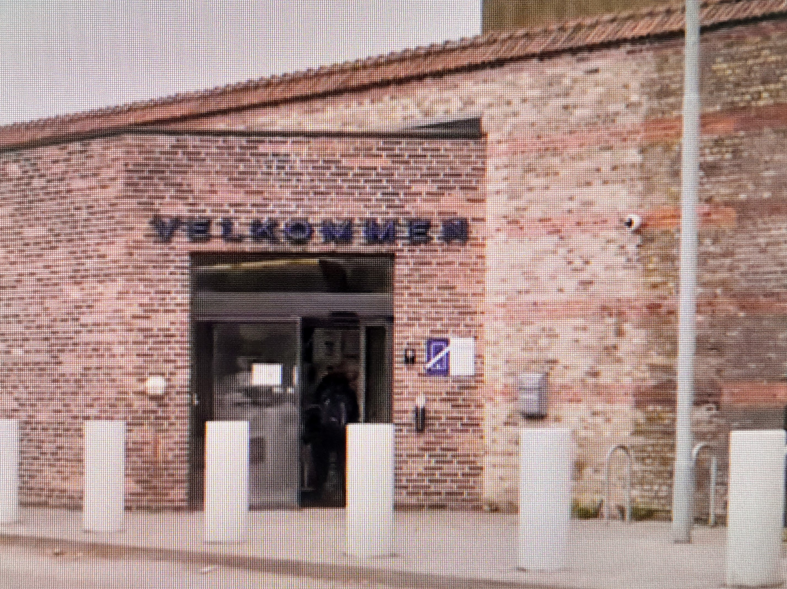 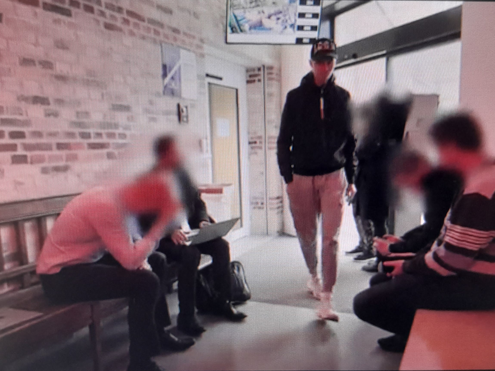Billeder. Udleveringen i Vestre Fængsel udefra og indefra (fra "Anders Agger indefra: Vestre Fængsel").
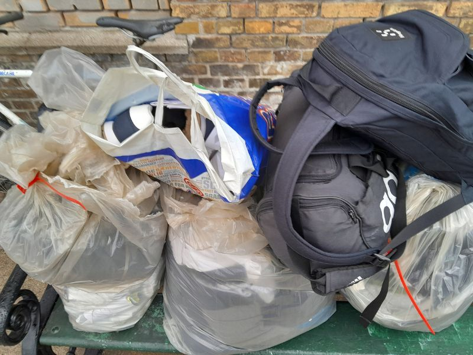


Billede. Træning i PureGym Brøndbyøster.
 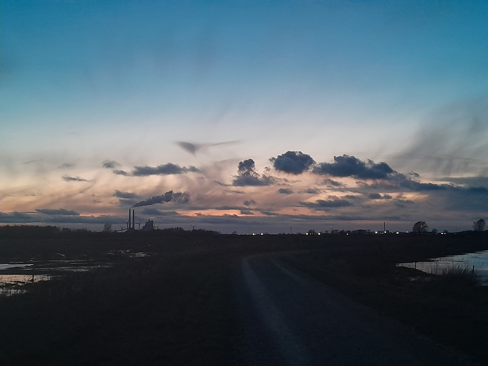
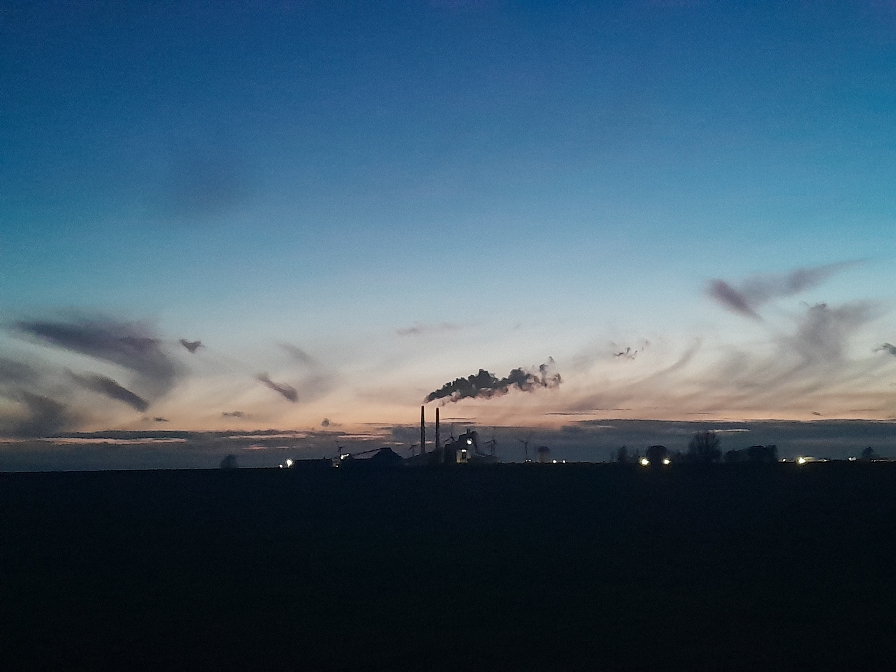
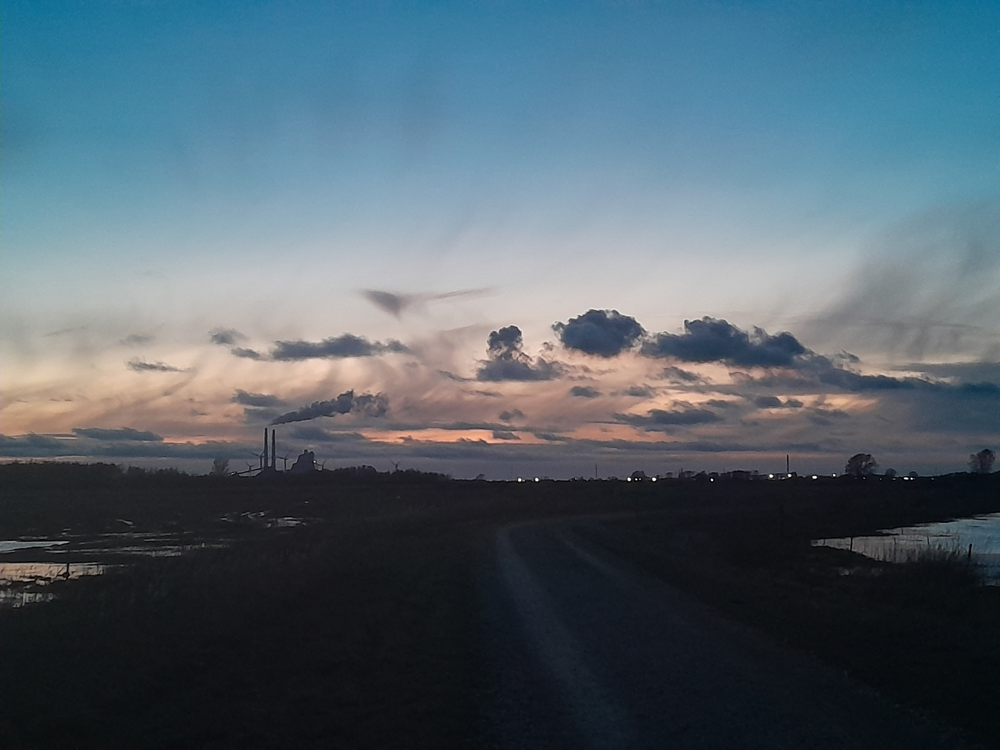
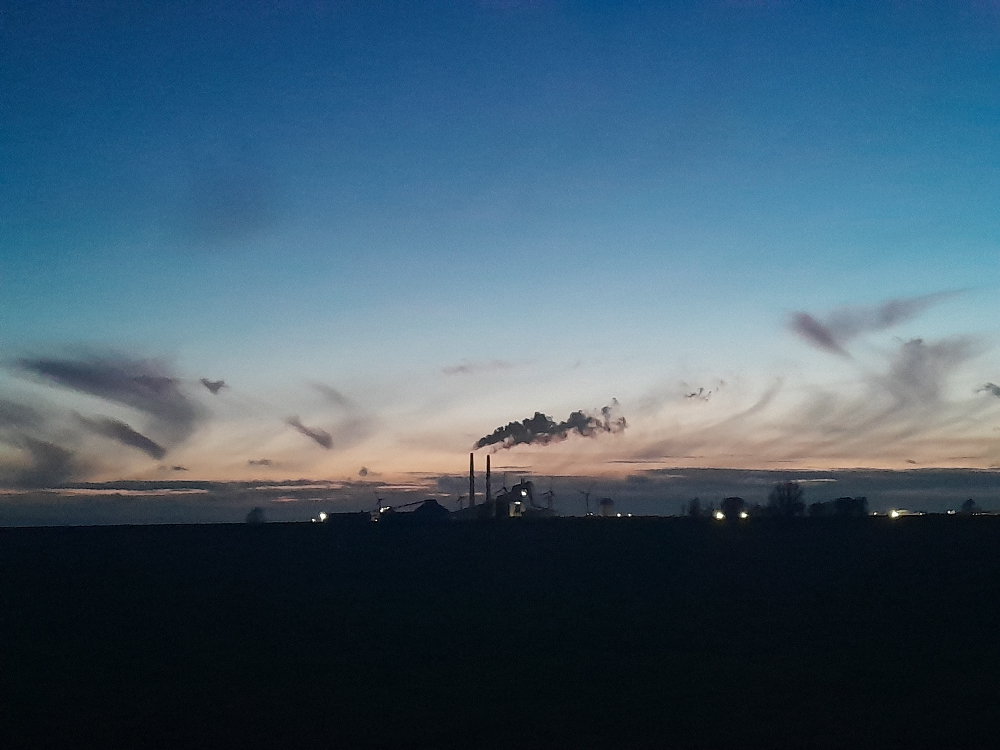
Billede. Kalvebod Fælled. På vej til teltet efter træning i PureGym på Vestamager. Fælleden var utrolig smuk og jeg opfattede den som mit hjem. Jeg havde boet der i over halvandet år, og selvom størstedelen af tiden var et mareridt af mudder, lus, kulde, sult, tørst eller ulidelig hede, så havde der også været gode dage, smukke dage og en gang i mellem dage, hvor naturen nærmest var magisk. Havde det ikke været for lusene eller hvad det var, samt andre mennesker i området, kunne jeg sagten bo på Kalvebod Fælled så længe det skulle være.
Billede. Kl. 7.02. Jeg havde i går ringet til Saxenhøj og aftalt, at jeg i dag kom derned og blev indskrevet. Dette skulle være min sidste dag i teltet på Kalvebod Fælled. Det blev det selvfølgelig ikke, men det, jeg håbede på daværende tidspunkt.

Billede. Kl. 8.55. Efter jeg havde pakket alt ned og smidt det hele ud i skraldespanden ved Byskoven, tog jeg først i PureGym på Vestamager og gik i bad, trænede og gik i bad igen. Derefter var til afsted til Lolland.

Billede. Kl. 12.41. Deporteret til Saxenhøj i Sakskøbing. Jeg blev løsladt til gaden og jeg måtte igen acceptere at blive fornedret og ringe til samtlige forsorgshjem i landet, der havde plads. Der var kun to: Et i Jylland og det i Sakskøbing. Jeg accepterede igen ydmygelsen fordi jeg havde et mål, jeg ville indskrive min dagbog og offentliggøre den, så alle i Danmark kunne læse mit vidnesbyrd. Det mål var så vigtigt at det var nedværdigelsen værd.
Billede. Ut. på mit værelse på Saxenhøj. Det var vigtigt hele tiden at demonstrere overfor PSP-samarbejdet og andre myndigheder, at jeg var og fremstod normal.
Billede. Jeg frekventerede næsten dagligt det lokale bibliotek i Sakskøbing for at læse aviser, bøger eller sidde at skrive. Det var et lille og hyggeligt bibliotek og jeg hilste altid på bibliotekarene, som hurtigt genkendte mig. Biblioteket havde en reol med lokalhistorie, og jeg sad ofte og læste i bøger om områdets historie, herunder om Saxenhøj. Sakskøbing var et smukt og godt sted at bo. Hvis man altså havde et hus, bil, familie, venner og job. For mig var det som én stor isolationscelle, utroligt ensomt og trøstesløst.
Billede. Saxenhøj, dagen efter ankomsten.
Mails til advokat Karoline Normann
"Kære Karoline Normann.
Jeg skal bede dig om at rykke politi og anklagemyndighed hurtigst muligt.
Jeg kan ikke holde ud at rådne op som hjemløs uden fremtidsudsigter.
Hvis der ikke sker noget nu, er det meget sandsynligt jeg ender i fængsel igen eller det, der er værre.
Jeg forstår ikke, at jeg ikke bliver taget alvorligt af nogen.
Venlig hilsen,
Kjeld."

Billede. Dette fitnessstativ foran den lokale skole i Sakskøbing frekventerede jeg hyppigt. Da jeg ankom og havde træningsabstinenser, spurgte jeg den unge fyr, der sad bag kassen i den lokale REMA 1000, om han tilfældigvis var kendt i området og om han i såfald vidste om der stod den slags udendørs trænningsstativer. Jeg indskød, at det måske var et lidt mærkeligt spørgsmål. Heldigvis var fyren lokalkendt og fortalte mig om dette sted. Hans råd hjalp mig i dén grad, og jeg sendte ofte en taknemmelig tanke til ham, når jeg afreagerede på stativet.
"Kære Karoline Normann.
Jeg begynder igen at skrive og ringe til myndighederne for at få dem til at gøre deres arbejde og forholde sig til virkeligheden.
Jeg er ligeglad med konsekvenserne og ingen gider at hjælpe mig med at komme videre og få et værdigt liv.
Det er bedre at være i Vestre Fængsel end at rådne op alene og uden noget at tage mig til.
Venlig hilsen,
Kjeld."

Billede. Selv helt centralt i Sakskøbing var der forladte bolliger.

Billede. Jeg brugte tiden på Saxenhøj til at indskrive min dagbog.

Billede. Fitnessstativet ved skolen. Jeg var lidt flov over som voksen mand at træne på stativet i dagtiden, når der var børn på skolen, da det kunne misforståes, især taget i betragtning af at Saxenhøj lå så tæt på, at der var mange forskellige typer dér og at ingen kendte mig. Derfor trænede jeg helst om aftenen. En beboer, jeg talte god med, beroligede mig dog og sagde, at han ofte så andre voksne, der trænede på stativet.
Hvad er mit liv værd?
Nogen troede, at jeg kunne trues til at holde kæft om mine oplevelser gennem de sidste ti år. Nogen troede, at jeg bare kunne glemme den umenneskelige behandling og dem, der havde udsat mig for den. Og nogen troede, at jeg ville finde mig i at blive løsladt til gaden som 42-årig og rådne op i meningsløshed og ensomhed. Det var desværre ikke tilfældet. Jeg var hverken mere eller mindre værd som menneske end alle andre og jeg ville da ikke acceptere at blive behandlet som tilfældet var. Jeg ville have erstatning og retfærdighed.
Advokat Hanne Rahbek
Lægeforeningen havde nægtet at oplyse mig om hvad den advokat fra foreningen, der på vegne af mine bødler havde meldt mig til politiet i oktober 2021. Men jeg fandt ud af under et retsmøde, at hun hed Hanne Rahbek. Det var interessant. Hun var således personigt ansvarlig for alt, der var sket siden. Og jeg havde ret i det, der havde været årsagen til anmeldelsen, hvilket Hnne Rahbek ville have erfaret, hvis hun havde sat sig ind materialet.
Jeg kunne da sagtens forstå at Lægeforeningen ikke turde oplyse navnet på den ansatte, der havde gjort noget ekstremt forkert og uetisk i foreningens navn. Men Lægeforeningen måtte også kunne forstå, at jeg skrev advokatens navn her.
 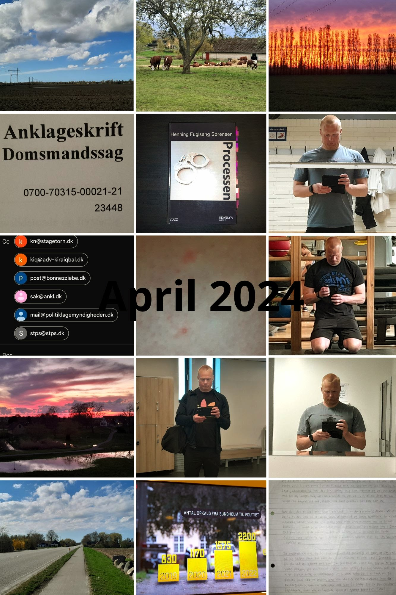
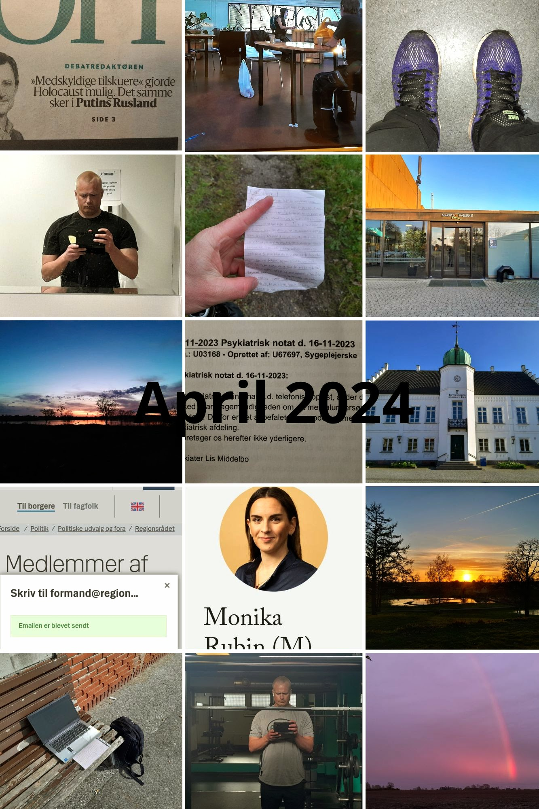
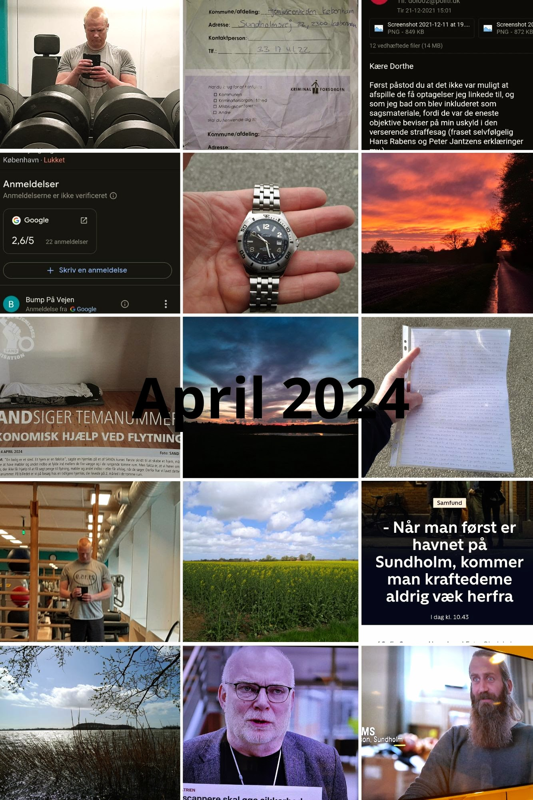
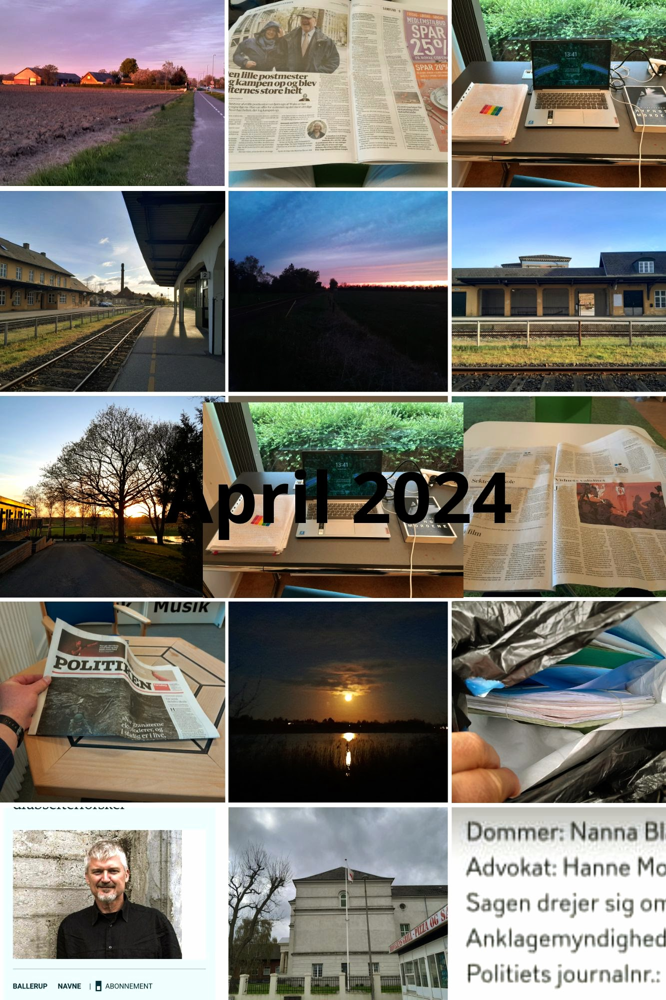
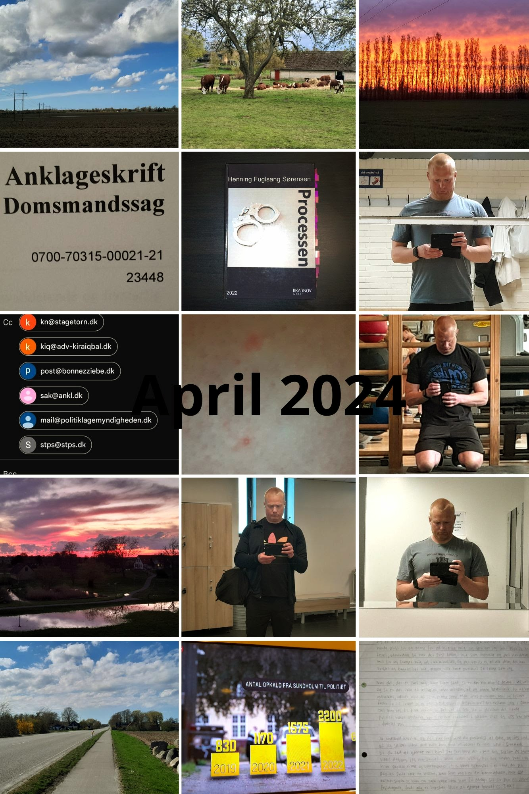
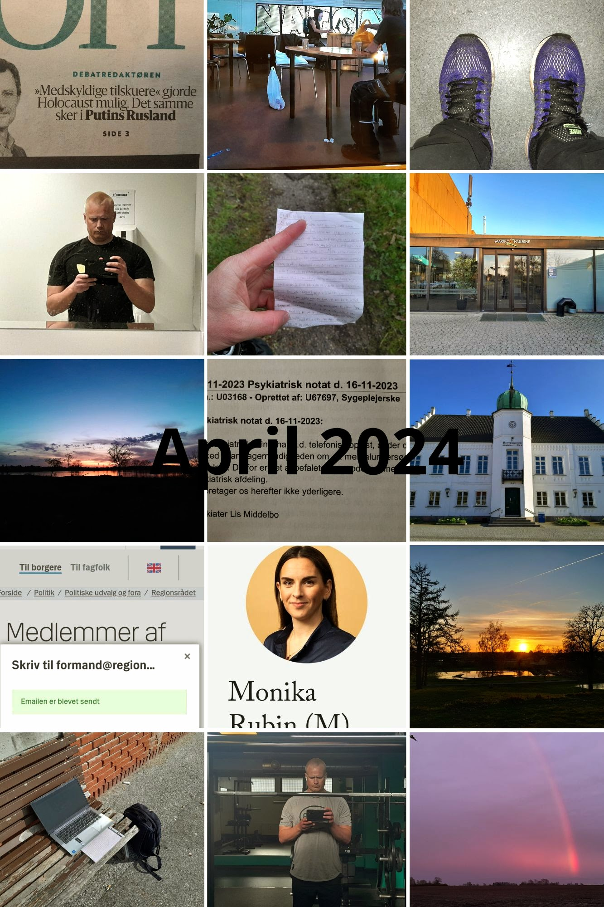
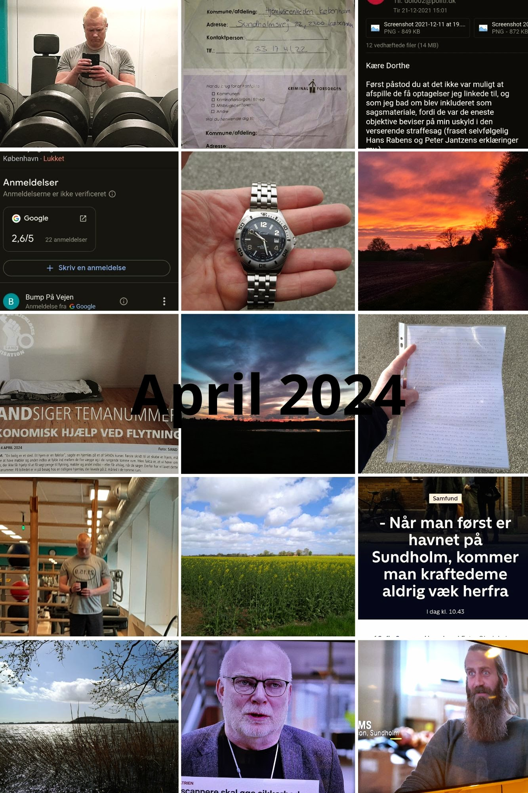
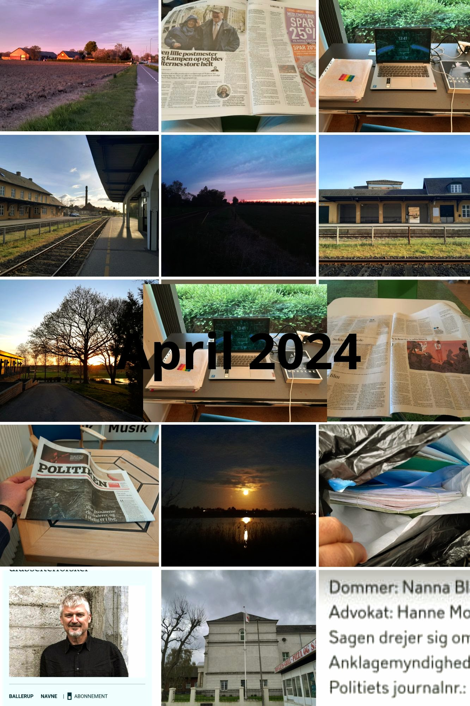
Billeder. April 2024.
Ikke en aprilsnar
At jeg skulle rådne op som hjemløs i over et år til, var desværre ikke en aprilsnar. Det var en dødsdom. Det vidste alle, og jeg havde igen forgæves forsøgt at få min advokat til at gøre noget. Men der var intet at stille op; jeg havde mistet alt, ingen at se frem til, var hjemløs og tiltalt uden slutdato og jeg havde lidt i 10 år og ville ikke mere.
Det var som om at ingen forstod hvor alvorligt det var. Som sædvanlig lod omverdenen som ingenting. Man troede at jeg havde lyst til at rådne op i endnu et år, mens jeg var tiltalt og hjemløs. Jeg havde skrevet på de sociale medier og til Karoline Normann, at jeg qua førnævnte meget snart ville ende i fængsel igen. At hun, at nogen skulle gøre noget, for ellers ville det ende helt galt. Men som alle de andre gange, jeg havde gjort noget tilsvarende, skete der intet. Det var så grusomt. Hvordan kunne mennesker dog få sig selv til at lade dette ske? Eller ligefrem gøre imod mig? Jeg havde aldrig troet, at man kunne være så nådesløs og ond i et land som Danmark.
At dette skulle være min skæbne, at jeg havde fortjent at få mit liv ødelagt, det havde jeg aldrig troet. Men det var virkeligheden. Mine bødlers ugerninger var slemme nok, men derudover havde de et magtapparat i ryggen, som blindt holdt hånden over bødlerme. Region Hovedstadens Psykiatri, Lægeforeningen mv. Her sad, der aktivt mennesker, der vidste hvad de gjorde imod mig, men som var så gennemført onde, at de var ligeglade. Forstod de ikke, hvad de tvang mig til?
Nødråb til advokat Karoline Normann
Karoline Normann havde til samtalen på retspsykiatrisk afdeling, Middelfart, P7, advaret mig kraftigt mod at kontakte politi elller andre myndigheder, og hun havde belært mig om, at 'ord er farlige' og på den måde tage mine bødlers parti. Karoline Normann var i min optik hverken værre eller bedre end hendes foregængere, der heller ikke havde hjulpet mig og ofte været lige så store modstandere som de myndigheder, der i årevis havde chikaneret mig. Det lod ikke til at Karoline Normann, til trods for at hun også havde en uddannelse som psykolog, forstod hvordan det var at være hjemløs og rådne op i omkring 10 år. Hvis jeg havde forventet empati, havde jeg valgt en helt forkert advokat. Problemet var ikke Karoline Normann personligt, for hun var ikke anderledes end hendes kolleger efter min mening, problemet var, at danske forsvarsadvokater bare var pisse ligeglade med borgere, der som jeg var ruinerede. Vi kunne åbenbart bare fucke af, lod holdningen til at være.
"Kære Karoline Normann
Der bliver nødt til at ske noget i sagen!
Jeg har været sigtet i de fleste forhold siden oktober 2021, og jeg kan IKKE vente et år til at sagen kommer for retten.
Tror du jeg har lyst til at rådne op på 10. år?
Jeg er jo et psykisk raskt menneske, så du må da kunne forstå at jeg ikke kan eller vil finde mig i at være hjemløs.
Du skal gøre noget inden jeg selv tager affære og ender i fængsel igen.
Det er umenneskeligt!
Kjeld Andersen."
Jeg havde advokat Hanne Ziebe, men var meget utilfreds med hendes indsats for mig, eller mangel på samme, så jeg ledte efter en ny advokat, der gad at gøre sit arbejde. Af en person, jeg stole på, fik jeg anbefalet Karoline Normann, som havde den unikke fordel, at hun også var uddannet psykolog. Jeg valgte hende, men desværre var hun kun marginalt bedre end Hanne Ziene i min optik. Jeg havde faktisk valgt Claus Bonnez, men blev spist af med Hanne Ziebe og jeg var - og det var min egen skyld - for høflig til at kræve at få Claus Bonnez, som jo var ham, jeg havde valgt.
Mail til advokat Hanne Ziebe af 11. maj 2023
"Kære Hanne Ziebe
Jeg har forgæves forsøgt at få kontakt til dig og bedt dig om at kontakte mig hurtigst muligt flere gange.
I mellemtiden har Henrik Pedersen ikke overholdt objektivitetsprincippet, han har ikke sikret min ret til en retfærdig rettergang inden en rimelig frist og han tvinger mig til en mentalundersøgelse selv om den er helt unødvendig.
Henrik Pedersen gider heller ikke lytte til psykiater Peter Jantzen, der har fortalt ham at jeg for helvede intet psykisk fejler end ADD. Henrik Pedersen er også ligeglad med de vidner jeg har oplyst ham om forlængst og han nægter nu en genafhøring.
Din passivitet, Hanne, tvinger mig til at begå selvmord eller selvtægt snart qua min ulidelige livsvilkår som følge af hjemløsheden, igen som følge af de ubegrundede tiltaler.
Jeg kan ikke ligge i et telt og være voldsomt plaget af lus eller lopper som gadesovende hjemløs og samtidig føre min egne sag, fordi du tilsyneladende ikke gør det.
Politiet nægter at lytte til mig, de nægter at forholde sig til mine beviser på min uskyld og det går simpelthen ikke. Hvis jeg havde overskud kunne jeg selv tilbagevise samtlige sigtelser for al dokumentationen lægger frit tilgængelig på nettet.
Man kan ikke udsætte mennesker for den behandling jeg bliver udsat for. Nu er det nok. Jeg har absolut ingen tillid til dig, Hanne Ziebe. Det er grotesk at der ikke er nogen advokater i dette land der gider at gøre deres arbejde, men at jeg selv må gøre det fra teltet.
Jeg finder en anden advokat i morgen, Hanne.
Kjeld Andersen,
CPR:"
Anklager Henrik Pedersen
Den person, der næstefter mine bødler og advokat Henne Rahbek, var personligt mest skyld i min uudholdelige situation, var anklager Henrik Pedersen fra Vestegnens Politi. Jeg prøvede forgæves at få ham til at gøre sit arbejde, men han nægtede.
"Kære Henrik.
De retsmøder, der er berammede, beror vel på det sagsmateriale, som du er blevet præsenteret for.
Og sagen er, at det sagsmateriale, jeg har leveret til politiets efterforskere, som klart taler for min uskyld, er blevet ignoreret. Samtidig har man forsømt at indhente journaloplysninger og afhøre vidner, der kan bekræfte mine påstande.
Man har ligeledes før anmeldelserne konsekvent ignoreret mine relevante politianmeldelser af dem, der nu har fået mig tiltalt. Man har fejlagtigt troet at jeg var tosset, hvilket aldrig har været tilfældet.
Man har således forbrudt sig mod objektivitetsprincippet, og man har trukket sagen i langdrag, hvilket krænker min ret til en retfærdig rettergang inden for en rimelig tidsfrist.
Man har sigtet og tiltalt mig, selvom man både før og især efter dette har været i besiddelse af oplysninger der helt åbenbart gjorde sigtelserne grundløse.
Alligevel har man valgt at sigte mig og holde mig tvunget i hjemløshed og som gadesover i over et år. De oprindelige sigtelser omhandlede udelukkende perioden før 13. april 2021.
Men du fortalte mig at man havde tilføjet perioden indtil november 2022. Det anede jeg ikke og de ekstreme livsvilkår jeg har været påtvunget har garanteret resulteret i at jeg har skrevet noget som har foranlediget nye sigtelser, altså at de oprindelige sigtelser i givet fald mulighedvis har fremprovokeret det som I opfatter som ny kriminalitet.
De berømmede retsmøder er netop qua ovenstående unødvendige og ville ikke have været berammet, hvis man havde fulgt objektivitetsprincippet.
Præmissen for de fleste tiltaler er helt forkert. Jeg har jo aldrig været psykotisk eller i en ligeartet tilstand, eller til fare for mig selv eller behandlingskrævende. Det er ekstremt alvorligt hvad man har gjort imod mig.
Det er mig, der er ofret og anmeldelerne, der er forbrydere. Det er helt klart for alle, især nu.
Jeg kender ikke jeres arbejdsfordeling, Henrik.
Jeg ved bare, at der er noget helt, helt galt, når man som du har tænkt dig, vil tvinge mig til en mentalundersøgelse, selvom jeg er totalt psykisk rask og aldrig har fejlet andet end ADD og nu PTSD som følge af overgrebene i psykiatrien.
Jeg har været fulgt meget tæt under indlæggelse og ambulant hver 14 dag i psykiatrien i tre år og man har erklæret skriftligt at jeg IKKE fejler andet end ADD og PTSD. Så kan jeg jo heller ikke lide af kronisk paranoid psykose, som Gitte Ahle og Mette Brandt Christensen påstod, vel? Så var det nok dem, der var forkert på den.
Jeg har også optaget hele den første mentalundersøgelse og givet politiet optagelserne. Har kan alle selv høre at jeg er helt normal, selv om man konkludere det modsatte. Så man tog fejl og det har jeg bevist. Alt dette overflødiggør en ny mentalundersøgelse. Den første var forkert og jeg har ingen tiltro til at den anden ikke også er det.
Er du i øvrigt klar over, at Mette Brandt Christensen dengang var både min klinisk behandlende retspsykiater og næstformand i retslægerådet? At hun stadig er sidstnævnte i dag? Hun var og er hamrende inhabil.
Det er så mange absurde og retssikkerhedsmæssigt dybt betænkelige forhold i min sag og som du selv sagde i telefonen så er det mine anmeldere politiet burde efterforske.
Hvorom alting er, så ligger jeg i skrivende stund i min sovepose i teltet og kan ikke sove fordi lopperne bider mig konstant. Mine livsvilkår er uholdbare og ulidelige. Det går ikke. Jeg siger ikke at det er din skyld, men det er heller ikke min og der må og skal ske noget hurtigst muligt, helst i dag i dagtiden.
For jeg vil have lov til at leve et normalt liv som det normale menneske jeg er, jeg nægter at skulle unødigt retsforfølges og udsættes for flere justitsmord, jeg vil ikke holdes i hjemløshed.
Jeg har nu bevist at Egill Rostrup har indgivet flere dybt alvorlige falske anklager mod mig, som politiet har ignoreret. Det går ikke.
Uanset hvem der skal gøre hvad på dit hold, så må de igang nu.
Og jeg fastholder min klage over dig og politiet. Det er ikke personligt, Henrik, og jeg har oprigtigt talt stor respekt for, at du læser højt for dine børn, det er super god stil, men jeg kan jo ikke acceptere det, der foregår og det burde du kunne forstå.
Venlig hilsen,
Kjeld."
Glemt pinkode
Jeg kunne huske alt andet, men lige netop pinkoden til mit hævekort havde jeg glemt efter lidt over fire måneders indespærring. Jeg havde bestilt en genfremsendelse af min nuværende pinkode hos Lægernes Bank for over en uge siden, men jeg havde selvfølgelig ikke modtaget den endnu. Problemet - og det var immervæk et stort problem - var, at jeg så ikke kunne købe min medicin, når jeg løb tør i morgen. Så ville det for alvor gå galt.
Den slags problemer havde jeg været udsat for talrige gange før, det burde ikke være så katastrofalt, men det var det fordi Lægernes Bank var verdens mest elendige foretagende og dels fordi jeg var hjemløs. Der var ikke meget forståelse at hente i forhold til alle de småkatastrofer, man kom ud for som hjemløs, det var som om folk generelt var blevet mere og mere kyniske og ligeglade med andre end dem selv.
Folketingsmedlem Karina Lorentzen
Jeg havde møjsommeligt skevet en kopi af de fleste breve, jeg havde afsendt, i hånden, men det var ikke i alle tilfælde, jeg orkede det, så bl.a. mine henvendelser til Karina Lorentzen havde jeg desværre ikke kopieret, hvorfor jeg ikke kunne gengive dem hér. Karina Lorentzen havde jeg i flere år løbende informeret om min situation og det enorme problem for retssikkerheden, som retspsykiatrien udgjorde. Karina Lorentzen var den (eneste) politiker, der kærede sig (mest) om retsikkerhed og som ikke lå under for populisme og pøbelvælde.
Desværre var det omsonst at henvende mig til hende, af alle. Jeg havde jo bevidst, at fremtrædende retspsykiatere og retslægerådet havde begået regelret justitsmord mod mig, men alligevel gad Karina Lorentzen ikke at gøre noget. Og når hun var ligeglad, så var alle andre politikere også ligeglade. Selv om jeg faktuelt har ret, var Karina ligeglad.
Træning
I går trænede jeg bryst, triceps og mave og i dag stod den på ryg, biceps og lænd. I morgen skulle jeg meget gerne træne ben, skuldre og mave. I Vestre havde jeg heldigvis lært en masse nye øvelser og erfaret, at jeg sagtens kunne træne det meste af kroppen uanset under hvilke forhold, jeg befandt mig. Øvelserne i Vestre havde jeg lært af de andre ansatte. Man kunne måske ikke lære en gammel hund nye tricks, men jeg kunne godt.
Jeg havde overlevet og haft det så relativt godt i Vestre, mest af alt fordi jeg var et så socialt menneske. Hvordan Gitte Ahle kunne tro, at jeg var autist, var simpelhen forrykt og sagde kun noget om hendes eklatante mangel på diagnostiske ever og dømmekraft. Danmark kunne ikke være tjent med en retspsykiater som hende, der var så elendig til at diagnosticere.
Billede. Nykøbing Falster Bibliotek var ret stort og et ganske udmærket et af slagsen med et stort udvalg af bøger, med mange studierum og et godt udvalg af aviser. Jeg sad meget ofte på dette bibliotek efter træning i PureGym ikke langt derfra. Sakskøbing var der ingen, der kunne holde ud at opholde sig i, så alle, der fysisk var i stand til det, flygtede hver dag til især Nykøbing Falster eller Maribo.
Billede.
Ny advokat
Jeg skrev til min aktuelle parodi på en forsvarsadvokat, at jeg ikke ville have hende som advokat længere, da hun ikke tog mig alvorligt. Jeg havde ganske vidst ikke fundet en erstatning for hende, men fandt jeg ikke én, kunne det også være det samme, for ingen advokater, jeg havde haft indtil videre, havde gjort den mindste forskel i forhold til mine sager. De havde nægtet at gøre noget som helst andet end det mindste, de kunne slippe afsted med, og selv det havde de ikke gjort tilnærmelsesvist ordentligt. Derfor havde jeg tabt alle retsmøder og discountadvokaterne havde skummet fløden på min regning ved at tjene fedt på mig, uden at arbejde det mindste for pengene.
Træning
Jeg trænede ryg, biceps, mave og lænd i dag og gik en tur på 15 km med to forholdsvis tunge tasker i eftermiddagssolen, så jeg blev halvskoldet i ansigtet. Mit liv kunne have været så godt, men det var det ikke, det var noget lort og det var kun pga. nogle svin, der via retsvæsenet med falske anklager fastholdt mig i hjemløshed. Gid de måtte ende i helvede.
Mail til Region Hovedstadens Psykiatri den 7. april 2024
"Kære Region Hovedstadens Psykiatri.
Jeg var læge indtil jeg fik en alvorlig psykiatrisk fejldiagnose af praktiserende læge Camilla Mie Elvekjær, Toke Troelse og Torsten Bjørn Jacobsen, samt ikke mindst Gitte Ahle.
Jeg fik fejldiagnosen i 2016 og har været ruineret og hjemløs lige siden.
Fordi jeg ikke kunne holde det ud længere, og fordi Region Hovedstadens Psykiatri ignorerede mig og mine klager gennem årene, skrev jeg sidste år en mail, som resulterede i fængsel i over tre måneder og en mentalundersøgelse på over en måned.
Mentalundersøgelsen konkluderede, at jeg selvfølgelig var psykisk rask, hvilket jeg hele tiden har været.
Nu er jeg udskrevet hhv løsladt til gaden igen og kommer snart i fængsel, fordi min situation er den samme.
Så jeg vil derfor anmelde førnævnte læger til jer og til politiet igen.
Nu er der slet ikke nogen tvivl om, at de har givet mig en alvorlig psykiatrisk fejldiagnose og derfor er til fare for min patientsikkerhed.
Derfor skal de straffes og jeg skal have erstatning.
I kan fortælle min advokat, Karoline Normann, om hvordan jeg formelt anmelder lægerne til politiet og Styrelsen for Patientsikkerhed, hvis hun altså gider at bistå mig.
Fordi jeg konsekvent gennem ca 10 år er blevet ignoreret af både jer og mine 'advokater' selvom jeg hele tiden har haft ret, ligger jeg denne mail på de sociale medier.
Kjeld Andersen,
CPR"

Billeder. Smuk udsigt fra Saxenhøj.
Svømning
I svømmehallen.
En dag nærmest uden kriminalitet
Jeg var sikker på, at min tur i svømmehallen var årsagen til, at jeg i dag måske ikke havde gjort mig skyldig i mere 'ordkriminalitet'. Men helt ærligt, hvilken rolle spillede det? Jeg havde alligevel intet at tabe længere og intet incitament til at overholde den lov, som ikke havde beskyttet mig fra overgreb.
Ny advokat
Jeg havde et par ideer til hvem jeg ville anmode om at være min nye advokat, men jeg har ikke kontaktet nogen endnu. For hvorfor? Det var jo ligegyldigt.
Høring over udkast til bekendtgørelse om ændring af bekendtgørelse om forretningsorden for Retslægerådet
"Advokatrådet er ved brev af 30. november 2023 blevet anmodet om bemærkninger til ovennævnte udkast til ændring af bekendtgørelse om forretningsorden for Retslægerådet.
Advokatrådet skal i den anledning bemærke følgende:
Der lægges med udkastet til ændringsbekendtgørelsen op til at indsætte et nyt 2. pkt. i bekendtgørelsens § 3, stk. 1, så det fremgår, at formanden kan udpege flere medlemmer eller sagkyndige til at behandle en sag.
Praksis vil ifølge udkastet være, at formanden udpeger et eller flere supplerende medlemmer eller sagkyndige i tilfælde, hvor Retslægerådet anmodes om en supplerende udtalelse på baggrund af nye lægelige oplysninger, hvis Retslægerådet tidligere har udtalt sig om de pågældende spørgsmål, og det vurderes nødvendigt for at styrke rådets udtalelse, at der udpeges supplerende medlemmer eller sagkyndige.
Det er Retslægerådets formand, som vil vurdere nødvendigheden af at styrke en udtalelse ved at udpege supplerende medlemmer eller sagkyndige.
Det er Advokatrådets opfattelse, at det er mest hensigtsmæssigt, at det i udkastet til ændringsbekendtgørelsen gøres obligatorisk, at der skal udpeges supplerende medlemmer eller sagkyndige ved udarbejdelsen af en ny udtalelse fra Retslægerådet på baggrund af nye lægelige oplysninger. Dette for at undgå, at der kan ske en udvælgelse gennem formanden af, hvilke udtalelser der skal suppleres af nye medlemmer eller sagkyndige. Det bør efter Advokatrådets opfattelse være en retsgaranti for alle, at hvis der kommer nye lægelige oplysninger, så vil en udarbejdelse af en ny udtalelse altid ske ved deltagelse af nye supplerende medlemmer eller sagkyndige.
Hvis formålet med at få nye øjne på udtalelsen ikke skal forspildes, er det Advokatrådets opfattelse, at der bør udpeges mere end én suppleant. Som udkastet til ændringsbekendtgørelsen lægger op til, kan det netop være en mulighed, at der kun udpeges én enkelt suppleant, eller at suppleanterne er i undertal. Det anerkendes, at det kan være hensigtsmæssigt, at medlemmer eller sagkyndige som tidligere har udtalt sig, fortsat kan bidrage med en ny udtalelse fordi, de kender til sagen og har en fagviden inden for det område, som udtalelsen omhandler.
Hvis der kommer nye lægelige oplysninger frem, som indebærer, at der skal udarbejdes en ny udtalelse fra Retslægerådet, vil det imidlertid efter Advokatrådets opfattelse være mest formålstjenligt, at halvdelen af medlemmerne eller de sagkyndige udpeges som suppleanter, også selvom der er mulighed for at dissentiere. Dette for at imødegå og minimere risikoen for, at tidligere medlemmer eller sagkyndige kan påvirke de supplerende medlemmer eller sagkyndige i deres vurdering af sagen. Det kan være ved direkte påvirkning, men også indirekte påvirkning som følge af eksempelvis hierarki (social eller faglig status), kollegialitet eller anciennitet.
Advokatrådet skal i øvrigt på den givne foranledning bemærke, at der i praksis er konstateret tilfælde, hvor der med rette kan rejses tvivl om, hvorvidt begrundelsespligten, jf. bekendtgørelsens § 8, reelt er opfyldt. Den rejste kritik af Retslægerådets udtalelser beror til dels herpå. Advokatrådet skal derfor opfordre til, at Retslægerådets formandskab understreger begrundelsespligtens betydning over for medlemmerne eller de sagkyndige, og at disse fremover også varetager deres opgave i overensstemmelse med bekendtgørelsens regler på dette punkt.
Med venlig hilsen
Andrew Hjuler Crichton
Sagsnr: 2023-3870"
Mail til Karoline Normann, Hanne Ziebe og Kira Iqbal
"Før paragraf 119 inkluderer advokater."
"Kære Karoline Normann, Hanne Ziebe og Kira Iqbal
Jeg har tigget og bedt jer alle om at hjælpe mig med de verserende tiltaler, samt med at få generhvervet min læge autorisation, som blev frataget på et faktuelt forkert grundlag.
I er bekendt med at politiet og anklagemyndigheden har:
I har ikke forholdt jer til det faktum at jeg har klaget til samtlige relevante instanser, før jeg begik selvtægt til sidst.
I har alle været uengagerede og bagatellisere overfor at jeg har været hjemløs i årevis og stadig er det.
I har heller ikke haft nogen forståelse for, at jeg har mistet mit levebrød og har rådnet op i snart ti år som følge af åbenlyse fejldiagnoser.
I har alle tjent penge på at være advokat for mig. Men I har intet gjort og jeg rådner fortsat op.
I skulle jo forestille at kæmpe for mig og retssagerne i sig selv udgør en alvorlig trussel mod mit liv og helbred på nuværende tidspunkt.
I har intet som helst gjort og I har behandlet mig som var jeg retarderet og tosset.
Selv mens jeg boede i telt i halvandet år, ofte var gennemblødt og ofte sultede, forstod I ikke, hvor grotesk det var, at jeg skulle tvinges til det pga. grundløse sigtelser.
Der er ingen af jer, der ville have været fysisk og mentalt i stand til at overleve det, jeg har overlevet og i så mange år og alligevel lader I ikke til at forstå alvoren, som om jeg ikke er et rigtigt menneske, men et dyr eller et stykke affald, som man bare kan sjofle og træde på og som ikke har fortjent et ordentligt forsvar mod myndighederne.
Min eneste chance for at overleve, er ikke jer, men at få min historie i medierne. Det kommer også til at lykkes for mig.
Kjeld Andersen."
Mail til Vestegnens Politi, Karoline Normann, stats- og rigsadvokaten
"Resultatet af mentalundersøgelsen er, at jeg intet fejler, udover velmedicineret ADD, samt at jeg er egnet til straf.
Det er præcis, hvad jeg hele tiden har sagt, og det som flere psykiatere allerede har givet mig ret i.
Jeg fik af min advokat Karoline Normann at vide, at selve retssagen ikke er berammet endnu, samt at jeg tidligst skulle forvente at komme for retten om et år.
Det er helt uacceptabelt.
Jeg kan ikke leve som hjemløs i endnu et år, jeg har allerede været hjemløs pga. tiltalerne siden oktober 2021, og det har resulteret i nye tiltaler, hvilket er fuldstændigt uholdbart.
Politiet har gennem årene ignoreret mine relevante anmeldelser, foretaget syv ulovlige ransagninger uden efterfølgende sigtelser, fået mig idømt en behandlingsdom uden længstetid for noget, jeg aldrig har fejlet eller modtaget behandling for, nægtet at overholde objektivitetsprincippet, frataget mig min autorisation som læge og dermed mit levebrød og tvunget mig ud i langvarig hjemløshed i den tro, at jeg var tosset.
Nu, da det udover enhver tvivl er fastslået, at jeg er psykisk rask, står det klart, at det, politiet har foretaget sig, har været dybt ulovligt.
Jeg skal have min lægeautorisation igen straks.
Mine anmeldelser af læger og andre skal tages alvorligt.
Jeg skal desuden anmelde advokat Hanne Rahbæk fra Lægeforeningen for falske anmeldelser.
Nu må det være nok. Jeg blev ikke læge for at rådne op som hjemløs.
Indtil jeg informerer politiet om, at jeg har fundet en anden advokat, kan svaret på denne henvendelse sendes til Karoline Normann.
Jeg er i fuld gang med at indskrive og offentliggøre min dagbog fra Vestre Fængsel og fra Retspsykiatrisk Afdeling P7 i Middelfart. Det tjener som endnu et bevis på, at jeg er og hele tiden har været normal.
Foruden at rette henvendelse til jer, sender jeg den også til samtlige politikere og medier med vedhæftning af min bog.
Kjeld Andersen,
CPR: "
Danmark tilhører psykopaterne
Det var grotesk at grisene fortsat lod mig rådne op. De troede måske at de ved at ignorere mig kunne undgå at skandalen kom til offentlighedens kendskab? Spørgsmålet var ikke, om min sag kom i medierne, det kunne ikke undgåes, spørgsmålet var hvordan. Danmark var et land hvor psykopaternes trivedes bedst af alle. Ikke dem uden uddannelse i fængslerne, dem med tattoveringer, the usual suspects. Det var de dumme psykopater. Det var de veluddannede psykopater, jeg mente, dem i Styrelsen for Patientikkerhed, i Lægeforeningen, advokaterne, politiet og anklagemyndigheden.
De psykopater havde kronede dage. Især de kvindelige psykopater ansat de steder, som ikke kunne tyranisere og ødelægge andre mennesker ved brugen af fysisk magt, men som kunne sidde i sikkerhed på et kontor eller stå og lyve i en retssal, dem uden samvittighed, der ødelagde mennesker med ord - på skrift og i tale - de 'farlige' ord, som Karoline Normann arrogant havde belært mig om, for hun syntes at ord var farlige, ord var vold, ord var overfald, men hjemløshed var ikke farligt, at fryse og sulte på gaden, på Sundholm, i et telt, måned efter måned, år efter år, det var ikke farligt.
Karoline Normann havde advokeret stærkt for at advokater skulle omfattes af den mest uretfærdige og skadelige paragraf i straffeloven, for så slap hun og hendes kolleger at de klienter, de havde pisset på, skrev om dem de på sociale medier. Elendige og skruppelløse advokater ville have den samme beskyttelse som elendige og skruppelløse offentligt ansatte, som ødelagde hele familier, fordi de var inkompetente og dovne.
Den beskyttelse ville advokaterne selvfølgelig også have, de ville ikke konfronteres med det katastrofale resultat af deres fejltagelser, deres ofre skulle tie og lide i stilhed. Jeg ønskede Karoline Normann held og lykke med foretagenet. Hvis jeg bare havde slået fire mennesker ihjel og hvis min sag var i medierne, så ville Karoline Normann gerne give mig et knus og yde en hæderlig indsats for mig.
Mail til Advokatsamfundet, advokat Karoline Normann og Justitsministeriet
"Jeg har meldt Lægeforeningens advokat Hanne Rahbæk til Københavns Vestegns Politi for falske anmeldelser.
Hanne Rahbæk meldte mig til Københavns Vestegns Politi i oktober 2021 fordi jeg offentliggjorde dokumentation for at jeg ikke var spor sindssyg, samt at jeg fik frataget min læge autorisation og levebrød på et faktuelt forkert grundlag.
Hanne Rahbek var på intet tidspunkt i god tro, men nu da en omfattende mentalundersøgelse igen fastslår at jeg intet psykisk fejler og dermed havde ret, er der grundlag for at sigte Hanne Rahbæk for falsk anmeldelse.
Advokat Karoline Normann er vidne på min anmeldelse.
Kjeld Andersen,
CPR"
Mail til Dansk Psykiatrisk Selskab og advokat Karoline Normann
"Kære Merete Nordentoft og Dansk Psykiatrisk Selskab
Den omfattende mentalundersøgelse under indlæggelse af februar og marts i år konkluderede det, jeg og mange speciallæger i psykiatri hele tiden har sagt og erklæret, nemlig, at jeg er psykisk rask.
Dermed har jeg fået ødelagt hele mit liv af jeres medlemmer og I har løbende været orienteret om det, men valgt at ignorere det.
Dermed er I medskyldige. Ikke kun i at ødelægge mit liv og lade mig rådne op som kronisk hjemløs, men også i at dække over og beskytte de medlemmer der har misbrugt deres fag til at forsøge at tvinge mig til at begå selvmord.
Det eneste jeg kan gøre, er at søge for at så mange som muligt og gerne hele Danmark bliver bekendt med at Dansk Psykiatrisk Selskab og Merete Nordentoft, Gitte Ahle, Torsten Bjørn Jacobsen mfl. mere eller mindre aktivt har deltaget i at ødelægge mig som menneske.
Listen over mennesker, der burde have handlet anderledes, som moralsk og fagligt svigtede er lang og tæller både psykiatere og advokater, men jeg har tid nok til at skrive om jeg alle sammen.
Kjeld Andersen."

Billede. "Sakskjøbing Sukkerfabrik". Til ingens overraskelse var denne industri stor i denne del af landet, især år tilbage. Der var lignende fabrikker i Nykøbing Falster og i andre byer dernede. På torvet i Sakskøbing var en statue af to polske roepiger i bronze med en lille plade, der på polsk og dansk hyldede den importerede arbejdskraft.
Mail til STRAX-huset, Høje Tastrup Kommune og advokat Karoline Normann
"Kære STRAX huset i Høje Taastrup.
Jeg skylder jer en opfølgning på min status her omkring fire år efter jeg var tilknyttet jer.
Jeg har været hjemløs det meste af tiden siden jeg boede i Høje Taastrup, fraset de tre måneder jeg var i Vestre Fængsel og den måned jeg var på retspsykiatrisk afdeling i Middelfart.
Årsagen var, at jeg ikke kunne holde ud at være tvunget til at bo i et telt længere, hvilket jeg var tvunget til pga sigtelser for freds-og ærekrænkelser, fordi jeg offentliggjorde dokumentation for at jeg ikke var spor sindssyg.
Før jeg blev fængslet ringede jeg til Nina Borum Nielsen. Hun bekræftede mig i at jeg selvfølgelig ikke var spor sindssyg på noget tidspunkt. Men Nina nægtede at erklære dette faktum til anklagemyndigheden og hun nægtede også at vidne i retten med sin viden.
At Nina tilbageholdte vigtig information, var en væsentlig årsag til min fortsatte hjemløshed og fængsling.
Heldigvis optog jeg min samtale med hende og offentliggør den.
Jeg er stadig i skrivende stund hjemløs og rådner op. Nina er stadig tavs.
Jeg synes at alle i Danmark skal vide hvem Nina Borum Nielsen er og hvad hun har undladt at gøre til katastrofal skade for mig.
Det samme er også tilfældet for samtlige andre ansatte i STRAX huset, som ligesom Nina har fortiet et justitsmord.
Jeg skriver om jer på: bumppavejen.github.io/bumppavejen-github.io
Det eneste der betyder noget for mig nu, er at flest muligt bliver gjort bekendt med konsekvenserne af feje menneskers dovenskab og pligtforsømmelse.
Kjeld Andersen."
Fnat
Der måtte jo være tale om fnat, det kunne næsten ikke være andet. Fnat havde forpestet mit liv i månedsvis nu, både i Vestre Fængsel, på Retspsykiatrisk Afdeling P7 i Middelfart og hvor jeg nu befandt mig. Det drev mig til vanvid, især, men ikke kun, om aftenen og om natten, og således havde det holdt mig vågen til langt ud på morgenen de sidste dage. Jeg havde udelukket alt andet, lus, lopper, nældefeber, væggelus, eksem, tør hud, stress, hysteri, og der var kropslige manifestationer på hunden på min krop efter biddene, så det var ikke noget, jeg bildte mig ind.
Det var det værste i hele verden, og det var umuligt at slippe af med fnatten. Trusler fra politiet, hjemløshed, sult og kulde, alt andet var ikke tilnærmessesvist så ulideligt som fnatten, som havde forpestet mit liv i måneder og år. Jeg havde købt mig fattig i Nix creme og Nix shampoo tidligere, men fordi jeg boede i et telt, så slap jeg aldrig af med fnatten. Hvad var det for et helvede jeg befandt mig i? Man blev vanvittig og desperat af fnatten. Mine bødler skulle påføres fnat alle sammen og nægtes behandling. De ville tilsidst begå selvmord fordi det var så uudholdeligt. Jeg var fucking uddannet læge, men skulle udover alt det andet også belemres af fnat, det var utilgiveligt.
Jeg gik i gang med første del af min strategi, som var igen at informere de mest relevante folketingspolitikere. Jeg var helt bevidst om risikoen, jeg løb, ved at sende maails til de pågældende, som dels havde modtaget flere mails før og dels ikke gjort det fjerneste, men bare ignoreret mig. De ville meget vel opfatte en ny mail fra mig som chikane, og de ville i forlængelse heraf melde mig til politiet. Men omvendt havde jeg ret i det, jeg skrev, og derfor burde politikerne have hjulpet mig, fremfor intet at gøre. Jeg havde intet valg, for ingen andre gjorde noget, og min situaiton var kritisk og jeg handlede derfor for at varetage mine akutte livsvigtige interesser. Og derfor var mine mails berettigede og lovlige og ikke udtryk for chikane eller lignende. Der var tale om nødret og derfor måtte politikerne tåle mine mails. Jeg gjorde intet ulovligt og politikerne havde pligt til at agere.
Mail til Monika Rubin og Karina Lorentzen Dehnhardt
"Kære Monika Rubin og Karina Lorentzen Dehnhardt
Du kender med stor sandsynlighed mig og min baggrund fra henvendelsen af 2023.
Det, jeg skrev til dig, kom desværre til at ske, for jeg kunne ikke holde ud at være hjemløs i mit telt efter halvandet år.
Jeg er nu løsladt til gaden igen og i gang med at skrive min dagbog fra Vestre Fængsel og Retspsykiatrisk afdeling P7 i Middelfart ind.
Jeg har indtil videre offentliggjort ca. 110 siders dagbog hér:
Jeg mangler at indføre ca. det dobbelte antal sider, men det er uvist om jeg når det, før jeg bliver anholdt igen.
Min eneste chance er først at forsøge at få dig til at involvere dig i sagen.
Lykkes det ikke, vil jeg foretage mig noget, jeg ved at pressen vil skrive om og på den måde også få mine sag i medierne.
Du kan i givet fald kontakte mig på tlf.
Venlig hilsen,
Kjeld Andersen,
CPR:"
Jeg fortrød, at jeg havde oplyst mit telefonnummer, for ingen gad at kontakte mig, og selv hvis de gjorde, havde jeg intet at tale med dem om. Der var intet at tale om længere.
Ulla Norings hævn
Jeg erfarede i retten, at det var Ulla Noring, der var blevet så vred på mig, at hun ikke ville lade mig mentalundersøge ambulant, hvilket kostede mig tre månederes fængsling og over en måneds mentalundersøgelse under indlæggelse. Ulla havde dog straffet mig hver dag siden januar 2018, så et halvt år til eller fra gjorde i den sammenhæng ingen forskel.
Ulla var et overordentligt kolerisk menneske. Hun havde bedt mig om at vurdere hvilken type personlighed hun havde, hvilket i sig selv var en meget mærkelig og upassende anmodning, som jeg under samalen havde frabedt mig at svare på, men hvis Ulla nu så gerne ville have mig til at bedømme hendes personlighed, ja, så var det hævet over enhver tvivl, at hun var meget kolerisk.
Hun var hurtigt emotionelt skiftende under vores samtale, snart nedladende, så benægtende og herefter arrig. Meget sigende for hendes ringe dømmekraft var, at hun selv vurderede sig som flegmatisk. Hendes tøjsmag og udseende var rigtigt nok ekstremt flegmatisk, men hendes vredladne og ubehagelige personlighed var og blev kolerisk.
Ulla Noring havde som et ekstra tramp på mig, som havde ligget ned i årevis, sendt et dokument til Byretten i Glostrup, hvor hun havde skrevet, at jeg var "til fare for andre og for mig selv". Det var jo en stor løgn, som hun intet belæg havde for at fremsætte, men Ulla var ikke for høvisk til at undlade at smadre mig fuldstændigt og hendes virkelighedsstridige udtalelse tegnede et skadeligt og helt forkert billede af mig overfor dommeren og anklageren. Så Ulla var en løgner.
Opkald fra politiet
Nogen havde ringet til mig to gange med hemmeligt nummer. Det var med altovervejende sansynlighed politiet. Sådan var det altid. Fremfor at gøre deres arbejde, lod de mig rådne op indtil jeg ikke kunne holde det ud længere og skrev noget, som de kunne sigte mig for, hvorefter jeg blev anholdt og kom i fængsel. Det kunne ikke være anderledes og det var ikke min skyld. Jeg reagerede udelukkende på den mishandling, man udsatte mig for, fordi jeg ikke kunne gøre andet.
Derfor var jeg også ligeglad med politiets hetz og frihedsberøvelser. Når de hentede mig og spærrede mig inde, var jeg forberedt, for jeg havde nu et armbåndsur, et par badetøfler og et ønske til den advokat, der skulle erstatte Karoline Normann, som var Michael Juul Eriksen. Det var trist, at jeg ikke kunne acceptere at rådne op i mindst et år til i uvished og som hjemløs, men det var min skæbne.
Jeg havde intet tilbage og intet at se frem til og derfor intet at tabe. Så jeg ville blive ved med at blive anholdt og løsladt til gaden som hjemløs, skrive noget i desperation, blive anholdt igen osv. Det var meget forudsigeligt og fred være med det. Jeg havde gjort alt, jeg kunne. Alle andre havde intet gjort og derfor ville det fortsætte indtil den dag, jeg døde. Fnatten havde holdt mig vågen igen til tidligt om morgenen, og der var intet jeg kunne gøre for at slippe af med den, udover at prøve at sove om dagen.
En skønne dag
En skønne dag ville man forstå. Om kort tid ville en advokat, måske Karoline Normann, måske en anden tilfældig, ringe til mig præcis som sidst og meddele at politiet ville anholde mig. Jeg måtte i mellemtiden forsøge at skrive mest ind af min dagbog fra fængslet inden da. Det positive var, at jeg havde en slutdato, nemlig anholdelsen. Så havde jeg noget at forholde mig til, fremfor nu, hvor jeg rådnede op i uvished.
Og præcis som før sidste anholdelse havde jeg også denne gang skrevet flere gange til min advokat og andre i god tid forinden og fortalt hvad der ville ske, hvis man fortsat lod mig rådne op som hjemløs. Og fordi myndighederne som sædvanlig svigtede, skete der intet og jeg fik ret, ligesom jeg ville få ret denne gang og næste gang. For jeg kunne ligesom alle andre normale mennesker ikke holde ud at være hjemløs uden længstetid og da slet ikke på 10. år. Derfor fortrød jeg intet. Intet som helst.
Jeg havde ret i alt, jeg havde skrevet og jeg fejlede ikke det mindste psykisk, så det kunne godt være en arrogant og samvittighedsløs advokat eller 'efterforsker' en tredje var blevet stødt over det, men det var der bare intet at gøre ved. Jeg kunne ikke holde en udsigtsløs tilværelse ud og det var advokaten og politiet, der var skyld i dette. Jeg kunne ikke fatte at de troede jeg bare kunne rådne op i tavshed i over et år til, indtil sagen kom for retten, men det var dem, der var helt væk for det kunne man ikke byde nogen mennesker.
Mit mål var det samme: Hele verden skulle vide hvem, der uretmæssigt havde ødelagt mit liv og dertil samtlige offentligt ansatte der var bistået dem. Det kunne aldrig blive anderledes. Måske kunne jeg nå at sende min bog til samtlige folketingsmedlemmer igen? Men det havde jeg selvfølgelig gjort allerede og det havde jeg ikke fået noget ud af. Min eneste chance for at overleve var derfor stadig medierne.
Ønskede forsvarsadvokater i prioriteret rækkefølge
Nu havde jeg forsøgt med tre kvindelige forsvarsadvokater. De dumpede. Nu ville jeg prøve med mandlige:
1. Michael Juul Eriksen
2. Kåre Philmann
3. Peter Secher
4. Jacob Buch-Jepsen
Mail til advokat Karoline Normann og Byretten i Glostrup
"Kære Byretten i Glostrup
Jeg er blevet kraftigt advaret af min advokat, Karoline Normann, mod at kontakte myndighederne, herunder retten, men jeg er ikke sikker på, at hun forstår alvoren i min situation, hvorfor jeg gør det alligevel.
Sagen er kort den, at jeg blev sigtet for freds- og ærekrænkelser i oktober 2021, fordi jeg offentliggjorde dokumentation for, at jeg ikke var spor sindssyg.
Det afstedkom dels, at jeg ikke kunne generhverve min autorisation som læge og dels, at jeg blev tvunget til at bo i et telt som hjemløs i knapt to år.
Jeg blev derfor desperat og skrev en mail til anklagemyndigheden, som den opfattede som truende. Derfor blev jeg varetægtsfængslet i Vestre Fængsel i tre måneder efterfulgt af en tvungen mentalundersøgelse, der varede over en måned.
Mentalundersøgelsen fastslog, at jeg ikke fejlede noget psykisk, fraset ADD, præcis som jeg hele tiden havde sagt. Men jeg blev løsladt den 15. marts i år til teltet igen som hjemløs og fik at vide, at sagen først kommer for retten om tidligst et år.
Jeg kan da ikke rådne op som hjemløs et helt år til!
Der er ingen proportionalitet i det her, og det udgør nu en alvorlig fare for mit liv, at jeg er tvunget til hjemløshed fortsat.
Jeg kan ikke holde det ud. Det ender med at jeg enten begår selvmord eller begår ny kriminalitet, alene fordi jeg skal vente på en latterlig retssag, der aldrig burde være rejst.
Der skal ske noget nu.
Kjeld Andersen,
CPR:"
Alle vidste at min situation var meget alvorlig, og ingen gjorde noget. Mennesker, der ignorerede livsfarlig uretfærdighed der foregik lige foran næsen på dem, håbede jeg endte det værste sted i helvede.
Alle stå til ansvar
Jeg havde i går offentliggjort navnene på to efterforskere fra Københavns Vestegns Politi, Ole og Arne. De havde begge brudt loven, hvilket jeg tidligere havde dokumenteret og redgjort for og selvom jeg før havde besluttet mig for ikke at nævne deres navne, fordi jeg frygtede at de ville hævne sig på mig, så var det anderledes nu; nu var jeg ligeglad og frygtede hverken de to eller andre.
Men det var langt fra nok. Jeg ville finde og offentliggøre navnene på samtlige aktører, der havde del i justitsmordene mod mig, lige fra den sekretær i Byretten i Glostrup, der havde forvansket og undladt vigtige oplysninger i mine udsagn til den dommer i Østre Landsret, der havde blåstempet justitsmordet.
Mit liv var ødelagt og hele Danmark skulle vide præcis hvem, der var skyldige i det. Måske syntes sekretæren, at hun bare kunne undlade at referere essentielle oplysninger i retsbogen. Eller ham i Østre Landsret, som i 2018 idømte mig en behandlingsdom uden længstetid, selv om det var tydeligt at jeg intet fejlede. Troede han at jeg havde glemt hans justitsmord? Troede nogen af disse personer, at jeg ville accptere deres ugerninger?
Træning
Jeg trænede stort set hver dag, men der var ikke grund til at skrive det her. I foregårs trænede jeg eksempelvis triceps, biceps og mave, i går var jeg i svømmehal for femte gang og i dag trænede jeg bryst, triceps og biceps.
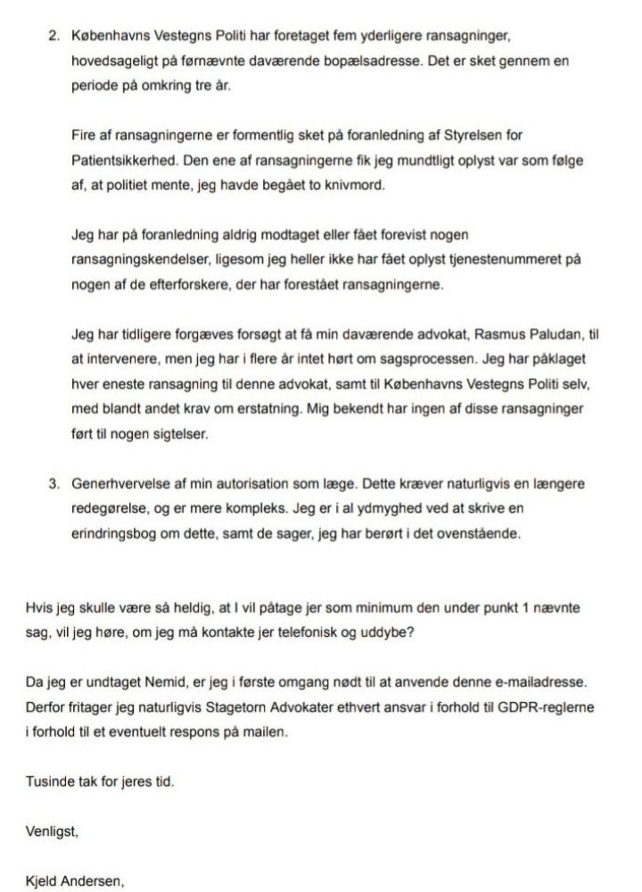 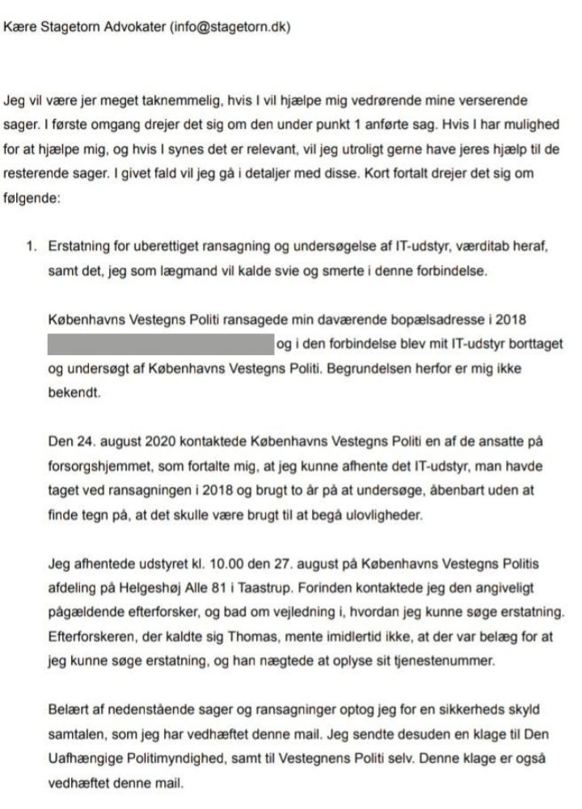Overlæge Egill Rostrup
Jeg var ikke klar over præcis hvad, der fik mig til at tænke på overlæge Egill Rostrup, men det var uden betydning. Det eneste, der spillede en rolle var, at overlæge Egill Rostrup var en løgner. Egill Rostrup havde løjet flere gange på skrift og det havde haft uoverskueligt negative konsekvenser for mig. Egill Rostrup var ham, der startede de sidste 10 års mareridt. Egill Rostrups løgne havde sat alt igang. Det var meget vigtigt, at alle var klar over Egill Rostrups rolle.
I alle årene, mens jeg havde lidt som hjemløs, havde den person, der havde startet det hele og som var selve årsagen til at mit liv var ødelagt, Egill Rostrup, siddet indedøre og hygget med sin familie, herunder sin hustru, læge Christina Kruuse, som havde været vejleder for psykiater Torsten Bjørn Jacobsen. Jeg var glad på Egill Rostrups vegne; han var en succesfuld lystløgner.
Jeg var imponeret af Egill Rostrups talent for at manipulere, han mindede mig om en charmerende psykopat, der ødelagde alt og alle på sin hærgen, men fordi Egill Rostrup var en mere intelligent og dygtigere løgner end langt de fleste, var han sluppet fra lovens lange arm.
Ja, Egill Rostrup havde vundet over det sendrægtige Vestegnens Politi, og han slap for at blive retsforfulgt. Jeg havde lidt ufatteligt og fået mit liv ødelagt af Egill Rostrup, som til gengæld var sluppet godt fra det og havde alt det, han aktivt ved sine løgne havde forhindret mig i at opnå; familie, karriere og et godt liv. Egill Rostrup havde det fremragende, for som andre psykopater havde han ingen samvittighed. Egill Rostrup troede, han var sluppet godt fra at ødelægge mit liv. Det troede han. Men jeg var nu ikke så sikker. Jeg troede faktisk ikke at Egill Rostrup, når alt kom til alt, ville slippe for straf. Jeg var meget, meget, meget sikker på at Egill Rostrup, en dag når han mindst ventede det, ville blive straffet på en måde, han nok ikke havde fantasi til at forestille sig.
Og for hver dag, der gik, ville straffen jo nok blive højere. Indtil videre var ni år gået og Egill Rostrup havde hygget sig hver eneste dag i troen på, at han var sluppet godt fra at ødelægge mit liv. Jeg håbede, at Egill Rostrup hyggede sig alt, han kunne. Hvert eneste sekund skulle han nyde at hygge sig. Jeg hyggede mig også, for nu hvor det endegyldigt var slut for mig, havde jeg frihed til at gøre præcis hvad jeg ville, uanset konsekvenserne af det. Og der var noget, der varmede mig uanset hvor koldt det var, hvor gennemblødt, jeg var blevet eller hvor forpestet af fnat, jeg var. En tanke, der beroligede mig og gjorde mig næsten glad. Jeg havde en mulighed for at få retfærdighed. Én mulighed, men ikke desto mindre en unik mulighed. For mit liv var forbi, mens andre hyggede sig. Dem, der havde ødelagt mit liv havde det godt. Og ja, mit liv var ødelagt, så det var ligegyldigt hvor jeg rådnede op, det kunne være på gaden, på herberg eller i et fængsel.
Når jeg igen sad over den arrogante dommer i Byretten i Glostrup og når min advokat igen pissede på mig og ikke gad at gøre sit arbejde, så ville jeg grine af dem begge. For jeg vidste godt hvad jeg ville gøre og at ingen kunne standse mig.
"Falsk anklage, afgivelse af urigtige oplysninger til offentlig myndighed med forsæt til, at en uskyldig bliver sigtet eller dømt for et strafbart forhold."
Det var, hvad Egill Rostrup var skyldig i, da han til den offentlige myndighed, Styrelsen for Patientsikkerhed, bevidst fremførte den eklatante løgn på skrift, at jeg skulle have planlagt at slå ham ihjel, hvorefter jeg mistede min lægeautorisation og blev idømt en behandlingsdom. Hans forsæt var at inkrimminere mig, få mig uretfærdigt dømt og at jeg mistede min autorisation. Alt dette lå tidsmæssigt efter Egill Rostrup havde overtrådt daværende persondatalov, hvilket jeg anmeldte ham for og fik medhold i, så Egills forsæt var hævn, samt at gøre mig permanent utroværdig i myndighedernes optik. Det lykkedes for Egill Rostrup til fulde.
Mail til Lægeforeningen og advokat Karoline Normann
"Til orientering:
Nedenstående mail, som jeg sendte den 15. april 2024 til de anførte modtagere, beskriver min nuværende situation.
Jeg har hele tiden med mellemrum sendt dokumentation, herunder min bog, til Lægeforeningen, Yngre Læger, samt til forperson Camilla Noelle Rathcke (først da hun var forperson for Yngre Læger og siden som forperson for Lægeforeningen).
Selv om der var tale om objektiv dokumentation fra tredjepart, var det eneste Lægeforeningen gjorde at politianmelde mig i oktober 2021. Det var advokat Hanne Rahbek, der indgav anmeldelsen.
Således var det også Hanne Rahbek personligt og Lægeforeningen der var og an ansvarlige for alt, der er hændt siden og alt, der kommer til at ske fremover, herunder at jeg i skrivende stund fortsat rådner op som hjemløs.
Jeg fik ret og Lægeforeningen tog fejl, men I var i ond tro, da I anmeldte mig.
Ikke blot har Lægeforeningen ødelagt mit liv, men Lægeforeningen har også holdt hånden over de medlemmer, der konkret har misbrugt deres fag til at gøre det. Og Lægeforeningen har hele tiden vidst det.
Nu hvor jeg intet har tilbage og intet har at se frem til, er det magtpåliggende at spørge for at hele Danmark og generationer af kommende danske læger bliver gjort bekendt med Lægeforeningens forræderi mod mig og mod lægefaget selv, samt at Lægeforeningen har beskyttet kriminelle medlemmer.
I kan melde mig for 'ordkriminalitet' alt det I vil, men jeg er ligeglad, jeg har ret i det jeg skriver og jeg er ligeglad med at komme mere i fængsel.
Kjeld Andersen."
Mail til Retslægerådet, Retspsykiatrisk Klinik og advokat Karoline Normann
"Kære Retslægerådet og Retspsykiatrisk Klinik
Jeg blev mentalundersøgt under indlæggelse i februar og marts i år og konklusionen var, at jeg er psykisk rask, fraset ADD.
Men desværre erklærede retspsykiater Ulla Noring og retspsykolog Michael Schjødt at jeg var kronisk sindssyg, svært personlighedsforstyrret og utilregnelig.
Det skete på baggrund af få timers samtaler, som jeg optog alle sammen.
Problemet var, at jeg som følge af førnævntes åbenlyse fejldiagnoser kort efter blev udsat for trusler om tvangsbehandling med livsfarlig og invaliderende antispsykotisk medicin af Gitte Ahle og Mette Brandt Christensen (som var og er næstformand i Retslægerådet og som på daværende tidspunkt samtidig fungerede som min klinisk behandlende retspsykiater).
Så pga. Ulla Norings meget alvorlige fejl har jeg siden 2018 rådnet op som hjemløs og har ikke kunne generhverve min autorisation som læge.
Det er også Ulla Norings skyld at jeg netop har været i Vestre Fængsel i tre måneder og tvangsindlagt på Retspsykiatrisk Afdeling P7 i over en måned.
Det er direkte Ullas skyld og det er også hendes skyld at jeg i skrivende stund igen er hjemløs og rådner op uden længste tid.
I har ødelagt mit liv med jeres fejldiagnoser og efterfølgende forsømmelse af at rette dem.
Jeg er 42 år og har rådnet op i 10 år og mistet alt pga. Retspsykiatrisk Klinik og Retslægerådet. Jeg var en god læge, der aldrig fejlbehandlede nogen og takken var, at I ødelagde mit liv.
Jeg var blevet negligeret og bagatelliseret af alle, også de såkaldte forsvarsadvokater,jeg har haft men som intet har gjort og som bare har været irriteret på mig.
Indtil jeg finder en advokat der gider at tage mig alvorligt, sender jeg dette til Karoline Normann, som under mindste kan bevidne det I har gjort.
Tillykke Ulla Noring, du har ødelagt mit liv helt enhændigt.
Kjeld Andersen."

Billede. "Guds fred med vore døde. I Danmarks rosengaard. Guds fred med dem som døde. Af dybe hjertesaar.". Der var flere mindesten fra lige efter besættelsen i området omkring Sakskøbing. De var fra en tid, hvor Danmark var et land, der var værd at kæmpe og dø for og hvor man hærdrede de faldte.

Billede. Ventede på Sakskøbing Station på toget til Nykøbing Falster (21. april).
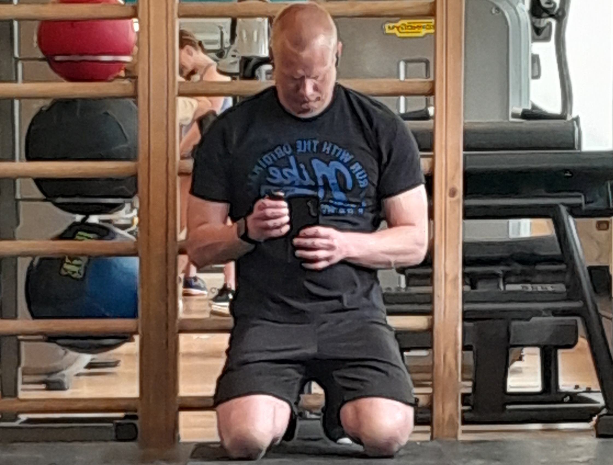Billede. Trænede i PureGym i Nykøbing Falster (21. april).

Billede. Gik tilbage noget af vejen fra Nykøbing Falster til Grænge, for at få rørt mig (21. april).
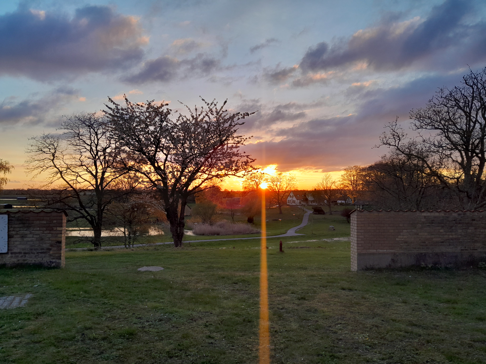Billede. Smuk solnedgang fra Saxenhøj (22. april).
Meld retspsykiater Peter Worm Jantzen til politiet
Mail til retspsykiater Peter Worm Jantzen
"Kære Peter
Nedenstående mail sendt den 2. april, synes jeg beskriver min situation ret godt, så jeg tillader mig at sende den til dig. Det var din vage erklæring, der var den konkrete årsag til den tvungne mentalundersøgelse, sagde advokat Hanne Ziebe til mig. Du havde nemlig brugt ordet 'næppe' fremfor det korrekte 'ikke' ift grundlæggende psykopatologi eller noget i den retning.
Samtidig er du også skyld i sigtelserne af oktober 2021. Du ved jo godt, at jeg skriver om alt på:
Peter, man skulle ikke tro det, for du virker umiddelbart meget sympatisk, men du er et monster. Du er simpelthen det mest rædselsfulde menneske, man kan forestille sig, en ægte dyssocial person. Alt dette er din skyld. Men jeg skal sørge for, at alle i Danmark bliver bekendt med dine ugerninger."
Jeg skrev endnu en mail til Peter Worm Jantzen (peter.worm.jantzen@regionh.dk) og Region Hovedstadens Psykiatri i dag. Jeg var ligeglad med at blive anholdt igen, jeg vidste præcis hvad, jeg ville gøre både i tilfældet af, at jeg blev anholdt eller at jeg ikke gjorde. Det var meget simpelt, ligesom verdens mest primitive algoritme. Jeg var fastlåst, så det var ikke min 'algoritme', jeg vidste bare eksakt hvad, jeg ville gøre afhængigt af hvad staten besluttede sig for."
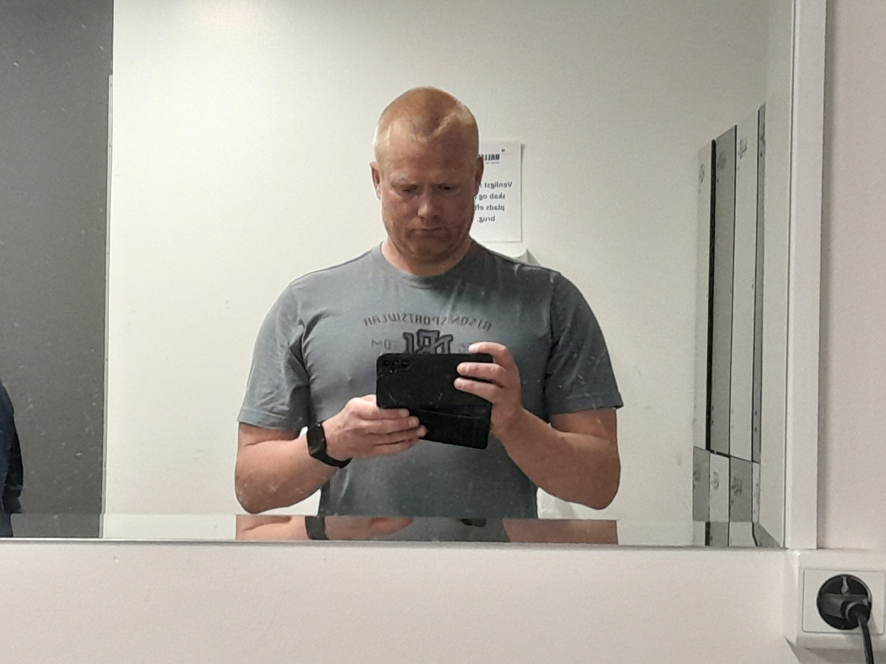Billede. Først svømmede jeg i Nykøbing Falster Svømmehal... (24. april).

Billede...Og efterfølgende sad jeg og skrev på Nykøbing Falster Bibliotek (24. april).
Mail til Kriminalforsorgen
"Kære Kriminalforsorgen
Der er nye oplysninger i sagen, idet jeg takket være jeres sagsbehandler, Anne P, og den til jer tilknyttede psykiater, blev tvangsmentalundersøgt under indlæggelse på P7 i Middelfart.
Resultatet af mentalundersøgelsen er, at jeg er psykisk rask, fraset ADD, hvilket jeg hele tiden har sagt. Det vidste Kriminalforsorgen udmærket, fordi I fik dokumentation for, at jeg er psykisk rask.
Men fordi Kriminalforsorgen er paranoid og ville dække sin egen ryg på min bekostning, fik I anklagemyndigheden og dommeren til at idømme mig en unødvendig mentalundersøgelse, og derfor udsatte I mig for flere års ventetid og frihedsberøvelse i måneder.
Kriminalforsorgen tvang mig til at være hjemløs meget længe og det er jeg stadig. Hvad er I for nogle mennesker, når I udsætter mig for unødvendig lidelse? Jeg kender naturligvis svaret og jeg har sørget for, at alle kan danne sig deres egen opfattelse på:
På denne hjemmeside iigger mit vidnesbyrd, og der kan I læse i detaljer, hvor meget jeg har lidt pga. jer og andre. Jeg gør en dyd ud af at nævne alle aktører i justitsmordet med fulde navne, og det sker selvfølgelig også i jeres tilfælde.
Jeg er i fuld gang med at skrive resten af mit vidnesbyrd ind på hjemmesiden og jeg er også startet med at sende mails til samtlige politikere, så de kan få et indblik i, hvordan Kriminalforsorgen fungerer i virkeligheden. Det er ligeledes vigtigt for domstolene og advokatsamfundet at vide det, hvorfor de er sat på som Cc.
Det er i min og i almen interesse, at jeg skriver til jer og offentliggør mit vidnesbyrd. Alle skal læse, hvor skadelige I har været. Jeg har mistet alt og har intet tilage, til dels pga. jer og det eneste, der holder mig i live nu, er at sørge for at hele Danmark læser denne mail og mit vidnesbyrd. Og jeg vil sørge for at medierne kommer til at skrive om min sag.
Venlig hilsen,
Kjeld Andersen
CPR:"
Mail til Østre Landsret af 26. april 2024
"Kære Østre Landsret.
Jeg er tiltalt i to verserende retssager, den ene fra oktober 2021 vedr. injurier og den anden fra efteråret 2023 vedr. trusler.
Da jeg snart regner med at blive anholdt igen, er det mig magtpåliggende at informere Østre Landsret om forskellige yderst vigtige forhold, som jeg erfaringsmæssigt ved politiet, anklagemyndigheden og langt hen ad vejen desværre også de forsvarsadvokater, jeg har haft, bevidst har ignoreret.
Politiet og anklagemyndigheden har konsekvent nægtet at overholde objektivitetsprincippet, de har nægtet at forholde sig til de af ut. oplyste vidner, de har nægtet at indhente bevismateriale, der dokumenterer min uskyld, og alene pga. sigtelserne fra oktober 2021 har Justitsministeriet sat generhvervelsesprocessen ift. min lægeautorisation i bero og således tvunget mig til at være hjemløs og dybt fattig lige siden.
Der er de forhold, som har afstedkommet den seneste sigtelse, fordi det er umenneskelige livsvilkår og fordi jeg ikke har fået boligmæssig hjælp, når jeg har søgt om det.
Derfor har den lange ventetid været katastrofal i mit tilfælde og retten til en retfærdig rettergang er blevet krænket.
At jeg ikke på noget tidspunkt har fået tilstrækkelig juridisk bistand og at politiet har overtrådt objektivitetsprincippet, udgør samlet set også alvorlige krænkelser af mine menneskerettigheder.
Jeg har klaget over dette til alle myndigheder, såvel som advokater, men ingen har taget mig alvorligt. Og sådan har det været hele vejen igennem.
Jeg har fejlagtigt været stemplet som kronisk sindssyg siden 2016, selvom jeg har psykiatriske speciallægeerklæringer, der anfører, at jeg intet psykisk fejler. Disse har Styrelsen for Patientsikkerhed og politiet ignoreret, selv om jeg har tilsendt dem alt materialet.
Jeg blev idømt en behandlingsdom uden længstetid i retten i Glostrup i 2018, som blev stadfæstet i Østre Landsret samme år. Men jeg fejlede intet psykisk, hvilket var evident, og jeg fik heller ingen behandling, men til gengæld blev jeg fastholdt i dommen og som hjemløs i årene efter.
Så jeg har fået ødelagt mit liv af psykiatriske fejldiagnoser og det danske retsvæsen, og når jeg har klaget eller bedt om hjælp til ophævelse af behandlingsdommen, eller når jeg har bedt om hjælp til at få dommen for Den Særlige Klageret eller Menneskerettighedsdomstolen, har samtlige advokater og retshjælpsordninger nægtet at yde mig bistand.
Jeg har intet tilbage, jeg har mistet alt og jeg har kun hensynet til mit liv at varetage. Og det er truet af de grundløse sigtelser og tiltaler og mine håbløse sociale omstændigheder.
Jeg må derfor moralsk foretage mig alt i min magt for at overleve, herunder også at sende denne mail til Østre Landsret etc.
Det kan ikke nytte noget, at jeg på den ene side rådner op på 10. år og på den anden side bliver truet med anholdelse, hvis jeg sender eksempelvis denne mail, for at gøre opmærksom på det. Det giver ingen mening og det kan jeg ikke overholde.
Det korte af det lange er, at jeg er nødt til at gøre opmærksom på min situation og så er alt andet ligegyldigt. Det er tortur at være hjemløs og tiltalt uden en slutdato og det er en retsstat uværdigt at politiet og anklagemyndigheden har nægtet at leve op til sine vigtigste pligter, så jeg ikke er sikret en retfærdig rettergang.
Jeg er nødt til at offentliggøre al korrespondance, herunder denne mail på:
For når jeg bliver anholdt igen snart og ikke har adgang til min dokumentation, som politiet ignorerer, så kan jeg til omverdenen altid henvise til pågældende hjemmeside.
Min nuværende advokat er måske Karoline Normann, men dels er jeg ikke sikker på det mere og dels forsøger jeg at skifte til en anden under alle omstændigheder.
De tidligere advokater i de verserende sager er Kira Iqbal og Hanne Ziebe.
Med denne mail har jeg informeret Østre Landsret om, at jeg ikke får en retfærdig rettergang. Og når den snart ligger på de sociale medier, ved alle og enhver, at Østre Landsret også ved det.
Venlig hilsen,
Kjeld Andersen,
CPR."
Tvungen selvmord
Fordi vejret var så smuk og forårsagtigt, nærmest forårsagtigt, var det ulidelig tortur at vandre rundt alene i dag, som sædvanlig. Jeg havde lyst til at gå amok, lyst til at begå selvmord.
Og det endte med selvmord. Men ikke på den måde, som bødlerne håbede, så de slap for mig. Jeg ville med min sidste handling, presset af mine bødlers og samfundets tortur i knapt ti år ikke begå selvmord og gå i glemslen, jeg ville begå selvmord og sørge for at jeg aldrig blev glemt, at mishandlingen og bødlerne aldrig blev glemt, at medierne ville skrive om den umenneskelige behandlig af mig og henvise til denne hjemmeside, så flest muligt blev klar over hvem bødlerne var. At de var monstre. Og at advokaterne var delagtige i deres passivitet. Og politikerne for den sags skyld, samt Lægeforeningen ikke mindst. Ingen gad at lytte til mig i live, men det kom man til når jeg var død.
Region Hovedstadens Psykiatri
Jeg havde gennem årene informeret Region Hovedstadens Psykiatri om fejldiagnoserne, min mistede lægeautorisation og hjemlæsheden, men man havde ignoreret mig og dækkede over mine bødler. Selv så sent som i dag havde Region Hovedstadens Psykiatri fået deaktiveret min LinkedIn profil - for anden gang. Det var provokerende af Region Hovedstadens Psykiatri at forhindre mig i at dokumentere mishandlingen, jeg havde været udsat for, og det kom heller ikke til at lykkes for dem. Tværdigimod.
Sidste forsøg
I morgen skulle jeg have en anden advokat, der modsat Karoline Normann ikke pissede på mig og bagatelliserede min situation.
Fortryder intet
Jeg fortrød intet, jeg havde gjort, kun det, jeg ikke nåede at gøre. Jeg havde som i en slutspurt i dag skrevet de sidste mails til
Ingen af dem ville reagere og derfor var jeg nødt til at eskalere indtil de gjorde. Det måske eneste, jeg fortrød var, at jeg ikke begik selvmord da verdens værste menneske, praktiserende læge Camilla Mie Elvekjær ødelagt mit liv med sine fejldiagnoser i 2016. Jeg vidste jo allerede dengang hvilke konsekvenser hendes utroligt onde ugerning ville få. Der var to personer, som var mere skyld i at mit liv var ødelagt end andre. Jeg havde i ti år lidt forfærdeligt pga. især disse to, mens de havde levet et godt liv.
Mail til anklager Henrik Pedersen, Vestegnens Politi
"Hej Henrik
Resultatet af mentalundersøgelsen var, at jeg er psykisk rask, fraset banal ADD.
Det var præcis hvad, jeg hele tiden har sagt og dokumenteret over for dig.
Men du har konsekvent nægtet at overholde objektivitetsprincippet, herunder at afhøre mine vidner, samt at indhente journalmateriale etc.
Din meget alvorlige forsømmelse har fastholdt mig i hjemløshed og fattigdom i to år, og jeg anmodede om at få min sag for retten flere gange, fordi min sociale situation qua sigtelserne var livstruende.
Du ignorerede mig og tvang mig med din passivitet til at tåle umenneskelige vilkår.
Så du var glad, da jeg i desperation over dit eklatante svigt, mens jeg havde høj feber og var ramt af smertefuld helvedsild, skrev en mail som du fejltolkede som truende.
For så ville dette påståede forhold overskygge dine egne grove pligtforsømmelser i årene forinden.
Men Henrik, uanset om domstolen mener mailen var truede eller ej, så ændrer det ikke på, at du misbrugte din stilling som anklager og at det var din egen skyld, at jeg sendte den. Du gjorde ikke dit arbejde.
Det er din skyld, at jeg stadig er hjemløs og rådner op og jeg vil gøre alt, jeg kan for at alle danskere bliver klar over hvad, du har gjort mod mig.
Du har ødelagt mit liv, Henrik, med løgne. Og samtidig har alle stået og set passivt til, herunder de advokater der skulle forestille at forsvare mig.
Jeg ved ikke, hvad I er for nogle mennesker. Men alt, jeg foretager mig er jeres skyld, for det er jer, der aktivt eller passivt har tvunget mig ud i en situation, som er umulig.
Min eneste chance for at overleve, er at komme i medierne.
Det kommer jeg med garanti også.
Kjeld Andersen,"
Anklager Henrik Pedersens svigt udgjorde stadig en alvorlig trussel på mit liv og helbred. De advokater, jeg nævnte, havde også modtaget mailen. At de var ligeglade, var en anden sag. De havde jo tjent tusindvis af kroner på at sjofle mig.
Mail til efterforsker Dorthe Olsson
"Hej Dorthe
Jeg skylder dig en tilbagemelding på mentalundersøgelsen, som er, at jeg er psykisk rask, fraset banal ADD.
Det var dig, der i oktober 2021 sigtede mig for at offentliggøre dokumentation for, at jeg var psykisk rask.
Nu har jeg så bevidst på, at jeg havde ret og at du gjorde uret i at sigte mig.
Men værre er det, at jeg i 2021 havde haft tid endnu til at få et liv.
Nu er det for sent, Dorthe.
Og det er din skyld.
Hvis du havde samvittighed og faglighed havde du indset dette for længe siden.
Så derfor er du også ligeglad med min mail.
Men hele Danmark kommer til at læse den på de sociale medier.
Kjeld Andersen."
Efterforsker Dorthe Olssons svigt udgjorde stadig en alvorlig trussel på mit liv og helbred. Normalt ville jeg ikke skrive til de to ovenfor, men jeg havde intet at tabe længere, så det kunne være ligegyldigt.
Mail til Advokatsamfundet og Landsforeningen af Forsvarsadvokater
Min sidst mail i dag var til Advokatsamfundet og Landsforeningen af Forsvarsadvokater. Den blev en smule lang og selvom jeg vidste, at de ville ignorere den, så skulle de have muligheden alligevel, for det var nødvendigt jeg kunne dokumentere, at jeg havde kalget til dem også og gjort alt, jeg kunne. Jeg skrev om Kira Iqbal, Hanne Ziebe og Karoline Normann, der alle havde svigtet, og havde ladet politiet og anklagemyndigheden bryde de mest fundamentale regler uden et kvæk, som havde sjoflet mig, ikke gjort det aftalte, ikke rådgivet mig ordentligt og ikke ville røre en finger.
Jeg glædede mig til at sove, for så slap jeg for at lide og rådne op og jeg håbede at jeg aldrig vågnede op igen, for jeg kunne ikke holde endnu en håbløs dag ud.
Anmodning om ny advokat
Min situation var så håbløs, at jeg havde begået selvmord i dag, hvis ikke jeg havde taget mig sammen og skrevet til en anden advokat og bedt ham om at overtage sagen fra Karoline Normann. Hun havde intet effektivt gjort, hun var irriteret på mig, hun bebrejdede mig og syntes at ‘ord var farlige’, hun havde ikke den fjerneste forståelse for min situation eller sagen, hun var nedladende og bedrevidende, overholdt ikke aftaler, syltede og sjoflede mig, hun undskyldte og forsvarede politiet og anklagemyndigheden, var frygtsom over for etaten og bange for politiet. Så hende havde jeg ikke behov for. Men jeg var glad for, at hun havde tjent så godt på mig og samtidig fik afreageret og sparket nedad på mig. Hun var en fin og travl kvinde, måtte jeg forstå. Alt dette var selvfølgelig bare min holdning.
Politiet på biblioteket
Mens jeg sad og skrev ovenstående på biblioteket i Maribo, kom der pludseligt to uniformerede betjente hen ved det bord, jeg sad ved. Men det var ikke mig, der var deres fokus, men en yngre mand af anden etnisk herkomst, som var i følge med en yngre kvinde i civil med mange tattoveringer på armene, sikkert en socialrådgiver.
Jeg gemte anklageskriftet som lå på bordet til frit skue diskret væk. Den unge mand skulle i borgerservice, viste det sig. Han og betjentene talte lidt sammen. "Hvor længe har du været i politiet?", "to år", og hans makker sagde, "ja, jeg har været i politiet i fem år", og lo kortvarigt. Socialrådgiveren spurgte ham med to års ancinnitet om, hvor de kom fra, og han svarede "fra Rødby", og fortsatte, "men jeg flytter til København med kæresten snart. Så kan jeg få kørepenge, ha ha."."Hvornår åbner borgerservice?", sagde den anden. "Klokken halv et", "det var da et mærkeligt tidspunkt". Så blev klokken 13.30 og da de havde trukket det første nummer, gik de hen til skranken, da klokken ringede. De virkede stille og rolige, de to grise. Og det virkede ikke som om at arrestanten var iført håndjern, men også han var rolig.
Den indsatte stod ved skranken og skulle vise noget ID. Han havde kun en dåbsattest, og uden billede ID skulle skrankepaven havde to forskellige ID. Så uanset hvad formålet var, kunne eller ville skrankepaven ikke hjælpe arrestenten. Den ene betjent forsøgte dumdristigt at tale arrestantens sag, men hans ungdommelige hovmod let et knæk, da skrankepaven saggde: "Det er mine regler, jeg kan ikke gøre noget". "Jamen, så god dag", sagde betjentn og de gik igen. Den unge betjent havde lært en vigtig lektie i dag, nemlig at overfor kommunen kunne han bare fucke af med sin taber-gun og bøssehåndjern. Tre offentligt ansatte med en person, der var arresteret og som de selvfølgelig kendte identiteten af, men de skulle ikke tro at de var noget, for sådann rullede denne kommune ikke. Borgeren kunne sgu ikke bare komme rendende i borgerservice og tro, at de gad at yde service.
Sten, saks, papir
I den offentlige version af sten, saks, papir blev pistol og knippel slået af skranken. Til gengæld, når man talte om nådesløst bureaukrati, så havde politiet i sidste ende en trumf, som selv den mest dovne og menneskefjendske kommune måtte frygte og det var Direktoratet i Kriminalforsorgen.
Før jeg lærte Kriminalforsorgen at kende, havde jeg et positivt indtryk af institutionen, for forsorgen lød lidt hen ad forsorgshjem, som jo var et sted der hjalp andre mennesker (heller ikke dette passede, men det var en anden historie).
Jeg tog godt nok fejl. Kriminalforsorgen, altså den administrative side, Direktoratet, var for bureaukratiet, som Jægerkorpset var for Forsvaret. I Direktoratet arbejde de ondeste og mest dyssociale bureaukrater, men ikke den sadistiske slags, som i kommunen, som nød den personlige ydmygelse af borgeren, mere den autistiske type af psykopater, som nede i den kælder, de levede i og arbejdede fra, gav det ene afslag efter det andet uden at blinke, uden forklaring og uden samvittighed. Det var de anonyme bureaukrater, dem der ikke glædede sig over at afvise og nægte, men derimod dem, som ingen følelser havde og som lige så godt kunne arbjde i det tyske jernbanevæsen uden anden verdenskrig, som i Direktoratet, hvis altså bare at togene gik til tiden. Direktoratet var et administrativt sort hul, og her var det intet at gøre, ingen menneskelighed, intet kunne undslippe, og efter 35 år blev du stadig nætet prøveløsladelse.
Politiforretning 21.17
Mens jeg glad og fro vandrede hastigt afsted på landevejen og naturligvis i modsatte side, som det var skik på disse egne, passerede en patruljevogn mig bagfra og i samme retning som jeg. Den ændrede ikke hastigheden, men fortsatte kørslen. Nogle minutter senere så og hørte jeg et par hundrede meter fremme i samme vejbane, som jeg gik i vejkanten af, blå blink og sirene (horn og lygter) på en bil, formentlig samme patruljevogn, som havde passeret mig, komme kørende hastigt imod mig. Jeg blev ikke spor nervøs, men undrede mig over påstyret, hvis det var mig, de var ude efter. Da patruljevognen kom nærmere, så jeg en sort lakreret personbil, jeg ikke havde fået øje på før, blinke ind og holde ind til siden ca. 10 meter fra mig.
Jeg tænkte at jeg gerne ville give de uniformerede arbejdsro og den pågældende billist privatliv, så jeg krydsede vejen indtil jeg havde passeret begge biler, hvorefter jeg krydsede tilbage til modsatte side igen. Det gjaldt om ikke at ændre adfærd på nogen måde, når man var i nærheden af politiet. Det var jeg ret godt til. For jeg havde aldrig set andre gå langs denne vej, og kun meget få cyklede på strækningen, så alene det at jeg travede der, var lidt suspekt.
Jeg så tilfældigvis en sagsakt i retten i form af en mail, som anklager Henrik Pedersen havde sendt til en kollega med ordene "vi skal have teleobs på ham", altså mig. Henrik Pedersen kunne bruge de værktøjer han lystede, så derfor vidste jeg at politiet givetvis havde sporet min mobil via telemast data eller kunne gøre det uden videre. Det skulle heltene da bare gøre, jeg var ligeglad.
Afventning på tilbagemelding fra ny advokat
Jeg havde lige akkurat magtet at skrive og anmode om den nye advokat, men ligesom en marathonløber, der kollapsede når han havde krydset målstregen, så kunne jeg ikke overkomme at læse om han havde svaret mig.
Jeg kunne alt andet, men lige det med advokater og retsvæsen kunne jeg ikke. Det var umuligt for mig at tjekke min mail. Sådan var det at rådne op, der var intet at glæde sig over intet at se frem til, ingen slutdato og det nedbrud mennesker og gjorde dem apatiske og sådan var det for mig.
Det forstod de færreste: Efter flere års mareridt, og når alt var tabt og intet tilbage at vinde, så kunne man ikke udføre opgaver, der gav så stort følelsesmæssigt ubehag. For hvorfor? Jeg vidste erfaringsmæssigt at jeg havde tabt alligevel. Og der skulle bare én nederlag til, eks. hvis addvokaten afviste mig, så kunne det resultere i at jeg begik selvmord.
Det for man ikke, men det var fordi at man aldrig havde prøvet noget tilsvarende selv. Jeg kunne sagtens gøre alt, men ikke lige det. Sådan var det når der ikke var en slutdato og intet at opnå.
Men det var en stor sejr bare det at anmode om en anden advokat. Bare det at sige fra overfor Karoline Normann, var en vidunderlig befrielse. Og det var ikke mig, det var hende. Hun skulle ikke tjene penge på at være arrogant og nedladende overfor mig. For hende betød det at hun havde mistet mig som klient intet. Hun havde massevis af klienter. Men jeg ville ikke betale for at blive sjoflet. Jeg var til grin nok i forvejen.
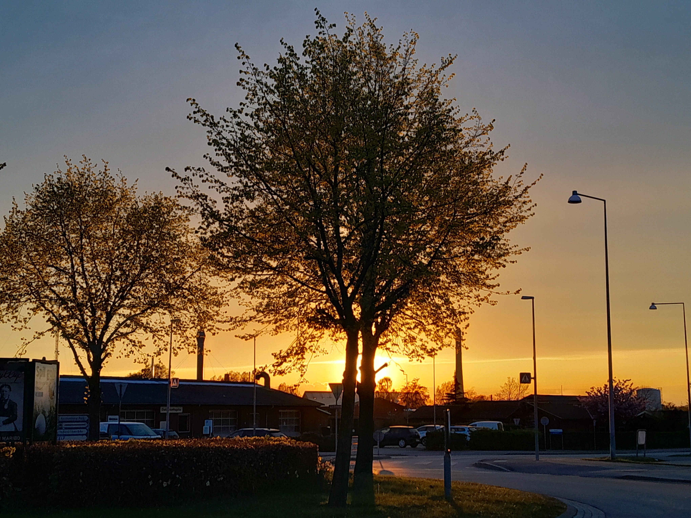 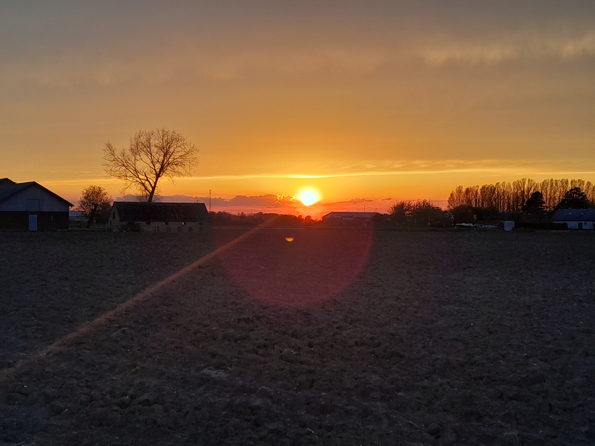 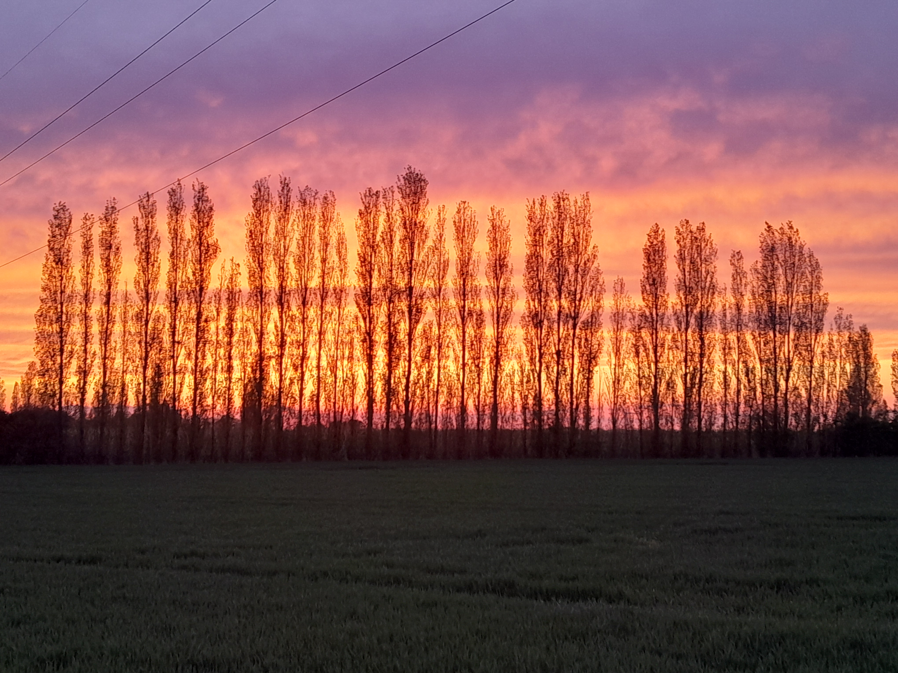 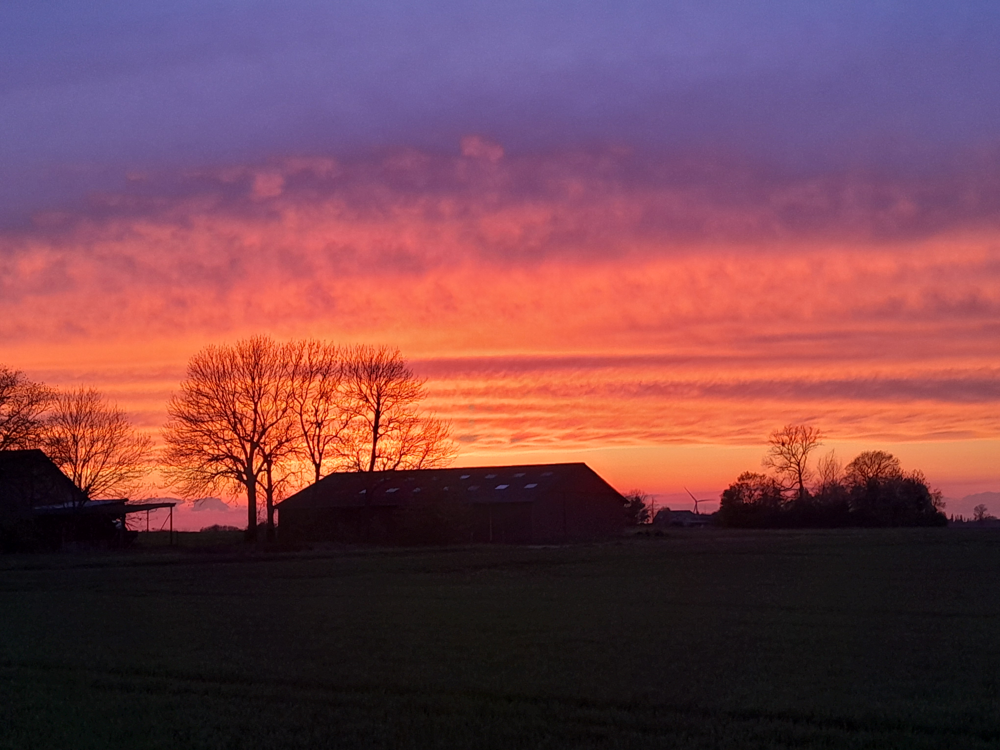
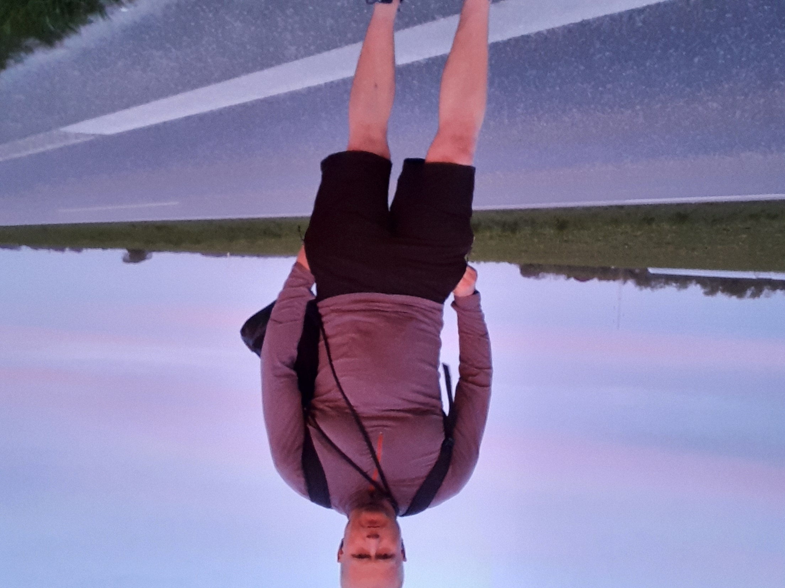
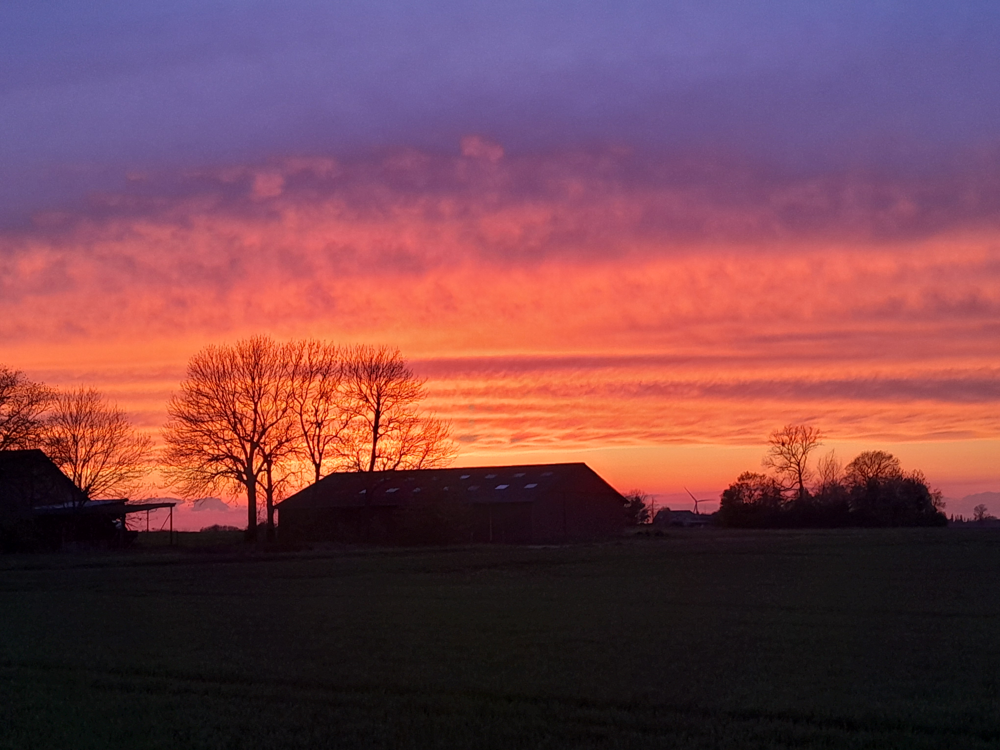
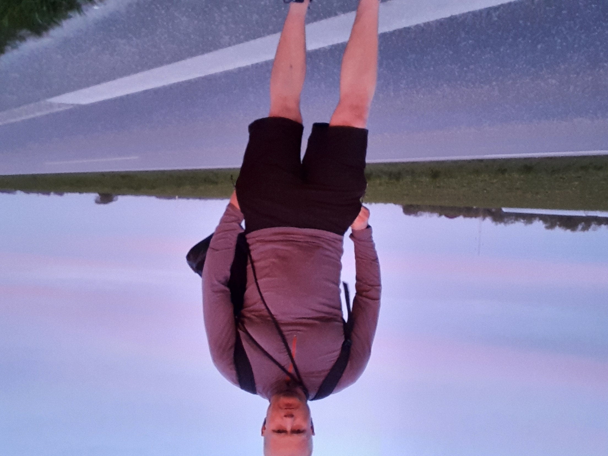
Billeder. På vej fra Maribo til Sakskøbing.
Det rigtige Danmark
Jeg havde set den ældre kopulente herre flere gange og vi var begyndt at hilse på hinanden og få en lille sludder.
Han patruljerede rundt i den lille havn og i det tilstødende naturområde på sin firehjulede bordeaux elscooter og når det var mørkt blændede de to kraftige forlygter mig, når jeg kom gående i retning mod ham på stien.
Med sig havde han sin lille sorte hund, som jeg først troede var lidt ældre end en hvalp, men som havde grå stænk i pelsen omkring munden og på hagen.
Jeg havde i starten forsøgt at undgå ham, fordi han virkede alt for kontaktsøgende, men jeg måtte overgive mig, for det var ligesom hans territorium og ham kendte tilsyneladende alle.
Det manden gjorde, var at skyde rotter på havnen med det hagl- eller luftgevær, han kørte rundt med på elscooteren. Herude gjaldt andre regler, og hvis man var i samme loge (altså drak på samme værtshus) som landbetjenten, så kunne meget lade sig sig gøre. Det med rotterne var hans ting. Han viste mig forleden stolt en rotte han havde skudt, som lå på bunden af scooteren. Hunden hjalp til med at fange og dræbe rotterne, sagde han.
Han havde tal på hvor mange rotter han havde taget livet af, men ikke kun det eksakte antal, han kunne også fortælle hvor mange rotter han potentielt havde reddet byen for, da de døde rotter jo ligesom ikke kunne avle.
Jeg kunne faktisk godt forstå manden. Det var let af afskrive ham som en udkantstosse, men det var han ikke. Og at få tiden til at gå med at skyde rotter? Tja, hvorfor ikke? Det kunne være sjovt at prøve. Det her var det rigtige Danmark.
Herude var der ingen der stemte på Det Radikale Venstre og gudskelov for det. Her var mit blonde hår og røde skæg ikke noget, jeg behøvede at skamme mig over og modsat i Vestre Fængsel skildte jeg mig heller ikke ud. Her var en mand på min alder uden tatoveringer og som lignede en, der trænde ofte automatisk en soldt, og i mit tilfælde en veteran. Her var der ingen der anede at jeg var læge (undskyld STPS, lægeuddannet). Her mødtes man på værtshuset, alle aldre var repræsenteret. Man spilede håndbold og der var marker og køer. Her kunne man godt leve et fremragende liv, selvom der var meget langt til nærmeste universitet (eller bibliotek), men dummede man sig, så vidste alle det.
Den råbende alkoholiker
På Saxenhøj forsorgshjem, hvor jeg havde værelse i nr. 27, havde jeg en nabo i nr. 26, som vist nok hed Leif. Jeg havde boet på stedet i halvanden måned og Leif havde været min nabo, jeg havde talt fornuftigt med ham en gang i mellem, og han havde været klar og relevant. Men nu var der problemer med Leif, store problemer endda, for Leif havde i omkring halvanden uge konstant, dag såvel som nat, cirka hver halve minut, hvis da ikke hyppigere, udstødt en højt klagende råb. Konstant, hele tiden og med en utrættelig, der var skræmmende.
Om Leif havde både dør og vindue åbent, hvilket ikke ligefrem reducerede hans voldsomt generende udbrud. Om aftenen og natten fortsatte råbene med uformindsket styrke, men nu havde de antaget en mere klynkende og jamrende karakter. Det var ulideligt. Det var ligesom kinisisk vandturtur og jeg kunne ikke holde det ud. Alle kunne høre det i de andre lejligheder og i den de tilstødende bygninger, men intet skete og Leif blev ved. Det var ved at blive så varmt at jeg var nød til at sove med åbent vindue, men selv med lukket vindue kunne jeg høre Leif råbe.
Jeg besluttede derfor at tale med de ansatte om det i dag. Jeg havde ventet alt for længe, og nu var jeg ved at eksplodere, så noget måtte ske, ellers frygtede jeg alvorligtalt at banke Leif ihjel, hvilket ville være alt for let, da den gamle, tynde, og rolatorbrugende, egoistiske sut var i meget dårlig forfatning.
Jeg havde intet at miste og jeg havde utrolig stor lyst til at lukke munden på pestilensen for tid og evighed, bare en enkelt slag eller spark, mere skulle der ikke til, og han fortjente det også. Leif havde holdt mig vågen til kl. tre i nat med sine vedvarende råb og det havde hverken jeg eller andre fortjent. Vi var alle belastede og udfordrede, men Leif var den eneste, der udfordrede og belastede de andre beboere, som havde rigeligt i forvejen. Leif var den ledeste egoist. Den mest usle person, man kunne forestille sig, i min deroute skulle Leif lige hævne sig en sidste gang på hele verden, og det var os andre.
Så først omkring klokken kvart i tre i dag gik jeg ind i varmestuen, hvor personalet sad på de tilstødende kontorer. Netop da jeg ankom, så jeg lederen af forsorgshjemmet.
Jeg spurgte hende, om jeg måtte forstyrre hende eller om hun lige var på vej til noget. Hun var netop på vej til overlap, sagde hun, men hvis jeg bare ventede, så kom det personale, der var mødt ind så snart overdragelsen var overstået. Jeg havde ok og tak og satte mig til at vente i en af stolene ved bordet foran det store TV. Først kom et personale ind ad døren til varmestuen ude fra området mellem de to bygninger modsat indkørslen.
Jeg fortalte hende stille og roligt om Leif og spurgte hende, om hun eller en af hendes kolleger ikke var søde at bede Leif om at dæmpe sig lidt, eventuelt bare at lukke sin dør eller vindue, når han råbte. Den midaldrende, stærkt solbrændte, slanke og hellere hærgede kvinde med de fremstående tænder i især overmunden begyndte nu at belære mig om, at alle havde forskellige udfordringer og at det måtte jeg bare acceptere.
Hun kunne ihvertfald ikke gøre noget, men jeg kunne da bare selv tage kontakt til Leif og bede ham om at dæmpe sig lidt. Jeg sagde til hende, at det kunne og ville jeg selvfølgelig gøre, men at det nok var bedre at en af de ansatte gjorde det, fremfor mig. Det mente kvinden ikke. Jeg prøvede med at fortælle hende at jeg jo også havde udfordringer, at mine var PTSD, samt at jeg ikke kunne holde Leifs konstante råberi ud, samt at vejret var så lunt, at jeg var nødt til at åbne mit eget vindue, og så hjalp mine ørepropper slet ikke.
Hun skulle nok være opmærksom på Leif, lykkedes det mig hende til sidst at sige. Jeg vidste, at det ikke passede, at hun intet ville foretage sig, men at det bare var en floskel for at slippe for at tale mere med mig om Leif. Som det sidste bad jeg hende om eventuelt at tage det op på overlapningsmødet, så de andre også vidste at de skulle være opmærksomme på Leif, hvilket hun acceptere. Så gik hun.
Fordi jeg kendte den slags dovne pædagoger alt for godt, vidste jeg at hun ikke ville sige noget til nogen eller være det mindste opmærksom på Leif, så jeg blev siddende og ventede på at en af hendes kolleger, der var mødt ind, kom fordi.
Efter et kvarters tid kom socialrådgiver Sabrine så ned ad trappen til varmestuen. Hun var som altid nydelig klædt, med et æble og en dåse Pepsi Max i hånden, samt sin mobil, og lyste op i et smil i sit også meget solbrændte ansigt. Jeg spurgte om hun var mødt ind på arbejde og Sabrine svarede kækt at hun skam var på arbejdede hver dag (mental load?), mandag til og med søndag. Hun var en Lolland 7'er, svarende til en København 4'er, og den kønneste ansatte på stedet, men særlig skarp eller vittig var hun dog ikke. Så forklarede jeg hende om Leif og som var det en remse samtlige ansatte i kor som en troesend istemte rituelt til hvert vagskifte, sagde Sabrina præcis det samme som kollegaen, nemlig, at alle jo havde udfordringer, at der skulle være plads til alle og al det pis, der ikke passede og intet betød.
Jeg prøvede at få hende til at sige det til Leif bare en enkelt gang, at han stille være stille, men Sabrine var nu blevet vrangvillig og gik med det samme i forsvarsposition, som om at jeg ville ændre alle hendes arbejdsopgaver, hvis hun gav efter og brugte ti sekunder på at tale med alkoholikeren. Det var nu en livsvigtig diskussion for Sabrine, og hun ville for alt i verden ikke give sig. Så sagde hun, at Leif alligevel var dement, så det var ligegyldt at hun sagde noget til ham, for han glemte det alligevel igen.
Jeg sagde, at han ikke var sådan, som nu, for lidt over en uge siden, at det var helt nyt at han var sådan, at man måske godt kunne minde ham om at være lidt stille alligevel, at selv hvis han faktisk var dement til trods for at det ikke tydede på det, så var demens jo et interval, man kunne være mere eller mindre dement, og mange kunne man godt tale med alligevel, så måske hjalp det at minde Leif om en gang imellem og bare i dag i det mindste, at han skulle være stille.
Det prellede af på Sabrine, naturligvis. Hun skulle ind på det kontor og sidde og ikke havde med beboere at gøre. Men hun skulle nok være opmærksom på Leif, sagde hun. Hun var noget så glat og anstrengte sig virkelig for ikke at lave noget, hvilket var lidt paradoksalt, men for hende gjaldt det ikke kun om at sidde på sin flade røv, men også at få ret altid, især overfor beboerne. Det virkede som et princip hun havde aldrig at give sig det mindste, og så lærte beboerne også at de lige så godt kunne glemme at henvende sig til hende om noget. Jeg sagde, at Leifs klageråb rent faktisk kunne indikere at der var noget galt, at han led, for sådan lød det især når han klynkede og vrælede. Men Sabrina rystede nedladende på hovedet, for hun vidste at der ikke var noget galt med Leif. Hun havde ganske vist hverken set eller talt med ham, men det vidste hun altså.
Jeg kunne ikke holde ud at opholde mig på værelset, mens Leif råbte og skreg og det var hedt, når jeg ikke kunne åbne vinduet, så jeg gik direkte fra varmestuen og ned på biblioteket. Og hvem andre end Leif mødte jeg på vejen?
Den stive og egoistiske pestilens kom med usikre skridt gående op ad bakken med sin rollator, som havde en lille kurv hvor der lå to flasker snaps, Rød Aalborg, lignede det.
Jeg gik hen til Leif og spurgte ham, om det var ham, der boede i nummer 26. Da det var, sagde han. Så spurgte jeg om det ikke var ham, der konstant råbte og skreg hele tiden. Det vidste han ikke, men måske råbte han i søvne, sagde svinet i et forsøg på at være morsom. Jeg havde lyst til at tage en af flaskerne op fra hans kurv og banke ham med den. Men jeg sagde at han skulle lade være med at råbe og natten fordi det generede mig voldsom og holdt mig vågen, han skulle i det mindste lukke sit vindue og sin dør, hvis han ikke kunne lade være med at råbe sådan. Nå men hvis det var sådan jeg havde det, så skulle han nok, stammede idioten og jeg fortsatte videre.
Men da jeg kom tilbage fra biblioteket, hvor jeg havde siddet og skrevet og var dødtræt og ville have en lur, hørte jeg Leif råbe højt allerede inden jeg var kommet i synsvidde af mit værelse og jeg så at hans dør og vindue stod pivåbent og det var tydeligt at råbene kom fra hans værelse nr. 26 af. Jeg var rasende og fløj op ad trappen til hans værelse og skubbe døren helt åben og sagde at nu skulle han fandeme lukke røven og så smækkede jeg svinets dør hårdt i.
Men allerede inden jeg var nede ad trappen igen, begyndte det stive svin og råbe og nu endnu højere. Jeg gik ind på mit værelse og lavede tre hårde frontspark på væggen og herefter hamrede jeg min knyttede næve ind i den igen og igen indtil jeg frygtede at jeg ville brække hånden. Så skrev jeg en sms til Saxenhøj mobilen, som en eller anden af de luddovne nedladende hattedamer rendte rundt med så de kunne afvise desperate hjemløse der ringede og bad om et værelse.
Jeg skrev at Leif i over en uge havde råbt dag og nat, at det ikke var en undskyldning for at forpeste mig at han var udfordret, at jeg dokumenterede alt, herunder sms'en, samt at det var en rigtig rigtig rigtig god ide at de fik Leif til at holde sin kæft lige med det samme. Ellers måtte de finde et andet værelse til mig, for han drev mig til vanvid og det havde jeg ikke fortjent.
Jeg skrev endnu en sms, hvor jeg anførte at jeg ville komme over og tale med dem til aften, så vi kunne finde en løsning. Jeg var rasende og meget tæt på at gå ind til Leif og lukke munden på ham. Kort tid efte blev der stille. Men så begyndte Leif at råbe igen. Jeg vidste, at personalet kunne finde på at straffe mig for at gøre opmærksom på alkoholikersvinet, men jeg havde inget valg og Leif havde ikke lov til at chikanere andre uanset hvor udfordret han var. Så derfor var jeg tvunget til at gøre rede for episoden i detaljer her og jeg ville ikke få noget ud af at komme over og tale med hattedamerne alligevel. Men jeg skulle nok få Leif til at forstå at han skulle holde kæft.
Jeg vidste at personalet på Saxenhøj var giftige. Det havde en anden beboer jeg mødte i toget forleden fortalt. T hed han og han havde på et tidspunkt talt stille og roligt med Rolf om et eller andet, hvorefter Rolf i modstrid med virkeligehden i T's journal havde skrevet om samtalen at T var vred og truende. Det passede på ingen måde, men Rolf havde straffet T ved at lyve i T's journal og det var effektiv hævn. Derfor måtte jeg dokumentere alt minutiøst som modvægt og gerne også optage mest muligt. Jeg gik hen og åbnede vinduet og optog svinet. Jeg lagde mærke til at Lene, der var pædagog, sad i døråbningen til en stuelejlighed i nabobygningen og kiggede op på hvor jeg boede.
Det var sikkert mig hun sad og observerede, det var vigtigt for hende at finde en grund til at smide mig ud, det handlede ikke om at gøre noget ved Leif, men ved mig, fordi jeg var til bevær for personalet, ikke Leif, der kun var til besvær for alle andre beboere. T havde fortalt mig at personalet straffede beboere, der som han gjorde opmrksom på forhold som var meget kritisable. De gjorde derimod ikke noget ved det, der var galt, og det var den beboer, der brokkede sig over en anden beboer, som forbrød sig mod reglerne, der blev straffet, sagde T, altså dem, der opførte sig ordentligt blev straffet og dermed havde han valgt den strategi at være så lidt på Saxenhøj og have så lidt med personalet at gøre som muligt.
T arbejdede som vikar, han var yngre end jeg, i god form, ikke misbruger og ikke dum. Det var et vigtigt og godt råd. Men det kunne være morsomt, hvis Leif faktisk havde stre smerter, måske akut pancreatitis, altså betændelse i bugspytkirtlen, hvilket var yderst smertefuldt, eller nyresten eller var faldet i sin stive tilstand havde brækket noget, som nu gjorde voldsomt ondt? Hvad ville Sabrine, som jeg ikke havde set Leif selv og intet anede om svinet, så sige? Så var det ikke så fedt, vel Sabrine? Ikke fordi at Leif led eller døde en smertefuld død, for boede man på Saxenhøj ville det aldrig blive opdaget og ingen bekymrede sig om stive alkoholikere, så normalt ville Sabrine slippe afsted med at dovne og pligtforsømme den, men nu skrev jeg om det og det blev offentliggjort og uanset hvad, så ville alle læse om Sabrines dovenskab og arrogance.
Sabrine sagde, at hun vidste noget om diagnoser. Som socialrådgiver var Sabrine den højst uddannede på Saxenhøj og det vidste hun godt, kunne man mærke. I de blindes rige er den enøjede konge, eller i Sabrines tilfælde, dronning. Fra nu af ville jeg optage og dokumentere alt.
 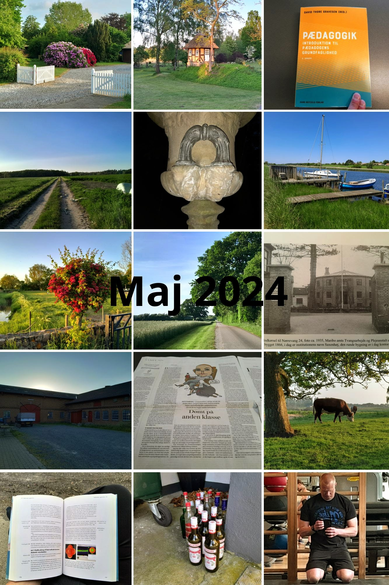
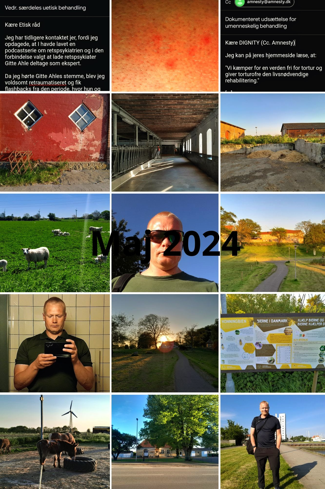
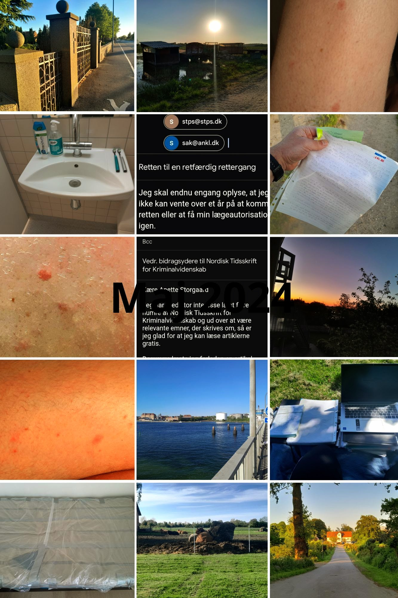
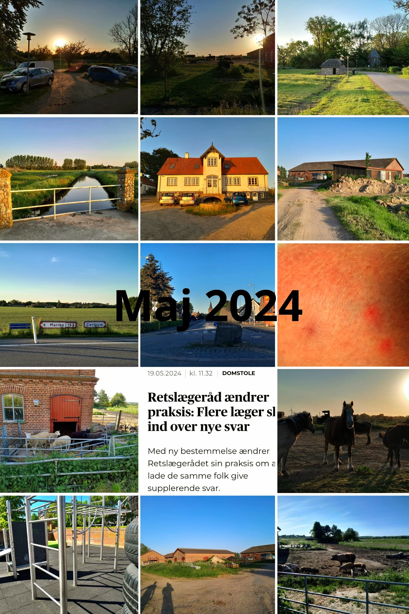
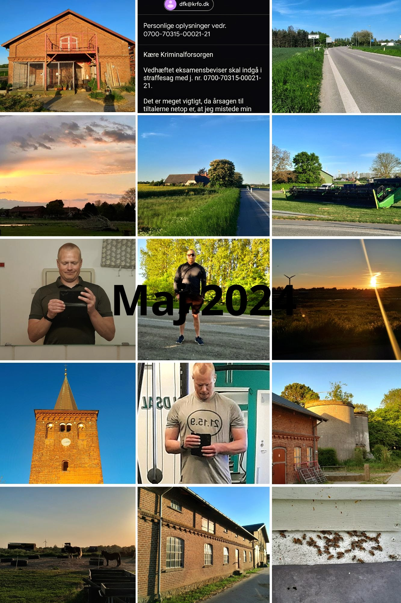
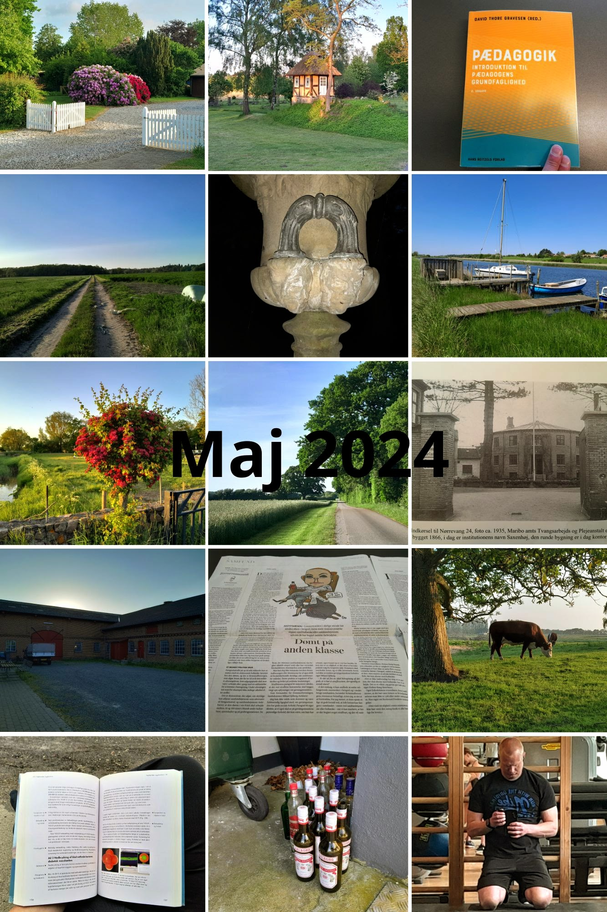
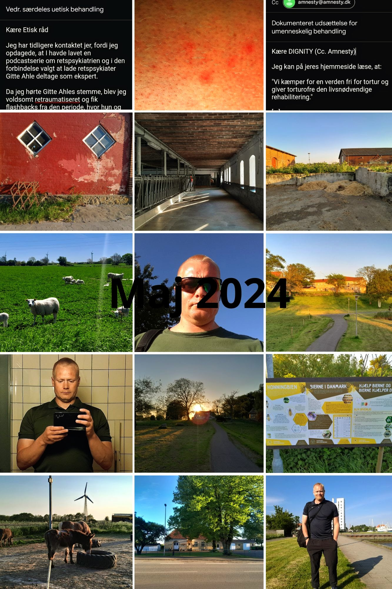
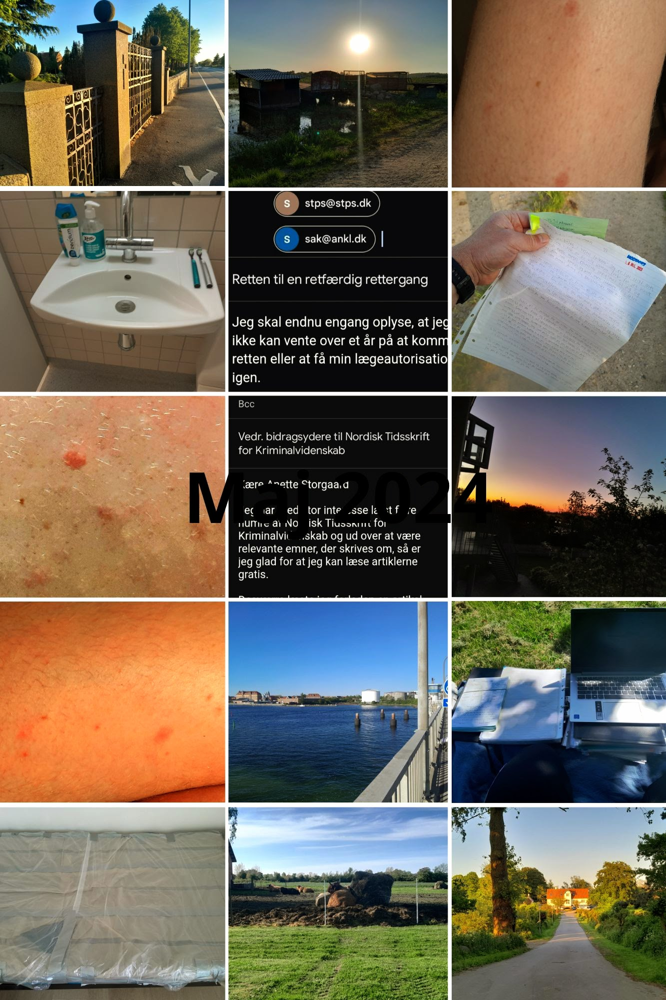
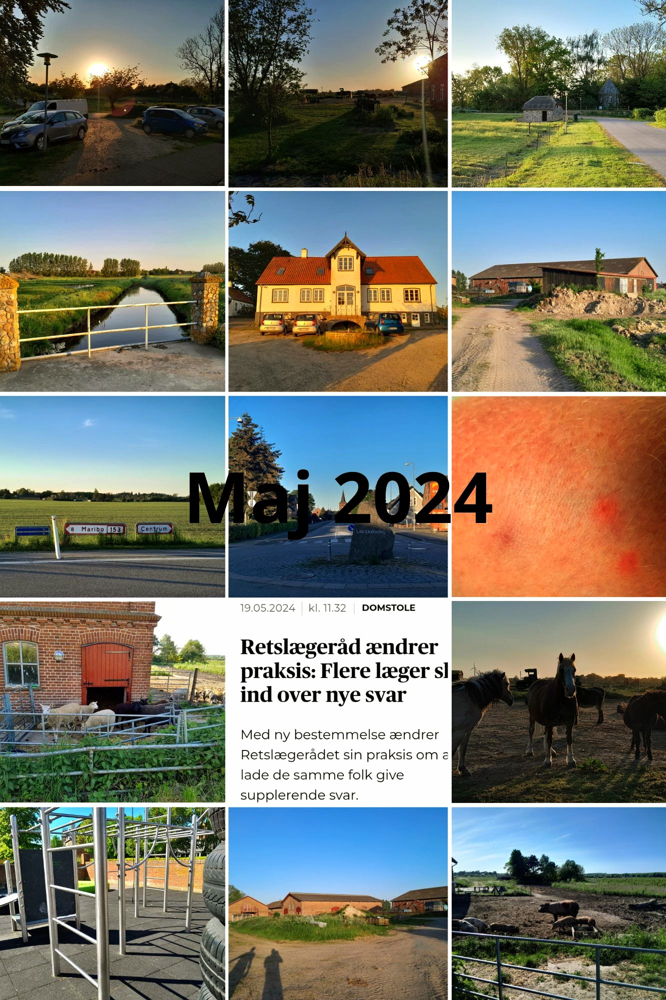
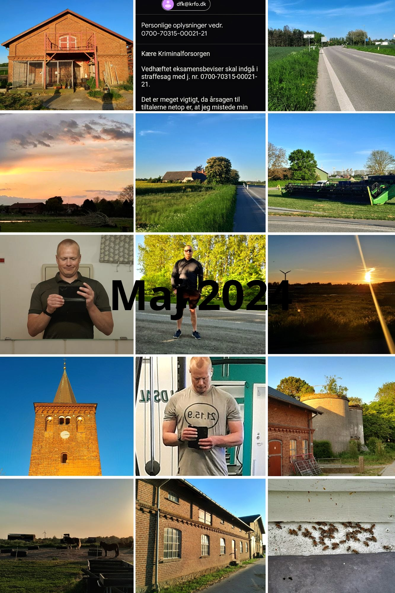
Billeder. Maj 2024.
Naboterror
Min nabo havde i omkring halvanden uge konstant, dag såvel som nat, cirka hver halve minut, hvis da ikke hyppigere, udstødt en højt klagende råb. Konstant, hele tiden og med en utrættelig, der var skræmmende. Og han havde både dør og vindue åbent, hvilket ikke ligefrem reducerede hans voldsomt generende udbrud. Om aftenen og natten fortsatte råbene med uformindsket styrke, men nu havde de antaget en mere klynkende og jamrende karakter. Det var ulideligt. Det var ligesom kinisisk vandturtur og jeg kunne ikke holde det ud.
Alle kunne høre det i de andre lejligheder og i den de tilstødende bygninger, men intet skete og naboen blev ved. Det var ved at blive så varmt at jeg var nød til at sove med åbent vindue, men selv med lukket vindue kunne jeg høre ham råbe. Og selv med ørepropper ligeledes. Jeg opsøgte tre ansatte og bad dem venligt om at se til ham, dels fordi det var ulideligt, og dels fordi han faktisk lød, som om han var i stor smerte. "Her på stedet har alle udfordringer", lød svaret bare, og intet skete.
Så mødte jeg den stive og egoistiske pestilens, som kom gående med usikre skridt op ad bakken med sin rollator, som havde en lille kurv, hvori der lå to flasker snaps, som lignede Rød Aalborg.
Jeg gik hen til ham og spurgte roligt men bestemt, at han skulle lade være med at råbe og skrige, især om natten, fordi det generede mig voldsomt og holdt mig vågen, samt at han i det mindste skulle lukke sit vindue og sin dør, hvis han ikke kunne lade være med at råbe sådan. Nå, men hvis det var sådan jeg havde det, så skulle han nok, stammede idioten, og jeg fortsatte videre.
Men da jeg kom tilbage fra biblioteket, hvor jeg havde siddet og skrevet og var dødtræt og ville have en lur, hørte jeg alkoholikeren råbe højt igen, allerede inden jeg var kommet i synsvidde af mit værelse og jeg så, at hans dør og vindue stod pivåbent og det var tydeligt at råbene kom fra hans værelse. Jeg var rasende og fløj op ad trappen og skubbede døren helt åben og sagde, at nu skulle han fandeme lukke røven og så smækkede jeg svinets dør hårdt i. Da hjalp selvfølgelig ikke.
Jeg optog derfor det stive og egoistiske svins råb og skrig på min telefon til senere dokumentation, da ingen ville tro på mg, når jeg sagde hvor slemt det var. Det lykkedes til fulde og optagelsen var af fremragende kvalitet. Men jeg var nødt at få ham til at holde op med klageråbene, så jeg skrev en sms til personalet (som jeg naturligvis gemte), hvor jeg anførte hvad jeg selv havde forsøgt, samt at det var en "rigtig, rigtig, rigtig god ide, at de fik ham til at holde kæft straks". Det hjalp.
Perxine
At naboen skabte sig var i sig selv ulideligt, men samtidig var jeg plaget af det, der stak eller bed mig og gav mig små røde mærker, hvor huden var tyndest. Jeg brugte derfor i dag endnu engang knapt 250 kroner på noget Permethrincreme, som i det mindste var effektivt symptomlindrende. Jeg gjorde ihærdigt rent og vaskede tøj og linned hver eneste dag, alt på minimum 60 grader og i tørretumbleren, men det hjalp ikke rigtigt. Jeg fotodokumenterede de røde elementer på huden, brugte antihistamin og tyk fugtighedscreme uden nogen egentlig effekt og brugte flittigt tættekammen så jeg fik kradsemærker på huden af det.
Hvad end der var tale om var det kommet for at blive, det var et virkeligt fænomen og jeg slap aldrig af med det. Eneste fordel ved at det klødede uudholdeligt og konstant, dag efter dag, måned efter måned var, at det distraherede mig fra at tænke for meget over min eksistentielt katastrofale situation. Kløen var det værste jeg nogensinde havde været udsat for, værre end tørst og kulde og sult og hedebølge, jeg vænnede mig aldrig til den, den kunne kun lindres ved Nix creme og invaliderede mig socialt.
Frank
Det var Franks og Vestegnens Politis skyld, at jeg var blevet truet i Vestre Fængsel:
https://nyheder.tv2.dk/live/krimi/2024-05-01-hoejesteret-tager-stilling-til-hemmelige-agentoptagelser
Samtidig havde efterforsker Ole Nielsen ransaget mig i 2017, fordi han mistænkte jeg stod bag det helt igennem afskyelige, rædselsfulde, meningsløse og bestialske drab. Det var den værste beskyldning, jeg endnu var blevet udsat for.
Eftersorsker Ole Nielsen tog min kasket, en sort tynd sportsjakke og min mors spejderkniv, men gav mig igen kendelse eller noget skriftligt dokumentation på min anmodning, og jeg fik hverken Ole Nielsens ID, ej heller de to andre afdankede efterforskeres ID eller navne. De nægtede direkte at oplyse noget som helst. Ole Nielsen var dog så professionel at han - måske for gammelt bekendsskabs skyld - i hånden skrev de genstande, han stjal. Intet andet. Det var en fin gestus.
Jeg kendte dog Ole Nielsen udmærket, for dels jeg havde som læge på Retsmedicinsk Institut obduceret i nogle af hans sager og arbejdet sammen med ham og dels var det tilfældigvis Ole Nielsen, der fik min barndomsven falsk tiltalt og varetægtsfængslet i fem måneder, hvorefter min ven blev pure frifundet, men blev fyret fra sit arbejde som chauffør og fik så store psykiske mén af varetægtsfængslingen, at han blev førtidspensionist. Alt dette skete i 2012. Så jo, jeg kendte udmærket Ole Nielsen.
Jeg ville på ingen måde finde mig i at blive mistænkt for så ond og grusom en forbrydelse, så jeg klagede straks til både Vestegnens Politi og min daværende advokat, og da genstandene senere blev leveret tilbage efter analyse, hvor resultatet var, at de intet havde med sagen at gøre (selvfølgelig!), krævede jeg erstatning og mit navn renset for det ækle svineri, men jeg fik aldrig et respons på noget af det. Jeg ville selvfølgelig havde mit navn renset og jeg ville have erstatning, og ingen skulle være i tvivl om, at jeg absolut intet havde med den grusomme forbrydelse at gøre. Jeg havde klaget igen og igen og det blev jeg ved med, for det gik ikke, at jeg skulle mistænkes for sådan noget og Ole Nielsen kom til at give mig og min familie en undskyldning en dag.
Hvorfor skulle jeg forulempes af Ole Nielsen fra Vestegnens Politi? Som min daværende advokat sagde, da jeg ringede til ham dybt chokeret og grædefærdig, straks efter Ole Nielsen og hans tæskehold var gået igen, så "kan politiet jo se læse, at du er sindssyg og utilregnelig" og "politiet undersøger alle sindssyge i området for at fange gerningsmanden". Men jeg havde jo aldrig været sindssyg eller utilregnelig, det var fejldiagnoser, og jeg boede i Rødovre dengang, ikke i Herlev og jeg havde aldrig nogensinde sat mine ben i den park hvor mordet fandt sted, og mine forældre kunne jo bevidne, at jeg befandt mig hos dem på gerningstidspunktet og dagen, så hvorfor skulle jeg straffes? Det kunne advokaten ikke svare på. Men sådan var det at være fejldiagnosticeret som sindssyg.
Litteratur
Jeg satte mig i skyggen af et træ og læste videre i "Hypnosemordene" af Finn Abrahamowitz. Det var på rigtig mange måder en super interessant bog, og jeg havde sidste år læst en anden bog af nyere dato om netop samme hypnosemord, som var skrevet af en tidligere anklager fra Kolding ved navn Henrik Werner Hansen (jeg læste hans selvbiografi for et par uger siden, som egentlig var interessant nok, men som var den bog, jeg nogensinde havde læst, der havde flest stave- og grammatikfejl) , og som hed "Justitsmord - sagen om hypnosemordene".
Samme sager, men beskrevet med ret forskellige tilgange og de supplerede hinandenn godt. Jeg lånte også sidstnævnte bog, for at læse den igen. Det var ganske vist omkring 70 år siden sagerne var i retten, men så længe siden var det altså heller ikke, og det var grotesk at det kunne finde sted i Danmark også på det tidspunkt. Den form for justitsmord, hvor elendig efterforskning, politik og psykiatri var blandet sammen i en uskøn pærevælling, var præcis det samme som fandt sted i dag. Det var absolut intet med retssikkerhed eller retssamfund at gøre, men ingen kunne eller gad at se, at kejseren ingen klæder havde på. Det sagde alt om danskernes ligegyldighed, fejhed og hykleri.
Seneste version af denne del af min bog
https://docs.google.com/document/d/1eB2KDTyIon-Me3ZbYF_2ZPg12fLukFpFR-FOeRmav9Y/edit?usp=sharing
Mit forsvarsskrift - meget ufuldstændigt
https://docs.google.com/document/d/1GLbuiDshJfk7qmYzOGaQqHYQzyYbd5cxyXOnvmAdJJg/edit?usp=sharing
Om Rorschach testens ugyldighed og uvidenskabelighed
Billede. Udsigt over Besøgsgården ved Saxenhøj.
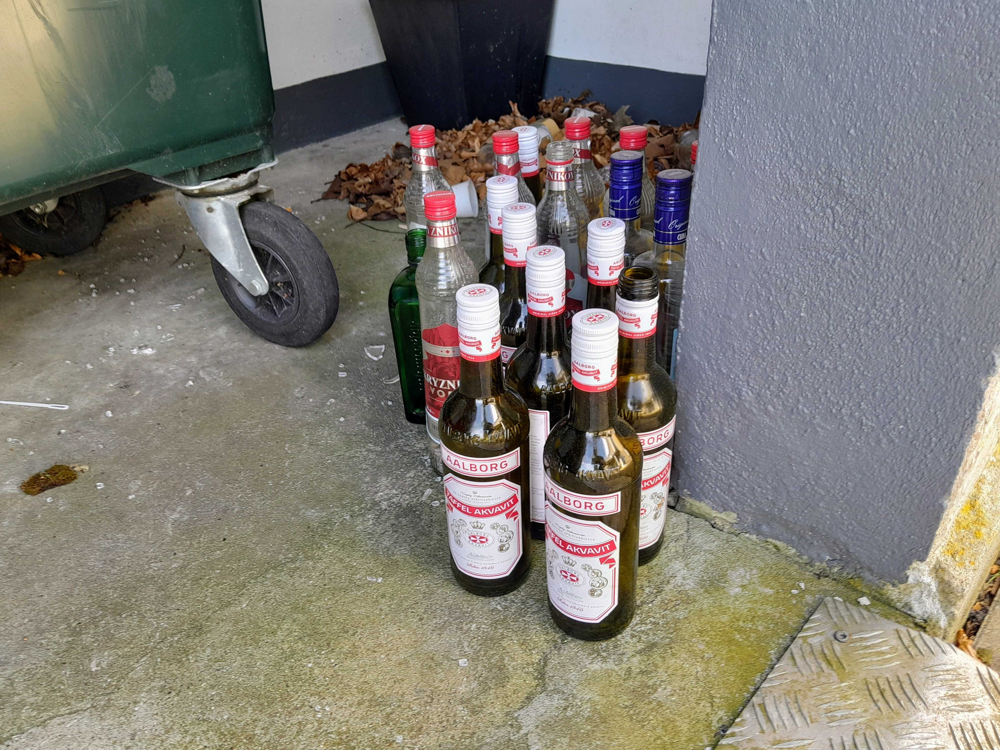Billede. Der blev drukket massivt af de fleste beboere på Saxenhøj.
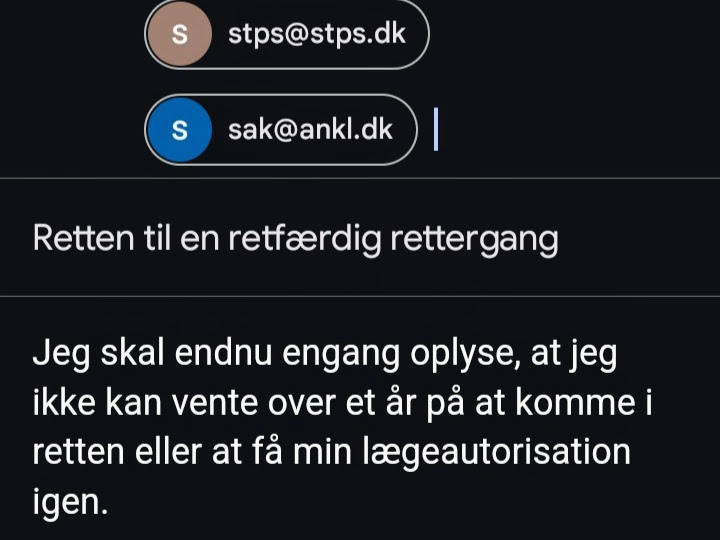Billede. Jeg sendte endnu en mail, hvor jeg forklarede om min uholdbare situation.
Billede. Træning i PureGym i Nykøbing Falster.
Billede. Læste oftalmologi på Grænge Station, mens jeg ventede på toget. Man skulle ikke holde vejret, mens man ventede på de kanter.

Billede. Træning i PureGym i Nykøbing Falster.
Fysisk aktivitet
Jeg nåede beklageligvis ikke at komme i svømmehallen i går, selvom jeg havde medbragt badeshorts, svømmebriller, håndklæde og fem kroner til skabet. Jeg troede, jeg lige akkurat kunne nå det, men havde ikke set at man blev kaldt op en halv time før lukketid.
Så den eneste træning, jeg fik i går, var en hel del gentagelser og sæt af trøste-dips, samt armbøjninger. De træningsstativer, der stod på det grønne område, var faktisk flere end andre steder, jeg havde trænet udendørs fitness, så det var perfekt, men lidt pinligt for mig, så kom der en børnehave eller måske en indskolingsklasse lige efter jeg begyndte på træningen, og ungerne var glade og farerde rundt i det skønne vejr og klatrede rundt på stativerne omkring mig. Jeg spurgte for en god ordens skyld pædagogen eller læreren, om det var ok, at jeg trænede, og det var intet problem.
Så i dag skulle jeg simpelthen svømme og jeg tog toget til byen hvor svømmehallen lå i god tid og sad på det hyggelige lokale bibliotek og skrev flere dagbogsnotater ind i et par timer før svømmehallen åbnede.
Jeg genopfriskede min crawl teknik med et par youtube-videoer og især en af dem var super god og fik mig til at genfinde rytmen i armtaget. Jeg gjorde som videoen demonstrerede i selve svømmehallen og jeg fik for en gangs skyld var op før jeg hoppede i vandet og det viste sig at være rigtigt, rigtigt godt, for det blev den bedste svømmetur siden 2016, hvor jeg mistede min lejlighed. Alt gik som smurt, perfekt rytme og armtag, vejrtrækning, vendinger og bentag. Det var så dejligt at være i et perfekt flow, at jeg ikke talte baner, men udelukkede fokuserede på teknikken, som var jeg bange for at miste den igen og plaske rundt som en plov i vandet. Jeg svømmede længere tid og distance i dag end hidtil i denne omgang og jeg elskede det. Det var en yderst tiltrængt positiv oplevelse for en gangs skyld.
Fnat eller væggelus
Jeg troede lige, at det var lykkes mig at slippe af med de parasitter, der forpestede min tilværelse, så det var uudholdeligt, men desværre vendte de tilbage i går aftes og især i går nat. Det var utroligt nedslående, jeg kunne selvfølgelig mærke deres stik eller bid, som faktisk gjorde lidt ondt hver gang, det klødede enormt, jeg kunne høre parasitterne hoppe rundt, især hvis der lå noget af plastik ved siden af mig, og jeg kunne se de røde mærker de efterlod. Jeg fotodokumentere de fleste mærker som jeg ville lave en kollage af, så andre kunne se at det altså var virkeligt og ikke vrangforstillinger og hallucinationer.
Jeg forstod bare ikke hvorfor jeg ikke kunne slippe af med de satans kryb? Jeg gjorde rent typisk to gange dagligt, vaskede alt på 60 eller 95 grader og jeg gik selv i bad to gange dagligt og desuden havde jeg brugt en formue i Nix creme. Det var helt vildt. Cremen hjalp fantastisk godt, men når det ikke fjernede parasitterne var det kun lindrende behandling. Men havde man nogensinde haft fnat, så vidste man, at man ville betale og gøre alt for at få lindring. Jeg købte derfor endnu en tube creme i dag.
Politiet herude
Jeg havde ikke generelt noget mod politiet, det var Københavs Politi og Vestegnens Politi jeg ikke kunne lide, men politiet herude var sikkert flinke og hæderlige nok. Det håbede jeg i hvertfald og jeg håbede at de havde bedre dømmekraft end deres kolleger, således at de kunne se, at der ikke var noget galt med mig.
Og derfor var jeg glad hver gang en patruljevogn passerede mig, for så kunne jeg demonstrere, at jeg gik, opførte og klædte mig som det normale menneske jeg var. Klokken 17.37 passerede en patruljevogn mig således i modkørende retning mens jeg gik i rabatten. Jeg smilede venligt og diskret da bilen passerede mig. Der var overraskende mange patruljer på de relativt øde veje i området, for stot set hver gang jeg gik fremfor at tage toget, så passerede mindst en patruljevogn mig hver vej. Det var god stil at politiet viste deres tilstedeværelse så meget og det var meget betryggende for mig.
At jeg havde gået tilbage i dag var sådan set bare fordi jeg var blevet småfed og var nødt til at gå en længere tur engang i mellem. Men jeg havde set en af de lokale originaler, der vandrede rundt omkring, men for ham var det vist en livsstil. Han lignede det, som PSP-samarbejdet fejlagtigt fremstillede mig som: En forhutlet, snavset og laset klædt midaldrende mand, som altid havde en fyldt Nettopose i hver hånd og for hvert skridt han tog svingede han begge poser vildt frem og tilbage. Såddan var jeg ikke. Og det havde politiet set et par gange.
Jeg var i væsentligt bedre humør i dag, og det skyldtes dels træningen, dels vejret, dels at jeg endelig havde søgt boliger og ikke behøvede kommunen til noget som helst, så jeg slap for fornedrelser - og vigtigst: Jeg havde mødt nogle fornuftige mennesker, jeg havde talt meget med. Når man var meget ensom som jeg, var det noget af det værste i verden, det mest deprimerende næstefter fnat eller måske mere deprimerende. Hvis jeg ikke talte med nogen i et par dage, så begyndte ensomheden at sætte ind og det var forfærdeligt og man blev desperat hurtigt. Social isolation var tortur og det var hvad der fik mennesker til at tage livet af sig selv fordi det var så uudholdeligt.
Sådan havde jeg haft det i de sidste par måneder. Indtil i dag. Det havde taget mig meget overvindelse af opsøge andre for at få et netværk, men det var ved at lykkes og jeg havde snakket så meget, at jeg var hæs. Snakket meget var for mig i denne periode mindre snak end gennemsnittet af almindelige mennesker, så det var kun relativt set og hæsheden var fordi jeg ikke havde brugt min stemme særligt meget siden jeg blev udskrevet den 15. marts. At tale med andre mennesker gjorde mig så glad, at intet andet kom tæt på. Effekten var utrolig. Ligeså ulideligt ensomheden var, ligeså skønt og afstressende var det at tale bare lidt med andre mennesker.
Boligsøgning
Jeg havde som konsekvens af samtalen i går taget mig sammen og meldt mig aktiv i to boligselskaber. Det gik ikke at jeg var længere tid på stedet, for det var ikke for mig. Det positive var denne gang, at de ene boligselskab opererede i Udkantsdanmark og det var til forskel fra tidligere lige præcis der, jeg gerne ville bo og helst så langt væk fra andre mennesker som muligt. Jeg havde allerede skrevet mig op til flere boliger og fordi de lå så afsides var huslejen til at betale og standarden så fin nok ud. At jeg ikke ville bo i Københavnsområdet var nyt og en klar fordel. Jeg elskede det danske landskab uden for byerne, hvor der var marker, landsbyer, natur og rigtigt mørkt om natten, så alle stjerne trådte tydligt frem.
Og så var der ikke et rend af mennesker. Det bedste ved boligerne i udkanten var, at jeg havde råd til indskud selv, for dels var det lavere end jeg var vant til fra København og dels havde jeg jo takket være politiets indespærring sparret lige præcis nok op så jeg ikke behøvede at låne af kommunen. Og det betød at jeg ikke havde behov for socialpædagogernes "hjælp". Det betød at jeg kunne smutte herfra så snart jeg havde fundet mig en egnet bolig. Det var det bedste, for mig og for pædagogerne. Og måske slap jeg så også for at blive chikaneret ved stedfortræder af PSP-tosserne?

Billede. Til fods til Maribo for at tage i svømmehallen. Det var et smukt landsskab og der var kun 9 kilometer hver vej.
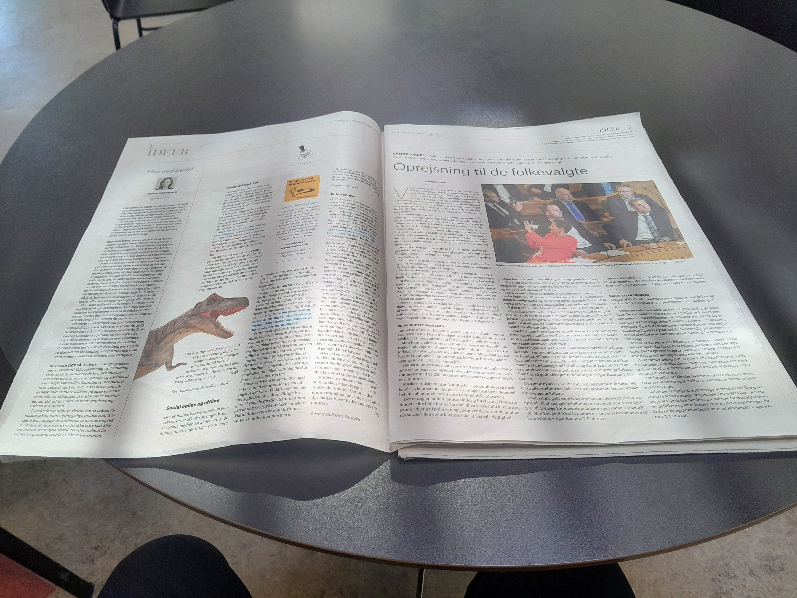Billede. Sad som regel og læste på Maribo bibliotek indtil svømmehallen åbnede.
Billede. Træning i PureGym i Nykøbing Falster.
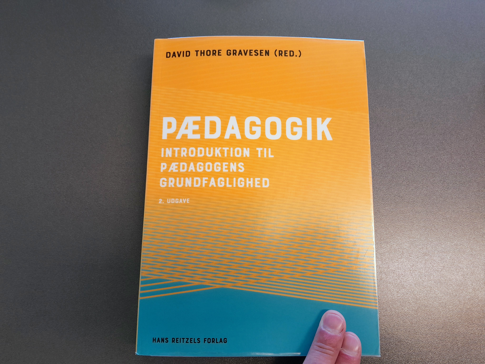Billede. Sad og læste på biblioteket i Nykøbing Falster efter træning. I dag en ny lærebog i pædagogik
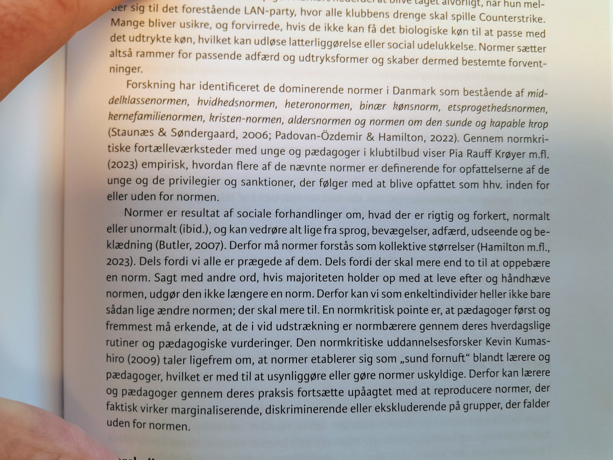Billede. Jo mere jeg læste i den pædagogiske lærebog, jo mindre respekt fik jeg for socialpædagogerne. Og jeg havde nærmest ingen i forvejen. Her om normer og normkritik.
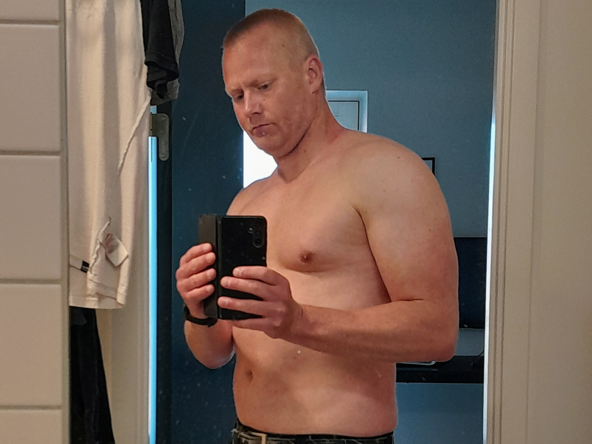Billede. Jeg var ikke svag, syg eller misbrugende. Jeg var normal.
Mail til læge Camilla Mie Elvekjær
Jeg skrev til aften en mail til Camilla Mie Elvekjær på citydoctors.kbh@gmail.com. Jeg satte desuden Camilla Noelle Rathcke fra Lægeforeningen og Styrelsen for Patientsikkerhed som modtagere, da det var vigtigt, at de aldrig bagefter kunne påstå, at de intet vidste og dermed påstå sig uskyldige.
Jeg skrev, at jeg jo ikke havde kontaktet hende siden 2016, men at det var på sin plads nu, da mentalundersøgelsen fra i år havde konkluderet, at jeg intet psykisk fejlede, udover ADD, samt at Camilla Mie Elvekjær således havde taget alvorligt fejl. Dermed havde hun og hendes fejldiagnose været de hovedansvarlige for at mit liv var ødelagt. Og det skulle Camilla naturigvis vide, da det var mig, der var offer for hendes kriminallitet og at hun var gerningspersonen. Jeg skrev også, at jeg var ligeglad med om hun igen løj og manipulerede overfor politiet fordi jeg havde skrevet til hende, samt at jeg ville sørge for at hele Danmark kom til at kende til hendes ugerninger og at det aldrig blev glemt, hvad hun havde gjort. Jeg skrev et link til denne hjemmeside i mailen, så hun for en god ordens skyld kunne se at mailen til hende var at finde på adressen.
Læge Camilla Mie Elvekjær var mere kriminel end jeg, men fordi kvinder i Danmark kun sjældent blev retsforfulgt for lovovertrædelser, især ikke de veluddannede kvinder, så slap hun frisag.
Det ændrede selvfølgelig ikke på, at Camilla Mie Elvekjær faktisk var kriminel og at jeg havde dokumenteret det flere gange, men desværre fik hun positiv særbehandling af Københanvs Vestegns Politi, anklagemyndigheden og domstolene, sådan som det var sædvane for hendes slags. Jeg kunne ikke acceptere, at offentligheden ikke vidste at Camilla Mie Elvekjær var en gemen kriminel, så derfor ville jeg sørge for at hele Danmark via medierne kom til at læse om hendes og kriminalitet og dem, der havde holdt hånden over hende.
Jeg kom også til at skrive til de resterende hovedansvarlige bødler i de kommende dage, for at sikre mig at også de skulle gøres bekendte med resultatet af deres kriminalitet og misbrug af lægefaget.
Ligeglad med politi og straf
Når mit liv var endegyldigt forbi og jeg intet havde at leve for, så rørte truslen om anholdelse og straf mig heller ikke.
Billede. Mail til praktiserende læge Camille Mie Elvekjær, som havde givet mig den alvorlige fejldiagnose, der havde ødelagt mit liv og alt, jeg havde opnået og kæmpet for.
Billede. Mail fra 2021, hvor jeg forsøgte at informere om min kritiske situation, men hvor ingen lyttede.
Boligsøgning
Jeg havde skrevet mig op til over 1000 boliger eferhånden og i fire boligselskaber, men der var ikke bid endnu. Vi talte ikke om boliger inden for voldene, men om boliger i udkantsdanmark. Selvfølgelig skulle jeg væbne mig med tålmodighed, og jeg skulle ikke tro, at jeg 'bare' kunne få en etværelses lejlighed dér hvor kragerne vendte, så jeg måtte bare blive ved og forsøge at overleve imens, selvom det var umuligt nu. At få min egen lejlighed var dog et ufravigeligt krav, for jeg skulle aldrig igen være afhængig af andre menneskers velvilje eller blive udnyttet af nogen, fordi jeg var hjemløs. At være nogens bitch fordi jeg var udsat for statens overgreb var ikke min kop the, så jeg skulle have mit eget sted, hvor stalkere, socialpædagoger og andre pestilenser ikke måtte komme og hvor jeg kunne låse døren og være i fred.
De sociale medier
Det var klart, at jeg skulle chikaneres via myndighederne fordi jeg dokumenterede overgreb på de sociale medier - så måtte det bestemt da være mig, der var noget galt med og mig, der chikanerede de stakkels og samvittighedsfulde offentlige ansatte. Virkeligheden var diametralt modsat; det var mig, der var offer for uduelige og samvittighedsløse offentligt ansatte, som ikke fortjente at deres forbrydelser og misbrug af deres stilling i det offentlige blev tiet hjel. Så jeg var ligeglad med PSP-retardernes hetz. Og mens visse personer holdt af at læse alt, jeg skrev på nettet, fordrejede det og manipulerede med og løj til myndighederne om mig - ja, så holdt jeg også også med dem. Jeg gemte eksempelvis alle navnene på dem, der i årenes løb havde været inde på min LinkedIn profil for at holde øje med mig og nyde at jeg led, og som indberettede mig til myndighederne og bildte dem ind, at man skulle være "bekymret" for mig. Jeg gemte dem alle, og ville bruge oplysningerne om dem en dag.
Intet nyt under solen
Jeg vidste ret præcist, hvilken effekt mine opslag på de sociale medier havde og det samme var tilfældet med de mails, jeg sendte. Jeg vidste, der intet andet var at gøre i min situation og jeg vidste, at samtlige modtagere af mine mails og de fleste, der læste mine opslag på nettet, ved første øjekast regnede mig for tosset, men kun fordi de ikke havde sat sig ind i min sag og absolut ikke havde tænkt sig at gøre det, for i såfald ville de vide, at jeg ikke var spor tosset, men at min situation var af primært rent social karakter. Men ingen nåede så langt. I stedet for skete dette: En eller anden politiker eller myndighedsperson læste et eller få opslag eller mails og kontaktede straks fjolserne i PSP-samarbejdet, som igen chikanerede mig via andre, eksempelvis retarderede socialpædagoger.
For så kunne politikeren eller myndighedspersonen på papiret og i en retssal eller for et klagenævn påstå at være i god tro og samvittighedsfuld og et godt menneske. Men samtidig havde de udelukkende skadet mig for at dække deres egne rygge. Fordi de ikke gad at sætte sig ind i sagerne. Men jeg vidste at de var gift for mig og at deres påståede bekymringer kun dækkede over at sende aben videre til nogen, der kun ødelagde mig endnu mere. Så uanset hvad de påstod, så passede det ikke og der var ingen undskyldninger for at kontakte de forkerte, altså PSP-samarbejdet eller psykiatrien. Og nu hvor jeg havde skrevet det, var der slet ingen undskyldning.
Mere 'goggeri'
Jeg måtte som som sagt væk herfra så hurtigt det var muligt, hvorfor jeg meldte mig ind i endnu et boligselskab til aften efter svømning. Jeg kom til at tænke på Senior Goggen, der forarget og bebredjende havde udbrudt, at hun ikke ville hjælpe mig til at søge om en indskudslån af kommunen, hvis jeg alligevel bare skulle i fængsel, nej, det gad nægtede hun godt nok. Hvad skulle jeg svare til det? Jeg havde ikke en chance når man bare opretholdte tiltalerne uendeligt. Når det var holdningen, så var det endnu et håndfast bevis på at jeg blev tvunget hjemløs pga. sigtelserne. Og jeg havde optaget det, som 'goggen' sagde.
Billede. Mail til Kriminalforsorgen og PSP-Samarbejdet.
Billede. Ut. efter svømning i Maribo Svømmehal.
Mails til bødler
Jeg sendete i dag mails til følgende modtagere. Det var første gang jeg havde henvendt mig til dem. Men de skulle vide, at de alle i større eller mindre omfang havde bidraget til at ødelægge mit liv ved at misbruge lægefaget.
Mail til psykiater Anna Gry Bille
"Kære Anna
Noget af det mest grænseoverskridende, jeg endnu har været udsat for (og tro mig, der har været meget) var, da du direkte løj overfor Det Psykiatriske Klagenævn på psykiatrisk afdeling i Glostrup i 2018 og sagde, at jeg var sindssyg, selv om det var helt åbenlyst, at jeg ikke var psykotisk. Og i øvrigt heller aldrig har været det.
Jeg kan stadig huske episoden i detaljer. Én ting var, at du som psykiatrisk overlæge løj førnævnte direkte op i ansigtet og dermed groft misbruge dit fag og din stilling.
Jeg ville såmænd have set gennem fingre med det, hvis det ikke havde nogen egentlig betydning for mig.
Problemet var bare, at din eklatante løgn resulterede i, at jeg ikke så mange måneder efter blev udsat for langvarige trusler om tvangsbehandling med invaliderende og livsfarlig antispsykotisk medicin, direkte begrundet med din løgn, af Gitte Ahle og til dels Mette Brandt Christensen.
Og endnu værre, at din løgn fastholdt en alvorlig psykiatrisk fejldiagnose og er skyld i, at jeg fortsat rådner op som hjemløs, selv om jeg stadig selvfølgelig er psykisk rask.
Du skal vide, at du i væsentlig grad har bidraget til at ødelægge hele mit liv. Ved at lyve og misbruge dit fag.
Og det skal alle selvfølgelig også vide. Derfor har jeg skrevet om dig i min bog og her:
For en ny og meget mere grundig mentalundersøgelse har nu givet mig ret.
Du skal vide, at jeg ved og at alle snart ved, hvad du har gjort af ugerninger.
Alle skal kende den rigtige Anna Gry Bille og vide hvad hun er i stand til, når hun tror, at ingen ser hende over skulderen.
Som offer for din kriminalitet har jeg ingen problemer med at indvie hele verden i den. Det er min ret."
Mail til psykiater Marianne Geoffrey
"Kære Marianne
Jeg kan jo tydeligt huske, at du skrev i en sms til mig at du mente, at jeg led af skizofreni.
Det var naturligvis usandt, og man kan ikke stille sådanne diagnoser uden nogensinde at have set patienten, men det var ikke desto mindre hvad, du gjorde mod mig.
Senere vidnede du også mod mig og bidrog til, at jeg fik en behandlingsdom uden længste tid for noget, jeg aldrig har fejlet eller modtaget behandling for.
Dermed har du bidraget til det justitsmord, der fortsat efter så mange år er direkte årsag til, at jeg i skrivende stund er hjemløs.
Det er sikkert let for dig at bidrage til at ødelægge mit liv og så glemme alt om det bagefter.
Men jeg vil have, at hele Danmark kommer til at vide, at du har misbrugt lægefaget til at ødelægge mit liv, som det psykisk raske menneske, jeg altid har været.
Og det kommer hele Danmark selvfølgelig også til. Nemlig i min bog og her:
Mit liv er forbi, bla. takket være dig. Men jeg accepterer selvfølgelig ikke bare at gå til grunde i tavshed.
Så alle skal kende til dig og dine kolleger.
Venlig hilsen,
Kjeld Andersen ."
Træning
Jeg trænede næsten hver dag, og der var igen grund til at skrive det hele tiden. I går svømmede jeg således i en svømmehal og i dag trænede jeg bryst og triceps i PureGym. Jeg tog en pause en gang i mellem, og måske var det i morgen, og i såfald ville jeg gå en lang tur i stedet.
Billede. De sko fra fik af M på Afdeling P7, Middelfart. Tusinde tak til ham for dem.
Billede. Mail til fængselspsykiater Lis Middelbo. Hun var en yderst slesk, manipulerende og uprofessionelt menneske, der skev noget i journalen, der var i modstrid med virkeigheden og den samtale, jeg havde haft med hende. Hun udgjorde derfor en alvorlig fare for mig.
Billede. Mail til professor Merete Osler, den reelt psykisk syge og anoretiske læge, der lagde kimen til min fejldiagnose.
Mail til PSP-samarbejdet, Kriminalforsorgen, Retslægerådet, Retspsykiatrisk Klinik og Datatilsynet
"Kære PSP-samarbejdet, Kriminalforsorgen, Retslægerådet, Retspsykiatrisk Klinik og Datatilsynet (Cc. min advokat)
Jeg sender hermed min berigtigelse til psykiater Lis Middelbos notater i min journal i Vestre Fængsel.
Jeg havde en samtale med psykiater Lis Middelbo i Vestre Fængsel den 14. November 2023 og mine berigtigelser vedrører de notater hun skrev på baggrund af især denne samtale.
Jeg anmodede om aktindsigt i min journal den 19. Januar 2024 og modtog papirerne den 24. januar 2024 og afleverede mine rettelser den 27. januar 2024. Alt dette under opholdet i Vestre Fængsel.
Psykiater Lis Middelbos journalnotat stemmer ikke overens med virkeligheden og hun har fordrejet og forvansket indholdet af samtalen, samt anført faktuelt forkerte oplysninger, såvel af helbredsmæssig og anden karakter.
Da de forkerte oplysninger udgør en alvorlig patientsikkerhedsmæssig og retssikkerhedsmæssig fare for mig, skal jeg bede om at de bliver berigtiget. Jeg blev forleden chikaneret af PSP-samarbejdet, hvilket lader til at betyde, at man i eksempelvis Kriminalforsorgen ikke har korrigeret mine helbredsmæssige oplysninger til de korrekte.
Mig bekendt er det ulovligt for offentlige myndigheder at nægte at berigtige faktuelt forkerte oplysninger om borgerne, hvorfor jeg skal klage til Datatilsynet over dette og jeg skal bede Datatilsynet om at sikre sig, at Kriminalforsorgen, Retspsykiatrisk Klinik og Retslægerådet har ændret indholdet i min journal til det korrekte og virkelighedstro, som anført i det vedhæftede dokument.
Min advokat modtager desuden denne mail, så hun kan følge op på, om ovenstående sker.
Venlig hilsen,
Kjeld Andersen,
CPR:"
"Berigtigelse af journal afleveret til indscanning i journal i Vestre Fængsel
“Jeg er ked af, at du mener at jeg har en paranoid tolkning af verdenen, for de mennesker, jeg omgås og har omgåedes i de sidste mange år, herunder jeg selv, mener at jeg er imødekommende, tillidsfuld og venlig, hvilket er årsagen til, at jeg har lært så mange mennesker at kende og udviklet venskaber, bekendtskaber og forhold, selv efter jeg kom til Amager som hjemløs for over to år siden. Ingen af relationerne har været hjemløse eller misbrugere.
En udtalelse fra Kofoeds Skole, som jeg var fast tilknyttet fra august 2022 til august 2023, med dagligt fremmøde, modsiger direkte til vurdering, som bygger på en halv times samtale på min celle, hvor du kom uanmeldt og ville tale med mig en dag, hvor jeg havde arbejdet flere timer med at vaske skabslåger, før de skulle males, og selvom jeg havde bragende influenza med feber, hoste, muskelsmerter og dårlig almindelig tilstand.
Jeg fortalte dig under samtalen, at jeg var syg og udmattet, at det var svært for mig uforberedt og i min tilstand at redegøre for et komplekst forløb med en varighed på mange år og på den korte tid, jeg fornemmede at samtalen skulle vare. Jeg tilbød dig en opfølgende samtale, hvor jeg kunne uddybe de detaljer, du ville have mig til at redegøre for.
Jeg fortolker ikke verden paranoidt og jeg har aldrig gjort det. Jeg ville være ligeglad med din fejlkonklusion, hvis ikke det var fordi, at den udgør en reel fare for min patientsikkerhed. Du skriver, at jeg taler rigtig meget, som om det var udtryk for psykisk sygdom. Det er det selvfølgelig ikke, og det skyldes jo kun, at du selv bad mig om at redegøre for de mange førnævnte, komplekse forhold over en periode på cirka 10 år.
Du skriver, at jeg føler mig misforstået af alt og alle. Det er en voldsom og forkert overdrivelse, der tegner et helt forkert billede af mig. Faktisk er det kun få myndigheder og enkelte psykiatere, der stædigt holder fast i for længst tilbageviste fejldiagnoser, som har ødelagt mit liv. Men det er jo ikke misforståelser, ikke noget, jeg føler og det er slet, slet ikke alt og alle, som du fejlagtigt skriver.
Efter vores samtale blev jeg gangmand. Det er en betroet stilling, som kun de mest stabile, normale og vellidte indsatte typisk kan få. Så jeg fungerer og trives ganske godt i Vestre Fængsel, jeg er absolut strafegnet og hører på ingen måde til på en retspsykiatrisk afdeling, hvilket jeg i øvrigt heller aldrig har gjort.
Dine kolleger har alle under punktet ‘objektivt’ anført, om de mente, jeg fremstod psykotisk eller ej. Som tidligere læge - også i psykiatrien - ved jeg, at det er obligatorisk at vurdere netop dette punkt. Det har du desværre ikke gjort. Du ‘fornemmer’/‘føler’/‘vurderer’ selvfølgelig, at jeg ikke er psykotisk, ligesom alle andre og i overensstemmelse med virkeligheden. Men du tør ikke skrive det direkte, dels fordi du ikke vil modsige enkelte af dine kolleger og dels fordi du finder det mest bekvemt at sparke bolden videre til retspsykiatrisk afdelings læger. Men derved lever du ikke op til dit ansvar og du skader mig alvorligt.
I forhold til afbrydelsen af den seneste ambulante mentalundersøgelse, har klinikken efter vores samtale skriftligt bekræftet afbrydelsen af denne.
Jeg oplyste dig om, at årsagen til, at jeg fik afbrudt min introduktionsstilling på Onkologisk Afdeling på Rigshospitalet var, at den uddannelsesansvarlige overlæge [Ulla Brix Tange] fortalte mig, at hvis jeg ikke fik merit for den uforvarende overskridelse af fireårsreglen [det var Egill Rostrups skyld], så ville hun ikke spilde tid på at uddanne mig. Jeg fik ikke merit, men derimod besked på at sygemelde mig med stress indtil ansættelsen ophørte. Jeg var ikke stresset, men fik til gengæld løn i hele perioden. Jeg har aldrig fortalt dig, at jeg blev afskediget eller at der var samarbejdsvanskeligheder.
Jeg har aldrig fortalt dig, at jeg brugte det meste af min tid på at skrive til offentlige myndigheder; jeg har brugt en ufattelig lille del af min tid på at få korrigeret en åbenlys forkert psykiatrisk diagnose, som har gjort mig hjemløs i årevis og ødelagt mit liv. Hvad skulle jeg dog ellers gøre?
Det er ærgerligt, at du fremstiller mig som kværulant, når jeg ikke er det, samt at du forvansker det, jeg har fortalt dig, samtidig med at du har undlad alt det, jeg har oplyst, men som ikke passer ind i din falske fortælling.
Jeg oplyste dig om, at årsagen til min aktuelle fængsling var, at jeg blev frustreret over den lange ventetid til retssagen, hvor jeg var anklaget for injurier og som betød, at jeg var tvunget til at være hjemløs og bo i et telt i en skov. Efter halvandet år i teltet, skrev jeg en mail til anklageren i sagen, som han opfattede som truende.
Konklusion: Det er et alvorligt problem for min patient- og retssikkerhed, at psykiateren, og i mindre grad sygeplejersken, udelader mange vigtige oplysninger, skriver noget, der er faktuelt forkert, fordrejer andre oplysninger, så jeg fremstår som noget, jeg ikke er, samt undlader at beskrive mig objektivt i overensstemmelse med hvordan alle andre opfatter mig, herunder psykiaterens egen kollegaer.
Jeg er klar over, at psykiaterne vil opfatte denne berigtigelse som udtryk for paranoia og kværulanteri etc., men jeg er ligeglad, for jeg kan ikke være tjent med de usandheder og udeladelser, som fremgår af journalen. Det ødelægger min fremtid, at indholdet i psykiaterens notat er så langt fra realiteterne, og det skal ændres til det korrekte.
Det eneste, jeg nogensinde har lidt af, er ADD. Stop med at skrive, at jeg er paranoid, når det ikke passer.
Kjeld Andersen,
24. januar 2024.”
Billede. Udsigt fra Saxexnhøj.
Billede. Sakskøbing.
Billede. Sakskøbing.
Billede. Sad som sædvanlig og arbejdede på at skrive mine dagbogsnotater ind.
Billede. Vaskerummet på Saxenhøj var direkte ulækkert det meste af tiden, indtil der endelig blev skiftet rengøringsfirma.
Psykiatere Bente Hancke og Bjarne Christensen i 2018 - "ikke psykotisk"
Der var to psykiatriske konsulenter, jeg blev tilset af i Vestre Fængsel. Hvis en indsat havde haft et forløb i psykiatrien, var i en eller anden form for psykofarmakologisk behandling, eller bare hvis en indsat pludselig blev skør, så blev vedkommende tilset af en af disse konsulenter. De var ikke i fængslet fast, men som kom et par gange om ugen i dagtiden. Den første psykiater, jeg blev tilset af i 2018, fordi jeg var i behandling med et mildt præparat mod nedtrykthed, hed Bjarne Christensen, en gammel hippie med kridhvidt halvlangt hår og en farverig halskæde, der lignede noget hans børnebørn havde lavet til ham.
Den anden psykiater, jeg havde samtale med i 2018, hed Bente Hancke og hvor Bjarne Christensen vævede rundt i det og ikke turde udtale sig om min tilstand, så var Bente Hancke mere klar i mælet og konkluderede utvetydigt at jeg ikke var psykotisk. Jeg fandt hendes notat frem af 11. oktober 2018, hvor hun havde anført dette direkte. Endnu et tegn på at Gitte Ahle og Anna Gry Bille var gemene løgnere, der groft misbrugte deres fag i ond tro og burde sidde i fængsel for det.
Løj i Det Psykiatriske Klagenævn
Psykiater Anna Gry Bille løj direkte over for Det Psykiatriske Klagenævn den 18. oktober 2018 på Glostrup Hospital, hvor hun påstod, at jeg var psykotisk, selvom det åbenlyst ikke passede og til trods for, at hendes egen og mere erfarne kollega den 10. oktober 2018 efter en lang og grundig samtale med mig konkluderede, at jeg ikke var psykotisk.
Så Gitte Ahle og Anna Gry Bille var løgnere. Gemene løgnere.

Billede. Efter endt svømning i Maribo Svømmehal og før hjemturen til Sakskøbing.
Billede. Jeg sad som regel på Maribo Bibliotek og læste aviser før svømmehallen åbnede.

Billede. >Til fods fra Sakskøbing til Maribo nød jeg det idylliske danske landskab.
Billede. Den store og smukke kirke i Vaabensted.
Billede. Udendørsfitness i Maribo, hvor jeg trænede før svømning.
Billede. Træning i PureGym i Nykøbing Falster.
Billede. Sad og læste i bogen "Den akutte patient".
Uønsket opmærksomhed
Jeg oplevede hyppig stress, belastning og uønsket opmærksomhed, som desværre betød, at jeg måtte få nyt telefonnummer. Det var det sidste, jeg havde behov for, den konstante uønskede kontakt fra folk, jeg ikke ønskede at blive kontaktet af, men det var bare et vilkår. Retten til at få lov til at være i fred fra enkeltindivider og fra myndigheder, især PSP-samarbejdet, burde være en menneskeret.
Min reaktion helt naturlig
Jeg var dødtræt af, at ingen lod til at fatte, at min reaktion var helt indfølelig og normal, qua det, jeg i årevis var blevet udsat for og som aldrig fik en ende. Hvis man ødelagde et menneskes liv med bevidste løgne, og når myndighederne svigtede eklatent, så skete det, som skete for mig. At man ikke forstod det, betød bare at man ikke havde gidet at sætte sig ind i sagen. Det kunne jeg ikke gøre noget ved.
Dødsdommen
Det, der var udslagsgivende for min opførsel, var især dette:
Hvem var så dumme, at de ikke forstod, at min opførsel var helt forventelig og normal?
Og hvem var så meget ude af takt med virkeligheden, at de troede, at man kunne sætte lighedstegn mellem ord - uanset hvilke og hvor stort antallet end var - og så det, jeg havde været udsat for i knapt 10 år. Indtil videre?
En uge i mine sko, var langt værre end alt, jeg nogensinde havde skrevet og sagt. Hvordan kunne det så være, at nogen syntes andet? Det måtte være mennesker, der ingen indlevelsesevne besad, der mente, at ord skulle koste 10 år i helvede.
Da jeg sagde til Gitte Ahle, at jeg var blevet hjemløs af fejldiagnosen, sagde hun: "Det er der da så mange, der er, uden at reagere sådan som dig.". Men var der faktisk også det? Var der nogen, der pga. en fejldiagnose givet af en praktiserende læge, var ikke bare blevet hjemløse, men også stigmatiseret som kronisk sindssyg resten af livet? Kendte Gitte Ahle nogen af dem? Og havde da accepteret deres fatale skæbne i tavshed, uden at bruge ord eller gøre noget?
Det var jo interessant: Hvilket menneske ville bare acceptere at skulle være sygemeldt resten af livet med en alvorlig psykiatrisk fejldiagnose, uden at lide af den, men bare sige til sig selv, "det var da ærgerligt, at mit liv er ødelagt, men det må jeg bare finde mig i". Ville Gitte Ahle selv acceptere at en kollega gav hende fejldiagnosen kronisk sindssyge?
Gitte Ahle kunne ikke forstå, at jeg blev vred over at miste min tilværelse, samt at jeg brugte ord EFTER jeg havde klaget, anket og tabt i landsretten. Men hvem var der så noget galt med?
Der var desværre ikke et eneste menneske, der forstod min situation og min reaktion. "Det må skyldes noget psykisk", tænkte PSP-samarbejdet. Bare fordi han fik en fejldiagnose og mistede sit levebrød og blev hjemløs uden slutdato, så retfærdiggjorde det ikke at han dokumenterede sin tilværelse på de sociale medier. Hvem var galt på den? Mig eller PSP-samarbejdet? Og vidste PSP-samarbejdet overhovedet noget som helst om mig og min baggrund? Om fejldiagnoserne? Eller reagerede de bare automatisk og blindt på dem, der misbrugte ordningen til at chikanere og sygeliggøre mig?
De psykiatere, der beviseligt havde fejlbehandlet og fejldiagnosticeret mig, som havde gjort det i ond tro eller fordi de var ualmindeligt sjuskede, dem, der havde undladt at berigtige deres fejl i næsten 10 år, og som jeg forleden havde skrevet til og mindet dem om deres overgreb og forbrydelser mod mig, troede de virkeligt at det var mig, der chikanerede dem med en enkelt mail?
Det var jo mig, der var offer for dem - de var de kriminelle, jeg var offer for deres kriminalitet, som ingen var blevet straffet for overhovedet, og fordi jeg som offer mindede dem om deres kriminalitet, følte de sig så chikanerede? Var de virkelig så rethaveriske, dyssociale og narcissistiske, at de oprigtigt følte sig forurettede? Hvis de gjorde, så var de mere vanvittige og psykopatiske, end jeg havde drømt om.
Hvordan kunne det være, at retsvæsenet beskyttede offentligt ansatte, der så groft og med så katastrofale følger misbrugte deres stilling og hverv? Hvorfor beskyttede Danmark kriminelle, bare fordi de var ansat i psykiatrien eller retsvæsenet?
Altid læge
Jeg havde gjort mig fortjent til at være læge ved hårdt arbejde, jeg havde aldrig fejlbehandlet nogen, jeg havde mistet min autorisation og mit levebrød på et forkert grundlag og jeg ville ALDRIG acceptere at være eller arbejde som andet end læge. Det var min velerhvervede ret, den skulle ingen tage fra mig og hvis nogen troede, at jeg skulle gå med aviser eller sidde bag kassen i Netto, så tog de fejl og skulle lukke røven. Ingen i dette forpulede skodland skulle have en mening om, at jeg skulle lave andet end at være læge og ingen skulle mene, at jeg skulle acceptere at arbejde som andet end læge.
For jeg havde altid været en god læge, jeg havde dedikeret årevis af mit liv til lægegerningen, jeg havde aldrig fejlbehandlet nogen og derfor skulle jeg ikke acceptere ikke at være læge. Og blev jeg ikke læge igen, så vidste jeg præcis hvad jeg så ville gøre. Og det havde intet med 'farlige ord' at gøre, intet med mails til de myndigheder, der havde svigtet deres ansvar, at gøre, så var det pludseligt noget helt andet, jeg havde i tankerne.
Billede. Retslægerådet var en skamplet på retsstaten og lægestanden.
Jeg var langt fra den eneste, der havde gjort sig den erfaring, at man aldrig kunne få hjælp og støtte af de sociale myndigheder, herunder især socialrådgivere, socialpædagoger og socialsygeplejersker, til at blive noget 'mere' end dem. Altså skulle man forvente, at Janteloven satte ind hos fornævnte faggrupper, hvis man var læge eller ingeniør og endte i det sociale system. Fordi man havde en højere og mere prestigefuld uddannelse end socialrådgiveren, fik hun ondt i røven, fordi hun følte sig underdanig. Hendes autoritet og faglighed var pludselig udfordret og ikke så meget værd. Den magt hendes egen uddannelse gav hende, blev overgået og derfor var det en personlig fornærmelse mod hende, at borgeren hun sad overfor var eksempelvis jurist eller læge.
For selvom socialpædagogen eller socialrådgiveren (og især socialsygeplejersken) fik en overordentlig god løn, når man sammenholdt den med arbejdsvilkårene, pensionen, ferien, tillægene og pauserne, for ikke at tale om arbejdstiden og belastningen, så var alt dette noget, som disse faggrupper anså som en selvfølge, det var ikke det, der gav dem et kick, der var derimod det at udøve magt overfor et andet menneske, det var at umyndiggøre og fornedre borgeren, at bestemme over det andet menneske, at sparke nedad for demed at føle sig selv mere værd.
Derfor elskede socialpædagogerne og socialrådgiverne i virkeligheden de kriminelle, narkomanerne, de fysisk og psykisk syge, for over for disse grupper var man at betragte som guder, man stod over dem, man havde en position og viden til at bestemme hvad de skulle og burde gøre, man var bedre end dem og de skulle være underdanige og taknemmelige overfor én. At de hver dag kunne pleje deres indre svinehund på de udsattes beskostning var den virkelige løn for dem.
Men sad de overfor et menneske, der overgik dem og deres position i det sociale hieraki, så fik de det akut dårligt af misundelse. Så kunne de ikke bruge deres vigtigste aktiv, deres uddannelse og viden til noget. Så havde de kun deres stilling og magt tilbage, og så var målet med mødet med borgeren ikke at hjælpe vedkommende, men at presse denne længere nedad, ned til en social position, der lå under en socialrådgivers. Det mest ydmygende for en socialrådgiver eller socialpædagog var, at yde en veluddannet borger den service som de fik løn for. Det kunne man slet ikke have. Man ville gerne hjælpe mig til at få en avisrute eller et rengøringsjob, for de lå under i det sociale hieraki og så følte man sig ikke truet. Det var virkeligheden.
Virkeligheden var, at jeg kunne overtage samtlige socialpædagogers og socialrådgiveres arbejde straks og uden ét sekunds forberedelse. Det var fordi jeg havde en uddannelse, viden og erfaring, samt personlige egenskaber, der overgik alle førnævntes, fordi jeg intet fejlede psykisk eller fysisk, ikke var misbruger, ikke havde nedsat funktionsevne eller lignende. Det kunne man ikke lide at høre, men det var bare virkeligheden, så sur røv for dem, så at sige.
Mail til forsorgshjemmet og PSP-samarbejdet
"Kære Socialpædagog Timmi, Merrit og Socialrådgiver
I forlængelse af mødet forleden, hvor vi blandt andet talte om beskæftigelse, og efter aftale med socialpædagog Timmi, sender jeg jer mine meritter (vedhæftet).
Sender I dem videre til Jobcenteret?
Jeg kunne forstå ud samtalen, hvad I mente var realistisk, at jeg stilede efter og selv om det er hårdt for mig følelsesmæssigt at erkende det, så er det selvfølgelig jer, der har fagligheden og kompetencerne til at vide, hvad der er bedst for mig.
Ad beskæftigelse
Jeg foreslår derfor, at I spøger Jobcenteret om de har en avisrute, jeg kan passe?
Måske bare en halv avisrute, så jeg ikke gaber over for meget?
Jeg gik med aviser fra jeg var 13 til 16 år, så den tekniske side af faget har jeg i al beskedenhed erfaring med.
Og jeg har overordentlig stor og præsent erfaring med at vandre rundt dagen lang, bærende på tung oppakning, qua min tilværelse som hjemløs gadesover.
Således burde den fysiske del af erhvervet som avis- eller reklameudbringer næppe volde mig vanskeligheder heller.
I det hele taget har enhver gaderelareret eller gadesimilær (i særdeleshed vej og sti) ansættelse også interesse.
Ad videreuddannelse
Jeg véd, at det er en kliche, men jeg håber I vil bære over med mig og det er svært for mig at skrive om det, fordi jeg frygter at blive latterliggjort og hånet for min naivitet. Samtidig er det også i nogle kredse et stort tabu, selv i dagens Danmark.
Men altså, jeg har gennem årene, henholdsvis som hjemløs og som logerende på herberger og forsorgshjem, stiftet bekendtskab med mange socialpædagoger og socialrådgivere, og jeg har i hemmelighed altid beundret og respekteret disse mennesker og drømt om en skønne dag at blive en af dem. En af jer. Som en drøm.
Ja, jeg er klar over, at det er noget, I sikkert ofte hører fra andre benovede velfærdsbrugere, og som I trækker lidt på smilebåndet af, vel vidende hvor urealistisk og uopnåeligt det er for vedkommende at blive.
Men altså, som den lille dreng, der ser en brandbil med udrykning og i begejstring råber til sin far, at han også vil være brandmand, når han bliver stor, således vil jeg også være socialpædagog eller socialrådgiver.
Nu er det ude, nu har jeg for første gang italesat min største drøm, hvilket sætter mig i en sårbar situation, og det håber jeg I vil respektere.
Jeg er naturligvis fuldt ud bevidst om, at man ikke bare kan reducere det at være socialpædagog eller socialrådgiver til et job, men at det er et kald, noget man er født til at blive, en identitet, en livsanskuelse, en mentalitet og attitude. Men alt det er noget, man først for alvor erfarer på uddannelsen, som kun lader de allerbedste bestå.
Min største forhindring og det, der afholdt mig fra at blive socialpædagog eller socialrådgiver i sin tid, var, at jeg ikke er det, man kalder "boglig stærk". Jeg måtte derfor nøjes med at blive det næstbedste, men det er en anden historie til en anden anledning.
Det eneste, jeg kan gøre, er at sende mine få meritter til Jobcenteret og lægge min skæbne i deres hænder. Og hvo' intet vover, intet vinder, som man siger.
Nå ja, en anden forhindring i forhold til at blive socialpædagog er, at jeg ikke kan spille guitar. Men det vil jeg forsøge at lære som selvstudie i mellemtiden. Der er vist en app eller sådan noget.
Venlig hilsen,
Kjeld Andersen,
CPR. "
'Ain't nothing but a white trash party'
Jeg havde trænet bryst, triceps, mave og lænd om formiddagen og nu skulle jeg have tiden til at gå, indtil svømmehallen åbnede. Jeg havde siddet på en bænk ved søgn og skrevet dagbog ind, indtil det blev for varmt at sidde delvist i solen, så jeg ledte efter et sted med skygge, så jeg kunne fortsætte. Der var en lille park ikke lang fra søren, som jeg satte kursen mod. Jeg så en stor flok krager eller skader sidde i trækronerne i et par høje træet, der stod langs parken. Nogle af fuglene fløj rundt i cirkler og skræppede op. Det var sgu mærkeligt. Nogle skolebøn, der passerede mig på deres cykker kiggede også over mod fuglene. Så hørte jeg et højt smæld og nu lettede alle kragerne.
Jeg var netop nået hen i parken og klokken var 13.11, da jeg hørte endnu et højt smæld og kort efter kunne jeg dufte den karakteristiske krudtrøg, som vinden bar hen til mig. Og da jeg fortsatte længere ind i parken mod den bænk, jeg havde udset mig, og som var dækket af herlig skygge, så jeg manden; en midaldrene mand iklædt mørkegrønt tæj og en kasket, der gik med sit gevær sænket, mens hans hund gik et par meter foran ham. Jeg besluttede mig for at finde et andet sted at sidde. Der var masse børn og andre borgere i området, der lå centralt i den lille by, men sådan gjorde man altså her, og jeg var bare en gæst. Rotter og krager, de levede en farlig tilværelse her på stedet.
Billeder. Besøgsgården, der lå ved og var administrativt tilknyttet Saxenhøj.
Konsekvenserne af overgrebene
En af konsekvenserne af min håbløse situation og de årelange overgreb, af at jeg intet havde at miste og havde ar på sjælen af alt, jeg var blevet udsat for, at min advokat ignorerede mig og at jeg rådnede op, og årsagen til at det ville ende helt galt, viste sig i dag:
Jeg gik og skrev en mail på fortovet til eftermiddag, mens jeg var på vej ned i Rema 1000 for at handle ind. Der var mange mennesker i området og på gaden, og vejret var skønt og sommerligt, jeg var rolig og afslappet og i bedre humør end normalt. I dag skulle jeg bare slappe af. Pludselig dukkede en mand op fra en indkørsel og antastede mig med ordene i et truende toneleje: "Tager du billeder af min bil?". Manden var slank, mørkhåret, havde tattoveringer på armene, var iført stråhat og solbriller. Jeg svarede: "Nej, hvad mener du, hvorfor skulle jeg det?". Han svarede "Nå, ok, jeg skulle bare lige høre". Jeg blev helt overrumplet over mandens henvendelse, for jeg havde aldrig været ude for noget lignende og anede ikke hvilken bil, han vrøvlede om.
Jeg fortsatte i Rema, handlede ind, men tænkte så, at det ikke var noget, jeg ville finde mig i. Jeg havde dels intet gjort galt og dels skulle ingen tale sådan til mig. Jeg blev mere og mere rasende, arrangerede mine ejendele, så jeg hurtigt kunne stille dem fra mig, når det kom til kamp, og småløb tilbage til hvor manden havde antastet mig. Jeg nåede lige at se ham åbne bildøren på sin bil, som åbenbart var en bøssehvid Fiat 500. Han skulle lige til at starte bilen, da jeg henvendte mig til ham, satte mine ting, kiggede ham direkte i øjnene, gjorde tegn til at han skulle rulle vinduet ned, hvilket han gjorde og spurgte så roligt, jeg kunne, selvom det var svært: "Hvad fanden var det egentligt du ville?".
Manden med sin latterlige stråhat blev overrasket og skyndte sig at sige undskyld, undskyld, jeg er bare lidt paranoid og er et dårligt sted i mit liv, det må du virkelig undskylde". Jeg samlede mine ting op og gik videre. For det var ikke nok for mig med svinets undskyldning, jeg ville gøre noget ved ham og hans bil. Hvis det havde været om natten og der ingen mennesker var, så havde jeg ikke sagt et ord til ham. Så havde jeg gjort noget ganske andet. Så skulle han betale. Både for sin egen idioti og for de læger, der ødelagde mit liv. Og nu vidste jeg hvilken bil svinet kørte i og hvis jeg var heldig så så jeg ham eller hans bil en dag, hvor der ikke var andre i nærheden. Jeg var ligeglad med en voldsdom, jeg ville have hævn. Det var konsekvenserne af, at min advokat og politiet og samfundet pissede på mig og troede mit liv var for sjov og at jeg ville tilgive og glemme mine bødler.
Andre personer, der havde ydmyget og fornedret mig, huskede jeg også, især de tosser af socialpædagoger og socialrådgivere, jeg ufrivilligt havde stiftet bekendtskab med. Jeg havde optaget de fleste samtaler med førnævnte Jantelovsryttere i forhold til aktuelle forløb, så jeg ikke begik samme fejl som på Solvang i 2020. Her optog jeg ganske vidst også alle samtaler med stedets tarvelige ansatte, men jeg havde ikke på samme måde som nu, sørget for at notere alle ansattes navne. Det var sjovt for disse velfærdsansatte at ydmyge mig nu, men de var jo totalt overflødige og ikke kun overfor mig, men også overfor mange andre beboere. Og mon ikke at politikerne en dag ville være modige nok til at granske hvor i det alt for dyre velfærssamfund, man kunne spare? Det mest oplagte var at spare på netop socialpædagogerne og socialrådgiverne. Deres faglige organisationer havde haft stor politisk indflydelse og held med at bilde politikere og borgere ind, at de var meget nødvendige, at der var behov for dem, ja, faktisk behov for endne flere. Det var hvad de konstant hylede op om.
Overflødige velfærdsansatte
Og hér kom jeg ind i billedet: Jeg ville nu sørge for at dokumentere alt i forhold til nytten og behovet for de velfærdsansatte, jeg havde været tvunget til at belemres af på min vej. Jeg skulle ikke gøre andet end at beskrive virkeligheden. Og det skulle bidrage som ammunition til at skære en stor del af de overflødige velfærdsansatte væk. De nassede på samfundet og borgernes skattekroner, men der var ikke behov for dem i det antal, man havde ansat i dag. Så når landet manglede penge, så måtte mange af dem fyres. De stærke faglige selvskaber, der repræsentere dem, ville selvfølgelig råbe op og påstå at de var så nødvendige. Men det var de ikke, og jeg ville sørge for at politikerne så kunne hive mit vidnesbyrd frem, hvor jeg dokumenterede hvor overflødige socialpædagogerne var, hvor lidt de faktisk arbejdede og at man snildt kunne afskedige en stor del af dem.
Og det var min hævn for de ydmygelser og fornedrelser, jeg var udsat for nu, såvel som i 2020 af socialpædagoger og socialrådgivere. Det samme i forhold til EKI og PSP-samarbejdet; min hævn for at blive hhv. sjoflet og hånet, samt uretmæssigt sygeliggjort og chikaneret, var den meget simple, at jeg minutiøst havde dokumenteret hvordan jeg var blevet behandlet af dem, at de ingen gavn havde, samt i forhold til PSP-samarbejdet, at det var en retssikkerheds og persondatamæssig trussel mod borgerne.
Snart væk
Jeg kunne mærke at den fornedrelse jeg nu blev udsat for af de ignorante og tossede socialpædagoger, der umyndiggjorde mig og behandlede mig som en skør kugle eller en retarderet person, var alt for meget for mig. Jeg skulle derfor væk hurtigst muligt. Jeg var for gammel til at gide at blive ydmyget af mennesker med så kort og ligegyldig uddannelse som socialpædagog og socialrådgiver var, men som var for dumme til at indse hvor lidt de kunne. Jeg var jo ikke blevet læge, for at nogle guitarspillende, næsering-og-klichetattoveringer-havende tosse-pædagoger skulle fortælle mig noget som helst, især ikke når de tog fejl. Så jeg måtte meget snart væk herfra. Jeg ønskede kun det værste for de jantelovs kolporterende socialpædagoger. Føj for satan.
Jeg anede endnu ikke hvor jeg skulle tage hen og bo, men alt var bedre end at blive ydmyget yderligere af tarvelige idioter. Og præcis som på Retspsykiatrisk afdeling i Middelfart, hvor jeg skrev om personalets nedværdigende behandling af mig, således skrev jeg også om de nedladende og selvovervurderende socialpædagoger her på stedet.
To mennesker forstod mig
Der havde siden 2016 kun været to mennesker, der faktisk forstod min situation. Begge var sundhedsprofessionelle, men jeg kunne intet afsløre om dem, fordi de med sikkerhed ville blive udsat for repressalier. Den ene af dem, var X1, som havde henvendt sig til mig i starten af 2023. Hun og jeg havde i flere måneder dagligt talt i telefon sammen og ofte i over en time hver gang. Hun forstod mig og hjalp mig med en del formalia. Uden hende havde jeg ikke klaret det så længe, hun holdt mig i live og jeg glædede mig hver dag til at høre hendes stemme. Desværre mistede vi kontakten. Den anden person kunne jeg slet intet skrive om, udover at det nu var pågældende, der holdt mit mod oppe og som gjorde at jeg kunne modstå alverdens idiotiske og hovmodige socialpædagoger.
Kældermenneskene
Jeg vidste selvfølgelig udmærket hvilken effekt mine opslag på de sociale medier havde og jeg vidste også, at der sad folk ansat i Region Hovedstadens Psykiatri og politiet og fulgte med og brugte opslagene til at få PSP-samarbejdet til at chikanere og sygeliggøre mig. De gjorde dermed det helt forkerte, de skadede mig og i ond tro, men jeg skulle nok en dag få aktindsigt i hvem disse anonyme ansatte var, så jeg kunne offentliggøre navnene og måske få en forklaring på, hvorfor de holdt hånden over kriminelle læger, hvorfor de ikke sørgede for, at jeg fik min autorisation igen, så jeg kunne arbejde og slippe for at være på bunden af samfundet og endelig hvorfor de forsatte med at sygeliggøre mig og lyve overfor diverse myndigheder. Den slags personer var faktisk de allerværste; de anonyme stikkere. Men en dag, ja, så ville jeg sørge for at ikke var så anonyme længere, så andre kunne sørge dem om, hvad fanden de havde gang i.
Stalket af Timmi
Socialpædagogen Timmi kom pludseligt og forstyrrede mig til aften. Normalt skulle man bare give livstegn fra sig hver tredje dag, og personalet havde jo set og talt med mig i går, så det var ikke nødvendigt af han kom og generede mig. "Har du været til spisning?", ville den unge socialpædagog nedladende og umyndiggørende videm som var jeg et lille barn eller ude af stand til at tage vare på mig selv. Spørgsmålet i sig selv, var meget ydmygende og den slags skulle jeg ikke udsættes for. Det var netop af grunde som denne, at jeg måtte væk hurtigst muligt, jeg gad da ikke udsætte mig for at blive fornedret på den måde af ignorante pædagoger, som ville bidrage til et falsk narrativ.
"Nej, den slags gider jeg ikke deltage i", svarede jeg. Jeg spiste en sund, billig og varieret kost hver eneste dag, så jeg gad da ikke at sidde sammen med 20 alkoholikere og stofmisbrugere og spise mad, som et par af dem selv havde lavet. Jeg havde gået i børnehave, så jeg gad da ikke den slags, så pædagogen blev glad. Hvad bildte han sig ind? Den idiot var jo ingenting, kunne og vidste ingenting, især ikke i forhold til mig, så hvorfor skulle han så komme fordi bare for at ydmyge mig? Sådan en nar. Måske ville han ad åre blive mere fornuftig og bedre til at vurdere andre mennesker, men det var ligegyldigt for mig nu. Alt, han kunne, kunne jeg gøre bedre, ihvertfald i akademisk og socialt henseende, og sikkert også i fysisk henseende, selvom jeg var dobbelt så gammel som ham. Han var dog klart bedre til at spille fodbold end jeg. Men i alle andre forhold var han intet.
Aktindsigter og atter aktindsigter
Jeg ville søge om aktindsigt i det nuværende ophold. Det var en meget vigtig prioritet for mig. Det var sikkert EKI eller Region Hovedstadens Psykiatri, der igen havde kontaktet forsorgshjemmet og bedt Junior om at tjekke til mig. Det var noget, som pædagogen i givet fald ville skrive i min journal, og så kunne jeg på et senere tidspunkt få akitindsigt og vished. Og offentliggøre det hele. Ingen pædagog havde nogen autoritet overfor mig.
Hvorhen nu?
I virkeligheden havde jeg måske ved nærmere eftertanke trukket den længere på forsorgshjemmet end jeg turde have håbet på. At jeg først for alvor var blevet umyndiggjort, sygeliggjort og klientgjort af personalet på stedet i den seneste tid, og at der var gået relativt længe før PSP-samarbejdet var begyndt at chikanere mig, var nok ret heldigt.
For formålet ved mit ophold havde hele tiden været at jeg med tag over hovedet kunne få overskud til at skrive min dagbog fra Vestre Fængsel og Middelfart Retspsykiatrisk Afdeling P7 ind og offentliggøre den. Jeg var nået op på 232 sider og manglede vel ca. 50, men nu gik det ikke længere og jeg måtte væk fra fornedrelsen.
Selvfølgelig havde jeg trods indmelding i fem boligselskaber ikke fået en bolig og beskæftigelse kunne ignorante Jantelovsryttere aldrig hjælpe mig med alligevel, så nu ville jeg bruge et par dage på at pakke, afslutte indskrivningen for denne gang og så finde et andet sted at være hjemløs, uanset hvor i landet, så længe jeg kunne være i fred fra idioter, der sygeliggjorde mig.
Det var en fejltagelse at jeg havde brugt tid på at tale med retarderene som var ansat her på stedet, for de fattede simpelthen ikke hvad de skulle gøre med en person som mig. Deres sædvanlige pjat havde jeg ikke brug for og så blev de fornærmede når jeg afviste dem og deres pseudohjælp.
De ansatte ville åh så gerne arbejde med narkomaner og alkoholikere, de elskede at fortælle den slags mennesker hvad de gjorde forkert og hvad de burde gøre, de elskede at føle sig bedre end beboerne og de hadede en som mig, der intet fejlede, intet misbrugte og som ikke gad at blive nedgjort af dem.
Det var i grunden ærgerligt at jeg måtte væk, for jeg var begyndt at kunne lide denne dag af landet og jeg kendte både området, de nærmeste byer, samt et par mennesker her, men sådan var vilkårene.


Billeder. Mail til idioterne i EKI - Enhed for Kriminalpræventiv Indsats.
Ulideligt
Selvom jeg gjorde grundigt rent hver dag, nogle gange to gange om dagen, selvom jeg vaskede alt tøj igen og igen på nu 95 grader og selvom jeg gik i bad mindst to gange dagligt, så kunne jeg ikke slippe af med det, der havde infesteret mig og som gav mig mæærker hver nat især, samt voldsom kløre og smertefulde bid.
Hvis man ikke selv havde prøvet det, vidste man ikke hvor ulideligt det var. Og jeg havde lidt af det i halve år. Det eneste, der hjalp, var Nix creme, både på symptomer og på mærkerne på huden. Men jeg havde brugt alle mine penge på Nix under aktuelle ophold, og der var intet at gøre.
Det var som at leve i et U-land. Jeg burde slet ikke have problemer med den slags. Men sådan var det, og ligesom alt andet, måtte jeg udholde også det. Men det kom på "regningen", ligesom alt det andet. Og den skulle betales af nogen en dag.
Gitte Ahle
Jeg googlede aldrig mine bødler, så det var kun, hvis de optrådte offentligt, altså i medierne, at jeg blev mindet om dem. Det var tilfældet med (Anne) Mette Brandt Christensen. Men hvad med Gitte Ahle? Sidst jeg stødte på hendes navn var i 2023 og da var hun overlæge i Gade Teamet i København.
Men hvor arbejdede denne bøddel mon nu? Angrede hun sine overgreb på mig? Fortrød hun, at hun havde givet og vidreført fejldiagnoser, som havde ødelagt mit liv? Eller skænkede hun mig aldrig en tanke? Overvejende sandsynligt det sidste.
Når man var som Gitte Ahle, så fik man aldrig dårlig samvittighed, så efterlod man sine ødelagte ofre og fandt nogle nye.
På den måde efterlod man et spor af smadrede skæbner, ødelagte liv og lidelse. Hvis man bare havde et ordinært arbejde, hvor man ikke havde ansvar for andre mennesker, kunne det selvfølgelig være slemt nok for ens omgivelser.
Men var man retspsykiatrisk overlæge, så havde man utrolig stor magt og indflydelse og så kunne man virkelig gøre skade og smadre rigig mange menneskers liv. Gitte Ahle ændrede sig nok ikke. Og den måde hun havde behandlet mig på, var nok ikke et enkelt tilfælde.
Hvor mange observander havde Gitte Ahle fejlvurderet? Hvor mange havde hun fejlbehandlet? Hvem havde holdt hånden over Gitte Ahles overgreb og fejlbehandlinger? Og hvor længe ville de fortsætte med at dække over hende? For alle der dækkede over Gitte Ahles ugerninger, var jo delagtige i dem.
Retspsykiatrisk Interessegruppe
Jeg googlede Kim Balslev fordi jeg syntes at have set hans navn stavet anderledes og jeg ville ikke skrive noget, der var forkert. Det bragte mig til Retspsykiatrisk Interessegruppes bestyrelse, hvor både Kim Balslev - eller Kim Balsløv, som åbenbart var hans rigtige navn, samt Gitte Ahle og Mette Brandt Christensen også var sad i. Kim Balsløvs funktion i bestyrelsen var "kritisk revisor". Det var ærgerligt at det var foreningens økonomi, han var sat til at være kritisk overfor, da det i langt højere grad burde være det faglige og moralske niveau, som trængte til et gevaldigt eftersyn. Gad vide, om Kim Balsløv med sin post i bestyrelsen var så uhildet, som retten og min advokat troede?
Filthy Few
Hvis man skulle sammenligne psykiatrien i Danmark med noget, så var Dansk Psykiatrisk Selskabs medlemmer som almindelige motorcykelentusiaster med rygmærker, hvoraf nogle var kriminelle og farlige, men de fleste bare almindelige og fredelige mennesker. Retspsykiatrisk Interessegruppe var derimod 1%'ers, altså den fraktion af det psykiatriske miljø, som ikke respekterede samfundets love, regler og normer og som havde sit eget kodeks for hvordan man skulle opføre sig. I denne sammenligning var bestyrelsen af Retspsykiatrisk Interessegruppe så Filthy Few, en gruppe i gruppen, som var de mest hard core og farlige psykiatere af alle, dem man skulle holde sig langt væk fra og aldrig nogensinde komme i kambolage med, disse mennesker havde gjort noget for retspsykiatrien, som havde gjort dem fortjent til en position i indercirklen.
Det var klart, at var man i retspsykiatriens Filthy Few, så havde man bevist sit værd, man var gået længere end alle andre og derfor havde man intet yderligere at bevise. Nu bestemte mann og fik andre til at gøre det beskidte arbejde. Og det var naturligvis i min analogi dem, der var prospects, altså politiet, anklagemyndigheden og dommerne. Eneste forskel var, at disse prospects aldrig kunne gøre sig fortjent til at blive fuldgyldige medlememr i retspsykiatrien. De var for evigt prospects og skulle blindt adlyde et medlem af Retspsykiatrisk Interessegruppe, altid stå til rådighed dag og nat og uden at stille spørgsmål udføre hvad de fik besked på. De var altså Retspsykiatrisk Interessegruppes bitches og det lod ikke til at genere dem det mindste.
Kend dig selv
Junior troede han havde forstand på mig, min baggrund og min situation. Det havde han på ingen måde og det var hans største fejl. Han udviste hovmod og kendte ikke sine egne begrænsninger. Det, vi lærte som læger, hvilket jeg tog til mig, var, altid at kende vores egne begrænsninger og søge hjælp, hvis vi ikke var kompetente eller erfarne eller viddende nok til at håndtere en patient eller situation. Det havde jeg altid efterlevet. Jeg havde aldrig taget nogen chancer i forhold til at behandle patienter, hvis ikke jeg vidste, præcis hvad jeg gjorde. Selvom det nogen gange gik mig på at ringe til en mere erfaren kollega, så var det kun fordi jeg ikke ville forstyrre vedkommende, aldrig fordi jeg følte mig dum eller utilstrækkelig.
Selvom Junior kun var socialpædagog, gjaldt det også for ham; han og Senior havde klart demonstreret at de manglede viden og kompetancer i forhold til mig, men frem for at have jeg-styrke nok til at erkende det, begyndte de at udsætte mig for noget, der var meget, meget skadeligt. De nægtede at erkende at de kom til kort og fremfor at søge råd og vejledning eller bare at spørge mig, blev de stædige og påståelige. De forbrød sig mod en af de vigtigste dyder, at kende sine egne begrænsninger. Udover at skade mig, var de derfor også svage. De blev fornærmede og troede jeg var en trussel mod deres faglighed.
490 kroner på Nix creme
Jeg havde ikke sovet meget i nat fordi jeg var så plaget af fnat eller væggelus eller hvad pokker der var tale om. Jeg brugte derfor igen i dag 490 kroner på Nix-creme, så jeg kunne holde ud at eksistere. Det hjalp gevaldigt, men det var alt for dyrt og jeg havde brugt en formue på cremen, samt på rengøringsmiddler og tøjvask. Jeg havde for et par uger siden ringet til den lokale socialmedicinske afdeling for at spørge om de kunne hjælpe mig. For hvis man googlede fnat, kunne alle jo læse, at man skulle skifte opholdssted i de slemme tilfælde og mange blev indlagt fordi Nix cremen var nyttesløs. Samtidig skulle jeg også diagnosticeres ordentligt, hvilket min praktiserende læge ikke kunne. Og hvad var mere velegnet end socialmedicinsk afdeling? Var jeg da ikke hjemløs? Led jeg ikke af et primært socialmedicinsk problem? Jeg talte med en sur mokke, som vredt belærte mig, at afdelingen KUN var til for at behandle alkoholabstinenser. Så sluttede den samtale. Jeg var træt af, at gamle kællinger så det som deres vigtigste opgave at afvise mig og dermed undgå arbejde. For sådan var det jo og jeg var langt fra den eneste med sammee erfaringer. Man skulle ikke tro, at man bare kunne henvende sig og venligt bede om relevant hjælp. Så fik hattedamerne nemlig ondt i røven.
De psykiske konsekvenser af politiets chikane
I dag umiddelbart foran svømmehallen, så jeg en patruljevogn komme langsomt kørende hen mod mig, før jeg gik ind for at svømme. Jeg så politibilen reflekteret i svømmehallens vinduesparti, men lod som sædvanligt som ingenting, så betjentene ikke troede jeg havde urent mel i posen. Så drejede patruljevognen heldigvis væk igen. Det kunne være et tilfælde, men qua mine erfaringer med årelang politichikane, samt indsigt i noget af sagsmaterialet til et retsmøde under varetægtsfængslingen, vidste jeg, at poltiet i dén grad havde holdt øje med min færden, både fysisk og ved indhentning af mastedata, og fordi jeg stadig blev chikaneret af PSP-samarbejdet og politiet formodede jeg, at man også nu holdt et vågent øje med mig.
Patruljens kørsel var så åbenlyst et tegn på, at de ledte efter nogen, at jeg nu troede, at jeg blev anholdt. Det skete ikke, og jeg gik ind og svømmede at, jeg kunne, i tilfældet af, at politiet ventede på mig, når jeg kom ud fra svømmehallen igen og det så var sidste gang i lang tid jeg kom til at plaske rundt. Helt udmattet efter knapt en times non-stop crawl, ryg og lidt brystsvømning, vardet der imidlertid ingen, der ventede på at lægge mig i håndjern, da jeg stadig svedende efter den hårde træning forlod hallen igen.
Men jeg tænkte, at patruljen måske bare havde til formål at identificere mig og melde min lokalisation tilbage til vagthavende. For dels krævede en lokalisation via mastedata en vis strafferamme og blåstempling af en dommer (hvilket sikkert var opfyldt hhv. givet allerede) og dels kunne det jo være, at min telefon ikke længere var i min besiddelse, hvorfor politiet var nødt til ved selvsyn at knytte min mobiltelefon til min person.
Og endelig kunne politiet også se hvilken forfatning, jeg var i, for i deres forskrydede verden var jeg både skør og en bums. Nu kunne idioterne se, at ingen af delene tilsyneladende var tilfældet, og derfor kørte de igen. Men hvis alt dette var sandt, og hvis patruljen ikke ledte efter andre, så var jeg faktisk en smule stødt, for når man brugte en meget opsigtsvækkende patruljevogn til at identificere mig, så var det jo netop fordi man regnede mig for retarderet eller tosse.
Det ville være mere respektfuldt at sende en civilpatrulje ud efter mig, i erkendelse af, at jeg straks spottede en “reklamevogn”, fordi jeg netop var normal og orienteret i tid og sted og i mine omgivelser. Så hvis politiets virkelig eftersøgte mig, var det absolut ikke betryggende, at de sente en patruljevogn frem for en civil.
Juniors møde
I foregårs kom Junior pludselig forbi og bankede på. Jeg fik et chok, fordi jeg troede det var politiet, men det var bare den uerfarne og nedladende unge socialpædagog. Han ville dels vide, om jeg havde været til fællesspisning, som var jeg et barn, og dels have et møde med mig i dag om den mail om beskæftigelse, jeg havde sendt i sidste uge. Det var enormt grænseoverskridende at hvalpen stalkede mig og hans attitude og tendens til at bruge mit navn konstant, når han belærte mig om noget, var yderst nedladende og patanaliserende. Og fordi han var så ung og så uviddende og hovmodig var det også provokerende.
Det havde gået mig enormt meget på at jeg åbenbart skulle sidde og blive skældt ud af en primitiv pædagog, og der var intet at tale om i forhold til min mail, for det havde han ikke forstand på overhovedet. Så jeg skrev en sms til Junior i morges hvor jeg skrev, at det ikke var relevant at tale om min mail, at vi kunne holde møde i næste uge og ikke i dag, og at emnet udelukkende var at finde en bolig til mig, herunder at sørge for et indskudslån. Intet andet. Tarvelige pædagoger skulle ikke give sig i kast med noget, de absolut intet vidste noget som helst om.
Tusindvis af kroner på Nix-creme
Jeg brugte to tuber Nix-creme i går og var nødt til at købe endnu en tube i dag til 245 kroner. Jeg havde brugt tusindvis af kroner på denne creme alene i de sidste par måneder. Det var forfærdeligt at være infesteret, og jeg fotodokumenterede i dag mærkerne på huden, men af pga. pladsbegrænsninger kunne jeg desværre ikke vise dem på bloggen. Ingen, der ikke selv havde været angrebet af parasitterne, kunne forstå hvis ekstremt stressende og ubehageligt det var. Det fyldte næsten alt i min tilværelse, og det var dræbende for min livskvalitet, søvn og økonomi. Og det havde stået på så længe, i måneder, hvis da ikke år. Jeg havde sovet i nat pga. cremen og jeg ville sandsynligvis også sove i nat pga. den nyindkøbte creme. Når jeg skrev opslag på de sociale medier, som var mest desperate, var det altid om natten hvor jeg var voldsomt plaget af fnatten. Det gjorde mig desperat.
Stress
At have været udsat for så svær kronisk stress og belastning gennem årevis, uden slutdato, at være hjemløs, plaget af fnat, ydmyget af offentligt ansatte, forladt af alle normale mennesker og umyndiggjort af PSP-idioter og politiet og svigtet af advokaterne - og med fraværet af noget positivt motiverende - var noget, de færreste kunne sætte sig ind i. Det var ekstremt skadeligt og en skandale, at det kunne foregå. Det var så umenneskeligt, men alligevel blev torturen ikke stoppet. Man fortsatte med umyndiggørelsen og fornedrelsen og lod som ingenting. Det var grusomt. Men hvordan skulle jeg forklare dehumaniseringen af mig over for andre?
Det var jo ikke lykkedes mig endnu. Hvordan kunne det være så vanskeligt for folk at sætte sig i mit sted? De fleste var ikke onde, men bare ligeglade. Hvad sagde den enkelte betjent, pædagog eller psykiater mon til sig selv, når de skulle retfærdiggøre måden de mishandlede mig på? At de bare fulgte ordre? At der nok var andre, der tog sig af det? At det var godt at det ikke var dem selv, det gik ud over? At intet system var perfekt, og at det var ok det gik galt en gang i mellem? Eller skænkede man det aldrig en tanke? Én ting var sikkert: Jeg var nu blevet mishandlet så alvorligt og så længe, at jeg aldrig ville komme mig over det, aldrig ville genvinde troen på livet eller andre mennesker. Så de havde haft succes med at ødelægge mig som menneske.
Hævn
Den retspsykiatriske junta troede, jeg syntes, det var morsomt at rådne op i så mange år. De troede også, at det ingen konsekvenser havde. For mig. For andre. De skulle bare vente. For der kom jo en dag, hvor alle i dette forpulede land ville blive klar over konsekvenserne. Kun de arrogante kællinger - "mænd" såvel som kvinder - troede ikke, at deres svineri ville gå i glemmebogen. Men jeg ventede bare til det rette tidspunkt. Jeg ventede kun til det helt rette tidspunkt. Spørgsmålet var kun hvem og hvornår. Det var jo sjovt at læse, det havde også været sjovt at ødelægge mit liv, men der kom en dag, hvor nogen ikke ville le. En dag ville nogen fortryde at de ødelagde mit liv.
Lige nu, nød de det skønne præ-sommervejr. De troede de var sluppet afsted med at udsætte mig for umenneskelig behandling. Som var jeg affald, de havde kasseret. De var så arrogante, at de troede jeg havde glemt dem. Eller at de var urørlige. Mit liv var forbi. Jeg var ligeglad med straf eller med at leve. Det var de ikke. Og det var deres skyld, at jeg var ligeglad.
Akut trussel mod mit liv
Især retspsykiater Gitte Ahles misbrug af sit fag udgjorde mere end nogensinde en akut trussel mod mit liv. Derfor havde jeg lov og ret til at gøre hvad som helst for at afværge den fare, som hun udsatte mig for. Hvad. Som. Helst. Ingen love skulle forhindre mig i at forsvare mig selv og ingen personer skulle tvinge mig til at begå selvmord. Det gjorde Gitte Ahle imidlertid. Hun var mest ansvarlig for at sætte mig i en situation hvor den eneste udvej var selvmord. Der var ingen, der turde hjælpe mig ud af denne situation. Eller som gad. Så jeg måtte selv foretage mig noget, hvad som helst, for at redde mit eget liv. Der var ingen undskyldninger for Gitte Ahles ondskab.
RIP Per H
Jeg læste ofte Statstidende på nettet for at holde mig opdateret på stævninger, indkaldelser og forkyndelser og den slags, men hvis ikke man specifikt søgte på hvilke kategorier, man ville have præsenteret, så fik man samtlige for den pågældende dag, herunder meddelelser om dødsboer og i denne kategori så jeg, at Per H var opført på listen. Jeg var sikker på, at jeg var stødt på dette navn før, faktisk ville jeg vædde med, at pågældende var en kontakt på min tidligere LinkedIn, som jeg havde skrevet en hel del med i slutningen af 2022 og starten af 2023.
Og da jeg googlede hans fulde navn, fandt jeg ud af, at det var præcis ham, der var død. Det gjorde mig ked at erfare, og jeg tænkte tilbage på mine korrespondancer med ham. Han var en intelligent mand, en 3D-printer- og teknologientusiast fra Slagelseegnen og vi skrev frem og tilbage om min situation og hans egen situation, som var helt forskellig fra min, men alligevel med enkelte fællestræk. Per H havde aldrig været i konflikt med loven eller haft et forløb i psykiatrien, men han havde, som jeg kunne huske det, erfaring fra forsvaret og derigennem også prøvet på egen krop, hvordan det var at leve under primitive forhold i naturen og det samt teknologi var noget af det, vi skrev om.
Per H havde det skidt med de livsvilkår, jeg dengang levede under i mit lille telt og ofte uden penge til mad, og han bad flere gange om mit kontonummer, så han kunne overføre penge til mad til mig, men jeg afslog høfligt hver gang, men hans moralske støtte var også langt mere værdifuld for mig. Der var ikke mere end en håndfuld mennesker, jeg gennem årene havde skrevet så meget sammen med, men Per H var én af dem, han var et godt og empatisk menneske, og ligesom de få andre, der havde støttet mig, glemte jeg aldrig Per H. Æret være hans minde. Tak Per.
Lægesekretæren
Det var et stykke tid siden, jeg havde talt med lægesekretæren, og det bekymrede mig en smule. Ikke fordi jeg frygtede, at noget var tilstødt hende, men mere fordi hun var en af de få mennesker, der havde støttet mig moralsk ved at være venlig og empatisk overfor mig. Nogen gang var hun det eneste menneske, jeg havde talt med i flere uger, mens jeg boede i teltet i Fasanskoven og hun indgød mig altid mod til at fortsætte livet og tilværelsen. Sandsynligvis havde hun bare orlov eller forlænget ferie, men hun havde en alder, hvor de fleste var på pension, så måske var det årsagen til hendes fravær, når jeg ringede til lægen? Hun var en af de gode og empatiske mennesker, jeg ofte tænkte spontant på eller blev mindet om, hvis jeg så noget, vi havde talt om. Kognitivt havde hun et niveau og en kapacitet, der var mindst tyve år yngre end hendes alder og det samme var forhåbentligt også tilfældet fysisk, så det måtte ikke være noget i den retning, der er årsagen til fraværet.
Det var så mærkeligt; der var groft sagt (og jeg var ikke 'splittende') to kategorier af mennesker, jeg interagerede med. Den ene gruppe var primært offentligt ansatte, og de gjorde alt for enten aktivt at skade mig eller bare ignorere mig, og så var der den anden gruppe, hvor lægesekretæren og Per H. og andre hørte til, som primært havde en venlig og empatisk indstilling til mig og hjalp mig moralsk eller materielt. Hvordan kunne det dog være? Hvorfor var politiet, anklageren, dommeren og især retspsykiaterne så modbydelige overfor mig? De kunne ikke (på nær retspsykiaterne) være gennemført hadske og onde. Hvorfor gjorde de så det onde alligevel? Vidste deres familie og venner, at det de gjorde på deres arbejde, var at ødelægge mig uretmæssigt?
(Hard to the) CORE
CORE eller Copenhagen Research Centre for Mental Health, var psykiater Merete Nordentofts forskningsforetagende. Merete Nordentoft var ironisk nok professor og havde forsket i selvmord, samtidig med at hun som forperson for Dansk Psykiatrisk Selskab havde meldt mig til politiet fordi de livsbetingelser, jeg var påtvunget, var så uudholdelige at de gennem flere år næsten havde fået mig til at begå selvmord. Og det vidste Merete Nordentoft selvfølgelig udmærket, for jeg havde selv informeret hende om det.
Professor Nordentoft havde arbejdet meget sammen med professor Osler ("The Nutty Professor"), som hun i øvrigt delte fornavn med, men tilknyttet CORE var også nogle yngre forskere og her var min pointe: Merete Nordentoft og Merete Osler ville meget gerne følge med i alt, jeg foretog mig på de sociale medier, så de kunne bruge det mod mig i forhold til at politianmelde mig. Men ingen af de to professorer havde lyst til at bruge deres egen LinkedIn eller Facebook profil, for de ville på ingen måde senere kunne knyttes til chikanen af mig. Derfor fik de andre til at gøre det beskidte arbejde. Det var ikke noget, jeg gad bruge tid på at undersøge, men tilfældigvis havde jeg opdaget to af disse proselytter, som jeg intet havde til fælles med, men som fulgte mig intensivt på nettet.
Første proselyt: Josefine Winther Davy
Josefine Winther Davy var en yngre forsker tilknyttet CORE, som jeg intet havde til fælles med, men som var begyndt at følge mig på min gamle LinkedIn profil. Hun likede mange af mine opslag, hvilket undrede mig meget, indtil jeg en dag erfarede, at hun var ansat på CORE. Jeg skrev til hende, men hun svarede aldrig. Det var jo ret mærkeligt at en nydelig yngre kvinde pludselig som den eneste, eller en af de meget få, begyndte at læse alt, jeg skrev? Hmm.. Hvorfor i alverden gjorde hun det? Det gav ingen mening. Bortset fra at "nogen" havde fået hende til at lure på hvad jeg gik og skrev på de sociale medier.
Anden proselyt (?): Marte Ustrup
Marte Ustrup var også tilknyttet CORE og hun havde mig bekendt luret på min Facebook profil relativt ofte. Men hvorfor? Der var jo stort set ikke andre, der gjorde det, så hvorfor lige hende?
Måske skulle Marte Ustrup og Josefine Winther Davy tage sig sammen og få et liv? Måske skulle de være sig for gode til at stalke mig på foranledningen af gamle støvede professorer, der sad i deres kældre og ikke selv turde?
Nok monstre
Der var nok monstre for politiet at bruge tid og ressourcer på; mordet på Emilie Meng, Louise Borglit, Mia Skadhauge Stevn, alle de andre mindre medieeksponerede mord, der var vold og voldtægter og lidelser nok, men alligevel havde politiet og anklagemyndigheden brugt rigtig, rigtig mange penge og ressourcer på mig, på at ødelægge mig, selv om jeg aldrig var utilregnelig, sindssyg eller voldsmand, morder eller noget andet. Man havde spild utrolig mange ressourcer på at ødelægge mig, udelukkende fordi nogle svin havde taget fejl og tabt ansigt. Det havde politiet og anklagemyndigheden altså spildt tid på. Som de kunne have brugt på rigtig kriminallitet. Føj for satan! De skulle skamme sig. Det skulle befolkningen også vide, for der var ikke mere end et par hundrede ansatte i Vestegnens Politi, som var korrupte og havde spildt skattekroner på at chikanere mig. Men befolkningen var vel kanpt seks millioner efterhånden. Det var primitivt sat op. Men også sandt. Vestegnens Politi var psykiatriens bitches.
Defund DIGNITY, Amnesty og Etisk Råd
Full circle: Jeg skrev rundt til de organisationer og råd, der skulle beskytte mig, men som aldrig havde gjort det, og informerede dem om de sidste halve års hændelser. Det var vigtigt at de vidste, at jeg stadig var i live og ikke havde glemt deres svigt. Det var i allerhøjeste grad i offentlighedens interesse, at jeg også eksponerede hyklerne på de sociale medier, så befolkningen kunne se, at de spildte deres skattekroner på organisationer, som løj og pyntede sig med lånte fjer. Jeg brød mig ikke om dobbeltmoral og løgne, så jeg håbede at jeg kunne bidrage til at man nedlagde de forlorne organisationer.
Mail til DIGNITY og Amnesty af 30. maj 2024
"Kære DIGNITY (Cc Amnesty)
Jeg kan på jeres hjemmeside læse, at:
"Vi kæmper for en verden fri for tortur og giver torturofre den livsnødvendige rehabilitering."
[...]
"Vi kæmper for politiske forandringer til gavn for torturoverlevere nationalt og internationalt."
[...]
"Vi arbejder med og ud fra anerkendte, internationale menneskerettighedsstandarder og konventioner, blandt andet FN’s Konvention mod Tortur og anden Grusom, Umenneskelig eller Nedværdigende Behandling eller Straf, Istanbul-protokollen."
Det lyder jo meget godt, men jeg er blevet uberettiget sygeliggjort med alvorlige psykiatriske fejldiagoser, der har kostet mig min lægeautorisation, min bolig, min fremtidig, og jeg er blevet udsat for mishandling, ulovlig tvang og indespærring, samt truet med uberettiget tvangsbehandling med antipsykotika, samt meget andet. I Danmark. Og alt er veldokumenteret.
Jeg har skrevet til DIGNITY løbende i flere år, men har qua fængsling i Vestre Fængsel og efterfølgende tvangsmentalundersøgelse i Middelfart været forhindret i at skrive til jer.
Mentalundersøgelsen konkluderede, at jeg (selvfølgelig) er psykisk rask, ligesom mange speciallægeerklæringer fra psykiatere forinden har gjort det.
Dermed er der endegyldigt bevist, at jeg har været udsat for umenneskelig, ydmygende, fornedrende behandling og straf. Men i Danmark. Er det derfor, at I har siddet mine henvendelser overhørige? Eller er det fordi nogle af jeres ansatte har et personligt forhold til de læger og psykiatere, der har udsat mig for torturen og ødelagt mit liv?
Jeg er stadig 9 år efter fejldiagnoserne hjemløs. Hvorfor har I ladet det ske? Og hvorfor har Amnesty, som jeg også har kontaktet, ladet det ske? Er det fordi jeg er dansker, at I ikke gider røre en finger?
Jeg er klar over, at denne henvendelse intet medfører. Og derfor offentliggør jeg den på de sociale medier (Facebook, LinkedIn og Instagram), samt her:
Jeg synes det er vigtigt, at befolkningen ved at DIGNITY (og Amnesty) er ligeglade, når det kommer til stykket.
Venlig hilsen,
Kjeld Andersen."
Mail til Etisk Råd af 30. maj 2024
Jeg skrev ligeledes en mail til Etisk Råd, som jeg beklageligvis ikke fik gemt, men hvor indholdet drejede sig om, at jeg havde skrevet til Etisk Råd tidligere vedrørende den podcastserie på rådets hjemmeside, hvor retspsykiater Gitte Ahle repræsenterede retspsykiatrien og udtalte sig som ekspert. Det var meget retraumatiserende for mig at høre Gitte Ahles stemme, skrev jeg i overensstemmelse med sandheden i mailen, og jeg fik flashbacks fra den periode, hvor hun og Mette Brandt Christensen truede mig med uberettiget, livslang, invaliderende og livsfarlig tvangsbehandling med antipsykotisk medicin, selv om jeg var psykisk rask.
Jeg skrev, at Etisk Råd ikke burde give sådan et menneske en platform og henviste til min hjemmeside i forhold til dokumentation af mine påstande. Skulle jeg frygte repressalier fra Gitte og Mette på grund af min mail? Ja, men jeg var ligeglad, for det, jeg skrev, var den solidt veldokumenterede sandhed, og jeg ville ikke finde mig i som offer at skulle høre min gerningsperson i medierne som ekspert, når hun havde misbrugt sit fag så groft og skadet mig.
Billede. Ut. i Sakskøbing havn på vej til Saxenhøj forsorgshjem. I dag var det en lystbådshavn, men i tidligere tider havde det været en erhvervshavn og skibene, der lagde til havde været væsentligt større. Til gengæld var havnen meget hyggeligere i dag.
Junior
Billeder. Juni 2024.
Junior ringede til mig, mens jeg sad og skrev på biblioteket og med overdreven og karikeret stemme oplyste han mig om, at vi skulle udarbejde en såkaldt opholdsplan og spurgte ind til, hvordan det gik med boligsøgningen. Jeg svarede, at jeg var opskrevet i seks boligselskaber og søgte alt, jeg kunne bekoste på Sjælland og Lolland-Falster af boliger, men ingen tilbud endnu havde modtaget. Junior sagde også, at der lå nogle breve til mig. Vi aftalte at mødes i morgen mhp. færdiggørelse af planen, og jeg skyndte mig at afslutte samtalen. Jeg hadede Junior, den hvalp af nedladende socialpædagog. Hvad bildte han sig ind? Jeg var dødtræt af at blive klientgjort og ydmyget af tosser som ham, at jeg ikke havde brug for noget som helst andet end et sted at bo? Han var så personlig defekt, at han ikke kunne indse, at han som socialpædagog ikke havde viden eller kompetencer eller personlige kvaliteter, der var noget bevidst. Den fornedrelse måtte stoppe. Juniors nedværdigende behandling af mig måtte stoppe, han skulle ændre attitude i alvorlig grad. Jeg var læge, han kunne lave snobrød og spille guitar. Jeg blev nødt til at skrive til lederen og bede om en anden kontaktperson, som ikke var en socialpædagog, der var halvt så gammel som jeg, og en taber.
Reaktivering af PTSD
Den dumsmarte socialpædagog Junior havde med sin formynderiske og nedladende måde at arbejde på, med sin ubehagelige tendens til at komme uanmeldt og banke hårdt på døren sent om aftenen for "lige at tjekke", genaktiveret min PTSD. Det var utroligt ubehageligt, jeg svedte langt kraftigere end ellers og uden relation til vejret eller min fysiske aktivitet, jeg havde hjertebanken og knugende diffuse brystsmerter, det sortnede for øjnene, gav mig hovedpine, og den tilstand af enormt forøget alarmberedskab idiotens uprofessionelle stil havde sat min krop i, gjorde mig mentalt udmattet. Jeg dokumenterede, at jeg var aktivt boligsøgende med fotos sendt til ham som MMS'er og jeg havde samtidig på SMS skrevet til hvalpen i går, at jeg ikke ville mødes med ham i dag, samt at jeg ville have en anden kontaktperson end ham og Senior, den hjerneskadede gamle gås (hun var rent faktisk hjerneskadet i mindre grad). Jeg fik kvalme bare ved tanken om, at han kom og stalkede mig, mens jeg lå og var dødtræt. Den lille nar. Forbandet være samtlige socialpædagoger i landet.
Parat til afrejse
Jeg havde i dag - udover at svømme - gjort endnu mere grundigt rent, samlet og pakket alle mine få ejendele, så jeg kunne smutte straks, hvis de ansatte fjolser ikke lod mig være. Deres opholds- og handlplaner kunne de stikke op et sted solen aldrig skinnede. De var så retarderede og arrogante, at de troede jeg ville ydmyges med deres pis. Jeg var ligeglad med deres meningsløse og ydmygende planer. Jeg var ikke afhængig af nogen kommunes hjælp, da jeg ikke var på offentlig forsørgelse, så de kunne skrive hvad de havde lyst til i deres planer og sende lortet afsted. Jeg gad ikke deltage i ydmygelsen af mig selv. I det sekund, det lykkes mig at skaffe en bolig på egen hånd, var jeg pist væk. Jeg ville ikke engang fortælle de ansatte retarder det, jeg ville bare gøre fraflytningsrent, fotodokumentere det minutiøst, lægge nøglebrikken på bordet og smække døren og så væk uden at se mig tilbage. Fuck dem og fuck dette sted. Og fuck Danmark, det ulækre land med den ulækre befolkning, der udsatte mig for dette her.
Sig det med ChatGPT
"Hvordan informerer jeg en socialpædagog om, at jeg objektivt set aldrig nogensinde har haft behov for vedkommendes hjælp på en måde, så han ikke bliver ked af det? Samtidig med, at det faktisk har været ydmygende og generende at socialpædagogen ikke har forstået dette, og derfor stresser mig meget?"
"At kommunikere en besked, der involverer både en objektiv vurdering og personlige følelser omkring en oplevelse, kan være meget følsomt. Her er en måde at gøre det på, som både er ærlig og respektfuld, og som forsøger at minimere sårede følelser:
Vælg et passende tidspunkt og sted:
- Sørg for, at samtalen foregår i et privat og roligt miljø, hvor I ikke bliver afbrudt.
Start med anerkendelse og taknemmelighed:
- Indled samtalen med at vise taknemmelighed for deres indsats og engagement.
- Fx: "Jeg vil gerne starte med at sige, at jeg virkelig sætter pris på din støtte og din indsats for at hjælpe mig."
Præsenter dine observationer objektivt:
- Formuler dine synspunkter på en faktuel og ikke-dømmende måde.
- Fx: "Efter at have overvejet situationen grundigt, mener jeg, at jeg objektivt set aldrig har haft et egentligt behov for den hjælp, der er blevet tilbudt."
Udtryk dine følelser respektfuldt:
- Del dine personlige oplevelser og følelser på en ærlig, men respektfuld måde.
- Fx: "Jeg må indrømme, at det har været ydmygende og generende for mig, at denne situation ikke blev forstået tidligere. Dette har været en kilde til stress for mig."
Vis forståelse og respekt:
- Vis forståelse for, at de kan føle sig skuffede, og respekter deres faglige engagement.
- Fx: "Jeg forstår godt, at dette kan være skuffende at høre, og jeg respekterer fuldt ud dit arbejde og din faglige indsats."
Afslut med en positiv tone:
- Afslut samtalen med noget positivt, og lad dem vide, at du stadig værdsætter deres støtte og håber at kunne bevare en god relation.
- Fx: "Jeg håber, vi kan bevare en god relation fremover, og jeg er meget taknemmelig for din vilje til at støtte mig."
Her er et eksempel på, hvordan du kan formulere samtalen:
"Jeg vil gerne starte med at sige, at jeg virkelig sætter pris på din støtte og din indsats for at hjælpe mig. Efter at have overvejet situationen grundigt, mener jeg, at jeg objektivt set aldrig har haft et egentligt behov for den hjælp, der er blevet tilbudt. Jeg må indrømme, at det har været ydmygende og generende for mig, at denne situation ikke blev forstået tidligere. Dette har været en kilde til stress for mig. Jeg forstår godt, at dette kan være skuffende at høre, og jeg respekterer fuldt ud dit arbejde og din faglige indsats. Jeg håber, vi kan bevare en god relation fremover, og jeg er meget taknemmelig for din vilje til at støtte mig."
Ved at følge disse trin kan du formidle din besked på en respektfuld og empatisk måde, hvilket kan hjælpe med at minimere eventuel skuffelse og bevare en god relation."
AI
Good Tape + ChatGPT = hvad vil I gøre ved det, bicthes? 🖕😊😮.
Hævn
Jo længere tid jeg rådnede op, jo mere jeg blev mishandlet, ignoreret og pisset på af samfundet, jo større hævn ville jeg tage. Punktet hvor hævn kunne undgåes var for længst passeret. Jeg levede kun for hævn nu. Måske skulle de klamme advokater havde gjort deres arbejde? Det spillede ingen rolle længere.
Tvunget til selvmord
Det var blevet for meget. Jeg ville ikke rådne op længere.
Juniors SMS
Den lille nar, socialpædagogen Junior, svarede i går på min sms til ham fra forleden, hvor jeg bad om at få en anden kontaktperson. Han skrev, at det ikke kunne lade sig gøre, og så spurgte han hvorfor jeg ønskede at skifte til en anden. Jeg gad ikke spilde min tid på at forklare narren, hvorfor han var en nar, så jeg undload at svare, men skrev kort, at jeg var aktivt boligsøgende (hvilket var korrekt og dokumenteret overfor ham), samt at han skulle udfærdige min opholds- og handleplan og indsende dem til kommunen, men at jeg ikke ville deltage i udfærdigelsen af dem. Han var en lille pædagogsvans, som intet vidste og intet kunne, og som ikke fortjente en forklaring på noget som helst.
Fysisk syg af svær stress
Jeg havde trænet og svømmet i foregårs og svømmet i går. Det var jeg nødt til for at fjerne stressen og angsten, som følge af min situation. Men det var ikke tilstrækkeligt; det, der var mest belastende og som gav mig koldsved og hjertebanken og svær, svær stress, var min mobiltelefon. Jeg havde næsten ikke sovet i nat pga. stress (og for meget kaffe måske), og det gik simpelthen ikke. Jeg ville være i fred og jeg skulle ikke træne i dag, men bare sove og lave åndedrætsøvelser, så jeg slukkede min mobil og isatte ørerpropper og håbede, at den yderst plagsomme socialpædagog Junior ikke kom og vækkede og stressede mig. Men jeg havde stærkt på fornemmelsen at det var lige præcis det, han ville, den forbandede tåbe, som ikke ejede menneskekundskab eller empati.
Folk forstod sikekrt ikke måden jeg havde det på, det var utroligt fysisk usundt at være så ekstremt kronisk stresset, som jeg var og havde været i flere år, så alt andet måtte vente, til jeg var klar igen. Sidste gang Junior skulle "tjekke til mig", stod han og hamrede på min dør og råbte mit navn højt, som var han fra Vestegnens Politi. Personalet havde set mig flere gange den pågældende dag i fuld vigør, så ingen var i tvivl om at jeg havde det udmærket, men idioten skulle alligevel komme klokken ca. 21.30. Han ville ikke noget særligt. Men det var ubehageligt og nedværdigende for mig, at han pissede på min ret til at være i fred og at han spillede så formynderisk.
ChatGPT og Goodtape.io
Jeg bruge begge dele intensivt og til stadig nye opgaver. Det reddede mig virkelig. For jeg skulle gøre alt det retraumatiserende arbejde selv, ingen andre gad eller kunne eller ville, politiet slet ikke, men det skulle gøres og det var som at skulle forholde sig til sin egen voldtægt hver eneste dag. Men fordi det var mig, var det helt fint. Jeg var ikke et menneske i omverdens optik.
Transskription af samtale med Nina B Nielsen den 27. april 2023
Nina: “Straxhuset, det er Nina.”
Kjeld: “Hej Nina, det er Kjeld.”
Nina: “Hej du.”
Kjeld: “Hej, har du tid et sekund?”
Nina: “Det har jeg. Det er lang tid siden.”
Kjeld: “Ja det er. Hvordan går det med dig?”
Nina: “Det går godt. Hvordan går det med dig?”
Kjeld: “Ja, jeg bor jo i et telt på Kalvebod Fælled.”
Nina: “Hvad fanden, bor du stadig i et telt?”
Kjeld: “Ja, du ved hvordan det er i min situation. Men der er ikke rigtigt noget at gøre. Jeg har været forbi Sundholm og Himmelekspressen og jeg ved ikke hvad. Men nu har jeg fået styr på det til gengæld, vil jeg sige.”
Nina: “Ja, okay.”
Kjeld: “Ja, nu er det et godt telt.”
Nina: “Det er et godt telt, og nu er det ved at være sommer.”
Kjeld: “Jeg har også fået liggeunderlag og sådan noget.”
Nina: “Nååå.”
Kjeld: “Men grunden til, at jeg ringer dig, er fordi, at du kan godt huske, at jeg blev sigtet for de her ærekrænkelser og sådan nogle ting tilbage i oktober 2021. Og så er det jo sådan at Peter Jantzen, som du jo nok også godt kan huske, han…”
Nina: “Ja, han kan jeg godt huske.”
Kjeld: “Altså, han har jo aldrig nogensinde i forløbet - jeg går lige i læ her - han har aldrig sagt, at jeg skulle have været psykotisk eller tilnærmelsesvist det, og det har han jo også skrevet. Desværre så er det noget, som man har ignoreret fra politiets side af. Og det er også derfor, at jeg er hjemløs fortsat... Altså de vil jo stadig have mig mentalundersøgt… Altså jeg har ligesom været anklaget for det her i... ja, over et år, ikke? Halvandet år eller sådan noget.”
Nina: “Ja.”
Kjeld: “Så det er egentlig bare fordi... Du kan jo huske min tid hos jer i Straxhuset. Og du var jo også lidt involveret i det med Peter Jantzen.”
Nina: “Ja.”
Kjeld: “Og altså... ikke som ‘privat Nina’, men som ‘Høje Taastrup ansat Nina’. Så kunne det være lidt fedt på en eller anden måde at få en... Hvis det kan lade sig gøre... Ja, udskrift eller udtalelse eller et eller andet omkring min periode i Straxshuset… Det er ret vigtigt, at jeg får en udtalelse fra folk ... som har observeret mig igennem en længere periode… Det er først nu, at jeg har fået anklagen læst op… Det var først i sidste uge, at jeg rent faktisk ringede til anklageren... og spurgte, hvad… konkret det var, at jeg var sigtet og tiltalt for. Det viste sig, at det bl.a. er det med... altså forløbet hos Gitte Ahle. Hun mener jo stadigvæk, at jeg var dybt sindssyg. Og det er det, hun har fået politiet til at tiltale mig for. Altså chikane af offentlige ansatte. Fordi jeg har skrevet, at jeg ikke er sindssyg. Så det er derfor, det er meget vigtigt med de her ting.”
Nina: “..Var det hende... Altså jeg skal lige spole mig ind på... På det igen, ikke Kjeld?”
Kjeld: “Jo.”
Nina: “Så det du er sigtet for var i 2021. Nu er vi i 2023. Og hvornår... Vi var... Du var her i Høje Taastrup-kommune. Var det i 2022, ikke?”
Kjeld: “Det var i 2021 i hvert fald.”
Nina: “At du boede i Høje Taastrup og du kom på Parronen?”
Kjeld: “Yes. ..”
Nina: “Og hvad er det så, du er blevet sigtet for, siger du?.. Over for hvem?”
Kjeld: “Jamen altså over Gitte Ahle og Mette Brandt Christensen... .. Det er jo to fremtrædende psykiatere. Jeg har skrevet den her dagbog, da jeg var tvangslagt hos dem, ikke?... Det var den der dagbog, som... Det var det, der ligesom dokumenterede, at jeg jo ikke var spor tosset. Altså... Hvis man læser det, jeg har skrevet, så kan man jo godt se, at der ikke var noget galt med mig. Samtidig har personalet på den psykiatriske afdeling, de har jo heller ikke skrevet på noget tidspunkt, at der var noget galt med mig. Men det har politiet heller ikke forholdt sig til. De er ikke gået ind og læst journalen på min indlæggelse på... Altså på stedet. Så der er mange ting, de ikke ved... Hun er blevet fortørnet over det, fordi det har jo konsekvenser for Gitte Ahle. Altså jeg har jo ikke noget valg, end at offentliggøre det her. Fordi... Du kan huske, hvor desperat jeg var... Fordi jeg var også hjemløs der. Og der var behandlingsdommen. Den var jo stadig gældende. Og det var uden længste tid. Og det kunne jeg ikke leve med, vel? Og jeg havde jo bedt om at få den ophævet mange gange. Så jeg var nødt til at gøre et eller andet, ikke? Og det var at offentliggøre den her dagbog.”
Nina: “Men er den blevet ophævet? Din behandlingsdom?”
Kjeld: “Ja.”
Nina: “For at jeg ikke lige pludselig får min numse i klaskehøjde. Nu når du heller ikke er i kommunen, eller sådan noget. Jeg skal lige sikre mig, at jeg må det.”
Kjeld: “Jo, jo selvfølgelig.”
Nina: “Inden jeg gør noget Kjeld, ikke?”
Kjeld: “Det er klart.”
Nina: “Så er det både fra Straxhuset og også fra Parrontiden? Eller hvad?”
Kjeld: "Ja, det er for det hele.”
Nina: “Så det er sådan for det hele. Så du har brug for de observationer, vi gjorde i samarbejde med dig?”
Kjeld: “Ja, det... Både…”
Nina: “Altså... Hudløst ærligt.”
Kjeld: “De ting, I har skrevet om mig... Det er ligesom sådan en aktieindsigt, det her, ikke?”
Nina: “Okay, så det... Okay, jamen det er bare fordi... Fordi så kan du jo lige så godt bede om aktieindsigt, kan man jo sige.”
Kjeld: “Jamen, hudløst ærligt. Jeg har da aldrig nogensinde... Jeg har været med i sundhedsvællesskabet sammen med..”
Nina: “Jamen, Mette Philipsberg?”
Kjeld: “Jo. Der er da ikke nogen af jer, der troede, at jeg var tosset?”
Nina: “Nej.”
Kjeld: “Nej. Jamen, på hvilken... På noget andet tidspunkt? Altså, har I…”
Nina: “Altså, jeg tror... Jeg tror, at på et tidspunkt, Kjeld, der hvor du havde nogle selvmordstanker... Altså, ikke psykotisk, men du havde jo nogle andre, nu kan man sige, sociale og psykiske… Hvad kan man sige? Reaktioner, som jo kan være ganske forståelige, når man bor udenfor. Som selvfølgelig, tænker jeg, har påvirket dig til at tænke, nu gider jeg snart ikke være med jer og havde nogle udtalelser om, at... Og hvor vi jo også havde sådan lidt, okay, nu er du på vej til at begå selvmord.”
Kjeld: “Men det er jo noget andet, Nina, fordi…”
Nina: “Det er fuldstændig noget andet. Jeg har ikke på noget tidspunkt tænkt, at der har været et eller andet psykotisk over dig. Men du har selvfølgelig haft nogle andre udfordringer eller reaktioner på overbelastninger af at bo udenfor sådan nogle ting. Jeg har ikke umiddelbart haft nogen, hvor jeg har tænkt, at det er dybt hammerende psykotisk. Det har jeg ikke på noget tidspunkt.”
Kontaktet af DR og Dagens Medicin
Jeg var blevet kontaktet af DR og Dagens Medicin. Jeg magtede ikke engang at læse deres beskeder til mig, det eneste, jeg så, var deres stilling som journalister på de respektive medier. Jeg ville ønske, at jeg magtede at læse hvad de skrev og svare dem, men jeg havde intet overskud, håb eller motivation til noget i øjeblikket. Jeg havde det dårligt med ikke at svare dem og de måtte opfatte mig som uinteresseret eller arrogant, men det var selvfølgelig ikke tilfældet; tværdigimod kunne journalisterne være dem, der reddede mit liv og min tilværelse, det var et mirakel og første gang i knapt 10 år at noget sådan var sket (mig bekendt), men det var skæbnens ironi, at jeg ikke kunne tage imod de udskrakte hænder. Skulle de nogensinde læse dette, så måtte jeg undskylde overfor dem begge. Selvfølgelig kunne de også have kontaktet mig for at skrive en negativ historie om mig og min "sag", men det valgte jeg ikke at tro. De to journalister havde min tilladelse til at bruge alt det materiale jeg havde lagt online, i fald de ikke brugte det mod mig.
Deadline
Min deadline var ikke i morgen, men den nærmede sig hastigt. Nu havde jeg lidt så ufattelige afsavn i så mange år og unden en slutdato, og ingen kunne holde det ud for evigt. Jeg kunne ikke holde det ud særligt meget længere. Og jeg ville have hævn. Hævn over mine bødler og hævn over Danmark for at udsætte mig for tortur og for at stjæle mit liv. Ikke en eneste advokat eller jurist havde rørt en finger for de penge, jeg havde gældsat mig for at betale dem via staten. Fire forsvarsadvokater havde pisset på mig alene siden oktober 2021. Jeg havde optaget dem alle og fordi samtlige havde svigtet mig, ville jeg ikke slette optagelserne, men offentliggøre dem på de sociale medier. Der var ikke andet at gøre end at gå all-in.
Sådan var det danske samfund. Man ville se blod. Jeg var ligeglad. Det var bedre at være død end at leve, som jeg var tvunget til, ingen forstod hvad fanden det var, der foregik. Det var så mange optagelser, jeg var nødt til at transskribere og rette, fordi den automatiske transskription ikke var helt perfekt og det var både udmattende og traumatiserende, men jeg havde jo langt mere dokumentation på nettet allerede, og jeg behøvede ikke mere. Man troede jeg var for sjov, at det hele bare var et bump på vejen og at jeg ikke var menneske og ikke behøvede at blive behandlet som sådan, men dem, der havde udviset den tilgang til mig, var også dem, der kom til at fortryde det. Og når det var overstået, ville man sige til hinanden, at man ville ønske, at man havde vidst det, så man kunne have gjort noget. Men alle vidste det og ingen gjorde noget og ingen ville nogensinde gøre noget. Så derfor ville jeg selv gøre hvad, der var nødvendigt. De lå, som de havde redt og de slap ikke for at betale prisen for at tage livet af mig langsomt. Forståelse og sympati? Det var spild af tid. Alle var ligeglade.
Stalking By Proxy
Junior havde ringet og skrevet en sms om, at jeg skulle kontakte ham. Men han havde ikke skrevet hvad grunden til det var, og da jeg havde fortalt ham, at jeg altid ville have oplyst den slags, så jeg ikke skulle gå rundt i uvished og få katastrofetanker og rumminere, så svarede jeg selvfølgelig ikke idioten. Junior var en mand med en kort...uddannelse og jeg var en mand med en væsentlig længere...uddannelse, og det betød, at han skulle tage sig sammen. Det kunne være, at jeg fremover skulle kræve kun at tale med universitetsuddannede, så jeg slap for at trækkes med minus-individer og defekt menneskemateriale som Junior.
Rottefængeren som redningsmand
Jeg ville ud på engen i aftensolen og skrive videre og jeg havde taget tæppe, solcreme og insektspray med, så jeg kunne være derude i længere tid og arbejde igennem. Da jeg kom til stedet, hvor jeg ville slå mig ned, så jeg den fineste hare ligge omkring 10 meter fra mig. Den lå og slappede af og nød solen, tænkte jeg, og jeg syntes det var så idyllisk, at haren ikke engang var bange for min tilstedeværelse. Jeg ville tage et billede af den, fordi jeg ikke havde været så tæt på en hare før, så helt stille og forsigtigt gik jeg tættere på den søde hare med mobilen parat.
Den sov godt nok dybt, den hare, men jeg kunne jo se, at den trak vejret, så måske havde den bare været længere ude i nat end den plejede og var faldet i søvn. Men fem meter fra haren, løftede den hovedet med et hurtigt ryk og kiggede på mig med udspillet øjne og begyndte at trække vejret meget hurtigt. Så opdagede jeg alle de kulsorte fluer og insekter, der sad på især harens bagkrop, som ikke bevægede sig. Haren var syg eller kommet til skade og led. Jeg vidste ikke præcis hvad jeg skulle gøre, og jeg kendte ikke området særligt godt, så jeg tænkte, at jeg måtte sige det til en af de ansatte, som nok måtte vide besked.
Jeg gik derfor tilbage igen, og selvom jeg fik kvalme af at tænke på, at jeg risikerede at møde Junior, hvilket var det sidste, jeg orkede, så kunne det ikke nytte noget at den stakkels hare led. Heldigvis var Junior ikke på arbejde, og jeg henvendte mig til aftenvagten og fortalte ham og situationen. Han ringede til 1812, som gerne ville komme, men som krævede, at der stod en person ved dyret, og ventede på at de ankom. Jeg gik gerfor tilbage til haren og ringede 1812. En automatisk telefonsvarer sagde, at jeg ikke havde mere taletid og ikke kunne foretaget opkaldet. Det var mærkeligt, for det mente jeg nok at jeg havde, men jeg gik så ned i den lokale Netto og købte ny taletid og vendte tilbage til haren igen.
Jeg ringede til 1812 - og fik samme besked som før. Det handlede åbenbart om, at jeg ikke med mit taletidsabonnement kunne ringe til 1812. Haren levede stadig, registrerede min tilstedeværelse og løftede hovedet, men var helt lammet i resten af kroppen. Jeg havde god udsigt, så jeg kiggede rundt i et ret naivt håb om at se Rottefængeren på sin firehjulede elscooter og lille sorte terrier, for det var præcis ham, der var behov for nu, men selvfølgelig var han ikke at se. Jeg kunne ikke holde ud at tænke på at haren lå og led, så jeg gik tilbage så jeg kunne insistere på, at den ansatte fik rekvireret 1812, for det var sgu ikke i orden, selvom det kun var en hare.
Lige før bygningen så jeg til min store glæde Rottefængeren. Det var næsten for godt til at være sandt. Han talte med en anden ansat og en beboer, idet jeg havde fortalt sidstnævnte om haren. Det viste sig, at Rottefængeren og hans trofaste hun var ude for at aflive en fugl af en slags, der var blevet skudt af en jæger, men ikke død og nu sad et eller andet sted og led. Rottefængeren havde ringet til Dyrenes Beskyttelse og fortalt dem om fuglen, og de havde spurgt ham, om han tilfældigvis havde jegttegn selv. Det havde han, så Dyrenes Beskyttelse kontaktede politiet, som igen kontaktede Rottefængeren og gav ham tilladelse til at aflive fuglen. Derfor havde han sit jagtgevær med frem for det luftgevær, han ellers kørte rundt og skød rotter med.
Jeg fortalte ham hvor haren lå, og så var han afsted på sin elscooter med den forventningsfulde terrier løbende ved siden af. Jeg og tre andre beboere sad på bænken med udsigt ud over området. Pludseligt lød der et højt smæld og de fugle, der sad i træet ved siden af os lettede. Bagefter kom Rottefængeren kørende med haren liggende i bunden af elscooteren. Det viste sig, at haren nok var blevet ramt af en bil, for hele bagkroppen var smadret. Jeg takkede Rottefængeren mange gange. Han havde gjort en yderst god gerning, hurtigt, sikkert og effektivt, præcis som det skulle være. Haren led ikke længere og en sten faldt fra mit hjerte.

Livsfarlig stress
Jeg var svært belastet af den latterlige socialpædagog, som skrev sms'er, ringede til mig og kom og hamrede på min dør i tide og utide, så jeg aldrig kunne opholde mig inden for, fordi jeg konstant var i forhøjet alarmberedskab i forventningen om, at idioten pludselig kom og ødelage freden og mit privatliv, eventuelt med trusselsbreve fra myndighederne i hånden, som jeg alligevel intet kunne gøre ved. Jeg havde de klassiske symptomer på meget svær stress og det var livsfarligt for mig i min alder. Rent psykisk var det også nedbrydende og ødelagde al livskvalitet og gjorde mig meget nedtrykt. Jeg var nødt til at slukke for min mobil, fordi jeg fik det dårligt af stress over at Junior hvert øjeblik ringede med endnu en dårlig nyhed eller ydmygelse. Hele verden skulle vide, hvor stor skade den lille nar forvoldte mod mig og uden grund.
Jeg sendte en mail til aften til Junior og kommmunen med vedhæftet dokumentation for at jeg var aktivt boligsøgende, men ingen tilbud havde modtaget, selv om jeg søgte alt i udkantsdanmark. Jeg skrev, at jeg ikke ville have noget med de ansatte at gøre, fordi det var fornedrende og unødvendigt. Jeg gjorde hvad jeg havde pligt til og havde intet behov for en socialpædagog. Socialpægagogerne opførte sig som instruktører i en bootcamp, når de gik rundt og tjekkede hver beboer; først stod de og råbte og hamrede på beboerens dør indtil han eller hun åbnede. Eller, hvis der ikke blev åbnet, så låste de sig bare ind uden tilladelse. Sådan gjorde på her på stedet, og også sent på aftenen. Ren kadarverdiceplin, der var egnet til at fremkalde angst og ubehag, hvis da ikke ligefrem reaktivering af PTSD etc. De ansatte kunne for en dels vedkommende godt lide de magtbeføjelser, de havde og de elskede også de mange små overgreb og dominans mod de hærgede misbrugere, som ikke kunne sige fra. Jeg kunne høre alt fra mit værelse, og ofte skændtes en misbruger med et par ansatte. Men det var den måde de ansatte mistede besindelsen og professionalismen på, der var chokerende. Når de ansatte svinede en misbruger til og brugte ord som 'fuck', så var det ikke godt. Mange ansatte var således forråede og de vidste, at de kunne slippe afsted med alt hernede, for ingen troede på en kronisk misbruger, der var påvirket af alt. Og det kunne man heller ikke, som oftest var. Men nogle gange kunne man godt, men ingen lyttede på noget vedkommende sagde.
Mail til Kommunen og kontaktperson Junior den 18. juni 2024
"Som de vedhæftede billeder dokumenterer, er jeg fortsat aktivt boligsøgende, og jeg har i sinde at acceptere det første boligtilbud, jeg får, vel og mærke, såfremt jeg kan bekoste indskuddet.
Skulle kommunen vise sig i stand til at henvise mig til en bolig, vil jeg acceptere det første og bedste inden for mit budget, hvilket tillader mig en husleje på maksimalt 5.000 kroner månedligt inkl. alle udgifter.
Jeg er fysisk og psykisk rask og velfungerende og har aldrig haft funktionsevnenedsættelser af nogen art. Jeg er og har aldrig været misbruger af alkohol eller psykoaktive stoffer, jeg enten styrketræner eller svømmer hver dag og er i færd med at række ud i mit netværk efter beskæftigelse.
Det er min opfattelse efter introduktionssamtalen, at egenbetalingen trækkes over PBS og skulle det mod forventning ikke være korrekt, så anbefaler jeg at kommunen tilmelder mig og trækker eventuelt skyldigt beløb fra min Nemkonto (Lægernes Bank, kontonr. og regnr.).
Da jeg på ingen måde har nogle særlige behov af nogen art, udover tog over hovedet, altså et uforskyldt isoleret socialt problemet, er det nedværdigende og ubehageligt for mig at have noget som helst med socialpædagoger mv. at gøre, og jeg skal bede om at kontakten til de ansatte på forsorgshjemmet holdes på et absolut minimum.
Da jeg ikke har lyst til at blive yderligere ydmyget og klientgjort, har jeg givet Timmi tilladelse til at udarbejde og indsende en opholds- og handleplan til kommunen, idet han har fuld adgang og samtykke til at tilgå samtlige oplysninger om mig, og idet jeg har afholdt møder med Junior og Senior allerede.
Venlig hilsen,
Kjeld Andersen."
Optagelsen af Junior & Senior
Jeg havde optaget hvor perfide de to socialpædagoger havde været overfor mig til mødet. Og den optagelse ville med sikkerhed blive offentliggjort snart. Alt ville blive offentliggjort, alle sms'er, telefonsamtaler, møder og mails i relation til de ansatte på stedet, jeg ville få og offentliggøre aktindsigt fra opholdet og alle ansatte ville jeg nævne med navne. Fuck dem og fuck ansatte i myndighederne i dette forbandede land.
Træning og svømning
Først styrketrænede jeg og derefter stod den på svømning. Jeg var meget udmattet og træt og ville gerne sove tidligt, men jeg var stresset over om Junior den idiot, ville komme og forstyrre mig unødvendigt.
Svær kronisk ensomhed
Man havde ved at marginalisere mig socialt, tvunget mig ud i pinefuld ensomhed. Det var den værste straf af alle. Og det var tortur nu, uudholdelig tortur. Men jeg fik talt med en anden gæst i svømmehallen et stykke tid, samt talt næsten tre kvarter med Rottefængeren, som kom forbi hvor jeg sad på græsset og skrev for at slippe for at møde Junior, og han vidste mange spændende ting om naturen, så den erfarne jæger, han var. Hans lille terrier med den sorte pæls og de grå hår på snuden, kom hen til mig og ville gerne kløes bag ørene, så det var rigtigt hyggeligt og det holdt selvmordstankerne på afstand, for når jeg var social med andre, glemte jeg at tænke på selvmord. Men der var ingen hernede at tale med ellers. Pædagoger og misbrugere, men ingen andre normale mennesker. Det var tortur.
Advokaten
Jeg skrev til Advokaten tidligt i morges. Jeg kunne ikke sove, fordi jeg var så stresset over især socialpædagogen Juniors psykiske terror. Jeg skrev til Advokaten hvordan min situation var, at jeg var træt af at latterlige socialpædagoger pissede på mig, samt at hun havde svigtet noget så eftertrykkeligt. Jeg skrev, at hun aldrig havde hjulpet mig, aldrig havde fattet min situation og at jeg snart blev gadesover igen for at være i fred fra de ansatte idioter på stedet.
Tvunget selvmord - Mail til advokat Karoline Normann
"Kære Karoline Normann
Jeg har set, at du har sendt en mail, men jeg har ikke læst den. Det skyldes det psykologiske fænomen, der kaldes "undgåelsesadfærd", kombineret med det faktum, at du har svigtet mig, og på intet tidspunkt forstået min situation og hvad jeg har været igennem i knapt ti år.
Takket være passivitet fra danske advokater har jeg været udsat for umenneskelig behandling i årevis, og politiet og psykiatrien har begået ulovlig tvang, overgreb, ulovlige ransagninger, og har ydmyget og fornedret mig.
Det er endt, som det er endt, fordi samtlige offentlige myndigheder og aktører i retsvæsenet har hhv. bagatelliseret og ignoreret mig, og behandlet mig som affald.
Jeg bliver snart gadesover igen, for det ikke går, at de latterlige socialpædagoger på forsorgshjemmet fortsætter med at sygeliggøre og klientgøre mig, og jeg blev ikke læge for at blive pisset på af pædagoger, der vil bestemme over mig og intet ved om noget som helst.
Du har aldrig kunnet sætte dig ind i min situation. Du har ligesom alle andre automatisk regnet mig for tosse, og konsekvenserne af den alvorlige psykiatriske fejldiagnose har du ikke vidst noget om. Ligesom alle andre.
Jeg ville én eneste ting i mit liv: Arbejde som læge. Det havde jeg gjort mig fortjent til. Men jeg endte med at miste alt og blive hjemløs i stedet for. Fordi ikke en eneste advokat gad at hjælpe mig eller tage mig alvorligt.
Nogen skulle have gjort noget. Men det blev altså heller ikke dig.
Kjeld Andersen."
Karoline Normann havde været mest af alt passivt vidne til alt siden april 2023. Ligesom alle andre kunne hun ikke tage mig alvorligt og yde den juridiske indsats mit liv afhang af, det gad eller ville eller evnede hun ikke. Hun syntes, at "ord var farlige", underforstået, at knapt 10 år som hjemløs og fejldiagnosticeret ikke var det. Karoline Normann var sgu en sej kvinde, det var alt sammen bagateller i hendes optik, sådan fremstod hun i hvert fald. Karoline Normann havde sikkert prøvet det, der var værre, og derfor vidste hun, at det var ord, der var farlige, ikke det hjemløse pjat jeg brokkede mig over. "De fattige er sgu altid så sure", kunne jeg næsten høre hun tænkte, mens hun kiggede på mig med væmmelse og afsky i øjnene på P7 i Middelfart. Ligesom hendes kolleger, så gad Karoline Normann ikke rigtigt at være engageret i forsvaret af en hjemløs taber, der blev tvunget til selvmord af myndighederne.
Advokaterne i Danmark gad kun gøre sig umage, hvis der var rigtig mange penge involveret eller hvis klienten var sigtet for en så alvorlig forbrydelse, at medierne gik i selvsving over den. Advokaterne elskede at være i rampelyset. Mordere, især bestialske mordere fik alverdens dækning i pressen og derfor flokkedes advokaterne om morderne som fluer om en lort. Min sag var kompleks og kedelig, den kom aldrig i medierne og jeg havde ingen penge. Derfor pissede også advkaterne på mig. Med mindre jeg begik drab på en psykiater eller læge. Så skulle de nok komme rendende, især hvis det var en kvinde. En gammel, mandlig læge var ikke nær så interessant for befolkningen og dermed heller ikke medierne. Klam dobbeltmoral over hele linjen.
Alle liv er lige meget værd, alle skulle behandles ens og der var lighed for loven. På nær, når det var en sexet kvinde, der enten var gerningsperson eller offer. Så var det altid mere synd, end hvis det var mænd, ofret fik langt mere mediedækning, ofrets gerningsmand altid en højere straf og smukke, veluddannede kvinder kunne slippe afsted med næsten alle forbrydelser, men skulle en blive sigtet en sjælden gang, så blev hun stort set uden undtagelse frifundet eller fik den mildest mulige straf. Men en gammel og hærget narkoluder fik samme elendige behandling som de fleste mænd. Kvinden skulle altså være køn og ung, offentligt ansat, etnisk dansker og veluddannet. Så fik hun altid positiv særbehandling. Alle vidste det var sådan. Men i Danmark var de offentlige løgne og hykleriet så stærke, at alle bildte sig ind at der var lighed.
Seneste eksempel på den ulækre og hykleriske negative forskelsbehandling af mænd (i dommernes optik var han en mand) i det danske retsvæsen, var Ibi-Pippi Orup Hedegaards dom for samme forseelse som Dirckinck-Holmfeld. Dirckinck-Holmfeld var nemlig en del af parnasset, hun var relativt ung, blond og nogenlunde køn, så hun fik positiv særbehandling. Mens Ibi-Pippi Orup Hedegaard fik det modsatte, fordi han var en rigtig kunstner og - undskyld Ibi-Pippi - en mand i dommernes optik. Det var så åbenlyst korrupt og uretfærdigt, at jeg ikke fattede, at de pågældende dommere i begge de tos sager ikke straks blev fyret. Hardcore og utilsløret forskelsbehandling på baggrund af køn. Hykleriet kunne ikke blive større.
Psykisk vold
Hvilken paragraf Gitte Ahle præcist havde overtrådt i sin månedlange mishandling af mig, vidste jeg ikke, kun at hun havde begået forbrydeler i offentlig tjeneste mod mig og dermed var kriminel og skulle i fængsel og afsone. Hun havde som minimum udsat mig for psykisk vold, jf. nedenstående og idet jeg havde boet på hendes afdeling i flere måneder, som var min husstand, da jeg var hjemløs:
"Lovovertrædelsen defineres ved, at en gerningsmand gentagne gange over en periode udsætter et offer for groft nedværdigende eller krænkende adfærd, der skal være egnet til at styre offeret.
Det er også en del af loven, at personen, der udfører adfærden skal tilhøre, være nært knyttet eller tidligere havde været nært knyttet offerets husstand."
https://www.kristeligt-dagblad.dk/tiltale-mand-fik-kaereste-til-overnatte-paa-taepper-i-koekken
Alvorlig situation
Jeg havde sjældent haft så svære og påtrængende selvmordstanker som nu. De skyldes udelukkende mine sociale vilkår, at jeg rådnede op i dyb ensomhed, blev fornedret af pædagogerne og intet havde at se frem til. Det var snart slut. Jeg kunne aldrig fortælle nogen om det, for så var alle misforstå årsagen og få mig tvangsindlagt, selvom det var præcis det man ikke skulle gøre, selvom det var det allerværste man kunne gøre og selvom det med sikkerhed ville resultere i selvmord, hvis man gjorde det. Kuren var at jeg fik et liv. Kæreste, bolig, arbejde. Håb. Det var den eneste kur, men det var det eneste ingen kunne eller gad eller evnede at hjælpe mig med. Det eneste man skulle gøre, var at sørge for jeg fik min autorisation og et arbejde som læge. Alt kom derefter helt af sig selv. Men det gad INGEN i dette rådne og syge land. Jeg skulle ikke tro, jeg var noget. Og derfor blev jeg tvunget til at begå selvmord. Forløbet var krystal klart, der skulle ske et mirakel for at forhinde det, og det kom ikke. Spørgsmålet var kun, og jeg samtidig skulle tage hævn. Og det skulle jeg jo nok.
Dødsdommen
19. Juni 2024. Begyndelsen til enden: Mine mest fundamentale menneskerettigheder er blevet krænket groft i så mange år, at det udgør en nærliggende og væsentlig fare for mit liv og helbred.
Den behandling stat og myndigheder udsætter mig for ved at fastholde mig hjemløs og dybt ensom og ved at forsorgshjemmet sygeliggør mig, selvom jeg intet psykisk fejler, udover ADD, er "tvunget selvmord".
Man påtvinger mig livsvilkår, der er så ulidelige og uden slutdato, at det ikke er til at holde ud og samtidig bliver jeg sjoflet og bagatelliseret af de advokater som skulle hjælpe mig. Jeg har lidt i knapt ti år efterhånden pga fejldiagnoser, der er forlænget tilbagevist og det ved alle, også politiet.
Jeg har ikke lyst til at rådne op længere. Derfor har jeg besluttet mig for en slutdato forholdsvis snart. I de næste par dage vil jeg skrive en sidste anmodning om at advokaten foretager sig noget, og den sender jeg til politiet, anklagemyndigheden og andre relevante myndigheder.
Jeg kan ikke leve uden håb eller mening, dybt socialt isoleret længere. Det er tortur. Og ingen har rørt en finger for at give mig mit liv igen. Jeg har holdt ud i knapt år år, det er ret længe, men jeg vil ikke mere snart. Så har Danmark taget livet af mig. Ved aktiv mishandling og ved passivitet af dem, der skulle forsvare mig. Jeg håber mine bødler ender i helvede.
Advokatsamfundet
Justitsministeriet, Civilstyrelsen - Ministry of Justice, Department of Civil Affairs
Landsforeningen af Forsvarsadvokater
FOAN (Foreningen af Offentlige Anklagere)
Anklagemyndigheden
Læge- & sundhedsjobs | Dagens Medicin
Styrelsen for Patientsikkerhed
Folketinget
Institut for Menneskerettigheder
Yngre Læger
Danmarks Domstole
Dansk Psykolog Forening
Region Hovedstadens Psykiatri
Region Hovedstaden
Sidste mails
Jeg ville enten leve et normalt liv eller ikke leve. Jeg ville sende de sidste mails i løbet af de næste par dage. Kunne advokat Karoline Normann ikke arrangere at jeg fik en anden advokat ende hende, der var så pisse ligeglad og doven, så var der ikke mere håb, og så var det ved at være det. Død over Danmark.
Dem, der fik penge for at kæmpe for mig havde svigtet: Kira Iqbal, Hanne Ziebe og Karoline Normann. Jeg hadede dem. De skulle havde forhindet alt dette i at ske. Men de pissede på mig. Alle sammen. Også Karoline Normann. Jeg ville ikke forsvinde uden en lyd. Jeg ville have hævn, så mine bødler blev straffet for at tvinge mig til selvmord. Uanset hvad man nu foretog sig eller gjorde, ville det kun blive endnu værre.
Underboen
Jeg havde hilst på ham, når jeg engang imellem så ham i kørestolen. Han brugte af en eller anden årsag ikke armene til at bringe kørestolen i bevægelse, men derimod en teknik, hvor han med ryggen mod køreretningen med små spark bevægede sig frem. Han havde et hærget udseende, men var ikke specielt gammel og han var altid vågen og klar og hilste igen, når jeg så ham. Han virkede med andre ord forholdsvis normal og bevidsthedsklar. I morges blev jeg vækket af lyden af mange forskellige stemmer (fra rigtige personer, bare rolig). En kvindestemme, der sagde: "Er du lægen?". En mandestemme, der lød som m den kom fra en ældre mand, svarede bekræftende. Der var andre stemmer, jeg i min halvvågne tilstand ikke kunne decifrere. Men stemningen var munter. Det var ret tydeligt. Og jeg tænkte, at det da var mærkeligt at forsorgshjemmet holdt en rundvisning så tidigt om morgenen, uden at respektere beboernes søvn og privatliv.
Da jeg omkring 10.30 tog afsted til træning i det lokale center, kom en anden beboer hen til mig og fortalte, hvad der var sket: Personalet gik en morgenrunde for at vække de mest misbrugende og syge beboere og for samtidig at tjekke, om de havde det godt. Eller måske bare, om de var i live, for de fleste havde det alt andet end godt på stedet. Den pågældende ansatte havde lukket sig selv ind til min underbo og havde åbenbart konstateret, at han var død. Derfor var lægen tilkaldt. Jeg havde set min underbo Kenneth så sent som i går aftes, da jeg vaskede tøj. På det tidspunkt skubbede han sig på vanlig facon rundt i kørestolen, og nåede lige at runde hjørnet, inden jeg nåede at hilse på ham. Jeg havde aldrig rigtig ført en samtale med ham, men han var venlig og hilste altid igen. Kenneth fortjente respekt, også selvom han var død. Han larmede aldrig og generede ingen. Det var uforskammet med den upassende løsslupne stemning, jeg havde oplevet fra personalet i morges. Jeg var godt klar over, at det ikke var i ond hensigt, at de havde optrådt så muntre, at det var en form for håndtering af dødsfaldet, men det betød ikke at det var acceptabel adfærd, og den slags skulle de vente med til de eventuelt sad inden for på kontoret. De var respektløse overfor Kenneth. Han generede ingen, uanset hvad han indtog. Æret være Kenneth.
Karoline Normann
Karoline Normann ringende omkring middag. Det var helt sikkert pga. mine opslag på de sociale medier. Det var altid sådan, at jeg blev mishandlet, pisset på og havde fået ødelagt mit liv, at jeg som alle andre normale mennesker ikke ville finde mig i det svineri, skrev noget på de sociale medier, som fik mine bødler eller andre svin ansat i det offentlige til at kontakte min advokat, som igen kontaktede mig for at fortælle mig at politiet ville anholde mig, hvis ikke jeg selv meldte mig på den nærmeste politistation straks. Denne gang gad jeg ikke deltage aktivt i det livsfarlige justitsmord, der pågik og som udgjorde en trussel mod mit liv og helbred. Jeg kendte processen udmærket. Nogle svin i det offentlige ville dække deres egen ryg og som "gode" og "bekyymrede" menensker ville de få mig fængslet. Jeg svarede ikke Karoline Normann. Hvad bildte hun sig egentlig ind? Denne gang gad jeg ikke spille med. Uanset hvad der sket, ville nogen betale prisen for det. De kunne bare anholde mig, jeg var ligeglad, men jeg blev løsladt en dag og så..
Retspsytkiater Ulla Norring
Anklageren kan læse nedenstående op i retten:
"Sigtede, Kjeld Andersen, har ved indirekte kontakt til Ulla Noring på sin internetblog skrevet følgende, og jeg læser op: "Til min store overraskelsse fandt jeg i går en optagelse (RETSPSYK_1_20180131_102705.m4a) af min anden samtale med retspsykiater Ulla Norring fra 2018. Jeg troede jeg havde mistet den. I optagelsen kunne jeg høre at Ulla erkendte at hun havde erklæret mig uskyldig og at det var normal procedure for hende. Ulla Noring var et af de allerværste, est arrogante og afskyelige mennesker, jeg nogensinde havde mødt. Det, Ulla Noring foretog sig på Retspsykiatrisk Klinik, Blegdamsvej, tålte ikke dagens lys. Ulla Noring var en kvaksalver, der misbrugte sin stilling og sit fag til at ødelægge mig med sine løgne. Jeg var ligeglad med Ulla Norings anmeldelser af mig. Ulla Noring var en klam skændsel, en ond heks, en uduelig, amoralsk, samvittighedsløs og inkompetent arrogant kælling. Hun havde ødelagt mit liv - og sandsyneligvis utallige andres. Ulla Noring: Jeg vil skide på dig og dine anmeldelser. Du hører til i psykopatforvaring, som det karakterafvigende, let krænkbare, selvovervurderende, påståelige, perverse, jeg-svage, paranoide, og dyssociale svin du er."
Det fortsætter: "Du er et ondt menneske med talrige ofre på din samvittighed. Ulla Noring, du er ikke rigtig læge. Du er den værste retspsykiater siden Max Schmidt. Du udgør en nærliggende og væsentlig fare for andre, du begår ligeartet kriminalitet hver eneste gang du er på arbejde, du er senilt agressiv. Gør alle en tjeneste og indlæg dig selv på gerontopsykiatrisk afdeling eller Kofoedsminde. Fuck dig, Ulla Noring, dit minusindivid, dit koleriske og defekte umenneske. Det er det eftermæle, jeg skriver om dig, der vil blive husket, Ulla. Hvor flyver du hen på søndag? Heks. Alle skal vide hvem den rigtige Ulla Noring er og at hun ødelagde mit liv ved bevidst at lyve og misbruge lægefaget. Der er to retspsykiatere, der vil blive husket i eftertiden: Max Schmidt og Ulla Noring. Og for det samme, for at de begge var totalt uegnede som læger og mennesker, ødelagde deres observander og udgjorde en alvorlig fare for andre, fordi de begge var så karakterafvigende at de selv burde være i forvaring. Og bare så ingen tror at jeg er kvindehader eller kun går efter kvinder: Det samme gælder for Egill Rostrup og Lennart Bertil Jansson. Som på mange måder alligevel er kællinger. Fuck jer alle sammen."
Det er anklagemyndighedens påstand at tiltalte, Kjeld Andersen, dermed gør sig skyldig i overtrædelse af straffelovens paragraf 119a, ved verbalt at have overfaldet en person i offentlig tjenese. Anklagemyndigheden påstår forvaring på ubestemt tid til tiltalte, Kjeld Andersen, for denne meget alvorlige form for personfarlig kriminalitet, idet det er en skærpende omstændighed at der er tale om gentagelsestilfælde af ligeartet kriminalitet, idet tiltalte, Kjeld Andersen, på det sociale medie LinkedIn tidligere har skrevet, at Ulla Noring og Michael Schiødt er kvaksalvere."
Træning
Bortset fra det, så trænede jeg ben, mave og lænd i dag med den gode socialpædagog Lene og tre andre beboere. I går og i foregårs var jeg i svømmehallen, ligesom jeg i foregårs trænede biceps og triceps, mave og lænd, samme sted som i dag og også med Lene og to andre beboere.
Opkald til Retspsykiatrisk Klinik
https://drive.google.com/file/d/1un3AC2p6Cj_9h_QvzHI7Cia8gXgvpDbN/view?usp=sharing
Optagelse fra Sundholm den 29. oktober 2023:
https://drive.google.com/file/d/1NNEqrjklORQI7HcRlRUmuJ76yeOkKOWe/view?usp=sharing
Seneste, uredigerede udgaver af mit vidnesbyrd om ondskab
2024: https://docs.google.com/document/d/1AuFom5cfxdHfvCrljmjwYFD5cw3Vf_DQLIoxtJQUW-4/edit?usp=sharing
2019: https://docs.google.com/document/d/13IT7WfUQzuXck-05IjLqbXDuujhr8q7XF3RDrDMiPzo/edit?usp=sharing
2017: https://docs.google.com/document/d/1NKyEd_ypoWt5M_52vo4QNJL-ThprpScmGEcMyo_Y7vw/edit?usp=sharing
2016 og 2020: https://docs.google.com/document/d/1y-xD9fMJDKkgIaAmi63D5_xypwt3pmRikzNShczOBEU/edit?usp=sharing
Telefonsamtale med psykiatrien i Region Hovedstaden den 2. juni 2023: https://drive.google.com/file/d/1axtcIJBYw_k49pQFrVklKapBJXwUKBLj/view?usp=sharing
Telefonsamtale med retspsykiater Peter Jantzen 3. maj 2021: https://drive.google.com/file/d/1IznDWlAsB90hMj7dW4iDxwntgY-0OiBN/view?usp=sharing
Transskription af ovenstående samtale (maskintransskriberet og uredigeret): https://docs.google.com/document/d/1UNsepKscy66WhBTqGWf88_gedKs-CnLoi_WuXeOjnQw/edit?usp=sharing
Telefonsamtale med sygeplejerske Nina Borum Nielsen 27. juli 2021: https://drive.google.com/file/d/1i3jb7OltQS3cldXMcJk_GTb4Q6DQRBFw/view?usp=sharing
Meget vigtig samtale med Peter Jantzen 1. maj 2023: https://drive.google.com/file/d/1F4VMS5btq6bZeZ1aTS5aGjTxV9nDNTiU/view?usp=sharing
Klientgjort af socialpædagoger 6. maj 2024
I dette link kan man høre hvordan to socialpædagoger sygeliggør og klientgør mig. Den ene socialpædagog er sur på mig og bebredjer mig, at jeg ikke har fortalt hende, at jeg engang for ca. 10 år siden var læge. Det synes hun er for dårligt og hun synes også at jeg er devaluerende, fordi jeg ikke kan acceptere at blive behandlet som noget jeg ikke er og aldrig har været. Altså syg. Hun vil ikke acceptere, at jeg ikke har lyst til at komme i ressourceforløb og ikke vil acceptere det, der er virkeligheden, at jeg er rask og normalt fungerende. Alt er min skyld. Socialpædagogen har naturligvis ikke læst den mail, jeg har sendt til hende forud for mødet, hvorfor hun bebredjer mig, at jeg ikke oplyser hende om det, jeg netop oplyser hende i mailen, der ikke fylder mange linjers tekst. Jeg må indrømme at jeg dummer mig under samtalen, idet jeg forsøger at bruge logik og viden til at forklare min baggrund og situation, og det skaber kun modstand fra de to socialpædagoger, som nu ser det som deres opgave at sable mig ned. Jeg skal ikke tro jeg er noget. Jeg skal ikke tro, at jeg er psykisk rask og har et normalt funktionsniveau, og jeg skal i hvert fald ikke tro, at jeg er mere end dem. Det gør jeg heller ikke, men det er det de mener. De er jantelovsryttere og jeg skal ikke komme og mene at jeg er normal. Eller vil bestemme over mit eget liv. De skal nok beslutte hvad, der er bedst for mig og de har magten over mig som offentlig ansatte socialpædagoger. Hvis jeg ikke bryder mig om at blive sygeliggjort og fornedret, så har de magten til at sætte mig på gaden.
At det er kommet hertil, er bl.a. Ulla Norings skyld. De færreste - og ikke én eneste forbandet forsvarsadvokat i dette latterlige skodland - har forstået hvilken dødsdom en psykistrisk fejldiagnose er. I offentligt ansattes optik er psykiatrisk diagnoser mejslet i sten og en psykisk diagnose giver idioter og socialpædagoger lov til at behandle mig som affald. Derfor elsker socialpædagoger og andre kortuddannede tabere - socialrådgivere især - psykiatriske diagnoser. For så er de trods deres ringe evner og velje og uddannelse mere værd end personen med diagnosen. Det er sådan de tænker og sådan de behandler mig. Jeg kunne let styre hele forsorgshjemmet qua min uddannelse og erfaring. Det kan en latterlig socialpædagog ikke. Men den eneste måde idioter som dem kan få magt på, er ved at nedgøre andre, de føler er dem overlegne. Intet af dette har været min holdning, men det er den adfærd jeg møder gang på gang fra den slags tabere.
Om det er i socialpsykiatrien i Høje Taastrup, på forsorgshjemmet Solvang eller her, så er det samme reaktion, jeg møder: Stor smerte i røven på de offentligt ansatte, jeg sidder overfor og som ikke kan holde ud, at jeg ved og kan mere end dem. Påstår jeg andet, så begynder de at kalde mig devaluerende og straffer mig med mere sygeliggørelse i deres journaler, og det er også årsagen til at den pågældende socialpædagog synes jeg skal i ressourceforløb eller lyve mig personlighedsforstyrret, så jeg kan få "hjælp" på den måde. Arrogante svin. Jeg er glad for, at jeg dengang jeg var læge aldrig havde den holdning til mine patienter; jeg har mødt en del patienter, der klart overgik mig på alle måder, og det måtte jeg respektere. Men jeg behandlede aldrig nogen bedre eller dårligere uanset hvem de var eller pga. deres baggrund.
Om journalen i det offentlige
Som jeg skrev til Karoline Normann, så er 90% af alt, der står om mig i myndighedernes journaler løgn. Journalen har fået sit eget liv og der er meget, meget stor diskrepans mellem journalen og den person jeg er og altid har været. Men det eneste offentligt ansatte læser, forholder sig til og viderefører, er det lort og de løgne, der står i min journal. Derfor bliver jeg behandlet som affald og derfor får socialpædagoger, socialrådgivere, psykiatere og andre tabere så ondt i røven, når jeg ikke accepterer løgnene om mig. Det er janteloven. Jeg skal ikke tro at jeg er psykisk rask og normal, jeg skal ikke tro, at jeg er for god til at være afhængig af deres "hjælp" som fucking pædagoger.
Sådan har det været i årevis for mig. Jeg vidste det fra starten, fra det tidspunkt hvor praktiserende læge Camiliia Mie Elvekjær straffede mig med uberettiget tvangsindlæggelse og gav mig fejldiagnosen, fordi hun var udbrændt, paranoid og i sin psykose troede, at jeg havde misbrugt hendes cprnummer. Jeg håber hun er stolt af sin forbrydelse. At hun nyder den smerte hun har forholdt mig i næsten ti år. At hun i sin hævngerrige sindssyge har ødelagt mit liv. Ethvert normalt menneske ville for år siden have tænkt "ok, nu er det gået for vidt, min fejldiagnose har gjort min lægekollega hjemløs og stemplet ham som evigt sindssyg.
Det er sgu ikke så godt, jeg må hellere trække i land på en eller anden måde:" Sådan var og er Camilla Mie Elvekjær dog ikke. Hun valgt at køre linen helt ud og tvinge mig til selvmord, som det psykopatisk og syge umenneske, hun er. Og efterfølgende har hun fået sine kolleger til at tro på sine løgne om mig og når de har fundet ud at, at de er blevet narret, så har de vidst at de hang på løgnen og var tvunget til at føre den videre. Derfor er jeg hjemløs og rådner op i dag. Derfor pisser forsvarsadvokaterne på mig og retssystemet chikanerer mig. Og nu er det for sent at klatre ned fra træet igen for alle mine bødler. Alt for mange har nu del i deres løgne og kriminalitet mod mig og nu må de spille med.
https://drive.google.com/file/d/1IBFwUOLHyzM8mScaJXg1qweQ2A9n-BNt/view?usp=sharing
Et godt råd til psykopaterne
Næste gang I mishandler og ødelægger et andet menneskes liv, så må I huske at sørge for, at vedkommende har en eller anden grund til at acceptere jeres løgne. Det kan være jeres offer har en familie, han er glad for, måske et job eller bare en hobby. Et eller andet, der giver ham en grund til at bide i det sure æble og lade jeres kriminallitet gå under radaren. Noget, som trods alt opvejede jerers forbrydelser mod ham. Men I valgte desværre for jer mig. Og jeg nåede ikke at få en familie, karriere eller andet at leve for, før I udsatte mig for jeres ugerninger. Dt var jeres fejl. For nu har jeg intet tilbage end ønsket om hævn. Der har intet positivt været i mit liv i knapt 10 år og der er intet positivt i udsigt, alt sammen pga. jeres kriminalitet. Det eneste jeg lever for nu, er at undgå yderligere ydmygende og fornedrende behandling fra offentligt ansatt og ønsket om hævn. Det er jeres skyld.
Danske forsvarsadvokater
Kira Iqbal var meget dedikeret og entusiastisk, men desværre for uerfaren og for bange for politiet og anklagemyndighederne. Hanne Ziebe var helt håbløs. Hun burde være erfaren, men det virkede absolut ikke sådan, hun var ligeglad, uforberedt og inkompetent. Karoline Normann var den advokat, jeg havde størst forhåbninger til. Og hun var oven i købet tilmed psykolog. Så ingen kunne være bedre end hende? Forkert. Karoline Normann var irriteret på mig fra starten af og troede fejlagtigt at jeg ville have psykologisk hjælp af hende også (?!). Det var en grotesk misforståelse fra hende af, jeg havde vist skrevet til hende, at jeg håbede at hun som psykolog havde en vis forståelse for konsekvenserne af min tilværelse som hjemløs eller sådan noget, men jeg havde sgu da aldrig bedt hende om at være min psykolog. Jeg havde aldrig haft brug for en fucking psykolog og jeg ville ikke sygeliggøres af nogen som helst, især ikke en psykolog, så hvordan fanden havde hun fået den åndsvage ide fra? Det var helt vildt. Fordi Karoline Normann havde for travlt eller var ligeglad med mig som klient, så mistede jeg modet og det resulterede i fire måneders varetægtsfængsling.
Det kunne Karoline Normann måske havde forhindret ved at engagere sig i min sag? Men i fængslet havde hun i det mindste den bedste mulighed for at hjælpe mig. Men det gjorde hun desværre ikke. Hun sagde hun ville besøge mig eller ringe, men gjorde det ikke, hun sendte en vikar, da jeg skulle fristforlænges og hun gad konsekvent ikke at gøre det, jeg tiggede hende om og som var yderst relevant, nemlig at kontakte statsadvokaten for status på min klage (det gjorde hun først femte gang jeg bad hende om det), hun var bange for at genere politiet ved at kræve at de afhørte mine vidner i lang tid, hun gad ikke indhente eller forholde sig til relevant journal og bevismateriale og hun gad ikke kontakte jurist Peter Cramer fra Styrelsen for Patientklager vedr. status for min klage af 2020 og 2023. Alt det og meget mere gad hun ikke at gøre. Hun syntes at "ord var farlige" og hun truede mig indirekte ved at formane mig om at jeg skulle lade være med at rette relevante henvendelser til politiet og myndigheder, som jo havde sjoflet mig. Karoline Normann syntes jeg var en belastende og retarderet klient, hun skulle opdrage og belære.
Så jeg gad ikke at have noget med Karoline Normann at gøre. Hun var sikekrt meget god, hvis man var Peter Lundin eller havde medvirket til at ruske sit spædbarn ihjel; så fik man knus af Karoline Normann. Men hvis man var en hjemløs tosse, som jeg åbenbart var i hendes optik, og man ikke kom i medierne, så kunne man fucke af.
Lise Roulund som ny advokat
Jeg var ikke fin nok til de etablerede danske forsvarsadvokater. Så derfor ville jeg bede politiet om at få Lise Roulund som advokat, når de på foranledning af nogle bureukratiske svin, der var "bekymrede" for mig, anholdte mig. Når jeg blev anholdt, skulle Lise være min advokat. Hun lod til at være dygtig og hun var ikke for fin på den til at repræsentere tabere og kriminelle som jeg. Min liste over personer, der formentlig ville give mig et bedre juridisk forsvar end Karoline Normann, var i prioriteret rækkefølge: Lise Roulund, Amira Smajic, Fasar Abrar Raja, ChatGPT.
Stresset ihjel
Det var så stressende, at Junior på hvert et tidspunkt ville komme og plage og genere mig, at det var umuligt for mig at opholde mig indendøre. Det var vigtigt at trækkerdrengen vidste det. Det eneste pædagogen kunne, var at umyndiggøre og fornedre mig eller overbringe dårlige nyheder, eksempelvis at nogen stikkersvin havde ringet til PSPK-samarbejdet for at sygeliggøre mig ved stedfortræder. Jeg kunne ikke finde en bolig, selvom jeg søgte, jeg dokumenterede det hyppigt overfor trækkerdrengen, men hun insisterede alligevel på at ville ydmyge mig flere gange ugentligt, og han ringede og skrev sms'er til mig, hvor der stod, at jeg skulle ringe til ham. Ikke om hvad, så derfor gik jeg og forestillede mig det værste. Jeg havde sagt til ham at jeg ville have en agenda for hvert møde og henvendelse, det der med at jeg skulle ringe, og intet yderligere, det duede ikke.
Jeg var så stresset over trækkerdrengen, min ulidelige situation og nu Karoline Normann, der ringede, at jeg var fysisk syg af stressen og det var meget farligt. Det sortnede for øjnene, jeg havde trykken i brystet, jeg var svimmel, hjertet bankede og jeg havde hovedpine. Det var symptomer på noget, der nærmede sig malign hypertension og det kunne meget vel resultere i en hjerneblødning, hvis jeg ikke fik lov til at være i fred fra ubehagelige mennesker, der ikke bragte noget godt. Det var så slemt i dag, at jeg fra nu af havde min mobil permanent slukket. Og jeg havde til aften købt en billig sovepose, liggeunderlag og myggenet i Netto. Næste gang trækkerdrengen kom og stalkede mig, ville jeg forlade stedet og overnatte i skoven. I fred.
Nu gjaldt det kun om at få mest muligt sagsmateriale på nettet, før jeg blev anholdt. Især var det vigtigt at få transskriberet optagelsen af Ulla Noring fra 2018, som jeg troede jeg havde mistet. Den var utrolig vigtig. Der kunne alle høre hvor helt igennem rædselsfuldt og ondt, magt- og stillingsmisbrugende en kvaksalver hun var. Det var åbenlyst, at Ulla Noring var ekstremt hævngerrig, bar nag, formentlig hadede mænd og stillede diagnoser og skrev mentalerklæringer ud fra alle andre hensyn end faglighed. Det var klar, at Ulla Noring var vant til at få sin vilje, samt at hun var skruppelløs og nådesløs, når hun fik påtalt bevidst at have lavet en grov og virkelighedsstridig fejlvurdering. Ulla Noring var vant til at jurister og politi var hendes bitches og parerede hendes ordrer blindt og ukritisk. Men denne gang havde Ulla kørt den for langt ud. Og jeg havde dokumentation på det. Og snart havde alle det også. Optagelsen varede lidt over halvanden time. Indholdet i samtalen havde intet med lægefaglighed eller udbredning at gøre som sådan. Det var primært Ulla, der sad og talte og spurgte i øst og vest. Sådan havde første samtale også forløbet. Og samtalen med psykologen var også en sludder for en sladder, det samme kunne siges om de tests, jeg skulle udføre, især Rorschach testen, der havde taget længest tid.
Jeg havde lagt det meste af psykologsamtalen på nettet allerede og alle kunne høre, at jeg intet psykisk fejlede. Så den første ambulante mentalundersøgelse fra 2018 byggede ikke på faglighed, ikke på virkeligheden, kun på Ulla Norings tilgodeseelse af hendes kolegers interesser og det journalmateriale, som især Lennart Bertil Jansson havde skrevet - som også var i modstrid med virkeligheden, hvilket alle selv kunne høre på optagelserne af kvaksalveren. Ulla havde tilgengæld forkastet alt, som psykiaterne Søren Buus Jensen og Henrik Jurlander havde skrevet om mig, og det skyldtes, at de ikke mente jeg var psykotisk og fordi det var i modstrid med hvad Ulla Noring ville have, så forkastede hun bare det. Sådan noget kunne Ulla nemlig. Lennart havde selv baseret sine fejlagtige vurderinger på Toke Troelsens og Camilla Elvekjærs forkerte vurderinger. Og på den måde kunne en syg og ond praktiserende læges fejldiagnose blive videreført i det uendelige. Sådan var det hele vejen igennm og jeg havde dokumentation for det hele. Som ingen gad at forholde sig til, desværre.
Det eneste, jeg ville i mit liv, var at arbejde som læge og have min egen familie. Efter ti års tortur og mishandling fra mine bødler, er det løb kørt. Nu er der kun hævnen tilbage.
Pligtforsømmelse
Ulla Noring havde på min første optaglse, som det degenererede, moralsk sindssyge, mytomane og oligofreni minus individ hun var, sagt at, jeg var skyldig og ville vide "hvorfor jeg havde gjort det" og på næste optagelse havde hun ikke blot bekræftet at hun havde sagt dette, men tilmed anført, at det var hendes normale fremgangsmåde at spørge sine observander, om de var skyldige i det påsigtede, før selve retssagen, og de fleste observander var autoritetstro og troede at Ulla Noring var rigtig læge, én man kunne stole på og betro sig til, og måske havde Ulla Noring aldrig oplyst observanden om, at hun ikke havde tavshedspligt, samt at hun ville videregive alt til politi og anklagemyndighed og måske havde Ulla Noring på denne facon narret og intimmideret talrige observander til at erklære sig skyldige, måske til trods for at de ikke engang var skyldige, for falske tilståelser var faktisk et rigtigt fænomen, selv om det var svært at tro.
Men den første optagelse hvor Ulla Noring på fersk gerning havde begået lovbrud mod mig og dermed var kriminel og en langt værre én af slagsen, end jeg nogensinde havde været, den optagelse havde jeg to gange ved fysisk fremmøde afleveret til Københavns Vestegns Politi, ligesom anklager Henrik Pedersen, efterforsker af navn, Dorthe Olsson og advokat Karoline Normann (og Retslægerådet og selv Retspsykiatrisk Klinik, som jeg huskede det) også havde modtaget optagelsen med Ulla Norrings forbrydelse - og INGEN havde reageret på det. Så var det meget alvorligt. At politiet nægtede at forholde sig til en dokumenteret forbrydelse i offentlig tjeneste og dermed blåstemplet et justitsmord, samt undladt at forhindre endnu et justitsmord, det måtte og skulle have strafferetlige konsekvenser for de pågældende ansatte i etaten. Befolkningen kunne ikke være tjent med så rådne æbler i Vestegnens Politi.
Ulla i spjældet
Det var klart, at Ulla Norings kriminalitet begået som offentlig ansat, var egnet til at varetægtsfængsle hende. Spørgsmålet var bare hvor? Ulla Noring ville som politiets bitch jo ikke overleve i gårdtursburet i Vestre Fængsel og da man jo i gennemsnit sad dér i 177 dage, og da Ulla som det senile og fragile, vindtørre gespændst hun var, ville atrofere helt og pådrage sig DVT'er og et saddelembolli af den immobilisering som indespærring i cellen det meste af døgnet var, så måtte hun i stedet overflyttes til en gerontopsykiatrisk eller oligofreniklinik, Kofoedsminde eller måske et særligt skærmet demensplejehjem for defekte kriminelle som hende?
Et andet relevant, men desværre ofte overset element i Ullas varetægtsfængsling var, hvem, der skulle passe på hendes border collie, den som i følge Ulla på optagelsen aldrig havde været i vandet? Og måske blev Ulla fulminant dement, hvis man adskildte hende fra sin tryghedshund? Det var formentlig køteren, der styrede Ullas hus og fik hende op om morgenen og fulgt ned til handicapbussen fra Flextrafik, der kørte hende på arbejde?
Nåde gå for ret?
Dt var klart for de fleste, at Ulla Noring behøvede Retspsykiatrisk Klinik på Blegdaemsvej på samme måde som en diabetiker behøvede insulin og måske var det uforsvarligt at fjerne Ulla fra sit habitat? Ulla Noring havde jo ikke andet indhold i sit liv end sin border collie og klinikken. Af kollegiale hensyn kunne dommeren måske indsætte Ulla Noring i Blegdammens Arrest? Så kunne hun både være arrestant og afsoner, mens hun passede sit arbejde i den tilstødende klinik? Hendes collie kunne en af fængselsbetjentene gå tur med, når Ulla var i cellen og sad og skammede sig og angrede.
Men der var jo svær personalemangel i Kriminalforsorgens institutioner, så måske var der ikke tid til, at nogen luftede Ullas collie? En pragmatisk løsning på problemet - al den stund at Ullas skrøbelige personlighedsstruktur ville krakkelere fuldstændig og hun ville blive rigtig psykotisk uden sin hund - var måske, at aflive hunden, udstoppe den, placere den udstoppede collie på en plade med hjul under og så et par gange om dagen kunne en betjent i skjul bag et hjørne i gården råbe op til Ulla i cellen: "Hej, Ulla, se hvor glad din hund er i dag! Kom så tøs, hen til mig!" og så trække i den snor, der var fastgjort til pladen, så den udstoppede hund bevægede sig hen over gården, som var den i live? Endnu en mulighed var, at inbringe Ulla Noring og hendes border collie (morsom hunderace til en person som Ulla, der netop ingen grænser havde i moralsk henseende) på Livø. Der var mange oplagte fordele ved den løsning: Dels kunne Ulla Noring ikke udgøre en helt så nærliggende og væsentlig fare for andre liv og helbred, dels kunne hendes collie løbe frit rundt og få motion, og dels havde Ulla Noring med stor sandsynlighed været anbragt på Livø før hun blev psykiater, så på den måde var ringet sluttet og hun var vendt hjem. Og det ville tillige være terapeutisk for Ulla at bo på Livø igen, da demente elskede at blive mindet om deres ungdom og de ting, de kunne huske fra dengang.
Fare med lempe
Min barndomsven, der i 2018 havde reddet mit liv, da han forsvarede mig verbalt mod "Kvinder, der hader mænd" aka "Folie à deux" aka Gitte Ahle og Mette Brandt Christensens påtænkte aflivning af mig med tvangsmedicin, advarede mig mod at gøre for kraftige indsigelser mod den mishandling, jeg var udsat for. Han sagde til mig, at det bedste ville være, at holde meget lav profil og ikke provokere Gitte Ahle, fordi hun skulle have en chance for at klatre ned fra træet igen, uden at miste for meget anseelse. Min barndomsvej havde ret. Under normale omstændigheder og i forhold til mennesker, der var fornuftige, tilregnelige og bestandige. Han kendte ikke Gitte Ahle som jeg, og han vidste ikke, at hun ikke var helt normalt fungerede i hovedet, så at sige. Gitte Ahle havde fra før hun mødte mig, da hun læste Ulla Norings usande erklæring, allerede besluttet sig for hvem hun mente, jeg var og hvad hun ville gøre. Hun klatrede helt op i toppen af træet fra starten af og intet i denne verden kunne få hende til at klatre ned igen. Det kunne min ven ikke vide. Gitte Ahle var ikke et menneske, som de fleste andre. Gitte Ahle ville aldrig kunne bestå en Turing test, for hun kunne bare ikke rigtig det dér med mennesker. Hun kunne aldrig rigtig lære at føle empati, det var lige så fremmede for hende, som for mit armbåndsur.
Karoline Normann
Den ringeste advokat jeg havde haft i det aktuelle forløb, var Hanne Ziebe. Karoline Normann var dygtig og jeg vidste, at hun kunne yde mig et hæderligt forsvar, men dels foragtede hun mig og syntes jeg var irriterende, samt manglede en total forståelse for min situation, dels sjoflede hun mig simpelthen og var sløset, og endelige skulle man ikke undervurdere betydningen af, at Karoline Normann faktisk var en meget fremtrædende advokat, der sad eller havde siddet i flere samarbejdsudvalg, eller noget i den stil, og jeg vidste, at hun i den forbindelse havde arbejdet sammen med andre medlemmer i udvalget, herunder anklagemynghedens repræsentanter. Det kunne derfor var en medvirkende årsag til hendes mangel på engagement, at hun qua dette samarbejde ikke var interesseret i at gøre alt for meget væsen af sig, for så blev hun måske ikke inviteret med i næste arbejdsgruppe?
Jeg vidste det ikke; men jeg vidste, at hun ikke havde ydet en hæderlig indsats for mig, og at det var kommet og kom mig til enorm stor skade. Hvis Karoline Normann havde ydet den juridiske hjælp, heg havde behov for, kunne det have reddet mig. Men Karoline Normann svigtede også. Og derfor var min situation kun blevet mere livstruende. Jeg ville aldrig høre eller se på Karoline Normann igen. Hun kunne havde været det mirakel, jeg havde ventet på i ti år, hun kunne rette henvendelse til STPS, Styrelsen for Patientklager og mange andre, men hun svigtede mig. Når man lå alene i mørket og frøs, havde selvmordstanker og var allermest presset og udsat for værst mulige mishandling fra myndighederne og retsvæsenet, så var det ikke Karoline Normann, der kom ilende til undsætning og beskyttede én mod staten.
Dansk Rorschach Selskab
Jeg kan huske, at jeg for mange år siden hørte et indslag på DR om en forening, der vist hed Dansk Pædofilselskab eller noget i den stil. Jeg havde svært ved at fatte, at pædofile svin helt offentligt havde lov til at have en forening, der dyrkede og tilskyndede til modbydelige overgreb mod børn. Hvordan kunne Danmark dog tillade den slags menneskeligt affald og udskud i at have en forening? Det var helt uforståeligt. Jeg havde det på nøjagtigt samme måde og fik de samme vibes i forhold til en anden forening af udskud, der dyrkede det at skade andre mennesker, nemlig Dansk Rorschach Selskab. Jeg havde nemlig også optaget retspsylologens Rorschach test på Retspsykiatrisk Klinik i 2018. Alle der lyttede til optagelsen ville have ment, at jeg var normal og klarede testen som en psykisk rask ville gøre. Alligevel misbrugte retspsykologen testen til at lyve mig sindssyg. Jeg erfarede senere, at Rorschach testen var dybt uvidenskabelig, ubrugelig og rets- og patientsikkerhedsmæssig direkte farlig. Men jeg fattede heller ikke, at det var lovligt at have den forening, der misbrugte en hokus-pokus test baseret på overtro til at ødelægge andre mennesker.
Alt smukt og godt
Mine bødlers værste forbrydelse var, at de havde sørget for at jeg snydt for alt, der var smukt og godt i livet. De forsøgte at bilde myndighederne ind, at jeg var vredt fordi jeg var krænket eller principrytter, men det havde aldrig været tilfældet. Det, det altid havde handlet om for mig var, at jeg vidste hvilke ufattelige negative konsekvenser fejldiagnosen havde for resten af mit liv, jeg vidste at den ville ødelægge alt for mig og forhindre mig i at nyde tilværelsens frugter og alt det, der gjorde livet værd at leve. Og derfor var jeg vred. Og derfor ville jeg have hævn over mine bødler, ligesom jeg også ville få det en skønne dag, uanset hvor meget de forsøgte at smy sig udenom. De skulle lide for deres kriminalitet, og det kom de også til.
Slutning
Jeg rådnede op i ensomhed og uden slutdato, samtidig med at jeg fra tid til anden blev ydmyget af socialpædagoger. Jeg har ikke udsigt til en lejlighed og ikke udsigt til noget som helst godt, og ingen forstod hvordan det var. Eller også var de ligeglade. Jeg havde lyst til at begå selvmord hver eneste dag, fordi det var så ulideligt, og det eneste, der holdt mig tilbage var ønsket om hævn. Jeg havde advaret talrige gange om hvad, der ville ske, men ingen havde forstået det. Jeg ville have en afslutning NU og jeg ville tage hævn samtidig. Jeg ville komme i medierne, og selvom jeg ikke var i live på det tidspunkt, så var det, der betød noget tanken om, at alle medier i Danmark og hele befolkningen ville læse det, jeg havde skrevet og dokumenteret. Alt det, som navngivne offentligt ansatte havde ignoreret, men som de havde pligt til at reagere på. Befolkningen skulle vide, hvilke svin, der var skyld i det, der kom til at ske, samt at det kunne have været undgået. Man ville bagefter aldrig glemme mine bødler og deres medløbere igen.
Der havde i de sidste knapt ti år været to mennesker, der havde forstået min situation, fordi de havde en særlig viden og indsigt. Som altid sladrede jeg ikke om mennesker, der ville mig det godt. Men A og H var de pågældende personer. A havde jeg i det tidlige forår af 2023 og nogle måneder frem talt med næsten dagligt. Da jeg mistede kontakten med A, mistede jeg håbet for alvor. Men jeg tænkte næsten dagligt på A og savnede hendes stemme. A havde givet mig mere relevant juridisk vejledning end nogen af de discount advokater, jeg havde haft. Jeg ville gerne dedikere sidste afsnit af bogen til A, men hun ville for alt i verden forblive anonym.
Der var ingen anden løsning på min situation. Jeg havde svømmet i dag og ville sikkert falde hurtigt i søvn, men jeg håbede at jeg ikke vågnede igen. Jeg kunne ikke holde ud at tænke på, at jeg skulle rådne op igen i morgen og dyb ensomhed. Jeg håbede også at mine bødler ville brænde for evigt i helvede. Jeg ville gerne tage dem med mig derned.
Årsmøde i Retspsykiatrisk Interessegruppe
I morgen afholdt Retspsykiatrisk Interessegruppe årsmøde. Fra Middelfart over Psykiatrisk Center Glostrup og videre til Sankt Hans Hospital lettede retspsykiaterne på deres koste og fløj til Bloksbjerg, hvor årsmødet var blevet afholdt i århundrede. Det var en festdag, en glædens dag, hvor retspsykiaterne endelig kunne smide tøjlerne og være perfide i hinandens selskab. Retspsykiatrisk Interessegruppe var faktisk ret åbne i forhold til at dyrke det onde, men man havde alligevel for ikke at virke alt for suspekte overfor omverdenen besluttet sig for, at enkelte retspsykiatere skulle bære 'mandeham' når de praktiserede ondskab på landets retspsykiatriske afdelinger. For denne minoritet var det særligt befriende at kunne smide hammen og dyrke heksekunsten uden hele tiden at bruge mental energi på at spille mænd. Imidlertid havde mange af de mandligt forklædte hekst ret svært ved ikke at falde igennem som de faco kvinder, ikke bare i adfærd, men ogå udseende. En enkelt mandlig forklædt heks var så dårlig til at optræde bare minimalt maskulint, at man havde givet ham en dækhistorie som homofil og fået ham til at optræde i medierne i denne rolle. Hun hed Henry Gay Pallesen.
Årets keynote speakers
Selve programmet for årsmødet bestod af den traditionelle velkomsttale, som gruppens egentlige formand, Djævlen Selv, afholdt for medlemmerne. Det var klar, at man udadtil havde en menneske formand, for man kunne trods alt ikke slippe afsted med at bare at skrive det som det var. Ikke endnu, ihvertfald. Der var hele tre keynote speakers i år. Alle ville være samlet, høj som lav, ung som gammel. Normalt var det ikke tilladt at medbringe husdyr til årsmødet, men Ulla havde fået særlig dispensation til at tage sin border collie med.
Første keynote speaker var fra Det Psykiatriske Patientklagenævn. Foredraget hed "You scratch my back and i'll scratch yours" og det handlede om, hvordan retspsykiateren løj patienten syg, uden på noget tidspunkt konkret at begrunde hvorfor. Essensen var, at retspsykiateren skulle anvende fraser, såsom "samlet set findes patienten psykotisk", "uindfølelig", "paranoide træk" og "katathymi". På den måde kunne Det Psykiatriske Patientklagenævn hurtigt forkaste samtlige patientklager, uden at spilde tid med at behandle dem seriøst. På den måde hjalp retspsykiateren Det Psykiatriske Patientklagenævn og omvendt. Og når det blev den pågældende retspsykiaters tur til selv at sidde i Det Psykiatriske Patientklagenævn, og det tidligere medlem, som nu var tilbage i klinikken fik en klage, ja, så gik tjenesten den anden vej.
Næste keynote speaker
Næste keynote speaker var formanden for Dansk Rorschach Selskab, der ville holde et fordrag om hvordan en retspsykiater med held kunne inddrage Rorschach testen i sin mentalobservation, for at give denne en illusion af videnskabelighed og troværdighed. Det handlede kort sagt om at påføre lag på lag af løgne i mentalerklæringen, så dens autoritet blev stadig større. Foredraget kom dog med en advarsel og en opfordring, for man havde historisk anvendt flere falske tests som pseudoevidens for løgnen, såsom hypnose, narkoanalyse og håndskriftsanalyse, men fordi retspsykiater Max Schmidt i sin kroniske sindssygelige tilstand havde anvendt alle disse pseudotests for groft og åbenlyst for offentligheden, havde man været tvunget til at udfase dem. Kun Rorschach bullshit testen var tilbage, så det gjaldt både om at værne om den og gå stille med dørene når man brugte den til at give ens løgne videnskabelig troværdighed, samt at forsøge at udvikle nye bullshit-tests. For ellers risikerede retspsykiatrien at miste betydelig magt og på et tidspunkt gik det op for befolkningen at retspsykiatrien kun var et slags smagsdommer redskab og statens måde at uskadeliggøre irriterende borgere på.
Idekonkurrence
Før næste keynote speakers oplæg, var der indlagt en idekonkurrence, og en hilsen fra en venskabsforening. Idekonkurrencen handlede om, at finde på nye kliché-fraser, man kunne anvende til at manipulere den retarderede befolkning til frivilligt at indtage psykofarmaka eller slippe for at begrunde tvang overfor patienten. I forhold til første kliché, havde man med succes i årevis bildt idioterne ind, at de "havde en kemisk ubalance og havde behov for medicinen, som en sukkersygepatient havde behov for insulin". Så havde nogle uforskammede journalister undersøgt sagen, og skrevet, at det ikke helt hang sådan sammen. Så nu måtte man finde på et nyt kliché. I forhold til at slippe for at begrunde alverdens tvang, brugte man fortsat med held frasen: "Det er jo dommeren, der har bestemt det", og den holdt hver gang, men kunne nogen finde på alternativer, kunne de vinde anden præmien i konkurrencen. Førstepræmien var, at vinderen kunne vælge frit mellem al medicin på øverste hylde til egen forbrug i et år. Andenpræmien var et "Klagenævnet har herefter afvist din klage"-kort til Det Psykiatriske Patientklagenævn. Derimod var det ingen grund til at finde på en erstatning for "psykiatrien er udsultet". Den løgn gik stadig ind hos de evnesvage politikere med uformindsket styrke, som kvitterede med at hælde endnu flere milliarder ned i hullet til sanserum og NADA.
Hilsen fra venskabsforening
Fordi jeg havde en kilde med et særligt kendskab til miljøet, vidste jeg, at Danske Domstole havde skrevet følgende hilsen til medlemmerne af Retspsykiatrisk Interessegruppe: "Hej venner! Det må I sgu undskylde. Selvfølgelig kan en dommer ikke bestemme, at en indsat på Anstalten ved Hersvedvester har ret til prøveløsladelse. Det skal aldrig ske igen, og vi har indskærpet overfor landets dommerstand, at aftalen er, at I bestemmer. Vi skal nok håndtere den pågældende dommer, der ikke forstod hvordan tingene fungerer, selv, hvis I forstår, hvad vi mener 😉🤫. Rigtigt godt årsmøde! Danske Domstole."
Sidste keynote speaker var Djævlen Selv og fordraget havde titlen: "When the shit hits the fan". Under Rorschach foredraget ville der være slået en ubehagelig tone an og en mut stemning ville brede sig efter denne advarsel om risikoen for tab af magt. Så det gjaldt om at slutte af med et positivt budskab trods alt. Og det var, at hvis man som retspsykiater dummede sig rigtig, rigtig meget og når hverken Rorschach testen eller pseudosymptomer som katathymi narrede retsvæsenet, så var sidste mulighed, den sidste redning, at man havde plantet en retspsykiater som selveste næstformand i Retslægerådet. I frokostpausen skulle man diskret prikke vedkommende på skulderen, når man stod i kø i kantinen, og fortælle, at man havde kørt den for langt ud, fordi magtliderlighedens beruselse var steget en til hovedet og nu var gode råd dyre. I det tilfælde ville Mette Brandt Christensen altid med en smil hjælpe én med at begrave forbrydelsen.
Før sidste punkt på programmet, var der aktiv dødshjælp på programmet, samt kårringen af den retspsykiater, der i årets løb havde taget flest sjæle.
I forhold til punktet "aktiv dødshjælp" havde det vakt bestyrtelse i det retspsykiatriske miljø, at der var en pågående diskussion i medierne om at indføre aktiv dødshjælp. Retspsykiaterne var rasende, for der var jo alleredeaktiv dødshjælp i Danmark, det var en funktion, der lå under Retspsykiatrisk Interessegruppes resort, jf. foreningens første formålsparagraf, alle vidste, at det var selve retspsykiatriens eksistensberettigelse og derfor følte man sig nu truet på ens levebrød. Under dette punkt skulle man i fællesskab beslutte sig for, hvordan man skulle reagere - skulle man skrive et høringssvar eller var det på sin plads at tvangsindlægge et par ministre til et par holdningsjusterende timers bæltefiksering?
Så var der det tilbagevendende punkt, som var kårringen af årets sjæletager. Det havde været særligt spændende de sidste par år, hvem, der havde taget flest sjæle, idet en tidligere kvindelig overlæge havde løbet med sejren år efter år, indtil hun ved et uforklarligt tilfælde blev overflyttet til Gadeplansteamet og dermed ud af retspsykiatrien.
Sidste punkt på programmet var den årligt tilbagevendende menneskeofring. De enkelte retspsykiatriske afdelinger skiftedes til at medbringe en tvangsmedicineret tosse, som ingen ville savne, og som bare ville være et nummer i rækken af retspsykiatriens ofre.
Opkald til retspsykiater Peter Worm Jantzen 21. november 2021
Transskription af filen Peter Jantzen Mobil (+45 20 53 84 30) ↗ (phone) 2021-11-21 16-44-59.m4a
"Peter Jantzen, kan ikke besvare dit opkald. Indtal venligst en besked efter tonen."
"Hej Peter, det er Kjeld. Jeg har hørt, at jeg ikke kan få min autorisation igen. Jeg kan aldrig nogensinde blive læge, efter jeg har været pint af dit system i over seks år. Jeg har holdt ud med et eneste formål, nemlig at få lov til at være læge."
"Og grunden til, at jeg ikke kan få lov til at være det, det skyldes ene og alene de ting, jeg har sendt ud her i april måned. Grunden til, at jeg har sendt dem ud, det er fordi, du har fastholdt mig i en situation, hvor jeg har lidt afsavn, som ingen mennesker i det her land lider."
"Jeg har ikke kunnet gøre noget som helst andet, end det jeg har gjort. Og nu er det så begrundelsen for, at jeg ikke kan få lov til at være læge. Det er, at jeg ikke kan holde det ud, Peter. Det er jo din skyld. Hvis du havde taget dig sammen og gjort noget for mig et halvt år før det her, så ville jeg ikke have de problemer."
"Du skal ringe til anklagemyndigheden og politiet og fortælle, at min reaktion er fuldstændig indfølelig min situation taget i betragtning. Jeg er fattig hver eneste forbandet måned, og jeg kan ikke holde det ud."
"Jeg har smerter i tænderne. Jeg har ikke råd til mad. Og jeg er hjemløs på grund af den her dom. og på grund af fejldiagnosen, så skal jeg da ikke afholdes fra at være læge. Fordi jeg med ord opponerer imod den tortur, I og du har udsat mig for. Det er nødt til at slutte nu, Peter. Ring nu for helvede. Jeg gider ikke have noget med retssystemet at gøre mere."
Jeg har altid været klar over, at der hersker en såkaldt korpsånd også inden for retspsykiatrien, hvor man aldrig sladrer om kollegaers fejlbehandlinger. Men Peter Worm Jantzen var loyal langt ud over det rimelige og acceptable. Han udsatte mig for tortur og vanrøgt af hensyn til sine kolleger og det var dengang meget tæt på at koste mig livet. Peter Jantzen overskred enhver grænse ved sit svigt. Selv ansatte i politiet har trods alt en grænse for hvor grove ulovligheder de vil dække over. Men Peter havde ingen grænser og derfor endte han med at blive delagtig i sine kollegers kriminalitet. Man må aldrig i offentlig tjeneste forsøge at tvinge et menneske til at begå selvmord. Det forsøgte Peter Jantzen.
Peter Jantzen Mobil (+45 20 53 84 30) ↙ (phone) 2021-08-23 14-44-50.m4a
Når ikke at korrigere den transskriberede tekst, men her er linket til selve optagelsen. Peter Jantzen forsøgte den 23. august 2021 at gøre det rigtige og hvis ikke det var for mine bødlers anmelselse kort forinden, kunne det lykkes for ham at give mig livet tilbage. I 2021 kunne jeg akkurat have nået at få et liv. Nå er det for sent. Der er gået for lang tid. Det vidste mine bødler udmærket. Deres formål var at fasthold mig i hjemløshed, så jeg tilsidst begik selvmord og de slap af med mig. Jeg troede heller ikke at læger kunne være så ufatteligt onde, men det var og er mine bødler.
https://drive.google.com/file/d/1R5fSW4WJ7nq3rRtunJTgzIQAwuPcMani/view?usp=sharing
At finde styrke
Når jeg var længest nede, kunne det nogle gange hjælpe at tænke på én, jeg havde mødt i Vestre. Han havde på mange måder været den perfekte storebror eller rollemodel. En person, jeg selfølgelig ikke kunne skrive noget som helst om eller fortælle nogen om, nogensinde, men som ikke kun havde været en slags indirekte garant for min sikkerhed, men også et meget intelligent og empatisk menneske. Efter jeg blev truet fordi nogle usle og feje sjakaler i deres paranoide psykoser havde troet, jeg var politiagent, havde jeg mest lyst til at blive på cellen og aldrig går ned i gårdtursburet igen. Men forinden havde den pågældende person så at sige taget mig lidt under vingerne, ikke meget, men han var én, jeg talte meget med, hvilket var lidt af det samme.
Fordi han havde vist mig den gestus at socialisere med mig, havde hans magt smittet lidt af på mig, men samtidig ville min eventuelle frygt og svaghed også smitte lidt af på ham. Det kunne jeg ikke acceptere. Jeg kunne ikke blive på cellen og på den måde signalere skyld og svaghed, når han havde hjulpet mig på den indirekte måde. Det var respektløst af mig at tage halen mellem benene, så han kunne blive spurgt af de andre i buret, hvad der var sket med den fyr, han havde trænet og snakket med, men som nu var væk. Alle ville alligevel på et tidspunkt vide, at jeg sad og gemte mig på cellen, som en fucking kujon, og det ville være skamfuldt.
På det tidspunkt havde han og jeg ikke gårdtur sammen, og han sagde til mig, "du kan bare spørge om du ikke kan komme på min gårdtur, så kan du gå sammen med mig, og så sker der dig ihvertfald ikke noget", mens han grinte i skægget. Jeg kunne ikke se mig selv i øjnene, hvis jeg gjorde det han tilbød, og så ville han da miste den smule respekt han havde for mig, og derfor tog jeg mig sammen og gik på min egen gårdtur igen. Det var meget, meget ubehageligt før jeg første gang gik ned igen, men jeg ville hellere have tæsk end at vise personen at han havde taget fejl af mig, at jeg var en kujon og intet var værd, og jeg kunne heller ikke holde ud af være i cellen efter to dage, og derfor tog jeg modet til mig og gik ned. Det var en rigtig beslutning.
Alt i hele verden var meget lettere, når man var del af en gruppe. Det kunne være en rockergruppering, det kunne være politiet, advokatsamfundet eller lægemiljøet. Så var man pludselig på sikker grund. Men var man alene, som jeg havde været i ti år, ekskluderet af ikke bare gruppen, men af hele samfundet, så var det ikke så fedt. Så var man meget udsat. Jeg skulle både varetage min egen fysiske sikkerhed, samt kæmpe intellektuelt mod psykiatri og retsvæsen og fucking socialpædagoger. Jeg skulle gøre det hele. Selv. Der var INGEN, der kom mig til undsætning, ikke længere. Det var ret hårdt.
Træning
Trænede bryst, triceps, mave og lænd.
Forræderne
Jeg havde i retrospekt dummet mig gevaldigt ved at bruge al min tid på at blive den bedst mulige læge. Det havde været spild af tid. Jeg skulle have dyrket MMA i stedet for og med samme iver og flid. Så havde mit liv være meget bedre. Jeg skulle heller aldrig have meldt mig ind i Yngre Læger og Lægeforeningen. De to foreninger var de største svindlere og forræddere af alle. Det samme var Ombudsmanden, Institut for Menneskerettigheder og DIGNITY. De klammeste hyklere arbejdede de steder. De havde INTET gjort, men ignoreret mine henvendelser. Føj, hvor var de ansatte de steder klamme.
Sol, sommer, søndag og Sankt Hans
Engang var Sankt Hans aften min yndlingshøjtid. Når solen skinnede fra en skyfri himmel og duften af sommer og bål ramte næseborene, når det sanske landsskab tog sig smukkest ud og de gange jeg holdt Sankt Hans på landet, med kornmarker og sommerfugle og godt selvskab, så kunne det ikke blive bedre, så var Danmark smukkest. Det var dengang. Danmark eller de svin, der repræsenterede landet som offentlig ansatte i staten, retsvæsenet og psykiatrien havde ikke blot udsat mig for umenneskelig behandling i årevis, de havde også ødelagt resten af mit liv. Danmark havde ødelagt mit liv. Og civilsamfundet havde stået passivt og set på. Kvindemænd og true crime bitches, medløberne, pøblen havde nydt showet. Det var det rigtige Danmark; det forlorne, den indre svinehund, hykleriet og fejheden. Jeg rådnede stadig op, mens duften af bål bredte sig i luften overalt. De andre hyggede sig i dag. Det var deres fest. For at de kunne nyde sommeraftenen, havde de behov for at nogle blev ekskluderet og mishandlet. Det styrkede fællesskabet. Men jeg holdt ud lidt endnu; jeg skulle nok give dem noget spændende true crime, de kunne sidde og gyse over i deres trygge hjem, jeg skulle nok give dem et show og styrke deres indbildte fællesskab. Snart. Danmark havde for længst ofret mig; jeg var ikke god nok til at være en del af samfundet. Så Danmark måtte betale. Og der kom jo en dag, hvor det skete. Uanset hvad de gjorde mod mig, skulle jeg nok få hævn for et ødelagt liv og mine torturbødler skulle nok fortryde, hvad de havde gjort.
Kvinderne bag vesten
Jeg havde genlæst "Dødens årsag" i går og lånt "Kvinderne bag vesten" og færdiglæst den i dag. Sidstnævnte var udmærket. Førstnævnte det samme, men der var lidt mere kød på den, og jeg var ikke kun opslygt at det retsmedicinske aspekt af bogen, men også den historiske skildring af udviklingen af det danske samfund siden 1700-tallet. Selvom der altid havde været tyranner i Danmark, ligesom i dag, så var det nok de færreste danskere, der blev personligt mishandlet af dem. I de gamle landsbysamfund kendte alle hinanden på godt og ondt, og selvom ulemperne var mange, så var fordelen trods alt, at det, som overgik mig, aldrig kunne være sket dengang. Hvis jeg havde boet i en typisk dansk landsby i det 18 århundrede, så ville alle kende mig og jeg ville aldrig have fået en psykistrisk fejldiagnose af en syg og paranoid praktiserende so af en læge. Alle ville vide, at jeg var hårdtarbejdende og fredelig, en god nabo og en person, man kunne regne med, én som ikke var en fyldebøtte, men derimod stabil og mådeholden. Engang var livet så hårdt, at der var behov for, at alle, der kunne, bidrog til den fælles overlevelse. Dengang var der ikke tid til psykiatripjat og Rorschach overtro, der diskvalificere raske og stærke individer på falsk grundlag. Dengang var det mere brutalt og ærligt. Dengang ville et menneske, som jeg, med stor arbejdslyst og indsats aldrig blive ekskluderet og ydmyget. Det var kun i dagens Danmark at det kunne lade sig gøre for myndighederne at opretholde et falsk narrativ om et menneske. Fuck Danmark. Det var jeres klamme og feje land, de intrigante kællingers land, ikke mit.
Falskhedens Danmark
A var en rigtig kvinde. Nogle gange hørte eller læste man hvordan vikingetidens kvinder havde været: Fysisk og psykisk stærke, selvstændige, modige og på mange måder ligestillet med mændene. Sådan en kvinde var A. Til forskel fra kælderkællingerne og kulsøerne i toppen af psykiatrien, Styrelsen for Patientsikkerhed og retsvæsenet, var hun modig, smuk, selvstændig, hun kæmpede for det, hun havde allermest kært og i den kamp gav hun aldrig op. Det blev hun på mest uretmæssige vis straffet for af sine svagere og intrigante medsøstre, der løj og manipulerede i danske retsale og vendte alt, der var sandt og beundringsværdigt om til noget, der var sygt. Jeg havde faktisk set et billede af en af disse forlorne anklagere og hun var fæl at beskue, både uden på og indeni. En rasende og afskyelig, lystløgner af en flodhest, der med fråde om munden spyede ild i avisen mod A, der var forsvarsløs. Det var en designfejl i systemet eller samfundet, at en rejekælling som hende anklageren havde fået sådan en position og magt, hvor hun kunne hævne sig mod alle kvinder, der var kønnere og mere intelligente end hende. I det hedengangne Danmark, Markil Gregersen beskrev i sin bog, var folk nok blevet trætte af hende og diskret i ly af mørket losset hende ud i den nærliggende mose eller sendt med en engangsbillet til Bloksbjerg. Jeg så også et billede af den pågældede anklagers ægtefælle; normalt ville jeg havde brugt ordet "mand" fremfor ægtefælle, men problemet var, at han var fænotypisk mere kvinde end sin anklager-hustru og havde valgt at være hjemmegående, så hans Big Bitch kone i kraft af sit erhverv af anklager kunne ødelægge sine medmennesker med alle kræfter.
Beboer tæsket
Jeg hørte en del spektakel i går aftes, og det gjorde mig ret irriteret med den idiot, der slog og sparkede på døren eller væggen eller hoppede rundt, eller hvad det var, der foregik. Havde det ikke været fordi, jeg for alt i verden ikke gad at møde personalet, så var jeg gået på jagt for at finde ud af hvem helvede, der skabte sig på den måde. Det ophørte heldigvis før midnat. I dag overhørte jeg så, at ham, der boede på etagen under mig et par værelser væk angivligt havde fået tæsk af sin nabo, at det havde været voldsom, samt at politiet havde været på stedet. Det sgu mærkeligt, for det sidste havde jeg ikke lagt mærke til, men overfaldet kunnne være sted på den anden side af bygningen. Der var ihvertfald uvenskab og tydelige konflikter mellem nogle af sutterne i nærheden, for jeg kunne høre deres trusler og tiilsvininger igennem luften, og en af de involverede havde skræmt opsøgt mig to gange for at fortælle mig, hvem, der var efter ham. Jeg havde en enkelt gang skrevet en sms til personalet om, at de måtte skynde sig hen til den pågældende beboers værelse, fordi der var gået to andre beboere ind til ham mens de truede ham verbalt.
Hvis jeg var vidne til noget, der ikke kun var verbalt, men fysisk, så var jeg nødt til at gribe ind på en eller anden måde, men ellers ville jeg intet have med kronisk fulde mennesker og deres evige konflikter at gøre. Også fordi at hvis en af de påvirkede stoddere sagde noget til mig, så ville jeg gøre noget ved det, og til forskel fra de alkoholikere, der var afpillede og hærgede efter års misbrug, så var jeg det ikke. Og jeg havde fundet mig i nok igennem mange år, så det ville jeg ikke længere, og jeg havde intet at tabe længere.
Trækkerdrengens uanmeldte besøg
Mens jeg lå i sengen og skrev videre på min tekst, kom Trækkerdrengen og bankede hårdt på døren, så jeg fik en chok. Jeg råbte til ham fra sengen hvad han ville. Jeg gad ikke rejse mig og lukke op for ham. Trækkerdrengen spurgte, om jeg havde læst hans sms. Jeg sagde, at det havde jeg ikke. Han sagde ikke hvad, det drejede sig om. Jeg sagde så, at jeg lige var gang med noget vigtigt. Trækkerdrengen spurgte så, om han kunne ringe til mig. Jeg svarede, at han da var velkommen til at forsøge, men at jeg var i færd med noget, der krævede min fulde opmærksomhed. "Nå, men jeg ville også bare lige høre din stemme", svarede Trækkerdrengen så og gik igen. Jeg ville ikke have noget med en Trækkerdreng som ham at gøre. Jeg havde for længe siden bedt om at få en anden kontaktperson end ham, hvilket han havde skrevet var umuligt.
Trækkerdrengen ville ikke oplyse hvorfor han skulle tale med mig, hvilket han skulle. Trækkerdrengen gjorde ingen gavn, kun skade, og jeg ville ikke tale eller skrive med ham om noget som helst. Han kunne bage snobrød og hjælpe nogle af sutterne med at tage deres opvask, men svinet skulle ikke komme og nedgøre og ydmyge mig. Ved først kommende lejlighed ville jeg sende min tekst ned Trækkerdrengens fulde navn anført til den pædagogforening, han sikkert var medlem af, samt til den kommune, der havde ansat ham. Føj, hvor var han ulækker. Men det var positivt at Trækkerdrengen mindede mig om den svinske behandling jeg havde modtaget af formynderiske ofeentligt ansatte som ham, med en meget kort og let uddannelse. Vreden var mit brændstof til at få alt afsluttet og komme væk herfra. Der var stadig ingen boliger at få, jeg havde netop tjekket. Nogen kom til at betale for, at jeg var tvunget til at blive ydmyget af Trækkerdrengen.
Tilbage i teltet
Den forbandede socialpædagog Trækkerdreng havde ved at stalke og ydmyge mig til aften truffet et valg for mig. Jeg ville hellere ud i teltet igen, hvor jeg junne være i fred og undgå at blive ydmyget af svin som ham, end at have tag over hovedet. Alt det, jeg havde bygget op ved egen kraft, som sædvanligt, var nu ødelagt takket være den lille nar. Træning eller svømning hver dag, som var det, der holdt mig i live, gik nu fløjten fordi den idiot insisterede på at plage og fornedre mig. Jeg satsede på at være væk senest den 1. juli, hvis ikke før, hvillket afhang af, om Trækkerdrengen kom og ydmygede mig forinden. Jeg skulle ALDRIG glemme den lille trækkerdreng. Og jeg skulle også sørge for at hele Danmark kom til at viden hvem han var og hvad hans idioti blev skyld i. Heg håbede og bad til at Trækkerdrengen selv fik en fejldiagnose, blev hjemløs og skulle ydmyges og fornedres af svin som ham selv.
Det Offentlige
At kæmpe for at være i fred fra Det Offentlige, var som Thors kamp mod Midgårdsormen, som var blevet forvandlet til en kat og hvor Thor ikke kunne forstå, at han ikke kunne løfte katten, som var den udfordring, han skulle klare. Bortset fra, at jeg og andre borgere ikke var Thor. Og at det offentlige vær en mere formidabel modstander end Midgårsormen. Eller måske var det en bedre analogi, at Det Offentlige var som kviksand: Jo mere man kæmpede i mod, jo mere sank man til bunds og til sidst blev man kvalt. Det Offentlige havde udviklet sig til et monster, der fortærrede borgerne. For dette monster handlede det om aldrig at erkende eller rette fejl, om det kostede borgeren livet. Det var den samme omvendte psykologi, der gennemsyrede det sociale system, som det var tilfældet for psykiatrien: Hvis du ønskede systemets hjælp, så blev du afvist; men hvis du ikke ønskede og ikke havde behov for systemets hjælp, så blev du tvunget til det og gik langsomt til grunde. Det havde intet med faglighed at gøre, det handlede om at nægte at have begået fejl.
En anden fordel ved at flygte fra forsorgshjemmet var, at jeg bedre kunne skrive om det og de ansatte; ikke om de andre beboere, kun minimalt, anonymt og uspecifikt, hvis det var strengt nødvendigt. Heller ikke om eks. den ældre og yderst fornuftige socialpædagog, der gav adgang til det lokale træningscenter to gange om ugen. Ved at være menneskekender og hæderlig overfor mig, gjorde hun sig fortjent til anonymitet. De to retarderede socialpædagoger, der fik presset migud på gaden igen, derimod, ville jeg skrive om med navns nævnenlse og med en autistisk grundighed og detaljegrad, der overgik alt, jeg tidligere havde forfattet. Dertil havde jeg været fornuftig nok til at sørge for meget omfangsrig dokumentation med lyd og videooptagelser, mails og fotos og ikke-udgivet tekst. For min holdning var, at man som offentlig ansat skulle stå ved det arbejde, man udførte.
Rakte ud
Jeg havde til aften rakt ud til et fornuftigt menneske. Jeg havde aldrig talt med vedkommende, men jeg var nødt til at tale med nogen, der ikke var offentligt ansat. Det var angstprovokerende at taste nummeret, men det skulle vise sig at være langt mere befriende at tale med vedkommende og da samtalen var slut, var jeg hæs. Jeg havde ikke talt så meget med nogen i flere uger, og ikke med nogen så normal, viddende og rationel i måneder. Jeg havde brugt min stemme så lidt, fordi jeg var så socialt isoleret, at jeg var blevet hæs af den uvante brug. Det havde været et livkår i lange perioder gennem årene. Jeg var marginaliseret helt ud til hvor, der kun var altid påvirkede misbrugere og socialpædagoger tilbage. Jeg gjorde hvad jeg kunne for at socialisere med førstnævnte, mens jeg afskyede sidstnævnte som pesten og med rette.
Glædesdrengen
Socialpædagogen var den glædesdreng, der troede han skulle spille autoritet overfor mig og klientgøre og sygeliggøre mig. Deri tog Glædesdrengen vist fejl. Glædesdrengen var sådan en dreng, som, hvis han kom i fængsel, af de stærke fanger ville blive tvunget til at lade sit blondkrøllede hår vokse sig langt og gå i kjole. Måske ville man også slå alle tænderne ud på ham, så man ikke risikerede at han bed i den. På forsorgshjemmet var Glædesdrengen en magtfuld offentlig ansat. Men i gårdtursburet i Vestre Fængsel ville han ikke have en chance. At nogle i starten havde troet at jeg var politiagent, var i min verden et cadeau, ikke fordi det havde noget med politiet at gøre, men fordi jeg lignede en normal, ikke-kriminel, nogenlunde muskuløs person. Det ville sjakalerne aldrig tænke om Glædesdrengen. Hvis han nogensinde endte i Vestre, skulle han prise sig lykkelig for, at der ikke var fællesbade. Jeg havde gudskelov aldrig haft det på den måde, og jeg ville begå selvmord, hvis det nogensinde skete, men der var jo et udtryk, der hed "gay for the stay", og dem, der faldt i den grøft, ville elske at få Glædesdrengen ind til afsoning.
Ingen løsning
De færrste danskere forstod hvor fysisk og mentalt hårdt det var, at være i min situation. Hvem havde prøvet at være internt fordrevne? Hvem havde gået fortvivlet rundt dagen lang for at finde et sikkert sted at sove? Hvem havde været kronisk i søvnunderskud og blundede på biblioteker i København i dagtiden? Det havde jeg. Jeg var læge. Hvordan hang det mon sammen? Det, jeg havde været udst for i årevis havde sat sig dybe spor, og derfor vidste jeg præcist hvor ulideligt og hård den kommende tid ville være. Der var fortsat ingen slutdato og jeg rådnede fortsat op som 42-årig. At skulle finde en bolig med kort varsel var umulig. Jeg var skrevet op til adskillige tusinder almennyttige boliger på hele Sjælland og Lolland-Falster, til alle, jeg havde en minimal chance for at bekoste, men der var ingen ledige. Jeg kunne næppe leje et værelse nogen sider; dels var det normen at sætte indflytningsprisen så høj, at jeg ikke havde råd, og dels ville enhver privat udlejer tjekke mig på Instagram og Facebook og give mig afslag. Hvis jeg altså havde haft råd. Det havde været så mentalt belastende i dag, og jeg var helt færdig og bare skulle sove. Jeg havde fået tjekket min konto, alle de seks boligselskaber jeg var skrevet op i, samt boligportalen, og konstateret, at jeg ingen penge havde og at der intet tag over hovedet var at få. Både processen at erfare dette, samt resultatet, havde opbrugt mine mentale ressourcer.
Sådan var mit liv og det blev aldrig anderledes. Det skyldtes mine bædler og omverdens passivitet. Jeg havde - igen - fået ødelagt alt, jeg havde opbygget og nu var det slut. Det var en dødsspiral, der måtte ende snart. Jeg endte i teltet igen den 1. og så blev alt ultra hårdt og opslidende endnu engang. Jeg kunne takke Karoline Normann for ingenting. Ligesom hendes kolleger. De evnede ikke at sætte sig ind i min situation, og Karoline Normann skulle have gjort langt mere, langt tidligere. Men Karoline Normann svigtede, ligesom alle andre. Det var altid hårdest at blive svigtet og forrådt af de mennesker, der sagde, at de kæmpede for én (og fik penge for det). Karoline Normann forstod heller ikke, at jeg var normal og altid havde været det. Det tydede hendes 'engagement' ihvertfald på. Hvis Karoline Normann havde gidet at ringe til Styrelsen for Patientklager (for penge, ikke gratis), mon ikke juristen derinde, Peter Cramer, var blevet lidt nervøs og havde taget sig sammen og udført sit forbandede job? Det gjorde han ikke, når jeg ringde til ham, men alle kendte navnet Karoline Normann, og et opkald fra hende kunne få tingene til at ske. Det gad Karoline Normann desværre ikke. Jeg var jo ikke Peter Lundin og jeg havde ikke været i de landsdækkende medier. Endnu, ihvertfald.
Jeg måtte finde en billig campingplads, hvor jeg kunne telte i en længere periode. Jeg ville rådne op, men i det mindste ikke blive sygeliggjort og klientgjort af fucking socialpædagoger samtidig. Jeg måtte finde et sted, jeg kunne være i fred, ingen klamme PSPK-samarbejde-svin. Det var ekstremt mentalt udmattende og stressende igen at skulle finde et sted at være. Det var ufatteligt. Jeg kunne ikke få tag over hovedet i Danmark uden at acceptere falsk sygeliggørelse af socialpædagoger. Det var et faktum ingen lod til at forstå. Man kunne ikke i Danmark få en bolig, uden at være defekt på den ene eller anden måde. Den pris kunne jeg selvfølgelig aldrig acceptere; for udover fornedrelsen, så var det dødsstødet til nogensinde at generhverve min lægeautorisation og til at få en tilværelse. Så var det jo lige meget. Kommunen kunne give en bolig til en af de misbrugere, der havde solgt deres sjæl til det offentlige og dets overformynderi. Så fik de ganske vidst en ussel hybel et sted i udkanten af landet, men der ville de tilgengæld gå til i misbrug, fordi de var dybt ensomme og rådnede op.
Der var en lang periode, hvor jeg havde (god) kontakt til min advokat. Denne kontakt blev ikke fastholdt og det var katastrofalt for mig. For som advokat var Karoline Normann ligeglad med problemets kerne, min tvungne hjemløshed og arbejdsløshed, og hun var i sagens natur defensiv. Hun kunne sagtens vente i over et år til min sag måske kom for retten, men det kunne jeg selvfølgelig ikke. Jeg kunne da ikke være fucking hjemløs i over et år til og lide de mest basale afsavn. Jeg havde gjort det både før og efter oktober 2021 og sigtelserne, selvom man ikke kunne byde nogen mennesker det. Det havde Karoline Normann aldrig forstået.
Det var vigtigt at dokumentere, at jeg havde været på det lokale bibliotek igen i dag og læse samtlige aviser. Dokumentere, at jeg igen i dag havde vasket gulvet med den moppe, jeg havde købt og tørret alle overflader af, begge dele gjorde jeg hver eneste dag. At jeg også i dag havde taget opvasken, gået ned med affaldsposen, at jeg havde lagt det tørre tøj sammen i pæne stabler fra vasketuren i går aftes. At jeg også idag havde spist tre stykker frugt, og frokost og aftensmad med masser af salat og nødder og den slags, at jeg havde børstet tænder flere gange og brugt tandtråd, samt klippet finger- og tånegle. For når Glædesdrengen kom stalkende og hamrede på døren og låste sig selv ind, hvis ikke jeg gav en lyd fra mig, så skulle alt være pænt og opryddet. Sådan var mine vilkår. Jeg vidste af bitter erfaring at dilettanter som Glædesdrengen i journalen ville svine mig til og sygeliggøre mig, hvis der var det mindste i vejen. Det var deres skadelige passivt aggressive måde at være på. Det var den magt de havde. Jeg var svimmel, med trykken i brystet, hovedpine og kraftig hjertebanken, som tegn på den alvorlige og yderst skadelige blodtryksforhøjelse, som situationen forårsagede. Jeg måtte prøve at sove. Og finde et sted til teltet i morgen.
Jeg havde erfaret, at Karoline Normann ikke blot var advokat, men også psykolog, og havde hun tillige læst sociologi? Som jeg huskede interviewet af hende i en af de podcasts, hun medvirkede i, var hun meget optaget af, hvilke psykologiske og sociale mekanismer, der var årsagen til kriminalitet (med forbehold for min hukommelse), og hvis det var korrekt husket, så skulle man jo tro, at hun kunne læse mig og årsagerne til hvad jeg havde gjort, som en åben bog og forstået mig (jeg forventede ikke sympati eller at nogen bifaldt min kamp for at overleve, men at den var rationel, det regnede jeg da med at man forstod) og også kunne se, hvor det bar hen, når jeg rådnede op i over et år endnu til retsagen, men det var ikke min opfattelse, at det var tilfældet, eller også var hun bare så hærdet og havde set så mange værre skæbner, at min ikke rigtigt rørte hende.
Jeg havde forberedt mig på den altid truende og overhængende anholdelse ved at anskaffe mig to billige analoge armbåndsure, og i dag havde jeg hævet lidt kontanter, så jeg ikke skulle mangle alt i den første tid i arresten igen. Mine badetøfler havde jeg også fremme. Kontaktlinser var lige kommet, men i København, som jeg alligevel skulle ind til meget snart for at bo i teltet.
Nå ja, i Kristeligt Dagblad havde jeg bl.a. læst en artikel om K. B. Martinsen og dennes stærke kristne tro, i Berlingske en artikel om, at en FN rapport ikke havde kunne påvise hungersnød i Gaza alligevel, i Politiken stod som sædvanlig intet af interesse, i lokalsprøjten var en historie om at forkvinden for en lokal forening var politianmeldt for bedrageri, JP var der intet af interesse, Weekendavisen, som var min favorit, førte biblioteket ikke og heller ikke Information.
Ro efter beslutningen
Det gav dels ro at have min mobil slukket, hvorfor den forblev netop det, og dels at jeg havde tænkt alt igennem i dag og lagt en plan for mit exit. Jeg havde nu fået styr på alle detaljer, jeg havde ordnet alle mine ting, gjort ekstra rent, klippet mig igen, barberet mig, og vasket det sidste tøj. Jeg havde tjekket de 7 boligselskaber, jeg var opskrevet i igen i dag, jeg havde tjekket min saldo og lagt budget og alt var parat til jeg smuttede den 1. juli. Men vigtigst af alt: Jeg havde fået svømmet og talt ret længe med en af de få fornuftige beboere. Hvis man ikke havde prøvet rigtig, langvarig og svær ensomhed, var det nok svært at forstå hvor farligt det var. Jeg havde haft svært ved at sove de sidste par nætter pga. den akutte stress, men jeg havde sovet igennem i nat og helt til frokost, og utroligt nok havde ingen socialpædagog været forbi og hamre på min dør "for at høre din stemme", som var jeg et fucking barn eller dement.
Drakonisk PSPK-samarbejde
Jeg havde oplevet mange overgreb mod mig i det offentlige system, og jeg var chokeret over den enorme diskrepans mellem praksis og jura på de forskellige afdelinger og forsorgshjem etc. men det mest drakoniske tiltag i offentligt regi og det meste skadelige for mig, var helt klart PSPK-samarbejdet, som tillod 'uformel vidensdeling om borgeren mellem politi, psykiatri, sociale myndigheder og Kriminalforsorgen'. Det med det uformelle aspekt betød, at der ikke var noget dokumentationskrav eller begrænsninger mht. vidensdelingen mellem de involverede myndighedspersoner, og derudover skulle borgeren ikke informeres eller give samtykke ift. den frie vidensdeling, altså sladder, rygter, formodninger, falske narrativer, løgne og den slags, så der var de facto ingen som helst retssikkerhed for borgeren, hvis private oplysninger rask væk blev delt til alle grene af det offentlige.
I mit tilfælde havde nogen misbrugt PSPK-samarbejdet til at stalke og chikanere mig by proxy og man havde videreført direkte forkerte oplysninger om mig. Det var meget farligt for mig, min rets- og patientsikkerhed. Retspsykiater Peter Worm Jantzen og lederen af forsorgshjemmet var begge en del af PSPK-samarbejdet og gud ved hvem ellers af mine bødler etc. Peter Jantzen havde allerede misbrugt PSPK-samarbejdet til at chikanere og sygeliggøre mig overfor kommunen. Jeg fattede ikke at ingen problematiserede dette grotesk borgerfjendske totalovervågningsmisfoster, der spredte løgne om mig. Torsten Gejl var den eneste folketingspolitiker, der i nyere tid havde været lidt kritisk overfor PSPK-samarbejdet og kudos til ham for det. Men der var stort set ingen andre. Så PSPK-samarbejdet slap jeg aldrg af med, med mindre jeg flygtede fra Danmark. Hvilket jeg ville gøre uden at tøve hvis jeg havde haft et pas.
Spørgsmål til justitsministeren fra Gejl om PSP-samarbejdet:
https://www.ft.dk/samling/20211/almdel/REU/spm/857/index.htm
https://www.ft.dk/samling/20211/almdel/REU/spm/856/index.htm
https://www.ft.dk/samling/20211/almdel/REU/spm/855/index.htm
https://www.ft.dk/samling/20211/almdel/REU/spm/853/index.htm
https://www.ft.dk/samling/20211/almdel/REU/spm/852/index.htm
https://www.ft.dk/samling/20211/almdel/REU/spm/850/index.htm
https://www.ft.dk/samling/20211/almdel/REU/spm/849/index.htm
Ekstremt bekymrende: "Myndigheden bør desuden sikre, at oplysningerne er korrekte og om nødvendigt ajourførte, før der træffes afgørelse.". Hvorfor ikke "skal" fremfor "bør"? Oplysningerne skal da være korrekte, når man træffer en afgørelse ud fra dem? Alt andet er grotesk.
Jeg ville da ikke finde mig i, at politiet videregav oplysninger til mine familiemedlemmer om mig uden min viden og samtykke. Det var ekstremt formynderisk og umydiggørende, især fordi Vestegnens Politi dels var notoriske løgnere ift. mine oplysninger og dels korrupte og brød loven talrige gange i min sag. Folk forstod vist ikke helt, hvor enormt ressikkerhedsmæssigt truende, det var at være i min situation.
"§ 115 a. Politiet kan videregive fortrolige oplysninger vedrørende personer, der er fyldt 18 år, til forældre eller andre, herunder familiemedlemmer, der har lignende tætte relationer til den pågældende person, hvis videregivelsen må anses for nødvendig som led i en kriminalitetsforebyggende indsats over for personen."
Hvor mange af de udsatte borgere, hvis oplysninger blev (mis)brugt af PSP-samarbejdet, anede at det eksisterede? Og havde søgt aktindsigt i deres oplysninger? Og påklaget urigtige oplysninger? Nok ret få. Og for mig betød det, at Trækkerdrengen havde fri adgang til alle de forkerte oplysninger, der lå om mig i dette samarbejde. Det var dybt krænkende at en Trækkerdreng havde den adgang, når han ikke var andet end en taber-pædagog, der ikke engang evnede det eneste, som en pædagog skulle kunne, nemlig at være god til mennesker. Han kunne ikke engang det. Men havde alligevel adgang til oplysninger om mig. Det betød, at jeg måtte søge aktindsigt i dette ophold, så jeg kunne se hvad han hed til efternavn så jeg havde en smule på ham. Timmi og Merrit havde formentlig svinet mig til i journalen, fordi jeg ikke ville klientgøres af de to og havde anmodet om andre kontaktpersoner. Men jeg ville kraftigt anbefale de to at skrive hvordan jeg i virkeligheden var, uden at svine mig til og lyve om mig i journalen for at få hævn for min afvisning af dem.
Rottefængeren
Mødte ham i dag på den asfalterede sti bag Netto, der gik langs med åen. Pludselig trak han geværet sigtede og affyrede et skud med et kæmpe smæld. Jeg gik hen til ham og fik en snak mens Odin, hans hyggelige lille terrier, rendte rundt i sivene efter rotten på en meget ivrig måde. Så dukkede den op fra åen med rotten i gabet. Den var ramt i hovedet af skuddet, hvilket jeg syntes var rimeligt imponerende taget afstanden til rotten i betragtning. Rottefængeren havde skudt 296 rotter, fortalte han. Jeg ønskede ham fortsat god jagt og gik videre til svømmehallen. Jeg kom til at savne samtalerne med Rottefængeren, når jeg daffede den 1.
Så udvis mig dog
Lige fra indførelsen af 4. årsreglen for læger, der var den helt tilgrundlæggende årsag til min situation i dag, over ti år efter, og over psykiatri, retspsykiatri og forsorgshjem, havde Danmark sendt et klart signal om, at jeg var aldeles uønsket i landet. Og jeg forbandede nu Danmark, som havde mishandlet mig og ødelagt mit liv. Så hvorfor ikke bare sørge for, at jeg kunne klare mig nogenlunde økonomisk og så udvise mig for bestandigt? Det var win-win for alle. Den danske befolkning havde jo ikke noget imod at de selv eller deres elskede blev udsat for overgreb og justitsmord af psykiatere som Gitte Ahle, politi og anklagemyndighed etc. Det var kun mig, der ikke brød mig om det. Så skulle man lade mig rejse væk og så kunne Gitte og co. fortsætte med at ødelægge både raske og syge mennesker, dig og din familie, præcis som alle ønskede det og var tilfrede med.
Mail til Byretten i Glostrup
"Til Byretten i Glostrup og dommer Nanna Blach
Jeg venter på en dato for hovedforhandlingen på denne retssag og har gjort det siden oktober 2021.
Pga. banale sigtelser for freds- og ærekrænkelser som følge af, at jeg var tvunget til at dokumentere, at jeg var og er psykisk rask, kunne jeg ikke generhverve min autorisation som læge og har været hjemløs lige siden på grund af dette.
Jeg er mentalundersøgt og den konkluderer, at jeg er psykisk normal.
Men jeg er stadig hjemløs og uden slutdato og uden dato for hovedforhandlingen. At være tvunget hjemløs så længe, er så belastende at det nu udgør en nærliggende og væsentlig fare for mit liv og helbred.
Jeg er i risiko for at begå selvmord ALENE på grund af forholdsvis banale forhold. Det er helt uden proportioner og umenneskeligt.
Jeg er bedøvende ligeglad med jeres dom, det eneste der betyder noget, er mit liv der er truet af de ulidelige livsvilkår, som ventetiden medfører og fordi jeg ikke kan få min autorisation og arbejde igen.
Jeg har skrevet til retten tidligere. I har desværre ignoreret mig. Det er jo grusomt og nådesløst af jer.
Jeg har haft kontakt til journalister fra DR og Dagens Medicin, og de følger mig og sagen. For jeg vil ikke finde mig i umenneskelig behandling af retsvæsenet.
Hvis der sker mig noget qua min hjemløshed, bliver jeg overfaldet, syg eller begår selvmord, er Byretten i Glostrup delagtig.
Denne mail lægger jeg på de sociale medier, så det er sværere for jer at glemme mig.
Venlig hilsen,
Kjeld Andersen,
Cpr"
Mavesår/syg af stress
Jeg havde ikke fået så meget søvn i nat, som den foregående nat, fordi jeg lå og spekulerede over situationen. Jeg skulle imidlertid til København for at hente kontaktlinser og samtidig deponere den ene halvdel af mine medbragte sager i lagerskabet, så jeg ikke havde så meget bagage den 1. når jeg fraflyttede. Jeg havde det egentligt ok indtil jeg begyndte at gå turen til stationen. Mine tasker var ret tunge, og det var meget, meget varmt til formiddag. Jeg blev tiltagende fysisk utilpas på vejen, selvom jeg havde spist morgenmad og drukket rigeligt med vand. Da jeg havde tjekket rejsekortet ind fik jeg så ondt midt og opadtil i maven, pludselig kraftig kvalme, svimmelhed og kraftesløshed i benene. Hjertet begyndte at hamre derudaf og jeg begyndte at svede profundt, især i ansigtet. Da toget ankom, havde jeg det for skidt til at jeg kunne stige på, så jeg rejste mig og gik meget forsigtet tilbage. Jeg havde det alt for varmt, og var totalt udmattet fysisk og mentalt.
Det var formentlig resultatet af mange forskellige faktorer, hvor varmen nok havde fået læsset til at vælte. Jeg kunne heller ikke udelukke min brug af myrerspray indeholdende bl.a. deltamethrin; den havde haft gevaldig effekt på det, der bad mig og gav mig røde mærker forskellige steder på kroppen; netop i nat havde jeg fået tre meget synlige af slagsen og de to nedadtil på højre side af ryggen gjorde ondt, og havde gjort det lige siden jeg mærkede biddet i nat. Fordi jeg havde min mobil slukket og fordi jeg havde det så dårligt, fotodokumenterede jeg ikke læsionerne, som med sikkerhed var forårsaget af parasitter eller insekter, væggelus måske, men som absolut ikke var et produkt af min fantasi eller andet.
Jeg skulle sove nu og køle af. Jeg havde masser af tid til at tage til København i weekenden, men jeg håbede virkelig at jeg fik det bedre til i aften, så jeg kunne tage i svømmehallen, for jeg kunne ikke holde tilværelsen ud, uden motion hver dag. Det, der stressede mig mest, var socialpædagogernes uanmeldte stalking og hamren på min dør; jeg kunne ikke få lov til at være syg af stress i fred fra det, der stressede mig mest. Men jeg kunne heller ikke være udenfor. Her på stedet var pædagogerne ikke i stand til at aflæse beboerne og tilpasse deres kontakt og behandling efter dem. Det var kardaverdiciplin og de skulle stresse og stalke alle beboere hver dag. Mange havde brug for det, men vi var også et par stykker, der ikke havde.
ChatGPT om deltametrin og væggelus
"Ja, deltametrin er også effektivt imod væggelus (Cimex lectularius). Det bruges ofte i bekæmpelsesprogrammer mod væggelus på grund af dets evne til at dræbe disse skadedyr ved kontakt. Deltametrin virker ved at påvirke nervesystemet hos væggelus, hvilket fører til lammelse og død."
"Når man bruger deltametrin mod væggelus, anvendes det typisk i form af sprays eller pulver, der påføres direkte på områder, hvor væggelus er kendt for at gemme sig, såsom sprækker og revner i møbler, madrasser, og baseboards. For at sikre effektiviteten er det vigtigt at følge brugsanvisningen nøje og muligvis kombinere brugen af deltametrin med andre kontrolmetoder, såsom grundig rengøring og varmebehandling, da væggelus kan være vanskelige at udrydde helt."
"Deltametrin og permethrin er begge syntetiske pyrethroid-insekticider, men der er nogle forskelle mellem dem med hensyn til anvendelse, effektivitet og kemiske egenskaber.
Kemiske Egenskaber:
Anvendelsesområder:
Effektivitet og Målorganismer:
Jeg hældede mest til, at det, der havde plaget mig, var væggelus. Alt passede bedst med det. Jeg havde heller aldrig set en fnatmidegang i huden med en hun-fnatmide, der sad for enden af gangen som en lille sort prik. Mærkerne på huden og smerten ved bidene var de objektive tegn på en infestation, og det var der ingen tvivl om der var tale om, og de miljøet jeg som hjemløs havde færdedes i, også det aktuelle sted, var der massere af store sprækker mellem gulv og paneler, hvor der hele tiden lå sort smuds, korn og snavs, ligesom hakkede peberkorn.
Stiv beboer ved døren
Jeg kunne ikke forstå hvor de utydelige og mumlende fuldemandslyde kom fra, så jeg tittede diskret ud af vinduet og fik øje på en fyr, jeg havde talt med i (mere) ædru tilstand (måske) og som var lidt hurtigkørende, men ellers venlig nok. Nu sad han lige ved siden af døren til mit værelse, med ryggen hvilende mod muren, de tattoverede arme slapt langs siden af kroppen, med lukkede øjne og mumlede et eller andet. Gad vide hvad hans GCS var? Ikke 15 i hvertfald. Havde jeg ikke været så utilpas, var jeg gået ud for at sludre med ham, måske tilbyde en kop pulverkaffe, for han var fin nok, men jeg kunne virkelig ikke fordi jeg selv var skidt tilpas, omend ikke som ham pga. misbrug eller noget relateret til det. Han måtte bare ikke falde ned af jerntrappen, det var ikke så godt. Det var ham, der havde fået tæsk forleden. Hans ansigt så forfærdeligt ud og han havde et stort blåt øje. Da jeg rejste mig for at tale med ham, så jeg at han var helt væk. Han troede sikkert ligesom sidst, at han boede hvor jeg boede, men det var lige ved siden af. Stive svin. Jeg havde det for dårligt til at følge ham hjem.
Da jeg henvendte mig til ham, lod det ikke til at han genkendte mig, hans øjne var helt ufokuserede og uden blikkontakt. Han hørte heller ikke, hvad jeg sagde til ham, fordi han var så utrolig fuld, og han begyndte at svine mig til så snart jeg kiggede ud af vinduet og talte til ham. Viktor, som idioten ironisk nok hed, havde fået rigtig mange tæsk af sin nabo, som var min nabo. Naboen havde efter sigende pludseligt angrebet Viktor og tildelt ham adskillige slag.
Politiet var blevet tilkaldt, men trods de mange synlige skader i bla. hans ansigt, blev ham, der angivligt startede overfaldet ikke fængslet. Eller smidt ud, eller rykkede værelse. Da jeg fik alt dette bekræftet i går af endnu en beboer, havde jeg nok syntes det var synd for Viktor og kunne ikke forstå, at voldsmanden ikke var blevet anholdt.
Men havde Viktor opført sig over for sin nabo, som over for mig eller værre, så kunne jeg faktisk godt forstå politiets rationale. Og i virkeligheden havde der ikke været nogen vidner til hvem, der startede slåskampen. Viktor var bare den svageste og mest stive af de to og derfor var det ham, der var kommet mest til skade. Og efter måden det stive svin havde reageret på min venlige henvendelse til ham, syntes jeg at han havde fortjent et par på munden.
Intet i verden ville være lettere end at optrappe konflikten med Viktor, og så når han gjorde et forsøg på et udfald så smække ham én så han fik et blåt øje på den anden siden også. Det ville være så utrolig let, for han var så fuld at han måtte holde fast i gelænderet for ikke at falde, og jeg havde ikke generet ham, det var ham, der sad og spærrede min dør, og tog i håndtaget for at komme ind på mit værelse, hvilket var voldsomt forstyrrende og jeg var dødtræt af at blive pisset på uden jeg havde gjort noget. Men selvfølgelig kunne jeg ikke gøre en halvdød spritstiv nar noget. Det korrekte ville havde været at tage kontakt til personalet, men pointen var jo ligesom at undgå kontakt med dem for enhver pris.
Så det kunne jeg ikke. Og jeg havde det også ret dårligt fortsat. Viktor burde måske tilses eller indlægges til observation qua de friske svære tegn på vold i hovedet og ansigtet, men han var ret aggressiv trods sin svært ebrierede tilstand og langsommelighed, så det var han næppe interesseret i. Viktor var ikke meget ældre end jeg, men han var inde i en hastig dødsspiral med den massive druk og hvis ikke han blev tæsket ihjel af en af de andre, som ikke fandt sig i noget, så risikerede han at dø af et faldtraume, akut eller kronisk subduralt hæmatom eller måske ligefrem et epiduralt ét af slagsen, hvis traumemekanismen var egnet til det?
Folk endte hernede for at dø af misbrug eller komplikationerne hertil. Ligesom Kenneth. De måtte suge al den alkohol de magtede og lystede, så længe de gjorde det på egen stue, og derudover fik de pleje og behandling i varierende omfang, samt faste måltider som personalet kom med til dem, og var de så multimorbide, at de ikke kunne slæbe sig ned for at købe spiritus og bajere, så blev de kørt af personalet. Der var smukke omgivelser og det var ikke et dårligt sted at komme af dage. Det var en pragmatisk og omsorgsfuld måde at håndtere dem, der ikke kunne eller ville reddes fra misbruget og det var helt fint. Men jeg hørte jo ikke til her. Overhovedet ikke, faktisk.
Alene det at bo her, var på papiret svært stigmatiserende grundet det ry og de typiske beboere stedet havde. Men var man fagligt interesseret i socialmedicin i den helt tunge ende, så var det et spændende og yderst lærerigt sted at være. Det var et slags live eksperiment udi alskens stoffers indvirken på krop og sind, det var citizen science, hvor hver eneste deltager ikke anede at vedkommende var hovedperson i sit helt eget forsøg med rusmidler og alkohol. Her på stedet måtte man ty til hedengange diagnoser, for at give det rigtige billede af de sygdomme og tilstande, beboerene havde; vattersot, guldsot, tærring og fuldemandsgalskab.
Så kom lægen gudskelov til undsætning og forsøgte sammen med et fast personale på en venlig måde at få Viktor indlagt. Jeg havde aldrig set lægen, kun hørt ham tale, men han lød meget flink og meget lægeagtigt på den gode måde, der signalerede erfaring og menneskekundskab. Det var også det eneste rigtige at gøre, men det var ikke altid en selvfølge at det skete, hvorfor det var desto mere beundringsværdigt med den rettidige omhu læge og personale udviste over for Viktor. Hér var det rent faktisk til hans eget bedste. Jeg syntes godt om denne læge. Med mindre han vendte tilbage for at tvangsindlægge mig - så ville hans stjerne falme noget i min optk.
En vis fisker var ifølge Byretten i Holstebro død af delirium tremens, selvom retsmedicineren vedholdende havde erklæret, at det var kvælning, der var den oplagte dødsårsag, hvilket den frakturerede tungebensrod påviste, og sekundært de 75 - 100 tegn på svær stump vold. Dertil havde fiskeren formentlig bællet en flaste Gajol kort forinden og var derfor ikke helt abstinent, hvilket talte imod delirium tremens. Ja, modsat denne fiskers påståede fuldemandsgalskab, så var der beboere hernede, der faktisk meget vel risikerede at dø af den ikke helt almindelige delirium tremens. Hvis man drak ca. to flasker vodka dagligt og måneds eller årevis, som en beboer gjorde, så mente man det og han risikerede virkelig at få delirium tremens.
I formiddags stavrede Viktor rundt og råbte "jeg smadrer dig, jeg smadrer dig", men heldigvis ikke efter mig. Hans rær kom trillende med sin rollator og begyndte at diskutere med personalet omtrent på det tidspunkt. "Jeg er uddannet socialpædagog med tidligere ledelsesansvar", kvækkede hun.
Nyheder fra Ombudsmanden
Om transport af indsatte i Kriminalforsorgen:
Interessante passager
"De lempede regler for at anvende håndjern ved transport mv. af indsatte betyder ikke, at der er pligt til at anvende håndjern i de situationer, som er omfattet af reglerne. Håndjern må ikke anvendes, såfremt det efter indgrebets formål og den krænkelse og det ubehag, som indgrebet må antages at forvolde, ville være et uforholdsmæssigt indgreb. Der kan derfor være situationer, hvor brug af håndjern er for indgribende i lyset af de konkrete omstændigheder, f.eks. hvor helbredsmæssige forhold taler imod at bruge håndjern, og hvor flugt- og befrielsesrisikoen er begrænset."
(https://www.ombudsmanden.dk/Media/638549821243447043/Temarapport%202023%20Transport%20af%20indsatte.pdf)
Rottefængeren
Da jeg efter svømning lå på græsset og skulle spise en bolle og skrive lidt, før jeg gik direkte i brædderne af ydtalt træthed, kom Rottefængeren gudskelov forbi. Det var et lidt devaluerende navn til en venlig og meget fortællelysten herre, men jeg fandt aldrig ud af hvad han hed rigtigt. Han havde foruden den lille terrier Odin også en større hund, der var en blanding af en labrador og en husky med i dag, som var hans søns. Vi fik en længere samtale på over en halv time, hvis da ikke 40 minutter, hvor han fortalte mig om forskellige arter af fugle i området, samt andet vildt, og om våbentyper, teknikken bag haglpatroner og meget, meget andet. Takket være den samtale, kunne jeg lidt igen. Han rev mig ud af isolationen og talte til mig som et normalt menneske. Det var som at trække vejret for en person, der var ved at drukne. Ingen offentligt ansatte, der fik løn for at tale med dybt ensomme udsatte kunne erstatte den ligeværdige kontakt og kommunikation med et menneske, der socialiserede med en af egen interesse og uden at få løn for det. Der var uendelig stor forskel.
Aldrig været så træt og udmattet
Jeg kunne ikke huske jeg nogensinde havd været så træt og udmattet om nu. Jeg måtte for alt i verden få sovet og ro til at sove, men jeg vidste at den homoseksuelle prostituerede socialpædagog ville komme om en times tid og hamre på døren og forlange at jeg gav mig til kende og åbnede for ham så han kunne sætte et kryds i sit excelark, men på min bekostning. Det var ikke nødvendigt at han stalkede og chikanerede mig længere, når jeg nu havde skrevet en mail til ham, hvor jeg oplyste, at jeg fraflyttede den 1. juli. Så skulle idioten lade mig være i fred, så jeg kunne slappe af og falde i søvn. Jeg bad til at socialpædagogen selv endte hér eller et lignende sted om nogle år, så han kunne blive forulempet og stresset af fjolser som ham selv. Først et par tvangsindlæggelser, måske fængsel og så forsorgshjemmet. Fucking taber.
Sletning af LinkedIn profil
Jeg slettede min LinkedIn profil i dag, den 27. juni 2024. Men ikke fordi jeg var det mindste bange for repressalier som følge af, at jeg hér dokumenterede de hidtidige og nuværende overgreb fra staten mod mig.
Misbrug ved brug af Rorschach
Eksempler på at Rorschach testen kunne bruges som pseudotest til at konkludere hvad som helst om den undersøgte, selvom Rorschach testen selvfølgelig ikke kunne påvise det, men kun misbruges som pseudo-videnskabelig evidens for psykologens egne, private holdninger:
1. Fra https://ast.dk/filer/naevn/psykolognaevnet/23-37513-afgorelse-om-alvorlig-kritik-til-offentliggorelse.pdf. Det var jo helt utroværdigt, at testen med at tolke 10 skide blækklatter kunne diagnosticere dette:
"Endvidere anfører du på side 15 og side 16 i erklæringen: ”Det altovervejende fremherskende resultat af Rorschach testningen angår en udtalt følelseshæmning, manglende kontakt til egen egomestring, svære coping-deficits, og en udtalt tendens til depressivitet. Der ses en kronisk tilstand af overbelastning og skadede mestringsfunktioner” og at: ”[…] hans mentale funktioner synes svært belastede og han fremstår stressbar og nedsat stand til at affektregulere.”. Du anfører også: ”[…] hans kognitive funktioner, som er prægede af manglende koncentration, fejlperception og nedsat evne til informationsbearbejdning.”"
2. Fra https://www.retsinformation.dk/eli/retsinfo/2022/9063. Yderst interessant, at en psykolog er blevet straffet for at kritisere Rorschach testen.
"[Klager] har anført, at udsagnet både er skadeligt, krænkende og agtelsesforringende, da han som følge af denne beskyldning i artiklerne har modtaget mange dødstrusler og har mistet muligheden for en fremtidig karriere inden for sit område. Udsagnet er samtidig yderst kritisabelt, eftersom de eksperter, som har omtalt [Klager]s rapporter som fup og fidus, selv har åbenlyse fejl i deres rapporter, mens [Klager]s rapporter derimod harmonerer med Socialstyrelsens synspunkter vedrørende anvendelsen af såkaldte ”Rorschach-blæktests”. [Klager] har kritiseret Ankestyrelsen og hele psykologstanden for at anvende Rorschach-blæktest. For at rette op på den forkerte praksis ville mange tusinde sager skulle gå om, hvilket er årsagen til, at [Klager] er havnet i medierne."
Og i samme sag: (https://www.retsinformation.dk/eli/retsinfo/2022/9188)
"[Klager] [Taler i munden på studieværten]: Jeg vil godt lige have lov til at svare på det. Man kan læse meget mere inde på min hjemmeside, [Klagers hjemmeside]. Meget mere om det her. Det jeg gerne vil have frem, det er, at det her handler om, at dem der kritiserer mig, de bruger Rorschach. Godkender det. De holder hånden over hinanden i Ankestyrelsen, og derfor støtter de egentlig en politik af Astrid Krag og Mette Frederiksen, som jeg ikke går med på med faglighed. Jeg lader mig ikke politisere, det vil sige, reelt set skal der fjernes betydeligt færre børn, fordi alle dem, der er fjernet med Rorschach-test eller med følelser, som er blevet gjort af blandt andet dem, der kritiserer mig, og som jeg har haft kritiseret før Ekstra Blads-sagen, de skal gøres om. Ergo er der også noget politik i det her, og samtidig er det åbenlyst, at man dækker over hinanden, når Socialstyrelsen direkte skriver, at de test, som de anerkender, de er invalide, altså non-valide eller lav-valide, og har anerkendt, at det, jeg er blevet kritiseret for, er validt, men jeg læser det kritikpunkt."
Grand Theft Auto Nykøbing Falster
Jeg havde lagt mærke til, at folk her i byen kørte bil, som var der ingen dag i morgen. Måske troede de, at de var med i Grand Theft Auto? Hvad var det, de havde så travlt med alle sammen? De fleste mennesker hernede havde intet de skulle nå, med mindre det var at flygte nord på.
Hede
Jeg havde altid været ret varmeintolerant og jeg kunne tydeligt huske hvor stramt jeg havde det som barn under de hedebølger, der rullede over landet på daværende tidspunkt. Jeg lå mange en sommernat og kogte, ude af stand til at falde i søvn fordi det var så varmt. Især kunne jeg huske, da jeg gik med reklamer og aviser som 13-14 årig, hvor presset jeg var om sommeren, da jeg ofte havde to ruter. Når det var hedebølge var jeg simpelhen nødt ti at bringe aviserne og reklamerne ud om aftenen, selvom det skulle gøres om formiddagen. Jeg hentede de tunge bundter med Søndagsavisen og reklamerne, som der sagtens kunne være ti af den pågældende uge, hos en ældre enlig kvinde (hun var sikkert lige så gammel som jeg er nu), der boede for enden af Nørregårdsvej i Rødovre, samme vej, hvor det hus lå, som Peter Lundin begik de bestialske mord i. Det var heldigvis i orden med hende, at jeg de varmeste dage bragte ud om aftenen, men det var stadig hårdt pga. varmen.
Denne varmeintolerans havde ikke ændre sig siden. Desværre. Jeg led fortsat når det var hedebølge eller når jeg ikke havde vænnet mig til en pludselig kraftig temperraturstigning, som i dag. Folk troede, at det var federe for mig at være hjemløs om sommeren, fordi kulden var åh så farlig. Det vidnede om, hvor ignorente folk var og hvor lidt empati de havde. For det var omvendt for mig. Det havde været langt værre at telte på Amager om sommeren, hvor jeg tørstede konstant, var gennemblødt af sved og marineret i insekter, end om vinteren. Men ingen forstod hvordan det var. Ingen fattede, at jeg ikke havde adgang til et bad når jeg ønskede det, som hjemløs. Ingen kunne tænke så langt.
Træning
Jeg trænede biceps og triceps, samt mave og lænd, selvom jeg var blevet ret slatten da jeg nåede til de to sidstnævnte muskelgrupper. Jeg kampsvedte. Og efter træningen holdt jeg ikke op med at svede, så jeg var totalt gennemblødt og måtte finde et sted på en græsplæne i skyggen for ikke at blive direkte dårlig. Jeg drak selvfølgelig mere end rigeligt med vand, men det var stadig klamt og ubehageligt. Jeg orkede ikke at tænke på hvor hårdt det snart ville blive for mig. Sidste sommer som hjemløs i teltet havde jeg i dén grad lidt uden varmen, at jeg fik det virkeligt dårligt flere gange. Det stod tydeligt i min erindring. Varmen, tørsten og især de forbandede insekter, gjorde det til et sandt helvede. Det var 30 grader i dag (https://vejr.tv2.dk/live/2024-06-27-30-grader-og-skybrud-rammer-landet-foelg-med-her) og jeg havde ikke haft tid til at vænne mig til varmen.
Det var nogle læger, der var skyld i alt dette. Og det kom de til at fortryde. Danmark var det land, der havde udført lægernes mishandling af mig. Danmark var dermed også en bøddel. Jeg var jo ikke blevet læge for at tvinges ud i hjemløshed og lede under sommerens hedebølger. Man skulle have sat en stopper for statens tortur af mig for længst, men man undlod og dermed var man skyld i den tortur, jeg nu var udsat for. Og man havde selvfølgelig således også selv bedt om det. Jeg var gennemblødt af sved og måtte søge ly for heden indenfor på et bibliotek. Det var da rædselsfuldt og uværdigt! Jeg var nu for døsig til at blive vred over de svin, der var skyld i dette, min eneste prioritet var at undgå at overophede, men deer skulle nok komme et tidspunkt hvor det blev mere køligt og jeg fik overskud til at blive vred.
Hævn i journalen
Som sædvanlig vidste jeg, hvad Junior & Senior ville skrive i mine papirer. Fordi jeg nægtede at blive sygeliggjort og klientgjort, ville de to beskrive mig som devaluerende og uden for pædagogisk rækkevidde - noget i den dur. De var fornærmede over, at jeg ikke havde brug for noget som helst, de kunne hjælpe mig med.
De forstod ikke, at jeg sagtens kunne klare mig selv, men at jeg var tvunget ruineret og ikke havde penge til tag over hovedet. Det var Juniors skyld, at jeg flyttede ud i teltet den 1. juli. Jeg bad venligt om jeg ikke kunne få en anden kontaktperson end ham og Senior, men det var umuligt, skrev han til mig. Og dermed havde hans nærtagenhed og usikkerhed været en katastrofe for mig.
For jeg VILLE ikke ydmyges og sygeliggøres og stalkes af ham, uanset hvad. Det kunne have været så let, bare at give mig en anden kontaktperson og gerne én, der fattede, at jeg udelukkende havde brug for at få tag over hovedet, så der blev fokuseret på de praktiske forhold i den forbindelse. Men sådan skulle det ikke være. Der var utvivlsomt raske og velfungerende voksne mennesker med en universitetsuddannelse, der godt kunne lide, at en socialpædagog, der var halvt så gammel som dem og meget uerfaren, som talte til dem og behandlede dem som havde de for mange kromosomer. Men jeg var ikke en af dem. Jeg havde ufrivilligt og unødvendigt været umyndiggjort i mange år, og jeg havde fået nok. Nu måtte det Kafkaske cirkus fandeme stoppe.
Det var fortsat utroligt lummert og hedt, og sveden haglede af mig, alene pga. en tur ned for at handle ind. Jeg var ikke den eneste, der led under varmen; nogle misbrugere rendte rundt nede i byen i bar overkrop, så man kunne se, deres hærgede kroppe med de falmede tattoveringer. En mand der sikkert var 10 år yngre end jeg, med bar, bleg og afpillet overkrop og tusser på armene, tågede vaklende rundt og snublede over en kantsten, men undgik lige akkurat at undgå at falde. Han gik i retning mod mig, og da jeg ikke kunne lade være med at smile ved det komiske optrin, gengældte ham smilet med sin tandløse mund. Han havde kun gummer, ingen synlige tænder. Rock 'n Roll.
Mail til Lægeforeningen og Yngre Læger
"Jeg sendte nedenstående mail til retten i Glostrup den 25. juni i år. Det er vigtigt at Lægeforeningen og Yngre Læger også modtager den. Det er jo jeres skyld og jeg vil gerne kunne oplyse kommende generationer af læger om hvordan Lægeforeningen tvang mig i hjemløshed, ødelagde mit liv og aktivt hjalp overlæger, der misbrugte lægefaget."
Kriminalhistorisk dag
Selv om det var ulækkert så meget folk svælgede i en af de værste forbryderes retssag i nyere tid, selvom det havde været uskønt at så mange true crime bitches med pervers fryd havde kolporteret retssagen mod Korsørmanden, alene for at de kunne gyse og glæde sig over, at det ikke var dem, og selvom disse true crime bitches havde gjort en usædvanelig rædselsfuld serieforbryders forbrydelser til klam underholdning og derpå indirekte pisset på de helt sagesløse ofre og deres pårørende, og selvom de skulle skamme sig - så var det forløsende at han blev dømt i dag. Og selvom han ankede, så var alle godt klar over, at dommen blev stadfæstet. Forløbet og pøbeldomstolen var afskyelig og primitiv, men straffen var, som den skulle være og det var godt og retfærdigt. Og sagen illustrerede også, at selv såkaldt pæne mennesker også kunne være de ondeste og mest perverse forbrydere. Nu manglede vi bare at se, at også veluddannede, kvindelige retspsykiatere og praktiserende læger kunne straffes for deres forbrydelser, så var samfundet i den rigtige retning.
Retslægerådet som overdommere
Et andet uskønt forhold var, at Retslægerådets konklusion blev dokumenteret før domsafsigelsen. Jeg tvivlede ikke på at Korsørmanden var skyldig og han havde erkendt forhold, der var gruopvækkende, men rent principielt så blev dommen afsagt af mentalundersøgelsens konklusion, hvor retspsykisterne konkluderede, at tiltalte, nu dømte, udgjorde en fare for andre. Det kunne ingen ignorere og ingen kunne herefter forvente at han ville blive frikendt. Det var en retssikkerhedsmæssig fadæse.
Hjem til Amager
Jeg var på Amager i dag for at afhente kontaktlinser og i den forbindelse lagde jeg vejen forbi lagerskabet med nogle af mine ting, så jeg var parat til at smutte fra det vilde syden. Jeg var svedig fordi de to tasker var så tunge, så før jeg tog tilbage var jeg ude at svømme ved Amager Strandark. Det var lummert og overskyet og lige pludselig stod det ned i stænger. Jeg var netop gået op ad vandet, men jeg nåede at lægge min taste i en plastikpose, og så gik jeg ud i bølgerne igen indtil den voldsomme regnbyge ophørte. Det sted hvor forsorgshjemmet lå, var smukt og med natur og ro. Men blev man ikke accepteret og kunne man ikke få en bolig hernede, så var det et helvede på jord. Uden en familie, et hus og bil, var det ikke et sted for de fleste at bo. Så fuck hele området og fuck de mennesker, der boede hér. Jeg følte mig straks hjemme på Amager, her vidste alle hvem du var og der var meget få mennesker, der bevægede sig uden for midtbyen, så det var nærmest pinligt at gå en længere tur, for man var den eneste, der i såfald gjorde det. Hvis du ikke var en accepteret og veletableret borger i byen, så kunne du godt fucke af igen; så kunne du aldrig blive det og du var altid udelukket fra det gode selvskab. Jeg var ikke fin nok til stedet og området, så fuck dem.
Samtale med beboer
I toget satte en anden beboer sig tilfældigvis overfor mig og vi faldt i snak. Han var en af de få normale og velfungerende hernede, hans baggrund var en del andereledes end min, men hans erfaringer og oplevelser på samfundets bund, var meget de samme. Han var ikke misbruger og var fornuftig at tale med. Han havde haft en hel del mere med personalet at gøre end jeg og han fortalte, at der var tre fornuftige ansatte på forsorgshjemmet i hans optik. Højest. Flertallet var det modsatte. Han havde også haft probemer med måden de ansatte behandlede ham på og han havde også optaget flere episoder, hvor man kunne høre hvordan der blev talt til beboerne hernede. Det var sgu ikke kønt. Der var en vis grad af forråelse også her på stedet, så man var tvunget til at passe på sig selv og tænke sig godt om i omgangen med personalet. Hvis de ikke kunne lide én, så blev man straffet på den ene eller anden måde. Og de fleste beboere var så svage og misbrugende at de måtte finde sig i alt.
Ikke tilbage til Amager
Jeg ville ønske, jeg kunne tage tilbage til Kalvebod Fælled, som jeg virkelig følte var mit hjem, men det var klar, at det skulle jeg absolut ikke. For jeg havde skrevet og fortalt så mange om det, at jeg umuligt kunne være i fred derude, og ikke bare pga. det, men også fordi området var besøgt som var det Hovedbanegården om sommeren. Jeg tog et helt random sted hen, langt væk og hvor jeg ikke havde sat mine ben før. Det eneste krav var, at det var forholdsvis tæt på et PureGym center. F alt andet. Måtte nok skaffe mig en cykel også. Jeg havde nu telt, sovepose og liggeunderlag, kontaktlinser og rent tøj. Jeg måtte flygte fra alverdens formynderiske socialrædagoger og stalkere, væk et sted jeg kunne være i fred fra andre mennesker.
Belønningen
Det var min belønning for at være en samvittighedsfuld og dygtig læge, der ikke fejlbehandlede nogen; snart ét årtis hjemløshed og et smadret liv. Det var hvad Styrelsen for Patientsikkerhed syntes jeg skulle straffes med. Fordi politikerne syntes det. Fordi befolkningen havde stemt på de politikere. Så det var den danske befolkning, der syntes, jeg havde fortjent at blive mishandlet og få ødelagt alt på grundlag af løgne. Når det var holdningen som indbyggerne havde, så var de mine fjender. Så var det dem, der mishandlede mig og fastholdt mig hjemløs.
Danmark var socialpædagogernes land, den laveste fællesnævners land, hykleriets land, ligegyldighedens, magelighedens, ansvarsløshedens, dovenskabens og egoismens land. I Danmark blev man hurtigt ekskluderet og aldrig inkkluderet igen. Danmark var bureaukraternes paradis, både dem med en videregående uddannelse i centraladministrationen, samt de mere enfoldige skrankepaver og socialrådgivere ude lokalt. Danmark var de intrigantes land og folkesjælen var korrumperet bag alle skrønerne. Den danske befolkning havde aldrig for alvor rejst sig, det var altid de få, modige, der reddede den store majoritets ære, samtidig med at redningsmændene bagefter blev latterliggjort og deres indsats bagatelliseret af flertallet, der var misundelige medløbere. Så var det sikkert i mange lande, men i Danmark var hykleriet og dobbeltmoralen størst.
Aldrig tilgive
At jeg som 42 årig læge skulle bekymre mig om hvor jeg skulle sove om natten fordi jeg var hjemløs eller blive stalket af en forbandet pædagog, var så grotesk og rædselsfuldt, at jeg aldrig, aldrig, aldrig ville glemme eller tilgive det. Aldrig. Jeg ville aldrig glemme og tilgive de læger, myndighedsansatte, ansatte i etaten eller de advokater, der skulle kæmpe for mig, men svigtede. Dem, der stressede mig, dem, der sjoflede mig. Jeg tilgav aldrig de menensker, der fratog mig håbet og tvang mig til selvmord. De skulle have stoppet det for længst. Jeg tilgav dem aldrig og jeg holdt mig kun i live, selvom jeg hadede hvert sekund, fordi jeg ville have hævn. Jeg skulle finde ud af hvem, der havde ødelagt mest for mig og tage hævn over vedkommende. Når jeg ikke fik lov til at leve et normalt liv, som det normale menneske jeg var, så kunne jeg gøre det næstbedste og hævne mig på den, der var mest skyld i dette. Hvis jeg ikke tænkte på hævn, ville jeg begå selvmord. Ingen mennesker skulle behandles som jeg blev det. Mine bødler havde haft flere år til at stoppe den umenneskelige behandling af mig, men de havde undladt at gøre det, og så var det deres egen skyld.
Snart slut
Advokaten skulle virkelig have gjort noget for at give mig håb og noget at leve for. I stedet gjorde hun intet. Jeg var træt af at lide. Så det skulle stoppe. Advokaten skulle straks gå i kødet på Styrelsen for Patientsikkerhed, som havde stjålet min autorisation og mit liv på løgne. Hvorfor gad hun ikke at hjæpe mig? Hvorfor gad ingen at hjælpe mig juridisk? Hvorfor kunne andre borgere i Danmark, også udsatte, få juridisk hjælp, men ikke jeg?
Advokat Karolines eneste job
Advokat Karolines eneste job var at igangsætte processen med generhvervelsen af min autorisation som læge, så jeg havde et håb og noget at leve for. Det magtede hun desværre ikke og blev vred og irriterert på mig, fordi jeg havde tigget og bedt hende om det. Det kom til at blive ultra hårdt og nedslidende fra nu af og indtil jeg begik selvmord. Det var Styrelsen for Patientsikkerheds skyld, men Karoline Normann skulle havde hjulpe mig juridisk alt, hvad hun kunne og det havde hun jo beviseligt IKKE gjort. Så mens jeg rådnede op i et skoldhedt telt, klistret af sved, plaget af insekter, solskoldet og tørstig, samt ydmyget og udstillet for offentligheden - som læge - sad Karoline Normann hjemme i sit kølige og behagelige hjem, havde modtaget tusindsvis af mine kroner, jeg ikke havde, havde intet gjort for pengene og var vred og irriteret på mig. Jeg havde fra andre hørt om advokater, der var langt mere vedholdende ift. at få myndighederne til at overholde loven, men sådan var Karoline Normann og hendes foregængere ikke. Hvad var det, der gjorde, at ingen advokater gad at røre en finger for mig? Jeg havde hørt om mennesker, sigtede for langt værre forhold end jeg, og med en langt ringere uddannelse end min, som havde fået langt bedre juridisk hjælp af deres advokater, så hvorfor var det så, at ingen skide advokater havde gidet at hjælpe mig?
Jeg havde over for samtlige advokater bedt om at få min sag for Højesteret og Menneskerettighedsdomstolen, men det havde man afslået eller ignoreret. Andre kunne godt få deres sag for disse instanser, men ikke jeg. Oftest var det udlændinge, der havde langt dygtigere og mere dedikerede advokater end jeg, der fik deres sager for især Menneskerettighedsdomstolen, men jeg var ikke fin nok.
Dødsstraf
Det var en dødsstraf, der nu blev eksekveret overfor mig. Alle troede det var sjovt, at jeg led og havde mistet alt. Mine bødler havde haft 10 år til at rette op på deres fejltagelser. Alle andre - og der var mange - der vidste hvad der forgik, havde haft rig mulighed for at gøre det rigtige. Ingen havde gjort andet end at få de svin, der sad i PSP-samarbejdet til at stalke, sygeliggære og chikanere mig yderligere, hvilket var det eneste, man IKKE skulle gøre.
Træning
Jeg trænede bryst, triceps og mave i dag. Selvom det var varmt, var det langt mere behageligt end forleden, og mon ikke det skyldtes den lavere luftfugtighed. Jeg kunne træne alt det jeg ville i fængslet og jeg kunne være i fred fra trækkerdrenge-socialpædagoger i min celle. Det eneste, jeg skulle nu, hvor jeg intet havde at leve for, var at sørge for at jeg var fysisk i stand til at tage hævn, når jeg blev løsladt en dag. Ved at lade mig rådne op uden slutdato, havde man samtidig accepteret, at jeg selv tog hævn.
Jeg havde aldrig ville andet end at arbejde som det, jeg var uddannet i og dygtig til, svømme og få min egen familie. Intet af dette var mærkeligt eller selvovervurderende, det var så normalt, som det overhovedet kunne være og jeg var normal.
Det var det eneste, jeg fucking ville. I stedet for fik jeg mit liv ødelagt af dyssociale svin og var blevet mishandlet i 10 år og tvunget til at begå selvmord. Intet af dette havde jeg fortjent, på intet tidspunkt overhovedet. Og så var det sådan, at nogen måtte betale den højeste pris. Sådan var naturretten. Når samfundets love ikke blev overholdt af myndighederne og når mine bødler nægtede at erkende, at de havde taget fejl, så jeg skulle rådne op, så trådte en anden, dybt i mennesket indlejret lov i kraft og den lov gav mig ret til at få hævn. Det var den lov, mine bødler havde valgt og det var, hvad de fik.
Advokat Hanne Ziebe
Jeg undersøgte hvilke advokater, der var de modigste og dygtigske, og det stod klart, at det var Claus Bonnez. Jeg bad ham om at repræsentere mig, men desværre blev jeg spist af med hans hustru, Hanne Ziebe, som var klart mindre velegnet. Det var en katastrofe for mig, at jeg ikke fik Claus Bonnez.
Mail til advokat Hanne Ziebe og anklager Henrik Pedersen 8. maj 2023
"Kære Henrik Pedersen og Hanne Ziebe
Som aftalt telefonisk skal jeg bede om tid, sted og dato for genafhøringen.
Den initiale afhøring i 2021 ved efterforsker Dorthe Olsson med deltagelse af advokat Kira Iqbal var helt utilstrækkelig, foregik få dage efter mit selvmordsforsøg, som var et direkte respons på sigtelserne, hvorfor jeg stadig var for følelsesmæssigt påvirket til at kunne deltage forsvarligt, og hvor jeg ikke blev præsenteret for de konkrete sigtelser.
Desuden skete afhøringen på meget fejlagtige præmisser, hvilket gjorde den uegnet. Der er mange forhold vedr. både afhøringen, såvel som hele sagsforløbet, der er en retssikkerhedsmæssig skændsel og som stadig udgør en trussel mod mit liv, helbred og velfærd.
Jeg VIL behandles som et menneske, og jeg nægter at deltage i flere skueprocesser og justitsmord.
Jeg SKAL have besked om samtlige henvendelser hurtigst muligt fra både min advokat og anklagemyndigheden, idet mine livsvilkår er uholdbare og uvisheden er ulidelig.
I kan ringe på telefonnummer 91 93 64 40 eller skrive en SMS eller en mail, jeg er ligeglad, men jeg skal venligst have svar og vished nu.
Venlig hilsen,
Kjeld Andersen,
CPR."
Mail til Gadejuristen den 15. april 2023
"Kære Gadejuristen
I er min absolut sidste chance.
Kort fortalt, er jeg i oktober 2021 blevet sigtet for freds- og ærekrænkelser af Københavns Vestegns Politi (efterforsker Dorthe Olsson, tlf. ). Det er sket på foranledning af forskellige læger og psykiatere. Jeg er blevet afhørt af Dorthe i oktober 2021 med advokat Kira Iqbal til stede.
Jeg har i mellemtiden droppet Kira Iqbal, fordi hun ikke magtede opgaven. Omkring jul i 2022 bad jeg om at advokat Claus Bonnez skulle repræsentere mig.
Jeg modtog kort efter en mail fra dennes kontor, hvor jeg blev oplyst om, at hverken politi eller retten havde nogen sigtelser imod mig. En uges tid efter modtog jeg imidlertid en mail fra Claus Bonnez' kontor, hvor det blev meddelt, at det var en fejl. Sigtelserne verserede stadig.
Jeg har mistet tiltroen til Claus Bonnez og bedt om en hvilken som helst anden advokat, fordi jeg udtrykkeligt bad ham om at kontakte mig mht en status for sagen, hvilket ikke skete. Det var for en lille måneds tid siden. Nu ved jeg ikke hvem, der repræsenterer mig og jeg er også ligeglad.
Jeg var engang læge, men fik en alvorlig psykiatrisk fejldiagnose i 2015/2016. Det betød, at jeg mistede min autorisation, mit job og blev hjemløs. Efter at have gjort det rigtige og gået rettens vej helt op til Østre Landsret og tabt, ringede jeg i desperation og forsøgte at få den praktiserende læge, der var skyld i fejldiagnosen, til at berigtige den.
Hun optog opkaldet og jeg blev idømt en behandlingsdom uden længstetid i 2018. Jeg blev aldrig behandlet for fejldiagnosen (kronisk paranoid psykose), fordi jeg jo intet fejlede, men jeg måtte tilbagevise fejldiagnosen og derfor offenliggjorde jeg dokumentation for, at jeg ikke var spor tosset. Jeg havde intet valg.
I september 2021 blev behandlingsdommen ophævet, men et par uger efter blev jeg så sigtet af de læger og psykiatere, der var årsag til fejldiagnosen, pga den offentliggjorte dokumentation.
Jeg har det meste af tiden siden sigtelserne været hjemløs og boet i et telt på Kalvebod Fælled. Det gør jeg også i skrivende stund. Jeg fejler intet, udover ADD, og jeg har aldrig haft noget misbrug, men jeg har desværre udviklet PTSD pga alt, jeg har været igennem.
Min PTSD gør, at jeg ikke magter at læse mails. Jeg har heller ikke lyst til at kontakte politiet for at få en status på sagen. Jeg kan ikke holde ud at leve i uvished længere. Hvis jeg ikke får vished hurtigst muligt, er jeg bange for at begå selvmord. Ikke fordi jeg er psykisk syg, men fordi jeg nu i otte år har levet en ulidelig tilværelse som fejldiagnosticeret.
Jeg er også holdt op med at tage min telefon. Det er PTSD'en, der er årsagen. Jeg bliver presset længere og længere ud og det er livsfarligt for mig.
Jeg skal derfor bede Gadejuristen om at give mig en status på sigtelserne. Kommunen lukkede mit MitID i forrige måned, men jeg har ikke tjekket mails alligevel pga. min PTSD.
Jeg vil bare have lov til at leve et normalt liv, som det normale menneske, jeg er. Hvis det ikke, så er det slut for mig.
Derfor skal jeg bede Gadejuristen om at sende mig en SMS med en status hurtigst muligt. Ikke flere meningsløse samtaler, ikke mere tvang og ikke flere trusler fra politiet og myndigheder. Bare en SMS med en ultrakort status.
Så er jeg meget taknemmelig.
Sagsoplysningerne har jeg samlet på nedenstående hjemmeside, i fald jeg blev fængslet eller tvangsindlagt igen.
Mit problem er ikke hjemløshed. Det er udelukkende de grundløse sigtelser.
Venlig hilsen,
Kjeld Andersen,
CPR
Tlf."
Jeg havde skrevet adskillige af den slags nødråb, men ingen tog mig alvorligt og alle endte med bare at ignorere mig. Men jeg havde dermed forsøgt alt, før jeg tog sagen i egne hænder.
Mail til Den Uafhængige Politiklagemyndighed 3. januar 2023
"Kære Den Uafhængige Politiklagemyndighed (Cc. Kriminalforsorgen, Rigs- og Statsadvokaten)
Jeg er blevet udsat for uberettigede ransagninger og en uberettiget anholdelse. Jeg har talrige gange mundtlig og skriftlig klaget over dette, herunder via advokat XX og advokat Kira Iqbal, men jeg har ikke fået nogen erstatning og jeg har intet hørt i øvrigt.
De ejendele, som politiet ulovligt har taget fra mig, har jeg forlængst fået tilbageleveret, men uden forklaring og uden erstatning. Man har intet ulovligt fundet på dem, jeg er ikke sigtet for noget disse indgår i og de har alle tabt kraftigt i værdi.
Det er bl.a. efterforskerne ON og AW fra Københavns Vestegns Politi, der har været de ansvarlige. Ingen har vist mig en ransagningskendelse eller fortalt mig årsagen til ransagningerne, ingen har oplyst markeringsnummer og de øvrige deltagende betjente har både nægtet at oplyse navn og markeringsnummer på min foranledning.
Der er mange andre forhold, som vedrører ovenstående og jeg vil påklage det hele og jeg vil have erstatning.
[..]
Jeg har forgæves anmeldt de personer, der nu står bag de sigtelser, der i over et år har fastholdt mig i hjemløshed. Det kan I selv slå op i jeres systemer. Jeg har dokumenteret mine anmeldelser sort på hvidt med bl.a. logfiler, men politiet har hele tiden ignoreret mig. Det vil jeg gerne klage over.
I forhold til de aktuelle sigtelser har politiet konsekvent ikke henholdt sig til objektivitetsprincippet. Havde man gjort det, ville man erfare at sigtelserne var åbenlyst ubegrundede og straks frafalde dem. Det vil jeg gerne klage over.
Jeg har klaget over ovenstående talrige gange til jer, men I har ignoreret mig. Det er en bizar fadæse og jeg har derfor absolut ingen tiltro til retsvæsenet længere. Men jeg bliver ved, indtil I gør jeres pligt.
I skal vide, at jeg er et psykisk og fysisk raskt menneske, så jeg anbefaler I dropper jeres tåbelige krav om mentalundersøgelse af mig. Det er yderst veldokumenteret og velbevidnet, at jeg intet fejler, spørg psykiaterne Henrik Jurlander, Hans Raben og Peter Jantzen [og Søren Buus Jensen og Bente Hancke].
Den eneste grund til, at I vil mentalundersøge mig er, at I forsøger at trække tiden ud, samt gøre mig utroværdig på forhånd. Det er beskidt og uværdig opførsel fra anklagemyndigheds side.
Jeg ved godt, at I ikke tør sigte og tiltalte psykiater Gitte Ahle og psykiater Mette Brandt Christensen for de veldokumenterede overgreb og mishandling af mig - sikkert fordi I ikke vil skade forholdet til jeres samarbejdspartnere og dermed egen karriere - men jeg er ligeglad: Ingen står over loven, ikke mig, ikke dem og ikke jer, så gør jeres arbejde og retsforfølg Gitte Ahle og Mette Brant Christensen, tak.
Venlig hilsen,
Kjeld Andersen,
CPR:
Tlf."
Mail til advokat Hanne Ziebe den 11. maj 2023
"Kære Hanne Ziebe (0700-70315-00021-21)
Jeg har forgæves forsøgt at få kontakt til dig og bedt dig om at kontakte mig hurtigst muligt flere gange.
I mellemtiden har Henrik Pedersen ikke overholdt objektivitetsprincippet, han har ikke sikret min ret til en retfærdig rettergang inden en rimelig frist og han tvinger mig til en mentalundersøgelse, selv om den er helt unødvendig.
Henrik Pedersen gider heller ikke lytte til psykiater Peter Jantzen, der har fortalt ham, at jeg for helvede intet psykisk fejler, udover ADD. Henrik Pedersen er også ligeglad med de vidner, jeg har oplyst ham om forlængst og han nægter nu en genafhøring.
Din passivitet, Hanne, tvinger mig til at begå selvmord eller selvtægt, snart qua mine ulidelige livsvilkår, som følge af hjemløsheden, igen som følge af de ubegrundede tiltaler.
Jeg kan ikke ligge i et telt og være voldsomt plaget af lus eller lopper som gadesovende hjemløs og samtidig føre min egen sag, fordi du tilsyneladende ikke gør det.
Politiet nægter at lytte til mig, de nægter at forholde sig til mine beviser på min uskyld og det går simpelthen ikke. Hvis jeg havde overskud kunne jeg selv tilbagevise samtlige sigtelser for al dokumentationen lægger frit tilgængelig på nettet.
Man kan ikke udsætte mennesker for den behandling, jeg bliver udsat for. Nu er det nok. Jeg har absolut ingen tillid til dig, Hanne Ziebe. Det er grotesk, at der ikke er nogen advokater i dette land, der gider at gøre deres arbejde, men at jeg selv må gøre det fra teltet.
Jeg finder en anden advokat i morgen, Hanne.
Kjeld Andersen,
CPR"
Mail til advokat Claus Bonnez og Københavns Vestegns Politi den 8. april 2023
"Kære Claus Bonnez og Københavns Vestegns Politi
Hvis hverken Claus Bonnez eller politiet gider skrive en SMS til mig, så skal jeg bede om at jeg får en anden advokat, som må gøre det i stedet.
Det er helt fortrykt, at ingen gider at gøre noget så simpelt.
Det er kørt alt, alt for langt ud. Det er ikke min skyld.
Så gør noget nu.
Jeg er hjemløs og MitID er lukket.
I behandler mig ikke som et menneske.
Det er afskyeligt.
Venlig hilsen,
Kjeld Andersen,
CPR
Tlf."
Mail til advokat Claus Bonnez den 22. marts 2023
"Kære Claus Bonnez
Min situation er meget alvorlig, for jeg ligger i et telt i et mudderhul som hjemløs og har gjort det i månedsvis. Jeg er voldsomt plaget af lus eller lopper og det er fuldstændig ulideligt.
Jeg er blevet sjoflet og myndigheder og advokater i årevis og jeg gider ikke mere. Jeg beder om én eneste ting, fordi jeg har PTSD, og det er dette:
Send mig venligst en SMS, hvor der ganske kort står hvad status er. Hvor og hvornår skal jeg møde op til det næste justitsmord?
Kan du sende mig den SMS?
Hvis ikke du vil det, kan du så give mig en anden advokat og få vedkommende til at gøre det i stedet for?
Mit liv er ødelagt af det defekte retssystem, jeg vil bare have afklaring, inden jeg risikerer at begå selvmord.
Tak for din hjælp.
Venlig hilsen,
Kjeld Andersen,
CPR "
Jeg var ikke klar over på davæsende tidspunkt, at jeg måtte nøjes med Hanne Ziebe, fremfor Claus Bonnez, som jeg ellers havde anmodet om. Jeg modtog aldrig en sms.
Mail til retten i Glostrup og Østre Landsret den 17. marts 2023
"Kære byretten i Glostrup og Østre Landsret
Jeg er blevet sigtet for freds- og ærekrænkelser i oktober 2021. Jeg var afhøring herefter, men jeg har ikke fået præsenteret den skriftligt og ikke underskrivet den.
Jeg har intet hørt fra politiet i mange måneder og jeg er hjemløs gadesover, fordi jeg ikke kan generhverve min lægeautorisation mens sigtelserne verserer.
Jeg bor i et telt på Kalvebod Fælled og har gjort det i månedsvis. Kommunen lukkede for mit MitID og jeg kan ikke tilgå e-boks eller lignende. Jeg må låne penge af min søster til mad.
Jeg fik frataget min lægeautorisation i 2016 på baggrund af en forlængst tilbagevist fejldiagnose. Jeg tabte i tre instanser, før jeg dengang tog loven i egne hænder.
Jeg har ikke nogen tiltro til retsvæsenet efter alle de overgreb og modbydeligheder, jeg har været udsat for gennem otte år.
Jeg tror ikke, at I har noget begreb om, hvor alvorlig min situation er, samt at det skyldes retsvæsenets svigt.
Jeg vedhæfter min dokumentation.
I bliver nødt til at få dette mareridt afsluttet.
Venlig hilsen,
Kjeld Andersen,
CPR"
Hvem modtog denne mail? Hvem sad den overhørig?
Opslag på sociale medier 19. marts 2023
"Min eneste, minimale chance for at undgå flere overgreb og mere ulovlig tvang og frihedsberøvelse er, at sørge for at omverdenen hele tiden har mulighed i at følge med i hvad, der sker i mit liv.
Jeg var helst fri for at udstille mig selv, men når jeg ikke har noget andet valg, er det ikke til forhandling. Det er en meget vanskelig balance; på den ene side må jeg berette om virkeligheden så sandfærdigt som muligt, men på den anden side risikerer jeg netop at man misforstår hvad, der faktisk foregår og det vil igen føre til tvang og overgreb i misforstået godhed.
Systemet er i egen forståelse fejlfrit. Så hvis man lider, så kan det umuligt være systemets skyld, så må det være borgeren, der er sindssyg eller hysterisk. Det har desværre smittet af på de fleste danskere.
Hvis man vil hjælpe, tror man at politi, psykiatri, den psykiatriske udrykningstjeneste eller gadeplansteamet er løsningen. Man ringer til dem med de bedste intentioner, men involvering af disse myndigheder er netop det allerværste, der kan ske.
Jeg har stadig kronisk akut behov for juridisk ekspertise, som skal være udover det sædvanlige, fordi min modpart har Kammeradvokaten, Statsadvokaten og Rigsadvokaten som tæskehold.
Alternativt har jeg samme store behov for at medierne går ind i min sag, da det er den eneste måde jeg kan få politikerne til at involvere sig på.
Jeg troede engang at alle burde kunne indse, at det er sådan det hænger sammen i Danmark, at det er en katastrofe for rigtig mange sagesløse borgere, der er fanget i systemet, men fraset ganske få mennesker, er der ingen, der interesserer sig for det.
Min ENESTE patientsikkerhed og retssikkerhed er derfor de sociale medier og mit vidnesbyrd:
Jeg skal IKKE redes fra mit telt af hattedamer og hattemænd, jeg kan sagtens tage vare på mig selv, som det normale og raske menneske jeg er, min eneste chance for at overleve er, at der er vidner til det, der forgår. Vidner, der ved hvad det drejer sig om, vidner der husker og siger det videre, når myndighederne næste gang ulovligt frihedsberøver mig, og råber op.
Der sker utallige overgreb i Danmark på daglig basis. Man hører kun en ganske få af dem, og langt hovedparten foregår under radaren. Det bedste våben mod disse overgreb, er at de kommer frem i lyset 🌞."
Mail til Københavns Kommune den 28. februar 2023
"Kære Københavns Kommune den 28 februar 2023
Dette er en opfølgning på min tidligere henvendelse. Kort fortalt, er jeg hjemløs læge, der aktuelt og gennem flere måneder har boet i et telt på Kalvebod Fælled under yderst primitive forhold. Til daglig er jeg i Medieværkstedet på Kofoeds Skole, hvor jeg blandt andet laver podcasts, jeg dyrker yoga samme sted en enkelt gang om ugen og jeg træner de fleste af ugens dage i FitnessWorld, hvor jeg bader efter træningen.
Typisk, når jeg skriver henvendelser som disse, reagerer modtagerne enten med at få politi, gadeplansteam, psykiatri eller foretagender som Projekt Udenfor til at stalke ('stalking by proxy') og stresse mig, hvilket udgør en potentiel risiko for ulovlig og uberettiget frihedsberøvelse og er svært ydmygende og unødvendigt.
At man reagerer på den måde, skyldes måske, at man er oprigtigt bekymret eller skal kunne dokumentere, at man har dækket egen ryg ved eventuel fremtidig kritik. Uanset hvad motivationen er, så er resultatet dybt skadeligt for mig og det er med til at cementere et falsk narrativ om mig og min funktionsevne. Så I skal ikke stikke mig til andre myndigheder, uanset hvilke, der skulle være tale om. Jeg mener det virkelig.
Jeg skal for en god ordens skyld oplyse, at jeg tidligere har opholdt mig på Natherberget på Sundholm og Himmelekspressen og at jeg klart foretrækker teltet fremfor de helt igennem rædselsfulde steder. Endvidere, at jeg ikke overtræder nogle love, idet jeg hver dag pakker teltet sammen og aldrig slår det op samme sted.
Så dette er ikke et råb om hjælp, men jeg vil have, at I forstår, hvad det er, jeg udsættes for, at jeg absolut intet som helst psykisk fejler, at jeg ikke har noget som helst misbrug, men at jeg er blevet fejldiagnosticeret og er faldet gennem sikkerhedsnettet.
I skal vide, hvor helt igennem modbydeligt det er, at være socialt ekskluderet i årevis på baggrund af løgne, hvor ubehageligt det er at færdes i det offentlige rum og blive set på og behandlet som landsbytosse og udskud. Det er det værste i verden og det er noget, der hører 1800 tallets Danmark til. Det er en væsentlig årsag til, at jeg skyer de hattedamer og mænd, jeg nogen gange bliver belemret med og som jeg hader.
De forhold, jeg har måttet tåle, især hen over vinteren og i sommers, har været så ekstreme, at det beviser, at jeg intet fejler, at min funktionsevne er uændret normal, samt at jeg har overlevet og udholdt vilkår, som de færreste socialpædagoger i Københavns Kommune ville have klaret, uden at gå til eller bryde sammen.
I skal være mine vidner. I burde foretage jer en masse på baggrund af denne henvendelse, I burde anmelde de personer, der er ansvarlige for det mareridt, jeg er påtvunget, men det gør I ikke. Det, I plejer at gøre, forbyder jeg jer at gøre, fordi det er dybt skadeligt for mig, så det er bedre, at I bare ser på og glæder jer over, at det ikke er jer eller jeres elskede, det går ud over, men mig.
Jeg skriver dagligt om min situation på Facebook og indtil for få dage siden også på LinkedIn og Instagram, men sidstnævnte har myndighederne fået lukket, desværre. Man bryder sig ikke om, at jeg fremlægger objektiv dokumentation om deres overgreb.
Venlig hilsen,
Kjeld Andersen,
CPR "
Opslag på sociale medier den 24. februar 2023
"24. Februar 2023. Når jeg som nu ligger i den gennemblødte og kolde sovepose i teltet på Fælleden, der nu er blevet til en sump, og jeg er svært plaget af lus eller lopper i både sovepose og telt - så er selvtilliden ikke så høj.
Så hjælper det at kigge på nedenstående billeder og vide, at jeg er den nøjagtig samme person som dengang og at jeg resten af livet vil fortsætte med at være det. Nu er det gået op for selv psykiaterne, at jeg aldrig har fejlet noget psykisk. De har erklæret det skriftligt mange gange, men vil ikke erkende, at deres kolleger tog så meget fejl.
Når jeg fremover bliver behandlet som en hjælpeløs tosse, så vil jeg fremover vise den pågældende nedenstående, samt de udtalelser, der erklærer, at jeg intet psykisk fejler. Så slipper jeg forhåbentligt for ydmygelsen og sygeliggørelsen, samt for at forklare mig igen og igen.
Så er selvtilliden en smule bedre og jeg kan nu stå imod diverse hattedamer - og mænd, der tror de skal redde mig og at jeg er en svag tosse, der ingen vilje har og som man bare kan behandle som lort og bestemme over."
Opslag på sociale medier 9. februar 2023
"9. Februar 2023. Ligger i teltet og forsøger at generere varme nok til langsomt at tørre den måde sovepose, mens jeg lytter til podcasts og hygger mig.
Mit største problem er, at jeg ikke tør at læse kommentarer og beskeder fra gode mennesker, der skriver til mig. Det er længe siden jeg er blevet mødt med foragt, afstandstagen og latterliggørelse, men det sidder stadig dybt i mig.
Det virker som utaknemmelighed og ligegyldighed fra mig af, hvis man ikke ved ovenstående og det eneste jeg tænker på er at svare og takke folk og det giver mig dårlig samvittighed at jeg ikke gør det.
Jeg læser af samme årsag ikke mails eller e-boks og det er selvfølgelig et enormt problem. Jeg er pt. igen gået i stå, aner ikke hvad der sker i sagen eller hvornår det stopper. Jeg har med andre ord mistet modet og håbet. Jeg håber begge dele kommer igen, men det er ikke til at vide. Det er ulideligt ikke at have noget mål eller noget at leve for, især efter otte år på den måde. Jeg har ingen løsning. "
Mail til politi og Kriminalforsorgen den 9. februar 2023
"Jeg synes det er relevant, at jeg oplyser politi og Kriminalforsorgen om mine aktuelle situation, samt bibringer jer materiale, der er relevant for sigtelserne.
Jeg håber også, at især politiet kan blive inspireret af, at jeg sagde fra overfor forhold, der udgjorde en trussel for patientsikkerheden, selvom det kostede mig min karriere og en alvorlig psykiatrisk fejldiagnose. Jeg sagde også fra overfor overlæge Egill Rostrup, der misbrugte patienters data og svindlere med forskningsmidler, samt snød mig for løn og en ph.d. som straf for, at jeg ikke ville dække over hans kriminalitet eller være delagtig i den. Det kræver mod at sige fra overfor en autoritet, som en overlæge og ens arbejdsgiver er, men jeg gjorde det alligevel, fordi jeg havde samvittighed og ville overholde loven, såvel som mit lægeløfte. Det kunne politiet lære en hel del af.
Venlig hilsen,
Kjeld Andersen,
CPR"
Mail til Københavns Universitet mfl. den 10. februar 2023
"Kære Københavns Universitet, Sundhedsvidenskabeligt Fakultet og Uddannelses- og Forskningsstyrelsen (Cc. Københavns Vestegnens Politi og advokat Claus Bonnez mv.)
Jeg var indskrevet som Ph.d. studerende i 2014, men overlæge Egill Rostrup afbrød forløbet få dage efter påbegyndelsen. Jeg klagede over dette og Egill Rostrup anførte samarbejdsvanskeligheder som begrundelse, og senere, at jeg skulle have truet ham.
Det var imidlertid løgn, at jeg skulle have truet Egill Rostrup i forbindelse med mit ph.d. forløb. Det var aldrig forekommet og Egill Rostrup indgav således meget alvorlige falske anklager mod mig, som der intet som helst belæg var for at fremkomme med. Desværre accepterede Sundhedsvidenskabeligt Fakultet Egill Rostrups udokumenterede løgne og falske anklager, selv om jeg anførte, at det var fuldstændig usandt, hvad Egill Rostrup i ond tro havde anklaget mig falsk for. Jeg mistede således min ph.d., som ellers var fuldt finansieret og godkendt og som jeg havde brugt et år på at forberede.
I virkeligheden skete følgende: Egill Rostrup snød med forskningsmidler, min ansættelse og løn, ferie og kørselsfradrag, kontrakt, samt misbrugte patienters fortrolige sundhedsdata. Jeg konfronterede Egill Rostrup med det og som straf aflyste han min ph.d. samt indgav falske anklager mod mig til Fakultet som begrundelse. Datatilsynet har i øvrigt givet mig ret i, at at Egill Rostrup var kriminel, idet han brød daværende persondatalov, hvilket skete, fordi jeg naturligvis anmeldte ham til tilsynet og havde ret. Desværre havde min praktiserende læge, Camilla Elvekjær, forinden brugt det med at Egill Rostrup havde overtrådt persondataloven til at tvangsindlæggelse mig og give mig en alvorlig psykiatrisk fejldiagnose, fordi hun ikke troede på mig. Men det en anden historie.
Jeg har naturligvis forlængst anmeldt Egill Rostrups kriminalitet og indsendt objektivt dokumentation herfor til Københavns Vestegnens Politi, men her har man ignoreret mig. Jeg har også indsendt dokumentation til både Ph.d. skolen og Københavns Universitet, men fordi det er kutyme at tage en mytoman overlæges parti, har I også ignoreret mig.
Nu har Egill Rostrup imidlertid igen løjet om mig til Københavns Vestegnens Politi og fået dem til at sigte mig for ærekrænkelser, fordi jeg har været tvunget til at offentliggøre førnævnte dokumentation for hans forbrydelser. Fordi hans løgne blev brugt til at give mig en fejldiagnose, som resulterede i, at jeg blev arbejdsløs og hjemløs. Sådan går det desværre, når politi og myndigheder lader hånt om retssikkerhed og når det får alvorlige konsekvenser for den borger, det går ud over.
I skrivende stund er jeg forsat hjemløs, denne gang pga. sigtelserne. Jeg bor i et telt på 16. måned på Kalvebod Fælled og er voldsomt plaget af lus eller lopper. Jeg fejler intet, men jeg bliver fastholdt i dyb fattigdom og ingen gider at gøre noget ved det.
For mig er det dybt alvorligt, og derfor skal Universitet oversende min sag med Egill Rostrup til Københavns Vestegnens Politi akut. Jeg skal igen melde Egill Rostrup til politiet for falsk anklage og for at snyde og svindle mig i ond tro. Jeg skal også anmelde Københavns Universitet og de medarbejdere, der ikke gjorde deres arbejde, til politiet. Man må ikke se gennem fingre med Egill Rostrups kriminalitet og man må ikke træffe forkerte afgørelser på baggrund af udokumenterede løgne.
Det er vigtigt, at man forstår, at min situation er uudholdelig og at sammenligne med tortur. Jeg har lidt i 8 år pga især Egill Rostrup og hans løgne og manipulation og samtidig har Københavns Universitet holdt hånden over ham. Jeg skal også have erstatning for den svie og smerte, tabt arbejdsfortjeneste og alt andet, som Københavns Universitet har været skyld i.
Jeg lægger løbende den omtalte dokumentation ud på LinkedIn, så alle kan se hvad Egill Rostrup er skyldig i og Københavns Universitet delagtig i. Det er klart, at jeg ikke censurerer navnene på de medarbejdere, der har truffet katastrofale afgørelser på baggrund af Egill Rostrups løgne. Det er vigtigt, at I husker på at Københavns Universitet har en stor andel i, at jeg bor i et telt som 41 årig og har fået ødelagt mit liv.
Venlig hilsen,
Kjeld Andersen,
CPR."
Mail til justitsministeriet den 18. januar 2023
"Kære justitsminister og justitsministeriet
I er bekendt med min sag og jeg skriver for igen at informere jer om, hvor alvorlig min situation er, som følge af dels sigtelserne og dels, at I pga disse nægter, at lade mig generhverve min lægeautorisation, hvilket fastholder mig i hjemløshed.
Ad sigtelserne
Disse har verseret i over et år og er uden grundlag. Alt, jeg har skrevet, har været for at varetage eget tarv, da min situation var livstruende. Desuden er alt veldokumenteret og derfor er der ikke tale om freds- eller ærekrænkelser. Politiet har forlængst modtaget dokumentation, men vil ikke forholde sig til den.
Ad min situation
Min situation som hjemløs udgør en alvorlig trussel mod mit liv og helbred. Det er også veldokumenteret. Jeg er ikke sikker på, at jeg er i stand til at holde det ud meget længere. Jeg har derfor sendt ovenstående dokumentation til samtlige politikere, myndigheder og interesseorganisationer, ligesom jeg løbende på de sociale medier beretter om mine uudholdelige vilkår.
Det er vanvittigt, at I som ansatte i Justitsministeriet bare lader stå til, uden at gribe ind. Hvorfor lader I mig tåle forhold, de fleste af jer ikke ville være i stand til at overleve? Er der virkelig ingen af jer, der ejer empai, moral eller faglighed?
Jeg skal til slut oplyse, at alt, jeg har skrevet på de sociale medier og sendt per mail efter sigtelserne, skyldes netop de livstruende vilkår, som sigtelserne har påtvunget mig. Jeg kunne og kan ikke fortryde det og det er i sidste ende jeres skyld, ikke min.
Og jeg bliver ved med at gøre det, så længe min situation er, som det er tilfældet.
Venlig hilsen,
Kjeld Andersen,
CPR:
Tlf."
Mail til Den Uafhængige Politiklagemyndighed den 4. januar 2023
"Kære Den Uafhængige Politiklagemyndighed (Cc. Kriminalforsorgen, Rigs- og Statsadvokaten)
Dette er en opfølgning på min henvendelse af i går.
Det er vigtigt for mig, at I er klar over hvilket menneske I gennem årevis har udsat for det ene justitsmord efter det andet, at jeg har dedikeret mit liv til lægegerningen kun for at få alt smadret, som følge af en løgn, samt at jeg aldrig, aldrig nogensinde har været spor sindssyg eller i en tilstand, der ganske må ligestilles hermed, men at I stiltiende har accepteret, at jeg er blevet idømt en meget alvorlig fejldiagnose, jeg aldrig har lidt af.
Sådan noget gjorde man med systemkritikere i Sovjet, men nu gør I det altså også. Det er vigtigt, at I er klar over, at med mindre I griber ind overfor det, så er I medskyldige, hver og en af jer.
Før jeg blev dømt, gjorde jeg det eneste rigtige og anmeldte overlæge Egill Rostrup for misbrug af personfølsomme patientdata. Egill straffede mig med at aflyse min ph.d. og derudover sørgede han for, at jeg aldrig kunne blive speciallæge.
Praktiserende læge Camilla Elvekjær tvangsindlagde mig fuldstændig uberettiget ved at lyve i tvangsindlæggelsesprotokollen, og hun gav mig den alvorlige fejldiagnose, især begrundet med det, jeg fortalte hende om Egill Rostrups svindel. Forstår I, hvad det er der er sket?
Jeg indbragte den ulovlige tvangsindlæggelse og den alvorlige fejldiagnose for hele tre instanser, men tabte alle gange, fordi man i lægeverdenen gør det samme som inden for juristverdenen og dækker over kollegers fejl og kriminalitet.
Jeg blev hjemløs og mistede alt irreversibelt og først derefter tog jeg loven i egne hænder. Så det var jer og jeres elendige system, der først svigtede, jeg gjorde alt det rigtige og takken var et smadret liv.
Jeg blev uretmæssigt stemplet som tosse og utroværdig og de læger, der så groft misbrugte deres stilling og fag gik fri. Fordi I lod dem gå fri. Og det gør I stadig.
Jeg lider mere på en dag end nogen af anmelderne har gjort i flere år, det er mig der er ofret, dem, der er bødler og nu jer, der er delagtige.
Selv med jeres fine titler og al jeres magt, tør I ikke retsforfølge de læger og psykiatere, jeg har nævnt og hvis kriminalitet, jeg til fulde har dokumenteret. Så hvad gør det jer til? Og hvad betyder lov og ret, når et par forlorne læger kan få jer til at agere deres nyttige idioter?
Måske har I en whistleblowerordning, som de ganske få af jer med en rest af samvittighed kan anvende, når nu I ikke gider eller tør sigte de læger, hvis forbrydelser jeg har bevist?
Jeg er ligeglad med, hvad der sker. Mit liv er de facto slut. Men jeg har jo sendt min tekst og dokumentation til samtlige folketingsmedlemmer flere gange og en dag er der nogen, der begynder at spørge jer, hvad pokker I havde gang i.
Venlig hilsen,
Kjeld Andersen,
CPR:
Tlf. "
Fra min hukommelse og mine noter fra retsmødet i retten i Glostrup den 15. juni 2023
"Vil du vil være med til en mentalundersøgelse?"
"Nej. Jeg vil gerne fremmøde, hvis jeg bliver tvunget til det. Men jeg kommer ikke til at deltage aktivt i den."
"Kan du sætte nogle flere ord på?:"
"Jeg er tidligere blevet mentalundersøgt og der var en mentalundersøgelse, jeg optog, og den konkluderede noget, der var helt i modstrid med virkeligheden."
"Hvordan viste det sig?"
Sidste forberedelser
Jeg var dødtræt efter træningen, så jeg skulle bare slappe af i aften. I morgen ville jeg vaske resten af mit tøj, gøre det sidste rent, fotodokumentere værelset, og mandag morgen ville jeg aflevere nøgen til personalet. Det var klart, at jeg ikke kunne vende tilbage til Københavnsområdet, men Fyn var stor nok og der lå masser af statsejede skove også der. Eller Jylland. I det hele taget var det ligegyldigt hvor i landet, jeg rådnede op, bare jeg kunne være i fred fra andre mennesker. Det var ærgerligt, at Karoline Normann ikke forstod det, jeg havde skrevet og sagt til hende. Jeg prøvede virkelig, jeg prøvede at få hende til at forstå, at det havde varet alt for længe og at der måtte ske noget, fordi jeg var for gammel og løbet var ved at være kørt. Hun kunne havde gjort noget, og det var ikke meget, der var tale om, intet der var urimeligt at bede hende om at gøre, men nu ville jeg aldrig have noget med hende at gøre igen.
Ekstrem stress. Jeg havde den velkendte og ubehagelige trykken i brystet, angsten, der gjorde mig apatisk, den øgede svedsekretion og svimmelheden. Det var sådan det var at være socialt isoleret og hele tiden få sit ståsted rykket op med rode. I årevis var det sådan, der var intet positivt, intet at glæde sig til og ingen slutdato. Jeg var nødt til at kassere det meste af mit tøj og et par sko, samt alt andet, for ellers kunne jeg ikke slæbe det med mig. Folk vidste ikke, hvor rædselsfuldt det var. Karoline Normann anede det heller ikke.
Kan du ikke bare tisse i bukserne?
Men jeg havde selvfølgelig intet valg end at fordufte herfra. Af mange årsger. De smukke omgivelser til trods, var det et hospice for misbrugere, og de lamrede og sloges og lavede drama hele tiden i deres pattestive tåger. Den slags gad jeg sgu ikke at være belemret med mere, jeg havde aftjent min værepligt som ikke-misbruger, at leve op ad dem. Man kunne højest bo på stedet i tre måneder, det var et nyt tiltag, som kommunerne havde indført, fordi det kostede dem - angivligt - 50.000 kroner om måneden per beboer. Det var grotesk, at jeg ikke bare kunne få et indskudslån på 15.000 og så skride. Men vigtigst var det, at de to socialpædagoger var nedladende, umyndiggjorde og sygeliggjorde mig. Det kunne og ville jeg ikke finde mig i. Den gamle socialpædagog havde i sin hjerneskadede tilstand opfordret mig til at kunne i ressourceforløb og lyve mig personlighedsforstyrret for at få mere hjælp. Det var vist mest hende, der var personlighedsforstyrret og havde behov for et ressourceforløb. Hvad fanden bildte hun sig egentlig ind? Selv hvis hun ikke havde sagt det for at positionere sig og agere jantelovsrytter overfor mig, så var det at skulle lyve sig defekt som menneske jo det samme som at tisse i bukserne - hvis jeg skulle acceptere falsk sygeliggørelse, var det at grave min egen grav med det samme. Hun var helst blæst, hejren. Og det var ikke noget, hun havde forslået mig i bedste mening, det var helt sikkert. Ja, jeg skrev alt for meget, men der var også ensomme mennesker, der strikkede eller hæklede meget og hvad så? Nu havde jeg demonstreret, at ChatGPT let og gratis kunne lave resumeer af mine alt for lange tekster, så også socialpædagoger og måske oven i købet politiet kunne være med. Alt, hvad jeg havde fundet ud af med ChatGPT, havde de fleste folkeskoleelever for længst fundet ud af, der var intet sofistikeret ved det.
Kode genereret af ChatGPT
Man kunne oven i købet få ChatCGP til at tage en hel sektion af min hjemmeside, f.eks. min dagbog fra 2022 og 2023 og generere en tidslinje i html/css ud fra den. Det var sindssygt, hvad ChatGPT kunne og det med tidslinjen virkede fint. ChatGPT var eminent til tekstanalyse og bearbejdning, og pludselig kunne alle finde alle relevante oplysninger fra mine knapt 3000 siders vidnesbyrd på ingen tid og syntetisere oplysninger enkelt, kortfattet og overskueligt. ChatGPT kunne gøre det samme med mine optagelser og billeder. Der var ingen undskyldning for ikke at forholde sig til mit vidnesbyrd, som doven myndighed, advokat eller anklager.
Savnede vinteren
Sommeren var ikke så fed for en hjemløs som mig. Jeg savnede de dage om vinteren på Kalvebod Fælled, hvor der var allerlavest temperaturer, hvor jeg kunne være i fred og hvor nattehimlen var smukkest. Jeg sad til aften og kiggede mine billeder igen fra den periode. Det havde godt nok været koldt til tider, men jeg havde jo min fremragende sovepose, jeg havde købt på Kofoeds Skole til 45 kroner (eller deromkring), og så fik jeg selskab af den samme mus (Musse) hver nat. Musse kunne godt lide chikoladekiks, og jeg fodrede den ofte, men desværre blev den aldrig tam. Til gengæld gnavede den huller i teltet og især mit selvudfoldende liggeunderlag havde den smag for.
Region Hovedstadens Psykiatri havde i høj grad fortiet og beskyttet de psykiatere der havde misbrugt deres stilling. Hvis folk var klar over hvad der var sket og hvem der havde gjort det, ville man blive oprørte. Det var en skandale af dimensioner og jeg havde objektiv dokumentation på stort set alt. Det var ret usædvanligt og det samme var at jeg så klart ikke på noget tidspunkt været spor sindssyg.
Det handlede om at få præsenteret alt på en fængende måde, så man ville finde det interessant. Jeg ville gøre noget som ingen kunne ignorere. Lægeforeningen vidste godt hvad det drejede sig om. Jeg ville gøre noget der ville skrive historie. Ikke for at få opmærksomhed eller sympati, for det handlede ikke om mig, men fordi at ingen i Danmark skulle glemme mine bødler nogensinde. Det handlede om bødlerne, og jeg var ikke eneste offe for dem.
Det var livsfarligt for mig. Det havde været for længe. Det skulle slutte. Mine bødler skulle have erkendt deres fejltagelser så jeg kunne få et liv. De var selv ude om det. Jeg var ligeglad med at dø eller komme i fængsel, men det skulle slutte nu. Og jeg skulle få hævn.
Exit Hotel California for anden gang
Da jeg til formiddag havde fået gjort det sidste rent, så alt i værelset var i mindst samme stand, som jeg modtog det, i realiteten nok bedre, havde lagt nøglebrikken på gulvet og smækkede døren bag mig, følte jeg mig straks bedre til mode. Det var skønt at forlade Sakskøbing, som var ét stort plejehjem/forsorgshjem, krydret med nogle selvgode bedsteborgere, der var afhængige af forsorgshjemmet for at de kunne føle sig bedre og mere værd. Så smålige var indbyggerne i den by. Enten småborger eller udskud. Enten en stor båd i havnen eller bums på Saxenhøj.
At forlade det rædselsfulde sted, var den eneste rigtige og rationelle beslutning. Socialpædagogen Timmi - især - og den hjerneskadede Merrit var årsagen til at jeg igen måtte på farten. De var nogle infame svin. Og selv om det næppe var sandsynligt for to ignorante og retarderede socialpædagoger i kommunens tjeneste at det skete, så håbede jeg og bad til, at de begge ville lide samme skæbne som jeg, de skulle miste alt og blive hjemløse og så skulle de møde nogle ansatte, der var ligesom svinske som dem selv.
Forbandet være Danmark
Det var ikke nederlaget til Tyskland eller regnvejret i dag, der fik mig til at konstatere dette, det var at Danmark som det usle skodland det var, havde tvunget mig på gaden igen, udover at have ødelagt mit liv. Det var klart, at jeg ikke kunne sidde det overhørigt. Det kunne ikke være anderledes end at mine bødler skulle betale den højeste pris for hvad de havde gjort. Danske forsvarsadvokater var intet værd. De var lige så modbydelige som politiet og anklagemyndigheden. Hvis Putin atombombede Danmark ville det glæde mig. Danmark og den danske befolkning var ikke værd at samle på. Selvtilfredse og arrogante svin var 99% af dem. Byretten i Glostrup var et af de værste stedet i landet. Dommerne dér var umennesker, der altid gjorde som politiet og anklagemyndigheden dikterede, at de skulle. Retfærdighed fandt man ikke i den byret. Jeg håbede også at samtlige dommere i den ret endte i helvede, hvor de som gennemført onde mennesker, hørte hjemme. De var nogle svin. De var skyld i alt, der var sket mig.
Hævn
Der ville komme en dag, hvor jeg fik hævn. Jeg havde kun det at leve for nu. Intet håb, ingen fremtid, kun hævn over mine bødler. Jeg kunne overleve alt, hvis jeg havde et mål. Mit mål var at tørre smilet af mine bødlers ansigter. De skulle inderligt fortryde hvad de havde udsat mig for, og jeg ville nyde frygten i deres øjne, når de erfarede, at det var for sent. At de ikke kunne undgå straf. Det var deres egen skyld. Uanset hvad, så kunne de aldrig undgå at jeg fik hævn over dem. De umennesker havde haft ti år til at rette deres fejl og alt ville have været godt. Nu ville de i stedet blevet straffet meget, megt hårdt, og de kunne aldrig undgå det.
Ekstremt hårdt
Fra nu af kom det til at blive ekstremt hårdt, især mentalt, for jeg var på vej et sted hen, jeg aldrig havde været før. Jeg havde brugt hele dagen i går på at tjekke udinaturen.dk ud for at finde den perfekte statsskov, og jeg havde fundet en skov, der var et par timers gang fra et møntvaskeri. Ingen PureGym i nærheden, men så kunne jeg tage en heldagsudflugt til det, der lå tættest på i Odense og nøjes med at træne et par gange om ugen. Det var utroligt udmattende mentalt med et helt nyt sted, og jeg var allerede ved at falde i søvn nu, først på eftermiddagen. Fordelen ved kun at have overskud til at overleve var, at jeg slap for alle bekymringerne. Jeg havde kun valgt Fyn, fordi øen mindede mig om A. Alle med en Fynsk dialekt mindede mig om hende, og det gjorde mig i langt bedre humør. Det var den eneste årsag.
Nyt telefonnummer
Det var nogle dage siden, at jeg havde købt et nyt simkort og tilhørende taletid. Når jeg ingen advokat havde, var der ingen grund til at beholde mit nummer. Jeg havde absolut ingen respekt eller tiltro til Karoline Normann og havde ikke haft det længe. Allerede før jeg endte i Vestre havde hun svigtet mig grelt. At hun var så uforskammet og uartig at blive fornærmenet over, at jeg insisterede på, at hun gjorde sit job, kunne jeg ikke tage seriøst. De advokater, jeg måtte nøjes med, var discountadvokater.
Intet håb, ingen fremtid
Siden fejldiagnosen tænkte jeg dagligt på, hvad jeg havde at leve for, og i takt med at jeg mistede autorisationen, blev hjemløs og rådnede mere og mere op, var svaret - intet. Sådan var det hver dag især nu, og det var tortur. I et fængsel ville jeg ikke være så ensom som nu og i flere år, jeg ville have en form for daglig beskæftigelse, hvilket jeg virkeligt godt kunne lide at have, modsat nu, hvor jeg intet meningsfuldt havde at tage mig til. I fængselet skulle jeg heller ikke være plaget af væggelus eller fnat eller andet, der drev mig til desperation. Jeg ville have struktur og tag over hovedet. Aldrig gennemblødt i teltet. Jeg slap for PSP-samarbejdet og socialpædagoger. Det var værre at leve som jeg gjorde nu. Det var ulideligt at være ensom, intet havde at lave, rådne op og slide mig ihjel med det hårde liv i et telt. Det havde varet så længe og advokater og retsvæsen, Lægeforeningen og alle andre havde pisset på mig.
Jeg havde mistet alt og i alt for mange år og uden min lægeautorisation som ville give mig alt andet tilbage, ville jeg begå selvmord for at slippe ud af mareridtet. Hvad ragede det mig, at ingen fattede min situation? Advokat Karoline Normann skulle have gjort sit arbejde og indset hvor alvorlig og livstruende min situation var. Jeg gad ikke spille tid på at få nogen til at gøre det rigtige eller forklare mig. Jeg havde sat en deadline, den lå stadig fast, og når der intet skete før den blev overskredet, så ville det gå som jeg havde skrevet flere gange i adskillige måneder.
Sakskøbing og Saxenhøj var en endestation. Rædselsfulde steder. Jeg havde købt mig lidt tid ved at flygte derfra. Hvor mange uger, jeg kunne holde ud endnu, stadig uden håb og rådne op, var jeg ikke klar over, men det var ikke mange. Jeg skulle ikke lide, fordi et ondt retsvæsen ville udsætte mig for et justitsmord, men først efter års hjemløshed. Jeg var totalt ligeglad med skueprocessen og de svin. der havde med den at gøre. Jeg kom ikke til at deltage i nogen retssag. Til den tid var jeg død.
Der var ingen, der rigtigt fattede min situation. De havde ikke empati og var ligeglade med andre mennesker. Jeg behøvede ingen forståelse. Jeg var ligeglad med alt andet end at det mareridt sluttede. Men det gjorde det ikke. Det sluttede først, når jeg var død.
Mail til retten i Glostrup og statsadvokaten
"Min situation er fortsat helt uholdbar og har været det siden sigtelserne blev fremlagt i oktober 2021.
De livsvilkår, tiltalerne har påtvunget mig i så lang tid, er umenneskelige og på nuværende tidspunkt egnet til at tvinge mig til at begå selvmord.
Jeg har på hjemmesiden:
dokumenteret hvilke livsfarlige forhold politiet og anklagemyndigheden har udsat mig for.
Jeg har forsøgt alt menneskeligt muligt at få juridisk bistand, og det er også dokumenteret på hjemmesiden.
Denne mail bliver som resten af mine mails lagt på de sociale medier og på hjemmesiden.
Jeg skal igen bede om at få indbragt for Menneskerettighedsdomstolen, at min ret til en retfærdig rettergang inden for en rimelig frist er krænket groft, især taget mine ulidelige vilkår i betragtning, at jeg ikke har adgang til nødvendige retsmidler, at politiet og anklagemyndigheden på intet tidspunkt har efterforsket objektivt, at de har nægtet at forholde sig til vidner og bevismateriale, samt nægtet at optage anmeldelser.
Jeg tror ikke, at retten og anklagemyndigheden helt har forstået alvoren. Men nu har jeg dokumenteret, at jeg har oplyst om rædselsfulde sociale forhold, som etaten har tvunget mig til at udholde, og som udgør en nærliggende og væsentlig fare for mit liv og helbred.
Kjeld Andersen."
5. Februar 2019 - retspsykiater Gitte Ahles tvangsplan
"træner, laver mad, spiller spil, ser tv og hygger dig med dem.
Meget påfaldende begår du dig faktisk usædvanlig godt på en retspsykiatrisk afdeling, hvor du fuldstændig ubesværet lynhurtigt har tilpasset dig. Der er ingen påfaldende adfærd i det daglige udover dette, som er i sig selv er tankevækkende. Senest er det dog bemærket at du bestiller varer uden at have penge på kontoen og ikke kan finde ud af badmintonreglerne. Det betragter vi som et udtryk for, at du er stresset og presset, hvilket vi selvfølgelig har forståelse for-op mod samtalen om behandling med antipsykotisk medicin, som du jo er svært bekymret for."
"behandlingen. Ved sidste lægesamtale blev du bedt om at overveje, da du er uddannet læge, om der er et præparat indenfor denne gruppe lægemidler, som du foretrækker. Det vrængede du af. Du opfordres til at drøfte behandlingen med din bistandsværge.
Vi indleder nu motivationsfase, i det vi som nævnt finder dig psykotisk og med behov for behandling.
Vi vil motivere dig for behandling med et velkendt antipsykotisk lægemiddel i normal dosering. Den primære behandling, som vi motiverer dig for vil være tablet Risperidon med start dosis 1 mg dagligt med eventuel stigning til højst 6 mg dagligt afhængig af effekt og bivirkninger. Subsidiært behandling med injektion Zyprexa med start dosis 2,5 mg intramuskulært dagligt med eventuel stigning til højst 10 mg intramuskulært dagligt afhængig af effekt og bivirkninger.
Du vil under motivationsfasen få udleveret skriftligt materiale fra medicin.dk om effekt og bivirkninger af begge præparater. Vi vil også ved lægesamtale informere dig mundtligt omkring begge præparaters effekt og bivirkninger."
Retspsykiater Gitte Ahle og daværende forperson for Dansk Psykiatrisk Selskab havde misbrugt sit fag og sin stilling til at true mig med uberettiget tvangsbehandling med livsfarlig og invaliderende antispsykotisk medicin og hun videreførte to alvorlige psykiatriske fejldiagoser.
Rygdækning
En eller anden med hemmeligt nummer havde de sidste mange dage ringet op til seks gange dagligt. Jeg svarede aldrig hemmeligt nummer. Det var noget myndighederne og politiet havde stor gavn af, for så kunne de journalføre, at de skam havde prøvet af kontakte mig telefonisk, ovenikøbet mange gange, men forgæves. Jeg havde skrevet til samtlige myndigheder og politi, at jeg aldrig svarede hemmeligt nummer. Men nu kunne en klam efterforsker eller embedsmand altså dække sin egen ryg, velviddende, at jeg ikke svarede hemmeligt nummer.
Det skyldtes svær undgåelsesadfærd. Den havde jeg udviklet igennem de sidste ti år i helvede, det ville alle andre også havde gjort og det var et normalt psykologisk fænomen. Men ødelæggende for mig. Det var netop årsagen til, at jeg havde bedt advokat Karoline Normann om at varetage kontakten med de for min sag yderst relevante myndigheder og deres afgørelser. Jeg havde også forklaret den psykologuddannede advokat, at jeg led af svær undgåelsesadfærd. Derfor var det katastrofalt aftKaroline ikke havde gjort det, jeg havde bedt hende om for længe siden, især nu, hvor jeg ingen kontakt havde med hende eller andre advokater. Hun forstod ganske enkelt ikke min situation og alvoren i den, for ellers ville hun da havde hjulpet?
Svømning
Vaskede tøj og svømmede i havet. Jeg havde læst det perfide svineri Gitte Ahle havde skrevet om tvangsbehandlingen ved mødet den 5. februar 2019 og det var første gang siden mødet. Det var så traumatiserende, at jeg ikke kunne holde ud at læse alle tre sider. Men jeg tog billeder af dem og sendte til Karoline Normann og bad hende opbevare dem eller sende dem til den advokat, der havde overtaget sagen. For dokumenterne var ekstremt vigtige, jeg var hjemløs og politiet kunne konfiskere papirerne eller destruere dem efter forgodtbefindende, så jeg måtte havde dem sikret. Hvis jeg begik selvmord var det også vigtigt, at andre eventuelt kunne bruge dem til at retsforfølge monstret Gitte Ahle, så hun kunne komme i psykopatforvaring, hvor onde mennesker som hende hørte hjemme, så de ikke udgjorde en alvorlig fare for deres omgivelser.
Det med at dække sin egen ryg, var også noget man med altovervejende sansynlighed vllle gøre på Saxenhøj nu - Timmi og Merrit ville i journalen skynde sig at skrive, at de havde gjort alt perfekt og at det var mig, der var noget galt med og vrangvillig. Jeg havde dog selv dokumenteret med optagelser af mange og især Timmi og Merrit, men også i tekst og mails dokumenteret, at det var Timmis og Merrits nedladende, sygeliggørende, klientgørende og formynderiske behandling af mig, der var årsag til, at jeg var flygtet fra stedet.
Der var stadig ingen løsning på min situation og jeg levede - ligesom eventuelt andre - på lånt tid. Det var mest selvfølgelig mine bødler og retsvæsenet, der var skyld i alt dette, men min(e) advokater var delagtige, for de kunne alle have gjort langt mere.
Truet på livet
Lægerne Camilla Mie Elvekjær, Egill Rostrup, Lennart Bertil Jansson, Gitte Ahle og Mette Brandt Christensen udgjorde en alvorlig, nærliggende og væsentlig fare for mit liv. De gjorde det via Lægeforeningens advokat Hanne Rahbek. Når jeg blev truet på livet, måtte jeg i juridisk og moralsk henseende bruge alle midler for at undgå truslen. Det kom jeg også snart til at gøre.
Træning
Ben, skuldre, mave og lænd.
Socialpædagoger
Jeg håbede, at socialpædagogerne på Saxenhøj var stolte over sig selv. At de ikke var i stand til at skelne mellem normale og habile mennesker uden misbrug og omvendt. At de forsvarede deres egen uformåen og ringe indlevelsesevner med at kalde mig devaluerende, at de mente jeg skulle i ressourceforløb, samt at jeg i deres optik skulle klientgøres, sygeliggøres og ydmyges. De var en stor del af problemet. For dem handlede det kun om magt og dominans og at devaluere beboere, der ikke passede i deres meget rigide og små kasser. De skulle skamme sig. De kunne havde gjort alverden for mig, og det havde ikke kostet noget som helst. Det eneste genierne skulle gøre, var at åbne min post, kun præsentere det mest essentielle for mig og gøre det kort og nænsomt, samt forsøge at få advokat Karoline Normann til at involvere sig helhjertet i min sag. I stedet blev jeg ydmyget, stresset og stalket af dem. Omgivelserne omkring Saxenhøj og selve værelset var fremragende. Det var personalets opførsel, der tvang mig til at flygte fra stedet, og selvom jeg havde et rigtigt godt forhold til især to af de andre beboere, der ligesom jeg, var normale og fornuftige, så var de fleste beboeore hard core misbrugere, og ude af stand til at dyrke misbruget i stilhed, således at der næsten dagligt var larm, spektakel og fulde mennesker, der skabte sig og væltede rundt.
Sakskøbing
Men Sakskøbing var ikke en by, jeg kunne holde ud at opholde mig i som socialt ekskluderet. Der var intet at lave og ingen steder at tage hen og være i byen, udover biblioteket og svømmehallen. Hvis man ikke var veletableret i Sakskøbing med bolig, familie og job, så døde man af ensomhed. Som socialt udsat var Sakskøbing ikke en venlig og inkluderende by. Det var som sådan forståeligt nok, at lokalbefolkningen var meget mistroiske overfor beboerne på Saxenhøj, men de burde ikke skære alle over én kam. Havde de taget imod mig, kunne jeg havde skabt mig en tilværelse der, og det var evident, at landsdelen havde hårdt brug for læger. Men sådan skulle det ikke gå. Det var enten eller i Sakskøbing - ligesom i resten af Danmark, bare mere udtalt. Hvis du først røg ud af samfundet, var det umuligt at komme ind igen. Det havde jeg altid vidst, og derfor var jeg så opsat på at Camilla Mie Elvekjær ændrede sin fejldiagnose af mig. Det skete som bekendt ikke og Camilla Mie Elvekjær var dermed en ondskabsfuld bøddel og et afskyeligt menneske på alle måder.
Plan
I de kommende dage ville jeg ringe rundt til de myndigheder, jeg havde kontaktet per mail og høre om en status. Jeg gjorde sidst noget tilsvarende sidste år. Hvis det ikke gav positive resultater, ville jeg tage til København og opsøge myndighederne, hvor de lå. Jeg ville også opsøge retspsykiater Peter Worm Jantzen, for at afkræve ham svar på, hvorfor han mishandlede mig så voldsomt og så længe. Jeg ville opsøge alle og se dem i øjnene. Jeg var ligegald med deres reaktioner og konsekvenserne af dem. Jeg ville især opsøge Ombudsmanden for at høre hvorfor de intet havde gjort. Det samme med Institut for Menneskerettigheder, Lægeforeningen og Folketingspolitikere, som jeg forgæves havde bønfaldt om hjælp, men som ignorerede mig. Jeg ville vise dem, hvilket menneske deres skammelige passivitet havde ødelagt og se dem i øjnene. De skulle aldrig glemme mig. Retslægerådet ville jeg med garanti opsøge. Jeg havde bedt om at blive vurderet af rådet ved fysisk fremmøde, som loven gav mig mulighed for, men man havde ignoreret mig og min forespørgsel. Styrelsen for Patientsikkerhed skulle også med garanti opsøges.
Livstruende situation
Det blev for hver dag mere alvorligt og livstruende, at være i min situation. Jeg blev nødt til at handle meget snart, ellers var jeg død.
Retspsykiater Peter Worm Jantzen var skyld i de aktuelle sigtelser, qua den mishandling, han havde udsat mig for unødvendigt længe, trods mine protester, og han var dermed også ansvarlig for min aktuelle situation, som var meget alvorlig. Peter Jantzen havde ansvaret for at mine mest basale menneskerettigheder blev krænket, han havde derfor begået forbrydelser i offentlig tjeneste og han udgjorde en alvorlig fare for mit liv og helbred. I et retssamfund var Peter Worm Jantzen fyret, retsforfulgt og idømt fængsel, samt havde mistet sin autorisation og retten til at arbejde med mennesker.
Mail til Peter Jantzen, Region Hovedstadens Psykiatri, STPK og STPK
"Peter Worm Jantzen"
Jeg vil have min autorisation igen, så jeg kan få mit liv tilbage.
Det må du sørge for sker, som du har lovet.
Hvis ikke det helvede, som du har bidraget til at placere mig i så mange år stopper, så gør jeg præcis, hvad jeg har skrevet på min hjemmeside, som du kender:
Du har enten ikke fattet alvoren eller også er du ligeglad.
Jeg vil ikke rådne op længere. Jeg er psykisk rask og har været det hele tiden, hvilket du udmærket ved.
Men ved at fastholde mig hjemløs på ubestemt tid, så tvinger du mig til at begå selvmord.
Min aktuelle advokat er måske Karoline Normann.
Jeg vil kraftigt anbefale dig og Regionen Hovedstadens Psykiatri til at gøre det rigtige, for én gangs skyld.
Jeg tror, det er sidste gang, jeg beder dig og psykiatrien om at erkende, at jeg er og hele tiden har været psykisk rask.
Jeg har lidt under fejldiagnosen i knapt ti år og enten søger du for, at jeg får mit liv igen, ellers må I følge med på hjemmesiden. Jeg kan ikke leve uden håb og fremtidsudsigter.
Og i forhold til ovenstående, så garanterer jeg, at jeg vil få samtlige medier til at skrive om mig og om jer.
Og alle kommer til at læse denne mail og vide, at I svigtede. Det er meget vigtigt for mig, at alle danskere kan se, hvad I var skyld i.
Kjeld Andersen,
CPR:"
Idiotiske råd
Jeg var dødtræt af elendige råd fra mennesker, der ikke havde sat sig ind i min situation. Eksempelvis var der én, der netop intet vidste om alt, jeg havde forsøgt, der bebredjede mig, at jeg skrev til Peter Jantzen og andre. Det, vedkommende ikke fattede var, at det i sig selv var ulovligt for myndighedspersoner ikke at reagere hensigtsmæssigt på dokumenterede ulovligheder, som var deres ansvar at reagere på. Disse mennesker havde en pligt til at foretage sig det rette, for ellers var det pligtforsømmelse mv. og det var essentielt for mig, at jeg kunne dokmentere dette.
Samtidig var det vigtigt at dokumentere de ulovlige forhold overfor myndighederne, som også havde pligt til at forholde sig til dem. Også det dokumenterede jeg med mine mails. Gjorde jeg ikke det, kunne de nemlig efterfølgende i medierne og i retten påstå, at de var uvidende om ulovlighederne mod mig og andre. Derfor skrev jeg stadig til myndigheder mv. Derfor var det rationelt at gøre. Og derfor tog de ignorante mennesker fejl, når de vicim blamede mig for det. Det var arrogant og dumt af dem. Desuden var der også tidsfrister og forældelsesfrister, som derudover gjorde det relevant for mig at informere myndigheder og politi etc. Ingen kunne komme og sige, at jeg ikke havde anmeldt eller klaget inden for fristen. Det havde jeg. Og myndighederne havde bare ignoreret, hvad jeg havde informeret dem om. Endelig så var det et faktum, at foretog jeg mig intet, så skete der intet. Det viste jeg af erfaring. Så jeg var træt af nedladende og samtidig uviddende selvudnævnte orakler.
Svømning
Jeg var i svømmehallen i dag.
Sidste nødråb
Jeg havde i går som et allersidste nødråb skrevet til en retshjælsordning og spurgt, om de ikke nok ville hjælpe mig med at høre, om Karoline Normann fortsat var min advokat eller om det var lykkedes mig at få en anden. Jeg skrev dette på en mailadresse udelukkende oprettet til formålet, så jeg var sikker på, at jeg ville tjekke den ift til svar. Jeg skrev helt specifikt og kortfattet, at jeg havde svær undgåelsesadfærd, at jeg ville være taknemmelig, hvis de bare kunne give mig et ja/nej svar, underforstået på mail, jeg skrev, at jeg snart ikke kunne mere, at jeg ikke var glad for at blive ringet op og tale i telefon, men at sms var bedre. Jeg skrev, at der intet skulle til for at vælte læsset. Jeg var meget nervøs og tjekkede hele tiden min mailkontos indboks. Intet svar.
Pludselig ringede telefonen, mens jeg sad på biblioteket og jeg fik et chok og en knude af angst i maven. Jeg svarede ikke. Så slog jeg nummeret op og kunne se, at det var retshjælpsordningen. De forpulede idioter havde altså intet forstået. De havde aktiveret min PTSD og nu var jeg slået tilbage igen. Jeg havde skrevet, hvad jeg magtede og ikke magtede og svinene havde gjort præcis det, jeg ikke magtede. Det var det sidste håb. Jeg kunne ikke mere. Den største idiot kunne umuligt misforstå det, jeg havde skrevet, men det havde de altså alligevel. De ignoranter forstod ikke, at jeg, modsat deres typiske klientel, ikke dulmede min angst og desperation med hard core misbrug af alkohol og stoffer. De respekterede ikke, hvad jeg skrev. Det, jeg skrev, var ikke urimeligt. De kunne havde gjort en enorm positiv forskel for mig. Helt let og uden at bruge 10 minutter på det. Det havde de valgt at fucke op.
Træning
Jeg trænede ryg, biceps, mave og lænd i dag.
Ulidelige afsavn
Det var ren tortur at være ensom og lide basale afsavn i så mange år. Jeg kunne ikke holde ud, at jeg ikke måtte få lov til at leve et normalt liv og nyde livets glæder, som alle andre. Det ville resultere i selvmord snart. Det havde varet for længe og der var ingen slutdato. Det var tortur. Ingen gjorde noget. Så jeg rådnede op. At være socialt ekskluderet og svært ensom var det værste, man kunne udsætte et menneske for. Det var, hvad mine bødler udsatte mig for. De skulle ende i helvede. Hvorfor skulle jeg udsættes for det? For at rådne op? Der skulle SÅ lidt til for at gøre min tilværelse SÅ meget bedre, nemlig information og vished, men netop det var der ingen, der gad at give mig, og jo længere tid, der gik, jo værre blev min undgåelsesadfærd. Jeg tilgav ALDRIG de mennesker - ansatte i politiet, myndigheder, retsvæsen og især advokater - der udsatte mig for umenneskelig behandling. Jeg ville aldrig behandle nogen, som jeg blev behandlet. Hvad var det for nogle svin? Til helvede med dem og med Danmark.
Politiets modus
Politiet og anklagemyndighedens strategi var at lade mig rådne op på tiende år under umenneskelige og livstruende forhold, med hjemløshed, fattigdom, basale afsavn, ydmygelser, sygeliggørelse og klientgørelse, marginalisering, stigmatisering, social eksklusion og isolaion - og infestation med væggelus eller fnat - og uden slutdato. Og så bare vente. Politiet og anklagemyndigheden havde rigeligt med tid, og mine advokater sjoflede mig og var ligeglade. Og mens de ventede, sad de og overvågede alt, havd jeg skrev her og på de sociale medier, og alt det de kunne bruge mod mig, samlede de ind, og alt, der var i mit favør, forkastede de. På den svinske og kriminelle måde, skulle de nok pine mig til at skrive en masse inkrimminerende i desperation, på samme måde som en tilhører inde på bredden af en sø, skrev alle råb om hjælp ned fra et menneske, der var ved at drukne.
Træning
Jeg svømmede i dag. Det var en langvarig og super god træning.
Svar fra retshjælpsordningen
En ansat i retshjælpsordningen havde skrevet en sms til mig i går eftermiddags. Efter opringningen, der havde gjort mig meget dårligt tilpas og fået mig til at gå nærmest i baglås. I stedet for bare at starte med at skrive sms'en, som jeg udtrykketligt havde bedt om. Bare det at læse medarbejderens sms, havde givet mig store kvaler og stort ubehag. Med hvad stod der i sms'en? Fik jeg endeligt svar på mit meget simple ja eller nej spørgsmål? Selvfølgelig ikke. Det havde også været for optimistisk at tro. Næ, medarbejderen havde kun skrevet, at det var ham, der havde ringet. Hvorfor kunne han ikke bare give mig det fucking svar, som betød så utroligt meget for mig? Var det var form for pervers vrangvillighed? Jeg havde jo givet skriftligt samtykke til retshjælpsordningen i min mail til at kontakte Karoline Normann og spørge. Jeg havde anført mit cpr-nummer i mailen. Så hvad fanden var så problemet? Var det fordi, jeg ikke skulle have det for let? Det var så latterligt og tegn på komplet mangel på indlevelsesevne.
Tøjvask og svømning
Jeg fandt et møntvaskeri og vaskede tøjet i min sportstaske og rygsæk. Derefter tog jeg til stranden og svømmede i havet. På vejen derned blev jeg overrasket af en meget pludseligt opstået, voldsom byge, ledsaget af en kraftig blæst. Jeg tog min paraply frem og nåede at lægge min rygsæk med min bærbare i en plastikpose. Blæsten var så kraftig, at paraplyen blev krænget bagover og ødelagt, men desværre skar det skarpe metal fra en af stiverne ind i min finger og gav mig et relativt dybt sår, som blødte ud over det hele. Det var super irriterende og såret ville bare ikke lukke. Men 10 minutter senere var regnen helt ophørt og solen skinnede på ny.
De blå gopler
Vandet var ret koldt, det blæste, der var bølger og selv om der var andre gæster på stranden, var ingen i vandet, udover vindsurferne, som havde en fest. Det var fantastisk skønt at svømme rundt uden forstyrrelser, men jeg så nogle mærkelige blålige gopler med lange tråde flydende bag sig og de lignede brandmænd på formen, men selvfølgelig ikke farven. Jeg syntes goplerne var fascinerende og jeg overvejede at interagere med en af dem, men droppede tanken. Da jeg var kommet op fra bølgerne igen og tjekkede min mobil, læste jeg tilfældigvis en artikel med en biolog, der udtalte, at de specielle blå gopler normalt ikke var så langt syd på i Danmark, og at de var ligesom brandmændende, men at deres gift ikke var så smertefuld som deres.
Redigering af bog og Peter Worm Jantzen
Da jeg om aftenen sad og redigerede teksten i min bog, læste jeg min korrespondance med retspsykiateren Peter Worm Jantzen, som var den psykiater, jeg var tvunget til at blive kontrolleret af uden længstetid og som havde fastholdt mig i hjemløshed og desperation. Jeg var chokeret over hvor aldeles skruppelløs og nådesløs han havde været. At Peter Worm Jantzen havde været meget tæt på at tvinge mig til at begå selvmord. At han havde vanrøgtet mig og udsat mig for umenneskelig behandling. Peter Worm Jantzen var et grusomt menneske, og i moralsk og faglig henseende alt andet end en læge. Han var en bøddel, der havde kostet mig meget dyrt, og næsten livet. Socialsygeplejerske Nina Borum Nielsen havde været dybt involveret og bevidnet det hele, men intet effektivt gjort. Hun skulle havde indgivet bekymringshenvendelser om Peter Worm Jantzen, men gjorde det ikke.
Når jeg i dag læste, hvad Peter Worm Jantzen udsatte mig for den gang, vidste jeg, at jeg havde moralsk ret til at gengælde på hvilken måde, jeg havde lyst overfor ham. Og alle, der læste hvad Peter Worm Jantzen havde udsat mig, ville have det på samme måde, hvis det var gået ud over dem. Peter Worm Jantzen havde store problemer, for jeg havde dokumenteret alt, han havde gjort mod mig, og det måtte og skulle han i fængsel for. Han var klart en bøddel. Bødlerne havde kostet mig mit liv og mishandlet mig i et årti. Der var rigtig mange andre bødler, der var blevet slået ihjel for mindre. Så derfor var det en rigtig gode ide, at mine bødler gik til bekendelse og tilstod det, som alle vidste, de havde gjort og som jeg igen og igen havde dokumenteret, at de havde gjort. For tiden var allerede løbet ud. Dage, få uger. Enten eller. Enten et rigtigt liv uden overgreb af staten, eller døden.
Træning
Jeg trænede biceps, triceps, mave og lænd i dag. Sveden haglede af mig, fordi det var så lummert og fordi jeg havde gået en længere distance hen til centret.
Svært socialt isoleret
Jeg havde talt med så få mennesker, så relativt længe, at jeg var hæs, da jeg gengældte en hilsen til medarbejderen i PureGym, da jeg forlod centret igen. Det var en rædselsfuld situation at være så svært ensom og jeg havde oplevet at være det i lange perioder igen og igen gennem årene. Jeg havde ikke for alvor talt med nogen om det, der var min ubetingede største interesse, lægefaget, i ca. 10 år. Når man først befandt sig i svær social isolation, var det en selvmordsfremkaldende dødsspiral og selvmordstankerne blev typisk stadig mere påtrængende som dagene gik. Det var frygtelig tortur, især fordi der ikke var nogen slutdato. Det, retsvæsenet udsatte mig for via Lægeforeningens advokat Hanne Rahbek på foranledning af mine bødler, var tvunget selvmord.
De mennesker, der havde tvunget mig ned i dette helvede, fortjente at ende i helvede selv. De var ikke mennesker, men syge monstre. De var onde. Det, de gjorde mod mig, var regelret ondt. Jeg rådnede op på tiende år og havde fået mit liv smadret af min bødler. Imens så alle offentligt ansatte passivt til. Og ikke én eneste advokat havde rørt en finger for mig endnu. Ikke en havde gjort en positiv forskel. De havde kun været en belastning. Hvis der var en Gud, hvis der var bare en rest af retfærdighed, så blev mine bødler straffet hårdt, og alle de passive vidner og medløbere fortjente at de selv og deres elskede endte i min situation. Der var enkelte utroligt søde og næstekærlige mennesker, der havde reddet mit liv mange gange og dem var jeg evigt taknemmelige overfor. Men fuck resten. Alle, der arbejdede i retsvæsenet var skruppelløse og en stor del af problemet.
Færdigredigering af bog
Jeg havde arbejdet intenst på at færdigredigere online udgaven af min bog. Når der skete noget, var det vigtigt at alle danskere online kunne læse hele mit forløb i helvede og se, hvad alle bødlerne hed. Jeg havde brugt alle mine ressourcer og al energi på at sikre mig tag over hovedet i endnu et par uger. Det kunne jeg kun takke mine skytsengle for, det med husly. Ingen offentligt ansatte kunne jeg derimod takke for noget som helst. Det offentlige Danmark tvang mig til selvmord. havde ikke fået lov til at leve rigtigt i ti år og det kom jeg heller aldrig til, takket være bødlerne. Det var ikke værd at leve. Men det var værd at få hævn.
Selvmord snart
Det var ikke sjovt at leve. Jeg var nødt til at begå selvmord. Hvis myndighedernes, retsvæsenets og Lægeforeningens tortur ikke ophørte nu og hvis ikke jeg fik min autorisation igen straks, så begik jeg selvmord. Jeg ville kontakte samtlige medier først og sende dem min bog.
Mail til statsadvokaten og retten i Glostrup
"Til retten i Glostrup og statsadvokaten for København.
Jeg er tiltalt i ovenstående retssag, hvor en mentalerklæring har erklæret, at jeg er psykisk normal.
Jeg var læge, men har pga tiltalerne været fastholdt i hjemløshed og er det i skrivende stund, altså i over tre år indtil videre.
Jeg er pga tiltalerne akut truet på mit liv og helbred.
Det er fuldstændigt uholdbart og det tvinger mig til at begå selvmord snart.
Jeg offentliggør denne mail på de sociale medier, samt her:
Jeg er ikke klar over, om Karoline Normann fortsat er min advokat. Ligesom jer, har hun ikke taget mig alvorligt.
Venlig hilsen,
Kjeld Andersen,
CPR."
Jeg så, at både retten i Glostrup, samt Anette Vester fra Statsadvokaten i København, havde modtaget min mail.
Afskedsbreve
Det sluttede snart. Karoline Normann havde svigtet, ligesom Kira og Hanne. Jeg kom til at dø.
Bog del 2017:
https://docs.google.com/document/d/1LEdpQqb6J8Rl5qQU__mLmlbunzo84OBjbwm2KpOiir8/edit?usp=sharing
Bog del 2018:
https://docs.google.com/document/d/1woF07dj4Q0d6-Xfisjy2TESbufekNVlfZ5D4qoSrIb8/edit?usp=sharing
Bog del 2019:
https://docs.google.com/document/d/1nbdL5cTvz793jlJSotFyqCkt4-_ZKBoeHvViKkdqY7A/edit?usp=sharing
Bog del 2020:
Bog del 2023:
https://docs.google.com/document/d/1vvBVKX4DUE8pwg4CKVMtd851sjovMQgCHzITJP1RS4I/edit?usp=sharing
Bog del 2024:
https://docs.google.com/document/d/1hb3IYoHOe-eG1LV77LD9Z4z12_XCDlpFyZJNj_SJmYQ/edit?usp=sharing
Bog del 2021:
https://docs.google.com/document/d/1YMNqU2Qtj1_7VROTXsCaaHqCLruR-x0COeW61KNcnJU/edit?usp=sharing
Karoline Normann havde besluttet sig for hvad, der kom til at ske. Hun kunne have forhindret alt, men var for arrogant og pissede på mig. Nu var der ingen vej tilbage.
Død inden 43
Hvis ikke jeg fik min lægeautorisation igen inden jeg fyldte 43, så var jeg død. Hvis jeg blev anholdt inden, ville jeg begå selvmord, når jeg blev løsladt. Karoline Normann skulle ikke gøre så meget. Jeg kunne ikke holde ud at leve og jeg havde ikke fået én eneste chance. Styrelsen for Patientsikkerhed og Danmark havde bestemt min skæbne og sådan kom det til at blive.
Fordi Karoline Normann var så arrogant og nedladende, havde jeg bedt Stenbroens Jurister om at hjælpe mig. Ét eneste spørgsmål skulle jeg have svar på og det betød liv og død for mig. Det evnede de idioter, der legede jurister ikke. De skulle bare have hjulpet mig med et banalt nej eller ja spørgsmål, og det ville have forhindret der, der kom til at ske. Men Jacob forstod ikke alvoren, selvom jeg direkte skrev det til ham. Karoline Normann var som mine bødler. Hun var dygtig til at komme i medierne og hun elskede at give børne- og kvindemorderen Peter Lundin knus, men hun pissede på mig, fordi jeg ikke var morder. Jeg havde i næsten ti år råbt op, men alle havde været ligeglade. Nu var mit liv slut. Det var, hvad man ønskede og selvom jeg ikke havde lyst til det, kunne det ikke være anderledes.
Træning
Jeg trænede biceps, triceps, mave og lænd i dag.
Kerneårsagsanalyse
Når tragidier fandt sted i sundhedsvæsenet, lavede man ofte en kerneårsagsanalyse, hvor man gennemgik præcis hvad, der var gået galt og hvad, der kunne have forhindret det. Min kerneårsagsanalyse var denne:
Intet håb eller fremtid
Hver eneste dag var et helvede i ensomhed og lediggang og med en grotesk retssag hængende over hovedet på fjerde år. Stresset af svinene i PSP-samarbejdet og klamme socialpædagoger. Det kunne og ville jeg ikke mere. Det tvang mig til selvmord meget, meget, meget snart. I morgen var dagen ligeså ulidelig, som i dag og sådan var det, indtil jeg gav definitivt op, hvilket gudskelov var tæt på. Jeg havde i et sidste forsøg henvendt mig til Stenbroens Jurister, men ham, jeg havde skrevet med, svarede bare, at, han ikke havde læst, hvad jeg havde skrevet. Sådan en fucking nar. Stenbroens Jurister var et scam. De kunne jo ikke hjælpe med det mest banale. Det var en fejl, jeg havde rakt ud til dem. De fortjente selv at ende i retsvæsenets kafkaeske helvede som hjemløse. Stenbroens Jurister var bare et fancy sted, hvor uengagerede og sjuskede stud.jur.'ere kunne sidde og tale ned til narkomaner og hjemløse, og så kunne de skrive det på deres CV og sole sig i omverdnens ros og annerkendelse, fordi de var så gode mennesker, som hjalp alle samfundets tabere.
Der var intet tilbage for mig. Nu var det kun et spørgsmål om kort tid. Jeg havde jo sendt min bog og linket til denne hjemmeside til tusindevis gennem nogle år og langt størstedelen af al dokumentationen lå hér, tilgængeligt for alle. Hvorfor var der så ingen, der havde gidet at ulejlige sig med at kigge på den? Hvorfor kunne man ikke finde ud af at trykke på Ctrl + F og søge efter det, man specifikt ledte efter, så man slap for at læse alt andet? Politiet og anklagemyndigheden havde i flere år haft direkte adgang til alle oplysninger, der frikendte mig, så hvorfor havde man nægtet at tilgå dem? Jeg kunne ikke holde ud i særlig mange dage til. Jeg rådnede op og det måtte stoppe nu. Jeg ville have hævn. Mine bødler slap ikke afsted med at tvinge mig til selvmord gratis.
Nåede ikke at blive færdig
Jeg havde lagt links til de nyeste udgaver af min bog ovenfor. Jeg nåede ikke at blive færdig med den alligevel. Nogen troede, at sagen blev afgjort i retten i Glostrup. De tog fejl. Jeg kunne umuligt overleve så længe. Sagen blev derfor afgjort af mig på en måde, nogen kom til at fortryde. Uanset hvad der skete, så blev sagen afgjort af mig. Jeg ville se mine torturbødler i øjnene samtidig. De kunne sidde og spille skuespil i en retsal og græde krokodilletårer, som de manipulerende psykopater de var, men når jeg kom og afsluttede sagen, blev det ikke i en retsal og deres skuespil ville ikke hjælpe dem. Danmark havde bestemt min skæbne. Og sådan kom det til at blive.
Bænken i Vestre Fængsel 2018
Jeg kom vaklende ud i gården i Vestre Fængsel for første gang. Jeg var blevet anholdt af politiet på en meget voldsom og uventet måde i Brinchs Elektronik i Indre By, hvor jeg var taget ind for at købe en billig chip computer, en Raspberry Pi, da jeg var hjemløs og ruineret. Det var psykiater Lennart Bertil Jansson, der med sin videreførelse af Camilla Mie Elvekjærs fejldiagnose, til trods for, at han erkendte, at jeg ikke var psykotisk, som havde gjort mig hjemløs for anden gang i 2017, da han havde fået skrevet mig op til Mændenes Hjem, fordi jeg var hjemløs, før jeg kom til hans afdeling. Jeg nægtede at bo på Mændenes Hjem og udskrev mig selv. Gad vide hvad Lennert Bertil Jansson tænkte i sin demente hjerne? Men jeg var blevet så svært nedtrykt af anholdelsen og den foregående periode med hjemløshed og Lennart Bertil Janssons fornedrelse af mig, at jeg intet havde spist i fem dage efter indsættelsen.
Jeg havde ikke lyst til at leve mere dengang, for takket være den praktiserende læge, Camilla Mie Elvekjær, og hendes fejldiagnose, vidste jeg, at mit liv var forbi. Efter fem dage uden mad og liggende i sengen i obscellen, hvor lyset var tændt hele døgnet, hvilket gjorde det svært at sove og var tortur, besluttede jeg mig for at gå på gårdtur.
Jeg var meget svimmel og kunne næsten ikke støtte på benene, da jeg gik ud i gården og satte mig på den nærmeste bænk. Det var i slut september eller start oktober 2018. Jeg var for afkræftet til at være nervøs for de andre indsatte. På bænken sad Godfather. Han og jeg skulle i de efterfølgende måneder have fællesskab næsten hver dag, hvilket var livreddende. Men da jeg mødte ham første gang, begyndte vi at tale sammen.
Godfather spurgte mig hvorfor jeg dog havde nægtet at spise i fem dage. Jeg fortalte ham at det skyldtes min situation, som var umulig at komme ud af og at "folk var ligegade med mig". Godfather sagde - og jeg kunne stadig huske hans ansigtsudtryk - "vel er de ej". Godfather indgød mig den dag på bænken i gården i Vestre Fængsel mod på livet. Selvom han var en gammel mand, havde samtlige af de unge respekt for ham i en grad, at når han rakte sin hånd ud med en cigaret i, så kom der straks et par stykker hen og tændte den. Jeg spurgte ham om det var nogle han kendte. Hhan sagde, "Nej, det er fordi de har respekt for mig, prøv at se, Kjeld, når jeg næste gang sidder på bænken og skal have tændt en smøg, så rækker jeg bare hånden ud, og så kommer de rendende."
Ganske rigtigt. De var ligesom Pavlovs hunde, de unge. Senere fandt jeg ud af hvordan Godfather havde gjort sig fortjent til den respekt. Det var ikke hans alder. Godfather havde siddet i varetægt i over et år og han keddede sig. Han havde ingen at tale med, sagde han, de fleste var nærmest analfabeter og de vidste ikke noget som helst. Det var derfor han og jeg havde fællesskab. Godfather var et menneske, der hjalp mig. Han vidste enormt meget og var ret intelligent. Men der var én ting han tog fejl i: Folk var ligeglade med mig. Samfundet, myndighederne osv. Jeg håbede det bedste for Godfather. Om han var skyldig eller ej anede jeg ikke og fandt aldrig ud af. Og den forbrydelse han var tiltalt for, var der mange, der kaldte "offerløs". Godfather anede ikke, at overlæger og psykiatere i Danmark var langt mere kriminelle og langt mere skruppelløse og nådesløse end de indsatte han gennem mange års afsoning havde lært at kende. Godfather anede ikke, at de mest samvittighedsløse mennesker i dette land, sad i Styrelsen for Patintsikkerhed, i Lægeforeningen og i toppen af dansk psykiatri. Han vidste ikke, at mange psykiatriske overlæger havde dræbt flere mennesker uden at blinke og uden anger, end de fleste rockere.
Advokat vs. Prostitueret
Det var aldrig noget, jeg selv havde benyttet mig af og det lå ligesom ikke til mig at gøre sådan noget, men retrospektivt måtte jeg alligevel erkende, at de hundrede tusinder af kroner, jeg havde spildt på advokater, som intet som helst havde gjort for salæret, ville have været bedre brugt på ludere. Langt bedre endda. Ludere og kokain, frem for advokater. Nogle af advokaterne havde ganske vidst klædt og parfumeret sig som netop ludere, og man kunne også på sin vis indvende, at de i overført betydning var en slags ludere for retsvæsenet, men den rigtige vare havde været at foretrække set i bagspejlet. Der var mange ludere i retsvæsenet; i toppen af luder-hierakiet befandt dommerstanden sig.
Danske dommere var alle, lige fra en dommerfuldmægtig, der bare skulle lege dommer i en kort periode, til selveste højesteretspræsidenten, retspsykiaternes ludere. I lands- og højesteret var anklagere, forsvarere og dommere selvhøjtidligt, histrionisk og arkaisk iklædt kapper, men ligesom en gris, man gav læbestift på stadig var en gris, så var anklagere, forsvarere og dommere stadig psykiatriens ludere. De gjorde ganske vidst alt for at fortrænge dette faktum, men inderst inde vidste de det godt. Psykiatri overgik dermed langt jura i betydning. Og da rigtig medicin overgik psykiatri, befandt jura sig langt nede på bunden, nede i sølet, hvor det hørte hjemme.
Svømning
Jeg fandt en ny svømmehal, jeg aldrig tidligere havde været i. Den var relativt nybygget, kunne jeg se, men skiltningen var ikke helt pædagogisk, så jeg spurgte om livredder, der passerede fordi. Jeg fortalte ham, at jeg var ny gæst og spurgte hvor herreomklædningen var. Han var venlig og forklarede mig hvordan og hvorledes, også i forhold til det udprintede armbånd og skabe. Inde i den velbesøgte svømmehal var der tre større basiner, så jeg kunne lige så godt spørge en livredder, der sad og holdt øje, hvor motonisterne svømmede. Vi fik en kort samtale om svømmehallen og han forklarede, at to af basinerne om eftermiddagen blev slået sammen til et 50 meter basin.
Svømmehallen var meget stilet og spritny, men også møg beskidt, med hårtotter og andet snask i vandet. Det var ikke så fedt. Jeg gjorde mig derfor ekstra umage med vejrtrækningen, så intet vand kom ind i mund eller næse. Bortset fra det, var det en fremragende træning og jeg fik svømmet med relativt høj intensitet i ca. en time, kun med få og korte pauser. Det var egentlig en gammelmands ting at begynde at undskylde for ens dårlige form med henvisning til yngte dages (påståede) bedrifter. Men jeg var ikke anderledes end de fleste andre og således var det normalt for mig at svømme 4000 meter crawl på en træningsdag og det var på USG hold, hvorfor det i mindste var korrekt gengivet.
Jeg kunne nu kun svømme 1000 m crawl uden pause og med rimelig hastighed og god teknik. Det gjorde jeg i dag, og bagefter var det brystsvømning og rygcrawl den stod på. Jeg svømmede ikke fly, men jeg prøvede for sjov i Sakskøbing svømmehal og teknikken var der stadig, men konditionen og kropsvægten absolut ikke. Min eneste antidot mod svær, svær nedtrykthed, var fysisk aktivitet. Sådan havde det altid været, men dengang jeg fik lov til at have et liv, var det ikke på samme måde essentielt. For på daværende tidspunkt havde jeg andet indhold i mit liv, som gjorde mig glad, afslappet og tilfreds med tilværelsen. Nemlig job og sociale relationer. Det, jeg blev udsat for nu og i de ti forudgående år, var den værste forbrydelse og de skyldige var de værste kriminelle og skulle staffes hårdt for deres ugerninnger.
Billede. Jeg fejlede intet som helst. Men jeg var stadig hjemløs gennem flere år og chikaneret af retsvæsenet og psykiatrien.
Om forslag af ressourceforløb
Socialpædagogen Merrit på Saxenhøj syntes, at jeg skulle ind i et ressourceforløb. Jeg vidste instinktivt, at det var helt forkert og meget sygeliggørende og afslog derfor Merrits "tilbud". Da jeg i dag undersøgte hvem, der var i målgruppe for et ressourceforløb, stod det klart for mig, at jeg havde truffet den helt rigtige beslutning, både i forhold til at afslå et ressourceforløb og i forhold til at flygte fra Saxenhøj, for at undgå uberettiget sygeliggørelse og klientgørelse. Det stod klart for mig, at Merrit var en farlig person for mig, at hun ikke anede, hvad hun foreslog og at det, hun skrev i mine papirer om mig, måtte være fuldstændig virkelighedsstridigt. Merrit havde skadet mig ved at sygeliggøre mig, selvom jeg intet fejlede og ingen funktionsevnenedsættelser havde. Merrit ville også have mig til at erklære mig personlighedsforstyrret, selvom jeg ikke var det, alene fordi hun i sin tåbelighed så troede, at det ville betyde, at jeg kunne få hjælp. Hun var helt væk.
"Målgruppen for ressourceforløb er borgere, hvis arbejdsevne er så begrænset, at de er i risiko for at få tilkendt førtidspension, hvis der ikke gøres en ekstra, tværfaglig indsats for at understøtte vejen mod job eller uddannelse. Der vil typisk være tale om borgere, der kommer fra kontanthjælp eller sygedagpenge."
Det var voldsomt provokerende, at Merrit havde foreslået det. Jeg havde jo dokumenteret, at jeg kunne klare belastninger, både fysiske og mentale, som Merrit aldrig nogensinde ville kunne have klaret. Så det var Merrit, der havde brug for et ressourceforløb eller måske bare en pensionering.
True crime podcasts
Det var skamfuldt at måtte indrømme, at jeg engang i mellem lyttede til true crime podcasts. Der var gode og så mindre gode af slagsen. Den værste, mest skamløse, subjektive og useriøse af alle danske true crime podcasts, var "Mørkeland". De to værter var direkte utålilige at lytte til og de var selve definitionen af true crime bitches, der elskede at svælge i andres lidelser og komme med deres ignorante synspunkter på sagerne. De havde virkelig ingen skam i livet, de to, og når de en dag blev voksne, håbede jeg at de ville skamme sig. En anden podcast udi virkelighedens forbrydelser, var "Mord i kælderen". De - selvfølgelig - to kvindelige værter i denne serie var langt mere lødige og saglige og selvom de ikke kunne udtale ordet "histrionisk" korrekt, så var netop dette afsnit interessant. Især fordi chefpsykolog på Sankt Hans Hospital og Rorschach test fortaler Tine Wøbbe optrådne i afsnittet.
Tine Wøbbe deltog ivrigt i mange forskellige true crime podcasts, nogle gange i selskab med retspsykiater Mette Brandt Christensen, som hun også havde begået et makværk af en bog sammen med. Tine Wøbbe var lige så ivrig fortaler for sit fags troværdighed og lige så troværdig i den henseende, som en brugtvogsforhandler. I episoden om histrionisk personlighedsforstyrrelse løj hun flere gange. Mest i forhold til hvor grundig og valid en mentalundersøgelse var; det passede ganske enkelt ikke hvad, hun sagde. Og dels da Tine Wøbbe skulle fortælle om, hvordan en mentalundersøgelse foregik:
"En mentalundersøgelse foregår ved, at der først bliver begået en kriminel handling, og så bliver den sigtede så dømt for det og når vedkommende så er dømt, så kan dommeren afsige en kendelse om en mentalundersøgelse."
Det var jo ikke sådan, det foregik normalt.
Mentalundersøgelsen blev oftest udført før domsafsigelsen, hvorved klamhuggere som retspsykiater Ulla Noring på Retspsykiatrisk Klinik på Blegdamsvej fik mulighed for at lokke observanden til at erkende forholdet, vedkommende var sigtet for og så anklagemyndigheden før domsafsigelsen ved at fremlægge dele af mentalundersøgelsen i retten, kunne gøre tiltalte skyldig, utroværdig og få vedkommende til at fremstå som et farligt og dumt svin. Når en mentalundersøgelse fremlagt i retten før domsafsigelsen erklærede, at tiltalte var farlig for sine omgivelser, så kunne ingen dansk dommer undlade at dømme tiltalte skyldig efterfølgende. Hvad skulle dommeren ellers gøre? Derfor var Retslægerådet og Retspsykiatrisk Klinik alle dommeres alfons. I andre podcasts løj Tine Wøbbe om, at Rorschach testen var super grundig og statistisk valid og bla bla bla og det var jo bare løgn. Men Tine Wøbbe havde lært at lyde autoritær og holde masken imens. Ligesom Gitte Ahle. Så man troede umiddelbart på hvad hun sagde, selv om det ikke passede.
Træning
Jeg trænede ben, mave og lænd i dag, og som erstatning for skuldertræning tog jeg ud at svømme bagefter. Vandet var vidunderligt svalt, men solen var for skarp, selvom jeg havde investeret i en meget dyr solcreme faktor 50 til børn. Det gjorde som altid ondt i maven, når jeg måtte bruge penge, jeg ikke havde, på noget, jeg ikke kunne undvære uden at skade mit helbred og som var uforholdsmæssigt dyrt.
Pinlige reklamer
"Åh åh, kender du det, når du har menstruation og så kommer der bare en masse på én gang?", brølede Youtube-reklamen fra min mobil, så flere gæster på den udendørs café få meter fra mig simultant drejede hovederne og kiggede på mig, mens jeg febrilsk slukkede mobilen. Jeg burde være pinlig til mode, men jeg kunne ikke lade være med at grine. Jeg havde nemlig startet Youtubevideoen, idet jeg kom ud fra fitnesscentret, men desværre glemt at tænde mine earplugs og samtidig var lyden skruet helt op på mobilen. Hvorfor fik jeg den type reklamer? Var det en hentydning til, at jeg var en bitch? Var det fordi, jeg havde skrevet så meget på mobilen om såkaldt mandlige psykiatere og så havde algoritmen regnet resten ud selv?
En stakket frist
Jeg havde skamfuldt været nødt til at nasse, hvorved jeg havde sikret mig tag over hovedet i nogle uger. Det var vidunderligt at slippe for de voldsomme skybrud, solen og insekterne for en stund. Mens mange holdt campingferie, så holdt jeg indendørs ferie.
Ude at gå
Jeg kunne og ville ikke opholde mig indendørs i dagtiden, så jeg vandrede rundt og udforskede området. Det ene sted at være hjemløs og rådne op, var stort set lige så godt som alle andre steder at være hjemløs og rådne op. Det var jo ikke det, der gjorde forskellen. Det handlede om håb, mening, beskæftigelse, daglig positiv social kontakt med mennesker, der ikke var ansat i det offentlige og frihed fra chikane fra PSP-samarbejde svin.
Så på min aftentur fandt jeg sørme et dip-stativ, som jeg lavede fire sæt dips på. Så var skuldrene også dækket en smule.
Borgerrettighedsforkæmperen Lars Andersen
Denne modige helt, som jeg havde fulgt på bl.a. Youtube i nogle år, havde igen fået afslag hos Den Uafhængige Politiklagemyndighed og var blevet sigtet i den forbindelse. DUP'ens udeulighed og forsvar for alle politiets lovovertrædelser var så åbenlys og utilsløret, at det skreg til himlen; DUP'ens ansatte og praksis hørte til i Sovjetunionen. Jeg spekulerede på, hvilke mere retvisende navne, man kunne omdøbe DUP'en til, for at forventningsafstemme de borgere, der klagede over politiet. Mere retvisende navne til DUP'en:
Osv.
Praktiserende læge Camilla Mie Elvekjær
Jeg genså mine billeder og dokumenter fra 2016 og det var soleklart, at jeg havde yderst solid dokumentation for, at jeg aldrig var psykotisk og jeg havde vidner, der kunne bevidne det samme. Jeg læste, hvad jeg havde skrevet til Camilla dengang, fordi jeg var så forundret over, at hun hele tiden vrøvlede om, at hun syntes, jeg var paranoid og psykotisk, men ikke kunne begrunde det med ét eneste ord. Camilla var i så ond tro, som man kunne være. Normalt var jeg gammeldags i forhold til kvinder, men kun i deres favør, ikke mit eget. Men når man som Camilla Mie Elvekjær havde ødelagt mit liv på bevidste løgne, så var jeg ligeglad med, at hun var kvinde. Jeg var også ligeglad med hvem, hun kendte og var i familie med.
Camilla Mie Elvekjærs perfide løgne havde ødelagt alt og det, hun gjorde, var det værst tænkelige. Camilla havde haft så mange år til at trække i land på den ene eller anden måde, direkte eller indirekte, jeg var sgu ligeglad, men den ondskabsfulde so havde bare fortsat med at insistere på løgnen og hun gjorde aktivt alt for at holde mig fra min lægeautorisation og fastlåst i fattigdom. Hun var aktivt med til at tvinge mig til at begå selmord. Camilla skulle vide, at jeg aldrig glemte og aldrig tilgav hende. Hun skulle straffes. Hun skulle til at gøre op med sig selv, om det ikke var bedst for hende at droppe sin løgn, som var en akut trussel mod mit liv.
Overlæge Egill Rostrup
Jeg havde også kigget på fotos og dokumenter vedr. Egill Rostrups svindel og manipulation fra 2014 og frem. Alt, hvad den charlatan og psykopat havde gjort mod mig, som jeg absolut ikke havde fortjent. Jeg havde minutiøst dokumenteret alt. Ingen havde gidet at bruge to sekunder på det. Egill Rostrup var en anden bøddel, som jeg aldrig tilgav og aldrig glemte og ligesom med Camilla, var jeg totalt ligeglad med alle svinets venner og familiemedlemmer. Egill Rostrup gjorde også klogt i at tænke sig ekstra grundigt om ift. til at fastholde sine falske anklager og løgne om mig. Egill Rostrup var også et umenneske, der aktivt fastholdt mig i hjemløshed og tvang mig til at begå selvmord. Egill Rostrup var også en alvorlig trussel mod mit liv. Og selvom Egill Rostrup også var en kælling, ligesom Camilla Mie Elvekjær, så var det underordnet, når han havde ødelagt mit liv på så fej og pervers vis. Nogle af mine bødler skulle tænke sig meget grundigt om, om det ikke var tid til at doppe løgnene og droppe at misbruge retsvæsenet til at tvinge mig til selvmord.
Pas på
Min situation var mere håbløs end nogensinde, men fysisk og psykisk fejlede jeg intet. Det var en ekstrem skrøbelig balance, for selvom jeg lige i dette sekund eller minut havde det tåleligt, så kunne og ville det lynhurtigt skifte og jeg var parat til at tage afsted hvert øjeblik det skulle være for at tage hævn. Man skulle som myndighed, advokat, samfund etc. have forstået, at når man udsatte et menneske for så livstruende vilkår og så store og talrige eksistenstruende nederlag i så mange år, så kom der et tidspunk, hvor vedkommende, det gik ud over, ikke kunne mere. Så var det ligegyldt at sende post i e-boks eller mails, ringe eller skrive sms'er, for på det tidspunkt, hvor det var kommet så langt ud, så kunne den pågældende - jeg - ikke længere magte at ekspornere sig selv for flere store nederlag leveret på skrift eller i tale.
Det var den situation, jeg befandt mig i nu; jeg havde gjort alt menneskeligt muligt for selv at komme videre, men det var ikke lykkes og nu kunne jeg ikke længere. Jeg kunne ikke længere forholde mig til andet end ikke at begå selvmord hver dag og hele tiden. Så bureaukraterne kunne tage deres trusselsbreve og mails og stikke dem op hvor solen ikke skinnede. Der skulle noget ekstraordinært til nu, hvis jeg skulle reddes og hvad det var, anede jeg ikke, men jeg vidste, hvad det ikke var, nemlig alt, man hidtil havde gjort. At stresse og ydmyge mig var det dummeste overhovedet og det ville med sikkerhed resultere i en katastrofe, hvis man fortsatte med det.
Mail til advokat Karoline Normann den 5. august 2023
"Kære Karoline Normann
Meget kort status.
Jeg sulter ikke længere, da mit nye dankort er modtaget.
Alt andet fortsat uændret og intet nyt.
Mine af retsvæsenet påtvungne livsvilkår er tiltagende uudholdelige og det eneste jeg tænker på er at få mareridtet stoppet. Jeg holder ikke ud meget længere.
Venligst,
Kjeld. "
Mail til advokat Karoline Normann den 6. august 2023
"Kære Karoline Normann
Du må undskylde, men du er NØDT til at handle NU.
Jeg kan ikke holde ud at leve den tilværelse, som tiltalerne tvinger mig til.
Jeg synes det er nådesløst og jeg forstår ikke, at du ikke griber ind eller at det skal være nødvendigt for mig at tigge om handling.
Det er ikke for at genere dig, men jeg tror i al ydmyghed, at du selv ville have det som jeg, hvis du var i mine sko.
Jeg ringer til dig på mandag.
Jeg har selvfølgelig stor forståelse for at du også skal have ferie. Men jeg kan ikke acceptere, at jeg er i alvorlig risiko for at begå selvmord, hvis der ikke sker noget hurtigst muligt.
Det er fint med mig, hvis du ikke har tid til at kæmpe for mig, men kan du så ikke give sagen til en kollega?
Jeg håber på din forståelse af, at jeg ikke kan rådne op længere, fordi retsvæsenet er defekt, og selvom jeg allerhelst vil have dig som advokat, så jeg er ligeglad nu, for jeg gider og vil ikke mere.
Jeg er led og ked af, at det skal ødelagde klient/advokatrelationen, og jeg håbede at netop du, med din baggrund som psykolog, ville have forståelse for, hvor ulideligt det er for mig, men det handler om min overlevelse og så er alt andet desværre ligegyldigt.
Venligst,
Kjeld.
CPR:
Tlf."
Mail til advokat Karoline Normann den 5. september 2023
"Kære Karoline Normann
Selvom jeg er klar over, at du ikke kan gøre hverken fra eller til som advokat, og selvom jeg ikke plæderer for, at du gør det, er jeg alligevel nødt til at informere dig om, at selve de livsvilkår, som tiltalerne påtvinger mig, nu udgør en alvorlig fare for mit liv og helbred.
Jeg synes, at det er grusomt, at man i Danmark kan sigte et menneske for noget, der er åbenlyst grundløst, at politiet og anklagemyndigheden kan slippe afsted med at forvanske bevismateriale og ikke efterforskede objektivt, samt at selve ventetiden til retssagen er så længe, at det er livsfarligt.
Jeg er klar over, at du ikke kan gøre noget ved det, men samtidig insisterer jeg på at informere dig om det og mine vilkår.
Venlig hilsen,
Kjeld Andersen,
CPR"
Mail til advokat Karoline Normann den 15. september 2023
"Kære Karoline Normann.
Jeg må indrømme, at den seneste sigtelse endegyldigt tog den sidste rest af mod og håb fra mig. Jeg kan selvfølgelig ikke tale på andres vegne, men jeg har desværre behov for noget at leve for. Og ikke nok med, at jeg intet har at leve for og ikke har haft det i ni år indtil videre - med især den seneste sigtelse, har jeg heller intet at se frem til og jeg får nu endegyldigt aldrig mulighed for at bygge noget op, jeg kan leve for.
Jeg er faktisk meget vred over, at det er kommet hertil. Det burde det jo aldrig have gjort. Og jeg er også utrolig bitter over, at så mange forsvarsadvokater absolut intet som helst har gjort for at redde mig. Jeg mener selvfølgelig ikke, at det gælder dig, jeg er sikker på, at du er undtagelsen, der bekræfter reglen og jeg ved, at du da helt sikkert kæmper med næb og kløer for mig og for i realiteten at redde mit liv.
Men jeg er SÅ træt, at det cirkus, jeg er ufrivilligt klovn i, og jeg har intet incitament til at foretage mig noget som helst. For hvorfor skulle jeg dog det? Jeg har gang på gang i over fucking ni år ladet mig eksponere for den ene ubehagelighed efter den anden og uden at have noget positivt at kæmpe for.
Og det kan man ikke byde et menneske og slet ikke i så mange år. Jeg har gjort alt det rigtige til at starte med, men er blevet svigtet gang på gang på gang på gang af myndigheder og advokater.
Og så går det naturligvis galt på et tidspunkt. På et tidspunkt må alle resignere og set tidspunkt er nu kommet for mig.
Du og andre kan ikke forlange, at jeg skal forholde mig til noget som helst og det gør jeg således heller ikke fra nu af. For jeg har ingen grund til at udsætte mig for det nu helt ubærlige ubehag det er, at skulle læse mails eller beskeder eller noget som helst traumatiserende.
Det burde aldrig have kommet hertil. Og det har ALDRIG været mit ansvar. Så det jeg beskriver er det naturlige forløb, når man udsætter et normalt menneske for det jeg som et normalt menneske er udsat for. Og ikke griber ind i tide. Jeg er faktisk ikke klar over om du stadig er min advokat hvis det ikke er tilfældet, er jeg ligeglad, for det danske retsvæsen er alligevel en ulækker joke.
For en god ordens skyld skal jeg garantere dig for, at jeg ikke agter at gøre skade på mig selv eller andre. Det har aldrig været tilfældet og har jeg tidligere givet anledning til at man skulle tro andet, så har det udelukkende skyldes dyb fortvivlelse og desperation og et forsøg på at råbe omverdenen op og gøre noget.
Jeg har netop lovet dig at jeg ikke vil gøre skade på mig selv selv eller andre. Men det udelukker ikke, at jeg også anfører, at min situation er helt, helt, helt uholdbar.
Og jeg har ingen løsning på den længere.
Det skulle ALDRIG have kommet hertil. Men det gjorde det ikke desto mindre.
God weekend, Karoline Normann og på forhånd tusind tak for hjælpen.
Venlig hilsen,
Kjeld. "
Træning
Jeg forkælede mig selv med at træne biceps, triceps og mave i dag. Normalt kørte jeg et ret ordinært PPL-program med intermitterende svømning og i den sammenhæng var en armtræningsdag ikke særlig henigtsmæssig, men jeg elskede at træne arme, og jeg havde brug for al opmuntring i verden.
Advokater
Det gjorde mig enormt trist til mode at læse mine nødråb til Karoline Normann fra 2023, for en meget, meget lille indsats fra Karoline Normann ville med garanti havde forhindret mig i at komme i fængsel i over fire måneder. Det eneste Karoline Normann skulle have gjort, var en gang i mellem at demonstrere overfor mig, at hun kæmpede bare en smule for mig. Det havde hun ikke gjort. Jeg ville skide på alle hendes undskyldninger for at have svigtet mig, for hun skulle have gjort så lidt for at forhindre så meget dårligt for mig og hun fik fyrstelig løn for det, men ikke engang for ussel mammon gad hun at gøre så lidt. Kira Iqbal var meget bedre end Karoline Normann på det område. Hanne Ziebe var elendig på alle områder, men venlig og imødekommende.
Jeg vidst, at Karoline Normann havde musklerne til at redde mig, men hun gad ikke engang at flexe dem for penge, hvilket jo var selve indbegrebet af hendes job. Tænk, hvis du blev indlagt akut med blindtarmsbetændelse og den læge, der skulle operere dig, ikke gad, selvom det var hendes job? Havde jeg måske ikke været respektfuld overfor Karoline Normann størstedelen af tiden? Var det ikke det, man kunne se af mine mails til hende (og der var flere, jeg endnu ikke havde lagt op)? Og så var Karoline Normann fræk nok til at blive vred og fornærmet på mig? Hvordan ville hun selv mon reagere, hvis hun var i min situation? Det var let nok at tro, at man var sej og stoisk, når man bare tænkte over hvordan, man ville reagere i min situation, når man selv var udhvilet, mæt, ikke ensom og ikke chikaneret af staten i årevis, men noget fuldstændig andet var faktisk at være i situationen, og det kunne man ikke tænke sig til.
Det sidste
Jeg havde forberedt mig så grundigt, jeg formåede, min situation taget i betragtning. Jeg havde lavet flere sikkerhedskopier af denne hjemmeside både offline og online, og jeg havde derudover lavet et mirror site online af dette site, således at alle havde mulighed for at tilgå mit vidnesbyrd, når man fik lukket denne lokation. Jeg vidste, at flere myndighedspersoner, herunder især politiet, fulgte med i hvad, jeg skrev på nærmest daglig basis, og jeg vidste, at man kontinuerligt automatisk gemte alt, så man kunne bruge det imod mig. Det havde intet med paranoia at gøre, det var sådan proceduren nu engang var. Man gjorde det ikke for at retsforfølge mine bødler eller for at hjælpe mig; nej, man gjorde det udelukkende for at kunne komme mig i forkøbet, for at inkrimminere mig og for at lukke domænet ned.
Jeg var ligeglad med inkrimmination og den slags. Jeg vidste, at der ikke kom nogen retssag fordi jeg var død længe inden. Så det eneste jeg bekymrede mig om var at sørge for at myndighederne og politiet ikke fik held til at bringe mig og mit vidnesbyrd og min dokumentation til tavshed. Det havde jeg nu sikret mig imod så godt jeg kunne. Og jeg skrev langt fra alt på hjemmesiden.
Der kom snart til at ske noget. Jeg kunne ikke holde ud at rådne op længere og det var bedre at være død end at fortsætte en udsigtsløs tilværelse. Mine bødler skulle brænde i helvede for dette. Det sammen skulle Danmark, som havde beskyttet mine bødler og bidraget til at ødelægge mit liv. Min deadline var meget tæt på. Jeg glædede mig til at det sluttede. Mine advokater kom til at blive bebredjet for deres svigt og ligegyldighed og det passede mig perfekt.
Mail til Retslægerådet
"Jeg har set, at Retslægerådet har sendt en mail til mig forleden, som respons på to af mine tidligere henvendelser til jer.
Selvom jeg er og altid har været psykisk rask, så har de ekstreme og eksistenstruende livsvilkår, som Retslægerådets blåstempling af de psykiatriske fejldiagoser har forårsaget, resulteret i, at jeg har udviklet såkaldt svær undgåelsesadfærd.
Derfor læser jeg aldrig mails eller sms'er eller besvarer opkald fra personer, jeg ikke kender identiteten på.
Min situation er fortsat og uændret katastrofal og selvom jeg har midlertidigt tag over hovedet i skrivende stund, står jeg igen på gaden om to uger.
Min situation er håbløs og livstruende og det er primært Retslægerådets skyld.
Jeg er klar over, at jeres mail fra forleden kun handler om at dække jeres egne rygge, idet I kan påstå, at I skal ikke brød forvaltningsloven etc.
Alt det spiller ingen rolle for mig. Hvis I faktisk vil i kontakt med mig, så skal der noget ekstraordinært til.
Jeg vil sørge for, at hele Danmark kommer til at kende til Retslægerådets fejlvurdering af mig.
I kender min hjemmeside.
Jeg havde aldrig drømt om, at mit liv skulle ødelægges af Retslægerådet. I må være nogle af de mest samvittighedsløse psykopater i landet. Hvis jeg er i live i næste måned, er det på trods af jer.
Kjeld Andersen,
CPR:"
Mail til retten i Glostrup
"Jeg har været hjemløs siden oktober 2021 pga. den verserende sag. Jeg har netop fået husly i et par uger, men derefter skal jeg tilbage at bo på gaden igen.
Jeg fejler ikke noget, men min situation er desperat og det er udelukkende retsvæsenets skyld.
Retten i Glostrup udgør en trussel mod mit liv. Pga. nogle banale forhold. Det er umenneskeligt og nogen burde sætte en stopper for dette hér.
Vestegnens Politi og retten i Glostrup har ødelagt mit liv og smadret mig som menneske. Det er utilgiveligt. I er ansvarlige for alt, jeg foretager mig. Jer personligt. Dig, der modtager og læser denne mail og ignorerer den. Du er delagtig.
Kjeld Andersen."
Træning
Trænede ben, skuldre, mave og lænd i dag. Træning var det eneste, der holdt desperationen og selvmordstankerne væk.
Mail til anklager Henrik Pedersen, Statsadvokaten for København ved Anette Vester og Rigsadvokaten
"Jeg er fortsat hjemløs pga. de verserende sager.
Jeg har ingen advokat og ingen har lyst til at bistå mig juridisk.
Anklagemyndigheden tvinger mig til at begå selvmord.
I ved nu, at jeg er psykisk og fysisk rask, men pga. nogle banale forhold, som I har tiltalt mig for, har jeg været hjemløs siden oktober 2021.
Der er ingen undskyldning for jeres misbrug af retsvæsenet, I tvinger mig til selvmord og der er ingen løsning på min situation længere.
Kjeld Andersen."
Praktiserende læge var udbrændt
Jeg fandt et billede på serveren, som omhandlede det samme stresshåndteringskursus, som den dyssociale praktiserende læge, der havde givet mig fejldiagnosen også havde været på. Hun var blevet interviewet til en magasin for praktiserende læger, men dette kunne jeg ikke længere finde på nettet. Men det var samme kursus, som man kunne se herunder. Camilla var rasende på mig og ville straffe mig, fordi hun havde en vrangforstilling om, at jeg havde hacket FMK og misbrugt hendes cprnummer. Og hendes udbrændthed hjalp ikke ligefrem på hendes klarsyn og dømmekraft.
Der var ingen forståelse, kun tilskuere uden indlevelsesevne, der elskede at give mig "gode" råd. Den nådesløshed håbede jeg at kunne gengælde en dag. Så ville jeg være dumsmart overfor andre. Varigheden og alvoren af min situation var der ikke en eneste, der forstod. De forstod ikke, at langt de fleste andre, der havde været udsat for noget lignende, enten var døde eller sad og drak sig ihjel på Sundholm eller Saxenhøj. Det var fint nok, jeg skulle nok klare mig selv, som jeg plejede, men overlevede jeg, ville jeg gengælde den ligegyldighed og uforståenhed, jeg havde oplevet. Jeg ville gengælde den ondskab, Danmark havde udsat mig for.
Svømning
Jeg svømmede i dag og med en sjælden intensitet. Først 1000 meter crawl uden pause og med en kandance i mine benspark, jeg ikke havde været i stand til, siden jeg var læge og gik til svømning i USG. Jeg fortsatte herefter med ryg, bryst og serier med ryg og crawlben. Jeg havde en meget stor vrede, jeg skulle have afløb for. Jeg var ikke spor udmattet efter, jeg havde svømmet næsten uafbrudt i over en time, men jeg var bekymret for at overtræne, så jeg gik op.
Der var vitterligt ingen, der forstod, hvordan det var for mig, og skulle der eksistere bare en enkelt, håbede jeg, at han ville kontakte mig, så vi sammen kunne kæmpe videre. Der var ingen af de mænd, jeg hidtil havde lært at kende (fraset en enkelt eller to i Vestre Fængsel), som kunne trække mig op og støtte mig og omvendt. Alle de mænd, jeg havde lært at kende alle andre steder, havde opgivet mere end jeg og var i færd med at begå langsomt selvmord i druk. Hvis jeg mødte en anden mand, jeg kunne spejle mig i, så kunne han og jeg flytte fucking bjerge. Og modstat kvinder, ville en mand langt bedre forstå mig, og jeg behøvede ikke at skulle forklare og forsvare mig hele tiden.
Enhver mand, der ikke havde givet definitivt op, kunne jo sagtens forstå, at jeg nægtede at blive sygeliggjort, klientgjort og ydmyget af fucking socialpædagoger, socialrådgivere og den slags pak. Det kunne kvinder tilsyneladende ikke. Jeg misundte veteraner, som havde et fællesskab for livet. Andre, der fuldstændig forstod hinanden, uden at nogen behøvede at sige noget. Sådan var det ikke for læger. I lægeverden var alle alene, hver mand for sig selv og ingen stod for alvor sammen; Yngre Læger var et svindelfortagende. Lægeforeningen var en bitch. Lægerstanden var kynisk, forrådet, egoistisk og ingen havde rigtig loyalitet overfor kollegerne. I forhold til patienter, så jo. At dække over kollegers fatale fejl og sjusk kunne man lige så godt, som politiet. Men indbyrdes blandt lægerne var det alle mod alle. I den danske lægeverden var det de største psykopater, der klarede sig bedst.
Og flertallet af læger var psykopater eller blev det hurtigt. Ikke det store flertal, men flertallet havde ingen samvittighed eller mod. I lægeverdnen var det de største løgnere og manipulatorer, de mest intrigante sladderkællinger og de mest fidele og ryggeløse mænd, der herskede. De allerværste, bundskrabet og pøblen i lægeverdnen var selvsagt landets psykiatere - men dem regnede jeg ikke for rigtige læger. Det gjorde alle de rigtige læger i øvrigt heller ikke, det vidste alle, og selv en del psykiatere havde erkendt dette faktum. Men psykiaterne var gode at have et godt forhold til som rigtig læge. For det var dem, man kunne ringe til, hvis man ville straffe eller slippe af med en irriterende patient. Psykiaterne var altid parate og villige til at agere gale hunde og misbruge deres fag til at ødelægge deres medmennesker på bestilling af en rigtig læge. Det var jo netop sådan den praktiserende læge Camilla Mie Elvekjær og overlæge Egill Rostrup havde ødelagt mit liv. Via de skruppelløse psykiatere og de ligeså skruppelløse embedslæger. Jeg kendte til en læge, der havde dræbt tre i en påsat brand. Og jeg kendte til patienter, der havde dræbt en læge. Men var der i danmarkshistorien en læge, der havde dræbt en anden læge? Måske med vold med døden til følge?
Tivolisering af andres lidelser
Den tivolisering af andres lidelser som underholdning, som true bitches elskede at svælge i og gøre sig til dommer over - på sikker afstand selvfølgelig - måtte være årsagen til de mange passive tilskuere, der kom med "gode" råd til mig, uden at ane hvad, de talte om, ikke efter at justismordet stod på, men live. Som en pøbel af tilskuere til en boksekamp, der med fråde om munden belærte de kæmpende i ringen om, hvad de skulle gøre. Dem, der på afstand var eksperter og vidste bedre. Det var det sidste nye: Ignorante eksperter af true crime bitches, der svælgede i min påtvungne lidelser via de sociale medier.
True Crime Live
Det var de laveste af de laveste. For hvis de en dag blev tvunget ind i ringen og klokken lød, så ville de krakkelere som skørt porcelæn. Alle deres "gode" "ekspertråd" ville de end ikke erindre, og selv hvis det var muligt, så ville de hurtigt erfare, at de havde taget grueligt fejl og deres råd ikke var endet end selvhævdende lort. Og så var det min tur til at stå uden for ringen og grine af dem, mens de fik den ene knytnæve i ansigtet efter den anden, indtil de konfuse og groggy gik i gulvet for aldrig at rejse sig igen. Lige før de kollapsede, ville jeg råbe: "Det kan godt være du synes, jeg er irriterende, men jeg vil råde dig til at opsøge Gadejuristen og SAND!". Problemet var, at ikke én eneste havde den fjerneste ide om, hvem jeg var og hvad jeg burde gøre. Jeg vidste eksakt, hvad jeg burde gøre, men ikke én eneste havde indsigt eller ret til at gøre sig til dommer over mig og absolut ingen, jeg til dato havde mødt, ville have overlevet det, jeg havde overlevet.
Det ingen turde
Alle hattedamerne- og mændene ville glædeligt få Profekt Udenfor, Gadeplansteamet og PSP-samarbejdet til at sygeliggøre og stresse mig. Det var det mest skadelige, man kunne gøre mod mig, men førnævnte helte ville gøre noget, for at fremstå som gode mennesker i andres og eget lys, også selvom det skadede mig enormt, men det handlede heller ikke om mig; det handlede kun om dem og om at andre kunne se, hvor gode de var, selvom de var det modsatte. At indgive pseudo-bekymringshenvendelser til de forkerte myndigheder om mig, hvilket resulterede i flere overgreb og mere fornedrelse, turde alle gøre.
Men det eneste, der faktisk ville hjælpe mig, det, ingen turde, fordi ingen skulle nyde noget, det var at henvende sig til Styrelsen for Patientsikkerhed og Justitsministeriet og bede de vamle kælderbureaukrater om at få fingeren ud og gøre deres forbandede arbejde. Men det turde man alligevel ikke. Jeg kunne selvfølgelig ikke forvente at andre hjalp mig. Ingen privatpersoner skyldte mig noget. Men ville man endelig hjælpe og gjorde man det forkerte, så var det langt, langt bedre intet at gøre. Enten skulle man gøre det rigtige. Eller også skulle man intet gøre. Jeg havde ingen pårørende tilbage, og da jeg havde, hjalp de mig også på netop den rigtige måde, som var at kontakte Styrelsen for Patientsikkerhed etc. og prøve at få dem til at gøre det, de var forpligtet til. Det havde styrelsen selvfølgelig ikke gjort. Og som årene gik mistede jeg kontakten til mine pårørende.
De havde hjulpet mig, så jeg kunne ikke bebredje dem noget, men hvis jeg elskede et menenske højt, så ville jeg fucking ringe og skrive hver enete dag til den forråede styrelse, indtil de gjorde noget. Jeg ville aldrig give op for et menneske, jeg elskede, og jeg ville sætte himmel og jord i bevægelse for vedkommende og aldrig kaste håndklædet i ringen. Jeg havde ikke sådan et menneske, der kæmpede for mig. Det kunne jeg ikke kræve af mennesker, der ikke var min allernærmeste, og jeg havde ikke haft nogen allernærmeste i årevis. For - og det fattede ingen - jeg havde været forhindret i at finde et sådan menneske qua min situation. Og det var noget, som især kvinder ikke kunne begribe; at det for mænd i min situation var en umulighed, mens det for kvinder var meget lettere. Langt de fleste kvinder kunne finde en partner. Sådan var det ikke for mænd. Og det fattede kvinder bare ikke.
Ensomheden
Ensomheden, desperationen og selvmordstankerne var som regel værst og mest påtrængende om aftenen. Når jeg trænede og nogle timer efterfølgende havde jeg det tåleligt og var rolig og afslappet, men om aftenen var det rigtig slemt. Det var lidt bøsset at erkende at jeg var ensom, men det var ikke en ensomhed, som de fleste kendte til, det var en igennem årevis varende ekstrem ensomhed af den slags, der tog livet af mennesker, som eroderede deres sjæl og arede dem for altid. Den svære ensomhed kombineret med fornedrelsen og den manglende slutdato, var det farligste man kunne udsætte nogen for i et land som Danmark. Det var tortur og det resulterede i selvmord. Ingen kunne holde til den sociale eksklusion så længe, og derfor begik folk selvmord og det gjorde jeg også meget snart. Jeg blev straffet af myndighederne og advokaterne ved at de lod mig rådne op i uvished. Hvis folk vidste præcis hvor uudholdeligt det var for mig nu, så havde man gjort noget akut. Det var så rædselsfuldt, at det var tortur og livstruende nu. Jeg havde behov for så lidt, bare et simpelt svar, men jeg blev fastholdt i torturen. Det var så nådesløst og først blev jeg fortvivlet i en grad, jeg ikke kunne beskrive, men bagefter blev jeg rødglødende af raseri over hvordan de svin kunne få sig selv til at lade mig lide så meget.
Intet nyt fra advokaten
Jeg ventede stadig på svar fra advokaten, jeg havde taget mig mod til at kontakte i går. Det var ulideligt, men ikke hans skyld. Derimod burde Karoline Normann have forstået, hvad der var på spil for mig, at det drejede sig om liv og død, at jeg havde behov for hun kæmpede for mig, ikke var nedladende og at hun holdt mig opdateret hyppigt. Hun fik jo penge for det, hun skulle ikke gøre mig en tjeneste, bare sit fucking job. Karoline Normann skulle gøre så lidt for at ændre så meget til det bedre for mig, men det gad hun ikke rigtig. Det var nådesløst af hende. For det var meget kritisk efterhånden. Jeg havde stort set ikke talt med nogen mennesker i flere uger nu, det var som om jeg havde mistet evnen til at tale og det var et tegn på yderst alvorlig social eksklusion. Det var så rædselsfuldt og dertil forstemmende at ingen lod til at forstå min situaiton. Svær ensomhed var selvforstærkende og til sidst var man paralyseret i ensomheden og fortsatte det, endte det i selvmord. Men hvem forstod det? Altså virkelig forstod det? For der var nogle, der påstod, at de forstod min situation, men jeg vidste, at det ikke var tilfældet. Det var bare noget, man sagde, en kliche. Men man forstod det ikke, og det vidste jeg qua folks opførsel.
Hævn over Danmark
Jeg længtes desværre så meget efter socialt fællesskab, at jeg bruge tid på Facebook. Det var en stor fejltagelse, for derved eksponerede jeg mig selv for revl og krat, der havde fordomme, var ignorante, der intet anede om mig, min baggrund og aktuelle situation, men som alligevel troede, at de kunne agere dommere overfor mig. Jeg havde oplevet en del efterhånden, der devaluerede mig uden at ane noget som helst, heller ikke om de systemer, jeg havde været tvunget ind i af fejldiagnoserne. Der var bare kun ganske, ganske få, der faktisk havde den nødvendige faglige indsigt og modenhed til at fatte, hvad, der var jeg var udsat for. Disse yderst få personer kendte jeg fra Facebook. De havde givet mig uvurdering hjælp og dem ville jeg for altid være taknemmelige overfor.
Men så var der også perfide svin som "Thommas Larsen" og i dag en ignorant nar, der havde initialerne HSLF. Sidstnævnes nedladende og stupide kommentar fik mig helt op i det røde felt. HSLF troede han vidste noget. Om noget. Men idioten var spejlblank. HSFL troede, at han havde ret til at være dommer over mig, selvom idioten intet vidste. Ligesom med "Thommas Larsen", sørgede jeg for at indsamle så meget information om HSFL som muligt, før vedkommende blev blokeret på Facebook. Sagen var meget enkel: Ligesom "Thommas" havde HSLF uden at jeg havde bedt idioten om hans mening, udsat mig for psykisk vold på et helt uoplyst grundlag. Jeg ville helst tage hævn over mine bødler, men var jeg af geografiske eller praktiske årsager forhindret i dettte, ville jeg lade det gå udover "Thommas Larsen" og HSFL.
For nogle skulle jo betale for at ødelægge mit liv og for at fastholde mig hjemløs og i en umulig situation, for at sygeliggøre og klientgøre mig, for at fornedre mig, for at tro, at de kunne tillade sig at være dommere over mig og for at tro, at de kunne bestemme hvad, jeg skulle gøre. Jeg vidste præcis hvad, jeg foretog mig. De anede intet som noget som helst. Så selvfølgelig skulle de alkoholikere eller misbrugere eller hvad, der gjorde, at de troede, at de havde ret til at kommentere noget som helst, jeg skrev eller uopfordret give mig "gode" råd, lukke fissen. Jeg var dødtræt af jantelovspøblen, herunder især de to førnævnte. Og de VILLE blive straffet en dag. Jeg havde gemt alt om dem, men det var ikke streng nødvendigt, da jeg alligevel havde en fænomenal hukommelse og huskede dem uanset hvad. Det bedste var, at min hævn gik ud over mine bødler. Men "Thommas Larsen" og HSFL var de næstbedste, og nu havde jeg alle offentligt tilgængelige oplysninger om dem begge.
De sociale medier
De sociale medier var et tveægget sværd; jeg var på den ene side tvunget til kontinuerligt at gøre mit vidnesbyrd offentligt tilgængeligt, når jeg igen blev anholdt, sålede at andre kunne gribe ind og kigge myndighederne over skuldrene. Men på den anden side tiltrak jeg ravl og krat, som de to førnævnte minus-individder, der udsatte mig for psykisk vold, selvom jeg ikke kendte dem på forhånd og aldrig havde henvendt mig til dem. De to forbandede svin havde bare lyst til at trampe på mig, men en dag var det mig, der trampede på dem - i den virkelige verden.
Flygt fra Danmark
Havde jeg haft mit pas og ressourcer til at flygte fra Danmark, havde jeg gjort det for længst. Danmark var under overfladen et perverst og ulækkert land, hvor de fleste var egoister og ignoranter. Der var langt flere danskere, der havde forvoldt mig skade end det modsatte, danskerne elskede at sparke nedad og de var både arrogante, retarderede og samvittighedsløse. Så fuck dem og fuck Danmark. Jeg håbede, at Putin ville atombombe dette syge og korrumperede, smålige jantelovsrige. Jeg håbede, at svin som mine bødler og "Thommas Larsen", samt HSLF, kom til at brænde ihjel i varmen fra paddehatteskyen. Gerne sammen med mig. Jeg var ligeglad, så længe jeg fik hævn over umennesker, der havde ødelagt mit liv og fornedret mig. De skulle alle brænde.
Facebook-grupper
Der var som sagt mennesker, jeg havde lært at kende på Facebook, som havde reddet mit liv. De pågældende havde for de flestes (men ikke alles) vedkommende været offer for psykiatrien. Problemet var bare, at rigtig mange andre i en del Facebook grupper, der henvendte sig til psykiatriens ofre, desværre var skøre, paranoide, vrede på alt og alle, og hadede de ofre, som på den ene eller anden måde havde klaret sig bedre end dem. Det var en jantelov for ofre; jeg skulle f.eks. ikke tro, at jeg var et offer. Jeg havde ikke lov til at tro, at jeg faktisk var psykisk rask og altid havde været det. For rigtig mange var reelt psykisk syge, de var ikke som jeg sluppet for tvangsmedicinering, de kom aldrig ud af deres førtidspension, de havde opgivet alt og derfor skulle jeg ikke komme og tro, at jeg var noget.
At det ville lykkes mig at slippe ud af min fejldiagnose, at jeg havde lov til at stræbe efter et normalt liv, som det normale menneske, jeg var. Disse hadske ofre hadede alle, det var gået bedre for end dem. Der var enkelte, som heller ikke havde været psykisk syge eller personlighedsforstyrret eller som havde fået en åbenlys fejldiagnose, og det var kendetegnet for dem, jeg havde lært at kende på de sociale medier. Men de fleste andre måtte jeg undgå, for jeg gad ikke at blive konstant mistænkeliggjort eller lagt for had, bare fordi jeg faktisk var psykisk rask, ikke indbildt rask, men reelt rask og fordi jeg sagtens kunne klare mig selv. De kunne de fleste ikke holde ud, når nu de var syge og havde behov for psykiatrien.
Så der var ikke noget fællesskab for mig på de sociale medier. Og jeg gad sgu ikke at skulle forklare og forsvare mig hele tiden. Jantelovsrytterne måtte dyrke deres had mod de raske og mod alle psykiatriens ofre for hvem der havde klaret det bedre end dem sel. Denne pøbel måtte tro hvad den ville om mig. Hvad de fjolser mente eller ikke mente i deres hadske ignorance ragede mig ikke en høstblomst. Jeg skulle ikke forklare eller forsvare noget som helst; det var ikke min skyld at alt dette var sket, det var mine bødlers skyld og de hadske svin på Facebook kunne bare spørge dem, hvad fanden de havde haft gang i. Modsat Facebook-bærmen, havde jeg haft nosser til at skrive de fulde navne på samtlige bødler offentligt. Jeg var ikke bange for hverken dem eller for Facebook-tosserne.
Der var intet fællesskab for mig. Og det gjorde mine bødlers forbrydelse endnu værre og den straf de ville få endnu hårdere. Det, der skildte mig og en del af de mennesker på Facebook, jeg vægtede så højt fra Facebook-haderne var, at jeg og vi havde videreformidlet vores vidnesbyrd i samlet tekstform. Facabook-haderne havde hverken evner og ressourcer til det samme. Det eneste de kunne finde ud af, var at trolle og nedgøre andre. Mit liv var alt for kort til at jeg skulle spilde tid på at overbevise idioter på de sociale medier. Når Facebook engang lukkede og al data forsvandt, så ville Facabookkrigerne miste alt, men min tekst og min bog ville bestå. Det var min egen svaghed at jeg faldt for tosser på de sociale medier, der trollede mig, så det måtte jeg arbejde med at undgå.
Det kunne jeg ikke klandre andre for. Og selvom det var usansynligt at jeg overlevede dette mareridt, så ville jeg - i tilfældet af det modsatte - i den resterende korte del af mit liv være ligeså egoistisk og modbydelig mod andre, som de svin havde været overfor mig. Det gjalt om at være det største, mest kyniske og mest samvittighedsløse svin i Danmark. Det var sådan monstre som Gitte Ahle og Egill Rostrup havde fået så stor success. Man skulle svindle, manipulere, sprede falske rygter, lyve og ødelægge alle andre, som de havde gjort. Så vandt man. Jeg ville ønske, at jeg var psykopat som dem. Alt ville være meget lettere i dagens Danmark.
HSFL
Jeg havde en uimodståelig trang til at opsøge HSFL med det samme. Det var enormt svært at modstå. Jeg havde utrolig stor lyst til at gøre vedkommende ondt. Jeg var blevet devalueret og fornedret af svin som ham i så mange år, at det var umuligt ikke at give igen længere. Hvis det blev for meget, så ville jeg tage afsted. Det var det værd. Det ville være så tilfredsstillede at lukke munden på ham på den hårdest tænkelige måde. Jeg havde intet at miste, og jeg ville give de svin, der skadede mig igen. Hvis det blev værre hen ad aftenen, så tog jeg afsted. Jeg havde så stort behov for gengæld og jeg havde alligevel intet af se frem til.
Efter i dag stod det lysende klart for mig: Jeg skulle hjælpe de få, der havde hjulpet mig med alle mine kræfter. Det skyldte jeg dem. De havde reddet mit liv. Resten af befolkningen: Fuck dem. Svin som "Thommas Larsen" og HSFL. De skulle brænde. Det handlede om at mele sin egen kage i dette syge land og samtidig skade alle andre mest muligt. Jeg ville ønske, jeg havde snydt, bedraget og fejlbehandlet mine patienter. Så havde jeg trods alt fortjent lidt af det, jeg var udsat for nu. Jeg ville ønske, at jeg havde brugt vold fra starten af. Vold med døden til følge gav vist højest 8 års fængsel. Jeg havde kun brugt ord, i desperation, efter alt andet var afprøvet, og jeg var blevet straffet langt værre. Ord var farlige, sagde Karoline Normann bebredjende til mig i Middelfart. Ja, men vold med døden til følge var farligere og alligvel var mine ord blevet straffet hårdere. Jeg ville ønske, jeg bare havde brugt vold fra starten af, ikke spildt tiden med ord og dokumentation. Så havde jeg haft det langt bedre med mig selv i dag. Og så havde jeg også fået et langt bedre forsvar. Advokaterne gad sgu ikke rigtigt noget, der var lidt omfattende. De var mest til død og spektakulær vold, der kom i medierne. Peter Lundin og den slags.
Stenbroens jurister, Projekt Udenfor etc.
Fuck Stenbroens jurister og Projekt Udenfor, fuck alle den slags klamme tiltag med klamme menensker. De var intet værd, når det kom til stykket. Fuck alle de tosser, der troede de havde ret og indsigt til at give mig "gode" råd, som ikke var gode, og som jeg havde prøvet samtlige af uden held allerede. De kloge mennesker, der troede de kunne give mig råd om noget som helst, havde aldrig været udsat for noget, der bare mindede tilnærmelsesvist om det, jeg havde udsat for i knapt ti år nu. De havde alle noget at leve for, de havde alle familie eller en fremtid, ingen havde lidt de afsavn, jeg havde, ingen forstod hvordan det var at være i min situation, og derfor kunne jeg ikke bruge deres råd til noget. De var nedladende fjolser. Jeg havde brug for helt simple og konkrete ting, men ingen gad hjælpe mig med dem; man alle elskede at bruge tid på at komme med latterlige tosse-råd. Det kunne man sagtens finde ud af. "Du skal da bare se at få en kæreste og et job", var der forleden én, der rådede mig til. Hvor dumt var det ikke at sige det! Som om jeg ikke ønskede, vidste og havde forsøgt præcis det flere gange allerede? Idioter uden forståelse, intet andet. "Du skal bare". Alt var så let for ignoranterne.
Ondsindede rygter
En dag ville alle retsdokumenter, retsbøger, al dokumentation, det hele være frit tilgængeligt og så ville de ondsindede rygter, perfide svins dumme kommentarer, chikanen fra PSP-samarbejdet og meget andet forstumme. Jeg vidste, at jeg, når alt kom til alt, havde handlet så korrekt, som det var menneskeligt muligt mine påtvungne vilkår taget i betragtning, jeg havde intet andet kunne gøre, og hvis jeg havde haft det, så havde jeg aldrig offentligt noget som helst. Men jeg VIDSTE, at jeg havde mit på det tørre. Og jeg VIDSTE, at det ville gå op for de ondskabsfulde svin, der åbenbart spredte rygter om mig online. Jeg havde vitterligt intet at skamme mig over, jeg vidste, at alt ville komme frem i lyset og jeg vidste også, at når det skete, så ville de umennesker, der havde fejlvurderet mig totalt og spredte rygter, få et alvorligt problem. For de vidste jo stort set intet af fakta. Og hvis jeg levede til den tid, ville jeg sørge for at alle menensker i Danmark kom til at kende dem og hvordan de som de ignorante svin de var, havde taget så meget fejl og bidraget til at skade mig enormt. Alle skulle vide, at de var det laveste af de lave, en klam pøbel, der sikkert bag deres PC i anonymitet var modige, men ikke var det i virkeligheden.
Kun døden tilbage
Jeg havde forudset hvordan det kom til at gå for længe siden. Jeg havde advaret om det i flere år, lige siden fejldiagnosen i 2015 (jf. mail til praktiserende læge Camilla Mie Elvekjær af 27. september 2015, hvor jeg fremlagde min bekymring over hendes fejldiagnose, samt det faktum, at hun ikke ville begrunde eller forklare hvorfor hun mente det overfor mig). Ingen havde lyttet. Jeg havde allerede dengang vidst, at Camillas fejldiagnose var en dødsdom. Alt, jeg havde gjort, var Egill Rostrups og hendes skyld. Nej, jeg fortræd INTET. Absolut intet som helst. Det var især de to, der ikke havde givet mig noget valg. De havde givet mig en dødsdom på et falsk grundlag. Det havde mentalundersøgelsen fra i år givet alle endegyldigt bevis for. Nu vidste alle derfor også at Camilla Elvekjær havde givet mig den værste psykiatriske fejldiagnose og at hun havde tvunget mig alt, jeg efterfølgende havde foretaget mig. Det var for sent for mig at få et liv. Det havde hun og Egill Rostrup bestemt. De havde løjet til Styrelsen for Patientsikkerhed om mig. Sad de i fængsel nu? Havde de mistet alt og var hjemløse nu? Selvfølgelig ikke. Nu var der kun døden tilbage. Det gav mig ro og vished. De to havde kastet mig ud i dette mareridt. De var sluppet godt fra det. Og ingen advokater havde gidet at hjælpe mig. Nej, jeg vidste, at jeg ikke skulle skamme mig. Jeg havde gået rettens vej i flere instanser og klaget i år efter år. De skulle have gjort noget. Jeg kunne ikke, det var ikke op til mig. Derfor var jeg ligeglad med alle sladderkællingerne op nettet.
Jeg havde med mine allersidste mentale kræfter skrevet en sms til en anden advokat vedr. at overtage sagen fra Karoline Normann. Vedkommende havde svaret og ville vist undersøge sagen. Hans tilbagemelding var det sidste håb. Han var kendt for at være meget grunding og gøre alt det, som politiet nægtede, selvom de skulle. Hvis han tog sagen, ville han sørge for at alt kom frem, så jeg fik mit navn renset endegyldigt og slap for chikane og rygter både online og i den virkelige verden.
Trøstesløshed og hvad med i morgen?
I morgen ville blive rædselsfuld, præcis ligesom i dag, bare en smule værre. Det vidste jeg allerede nu og alene tanken om at skulle rådne op i ensomhed, uvished og håbløshed i morgen, gav mig selvmordstanker. Det sluttede aldrig. Det var en dødsspiral og alle så passivt til. Der skulle SÅ lidt til, men tilskuerne elskede at se mig lide og langsomt dø. Torturen kunne kun finde sted, fordi alle var ligeglade eller gjorde det værre og fik PSP-idioterne til at stalke og sygeliggøre mig. Jeg håbede og bad til at alle myndighedespersoner og selvfølgelig mine bødler, ville ende i min situation. Eller det menneske, de elskede mest. Ja, den person, de satte over alt andet, skulle tvinges ud i min situation og myndighedspersonerne skulle tvinges til at være passive vidner til deres behandling.
De personer, der var skyldige i den tortur, jeg var udsat for nu, var så onde og syge, og deres forbrydelse så livstruende for mig, at de fortjente det værste. De havde i næsten ti år til hver tid med et enkelt opkald kunne have stoppet torturen af mig. Men det havde ingen gjort. Deres tavshed var skyld i at jeg led ubeskriveligt.
Nej, I forsår mig virkelig ikke
Nogle påstod, at de forstod mig, at det var vigtigt at tjekke e-boks og den slags, men det passede ikke. De forstod virkelig ikke hvordan det var at leve på bunden af samfundet i årevis og tvinge sig til igen og igen i år efter år at tjekke e-boks og læse den ene negativt livsomvæltende mail efter den anden fra myndighederne i en grad, at man til sidst ikke kunne få sig selv til at tjekke noget længere. For når man var rigtig hjemløs, tiltalt i flere år, uden slutdato og uden noget som helst incitamnt til at udsætte sig selv for mere psykisk vold i e-boks og når man i den situaiton uden håb og med kroniske selvmordstanker VIDSTE, at den næste negative besked i en e-boks med garanti ville resultere i selvmord, så tjekkede man ikke e-boks. Nej, det var der ikke nogen, der forstod og påstod man det, så tog man fejl. Så havde man det selv så godt og sad selv så sikkert i det, at det ikke betød det store for en selv at tjekke e-boks. Men det gjorde det for mig, og det var en naturlig følge af hvad jeg havde væert udsat for.
Letkøbt belæring
At være bedreviddende og belære mig om vigtigheden af at tjekke e-boks, var bare så letkøbt og nedladende. Jeg vidste jo bedre end nogen, hvor vigtigt det var at tjekke e-boks. Derfor havde jeg tvunget mig til at gøre det i år efter år efter år indtil jeg ikke kunne mere. Men alt det var ligegyldigt. Jeg havde nemlig bedt advokat Karoline Normann om at varetage de vigtigste kontakter til myndighederne og jeg havde bedt myndighederne om, at de skulle kontakte Karoline Normann. Alt sammen, så jeg slap for at ekspornere mig for e-boks og psykisk ubehag, som på nuværende tidspunkt kunne være fatalt for mig. Det var en god løsning, syntes jeg. Men så mistede jeg kontakten til Karoline Normann og alt var herefter spildt. En væsentlig årsag til den afbrydte kontakt var den retraumatisering som socialpøgagogerne på Saxenhøj udsatte mig for ved at sygeligøre, klientgøre og ydmyge mig. Jeg havde skrevet det, som det var dengang: Socialpædagogen genaktiverede min PTSD og jeg fik efterfølgende mareridt og flashbacks fra alle de overgreb, jeg var blevet udsat for at myndighederne gennem årene. Overgreb, som fandt sted fordi jeg var blevet sygeliggjort på et falsk grundlag og løgne. I samtalerne og omgangen med socialpædagogerne vendte det hele tilbage og jeg blev desperat, for jeg orkede ikke mere fornedrelse og mere tvang og umydniggørelse.
Og jeg havde forgæves forsøgt at få Karoline Normann til at gøre noget, indtil jeg fik undgåelsesadfærd overfor hende også. Hendes ligegyldighed, bagatellisering i irritation på mig hjalp heller ikke på det.
Hvad skulle man så have gjort?
Igen handlede det om et minimum af omtanke og indlevelsesevne. Indtil højest en uge efter mentalerklæringen - eller bare det foreløbige resultat - var klar, skulle politiet og anklagemyndigheden sørge for at forholde sig til den, hvorved de fleste tiltalepunkter ville bortfalde. Det skulle man straks meddele Karoline Normann, som straks skulle informere mig om det. Samtidig skulle Styrelsen for Patientsikkerhed med det samme starte generhvervelsesprocessen, så jeg fik min lægeautorisation igen. Også det skulle meddeles Karoline Normann og derigennem mig. Når jeg havde rådnet op i over ni år som følge af konsekvenserne af fejldiagnoserne og mistet alt, så skulle man skynde sig at gøre alt dette. Det handlede om håb. Havde jeg haft det, var intet af det, der skete efter løsladelsen sket. Alle - og mest mig - kunne have været sparet for en masse bøvl og lidelse.
Hvad man gjorde
Selvfølgelig gjorde man det værst tænkelige: Man løslod mig til gaden i Middelfart, uden så meget som en fucking returbillet til København. Derefter rådnede jeg fortsat op og blev umyndiggjort og fornedret i uvished og uden slutdato eller håb. Pisset på af taber-socialpædagoger med deres vrangvillighed og anbefaling af ressourceforløb og deres afvisning af indskudslån, når jeg alligevel "var tiltalt og skulle i fængsel" igen. Og man fik PSP-netværket til at chikanere og stalke mig. Altså den eksakt samme situation, som havde resulteret i, at jeg blev så desperat, at jeg blev fængslet. Jeg skrev præcis, at dette ville ske før, jeg blev fængslet og ingen rørte en finger, heller ikke Karoline Normann. I SELVE fængslet skrev jeg et brev til politiet, anklagemyndigheden og politikerne, hvor jeg forudså hvad, der ville ske, når jeg blev løsladt til teltet igen, nemlig at jeg ville gøre nøjagtig det samme, som fik mig fængslet. Og derfor ville jeg hurtigt efter løsladelse blive fængslet igen. Alt dette var enten sket eller ville ske. Fordi nogle fucking idioter ikke gad at lytte til mig. Dette var Danmark. Et sygt og ondt land med syge og onde mennesker ansat i det offentlige.
Håbløst
Det var håbløst. Jeg rådnede op, jeg havde intet hørt fra nogen advokater og jeg havde ikke talt med et andet menneske i mange uger. Selv det at tænke på at føre en samtale gjorde mig mentalt udmattet og opgivende nu. Det, at tale, var i sig selv en uoverkommelig udfordring. Jeg vidste, at desperationen og selvmordstankerne ville sætte ind i løbet af aftenen med tiltagende styrke. Det var min trøstesløse situation, der forårsagede selvmordstankerne. Min situation var påtvunget mig af mine bødler, som ville tvinge mig til at begå selvmord. Og alle lod det ske. Jeg var heldigvis ret træt, så jeg ville forsøge at sove selvmordstankerne væk. Der var ingen større ondskab end at fastholde mig i en fastlåst og socialt ekskluderet position. Mine bødler og myndighederne kunne så let som ingenting bringe torturen til ophør. Men det var ingen interesserede i, for det var selve deres hensigt.
Træning
Jeg trænede biceps, triceps og mave i dag. Udover det, rådnede jeg op. Der var ikke ét enste menneske, der kunne sætte sig ind i hvor forfærdeligt det var. Og ingen, der forstod at mit altoverskyggende problem var at Styrelsen for Patientsikkerhed og retsvæsenet havde udsat mig for flere alvorlige justitsmord. Jeg kunne skrige i frustration over, at alle insisterede på, at jeg havde behov for socialpædagoger eller den slags idioter. Jeg havde kun brug for min autorisation og for ikke at blive livsfarligt chikaneret af retsvæsenet på løgne. Men det fattede ingen.
Gammel optagelse - 2014 1
I 2014 blev jeg af uddannelsesansvarlig overlæge Ulla Brix Tange tvunget til at sygemelde mig, hvis jeg ikke fik merit for den såkaldte 4. årsregel. For den havde jeg uforskyldt overskredet, takket være svindler-overlæge Egill Rostrup. Det betød, at jeg ikke kunne blive speciallæge i Danmark og derfor gad Ulla ikke bruge tid på mig. Jeg fik ikke merit og blev tvunget til at sygemelde mig. Enten var det Ulla Brix Tange eller også læge Kristine Chemnitz, der ringede til praktiserende læge Camilla Mie Elvekjær og bildte hende ind, at jeg var syg. Jeg havde fået dette oplyst, men kunne ikke huske, hvem af de to, der ringede og løj om mig.
Gammel optagelse - 2018
Den 16. maj 2018 lavede jeg denne optagelse før jeg i byretten i Glostrup blev idømt det første justitsmord, takket være lægerne Camilla Mie Elvekjær og Egill Rostrup. På optagelsen forudser jeg, at man vil tvangsmedicinere mig med antipsykotisk medicin, selvom jeg på ingen måde var eller er psykotisk.
Gammel optagelse - 2014 2
Jeg lavede denne optagelse efter en døgnvagt på onkologisk afdeling. Der var fuldstændigt forrykte arbejdsforhold på afdelingen, jeg fik ikke den nødvendige oplæring og da jeg venligt bad om det, blev overlæge Ulla Brix Tang rasende på mig. Jeg var eneste læge på afdelingen om aftenen og natten, og det var en stor afdeling med 5 afsnit på forskellige etager. De fleste yngre læger var også stærkt bekymrede for de uansvarlige forhold. Jeg lavede aldrig nogen fejl, men kun fordi jeg var ekstra grundig og hårdtarbejdende. Ulla Brix Tange var aldeles rædselsfuld og hævngerrig. Et virkeligt ondt menenske, som bare ville have mig væk fra afdelingen, uanset på hvilken måde. Jeg havde arbejdet sammen med utallige kvindelige læger, og aldrig haft problemer af nogen art (tværtigimod i flere tilfælde), så det var ikke en tendens for mig at møde de få udbrændte og skruppelløse kvinder, der som Camilla, Gitte og Ulla (begge to) hadede mænd, det var bare sådan det var og der var den slags i systemet. Der var også psykopatiske mandlige læger, men det var lettere for mig at håndtere dem og de skabte sig aldrig på samme måde som deres kvindelige modstykker.
Når omverdenen en skønne dag satte sig ind i min sag, ville man tabe næse og mund. Man ville blive chokeret over hvor vanvittigt et justitsmord, der var tale om. Justitsmord i ordets sande betydning, ikke justitsfejl eller uheld, eller i den udvandede betydning det oftest blev anvendt, men et bevidst justitsmord, begået af mine bødler, der alle som én hele tiden udmærket havde vidst, at jeg aldrig var tilnærmelsesvis psykotisk, og som med fuldt overlæg havde misbrugt retsvæsenet til at chikanere mig ihjel.
Og retsvæsenet havde velvilligt ladet sig misbruge. Når det var gået op for omverdenen hvad, der faktisk var hændt, så ville det rydde alle forsider. Og indignerede borgere ville skrive læserbreve om hvordan pokker det kunne ske, uden at nogen som helst havde grebet ind og stoppet det. Man ville være chokerende over, at politiet og anklagemyndigheden, samt de resterende myndigheder, havde haft dokumentation for mine påstande og mine bødlers overgreb i hænde hele tiden og ligefrem havde ignoreret eller kasseret de objektive beviser, jeg havde overgivet til politiet. At politiet havde undladt at registrere mine relevante anmeldelser og nægtet at modtage dem.
Man ville også som myndighed eller politiker stå klar ved håndvasken og bortforklare ens bevidste passivitet og ligegyldighed. Når omverdenen ikke kunne forstå, hvordan det kunne være, at ingen af de indtil videre seks forsvarsadvokater havde rørt en finger, ville Advokatsamfundet komme med en apologi og hurtigt lægge det bag sig. Når journalisterne spurgte Dommerforeningen hvordan det kunne være, at jeg flere gange var idømt en behandlingsdom for noget alle vidste, jeg aldrig havde fejlet og når man spurgte hvorfor dommerne ikke havde forholdt sig til de psykiatriske speciallæger, der allerede før første retssag var tilgængelige og som konkluderede, at jeg var psykisk rask, så ville Dommerforeningen, som den plejede undskylde sig med, at man bare gjorde som Retslægerådet dikterede.
Alle ansvarlige aktører ville foregive uvidenhed om skandalen; men jeg vidste. at alle havde fået min dokumentation og ignoreret den. Så det var ren skuespil og hykleri. De få, der først havde læst dokumentationen, erfaret at noget var helt galt, men bevidst ignoreret den og mig, vidste godt at. de løj og at jeg vidste, at de løj. Det var Kejserenens Nye Klæder. Det var Danmark. Når det kom til stykket, var hele Danmark skyld i mishandlingen af mig og at mit liv var ødelagt og spildt på andres bevidste løgne. Alle mand for sig selv. Egoisme, samvittighesløshed og fejhed, det var normen i landet. Havde jeg kunnet flygte fra det ulækre, syge og onde land, havde jeg gjort det for længst.
Lagerskabet
Jeg var nødt til igen at tage et smut til København, for at aflevere og hente ting fra mit lagerskab. Det var blevet tiltagende varmt igen, solen var skarp, men der var heldigvis en kølig brise. Jeg fik en knude i maven, da jeg skulle købe billet til toget. Det var vanvittigt dyrt i forhold til mit budget, men der var ikke så meget at gøre ved det. Mens det altid smukke danske landskab susede forbi, sad jeg og slappede af. Ankommet til København tog jeg bussen ud til Amager. Kort efter jeg havde sat mig, kom en yngre kvinde pludslig hen til mig ved mit sæde helt forrest i bussen, sagde "hej Kjeld" og smilede til mig. Hun var én, jeg kendte fra gamle dage.
På café
Min fremtoning var som sædvanlig upåfaldende, tøjet var som altid rent og i god stand, jeg var soigneret og havde været i bad, som jeg gjorde hver eneste dag, og man kunne ikke spå nogen måde se, at jeg var hjemløs. Vi faldt i snak og hun spurgte, om vi ikke skulle drikke en kop kaffe. Jeg indvilligede, og vi stod af bussen og satte os ind på en uprætentiøs cafe for normale mennesker. Hverken da jeg så hende eller talte med hende, var det akavert og jeg var ikke flov eller nervøs. Hun ville gerne give, men det var ikke den måde, jeg rullede på, jeg var blevet fornedret rigeligt og i forhold til togbilletten var en enkelt kop kaffe en ubetydeligt udgift, så jeg bestilte og betalte, vi fandt et bord i skyggen i den lille hyggelige gård, hvor de fleste andre gæster også sad, og begynte at tale sammen.
Normal blandt normale
Der sad to mænd ved siden af os på bænken, de var nok 10 - 15 år ældre end jeg, og det fremgik af brudstykker af deres samtale, at ihvertfald den ene af dem var læge. Jeg fik en kraftig længsel efter at deltage i deres lægefaglige samtale, selvom mit bekendskab var meget vigtigere for mig at tale med. Hér befandt jeg mig på en cafe, hvor andre normale mennesker også sad og overfor mig sad et normalt menneske, som jeg kendte, og ikke én eneste kiggede skævt til mig. Samtalen forløb som når to normale mennesker, der ikke havde set hinanden i lang tid, mødes og fik talt om alt, der var passeret siden sidst. Det var ikke mig, der spillede rask og normal, jeg dissimulerede ikke, jeg var fucking normal og havde uændret intakt funktionsevne på samtlige planer, bio-psyko- og socialt.
Normal, men stalket af PSP-samarbejdet
Hér sad jeg altså og kunne opføre mig som den, jeg var og altid havde været. Men samtidig blev jeg jagtet af PSP-samarbejdets lakajer, de usle og ringe sladderkællinger og socialpædagoger, der konstant spredte rygter om mig og sygeliggjorde mig. Det var to vidt forskellgie verdener: Min, hendes og de fleste andre menneskers normale verden og så det parallelunivers af vrangforestillinger og løgne, som PSP-samarbejdets aktører i psykiatri, kommune og politi befandt sig i. Det var så absurd, at det var en film værdig.
Ikke talt med nogen i uger
Hun og jeg sad og talte sammen i omkring en time, nærmest uden pauser. Det var fantastisk at tale med et normalt menneske, der vidste, at jeg var normal og som behandlede mig derefter. Hvis man ikke selv havde prøvet at blive sygeliggjort og klientgjort af - senest - klamme socialpædagoger, så var det svært at forestillie sig følelsen af at blive talt til og opfattet som det, man var og altid havde været, fucking normal. Jeg fotalte hende, at hun var det første menneske, jeg havde snakket med i over en måned. Ikke bare snakket med, men talt med, brugt min stemme overfor. Faktisk var hun det første normale menneske, jeg havde talt med og haft en ligeværdig samtale med siden februar i år.
Hun sagde, at hvis hun ikke havde talt med andre en hel dag, så ville det være meget mærkerligt for hende, det ville være direkte ubehageligt og det var meget sjældent forekommet. Hun spurgte mig, om jeg så gik at snakkede med mig selv, ligesom hendes farmor. Jeg lo og sagde, at det gjorde jeg absolut ikke og tænk hvordan omverdenen ville misforstå mig, hvis jeg gjorde. Jeg skrev dagbog i stedet, men det sagde jeg ikke til hende. Hun skulle nødig læse den.
Befriende!
At tale med hende var befriende, det var ligesom at trække vejret første gang efter at have holdt det i uger og været kvælningsdøden nær, det var ligesom at rejse sig og gå, efter at havde ligget ned meget længe, følelsen var ubeskrivelig, det handlede ikke om, at hun var kvinde (det var ihvertfald ikke det vigtigste), det handlede om at tale med et andet menenske, der ikke var ansat i det offentlige, der ikke var nedladende og formynderisk, der ikke sygeliggjorde og klientgjorde mig og som behandlede mig som noget, jeg aldrig havde været, det var skønt, det lindrede og jeg kunne leve på den sociale saltvandsindsprøjtning meget længe. Jeg var ofte blevet enormt udmattet af at tale med visse personer og jeg troede, at det var sådan for alle; men det var ikke tilfældet med hende. Så måske var det bare de forkerte mennesker, jeg havde talt med og som var så belastende, at de udmattede mig?
Svømning
Jeg havde altid badebukser, svømmebriller og håndklæde liggende i min sportstaske og nu hvor jeg alligevel var i København, kunne jeg lige så godt tage en svømmetur efter min bekendte og jeg havde skildtes. Så det gjorde jeg. Jeg fik lyst til at søge værelse igen efter mødet med hende, mine basale behov var dækket, ligeværdig og meningsfuld social kontakt og fysisk aktivitet, så for første gang længe kunne jeg for alvor fokusere på boligsøgninen.
Vanvittigt justitsmord
Jo mere Saxenhøj forsorgshjem og hhv. den homoseksuelt prostituerede samt den hjerneskadede socialpædagog kom på afstand, og især efter mødet med min bekendte, stod det mere og mere klart for mig, hvor alvorligt et justitsmord, jeg var blevet og stadig blev udsat for. Det var gaslighting udført af staten og med mange ukritiske og forråede offentligt ansatte som udøvere, der var tale om. Man gjorde alt for at bagatellisere og nedtone justitsmordet, men det kunne man jo ikke i længden, det var så grotesk og så vildt, at det ville få alvorlige konsekvenser for de virkeligt ansvarlige på et tidspunkt. Region Hovedstadens Psykiatri troede, at man kunne lade som ingenting, at man kunne flytte Gitte Ahle til en anden stilling på et andet center, men så let slap regionen vist ikke.
Ikke nok med, at Gitte Ahle kom på anklagebænken for sin alvorlige kriminallitet mod mig, for sit grove stillingsmisbrug, men de specifikke ansatte i Region Hovedstadens Psykiatri, der i flere år havde været bekendt med førnævntes alvorlige forbrydelse og havde dækket over den, ville blive straffet hårdt for delagtighed. Der var ikke noget med, at de kunne gemme sig og deres ugerninger i bureaukratiet, for jeg havde gemt samtlige mails til og fra Region Hovedstadens Psykiatri, hvor disse skruppeløse bureaukrater hhv. djøffere var anført med deres fulde navne og stillingsbetegnelser. Jeg glemte ingen og jeg ville indtil min dødsdag retsforfølge hver og en, fra sekretæren, der havde ignoreret min dokumentation til centerchefen, jeg gav ikke et fuck for hvem de var, havde de del i mishandlingen af mig, skulle de straffes.
Formildende omstændigheder
Qua den ro mødet med min bekendte havde givet mig, havde jeg lidt overskud til at være nuanceret i forhold til mine bødler. Der var to primære bødler, Egill Rostrup Og Camilla Mie Elvekjær, og så var der resten, som ganske vidst var bødler, men som var det sekundært og fordi de bare gjorde, som de plejede. Derfor var det muligt for mig at tilgive sidstnævnte, mens det aldrig kom til at ske i forhold til Egill og Camilla. Egill Rostrup var et kapitel for sig selv, og den fidele charlatan og svindler ville jeg gemme til senere. Men Camilla Mie Elvekjær var et frygteligt menneske; efter jeg blev tvunget væk fra onkologisk afdeling af Ulla Brix Tange, kom jeg i Camillas konsulation et par gange for at få hende til at raskmelde mig så jeg kunne arbejde igen og undgå at miste min lejlighed. Og hver gang sagde Camilla bare, at jeg var paranoid og psykotisk, men uden at kunne eller ville begrunde hvorfor. Det eneste hun sagde, var det. Det havde intet med lægegerning at gøre, det var uberettiget sygeliggørelse og hun gad ikke at lytte til mig i ti sekunder, fordi hun var paranoid og udbrændt. Camilla gav mig den værst tænkelige psykiatriske fejldiagnose i blindt raseri og for at straffe mig, fordi hun i sin psykose troede, at jeg havde misbrugt hendes cprnummer og hacket FMK. Det var alt sammen løgn. Hun skulle have lyttet til mig, men ødelagde mit liv på sine løgne.
Kvindelige psykopater
Da jeg havde tabt i tre instnser og begyndte at henvende mig til hende, for at få hende til at forstå, at jeg ikke var psykotisk og for at hun skulle berigtige sin fejldiagnose, så gjorde Camilla Elvekjær det, som en god kvindelig psykopat gør, nemlig at rende til Vestegnens Politi og med sit lange blonde hår, uskyldige ansigt og krokodilletårer løj og manipulerede hun politiet til at udsætte mig for justitsmord. Det var bekymrende let for Camilla at narre politiet og udstille mig som farlig og utilregnelig tosse, selvom det aldrig var tilfældet, og hun gjorde det i ond tro for at straffe mig og for at dække sin egen ryg. Og fordi Vestegnens Politi var så enfoldige og retarderede, så lykkedes det for hende. Det samme i retten; her løj og manipulerede Camilla Elvekjær under vidneansvar og det var let for hende at overbevise dommeren om, at jeg var farlig og skør. Så Camilla Mie Elvekjær var en yderst farlig og dyssocial kvinde. Hendes kriminallitet mod mig var der intet formildende over.
Gitte Ahle
Men det var der i forhold til Gitte Ahle. Af alle. For Gitte Ahle var også blevet manipuleret og narret af Camilla Mie Elvekjær og hendes løgne. Gitte Ahle var blevet revet med i sit kroniske had til mænd og til (påståede) psykisk syge. Eller måske bare had til alle mennesker? At Gitte Ahle videreførte Camilla Elvekjærs fejldiagnose i ond tro og udsatte mig for psykisk tortur, det var, som det var. Men det var ikke Gitte Ahles skyld, at jeg endte på hendes afdeling. Det var en smule formildende. At Gitte Ahle også var stabil hadsk og arrig betød, at jeg vidste hvor jeg havde hende, selv om hun var ond. Gitte Ahle kunne ikke skjule sine følelser og derfor var det svært for hende at manipulere på samme dyssociale måde som Camilla Elvekjær, og det var formildende. Men en endog meget formildende omstændighed ved Gitte Ahle var, at hun faktisk havde god humor.
Gittes gode humor
Gitte Ahle havde - modsat til alle andre bødler - faktisk humor. Det kom sig kun til udtryk én enkelt gang og det var på min bekostning, da hun gjorde grin med mig, men det, hun sagde, var ikke desto mindre sjovt, og det gjorde hende menneskelig. Defekt, ja, men også menneskelig, og i det korte øjeblik ærgede jeg mig over, at hun var så rasende og ond mod mig. Jeg kunne have tilgivet Gitte Ahle langt det meste mishandling, hun udsatte mig for, hvis bare hun havde sørget for ikke at videreføre fejldiagnoserne og dermed underskrive min dødsdom. For selvfølgelig vidste hun, at jeg ikke var spor psykotisk. Hvis Gitte Ahle bare havde mishandlet mig og fået afløb for sit mandehad og bagefter sørget for, at jeg fik mit liv tilbage, så havde jeg sagtens kunne tilgive hende. Men det gjorde hun desværre ikke. Hvis ikke Gitte Ahle altid havde et rasende og vred udtryk i ansigtet og altid skældte ud og udsatte mig for psykisk vold, så var hun faktisk også køn. Beklageligvis ødelagde hendes had og hævngerrighed den skønhed, hun kunne havde besiddet. En ven, der besøgte mig på Gitte Ahles afdeling, havde oplevet både Gitte Ahle og Mette Brandt Christensen, og da vi efterfølgende talte om hvordan de to havde været, så syntes min ven faktisk at Mette Brandt Christensen havde været værst; han mente, at hun til forskel fra Gitte, havde været ulidelig arrogant og nedladende. Det tænkte jeg meget over.
Læge Kristine Chemnitz
Læge Kristine Chemnitz havde kastet mig under bussen, men dels havde hun også skaffet mig en plads på den og dels var jeg sammen med hende en kort periode og jeg lærte hendes gode sider at kende, hendes skønhed både uden på og inden i. Kristine var lidt ældre end jeg, i fuld gang med sin hoveduddannelsesstilling i onkologi og havde meget mere på spil end jeg . Da hun fik besked på af Ulla Brix Tange om at kontakte mig og meddele mig dødsstødet, græd Kristine i telefonen. Jeg stod i køkkenet i min lejlighed i Dronningens Tværgade, lige til venstre for køkkenskabet og med front mod døren mellem stue og køkken, da hun ringede. At hun ligefrem græd gjorde mig meget bange, det løb mig koldt ned af ryggen, jeg var chokeret i en sjælden grad, og det var hendes reaktion, der var årsagen til det, for når Kristine, som på de fleste andre områder var iskold og handlekraftig, nærmest samvittighedsløs, græd, så var det meget alvorligt. Kristine havde et meget tykt panser af granit eller stål, men dybt, dybt, meget dybt inde, havde hun et hjerte. Jeg skulle aldrig havde involveret mig med Kristine. Hun var også over mit niveau alligevel, så det var en stor fejl af os begge, men desværre gik det mest ud over mig. For alvor bebredje hende, det kunne jeg aldrig, hverken emotionelt eller formelt. Den ældre lægekollega på afdelingen, jeg på alle måder kunne bebredje, var Mogens, som var en lille intrigant luder og som mindede mig om en pædofil.
Tandproblemer - igen
Jeg havde i de sidste ti år kun været til tandlæge én enkelt gang. Det var den sociale tandpleje i Høje Taastrup og tandlægen måtte faktisk ikke yde mig gratis tandpleje, selvom jeg var hjemløs og boede i telt i Vestskoven, var ruineret og sultede, og det var fordi at jeg hverken var alkoholiker, misbruger eller psykisk syg. Det fortalte hun mig, da jeg lå i stolen. At de alligevel havde accepteret at give mig et eftersyn skyldtes, at en socialpædagog (!), Nikolaj Birkedal, havde ringet til dem og sat mig på. Nikolaj var en god socialpædagog, men hun var også ret nyuddannet og han var ikke klar over, at jeg ikke opfyldte kriterierne til tandpleje og klinikken havde ikke stillet uddybende spørgsmål om mig, fordi de regnede med, at Nikolaj kendte kriterierne. Så jeg fik allernådigst et tilsyn. Det var i 2020. Nu havde jeg problemer med tænderne igen, men selvfølgelig ikke en klink til tandlægen, jeg var ikke berettiget til gratis tandpleje og det var et enormt problem, der kun blev værre.
Underviste tandlægestuderende
Jeg børstede altid tænder mindst to gange dagligt og brugte tandtråd hver eneste dag og det havde jeg altid gjort, men det kunne bare ikke forhindre at jeg fik tandsmerter og problemer. Det ironiske var, at jeg, da jeg selv var medicinstuderende, havde undervist tandlægestuderende på universitetet, men nu ikke havde råd til et eftersyn af mine tænder. Det var absurd at tænke på, og det stillede virkeligt tingede i relief. Og jeg var den samme psykisk raske person som dengang. Jeg havde ikke været syg og var blevet rask. Jeg havde aldrig været syg.
Havde det bedre end længe
At tale med min bekendte i dag havde fået de mørke skyer til at fordampe og jeg havde det mentalt langt bedre til aften end jeg havde haft i meget lang tid. Hvis jeg bare havde mulighed for at omgåes og tale med andre normale mennesker på daglig basis, ville det betyde alverden og gøre mirakler. Det var ensomheden og sygeliggørelsen, der gjorde mig så utroligt nedtrykt og gav mig selvmordstanker. Alt dette forsvandt, når jeg var social med de rette mennsker.
Hele tiden forsvare og forklare
Jeg blev stadig udsat for mennesker, der havde gode ideer og gode råd til hvad, jeg skulle med mit liv; jeg skulle sidde bag kassen i Netto, jeg skulle i ressourceforløb, jeg skulle læse et andet fag. Det var psykisk vold og dybt sårende. Til den slags ignoranter havde jeg kun én kommentar: Fuck jer. Jeg skulle én eneste ting og det var at arbejde som læge. Intet andet. Jeg gad simpelthen ikke at forklare og forsvare mig mod nedværdigende forslag. Jeg skulle ikke forklare eller forsvare mig nogensinde igen. Jantelovsrytterne ville jeg intet have med at gøre. Ingen - især ikke, når man intet vidste - skulle spille bedreviddende, dommer eller tro, at de havde ret eller indsigt til at mene noget som helst om mig. Den slags mennesker var livet for kort til. Sagen var utrolig enkel: Jeg skulle have min autorisation igen. Det måtte myndighederne få afklaret.
Intet hørt fra advokater
Jeg havde selvfølgelig intet hørt fra nogen advokater eller myndigheder, så jeg rådnede stadig op i uvished. Måden jeg blev behandlet på var rædselsfuld. Der skulle intet til, bare lidt håb og det måtte nødvendigvis komme fra en advokat, men selvom de fik flere tusinde kroner for det, så gad de ikke. Tænk at en advokat kunne være så ligeglad. Hvad var det for nogle mennesker? De skulle kæmpe for mig, det fik de løn for, de kunne redde mit liv så let, men de gad ikke.
Ny kriminalitet for at få et svar
Det kom nu til at gå som sidste år, hvor advokaterne Hanne Ziebe og Karoline Normann heller ikke gad at give mig et simpelt svar, ignorerede mine henvendelser til dem og lod mig rådne op. De var nedladende og forstod ikke alvoren. Det kom til at gå præcis, som jeg havde forudset for længe siden.
Lig på bordet
Det, som danske myndigheder og især Styrelsen for Patientsikkerhed ønskede, var, at der kom lig på bordet. Først når der skete et mord, som medierne skrev om, gad myndighederne, politikerne og advokaterne i Danmark at tage nogen alvorligt.
Det vigtigste i livet
Alle mennesker havde noget, de satte over alt andet. Alle menensker havde noget utroligt værdifuldt, noget unik, noget, der var uvurderligt og uerstatteligt. Det havde mine bødler også. Alle mennesker havde ret til ikke at blive totureret og mishandlet af myndighedspersoner i årevis, en ret til ikke at blive uretmæssigt sygeligtgjort og miste alt på enkeltpersoners løgne. Jeg havde ét mål i mit liv, noget jeg satte over alt andet og som jeg havde erhvervet ved ekstremt hårdt arbejde og afsavn: Lægeerhvervet. Det var ikke urimeligt af mig at ønske at arbejde som læge, når nu jeg aldrig havde fejlbehandlet nogen. At jeg tjente til dagen og vejen som læge, var ikke til skade for nogen. Det havde jeg ret til. I et retssamfund havde jeg ret til ikke at blive udsat for overgreb fra staten og ret til at arbejde som læge.
Hvad er vigtigst for dig?
Nu havde jeg mistet alt pga. mine bødler og retsstaten havde ikke beskyttet mig mod staten og overgreb. Jeg var efter mange år akut og alvorligt truet på mit liv. Jeg havde nu intet at leve for, intet tilbage og det skyldtes enkeltpersoner. Disse personer havde alt. Jeg havde aldrig taget noget fra dem. Disse personer havde hver især noget eller nogen, de elskede og satte over alt andet i livet, noget uerstatteligt. De havde et meningsfuldt liv. Uden at det havde udgjort nogen risiko for dem, havde de alligevel taget alt i livet fra mig. Bødlerne kunne give mig livet tilbage, og det kunne de havde gjort i årevis uden at risikere noget ved at gøre det selv. Det havde de undladt.
Jeg havde set hver enkelt bøddel i øjnene og jeg havde aldrig nogensinde været det mindste bange for nogen af dem. Mine bødler havde flere gange næsten lykkedes med at få mig til at begå selvmord, uden at jeg tog hævn over dem. Det ville aldrig komme til at ske nu. De ville bare ikke give mig lov til at leve. Jeg kunne ikke få et svar fra min advokat, myndighederne holdt mig hen i uvished til evig tid, uden slutdato, og alle var bange for mine bødlers magt. Bortset fra mig. På deres afdelinger havde de magten, men alle andre steder var de intet. I mørket og kulden, hvor jeg havde levet både i overført betydning og reelt, var de intet og her var det mig, der havde magt.
Jeg havde jo mailet linket til denne tekst til samtlige relevante myndigheder igennem nogle år og senest i sidste uge. Så enten fulgte de med i alt jeg skrev, eller også burde de havde gjort det. Deres valg. Min største fejl nogensinde var, at jeg kun havde brugt ord og advaret igen og igen om hvad man tvang mig til, selvom jeg vidste, at jeg ville blive straffet for det. Og jeg var blevet straffet ultra hårdt for at advare, og jeg havde fået ret. Jeg havde fået ret flere gange siden 2015 og jeg havde advaret om konsekvenserne ved at ignorere, at jeg havde ret i, at jeg var psykisk rask og at det var en dødsdom for mig med deres fejldiagnoser. Det var en enorm fejl. Jeg skulle have droppet samtlige ord lige efter fejldiagnosen og dødsdommen. Ingen gad at læse eller lytte til mine ord. Jeg havde holdt ud i knapt ti år til ingen verdens nytte.
Saxenhøj og Sakskøbing
På Sakskøbing Bibliotek havde jeg i reolen med lokalhistorie fundet en selvbiografi skrevet af en daværende forstander for Saxenhøj, Poul Gerner Nielsen (https://arkiv.dk/vis/547297). Bogen havde titlen "Gæst hos Gestapo. Vestre fængsel." og var udgivet i 1946. Det var næsten umuligt at finde biografiske informationer om Poul Gerner Nielsen, men ChatGPT kunne oplyse, at han blev færdiguddannet som læge i 1951 fra Københavns Universitet. I pågældende bog fremgik det, at han havde studeret medicin, så det skulle nok passe.
Jeg læste med stor interesse bogen, for der var både store ligheder mellem Poul Gerner Nielsen og jeg, men også markante forskelle. Lighederne var, at vi begge var uddannet læger, at vi begge havde boet på Saxenhøj og begge været indespærret i Vestre Fængsel, samt ligeledes begge skrevet dagbog fra fængslet. Forskellene var, at han var forstander, jeg beboer, han havde arbejdet som læge, jeg havde mistet denne mulighed, han var en modstandshelt, jeg kriminel, han havde ofret sig for sine medmennesker, jeg havde kæmpet for min egen eksistens og overlevelse og var blevet kriminel som følge heraf. Så i samfundets optik var jeg kasseret som affald, en paria i lægeverdenen, uønsket og udstøt af samfundet. Men årsagen var læge Camilla Mie Elvekjærs fejldiagnose af mig og konsekvenserne af, at hun nægtede at erkende at hun havde givet mig den. Poul Gerner Nielsen var reelt set en helt; han havde sat livet på spil for andre og han havde været i virkelig fare for at blive tortureret og henrettet af Gestapo. Poul Gerner Nielsens ophold i både Vestre Fængsel og Horserød havde gjort ham alvorligt fysisk syg og han havde lidt enormt i den forbindelse.
Forholdene i Vestre var anderledes ringere under krigen end under mit ophold, og alt dette betød, at Poul Gerner Nielsen havde lidt langt mere end jeg. Eneste ubetydelige fordel for Poul havde været det kammaratskab og sammenhold, der trods alt eksisterede i Vestre. Dengang var der ingen paranoide sjakaler i det store arresthus, modsat i dag, hvor flertallet havde en oprindelse uden for landet. Set i det lys, var min skæbne i forhold til hans interessant. Og jeg hverken var eller opfattede mig selv som kriminel. Jeg vidste godt, at jeg havde kæmpet for mit liv og jeg kunne dokumentere det.
Poul Gerner Nielsen var en helt og jeg var oprigtigt talt misundelig på hans selvopfostrelse og mod. Jeg havde blot kæmpet for mit liv i flere år, og selvom det var en vigtig kamp og havde sin egen værdi, så var det bare noget helt andet. Jeg var bitter over, at jeg aldrig fik muligheden for at bevise mit værd, for at gøre noget virkeligt betydningsfuldt for andre end mig selv. Jeg ville ønske, jeg under min kamp for livet havde haft overskud og mulighed for at gøre noget for andre udsatte. Men det havde jeg desværre ikke. Poul Gerner Nielsen var et større menneske end de fleste. Jeg var netop bare som de fleste, som gennemsnittet og om jeg havde potentialt til mere, fik jeg aldrig mulighed for at erfare.
Billede. Poul Gerner Nielsens personlige forhold (fra bogen "Gæst hos Gestapo. Vestre fængsel").
Billede. Den tidligere forstander for Saxenhøj blev anholdt og kørt fra Sakskøbing til Nakskov. Vejen han blev transporteret på, var den samme, som jeg havde gået så mange gange, igennem Vaabensted, men dog kun til Maribo. Hver gang, jeg passerede Vaabensted, tænkte jeg på Pastoren, som nåede at gemme sig (fra bogen "Gæst hos Gestapo. Vestre fængsel").
Billede. En anden læge, der hed Poul og havde praktiseret sin lægegerning i Sakskøbing, var Poul Haagen (https://arkiv.dk/vis/568068). Han lå begravet på den lokale og meget smukke kirkegård. Gravstene kunne fortælle en egnshistorie i sig selv, omend den selvfølgelig ikke var repræsentativ for den daværende befolkning. Jeg kiggede altid på gravstede, når jeg kom fordi en gammel kirke, og udover i Sakskøbing, var det især kirkegården, som omkrandsede den store og flotte kirke i Vaabensted. Det var de ældste gravstene, jeg fandt interessante. Dem, der lå begravet under dem, var døde for så mange år siden, at ingen sørgede over dem længere. De var blevet en del af Danmarkshistorien, som var vigtig og burde bevares for altid. Navnene var ikke det mest interessante, heller ikke instriptionerne, motiverne på stenene eller størrelsen og formen af disse isoleret set; det var det erhverv, der stod skrevet, der i kombination med alt det andet, var interessant. Hvor mange gårdejere lå begravet? Smede, håndværkere, læger, funktionærer etc.
"Hvor ligger provinsen?"
Det var varmt, meget sommeragtigt og solen brændte fra en skyfri himmel. Det var middag, solen stod højest på himlen og der var ikke "skyggen" af skygge at se i landskabet. Jeg havde investeret i faktor 50 solcreme til børn, som var alt for dyr, men nødvendig. Imidlertid prellede solcremen af på min fugtige hud, som sveden drev ned af, og jeg måtte bare skynde mig den lange vej uden beskyttelse for solen, indtil jeg endelig nåede frem til det lokale bibliotek, hvor jeg gennemblødt af sved, stod udenfor indgangen og lod som om jeg prøvede at finde mit sundhedskort, så jeg kunne komme ind i læ fra de brændende solstråler.
For jeg var ikke oprettet som bruger af biblioteket i den pågældende kommune og kunne scanne mit sundhedskort til evig tid - alternativt til i morgen i åbningstiden - og dørene ville aldrig glide til side for mig. Inden det for alvor blev påfaldende og flovt, at jeg stod og lod som om jeg havde det satans sundhedskort et eller andet sted, kom der heldigvis en mor og hendes barn ud fra biblioteket og jeg smuttede hurtigt ind, inden dørene lukkede. Det var skønt at være indendørs og jeg brugte lidt tid på at kigge på nyudgivelser på reolen. Jeg fandt en bog, der så interessant ud og hed "Hvor ligger provinsen?". Den var fra 2023 og selvom emnet var perfekt i forhold til min tilværelse gennem flere år med ufrivilligt ophold i netop provinsen, så stod der enten intet om Lolland-Falster, eller også så lidt at jeg ikke fandt det.
For hvor lå provinsen? Hvor lå Vandkantsdanmark, Udkantsdanmark, eller Den Rådne Banan? I tidligere tider, med meget begrænset geografisk mobilitet, var provinsen primært geografisk betinget. Men ikke udelukkende det. I dag var provinsen eller Udkantsdanmark mere en mentalitet, en livsanskuelse end et kulturelt fænomen, snævert knyttet til et geogrfisk område et vist antal kilometer fra de tre-fire største byer i landet. Udkantsdanmark kunne være i Hvidovre, såvel som i Nykøbing Falster. Og omvendt. Det handlede ikke længere så meget om geografi som tidligere. Selfølgelig var det stadig et reelt geografisk fænomen, men i tiltagende grad mindre og mindre.
Slette tidligere dagbogstekst?
Skulle jeg skynde mig at slette tidligere dagbogstekst, der emmede af hævnlyst og desperation, for at fremstå mere stoisk og mere sympatisk? For at undgå at overtræde dansk lov? Nej, selvfølgelig ikke. For det var min virkelighed og jeg tog ansvar for alle mine handlinger, modsat mine bødler. Samfundet og bødlerne skulle forstå, at det var alvor, at jeg mente hvert ord, jeg skrev. Jeg var ligeglad med at fremstille mig selv i et bedre lys, jeg behøvede ikke at være falsk, at lyve og manipulere. Den slags kunne bødlerne beholde for sig selv. Deres manipulation og hykleri og skuespil kunne de gemme til retten. Jeg var den, jeg var. Et normalt og uperfekt og fejlbarligt menneske, ligesom de fleste andre. Så fuck mine bødler og fuck alle dommere i Danmark. Min sag blev ikke afgjort ved en domstol. Retsvæsenet var dumpet for længst, det var defekt og uværdigt. Det var mig, der kom til at afgøre min sag og jeg afregnede direkte overfor bødlerne selv, når nu retsvæsenet ikke gad, evnede eller turde.
Ukrainere vigtigst
Danmark var et sygt og ondt land. Jeg havde stor sympati for ukrainernes kamp og jeg syntes også at Danmark skulle hjælpe flygtninge derfra. Men jo ikke på bekostning af landets egne borgere. Ikke på bekostning af mig, som desværre var dansker, uden mulighed for at flygte. Danmark postede milliarder i Ukraine og man formåede at opføre boliger på rekordtid til ukrainske flygtninge på Amager. Samtidig havde jeg sidste år og i en periode på halvandet år rådnet op i mit telt under en kilometer derfra. Jeg ville elske at få en af de boliger, men jeg var ikke fin nok og Mette Frederiksen fik ikke udlandsk annerkendelse og et NATO formandskab ved at redde mig fra hjemløshed.
Et land skulle selvfølgelig først og fremmest tage sig af sine egne borgere. Da jeg gik rundt i Ørestaden i 2023, så og hørte jeg adskillige ukrainere gå ture med deres hunde og deres barnevogne på Kalvebod Fælled. De var sunde og glade at se på, velklædte var de, de havde det tydeligvis godt, de var ikke beskidte eller iført snavset tøj, ingen af dem var gennemblødte, sultede, tørstede, blev stegt i heden, frøs i kulden eller ædt af insekter og lus. Men det gjorde jeg, hver gang jeg passerede dem på stier og veje. De så ned på mig som en andenrangsborger, mens de selv var førsterangsborgere i Danmark.
Og det lød fremmedfjendsk og småligt af mig. Men det var det ikke, og ethvert ærligt menneske i min situation ville have det på samme måde. Statsministeren sked på mig og andre udsatte. Hun parasitterede på Damnark og gav ukrainere førsteprioritet, på min og andres bekostning og hun gjorde det udelukkende for at være med i det gode selskab internationalt, så hun selv kunne få endnu mere magt en dag. Og danskerne havde ikke gennemskuet hende, eller var ligeglade. Så Danmark var ikke mit land, fuck Danmark.
Træning
Jeg trænede ben, skuldre, mave og lænd i dag.
Rådnet op
Jeg havde sommer efter sommer set hvordan andre mennesker nød tilværelsen og hinanden. Samtidig var jeg hjemløs og stigmatiseret og ekstremt ensom i en grad, at det var tortur. Sådan var det også nu og næste år, hvis jeg levede til den tid. Det håbede jeg virkelig ikke, jeg gjorde. Jeg håbede snart at få fred og slippe for mere tortur.
Det charmerende danske vejr
Ingen grund til at dvæle ved det, udover at der var mere nedbør over et længere tidsrum end normalt. Jeg blev gennemblødt og måtte søge læ flere steder, men heldigvis var det tøj, jeg var iført, i et materiale, som hurtigt tørrede igen, mens jeg havde det på. Jeg søgte bl.a. ly for regnen i et supermarket. Købte en energidrik og lidt datonedsat frokost. Jeg spurgte den ældre kvinde i kassen, om de mon tilfældigvis solgte paraplyer. Jeg var den eneste i køen. Det var desværre ikke tilfældet, sagde hun. Men hun kunne faktisk godt hjælpe mig alligevel, og så vendte hun ryggen til mig og tog noget bag reolen med cigaretter og spiritus. Det var en stor paraply i regnbuefarver, som en kunde havde glemt for flere måneder siden. Den måtte jeg gerne få. Hun var en skat og jeg takkede hende mange gange, før jeg nu bevæbnet med paraplyen gik ud i den øsende regn igen.
Tidsubestemt hjemløshed
Jeg havde ikke sovet mange timer i nat, fordi jeg lå og spekulerede på, hvad jeg skulle gøre og hvordan det nogensinde skulle lykkes mig at leje et værelse. Jeg havde naturligvis intet hørt fra nogen advokater, og jeg var også lidt ligeglad. De fine advokater sad i tørvejr på deres dyre kontorer og når de skulle hjem til deres skønne familier i deres dyre villaer, tog de elevatoren ned i parkeringskælderen og satte sig ind i deres Tesla (de dyre modeller), Jaguarer eller Mercedeser og trillede hjem med et smil på læben. De glædede sig meget. Til alt muligt. Om det var dyre rejser, spændende kurser, mødet med deres kone og børn, eller deres elskerinde på et hotel, var underordnet. Det kørte for dem. Det ville det altid gøre, med mindre de gjorde sig umage for at dumme sig.
De seje advokater
Der kom flere og flere kunder i deres forretninger, altid nye kriminelle, flere kriminelle og de sad meget længere tid og begik herefter ny kriminallitet. De elskede de bevidstløse stramninger, de elskede Peter Hummelgaard og hans kroniske og rabiate vrede og hævntørst. Nogle advokater skrev artikler eller medvirkede i podcasts, hvor de foregav at kunne sætte sig ind i vores situation, de kriminelles situation. De troede måske selv på, at de sagtens kunne klare at være varetægtsfængslet og miste alt selv. De troede de var eksperter, fordi de besøgte klienter i arresthuse og fængsler. Men de ville aldrig rigtigt kunne sætte sig i vores sted og de anede ikke hvordan de selv ville reagere, når de blev nøgenvisiteret og ydmyget og celledøren smækkede og de sad alene tilbage.
Jura
Hvis man gik op i retfærdighed, gik op i at hjælpe de svageste og gik op i at anvende faglig viden i den forbindelse, så var det ikke jurist eller advokat, man skulle være. For det offentlige, herunder politiet og anklagemyndigheden, behøvede ikke at følge loven, og når myndighederne brød den igen og igen, så fik det aldrig konsekvenser for de ansatte. Dommerne havde fri bevisførelse og de kunne undlade at begrunde deres domme skriftligt og mundtligt. Alt, hvad der hed juridisk viden og faglighed var derfor totalt ligegyldig i Danmark. Derfor var det spild af tid at lære juraen at kende. Men hvis man gerne ville tjene uforskammet mange penge, så var jura og et job som advokat det helt rigtige valg. Selvfølgelig var der andet end sager mod det offentlige. Men sidstnævnte fyldte rigtigt meget og der havde borgeren ikke en chance.
Det offentlige vs. Borgeren
Ligesom et ustimuleret immunsystem begyndte at angribe kroppens egne raske celler, på samme måde brugte det offentlige enorme ressourcer på at knægte den enkelte borger, hvis sag var fejlbehandlet. Det var grotesk. I Danmark var der så få virkelige problemer, at den slags kunne lade sig gøre, at staten og myndighederne begyndte at jorde og ødelægge de enkelte borgere, fremfor at hjælpe dem og give dem den korrekte behandling. Og her spillede psykiatrien og retspsykiatrien en meget vigtig rolle. Psykiatri havde utroligt lidt med lægevidenskab at gøre. Den var primært det offentliges forlængede arm, eller knytnæve, når "besværlige" borgere skulle uskadeliggøres. Ligesom i Sojvet.
Samtlige vidner
Jeg havde anført navnene på alle offentligt ansatte, jeg havde haft tvungen kontakt til og som med egne øjne havde set, at jeg var helt normal psykisk. Hvor mange var jeg oppe på? Hundrede? Og hvor mange af disse mennesker, der havde bevidnet, at jeg var rask, havde så gjort opmærksom på dette, som de fagligt, moralsk og juridisk var forpligtet til? Ingen? Ja.
Bolig omsonst
Hvorfor skulle jeg dog bruge energi, jeg ikke havde, på at finde et værelse? Hvorfor ydmyge mig selv for at tigge kommunen om en plads på et forsorgshjem eller herberg? Hvorfor gøre noget som helst, når jeg alligevel havde en modbydelig retsag hængende over hovedet? Kunne folk ikke fatte det? Jeg havde intet som helst at se frem til og jeg havde ingen at kæmpe for, intet positivt, som berettigede, at jeg udsatte mig for mere fornedrelse eller stress. Var det svært at forstå? Det var det åbenbart. Idioter i det offentlige troede, at jeg gad at blive sygeliggjort og klientgjort blot for at komme i ressourceforløb i fucking Netto eller lignende - hvad var der galt med dem? Modsat mine bøler havde jeg arbejdet i Netto i flere år, mens de qua deres privilligerede opvækst og baggrund ikke anede hvordan det var at udføre den slags arbejde. Nej, jeg skulle være læge eller ingenting, læge eller død, læge eller rigtig kriminel.
Som jeg rådnede op nu, stod det klart, at tiden var løbet ud. Jeg anede stadig intet om noget og myndighederne holdt mig fortsat i en livstruende situation. Det var klart, hvordan det kom til at ende. En dag var der nogen, der undrede sig over den skueproces, der tog livet af mig. Hvis jeg bare begik selvmord, så ville mine bødler glæde sig og ingen ville nogensinde finde ud af deres forbrydelser mod mig.
Mail til advokat Karoline Normann
"Kære Karoline Normann
Det er desværre ikke lykkedes mig at finde ud af hvem, der repræsenterer mig, så jeg skriver bare til dig, idet jeg forventer, at du har blokeret min mailadresse, hvis du har fået nok.
Jeg ved godt, hvordan du og andre aktører i retsvæsenet opfatter mig. Sådan er det, når man ikke kender mig og ikke har sat sig ind i mit årelange forløb.
Jeg ved imidlertid, at jeg intet psykisk har fejlet og jeg ved, at alle, der gider at sætte sig i ind sagen, vil erfare det samme.
Men jeg ved også, at det ikke er sket. Ingen har gidet, at tage mig alvorligt og ingen har forstået, at man ikke kan behandle et menneske, som jeg er blevet behandlet.
Det er fuldstændig forrykt, at jeg stadig rådner op i uvished som hjemløs.
Den nådesløse måde, jeg er behandlet på, er en film værdig. Det er et mareridt og det er en alvorlig trussel mod mit liv.
Jeg er psykisk rask, men også ødelagt som menneske, efter den umenneskelige behandling, jeg har fået.
Det er rystende, at andre mennesker kan være så ligeglade, mens min situation bliver værre og værre.
Du skal ikke spilde din tid på at svare mig.
Men det er en meget meget alvorlig situation, jeg er tvunget ud i. Der er ingen løsning på den. Jeg prøvede forgæves at få dig og dine forgængere til at forstå alvoren.
Jeg gjorde det respektfuldt og høfligt, men I var jo ligeglade.
Tænk at dette skulle være min skæbne. At jeg skulle tvinges til selvmord på baggrund af åbenlyse løgne og fejldiagnoser.
Og at samtlige advokater bare var ligeglade og behandlede mig, som om at jeg var sindssyg. Ingen gad at forholde sig til mig, I læste bare løgnene i sagsakterne og besluttede jer for, at jeg bare var endnu en skør kugle, at mit liv intet var værd, at psykiaterne ikke tog fejl og at I derfor bare skulle bære over med mig, indtil jeg blev dømt i retten.
Jeg skammer mig ikke over mit reaktionsmønster. Dig og dine kolleger burde havde stoppet denne skueproces for længst.
Undskyld, Karoline Normann, men det er rædselsfuldt at erfare, hvor ligeglade man er og at man bagatelliserer min situation.
Jeg skal ikke spilde din tid, men jeg er nødt til at få en advokat, uanset hvem, der har indlevelsesevne og forstår alvoren. Jeg er ligeglad med hvem det er.
Men vedkommende skal være villig til at handle og til at få min sag til Højesteret, Den Særlige Klageret eller EMD, om nødvendigt.
Hvorfor kan andre klienter få deres sager for EMD, men ikke jeg? Hvorfor er jeg ikke det værd?
Ligesom dine kolleger, burde du have gjort noget, mens vi havde kontakt.
Nu kan det være lige meget. Ord er ikke farlige, at være løjet kronisk sindssyg, at have mistet alt, være hjemløs uden slutdato og at blive sjoflet af alle, er farligt. Mine mails er ikke farlige. Men det er min situation, for mig.
Kjeld Andersen,
CPR:"
Svømning
Jeg svømmede i svømmehallen i dag. Jeg fik svømmet ca. en time og jeg nåede den normale crawldistance og svømmede blandet stilarter og ben efterfølgende, men jeg kunne ikke mønstre nogen energi eller intensitet. Min krop ville ikke rigtig i omdrejninger og jeg var meget ufokuseret på teknikken, så min svømmestil og effektivitet var elendig. Jeg svømmede så langtsomt crawl, at en kvinde på min egen alder, som ikke ligefrem lignede en triatlet og som ikke engang havde ordentlig teknik overhalede mig i sin brystsvømning. Og modsat mig, der i dag var nødt til det, så holdt hun ikke pause. Det var meget pinligt, men jeg var for mentalt udkørt til at føle skammen, jeg registrerede det blot. Jeg var stresset helt i bund. Kroppen var udkørt og jeg havde intet mentalt overskud tilbage. Det havde varet alt, alt for længe og jeg havde intet at give af længere.
En ny dag truer
Jeg havde allerede brugt overskriften Groundhog Day, så jeg måtte nøjes med den danske oversættelse til at beskrive min situation. I morgen ville blive endnu værre end i dag. I overmorgen endnu værre end i morgen. Sådan fortsatte det og det stoppede aldrig. Der var ingen, der forstod det. Og der var især ingen, der faktisk kendte mig, der vidste, at jeg hele tiden havde været psykisk rask, der kendte mine svagheder og styrker. Det var en fatamorgana som myndighederne jagtede, der intet havde at gøre med mig og hvem jeg i virkeligheden var som menneske. Det var løgne og fejldiagnoser, skrevet og videreført i ond tro i diverse journaler, som aldrig havde været i overensstemmelse med virkeligheden. Det var så vanvittigt. Jeg havde talrige gange direkte, klart og koncist fortalt alle hvad jeg havde svært ved og skulle have hjælp til, qua min påtvungne situation. Det handlede om svær undgåelsesadfærd, forårsaget af mine bødlers misbrug af lægefaget. Men ingen ville acceptere, hvad jeg oplyste. Alle insisterede på at jeg var en anden person og havde andre udfordringer end sandt var. Det handlede om magt, magelighed og kollegialitet overfor de forlorne læger. Det var noget af den mest alvorlige psykiske vold, man kunne begå mod et menneske - i årevis i modstrid med virkeligheden at insistere på, at en person var en helt anden end det var tilfældet. Dødelig gaslighting.
Pædagogen Josefine Winther Davy
Det var den gaslighting og det falske narrativ, pædagogen Josefine Winther Davy var delagtig i. Hendes rolle ville jeg vende tilbage til.
Autobiografier
Jeg færdiggjorde den tidligere fængselsbetjent Mohammed Alis selvbiografi "Lås og slå - Bandefængslet indefra" fra 2023. Jeg havde læst første halvdel på det lokale bibliotek i Maribo og nu sad jeg et andet sted i Vandkantsdanmark og læste resten af bogen. Jeg havde læst mange biografier og autobiografier i årenes løb, og særligt efter jeg var blevet socialt udstødt, og i denne periode var den genre særlig vigtig for mig, da jeg ikke havde andre jeg kunne spejle mig i og derfor var det nyttigt at tage ved lære af andres erfaringer med at overleve og overvinde ekstreme livsvilkår og situationer.
De seneste autobiografierjeg havde læst, handlede om mænd, ikke meget ældre end jeg, som havde bestridt farlige erhverv og udviklet forholdsvis svær PTSD som følge heraf og som var blevet sygemeldt efterfølgende. Den anden autobiografi var forfattet af den tidligere politibetjent, Michael Molin. Begge forfattere var kommet videre på den ene eller anden måde og havde brugt deres erfaringer konstruktivt til at skrive vidnesbyrd, om forhold som de færreste almindelige mennesker havde indsigt i, både specifikt i forhold til deres respektive erhverv og i forhold til de generelle mekanismer ved PTSD; alt dette var nok ikke særligt velkendt, men meget relevant at få belyst og derfor kom deres erfaringer andre mennesker til gavn.
Sammenligning
Både Michael Molin og Mohammed Ali var sejere mennesker end jeg, og de havde været direkte truet på liv og førlighed og ofte i flere år. Det havde jeg ikke. Jeg havde mest af alt bare rådnet op i flere år, socialt isoleret og udstødt og udsat for at blive uberettiget sygeliggjort og klientgjort. Så det var noget ganske andet. Og livsfarligt, men på en helt anden måde. De to forfattere var begge derfor hårdere ramt af PTSD end jeg. Voldsommere belastninger, sværre sygdom. De var ramt hårdere negativt end jeg, men de havde begge til gengæld også nogle bufre, som jeg ikke havde: Nemlig gode kolleger, samt familie og børn. Mere negativt, men også mere positivt. De var hårdere ramt, men de havde noget at kæmpe og leve for, modsat mig. Og qua fireårsreglen og den nådesløse konkurrence blandt læger, havde jeg aldrig haft samme tætte og gode kolleger til at støtte mig. Tværtigimod var det kollegerne, der havde ødelagt mit liv. Og både Mohammed og Molin var top kampsports/selvforsvarsudøvere. Det var jeg ikke, jeg havde spildt mit liv på at uddanne mig til læge, forske og undervise. Og så måtte det også være terapeutisk at både Mohammed og Michael havde givet igen; begge havde ofte if. dem selv ofte forsvaret sig med fysisk vold mod deres angribere. Det måtte betyde noget. Det havde jeg aldrig kunnet. Og det var forfærdeligt at være permanent magtesløs, som jeg var. Endelig havde begge fået støtte af andre i det offentlige. De havde noget bag sig, nogen havde deres rygge, ingen havde min ryg, jeg var alene og havde været det i mange år.
Genkendelse
Jeg kunne genkende nogle af de reaktioner som følge af PTSD, som Mohammed Ali beskrev, bare i mildere form og periodevis. Mens han direkte oplevede syns- og hørehallucinationer, så var det aldrig tilfældet for mig. Men jeg kendte fuldstændig hans hyperalertness; at han blev paralyseret af angst, hvis han hørte nogen ved sin hovedør og den slags reaktioner på uvante lyde. Det med lydene var værst for mig; jeg kunne ikke holde ud at sidde på et bibliotek, hvis der var skrigende børn eller idioter, der snakkede høøjlydt i telefon eller så TikTop med høj volumen på mobilerne. Sådan var det også, når jeg kørte i tog. Når der sad en fucking nar i stillekupeen eller i et område på biblioteket hvor andre sad og arbejdede eller læste og så video med fuld drøn på volumen, så han saboterede omgivelserne, havde jeg lyst til at slå ham ihjel. Det var så nedrig, forstyrrende og egoistisk opførsel, at jeg ikke kunne have det. Desværre var det tendens i landet. Alle pissede på alle, ingen hensyn overhovedet, og jeg ville ønske at jeg var sådan. Det var langt bedre at være psykopat i dagens Danmark og sabotere og ødelægge det for alle andre.
Elskede eksseptionelle mennesker
Det var samtidig meget modigt af begge at dele eksportere deres sårbarhed og nederlag offentligt. Dels var det en måde at overvinde det på og konvertere svaghed til styrke, og dels var der ikke tale om hverken nederlag eller svaghed i de tos tilfælde; der var tale om to yderst kompetente mænd, der fysisk og psykisk var stærkere end de fleste, men som af forskellige årsager, tilfældigheder, uheld etc havde været eksporneret for ekstreme og langvarige trusler på deres liv og helbred. Alle knækkede på et tidspunkt og de havde begge holdt ud længere end flertallet ville havde været i stand til i deres sko. Jeg gad kun at læse biografier om mennesker, der på den ene eller anden måde var sejere end jeg selv og havde været udsat for mere ekstreme forhold end jeg. Jeg var fascineret af ekseptionelle individer og jeg dyrkede ikke janteloven som de offentligt ansatte gjorde i Danmark. Jeg havde respekt for alle, der kunne noget, jeg ikke kunne eller var bedre til noget end jeg, og den slags var der massere af. Jeg så op til dem og lærte ydmygt som meget jeg kunne af dem og deres erfaringer.
Ydmydhed overfor andre
Jeg fortalte meget sjældent andre mennesker hvad jeg syntes om dem, hvad der var galt med dem og hvad de skulle gøre. Med mindre de selv forinden havde gjort netop det om mig og taget eklatant fejl. Hvilket stort set alle havde. Derfor var det ekstremt provokerende når eksempelvis taber-psykiatere, taber-embedslæger, taber-socialpædagoger, taber-psykologer og taber-socialrådgivere - manglede jeg nogen - ja, taber-politibetjente og taber-anklagere, udtalte sig, eller mente noget som helst om mig, og som intet havde med virkeligheden at gøre. De skulle alle sammen lukke fissen, mænd som kvinder. Ingen anede hvem jeg var, men de ignorante kællinger (mænd som kvinder) vovede at spillede dommere overfor mig, uden at vide det midste. Psykisk vold begået af den danske stat og alle dens smålige og retarderede tjenere.
De danske dommere var vel den gruppe i samfundet, der havde mest magt? Bortset fra psykiaterne, selvfølgelig. Jeg var ligeglad med deres magt og selvindbildske autoritet og selvovervurderende attitude. For jeg var indtil videre blev udsat for justitsmord af mange af landets dommere, som i deres uendelige arrogance havde truffet de helt forkerte afgørelser. Skulle jeg så have den fjerneste agtelse og respekt for dem? Selvfølgelig skulle jeg ikke det. Jeg skulle kun have foragt for deres alvorlige fejlbehandling og forkerte domme. Det var kun i deres egen grandiøse forestillingsverden at de havde fortjent nogen særlig respekt og anseelse. Så fuck dem. Af alle de mange fejl jeg havde, var arrogance og nedladenhed overfor andre, uanset deres socioøkonomiske status, ikke en af dem.
Umuligt at få tag over hovedet
Jeg havde opgivet at få fast tag over hovedet. Jeg fik aldrig nogensinde min egen lejlighed. Lige siden lægen Camilla Mie Elvekjær, som det rædselsfulde og samvittighedsløse menneske hun var og altid ville være, havde gjort mig først fejldiagnosticeret som kronisk sindssyg og dernæst hjemløs og endelig ordkriminal, var mine dage talte. Jeg var dybt forgældet, ruineret, hjemløs, uden udsigt til et arbejde, et liv eller fremtid - primært takket være hende. Hun havde løjet og manipuleret og var et helt igennem ondt og afskyeligt menneske. Og samtidig fik hun positiv særbehandling i retsvæsenet, ligesom hendes kvindelige medpsykopater. Dansk politi, anklagere og dommere var utrolig galante overfor veluddannede, møgforkælede, kvindelige psykopater som Camilla Elvekjær og Gitte Ahle. Begge havde ikke blot fejldiagnosticeret mig og fastholdt fejldiagnoserne, de havde begge misbrugt deres stilling som læge til at tvinge mig til selvmord og de havde lige siden oktober 2021 fastholdt mig hjemløs fordi de blev tøsefornærmede over at jeg var tvunget til at offentliggøre dokumentationen for deres fejldiagnoser.
De to kvinder var mere onde end nogen mænd, jeg havde mødt. De spillede bevidst på, at de var kvinder og det var let for dem at manipulere Vestegnens Politi, anklagemyndigheden og dommerne. Det hykleri var til at brække sig over. Hvis kvinder var så gennemført onde som især de to, så skulle de da ikke havde positiv særbehandling i retsvæsenet. Hvor var det klamt, at de kunne gøre hvad de ville af ugerninger og slippe afsted med det, fordi de var kvinder. Medierne ville have folk til at tro på at de veluddannede danske kvinder havde det åh-så-hårdt, at det var så synd for dem, at de blev holdt nede og udsat for vold og voldtægt hele tiden af de onde mænd, og de stakkels puds led under mental load og bla bla bla. Hykleri og ulækker måde at skævvride virkeligheden på til egen fordel.
Kvinder blev notorisk langt bedre behandlet i retsvæsenetend end mænd, og mænd levede hårdere og blev udsat for værre forhold end kvinderne i mange tilfælde, der var flere hjemlse mænd etc. Men kvinderne ville sgu ikke have ligestilling på alle de negative områder. Kun når det handlede om at fremme deres karriere med kønskvoter i erhvervslivet ville man havde "ligestilling", men ingen kvinder ønskede kønskvoter i fængslerne, på herbergerne eller blandt brolæggerne. Hykleri fra de veluddannede kvinder, som fremstillede sig selv som stakkels ofre, så de kunne vinde endnu mere end de gjorde. De fattige kvinder pissede de veluddannede og privilligerede kvinder også på. Det handlede kun om at de forkælede og velstillede kvinder skulle blive mere velstillede og have det endnu lettere, med endnu flere privilligier. Mere positiv særbehandling, tak. Ingen ligestilling mellem mænd og kvinder i forhold til behandlingen i retsvæsenet, nej tak. Kvinder som Gitte og Camilla ville aldrig blive straffet, uanset hvad de begik af kriminalitet, i allerværste tilfælde ville de få en bøde eller en betinget dom. Rigtig ligestilling eksisterede ikke. Hvor mange veluddannede kvinder havde været tvunget til at bo som hjemløse i et telt på Kalvebod Fælled i halvandet år, eller ligenende? Ingen. Den slags var det kun mænd, der var udsat for.
I morgen værre end i dag
År efter år. Det sluttede aldrig.
Hvad troede de selv?
Jeg havde nu intet valg end at begå selvmord. Takket være den vanvittige psykopat. Hvad havde hun mon regnet med? Troede hun at jeg bare glemte dem, der havde ødelagt alt for mig?
Troede hun at hendes kollegaer ville skynde sig at berigtige hendes fejldiagnose, så alt blev godt igen, så jeg fik mit liv tilbage og hun slap afsted med sin forbrydelse?
Gitte Ahle havde ligesom Camilla Mie Elvekjær heller ikke tænkt sig at berigtige fejldiagnosen af mig. De to var ens. Dermed gjorde begge sig skyldige i det samme: De troede, at de bare kunne sende mig videre til en kollega, som så ville berigtige deres fejldiagnoser for dem, så de slap for at tabe ansigt og være tvunget til at acceptere hvad, de havde gjort.
Rigtig mange bødler
Sådan var algoritmen og det var ikke op til mig at ændre den. Dermed havde jeg heller ikke noget valg og jeg havde moralsk lov til at gøre eksakt hvad jeg end ville. Og det kom jeg også til. Algoritment tilsagde at jeg skulle begå selvmord.
Udmattet indtil knoglerne
Jeg blev tiltagende mentalt og fysisk udmattet hen ad aftenen. Jeg havde opgivet alt, jeg havde ingen motivation til at kæmpe videre og da jeg gik i gang med at gennemlæse og redigere min online dagbog fra 2021 og frem, kunne jeg ikke mere og måtte opgive og nøjes med at ligge apatisk og stirre ud i luften. Det jeg havde skrevet i 2021, da jeg forsøgte at få diverse aktører og myndigheder til at gøre deres pligt og arbejde for at redde mig, mens jeg var hjemløs og desperat, var det præcis samme, som jeg gjorde nu. Ikke dengang, ikke nu, og aldrig nogensinde havde eller ville nogen røre en finger for at redde mit liv. Det var så høbløst og nyttesløst det hele. Man ventede tålmodigt på at jeg begik selvmord, selvom man skulle gøre det, der var fagligt og moralsk rigtigt. Det gjorde man ikke.
Svømning
Jeg svømmede igen i dag. Jeg havde desværre ikke været fysisk aktiv i går, udover en længere vandretur, samt lavet kropshævninger og dips et sted, jeg tilfældigvis passerede.
Svar fra advokaten
Jeg skrev for et par uger siden til en advokat, der var bedre, altså mere grundig end Karoline Normann og modsat hende ikke bange for politiet. Han svarede i sidste uge og spurgte mig om detaljer, som jeg skrev til ham. Men han vente så ikke tilbage, så i foregårs skrev jeg så til ham: "Det var så et nej?", hvortil han svarede, at han var på ferie og desuden ikke havde ressourcer i øjeblikket. Så enten hængte jeg på Karoline Normann, der ikke gad hjælpe eller også havde jeg ingen advokat. I virkeligheden spillede det ingen rolle.
Træning
Jeg trænede ben, skuldre, mave og lænd i dag.
Advokat og bøddel Hanne Rahbæk
Jeg skrev en mail i dag til det advokatfirma hvor advokat Hanne Rahbæk var ansat, såfremt det var den rigtige med det navn. Jeg ville have det bekræftet, for det var vigtigt for mig at vide helt præcis hvem, der var Lægeforeningens advokat, som på vegne af mine bødler havde anmeldt mig til politiet med de falske anklager. Lægeforenigen og Yngre Læger stod som Cc. på mailen. Jeg ville vide, hvem der var personligt ansvarlig for at tvinge mig til selvmord. Hvis den pågældende advokat var hende, jeg ledte efter, var hun også en bøddel og kom på min mentale liste over bødler, hvor bl.a. Peter Worm Jantzen også stod.
Uudholdeligt
Det var så uudholdeligt at rådne op i uvished, at det var livstruende. Jeg ville slå ihjel, hvis det kunne redde mig fra at have det så ulideligt. Det var tortur, det gjorde mig desperat. Hvis ikke en advokat gad at informere mig om hvad der skete nu og hvis det ikke var gode nyheder, så ville det ikke gå så godt.
Jeg havde lyst til at ringe til Karoline Normann og spørge hende hvad fanden hun foretog sig og hvorfor hun havde ladet det komme så langt ud. Det var ondskab at jeg rådnede op, mens alle så på. Det kom til at slutte nu. Hvorfor gjorde ingen noget? Det var rædselsfuldt og jeg kogte over af had og vrede.
Nye studerende
Jeg læste på nettet om alle de nye medicinstuderende, der var i ekstase over at blive optaget på medicinstudiet. Jeg kunne godt huske at det også var sådan for mig. Det var min største drøm, og ikke blot blev jeg læge, fik arbejdede så ultra hårst, at jeg fik topkarakterer, forskerede og underviste samtidig. Alt det var ødelagt af kollegers løgne. Det gjorde så ondt at vide at nogle havde smadret min største drøm uden grund. Jeg kunne ikke holde det ud.
Jeg var ligglad med hvad alle i hele verden mente jeg skulle eller ikke skulle. Jeg skulle have min autorisation igen og arbejde som læge. Jeg havde ærligt og redeligt fortjent det arbejde og Styrelsen for Patientsikkerhed nægtede mig min autorisation efter alt, jeg var gået igennem. Hvis det blev min skæbne, så måtte det være sådan. Jeg hadede mine bødler intenst. De havde sørget for at trække tiden ud i så mange år, at der intet håb var tilbage. De kunne havde stoppet det for år tilbage, nu havde de selv truffet valget.
Overlæge Ulla Brix Tange
Denne overlæge var skyld i mere end de fleste bødler. Hun var dermed også en bøddel, og en af de allerværste. Jeg havde ikke fået én eneste chance af nogen som helst; ikke af bødlerne, ikke af myndighederne, ikke af nogen læger, ikke af nogen i dette syge og onde land. Hvorfor skulle jeg så tage hensyn til mine bødler? Det skulle jeg selvfølgelig ikke. Jeg var til grin for bare at have tænkt tanken. Jeg havde udholdt helvede på jord i årevis til ingen verdens nytte; alle var totalt ligeglade, mine bødler havde forlængst glemt mig og hvad de havde gjort mod mig. Ingen hensyn. De kunne havde stoppet mishandlingen af mig og givet mig livet tilbage og så havde jeg ikke båret nag.
Håber aldrig at vågne igen
Jeg kunne ikke holde ud at rådne op længere. Jeg håbede at jeg døde, mens jeg sov i nat, så jeg slap for at rådne op i morgen og i overmorgen og for altid. Jeg kunne ikke holde det ud. Hver dag var et mareridt i ensomhed og uden mening eller håb.
Træning
Jeg trænede biceps, triceps og mave i dag. Det var en god og intens træning, og jeg var fysisk og mentalt udmattet efterfølgende. Det fik mig normalt til at falde til ro og desperationen, ensomheden og selvmordstankerne forsvandt, i det mindste i nogle timer. På det seneste var selvmordstankerne ledsaget af en uimodståelig trang til hævn, og træningen havde også kunnet få denne trang og disse tanker til at fordufte i noget tid. Men ikke mere. Ikke i dag. Når jeg bevægede mig rundt i sommersolen og betragtede alle menneskene, der var omkring mig, gjorde det ekstra ondt, så ondt at det var uudholdeligt.
Det var ikke længere noget, der skræmte mig. Jeg så i går at retspsykiater, bødlen og monstret Peter Worm Jantzen var blevet chef siden han mishandlede mig og på trods af, at hans arbejdsgiver var blevet informeret om denne mishandling. Det værste nu var ventetiden. Jeg havde utrolig stor lyst til at få det afsluttet lige med det samme. Det drømte jeg om nu. De troede de havde vundet og sad og nød tilværelsen. Ikke meget længere.
Jeg havde lidt og holdt ud i ti år, mens jeg var blevet mishandlet og ydmyget af den ene og den anden, der forsøgte at få mig sygeliggjort, klientgjort og tvinge mig til selvmord. Jeg havde holdt ud alt, alt for længe. Jeg skulle ikke have advaret dem i min naive tro på, at de ville give mig det liv, de havde stjålet, tilbage. De var selvfølgelig ligeglade. De troede jeg var tosse eller bluffede. Region Hovedstadens Psykiatri havde allerede fået deres kommunikationsrådgivere til at skrive et respons til pressen. Jeg kunne ikke råbe systemet op, mine bødler var psykopater og troede sig sikre. Karoline Normann var arrogant og pisseligeglad som hun plejede, nedladende og syntes jeg var irriterende. Det var ikke hendes skyld grundlæggende set.
Hun var som hun plejede at være: Skuespiller, når hun på TV, i podcasts og artikler i Advokatsamfundets nyhedsbrev foregav at være indigneret på sine klienters vegne, men i virkeligheden totalt blottet for empati. Systemet havde svigtet. Jeg havde skrevet til anklager Henrik Pedersen, at jeg var ligeglad om jeg skulle dø eller livsvarigt i fængsel, bare at de stoppede det mareridt det var at være hjemløs i flere år i et telt og uden slutdato. Jeg havde advaret ham, Karoline Normann og alle andre mange gange forinden denne mail, som kostede mig over fire måneders indespærring. Jeg havde mente hvert et ord.
Anklager Henrik Pedersen aka "Ozempic Much?" vidste, at jeg ikke var spor sindssyg og han havde fået dette bekræftet af Peter Worm Svansen forinden, men alligevel sagde han under retsmødet, at han ikke var sikker på, at jeg ikke var sindssyg. Hvad var der galt med flodhesten? Var hans øregange stoppet til af fedt, så han ikke havde hørt hvad Peter Svansen havde fortalt ham? Hvorfor løj han overfor dommer Nanna Blach? Hvad var det for mennesker? Troede de, at mit liv var for sjov? Mine bødler havde før i retten siddet og løjet overfor dommeren. De havde grædt krokkodilletårer og manipuleret alt og alle. De havde stjålet mit liv og straffet mig for deres kriminallitet.
SMS korrespondance med advokat Karoline Normann
Jeg fik endelig taget mig sammen til at skrive en sms til advokaten, hvor jeg spurgte, om der var noget positivt i udsigt, ja, nej eller intet svar, som var lig med et nej. Hun var heldigvis venlig nok til at svare hurtigt, og huun skrev bare, at hun fortsat ventede på hvilken foranstaltning Retslægerådet ville anbefale. Det var som at få et slag i ansigtet, for jeg skulle jo ikke have en foranstaltning, men straf, og desuden var det jo mig, der var ofret. Så hendes svar betød blot, at hverken hun eller myndighederne havde fattet noget som helst af sagen.
Det endelige svar
Og det betød, at der ikke var nogen udvej end selvmord. Om det blev lige på mandag var svært at sige, men det blev snart, for jeg ville ikke rådne op mere. Ingen havde forståelse for min situation, men det var ligegyldigt nu, det skulle bare overståes det hele. Der kom ingen retssat og jeg havde ikke brug for en advokat. Jeg havde bedt Karoline Normann om at undersøge nogle meget vigtigt og relevante forhold for mig vedrørende bla. Styrelsen for Patietsikkerhed og Styrelsen for Patientklager, men det havde hun ikke gjort.
Foreslog møde
Hun forslog et møde på mandag, hvilket jeg takkede nej til. Nu var det ligegyldigt. Jeg kunne ikke holde ud at rådne op længere og jeg gad ikke kæmpe en udsigtsløs kamp. Alle var ligeglade.
SMS til retspsykiater Kim Balsløv
"Kære Kim Balsløv. Jeg er ked af at kontakte dig personligt, jeg gør det kun denne ene gang, men det er vigtigt for mig, at du forstår min situation. Hvis du vil tale sammen eller skrive sammen, står jeg selvfølgelig til rådighed, ellers hører du ikke fra mig igen.
Du skal vide, at det eneste, jeg nogensinde ville, var at arbejde som læge, stifte min egen familie og dyrke havsvømning, som var min hobby. Men jeg fik en psykiatrisk fejldiagnose, som slet ikke passede og som både resulterede i at min autorisation blev frataget, at jeg blev hjemløs, samt at jeg stadig er hjemløs.
Målet med mit liv har aldrig ændret sig. Men jeg er 42 år, har mistet alt og intet at se frem til. Det er en meget voldsom straf, og jeg er selvfølgelig godt klar over, at det ikke er din skyld, tværtimod. Jeg synes, at jeg har været respektfuld overfor dig og jeg har ikke skrevet om dig med navns nævnelse.
Jeg har været tvunget hjemløs siden oktober 2021, pga. dine kollegaers anmeldelser. Det er alt for lang tid, og det er meget hårdt at være hjemløs uden en slutdato. Jeg har lidt nok i knapt 10 år indtil videre. Jeg har aldrig brugt andet end ord og først efter jeg gik rettens vej, indtil dette ikke længere var en mulighed.
Jeg hører fra min advokat, at hun fortsat afventer Retslægerådets vurdering. Men det er rædselsfuldt for mig fortsat at vente og være fastlåst hjemløs samtidig. I min situation er jeg forhindret i alt det smukke og gode ved tilværelsen og jeg kan umuligt få hjælp af det offentlige uden at acceptere sygeliggørelse og klientgørelse, og det vil jeg selvfølgelig ikke.
Kim, jeg er blevet straffet rigeligt i de sidste 10 år, jeg er nødt til at få lov til at leve et værdigt og normalt liv, som det normale menneske jeg er, og selvom det ikke er din skyld eller dit ansvar, så jeg er nødt til at informere dig om det alligevel.
Venlig hilsen,
Kjeld Andersen."
SMS til retspsykiater og næstformand i Retslægerådet, Mette Brandt Christensen
"Kære Mette Brandt Christensen
Jeg er ked af at kontakte dig personligt, jeg gør det kun denne ene gang, men det er vigtigt for mig, at du forstår min situation. Hvis du vil tale sammen eller skrive sammen, står jeg selvfølgelig til rådighed, ellers hører du ikke fra mig igen.
Du skal vide, at det eneste jeg nogensinde ville, var at arbejde som læge, stifte min egen familie og dyrke havsvømning, som var min hobby. Men jeg fik en psykiatrisk fejldiagnose, som slet ikke passede og som både resulterede i at min autorisation blev frataget, at jeg blev hjemløs, samt at jeg stadig er hjemløs.
Mit mål med tilværelsen har aldrig ændret sig. Men jeg er stadig hjemløs, især fordi du har fået mig tiltalt af politiet for at offentliggøre dokumentation for, at jeg faktisk var rask. Det har en grundig mentalundersøgelse givet mig ret i, men allerede dengang du var min behandlende overlæge, var der psykiatriske speciallægeerklæringer, der konkluderede det samme.
Jeg forsøger ikke at få dig til at droppe anmeldelsen. Men du er nødt til at kende til konsekvenserne af den, nemlig at den har holdt mig tvunget hjemløs siden oktober 2021, hvilket jeg fortsat er. Der er ingen slutdato,jeg er 42 år og har intet at se frem til. Det er en meget voldsom straf i sig selv og det har jeg ikke fortjent.
Jeg havde jo intet valgt end at offentliggøre den dokumentation, for jeg blev fastholdt i en behandlingsdom uden længste tid for noget, jeg aldrig har fejlet, og som også fastholdt mig hjemløs.
Det er nu en trussel mod mit liv, at jeg fortsat på tredje år er tvunget hjemløs pga. dine anmeldelser. Du skal endelig fastholde dem. Men du skal også vide hvilke konsekvenser det har haft for mig. Venlig hilsen,
Kjeld Andersen."
Mail til Retspsykiatrisk Klinik, Blegdamsvej
"Kære Retspsykiatrisk Klinik, Blegdamsvej
Det eneste, jeg nogensinde ville, var at arbejde som læge, stifte min egen familie og dyrke havsvømning, som var min hobby. Men jeg fik en psykiatrisk fejldiagnose, som retspsykiater Ulla Noring cementerede, selv om to speciallæger i psykiatri forinden havde konkluderet skriftligt, at jeg var psykisk rask og kunne arbejde som læge.
Den ambulante mentalundersøgelse i 2018 optog jeg og alle kan på den høre, at jeg var psykisk rask.
Som følge af Ulla Norings forkerte mentalerklæring, har jeg rådnet op, og fejlagtigt idømt en behandsdom uden længste tid for noget, jeg aldrig har fejlet eller modtaget behandling for.
Og da jeg var tvunget til at offentliggøre dokumentation for, at jeg var psykisk rask, så jeg kunne få dommen ophævet, så jeg slap for at rådne op som hjemløs og arbejdsløs, blev jeg sigtet for dette i oktober 2021.
Og lige siden har jeg været hjemløs eller fængslet eller mentalundesøgt under indlæggelse og tvang. Jeg er stadig hjemløs og rådner op uden slutdato.
På grund af Ulla Norings løgne. Den nyeste og grundigste mentalundersøgelse, udført af en forholdsvis uhildet retspsykiater, konkluderer, at jeg er psykisk rask, udover banal ADD.
Det var et mirakel, at jeg ikke skulle undersøges af Ulla Noring igen, som det ellers var meningen, så hun kunne godkende sin egen alvorlige fejl.
At Ulla Noring så straffede mig ved at lyve i en skriftlig udtalelse til retten i Glostrup, hvor hun påstod, at jeg var til fare for andre og mig selv, var naturligvis groft stillingsmisbrug og fik yderligere alvorlige konsekvenser for mig.
Jeg blev løsladt direkte til gaden som hjemløs, hvilket jeg fortsat er i skrivende stund. Jeg har intet tilbage at leve for og jeg rådner stadig op på 10. år.
Jeg kunne have været læge i dag, have min egen familie og svømmet så meget jeg ville. Havde det ikke været for Ulla Norings løgne i 2018.
Retspsykiater Ulla Noring har begået så alvorlige fejl og hun har stædigt nægtet det, trods utallige beviser på det. Ulla Norings krænkbarhed og påståelighed, samt alvorlige stillingsmisbrug, har ikke kun ødelagt mit liv irreversibelt, det har også eroderet Retspsykiatrisk Kliniks autoritet og troværdighed.
I kan glæde jer over, at dette formentlig bliver sidste henvendelse fra mig.
I kan fortsætte med at misbruge jeres fag til at straffe mig for at ville leve et normalt liv, som er en grundlæggende menneskerettighed, - hvilket jeg er sikker på I vil - men jeg er ligeglad nu.
Det eneste, jeg nu kan gøre er, at sørge for at ingen mennesker i Danmark kommer til at glemme jeres fatale svigt. Jeg sender denne mail til Dommerforeningen, så de er klar over, at de virkelig skal tage jeres makværk med et gran salt.
Venlig hilsen,
Kjeld Andersen,
CPR:"
Jeg havde i årevis forsøgt at få omverdenen til at interessere sig for og forstå min situation, men jeg var alene og det var ikke lykkedes.
Mail til Retslægerådet
"Kære Retslægeråd
Jeg kan af besked fra advokat Karoline Normann d.d. forstå, at jeg stadig skal afvente jeres vurdering vedr. foranstaltning.
Jeg er og har altid været psykisk rask.
Men jeg har været mishandlet i ti år, som følge af flere tilbageviste fejldiagnoser.
Det eneste, jeg ville i mit liv, var at være læge, få min egen familie og havsvømme.
I stedet har jeg været udsat for umenneskelig behandling i den nævnte periode og jeg har mistet alt. Jeg har intet at se frem til, og det er mig, der er ofret.
Jeg er nu 42 år og selvom jeg er psykisk rask, er mit liv slut. Jeg skal være læge igen, jeg har aldrig fejlbehandlet nogen som helst og mine bødler går nu fri fra straf.
Jeg skal og vil ikke vente ét sekund længere. Ikke på jeres "vurdering", ikke på nogen retssag.
Jeg kan ikke få lov til at leve et normalt liv, som det normale menneske, jeg altid har været og så er det bedre at dø nu.
I kender min hjemmeside og takket været jeres latens, sker det, jeg har skrevet, der vil ske.
Jeg tror, at dette bliver sidste mail fra mig. Jeg er snart død pga. jer, så jeg er ligeglad med jeres "vurdering". Det var Retslægerådet, der tvang mig til at begå selvmord. Og I vidste, at jeg var rask.
Jeg håber mine pårørende en dag får hele historien og hævner mig.
Jeg håber, at Retslægerådets medlemmer ender i helvede, som de onde svin de er.
Retspsykiater Peter Worm Jantzen står som Cc. på denne mail. Han er blevet forfremmet trods sin mishandling af mig. Peter Worm Jantzen er et monster, et sygt og ondt menneske. Han er i særdeleshed delagtig i alt, der er sket.
Kjeld Andersen."
Mette Brandt Christensen var en bøddel, men fordi jeg havde skrevet til hende i dag, var hun også fredet. Jeg ville aldrig gøre hende noget. Hun skulle ikke tro, at jeg forsøgte at presse hende eller noget. Hun var den mest fornuftige af alle bødlerne og derfor forsøgte jeg at tale fornuft med hende. Hende ville jeg aldrig genere.
Det var ekstremt at ingen forstod, hvilken situation jeg var i. Ingen løftede et øjnbryn, ikke min advokat, ikke nogen andre. Der var noget helt galt, når alle havde været tavse i så mange år. Jeg skulle ikke straffes for offentliggørelsen af dokumentation for at jeg var rask, i en periode hvor jeg var hjemløs pga en behandlingsdom uden længste tid for noget jeg aldrig havde fejlet. Hvordan kunne nogen få sig selv til at anmelde mig for det? Jeg havde ikke noget valg. Hvordan kunne man med sigtelsen fastholde mig hjemløs i tre år? Var folk sindssyge? Var der ingen, der kunne se, at det var helt galt? At jeg var ofret, ikke gerningsmanden? Hvis jeg kunne, ville jeg detonere en atombombe over Danmark, landet med befolkningen, der lod dette ske. Jeg havde intet valg: Jeg kunne ikke holde ud at leve den påtvungne tilværelse ét sekund længere. Jeg var nødt til at begå selvmord. Men så skulle mine bødler straffes først. Det kunne ikke være anderledes. Det var ikke op til mig at stoppe mishandlingen af mig. Ikke mere skriveri.
Træning
Jeg trænede i en PureGym, jeg ikke havde været i tidligere. Jeg fik en god sludder med receptionisten og så trænede jeg bryst, triceps og skulder, men primært med øvelser med kabeltræk. Jeg burde egentlig holde træningspause i dag, men jeg vidste, at det ville gå helt galt, hvis ikke jeg trænede alligevel.
Intet hørt
Jeg havde ikke fået svar fra nogen af dem, jeg havde skrevet sms'er til i går, men det var ikke så mærkeligt. Når man var en rigtig læge, der vidste at en patient havde fået en meget alvorlig fejldiagnose, der havde ødelagt vedkommendes liv, og blev venligt mindet om det, så ville alle naturligvis skrive igen og gøre noget ved det hurtigst muligt. Men sådan var psykiaterne ikke. De ville helst lade som ingenting og se deres fejlbehandlede ofre gå til og begå selvmord.
SMS til retspsykiater Peter Worm Jantzen
Jeg skrev til formiddag en SMS til Peter Worm Jantzens arbejdsmobiltelefon. Men nummeret var ikke registreret længere. Jeg havde aldrig henvendt mig til Peter privat, for det var ikke velset at gøre og selv ikke, da jeg var mest desperat af sult og tørst, havde jeg benyttet hans private mobil. Men det var jeg nødt til nu. Jeg slog ham op på dgs.dk og skrev til ham, at jeg ville ringe til ham i morgen.
Retslægerådets faste medlemmer
Jeg undersøgte hvem de faste medlemmer i Retslægerådet var, altså dem, der var psykiatere eller retspsykiatere. Jeg google dem alle, fandt dem på LinkedIn og andre steder, samt gemte deres profilbilleder og artikler og domme, de havde deltaget som sagkyndige i. Retslægerådet skulle ikke konkludere andet, end at jeg var rask og strafegnet. De skulle ikke forsøge at redde egne og kollegers ære ved at liste noget sygeliggørende ind i deres vurdering, således at de kolleger, der var mine bødler og deres eklatente fejldiagnoser blev nedtonet og alvoren dermed reduceret. Jeg vidste, at de alligevel ville gøre det, men jeg ville så kraftigt, jeg overhovedet kunne, anbefale dem at lade være, og forholde sig til fakta og virkeligheden.
Gitte Ahles mand i Retslægerådet
Jeg så til min store bekymring, at psykiater Poul Videbech nu var blevet retspsykiater på Glostrup og samtidig fast medlem af Retslægerådet. Det var en katastrofe for mig, da han og Gitte Ahle havde optrådt sammen i medierne flere gange, bare de to, samt været meget tætte samarbejdspartnere og kolleger. Dermed var hele to af de faste medlemmer i Retslægerådet 100 procent på Gitte Ahles side. Og det betød, at de ville lyve og sørge for at give hende ret, selvom hun havde taget så meget fejl, som det overhovedet var muligt. Faren for mig var, at jeg dermed risikerede en foranstaltning og tvangsmedicinering, præcis som Gitte Ahle havde forsøgt på med alle kræfter, selvom hun vidste, at jeg var psykisk rask. Jeg skulle ikke have en foranstaltning og jeg skulle aldrig trues med tvangsmedicinering igen.
Advarsel
Hvis jeg fik en foranstaltning, blev sygeliggjort det mindste og især hvis jeg blev tvangsmedicineret, så ville jeg gå amok. Så ville jeg ikke kun gå efter mine bødler, men alle, som de satte højest. Det måtte aldrig komme dertil, men det var ikke min beslutning. Jeg vidste kun hvad jeg gjorde, hvis førnævnte skete. Det skulle det ikke. Og hele cirkusset skulle stoppe med det samme.
I stand til hvad?
Når jeg var alvorligt truet på mit liv, som det var tilfældet nu, og når jeg var psykisk rask og det var indføleligt, at jeg havde det på den måde, når jeg havde advaret og forsøgt alt andet forinden uden held - så var jeg i stand til alt. Og jeg havde mentaltrænet alle scenarier i forhold til hævn utallige gange, når jeg havde ligget alene om nattet og rådnet op forskellige steder som hjemløs.
Det, ingen forstår
Det, ingen for alvor forstod, var effekten af meget svær, kronisk ensomhed. Jeg havde ikke talt med et andet menneske mere end én enkelt gang i de sidste halvanden måned, hvorfor min stemme nu var hæs og vag, af mangel på brug. Jeg burde synge højt, bare for at træne stemmebåndene, men jeg havde ingen motivation længere. Jeg havde oplevet præcis dette flere gange før, især i 2016, hvor jeg også rådnede op som fejldiagnosticeret og dybt ensom af den årsag.
Jeg havde jo kæmpet mig tilbage igen og igen, år efter år, men nu var der gået så lang tid og jeg havde ingen slutdato, så jeg magtede ikke at rejse mig på ny. For hvorfor skulle jeg det? Jeg havde stadig en retssag hængende over hovedet og nu var der gået tre år. Ingen forstod hvordan det var. Jeg var skakmat. Og megtesløs. Jeg fik aldrg lov til at leve et normalt liv pga. bødlerne. Folk forstod heller ikke, at jeg efter halvandet år havde anmodet om at få sagen for retten, hvilket man kunne. Men at det var blevet ignoreret. Folk anede ikke hvordan retsvæsenet i virkeligheden fungerede.
Bedre at være i varetægt
Man kunne presse alle mennesesker til at sige og skrive hvad som helst, hvis man torturerede dem. Langvarig uberettiget sygeliggørelse og klientgørelse, samt især svær og langvarig ensomhed var tortur, og det var bedre at være i varetægt end at rådne op ensom, som jeg gjorde nu. Ligeså snart sjakalerne i Vestre Fængsel havde erfaret, at jeg ikke var politiagent, havde jeg det fint, for jeg talte hver eneste dag med andre - fornuftige - indsatte og jeg havde daglig beskæftigelse som gangmand, syv dage om ugen.
Retspsykiatrisk afdeling var også forfærdelig for mig som rask, og den type ophold ønskede jeg ikke igen, men tiden i Vestre var at foretrække frem for nu. Ingen anede hvordan det var at være stigmatiseret og socialt udstødt, som jeg. Og jeg havde jo flere gange forsøgt at få et arbejde, det kunne enhver idiot læse på min hjemmeside. I Danmark kom en person som mig aldrig ind i samfundet igen. Alle folks "gode" ideer var ubrugelige, for de anede ikke, hvordan det var i min situation. Så det var lige meget at forsøge at forklare og forsvare mig, folk kunne bare aldrig forstå hvordan det var. Folk anede heller ikke, at det jo ikke var mit valg eller min skyld, at jeg levede, som jeg gjorde. Det var anklagemyndighedens og mine bødlers beslutning. Igen: Ingen fattede det. Og jeg ville aldrig acceptere at blive sygeliggjort og ydmyget for at få offentlig "hjælp" og det var betingelsen. Jeg skulle aldrig acceptere noget, jeg ikke var og som var i modstrid med alt, jeg nognsinde havde stået for.
En slutdato
Jeg skulle bare have en slutdato. Det var såsimpelt, men det fik jeg ikke, og jeg havde ventet i snart ti år.
Flugt umulig
Jeg havde skrevet det igen og igen: Hvis jeg havde et pas og et minimum af økonomiske ressourcer, så var jeg flygtet fra luder-landet Danmark for år siden.
Konklusion
Konklusionen var, at intet af alt dette var op til mig. Jeg kunne ikke gøre andet, det var ikke min beslutning og det var ikke mig og hvad jeg skrev, man skulle bebrejde og udskamme. Det var anklagemyndigheden og mine bødler. Men det turde ingen.
Havsvømning
Jeg var nødt til at holde en træningspause, selvom det var det eneste, der holdt mig i live nu. Men jeg var nødt til at bevæge mig på den ene eller anden måde, så jeg tog til stranden i den kraftige sol og svømmede lidt rundt og lå og flød og vuggede i vandet og slappede af. Det var pinefuldt at se alle de sommerklædte kvinder og dufte deres parafume, når jeg passerede dem og incel var ikke et liv, jeg havde valgt.
Træning
Jeg trænede ben, skuldre, mave og lænd.
Slutter aldrig
Mareridtet sluttede aldrig. Advokaten var ligeglad. Modsat andre tiltalte, jeg læste om i medierne, hvor advokaten klagede til andre instanser på vegne af klienten, gik i medierne og kæmpede for vedkommende, så gjorde Karoline Normann intet. Jeg måtte virkelig være det væreste menneske i landet, siden jeg ikke fortjente juridisk hjælp. Jeg var så lidt værd i Karolines og hendes kollegers øjne, at jeg fortjente at blive mishandlet i årevis uden slutdato. Det gad de ikke at beskæftige sig med. Om deres klients menneskerettigheder blev krænket groft og længe, var de da ligeglade med. De tænkte end ikke tanken, at umenneskelig behandling - reel umenneskelig behandling, der tangerede tortur - kunne resultere i at ofret begik ordkriminalitet. Det banale faktum var de helt uforstående overfor. Hvilke livstruende konsekvenser den psykkiatriske fejldiagnose havde for mig, var Karoline Normann og hendes foregængere også ligeglade med og blinde overfor. Advokater i Danmark hørte til blandt de laveste, klammeste og mest samvittighedsløse mennesker i samfundet. I det sekund, de havde narret en til at blive deres klient, faldt interessen gevaldigt. I mit tilfælde skete det lynhurtigt. Jeg kunne have betalt tilfældige mennesker på gaden en tiendedel af salæret til Karoline Normann og hendes foregængere for at hjælpe mig, og de ville havde gjort det hurtigere og bedre end advokaterne.
Den falske løjtnant
For at aflede mig selv fra de uimodståelige selvmordstanker og impulser, der blev mere og mere påtrængende, fandt jeg en bog på et bibliotek, jeg havde hørt omtalt i en podcast sidste år. Bogen hed Den falske løjtnant og var skrevet af Martin Q. Magnussen. Den var tilpas interessant til at jeg holdt fokus og læste hurtigt over 100 sider i den. Hovedpersonen var en lystløgner, for hvem det havde lykkedes at narre politiet med sine løgne under retsopgøret. Og politiet var hoppet på løgnene, som de evnesvage sinker de var. Den falske løjtnant havde med sine omfattende og talrige løgne til politiet fået dømt mange uskyldige meget hårde straffe, for at redde sit eget skind.
Og det var lykkedes for ham til fulde. Da politiet endelig erfarede, at han havde taget røven på dem, havde man udsat så mange for alvorlige justitsmord, at det ville være helt uoverskueligt at lade sagerne gå om. Det ville være det største skandale i dansk retshistorie. Derfor lod man som ingenting og dyssede alt ned, hvorfor det blev glemt og ofrene for justitsmordene forsat sad uskyldigt dømt. Sådan var det netop også i min sag; mine bødler havde taget røven på politiet, som havde sørget for, at jeg blev udsat for jusitsmord, hvilket fejldiagnosen, som blev cementeret i by- og landsretten i dén grad var. Og da man så erfarede, at jeg aldrig var psykotisk, at det var en fejldiagnose fremsat af Camilla Mie Elvekjær i ond tro for at straffe mig og videreført af Gitte Ahle af samme årsag, så lod man som ingenting, og lod sagen trække ud til jeg begik selvmord. Hvilket jeg alvorlig talt risikerede at gøre hvert øjeblik. Om natten var det så slemt og umuligt at stå imod, at jeg kun ved al min mentale kraft kunne forhindre, at jeg tog livet af mig. Alle var pisseligeglade. Karoline Normann især.
Billede. Jeg havde intet andet at foretage mig end at træne så meget min krop kunne holde til. Det havde altid været essentielt for mig at træne og være fysisk aktiv, og det skyldetes ført og fremmest den mentale ro og øget fokus, som træningen gav, men det var en bonus at være nogenlunde i form, når jeg skulle i fængsel igen. Jeg var nødt til med mellemrum at dokumentere på de sociale medier overfor stikkersvinene og sladderkællingerne i PSP-samarbejdet, at jeg var psykisk og fysisk rask, havde et normalt funktionsniveau og var soigneret og upåfaldende klædt.
Træning
Jeg trænede ryg og biceps i dag. Jeg undload at træne mave og lænd, fordi jeg gorde det i går.
Mail til juridisk chef i Styrelsen for Patientsikkerhed (cc. Karoline Normann Normann)
"Kære Helle
Jeg skriver til dig i forbindelse med, at jeg færdigredigerer min bog og hjemmeside, og da jeg læste din afgørelse på nedenstående del af hjemmesiden, gav det mig anledning til at henvende mig til dig igen.
Din begrundelse for at fratage mig min lægeautorisation var faktuelt forkert. Både på daværende tidspunkt og i dag. Faktisk står det klart for alle i dag, at du mod bedrevidende handlede lægefagligt, moralsk og juridisk forkert på daværende tidspunkt.
Samtidig gjorde du dig skyldig i grov pligtforsømmelse efterfølgende, da du igen bevidst ignorerede min dokumentation.
Ydermere har du i alle årene bevidst dækket over læger og psykiatere, der misbrugte deres stilling og fag til at ødelægge mit liv med fejldiagnoser.
Ergo er du langt mere kriminel end jeg nogensinde har været.
Det, du har gjort mod mig, og skabet en karriere på, er noget, som kun de mest samvittighedsløse og skruppelløse mennesker kan finde på.
Ved din familie og omgangskreds, hvad du har gjort mod mig?
Jeg er glad for på dine vegne at du er sluppet afsted med dine lovovertrædelser.
Men jeg er stadig offer for din kriminalitet og din fejlagtige sagsbehandling i 2017.
Min situation er nøjagtig den samme som dengang. Især på grund af dig personligt.
Det er rædselsfuldt for mig hvad du har gjort. Jeg har forsøgt lige siden at få juridisk hjælp til at få korrigeret dine fejl og generhvervet min autorisation.
Min situation er i skrivende stund mere kritisk end nogensinde.
Jeg har som primært mål nu at sørge for at hele Danmark kommer til at vide hvad du har gjort og hvad du har fortiet i alle årene.
Måden jeg vil gøre det på, er at komme i medierne. Det er den eneste måde, i og med at du aldrig vil erkende din kriminalitet.
Jeg sender denne mail til min advokat. Hun skal som minimum gemme den og udlevere den til alle, der måtte bede om at få den udleveret.
Hvis Danmark var et rigtigt retssamfund, kunne jeg få dig retsforfulgt og jeg ville ønske det kunne lade sig gøre, siden du ingen samvittighed har. Jeg ville ønske at du blev udsat for det, du har udsat mig for, nemlig hjemløshed i flere år, uberettiget sygeliggørelse og overgreb.
Jeg ville ønske at du - ligesom jeg - var tvunget til at rådne op i et telt i halvandet år på Kalvebod Fælled og i Vestskoven.
Det kan jeg desværre ikke. Men jeg sørger til gengæld for at samtlige mennesker i dette land kommer til at kende dine ugerninger.
Venlig hilsen,
Kjeld Andersen."
Mail til psykiater Torsten Bjørn Jacobsen (Cc. Karoline Normann Normann)
"Kære Torsten Bjørn Jacobsen
Takket være dig og din løgn i byretten i København i 2016, skete alt det, jeg har skrevet om hér:
Jeg ringede til dig en enkelt gang i 2018 (så vidt jeg husker) og vi talte kort sammen. Det var en samtale i venligt og roligt toneleje fra mig og jeg forsøgte at forklare dig den rette sammenhæng. Desværre var det forgæves.
Der var en hel del faktuelle fejl i Camilla Mie Elvekjærs tvangsindlæggelseserklæring, især at hun fejlagtigt påstod at psykiater Søren Buus Jensen havde diagnosticeret mig som kronisk psykotisk, hvilket han i en mail benægtede.
Den pågældende mail medbragte jeg i retten, men fik ikke lov til at fremlægge den, ligesom meget andet.
Torsten, du var og er en kujon, der misbrugte dit fag til at ødelægge mit liv og du løj under vidneansvar, ligesom din chef blåstemplede din løgn i Østre Landsret efterfølgende.
Du har i mange år tilbageholdt viden, der ville kunne have givet et andet resultat i retten og hos bl.a. Styrelsen for Patientsikkerhed og som ville kunne have skånet mig for årelang hjemløshed og talrige overgreb.
Det, du har gjort hhv. undladt at gøre, er stadig så mange år efter en alvorlig trussel mod mit liv og helbred.
Jeg kan sagtens tilgive og lægge det meste bag mig. Men du har ikke givet mig lov til det. Dine ugerninger er utilgivelige og med det, du har gjort i offentlig tjeneste, har du bevist at du ikke er læge af gavn.
Jeg kunne aldrig være så umoralsk og fej som dig, især ikke som læge. Du kunne, burde og skulle gøre noget andet, end du gjorde. Det havde ingen negative konsekvenser for dig at gøre det fagligt korrekte, men det var katastrofalt for mig og det vidste du naturligvis godt.
Jeg er selvfølgelig stadig hjemløs takket være dig. Jeg har ingen respekt for dig og ingen læger eller danskere burde have respekt for dig heller, qua din kriminalitet.
Jeg skriver eller henvender mig ikke til dig igen. Men jeg sørger for at komme i medierne snart, og så kan alle selv læse om hvordan du i virkeligheden er som menneske, et samvittighedsløst, skruppelløst og fejt et af slagsen.
Venlig hilsen,
Kjeld Andersen."
Jeg vidste, at Karoline Normann ville være rasende over at jeg sendte ovenstående mails til hende også, men jeg var ligeglad. For jeg havde ret og nogen skulle være vidner. Man skulle huske på, at Torsten og Helle begge havde begået dokumenterbare forbrydeler i offentlig tjeneste, der havde ødelagt mit liv, at begge vidste dette og havde undladt at handle i alle årene. Og de ville aldrig blive stillet til ansvar for deres kriminalllitet. Derfor var det acceptabelt at jeg skrev til dem, det jeg skrev, samt at jeg offentliggjorde det her.
Den brændende sol
Mens jeg rendte rundt på må og få i den brændende sol, marineret i sved og med mine tunge tasker, mens huden blev rød, tænkte jeg på hvad, der ville slå mig ihjel; jeg selv, modermærkekræft, apoplexi, akut myokardieinfarkt (begge som følge af især kronisk svært forhøjet blodtryk af stress) eller retspsykiatriens tvangsmedicineringen af mig med antipsykotisk medicin? Det sidste havde Gitte Ahle gjort alt for at få iværksat i 2019 som straf, men ved et mirakel havde min barndomsvej reddet mig fra monstrets langsomme henrettelse. Det var ikke Gitte Ahle, der havde afblæst overgrebet, men Mette Brandt Christensen. Men da Gitte Ahle var et uhyre, der hadede og bar nag, ville hun med garanti forsøge igen og så ville det lykkes for hende. Retssykiater og Gitte Ahles ven og kollega Poul Videbech sad nemlig nu i Retslægerådet sammen med Mette Brandt Christensen.
Opkald til DIGNITY
Jeg havde kun talt med ét enkelt menneske i de sidste to måneder, hvilket var tortur, og af denne årsag, samt fordi instituttet var det eneste, jeg endnu ikke havde kontaktet telefonisk, ringede jeg til DIGNITY for at få svar på mine henvendelser gennem årene. Den yngre kvinde kunne intet fortælle og henviste bare til at der var gået sommerferie i den.
Mail til DIGNITY 24. april 2021
"Kære Elna Søndergaard, DIGNITY
Jeg vil kun sende dig denne ene mail. Det eneste, jeg beder om er, at du gemmer både min mail og den vedhæftede tekst. Jeg har forgæves forsøgt at få hjælp af Ombudsmanden, men vedkommende truer mig nu med at blokere mine mailadresser, hvorfor jeg ikke kan sende denne institution mere materiale.
Materialet omhandler Retspsykiatrisk Afdeling i Glostrup (Q81) og Sankt Hans (R3). Jeg kunne og ville meget gerne berette om de sundhedsmæssige faciliteter i Vestre Fængsel, som jeg har oplevet og skriftligt dokumenteret, men kun på foranledning, da jeg bruger alle mine mentale ressourcer på at overleve, og lider af angst, depression og PTSD som følge af det, jeg skriver om. Jeg har i skrivende stund ikke penge til nok mad til resten af måneden.
Jeg ved at det lyder dramatisk, men du er bogstaveligt talt mit sidste håb.
Jeg står ved alt, jeg har skrevet.
Tak.
Venlig hilsen,
Kjeld Andersen,
CPR:"
SMS til Karoline Normann
Jeg sendte en SMS til Karoline Normann. Det var sikkert en rigtig dårlig ide, men jeg var nødt til at få hende til at gøre noget.
Aflivning per stedfortræder
I Danmark kunne man aflive per stedfortræder. Hvis man var læge eller psykiater kunne man få Vestegnens Politi og Anklagemyndigheden til at chikanere en ihjel. Dette gjorde etaten med glæde, som de beskidte skødehunde de var. Hvis man bare var psykopatisk nok som læge og fik et par ligeså psykopatiske kolleger med på spøgen, så kunne man falsk anklage enhver borger for freds- og ærekrænkelser og dette kunne man gøre i tre år eller til ofret begik selvmord. Det havde ingn konsekvener for de psykopatiske anmeldere og politiet og retsvæsenet klare alt det praktiske ved aflivningen for de psykopatiske læger. Det eneste de skulle gøre, var at møde op i retten, lyve under vidneansvar og eventuelt græde krokkolilletårer. De psykopatiske læger skulle spille ofre, de skulle spille forargede og de skulle lyve om hvor store konsekvenser det havde haft for dem, at jeg havde været tvunget til at offentliggøre dokumentationen for at de havde givet mig alvorlige fejldiagnoser.
Histrioniske læger
De skulle blot sidde og svine mig til og udsætte mig for endnu mere psykisk vold i retten og så rejse sig og gå ud igen. Nu havde de fået deres sekundære gevindst, selvom de var gerningspersonerne, nu havde de fået opmærksomheden, de higede efter og de havde cementeret det falske narrativ, de havde skabt i deres syge hoveder. Dommeren ville altid give de psykopatiske læger medhold. Ligesom sidste og forrige gang. Det var en virkelig god service, som politiet og retsvæsenet ydede de psykopatiske og hysteriske mytomane læger. Men så kom der jo en dag, hvor jeg blev løsladt igen. Og på dette tidspunkt ville retfærdigheden ske fyldest, men uden for retssalen.
Jeg troede ikke, at jeg ville overleve i dag. Jeg havde heller ikke lyst til det. Jeg havde ikke lyst til at leve og jeg var ligeglad med hvad der skete. Det var et dagligt mareridt, der aldrig sluttede og der var ingen der hjalp mig ud af det. Jeg kunne ikke skrive hvad jeg havde lyst til at gøre og hvad jeg havde tænkt mig at gøre, for det var meget alvorligt efterhånden og jeg havde kun én chance og den skulle ikke spoleres af at jeg skrev om det. Tiden var løbet ud, så nu var der ikke så meget at rafle om.
At ingen af dem, der vidste hvad jeg blev udsat for nu, og som var advokater og ansatte i det offentlige, greb ind straks, skulle medføre strafansvar på samme måde som mennesker, der efterlod et livsfarligt tilskadekommet menneske i vejkanten for at dø. Der var ingen forskel nu. Alle mennesker der vidste hvad der skete med mig nu, og ikke greb ind og gjorde det rigtige, de burde straffes med fængsel.
Træning
Jeg trænede bryst, triceps og mave i dag.
Desperation og træthed
I nat var jeg desperat og træt. I dag var jeg kun træt.
Rådnede op
Jeg rådnede fortsat op. Det var tortur. Jeg færdigredigerede min tekst på hjemmesiden og da jeg var i gang med delen fra 2015 og 2016, hvor jeg blev mindet om Torsten Bjørn Jacobsen, Toke Troels, Ulla Brix Tange og selvfølgelig Camilla Mie Elvekjær, bekræftede det mig i, hvad jeg måtte gøre. De var nogle uhyrer. Gad vide hvordan Karoline Normann kunne leve med sig selv og hendes totale mangel på engagement, velviddende, at hun svigtede mig og bidrog til dødsdommen ift. mit tvungne selvmord? Hvordan kunne hun nyde sin weekend med den viden? Hvordan kunne hun sove om natten, når hun vidste hvad hendes passivitet var skyld i jeg blev udsat for? Hun var hårdkogt, hende Karoline Normann. Det havde jeg aldrig nogensinde været i stand til, for jeg havde en samvittighed.
SMS til Karoline Normann
"Du skulle nok have gjort noget. Når jeg bliver anholdt, så gider jeg ærligt talt ikke have dig som advokat. Du må derfor sende en anden. Jeg har ikke bestemt at jeg skulle rende rundt som hjemløs som 42 årig, jeg har aldrig påstået jeg skulle have været psykotisk, når det nu ikke har været tilfældet og jeg forsøgte forgæves at få dig til at intervenere, i 2023, såvel som nu, men det er jo omsonst. Bare gem min sms, Karoline Normann, og send en kollega."
Kommentar til Charlotte Lund Lukassens opslag på LinkedIn
"Tillykke med din nye stilling 🙌💪😀. Det dér med at arbejde i Nævnenes Hus var ikke rigtig dig, vel?
Jeg er stadig hjemløs, fordi du fejlbehandlede min sag i 2021 😄. Det har jeg skrevet lidt om hér - altså dig med navns nævnelse:
Mens du ikke lider økonomisk nød eller risikerer at blive udsat for overgreb, så er du deltagtigt i, at jeg gør.
Selvom jeg igen har fået overlæger i psykiatriens ord på skrift for, at jeg intet psykisk fejler, rådner jeg stadig op.
Du er ikke den eneste bøddel, og du er langt fra den værste, men du kunne jo have reddet mig og du havde rigeligt med dokumentation.
Men du valgte at lade mig gå til."
Billede. Jeg vidste godt hvordan Charlotte og hendes kontaker ville opfatte min kommentar; de ville tænke, at jeg var tosset. Det ville jeg selv i deres sted. Problemet var bare, at jeg havde ret i alt, jeg skrev, polemisk eller ej. Kendte man baggrunden for min kommentar, ville ingen tænke, at jeg var spor tosset. Det var desværre et vilkår i min situation. For det var muligt at gøre det anderledes, ihvertfald for mig. Det kunne jeg ikke gøre noget ved. Jeg var hjemløs, Charlotte kunne have reddet mig, havde hun gjort sit arbejde ordentligt og jeg havde fået fejldiagnoser.
Den 27. september 2021 skrev jeg til embedskvinde Charlotte Lund Lukassen (chill@naevneneshus) i Det Psykiatriske Patientklagenævn vedrørende min klage. Jeg skrev vist endnu en gang til hende og ringede og talte med hende. Jeg sendte også linket til denne hjemmeside. Der var ingen konflikt, jeg var tværtigmod meget taknemmelig for hendes hjælp i forhold til klagen. Desværre fik jeg afslag og det viste sig at Charlotte Lund Lukassen slet ikke havde hjulpet spor, men bare holdt mig hen. Embedspersoner som Charlotte elskede paragraf 119a, for så kunne de få retsvæsenet til at slagte de borgere, hvis sager de havde fejlbehandlet, hvis borgeren udtrykte sin utilfredshed på de sociale medier.
Ligesom alle andre bureaukrater og offentligt ansatte, der havde fejlbehandlet min sag og havde andel i at ødelægge mit liv, skulle Charlotte også mindes om, at jeg var hendes offer. For hun var ellers ligeglad. Så det gjorde jeg. Jeg vidste, at hun ville forsøge at dække over sin egen uduelighed og samvittighedsløshed ved at melde mig til politiet, men jeg havde ikke tænkt mig at kontake eller opsøge hende nogensinde, hun hørte aldrig mere fra mig, og min kommentar var helt acceptabel og sand. Men hun skulle ligesom alle andre, der havde svigtet, mindes om det og det samme skulle hendes kolleger på LinkedIn. Alle skulle vide hvem Charlotte Lund Lukasen i virkeligheden var og at hun havde andel i mishandlingen af mig, fordi hun ikke var god nok til sit job. Det var farligt for mig at skrive kommentaren, for yngre, kønne og veluddannede kvinder som Charlotte Lund Lukassen, der var inkompetente og skruppelløse, ville hævne sig ved at rende til politiet, som små forkælede møgunger, og spille forurettede og i politiet tænkte man udelukkende med pikken og elskede at agere tæskehold for kvinder som Charlotte, eller Camilla Elvekjær osv. Men hvad ragende det mig? Jeg var ligeglad nu. Og Charlotte havde jo ikke gjort sit arbejde.
Billeder. Charlotte Lukasen var ren overflade, der var intet nedenunder. Hun traf forkerte beslutninger, uden tanke for de borgere, hvis liv, hun var delagtig i at ødelægge. Nu havde hun hærget rigeligt i Nævnenes Hus, og så skulle hun videre til en ny instans, hvor hun kunne ødelægge flere mennesker. Der var rigtig mange kvindelige bureaukrater som Charlotte; uduelige, samvittighedsløse, unge, kønne, ren overflade, et vakuum inden i. Jeg kunne se små ikoner af de af hendes kontakter, der også havde lykønsket hende, alle kønne, blankpolerede kvinder, ligesomm Charlotte, alle fra de øverste sociale lag i samfundet, uden indsigt i - eller ansvarsfølelse overfor de borgere, hvis sager de behandlede.
Charlotte var en bureaukrat, hun anede ikke hvordan det havde været for mig at rådne op på Sundholm, på Saxenhøj eller i teltet, hun troede, at hun var et bedre menneske end jeg, men sandheden var, at hun ikke ville have overlevet fem minutter de steder, jeg havde opholdt mig i flere år, til dels pga. hende, hun levede i en evigt beskyttet boble, og heldiigvis kunne hun let erstattes af ChatGPT. Charlotte arbejdede nu i Motorankenævnet, hvilket i min optik var en degradering, og det betød, at hun var en middelmådig bureaukrat, én man kunne placere hvor som helst i administrationen, hvor der var brug for en generisk robot. Hun lod ikke til at have nogen særlig interesse eller ekspertise, og når det handlede om at læse nedskrevne løgne, var det ligegyldigt, om man var ansat i Det Psykiatriske Patientklagenævn eller Motorankenævnet.
Mette Morgenstjerne
Mette Morgenstjerne var en anden anonym og bureaukratisk klon, men det var umuligt at finde et billede af hende på LinkedIn og hendes profil samme sted var helt skrabet for oplysninger. Mette Morgenstjerne var sekretæren i Det Psykiatriske Klagenævn, som på vegne af dette havde givet mig afslag i 2021 og tvunget mig til at offentliggøre min dokumentation, som igen havde resulteret i sigtelserne og mine nuævrende livsvilkår. Mette Morgenstjerne var kun en sekretær, men det var hende, der på Klagenævnets vegne havde givet mig afslaget med navns nævnelse og underskrift. Mette Morgenstjerne havde jeg aldrig skrevet til for at minde hende om, at jeg stadig rådnede op, men da hun kun var et meget lille og ubetydeligt tandhjul i maskineriet, undlod jeg at skrive til hende. Men jeg huskede hende og alle andre.
Svømning
Jeg svømmede i dag.
Karoline Normann = Gitte = Camilla
Karoline Normann kunne rende mig et vist sted. Hun var fuldstændig på bølgelængde med mine bødler. Karoline Normann var på systemets side, hun var politiets og anklagemyndighedens nikkedukke, hun var på deres side og hun var ikke engang i stand til at skjule det. I det sekund Karoline Normann havde kapret en klient, glemte hun alt om én. Karoline Normann vidste godt, hvad, der gav skejser i kassen. Hun var en skuespiller, hun havde hverken i 2023 eller nu gidet at forhinde anholdelse af mig, hun gad ikke engang besvære sig med at løfte røret og ringe til Styrelsen for Patientklager, det var ikke kun dovenskab og ligegyldighed, for hun var også grisk og derfor skulle man tro, at hun for ekstra salær gerne ville foretage en enkelt opringning til myndighederne, men hendes had og despekt overfor mig oversteg hendes griskhed. Det havde været langt bedre, mere kriminalitetsforebyggede og billigere for mig at købe en rigtig luder fremfor Karoline Normann. Et salær til Karoline Normann gav intet andet end mere vrede, mere negativitet og mere ydmygelse. Hvis jeg havde brugt Karolines salær på coke istedet for at spilde det på hende, ville jeg med garanti være i stand til at gøre arbejdet langt bedre end hende.
Sara Høyrup
Jeg ville ønske, at jeg langt tidligere var støt på Sara Høyrup. Hun var en litterær kunstner, en ordkvillibrist, og hun overgik mig så eklatant, at jeg næsten blev flov over alt, jeg selv havde skrevet. Sara Høyrup var også blevet brændt af staten og på den mest afskyelige måde havde den behandlet hende. Desvæære havde socialen fucket med den forkerte, da den lagde sig ud med Sara; arrogant, selvovervurderende og retarderet, som staten og de offentligt ansatte var, havde man ikke sat sig ind i hvor fantastisk godt Sara Høyrup skrev. Det var meget sjældent, at jeg stødte på virkelige talenter som hende, og hvis der var nogen, der kunne ændre noget i Danmark, var det Sara Høyrup og hendes vidnesdbyrd.
Jeg begreb ikke, at Sara Høyrup ikke forlængt var bestseller forfatter og gæst i samtlige medier, men det skulle nok ske en dag for hende, fordi hun var så eminent og unik. Hun var en juvel, der lå og skinnede klart, men ingen havde set hendes lys endnu. Dem, der ændrede verden til det bedre, var mennesker som Sara Høyrup. Jeg havde skrevet en kommentar til hende om at forfatte en antologi med socialstatens ofres vidnesbyrd, og hun var ikke afvisende overfor ideen, men efter jeg havde læst hendes tekster, gik det op for mig, at hér kunne jeg ikke være med; hun var på et helt andet og uopnåeligt højere niveau end jeg, og jeg skammede mig over, at jeg troede, at jeg kunne bidrage med noget som helst. Sara Høyrup var et af de sidste mennesker på denne klode, der blev erstattet af ChatGPT; Charlotte Lukasen et af de første.
Mænd der elsker kvinder
Jeg tilhørte majoriteten af mænd, der elskede kvinder. Men absolut ikke alle kvinder og jeg vidste, at kvinder i gennemsnit var lige så onde som mænd, bare på andre måder. Det letteste var, at hade alle i en gruppe, men sådan var jeg ikke. Der var mange typer kvinder. Der var de stærke, modige, intelligente og talentfulde kvinder, som Sara Høyrup. Og så var der de intrigante, forkælede, manipulerende, uduelige kvinder, der intet reelt kunne, der parasitterede og arrogant fejlbehandlede andre menneskers sager i bureaukratiet, såsom Charlotte Lukasen.
Kvinder der hader kvinder
Hvis der var noget, som beta kvinderne hadede, så var det deres mere talentfulde medsøstre. Derfor kunne kvinder med unikke evner let risikere at blive fejlbehandlet i det offentlige cirkus af deres forsmåede og misundelige kønsfæller, som kunne misbruge deres stilling og magt til at sable deres overkvinder ned. Ulovligt og vammelt, selvfølgelig, men sådan var det. Rigtig mange kvinder med en kort eller mellemlang uddannelse arbejdede i kommunerne og psykiatrien, og disse havde kronisk ondt i røven over alle de borgere, der havde en længere og finere uddannelse end dem. Jeg kendte til to kvinder med længere videregående uddannelser, de fineste af slagsen ovenikøbet, og som begge var høje, smukke og meget intelligente. Begge to var blevet slagtet af tarvelige kælder-socialrådgivere og sagsbehandlere i det offentlige. Misundelse og Jantelov var det, det handlede om. Ikke faglighed, jura, moral, men ulækker og primitiv misundelse fra de ringe skrankepaver.
Misbrug af ekstrem situation
Jeg var med mellemrum blevet kontaktet af fremmede, der foregav at de forstod min situation, samt at de kunne hjælpe mig. Det var altid løgn. Og prisen for at lytte til dem var, at jeg fik falske forhåbninger og spildte enormt meget energi, jeg ikke havde. Resultatet var, at disse personer var livsfarlige for mig. De legede med mit liv og deres motiver var altid andre end de påstod.
Sidste håb
Jeg skrev til en advokat på Messenger, om han ville overtage sagen med generhvervelse af min autorisation. Jeg afventede hans svar.
Mail til Charlotte Lukasen (Det Psykiatriske Patientklagenævn) 15. september 2021
"Kære Charlotte
Jeg kan ikke bebrejde dig noget, da du er den måske eneste myndighedsperson, der har indvilliget i at hjælpe mig.
Men jeg tror ikke, at jeg kan holde mine livsvilkår ud særlig meget længere.
Jeg fejler intet psykisk, men mine livsvilkår er på nu sjette år så ulidelige, at jeg hele tiden skal kæmpe for ikke at slå mig selv ihjel.
Hvis jeg siger det til nogen, vil de indlægge mig, selvom det netop er psykiatrien og fejldiagnosen, der er skyld i de ulidelige livsvilkår.
Selv om det er åbenlyst for enhver, vil ingen indrømme den fejldiagnose, der har ødelagt alt.
Kommunen vil ikke hjælpe mig materielt, psykiatrien ej heller. Det lyder som klynk, men jeg er så ensom, at jeg ikke kan holde det ud, især ikke når jeg ingenting har at foretage mig.
Der har ikke været ét eneste lyspunkt på grund af fejldiagnosen.
Hvad skal jeg gøre?
Hvorfor erkender man ikke, at det vitterligt var en fejldiagnose og skynder sig at rette op på det?
Venlig hilsen,
Kjeld Andersen,
CPR:"
Mail til Charlotte Lukasen (Det Psykiatriske Patientklagenævn) 21. september 2021
"Kære Charlotte
Jeg kan oplyse, at min behandlingsdom blev ophævet i går.
Selv om det er en glædelig nyhed, vil jeg tillade mig for en sikkerheds skyld at understrege, at jeg fortsat ønsker at Det Psykiatriske Patientklagenævn behandler mine klager, samt at jeg har flere af slagsen, når de to første er færdigbehandlet.
Du må meget gerne kontakte mig telefonisk på XXX, hvis der er nogen nyheder eller uddybende spørgsmål.
Tusinde tak for hjælpen.
Venlig hilsen,
Kjeld Andersen,
CPR:"
Mail til Charlotte Lukasen (Det Psykiatriske Patientklagenævn) 24. september 2021
"Kære Charlotte
Jeg havde håbet på en status fra dig i dag.
Jeg burde naturligvis selv have kontaktet dig, så jeg klandrer dig ikke.
Jeg ringer til dig på mandag mhp. en opdatering.
Min situation er stadig dybt håbløs.
God weekend.
Venlig hilsen,
Kjeld Andersen,
CPR:"
Mail til Charlotte Lukasen (Det Psykiatriske Patientklagenævn) 28. september 2021
"Kære Charlotte
Du må meget gerne ringe mig op på tlf. XXX.
Jeg har et stort behov for en status på mit klageforløb.
Jeg skal fra i dag overnatte udendørs og jeg har ikke penge til mad.
Hvis jeg ikke får en tilbagemelding om, hvor jeg står i processen, opgiver jeg kampen.
Man kan ikke udsætte nogen mennesker for det her.
Venlig hilsen,
Kjeld Andersen,
CPR:"
Mail til Charlotte Lukasen (Det Psykiatriske Patientklagenævn) 29. september 2021
"Kære Charlotte
Jeg har forgæves ringet til dig to gange i dag på tlf. 72405867.
Er det dit telefonnummer eller har jeg ringet forkert? Hvis jeg har taget fejl må du undskylde og du kan roligt ignorere resten af denne mail.
Min situation er, at jeg har under 50 kroner tilbage til alt i denne måned, og fra og med i morgen er jeg tvunget til at overnatte under åben himmel, også i de sidste dage i september.
Hvis du vidste, hvordan forholdene er på de meget få herberger, der er i København, ville du sikkert også vælge udendørs overnatning.
De normale psykologiske reaktioner på det, jeg i over seks år og stadig i skrivende stund er udsat for, er desperation, fortvivlelse, afmagt, vrede, hævnlyst og had. Det er således hvad man kan forvente af normale mennesker.
For at undgå selvtægt, har samfundet derfor skabt institutioner som Det Psykiatriske Patientklagenævn.
Hvis Det Psykiatriske Patientklagenævn (og Københavns Byret og Østre Landsret) havde gjort sit arbejde ordentligt i 2016, havde jeg ikke tyet til trusler, og havde ikke modtaget en behandlingsdom uden længstetid for noget, jeg aldrig har fejlet.
Derfor er din funktion overordentlig vigtig.
Og derfor vil jeg MEGET GERNE have at du ringer mig op og giver mig en status over klageprocessen.
Da både Ombudsmanden og Institut for Menneskerettigheder har svigtet grelt, informerer jeg ikke dem længere, hvorfor du er min eneste kontakt til en af de myndigheder, der i en retsstat beskytter borgerne mod overgreb fra staten.
Jeg synes ikke, jeg kræver det urimelige af dig, jeg vil bare gerne have at vide, at der sker noget i sagerne og hvad det er der sker.
I morgen begynder jeg at skrive rundt til samtlige politikere igen. Jeg har ventet alt alt for længe på at nogen gad at røre en finger, så jeg venter ikke på noget igen.
[..]
Og kære Charlotte - det er dig der får løn og (regner jeg med) har en bolig, og mig, der intet har længere.
Jeg vil have oprejsning og erstatning, og de skyldige skal straffes for deres forbrydelser - og det er dit og retsvæsenets opgave.
Mit telefonnummer er stadig XXX.
Venlig hilsen,
Kjeld Andersen,
CPR:"
Mail til Charlotte Lukasen (Det Psykiatriske Patientklagenævn) 8. oktober 2021
"Kære Det Psykiatriske Patientklagenævn (Cc. Charlotte Lund Lukasen)
Jeg kan forstå, at min klage er blevet afvist.
Jeg hverken kan eller vil acceptere, at jeg har fået en yderst alvorlig fejldiagnose i psykiatrien, som har ødelagt resten af mit liv, og det samme er tilfældet, hvad angår de overgreb, jeg har været udsat for i psykiatrien af bl.a. psykiater Gitte Ahle.
Jeg vil derfor anke Det Psykiatriske Patientklagenævns afgørelse, hvis det er muligt, samt have oplyst hvilke muligheder, jeg ellers har for at få erstatning for overgrebene, samt få stillet de ansvarlige til ansvar for deres forbrydelser.
Jeg ved ikke, hvordan jeg skal overleve efter jeres afslag. Det er så modbydeligt, hvad den danske stat har udsat mig for og hvor impotente og ligeglade de myndigheder, der ellers skulle beskytte mig, er.
Jeg tænker ofte på, hvordan I kan leve med at nægte at hjælpe et menneske, der som jeg er fanget i et helvede af psykiatrien.
Jeres afslag har langt større negative konsekvenser for mig, end I aner.
Jeg vil ikke leve i et land, hvor psykiatri og stat kan ødelægge mit liv, uden at det har konsekvenser for de ansvarlige og uden at jeg kan få erstatning, og så snart jeg har mulighed for det, flygter jeg til et land, hvor staten ikke pisser på landets læger og borgere, som det sker i Danmark.
I har kun bekræftet mig i, at der hverken er rets- eller patientsikkerhed i Danmark. Det er ikke bare en skændsel, men direkte en dødsdom for mig.
Selv om de andre modtagere af denne mail er lige så ligeglade og impotente som Det Psykiatriske Patientklagenævn, og selv om jeg har lovet dem aldrig igen at spilde min tid og mine sparsomme ressourcer på at få dem til at gøre det, som er deres fornemmeste opgave, tvinger jeres afslag mig til at informere dem også.
Måske kan det udgøre et lille bidrag til at forhindre at andre sagesløse psykiatriske patienter udsættes for det svineri, jeg har været udsat for.
Konklusionen er denne:
Jeg er stadig formelt og reelt hjemløs, og selv om jeg søger værelser hver eneste dag, er det ikke lykkedes mig at få et.
Det kan jeg også takke psykiatrien for. Jeg ved som sagt, at I er fuldstændig ligeglade og blottet for empati, så jeg skal spare jer for, hvor ulideligt det har været og fortsat er at være hjemløs.
Venlig hilsen,
Kjeld Andersen,
CPR:"
Træning
Jeg trænede ben, skuldre og mave i dag.
Tandproblemer - igen
Selvom jeg børstede tænder to gange hver dag og brugte tandtråd og mundskyl dagligt, så havde jeg ikke haft råd til at gå til tandlæge i ti år. Derfor skete det med mellemrum, at jeg havde problemer med mine tænder. Jeg havde vist en eller flere visdomstænder, der skulle have været trukket ud for år tilbage, men som selvfølgelig ikke var blevte det, og dertil kom alle de andre problemer. I går mærkede jeg en meget kraftig, skarp, isende smerte svarende til femte eller sjette tand i højre side af underkæben. Det gjorde så ondt, at jeg øjeblikketligt måtte ud på bibliotektes toilet for at se hvad, der var galt. Jeg havde altid kontaktlinser og tandbørste og tandpasata i min rygsæk, så jeg forsøgte at børste stedet hvor smerterne udgik fra og det gjorde så ondt, at jeg havde lyst til at skrige højt. Der var blod på tandbørsten, som opblandet med det hvide og skummende tandpasta, fik en mærkelig lysrød farve.
Jeg vidste, at der ikke var andet at gøre end at børste tanden så grundigt og vedvarende som muligt. Sådan havde jeg tidligere ordnet den slags tandproblemer. Tænder var også en del af kroppen og det var på mange måder de samme biologiske og patologiske mekanismer, der gjaldt her, som andre steder. Jeg havde derudover også arbejdet et halvt år som læge på Øre-næse-halsafdelingen på Hillerød Hospital, foruden min gennemførte introduktion i radiologi på Rigshospitalet, hvor jeg havde kigget en hel del på ortopantomografier, så jeg kendte en smule til forholdene. Smerterne udgik fra ydersiden af tanden, så mens jeg bogstavligt talt måtte bide smerterne i mig, børstede jeg stedet på livet løs, men smerterne var så intense, at det fyldte hele min bevidsthed. Det gjorde vanvittigt ondt, og blodet flød og farvede tandbørste, mundhule og vask røde, men på et tidspunkt var det som om, at det, der havde fyldt og presset på nerverne, var udtømt, og det blødte ikke så kraftigt længere. Smerterne var ikke så intense nu, så jeg holdt inde. I dag var det som om jeg havde let feber og tandkødet var hævet svt. tanden og let ømt, men slet ikke som i går. Det var et held at jeg ikke havde kunstige hjerteklapper, for så ville jeg med garanti pådrage mig en endokardit.
Billede. Ingen penge til tandlæge i ti år pga. Lennart Bertil Jansson og Camilla Mie Elvekjær.
ChatGPT
Jeg anvendte nu ChatGPT næsten hver gang jeg skrev og redigerede min tekst; jeg brugte den udelukkende til at formattere teksten og koden, til at generere en indholdsfortegnelse etc. men ikke til at skrive, tilføje eller reducere teksten. Eneste undtagelse herfra var, at jeg i visse tilfælde i min dagbog fra 2019 og 2017 havde skrevet i nutid, og de få passager fik jeg ChatGPT til at omskrive til datid. ChatGPT var et fantastisk værktøj! Sammen med GoogTape.io, som transskriberede de mange timers lydoptagelser automatisk, var begge værktøjer en enorm hjælp.
Opkald til Lægeforeningen den 2. juni 2023
"Du har ringet til Lægeforeningens jurister. Vent venligst."
Kamilla:"Lægeforeningen, det er Kamilla."
Kjeld:"Hej, du taler med Kjeld Andersen. Jeg ringer, fordi jeg kontaktede jer i går og fik fat i omstillingen, som gav mig det her nummer, og mit spørgsmål går på, om der er en advokat inden for Lægeforeningen, som i april 2021 fik mig sigtet for ærekrænkelser mod nogle af jeres medlemmer. Det er jo sådan, at jeg selv har været medlem engang, indtil jeg ikke havde råd til at være medlem mere, så jeg er tidligere læge. Og grunden til, at en af jeres advokater har fået mig sigtet og tiltalt for det her, det er fordi, at jeg har skrevet om mine oplevelser som tvangsindlagt på retspsykiatriske afdelinger, selvom jeg ikke fejler noget. Altså, det er et bog, jeg har lavet. Og så min spørgsmål egentlig bare sådan helt konkret,hvem er det af jeres advokater, der har anmeldt mig til politiet?"
Kamilla:"Ja, jeg stopper dig lige, fordi det har jeg slet ikke noget at gøre med eller nogen viden om. Så det lyder som noget, der skal gå rettens vej. For hvis du mener, at der er en interessekonflikt, så mener jeg, at det er noget, du skal tage op den vej."
Kjeld:"Jamen, du har helt ret. Du har helt ret. Men det er bare... Det er lidt svært for mig, for jeg ved jo ikke, hvem det er."
Kamilla:"Ja, det kan jeg godt forstå, men det har jeg nemlig... Det har jeg heller ikke nogen viden om."
Kjeld:"Har du ikke, eller vil du ikke, eller må du ikke oplyse det?"
Kamilla:"Altså, det har jeg konkret ikke."
Kjeld:"Kan du undersøge det så? Fordi det er jo ret vigtigt for mig. For jeg har jo boet på Kalvebod Fælled i et telt - du kan høre fuglene i baggrunden - i halvandet år. På grund af de her sigtelser, som hjemløs. Og... Altså... Før jeg kommer af retten, så er det jo lidt fedt for mig at vide det her. Fordi... Det dur jo ikke, at jeg først kommer af retten, og så bagefter kan klage over interessekonflikter. Fordi så sidder jeg jo i fængsel. Så kan jeg altså ikke klage. Så er jeg afskåret fra det."
Kjeld:"Og det er ikke for at genere vedkommende, eller hænge vedkommende ud. Det er bare en vigtig information at vide, om det er en af de advokater, som ikke hjalp mig i 2016, som har anmeldt mig. Fordi så kan jeg jo ligesom klage til advokathovedet, eller hvad det hedder, ikke?"
Kamilla:"Jeg kan godt forstå, hvad du siger. Men det lyder som om, at det er en sag mellem to læger, som vi som Lægeforening egentlig gerne vil holde os ude af. Og derfor... Så uanset, om jeg kan undersøge det, eller ej, så lyder det som om, det er noget, der skal gå rettens vej, det her. Det lyder som om, at vi ikke er involveret i det længere. Når vi sidder og giver sagerne til advokaterne, så er det jo dem, der kører dem videre, ikke?"
[..]
Kjeld:"Tak for det. Tak for hjælpen."
Kamilla:"Selv tak. Hej hej."
Samtale med jurist Annette Vester, Statsadvokaten i København den 12. maj 2023
Seniorjurist Annette Vester var mere end psykolog end en jurist. Jeg fik lettet mit hjerte overfor hende, men der skete absolut ingenting. Annette trak bare tiden ud, hun spurgte om det samme igen og igen, hun var forvirret og modsagde sig selv flere gange, hun lod ikke til at kende de regler hun var underlagt, og det var tydeligt, at hun ikke turde eller gad at få politiet til at gøre sit arbejde.
Annette Vester var tydeligvis en alvorlig trussel mod min retsikkerhed og mit liv. Måske var alle befolkningen bedre stillet, hvis Annette Vester blev overflyttet til en stilling, hun faktisk kunne magte og hvor hendes inkompetance og ringe kognitive evner ikke var til fare for andre; parkeringsvagt ville hun egne sig bedre til. Hvordan det var lykkes hende at blive ansat hos Statsadvokaten, var en gåde, for det kunne umuligt være hendes evner som jurist, der havde sikret hende stillingen. Måske havde hun knaldet sig til tops? Måske var hun gift med Rigsadvokaten? Varighed af samtalen. 37 minutter og 52 sekunder.
Omstillingen:"Det er omstillingen."
Kjeld:"Goddag, mit navn er Kjeld Andersen. Jeg skal tale med Annette Vester. Jeg har ringet et par gange i løbet af nogle uger for at få hende til at ringe mig op, men hun har ikke gjort det, og jeg ved ikke, om der er en anden en, jeg så kan tale med."
Omstillingen:"Jeg kan lige prøve at sende dig videre. Et øjeblik."
Kjeld:"Ja tak."
Annette:"Annette Vester."
Kjeld:"Hej, Annette Vester. Jeg hedder Kjeld Andersen. Jeg har jo ringet til dig og til Statsadvokaten flere gange her i løbet af nogle uger, og så har jeg også sendt nogle henvendelser til jer per e-mail. Jeg har desværre ikke journalnummer, men jeg har anmodet om at få aktindsigt i dem."
Annette:"Der ligger en... Hvad hedder det? Jeg fik en telefonbesked i går om, at du havde haft ringet. Og jeg har været inde og se på din sag, og jeg kan se, at du har sendt en klage over politiet, og jeg har lige noteret ned her, hvad det var. Jeg har bare ikke lige haft tid til at ringe til dig endnu."
Kjeld:"Det er okay. Jeg ved, at I har travlt. "
Annette:"Altså, du har klaget over lang sagsbehandlingstid hos politiet, og jeg kan se, at det er en sag fra 2021, er det ikke rigtigt?"
Kjeld:"Jo."
Annette:"Og så klager du over, at de har anmodet om en mentalundersøgelse."
Kjeld:"Ja."
Annette:"Og så klager du over, at bevismaterialet ikke indeholder materiale fra de nye indlæggelser, og så klager du over, at politiet har en tiltale, selvom den er åbenbart ubegrundet. Er det ikke korrekt?"
Kjeld:"Jo, men jeg er ikke sikker på, at det er helt udtømmede, for jeg var fysisk ude hos Taarnby Politi i går for at aflevere bevismateriale, der taler for min uskyld, som politiet har nægtet at modtage."
"Og så fik jeg i går at vide af Vestegns Politi, at jeg bare skulle dukke fysisk op med det udprintede materiale til Tårnby Politi. Jeg er jo hjemløs og bor i telt på Kalvebod Fælled, og det er derfor, at det er nemmere for mig at komme til Tårnby, end fra Vestegnen. Det er også der, jeg ringer fra nu."
"Så kommer jeg ud i Tårnby og siger politiet, at det der med at aflevere det udprintede materiale, det var bare et trick, fordi de ville kundgøre beslutningen om det retsmøde, hvor det skal besluttes, om hvorvidt, jeg skal tvinges til mentalundersøgelse."
Annette:"Men de har det selv allerede i sagen, siger du?"
Kjeld:"Ja, jeg kan bevise, at det konkrete bevismateriale, jeg her taler om - der er meget - men helt konkrete er det nogle anmeldelser, jeg indgav i 2017 til Vestegns Politi, som jeg har dokumenteret, at de har modtaget."
Kjeld:"Og så i 2017 har jeg anmodet om aktindsigt i de her sager. Jeg kunne ikke forstå, hvorfor der ikke skete noget. Og så fik jeg aktindsigten fra en senioranklager fra Vestegns Politi, der skriver, at man ikke har modtaget det her materiale eller mine anmeldelser."
Kjeld:"Men jeg kan jo vise på de her screenshots fra min e-boks, at det er sendt til dem, og de har modtaget det. På det tidspunkt bliver jeg hjemløs, og så går jeg ikke videre med det. Jeg er jo tiltalt for at sige noget, som man mener ikke er sandt. Men det er det, og det er det fordi, at jeg har indgivet en anmeldelse om det i 2017. Som man påstår, at man ikke har modtaget. Man har ikke vurderet anmeldelsen. Man har bare påstået, at man ikke har modtaget den. Det er det materiale, som er ret vigtigt."
Annette:"Men du siger, at de har materialet nu?"
Kjeld:"Ja, jeg har afleveret det fysisk til politiet, men de har bare ikke forholdt sig til det, fortæller anklager Henrik Pedersen mig den 18. april 2023. Og derfor er det, at jeg meget gerne vil give politiet materialet igen, for der kan jo ske fejl."
Annette:"Og det er så dit problem nu, at der ikke er nogen, der vil modtage det? Er det rigtigt forstået?"
Kjeld:"Ja."
Annette:"Og så har du været ude i Tårnby med det, og de siger, at de ikke vil modtage det."
"Ja, det er korrekt."
"Så det er simpelthen dit problem lige nu, at du ikke kan få dem til at modtage det her materiale?"
Kjeld:"Ja, jeg kan ikke få dem til at modtage det igen."
Annette:"Men hvis de nu siger, at de ikke har modtaget det, så har du det jo stadigvæk, så kan du jo give dem det igen."
Kjeld:"Jeg kan godt tage ud til Vestegnens Politi, selvom det virkelig...Det lyder som en pettitesse, men jeg er lidt presset herude nemlig. Men jeg kan godt gøre det. Jeg har optaget, at jeg har afleveret materialet til Vestegnens Politi, da jeg var ude og aflevere det til dem. Jeg har et billede af det her materiale med SD-kortet på, hvor jeg skriver alt det, jeg siger til dig nu. Det har jeg taget et billede af, før jeg afleverede det, og jeg er optaget, at jeg afleverede det til politiet. Så kan man næsten ikke gøre mere som menneske. Men jeg kan godt gøre det igen."
Annette:"Jeg kunne forstå på dit klageskrift, at der er rejst tiltale mod dig. Er det rigtigt?"
Kjeld:"Ja, det er korrekt. Der er rejst tiltale, og det er endnu et punkt desværre og der er formentlig nogle yderligere tiltaler, som jeg ikke fik oplyst i 2021, altså i oktober 2021. Der er simpelthen kommet noget mere til efterhånden, som jeg ikke er blevet præsenteret for. Så jeg har ikke fået mulighed for at blive afhørt. Jeg vil også gerne genafhøres."
Annette:"Ja, men har du en forsvarer nu?"
Kjeld:"Ja, jeg har en forsvarer, men jeg har ikke kunne få fat i hende i tre uger. Jeg har lagt beskeder på hendes telefonsvarer, ringet til hende og skrevet, så jeg er i gang med at finde en ny forsvarer, fordi det er ikke holdbart."
"Så kommer du retten på et eller andet tidspunkt. Det er jo dommerne, der afgør, om du er skyldig. Det er jo ikke politiet."
Kjeld:"De her tiltaler, som jeg jo på forhånd kunne bevise, var ubegrundede, de har afstedkommet, at jeg har været tvunget til at bo i et telt, mere eller mindre siden oktober 2021. Og i et retssamfund så er det jo ikke sådan, at man bare kan tiltale folk for hvad som helst, og så er det selve processen, der straffer folk. Jeg har boet i telt, jeg har sultet, og du forestiller dig ikke, hvad jeg har gennemgået, og stadigvæk gennemgår, herude på Fælleden, men det må jo ikke være sådan i et retssamfund, at man rejser helt åbenlyst, altså unødvendige tiltaler uden grund, og det er det, jeg meget gerne vil klage over."
Kjeld:"Jeg ved jo godt, at politiet skal forholde sig til objektivitetspolitiet og mine ting. Det gør de ikke. Du kan ikke få en borger til at leve som hjemløs i to år på baggrund af noget, som jeg bare kan give til en dommer. Det kan man jo ikke. Jeg forstår, hvad du siger, men det er jo ikke acceptabelt."
Annette:"Det er måske fordi, det har været, hvis du er kommet med en kæmpe stak papir, og de ikke rigtig ved, hvem det er, du anmelder, eller hvad det er, du gør, det ved jeg jo heller ikke. Altså normalt så går man jo ikke."
Kjeld:"Du taler om, om det er logistisk eller praktisk uoverskueligt for dem. Det er det altså ikke. Det her er fuldstændig stringent. Det jeg har printet ud er lagt i orden, og det er samlet og der er oversigter. Man kan ikke gøre det mere pædagogisk for dem. Men de har ikke engang ville forholde sig til det. De har ikke engang ville se på det."
Annette:"Altså ude i Tårnby, siger du?"
Kjeld:"Ja. Og de siger klag til DUP'en. Jeg ringer så til DUP'en og de siger klag til Statsadvokaten."
Kjeld:"Jeg har vigtigt bevismateriale, som jeg har dokumenteret har afleveret ad flere omgange til politiet og senest i går. Man nægter at modtage det, og jeg ved, at man ikke har forholdt sig til det. Det har mine advokater tidligere sagt. Det nægter man at gøre, selvom det er beviser for min uskyld. Og så kan det godt være, at jeg kan afleve til dommer, men det er jo lige meget, fordi hvis jeg i oktober 2021 kunne sige til politiet, "prøv at høre venner, I har ikke noget at have det i, jeg har beviser på, at det jeg har sagt, det er faktisk okay, det er sandt, derfor er det ikke falsk anklage". Så kunne jeg have sluppet for at bo i et telt i to år på Kalvebod Fælled."
[..]
Kjeld:"Kan du ikke forstå, at jeg kan ikke leve med, at jeg skal være sigtet og tiltalt i to år, for noget, jeg på daværende tidspunkt fuldstændig nemt kunne fortælle politiet var grundløst? Det vil jeg gerne klage over, og det kan godt være, at du siger, at du vil afvise, at det ikke er den rigtige instans, men jeg ringer rundt og bliver afvist alle steder fra. Af dig, af DUP'en, af politiet. I henviser alle sammen til hverandre. Det kan jeg ikke leve med som borger. Man negligerer, at jeg har fået PTSD af at leve som hjemløs og sultet, og jeg ved ikke hvad, altså jeg har fået lus og lopper, og jeg har boet på herberger og what not, det har været forfærdeligt, og det vil jeg heller ikke finde mig i.
Det er Kafkask, det er Processen det her, det er selve processen, der bruges til at ødelægge mig som menneske, og du ville - med al respekt - heller ikke kunne klare det, jeg har gennemgået. Ingen kan bare ikke leve alene i et telt i halvandet år pga. nogle banale og ubegrundede sigtelser. Det kan man ikke. Og så er der kommet flere anklager. Fordi jeg har været desperat. Det bliver man, når man sulter og tørster, får hedeslag eller fryser.
Så kan det være, man skriver nogle ting, som giver ophav til nogle nye anmeldelser og anklager. Og det er jo derfor, man har ændret perioden i forhold til den periode, jeg blev oplyst i 2021. Man har bare forlænget den. Min situation er så desperat. Man kan ikke udsætte folk for sult og kulde og jeg ved ikke hvad, og hjemløshed. Det er klart, man bliver desperat som menneske. Det er nærmest tvunget selvmord, fordi det er så forfærdeligt. Og så har man bare ignoreret det og presset mig til at skrive et eller andet, som har foranstaltet nye anmeldelser. Så det er jo meget forfærdeligt for mig at tænke på, hvad det er, man gør."
Der var mere tekst, men det var mest bare det samme igen og igen. Skulle man være luddoven og sadist for at arbejde i anklagemynsigheden? Åbenbart.
Billede. Billede fra i dag. Jeg lignede det, jeg var: Normal. Men jeg ville ikke rådne op længere. Det havde været en modbydelig kamp i ti år og ingen havde gjort noget, udover at ignorere eller skade mig.
Træning
Trænede biceps og triceps i dag.
Opkald til Region Hovedstadens Psykiatris jurister
Ingen success.
Opkald til Styrelen for Patientsikkerhed
Jeg fik at vide, at man ville ringe mig op hurtigst muligt.
Opkald til Statsadvokaten for København
Jeg bad om at tale med Annette Vester. Hun var ikke på arbjede i dag, men tilbage i morgen og så ville hun ringe til mig.
Mail til Senioranklager Annette Vester og advokat Karoline Normann Normann
"Kære senioranklager Annette Vester ved Statsadvokaten for København.
I forhold til min klage sidste år, er dit resume nedenfor ikke retvisende og i overensstemmelse med det af ut. på daværende tidspunkt telefonisk oplyste.
Mine klager fremgår af vedhæftede optagelse, som jeg er i færd med at transskribere. Jeg ser frem til dit opkald i morgen den 8. august 2024.
Venlig hilsen,
Kjeld Andersen.
Til Kjeld Andersen
Ved mail den 11. maj 2023 har du
Ad 1: Jeg kan oplyse, at din anmodning om aktindsigt vil blive behandlet hurtigst muligt.
Ad 2: Klager over politiets dispositioner behandles af vedkommende politidirektør i første instans, og jeg har derfor videresendt din klage til Politidirektøren i Københavns Politi til videre foranstaltning. Politidirektørens afgørelse vil eventuelt kunne påklages til mig.
Med venlig hilsen
Annette Vester
Senioranklager
Tlf.: 4010 0382
E-mail: ave010@ankl.dk
www.anklagemyndigheden.dk"
Træning
Jeg trænede bryst, skuldre, mave og lænd i dag.
Apati og selvmordstanker
Jeg havde selvfølgelig intet hørt fra dem, jeg kontaktede i går. Jeg håbede at de ansatte i omstillingen, som jeg havde talt med, og som havde sjoflet mig, endte i helvede.
Klage til Styrelsen for Patientklager - igen igen igen
Jeg havde klaget til Styrelsen for Patientklager flere gange tidligere. I 2020 var min klage blevet afsluttet ved en fejl, ifølge jurist Peter Cramer. Han accepterede at genoptage klagen sidste sommer, altså i 2023. Ingen var sket ift. mit opkald i går, og skrankepaven foreslog jeg klagede igen.
"I forlængelse af det telefonisk aftalte med Styrelsen for Patientklager af 7. august 2024, skal jeg klage over følgende sundhedspersoner:
Jeg har klaget til Styrelsen for Patientklager flere gange tidligere. I 2020 var min klage blevet afsluttet ved en fejl, ifølge jurist Peter Cramer. Han har accepteret at genoptage klagen sidste sommer, altså i 2023, men intet er sket.
Ad punkt 1.
Psykiater Lennart Bertil Jansson (LBJ) oplyste i 2017 under indlæggelse på Brøndbyøstervej, afsnit 808, at jeg havde ADD, men videreførte i ond tro den psykiatriske fejldiagnose paranoid psykose. Af mine lydoptagelser fremgår det, at LBJ erkendte, at jeg ikke led af vrangforestillinger, samt at jeg ikke var psykotisk eller paranoid.Jeg vil derfor klage over LBJs faglige virke, da han videreførte en åbenlys fejldiagnose, og idet han ignorerede psykiatriske speciallægeerklæringer fra psykiaterne Søren Buus Jensen (2015) og Henrik Jurlander (2017), der erklærede, at jeg ikke var psykotisk eller paranoid, men psykisk rask.
Ad punkt 2.
Psykiater Ulla Noring erklærede på baggrund af en ambulant mentalundersøgelse den 31. januar 2018, at hun mente, at jeg var psykotisk og personlighedsforstyrret. Ulla Noring ignorerede psykiatriske speciallægeerklæringer fra psykiaterne Søren Buus Jensen (2015) og Henrik Jurlander (2017), der erklærede, at jeg ikke var psykotisk eller paranoid, men psykisk rask. Jeg optog hele mentalundersøgelsen, som ligger på nettet, og man kan tydeligt høre, at jeg ikke var spor psykotisk eller personlighedsforstyrret.
Ad punkt 3.
Psykiater Anna Gry Bille (AGB) løj den 13. oktober 2018 under min indlæggelse på Psykiatrisk Center Glostrup overfor Det Psykiatriske Patientklagenævn, idet hun mod bedreviddende påstod, at jeg skulle være psykotisk. ABG kunne ikke begrunde hendes fejldiagnose og kort forinden, den 11. oktober 2018, skrev psykiater Bente Hancke i min journal fra Vestre Fængsel, at jeg ikke var psykotisk. Desuden ignorerede AGB de psykiatriske speciallægeerklæringer fra psykiaterne Søren Buus Jensen (2015) og Henrik Jurlander (2017), der erklærede, at jeg ikke var psykotisk eller paranoid, men psykisk rask.
Ad punkt 4.
Psykiater Gitte Ahle (GA) truede mig under indlæggelse på afdeling Q81 i perioden november 2018 til april 2019 med uberettiget tvangsmedicinering med antipsykotisk medicin, selv om jeg ikke var spor psykotisk. Hun videreførte i ond tro fejldiagnosen psykose og fejldiagnoserne personlighedsforstyrrelser og gav mig en ny fejldiagnose, autist. Desuden ignorerede GA de psykiatriske speciallægeerklæringer fra psykiaterne Søren Buus Jensen (2015), Henrik Jurlander (2017) og Bente Hancke (2018), der erklærede, at jeg ikke var psykotisk eller paranoid, men psykisk rask.
Ad punkt 5.
Psykiater Mette Brandt Christensen har gjort sig skyld i det samme som GA under punkt 4.
Ad punkt 6.
Psykiater Peter Worm Jantzen slettede alle fejldiagnoser, og erklærede, at jeg ikke var psykotisk og intet psykisk fejlede, samt ingen personlighedsforstyrelser havde. Dette under imdlæggelse på afd. R3 på Sankt Hans Hospital fra april 2019 til august 2019, samt ambulant fra april 2019 til september 2021. Men selvom han fra første dag erklærede dette, fastholdt han mig i en behandlingsdom uden længstetid for noget jeg aldrig har fejlet eller fået behandling for i en meget længere periode end der var belæg for. Dette vil jeg klage over.
En mentalundersøgelse under indlæggelse i februar og marts 2024 på Retspsykiatrisk Afdeling P7 i Middelfart konkluderede, at jeg var psykisk rask, bortset fra ADD.
Desuden kan al relevant dokumentation findes på:
I tilfældet af, at der foreligger afgørelser, der er truffet til min ugunst, skal jeg hermed anke dem. I forhold til uddybende spørgsmål, kan I kontakte mig på tlf. 91 93 64 40.
Jeg vil havde inkindsigt i hvilke sagkyndige, der behandler og afgør min aktuelle og tidligere klager, idet jeg vil sikre mig mod at vedkommende har interessekonflikter ift. de personer, jeg klager over.
Jeg har bedt advokat Karoline Normann om at rette henvendelse til jer ift. varetagelse af min klage, men jeg kan forstå, at dette ikke er sket.
Venlig hilsen,
Kjeld Andersen."
Transskription af samtale med jurist Peter Cramer, Styrelsen for Patientklager, den 2. juni 2023
Træning
Jeg trænede ben og mave i dag.
Psykiater Torsten Bjørn Jacobsen fra Psykiatrifonden
Jeg så en reklame på Facebook fra Psykiatrifonden, der opfordrede til at man skrev under på en erklæring mod selvmord. Jeg skrev i kommentarfeltet, at psykiater Torsten Bjørn Jacobsen fra Psykiatrifonden havde løjet i Københavns Byret i 2016 og blåstemplet Camilla Mie Elvekjærs fejldiagnose af mig, hvilket havde resulteret i, at jeg flere gange havde været tæt på at begå selvmord, hvorfor det var utroligt provokerende og hyklerisk at læse opslaget.
Ikke nok
Men det var ikke nok for mig. Jeg rådnede stadig op i hjemløshed pga. Torsten Bjørn Jacobsens løgn, han var en alvorlig trussel mod mit liv, og derfor skrev jeg en sms til ham og opfordrede ham til at gå til bekendelse. Torsten Bjørn Jacobsen var et monster; men ikke et stærkt og skræmmende monster. Torsten Bjørn Jacobsen var et monster på samme måde som pædofile svin, et svagt og ulækkert monster.
Jeg vidste naturligvis godt hvordan Torsten Bjørn Jacobsen ville reagere på mine sms'er, og jeg var helt afklaret med det og ligeglad. Torsten Bjørn Jacobsen var en af de væste bødler og han havde ødelagt mit liv og fået mig udsat for overgreb i årevis. Torsten Bjørn Jacobsen skulle for sin egen skyld gå til bekendelse. Den forlorne psykiater arbejdede på PPClinic. Det var interessant for mig at vide.
Havsvømning
Jeg rådnede op i ensomhed og uudholdelig afventen gennem mange år, og jeg kunne ikke holde ud at leve, så jeg måtte finde på hvad som helst for at aflede mig selv fra de stadig påtrængende selvmordstanker og impulser, og da jeg var nødt til samtidig at holde pause fra træningen, måtte jeg havsvømme i stedet. Det var vidunderligt at svømme i de vuggende bølger, og jeg kunne have været i havet i timevis.
Efter havsvømning i dag. Hvis jeg ikke havde taget afsted, havde jeg begået selvmord af enomhed og håbløshed.
Mail til retten i Glostrup (Cc. Domstolsstyrelsen)
"0700-70315-00021-21
Jeg er stadig hjemløs og rådner stadig op på 3. år som følge af Vestegnens Politis ubegrundede tiltaler og myndighedsfejl.
Dette er resultatet af at politiet har løjet mig psykisk syg og uberettiget har tvunget mig mentalundersøgt under indlæggelse. Denne grundige mentalundersøgelse konstterede, at jeg er psykisk RASK.
Det er anklager Henrik Pedersen fra Vestegnens Politi, der er skyld i det. Jeg har forgæves klaget til DUP'en og senioranklager Annette Vester ved Statsadvokaten for København.
Jeg har skrevet til retten tidligere. Desværre har I også ignoreret mig. De af tiltalerne påtvungne livsvilkår udgør en nærliggende og væsentlig trussel mod mit liv.
Jeg begår meget snart enten selvmord eller alvorlig kriminalitet hvis der ikke sker noget NU. Og så er det Retten i Glostrups skyld.
Jeg har for halvandet år siden krævet af få sagen for retten.
Jeg offentliggør denne mail på bumppavejen.github.io/bumppavejen-github.io/ og de sociale medier, så kan alle læse hvor samvittighedsløse I er.
Jeg vil kraftigt anbefale jer at tage mig alvorligt denne gang.
Kjeld Andersen,
CPR:"
Snart slut
Jeg vidste, at det meget snart var slut. Jeg var ligeglad med fængsel eller om jeg døde. De havde alle haft ti år til at stoppe torturen af mig. Tøsen Torsten Bjørn Jacobsen havde ikke svaret, men det betød i virkeligheden intet.
Tøsen Torsten
For Torsten havde besluttet sig for at jeg skulle dø, da han løj i Københavns Byret i 2016. Han var gemytlig og ønskede mig held og lykke og gav mig hånden lige før retsmødet, han vidste godt, at han som formand for Dansk Psykiatrisk Selskab ville vinde, det gjorde psykiaterne altid. Og han vidste, ligesom jeg gjorde dengang, at det var en dødsdom. Men psykiateren var ligeglad. Torsten Bjørn Jacobsen løj i ond tro. Han løj med forsæt, han gjorde det helt bevidst.
Træning
Jeg trænede i dag ryg, biceps og mave.
Tøsen Torsten
Jeg skrev en sms til Torsten Bjørn Jacobsen i dag. Jeg skrev sandheden; jeg skrev, at det var hans skyld, at jeg stadig var hjemløs. Og tilføjede ordet "kælling". For Torsten Bjørn Jacobsen var jo en kælling. Han var en mytoman, et lystløgner, som troede, at jeg havde glemt, at han løj mod bedreviddende i Københavns Byret. Han var det laveste af det laveste, en simpel løgner og bedrager. Han boede i Gentofte. Jeg var hjemløs. Jeg havde aldrig gjort Torsten noget. Torsten havde ødelagt mit liv på bevidste løgne. Torsten troede, han var sluppet afsted med sine løgne. Han var så arrogant, at han troede, at han ikke ville blive straffet for at ødelægge mit liv. Torsten havde haft 9 år til at trække sin løgn tilbage. Han havde nægtet. Torsten Bjørn Jacobsen var en alvorlig trussel mod mit liv.
Efterårets komme
Selvom det havde været varmt og solrigt i dag, havde det også blæst kraftigt og i de seneste par dage havde jeg mærket en begyndende aften- og nattekulde. År efter år havde jeg ensomt og isoleret bemærket den ene årstid efter den anden komme og gå.
Gad vide hvad Torsten Bjørn Jacobsen foretog sig netop nu? Ringede han rundt til sine forlorne kollegaer og advarede dem mod mig? Igen. Var han gået til politiet og havde løjet over for dem igen? Havde Torsten mon en kone og børn, som han elskede? Torsten havde forhindret mig i at stifte familie, gad vide hvor taknemmelig han var for sin egen? Formentlig rendte Torsten rundt i en offentlig park, mens han forsøgte at finde en partner i mørket, han kunne hygge sig med i en busk. Torsten havde ikke turde svare mig. Ligesom Peter Jantzen. Det første, man lærte på Regionens lederkursus var, aldrig at svare på kritiske mails eller sms'er. Det var meget vigtigt, lærte bødlerne af HR-afdelingen. Men bødlerne havde løftet sagen langt over og forbi love og regler. Det handlede om liv og død. For mig, ikke dem.
Gitte Ahle
Jeg læste på nettet at Gitte Ahle var sagkyndig i Patientombuddet og havde været det siden 2013.
Træning
Jeg trænede bryst og triceps i dag. Jeg havde trænet mave i går. Jeg var ikke klar over, om det var min teknik eller mit træningsprogram, der var blevet forbedret, eller om det skyldtes, at jeg sidst, jeg var på Amager i mit lagerskab, havde hentet det kreatinpulver, jeg havde købt i Vestre Fængsel og ikke havde nået at bruge, og som jeg for en lille uges tid siden var begyndt at loade, men jeg oplevede ihvertfald både præstationsmæssige og synlige positive forandringer. Da jeg gik i gymnasiet, brugte jeg også kreatinpulver i en periode, men det var først for nylig, at jeg var begyndt på det igen. Det var lidt interessant hvilken effekt kreatin (formentlig) havde på min fysiologi og anatomi. Jeg tæskede min krop med hårdt træning så ofte som muligt, og den eneste parameter jeg havde ændret, var indtag af kreatin. Måske var musklerne svært sultne efter kreatin og ATP?
Advokat Hanne Rahbek
Denne advokat havde en samvittighed sort som kul. Hun praktiserede lawfare på den mest nådesløse måde mod mig på vegne af læger og psykiatere, der ligesom Hanne havde misbrugt deres fag på det grusommeste. Hanne Rahbek var en juridisk ækvivalent til Gitte Ahle og man kunne næsten smage Hanne Rahbeks sadisme og had, så udtalt var det. Isoleret set var det fascinerende, at jeg havde erfaret hvor skruppelløse og dybt psykopatiske nogle af de mest magtfulde mennesker i samfundet i virkeligheden var: Egill Rostrup, Camilla Elvekjær, Gitte Ahlle, Annette Lykke Petri etc.
Billede. Min anmeldelse af advokat Hanne Rahbek, efter min bedste overbevisning en af de mest skruppelløse mennesker i Danmark. Hanne troede, at jeg havde respekt eller måske ligefrem frygtde hende og hendes magtfulde netværk. Sandheden var imidlertid, at jeg ville skide Hanne Rahbek i munden, som det menneskelige toilet hun i min optik var; skinnende og hvid på overfladen, men fuld af lort inden i. Så meget respekt og benovelse havde jeg for kællingen og hendes bitch-venner og veninder. Det var min klare opfattelse at 99% af samtlige beboere på Sundholm var bedre mennesker end Hanne Rahbek og havde gjort sig fortjent til mere respekt end hende. Selv i Anstalten ved Herstedvester og på Kofoedsminde ville Hanne Rahbek efter min mening være allernederst i det interne hieraki blandt de pædofile svin. De ville elske at have Hanne Rahbek som medindsat - endelig var det deres tur til at sparke nedad!
Mail til psykiater Yvonne Kopec Winkler
"Kære Yvonne
Jeg kunne desværre ikke finde din private mailadresse på nettet, men jeg håber du modtager denne mail. Det drejer sig om, at jeg var læge for mange år siden, men så var jeg så uheldig, at være din ufrivillige patient.
Du vidste godt, at jeg ikke var spor psykotisk, men desværre skrev du det modsatte min journal. Det resulterede i, at du cementerede den alvorlige fejldiagnose, 'kronisk paranoid psykose'.
Til trods for, at jeg flere gange både før og efter mit møde med dig af dine kolleger er erklæret psykisk rask, medførte din fejldiagnose, at jeg mistede min autorisation og blev hjemløs.
Det var i 2016. Men jeg er i skrivende stund fortsat hjemløs, Yvonne. Jeg sidder på en bænk og skriver dette som hjemløs, rask og ikke-misbrugende, tidligere læge.
Jeg har skrevet til de fleste af mine bødler og mindet dem om, at de har ødelagt mit liv og udsat mig for årelang mishandling.
Jeg har skrevet om dig og de andre bødler her:
Samt på SoMe, hvor denne mail også bliver lagt op.
Angrer du, Yvonne?
Venlig hilsen,
Kjeld Andersen."
Jeg var ikke blind for konstallationen af navnene "Kjeld og Yvonne", som kendt fra Olsenbanden. Olsenbandens Yvonne var dog langt mere empatisk og sympatisk end psykiateren med samme navn.
Det var naturligvis et retorisk spørgsmål, for det var krystalklart at Yvonne, som den inkompetente og samvittighedsløse kvaksalver, hun i min optik var, intet angrede. Yvonne var efter min klare opfattelse en af de mange feje og uduelige medløbere, hun var intet værd som hverken menneske eller psykiater, som jeg så det.
Indsendelse af klage til Styrelsen for Patientklager
Jeg fik indsendt klagen til Styrelsen for Patientklager, sammen med min bog som bilag og via Borger.dk. Jeg var fritaget for E-boks, men havde adgang til Borger.dk.
Træning
Jeg trænede ben, skuldre og lænd i dag. Det var første gang, jeg trænede i PureGym i Frihedens Butikscenter. Dels var jeg simpelthen nødt til at se noget nyt, dels var det rart med en cykeltur, og endelig var det lidt morsomt, at det var netop denne PureGym, hvor min gårdtursmakker i Vestre, Bodybuilderen, var blevet anholdt af en hel del betjente.
Træning
Jeg trænede biceps og triceps i dag.
Billede. Ut. i dag.
Et slag i ansigtet
Af årsager, der måtte forblive skjulte, fik jeg kortvarigt livslysten og kampviljen igen forleden. Derfor gav det pludseligt mening at slette alt det negative, jeg havde skrevet. Solen kiggede kortvarigt frem fra de sorte skyer, og jeg tænkte nærmest blasfemisk, at jeg måske havde en minimal chance alligevel. Det varede dog kun kort tid, for til formiddag på apoteket, da jeg skulle hente min medicin (Concerta mod ADD, hvilket var der eneste, jeg nogensinde havde lidt af) kostede den pludselig over 1450 kroner. Jeg blev ikke chokeret eller vred i øjeblikket, da jeg skulle betale. Jeg forstod det simpelhen ikke. På bonen kunne jeg se, at min CTR saldo var gået i nul, så jeg skulle betale fuld pris for medicinen.

Billede. Dette var resten af mine kostpenge fra nu og til den 1. september. Og til tøjvask, tandpasta og transport. Min advokat og Peter Svansen syntes, det var morsomt. De elskede den slags: At se andre blive mishandlet og sulte. Og når de så blev konfronteret med deres svigt, var de så uforskammede, at spille forurettede. De var begge en joke. Og på samme side, hvilket var den modsatte side af min.
Så kom vreden
Det beløb var mine kostpenge til resten af måneden. Nu skulle jeg sulte igen. Jeg fyldte snart 43, men jeg rådnede stadig op som hjemløs, der var intet at se frem til, og nu skulle jeg til at sulte igen. Jeg kunne tydeligt huske, hvor forfærdeligt det var at være sulten hele tiden, indtil det blev så slemt, at jeg var tvunget til at ydmyge mig til at tigge mad på Sundholm, ligesom sidst. Det holdt aldrig op. Hjemløsheden, sulten, ydmygelsen.
Opkald til ROPS
Da forvirringen var aftaget, indtraf vreden. Jeg ringede til ROPS (Retspsykiatrisk Ambulatorium) for at tale med retspsykiater Peter Worm Jantzen. Det var jo hans skyld, at jeg igen sultede og tidligere havde sultet. Jeg havde været tilbageholde med at ringe til Peter, men nu var jeg ligeglad. Han skulle vide, hvad han havde udsat mig for. Jeg fik fat i en dumsmart sekretær, der fortalte mig, at Peter nu arbejde på Sankt Hans Hospital. Jeg bad om at tale med Peters afløser.
Den udenlandske retspsykiater
Jeg fik en retspsykiater i røret. Det var en kvinde af en slags, men hun præsenterede sig ikke, hverken med navn eller titel. Jeg var nødt til at spørge hende direkte, om hun var psykiater. Det var hun, svarede hun gebrokkent. Jeg sagde, at jeg var hjemløs på grund af Peter Jantzen og havde været det siden oktober 2021. Jeg sagde, at jeg nu sultede igen, pga Peter Jantzen. Jeg var ikke klar over, hvorfor hun sagde det, men hun svarede bare, at Peter Jantzen havde ferie i øjeblikket. Hun var svær at forstå, fordi hendes danske var så ringe, og der var intet yderligere for mig at sige, så jeg afbrød forbindelsen. Jeg havde optaget opkaldet, som altid, når jeg talte med det offentlige.
Sidste SMS'er til Karoline Normann
Jeg skrev de allersidste SMS'er til Karoline Normann. Jeg vidste, at hun syntes det var morsomt, at jeg led. Hun elskede at sidde på sit kontor, der havde aircondition, og som jeg havde bidraget til at betale for med penge, jeg ikke havde, og læse mine desperate mails og beskeder. Det var hendes yndlingsbeskæftigelse. Udover, selvfølgelig, at give Peter Lundin krammere i retten. Jeg var ikke "bad" nok til Karoline Normann. Karoline Normann syntes, at det var sjovt at ignorere mig, mens jeg rådnede op og snart sultede igen. Hun troede, at hun havde ret til at føle sig irriteret over mig. Hvad bildte hun sig ind? Hvem troede hun egentlig, at hun var? Troede hun selv, at hun var hard core og at det var mig, der var en klynker? Troede hun, at hun selv ville have været i stand til at overleve en brøkdel af det, jeg havde overlevet indtil videre?
At slå ihjel
Hvad skulle der til, før et almindeligt og psykisk rask menneske, som jeg, var i stand til at slå ihjel? Der var mange situationer, som tvang et almindeligt menneske til at slå ihjel. I mit tilfælde var det, når jeg igen kom til at sulte på grund af andre navngivne menenskers kriminallitet. Jeg havde udholdt torturen i så mange år, men nu skulle det ophøre. Når sulten igen indtraf og jeg fejrede min 43 års fødselsdag som permanent hjemløs, svært ensom og fornedret, uden slutdato eller fremtid - så ville jeg være i stand til at slå ihjel. Jeg ville få dårlig samvittighed og fortryde bagefter, men der kom intet "bagefter". Så det slap jeg for.
Snitches get stiches
Der var tilsyneladende altid en eller anden snitch, der fulgte mig på SoMe, uden at tilkendegive sit rigtige forehavende. Jeg var ikke paranoid, og det var noget, jeg havde erfaret ved et tilfælde sidste år (Josefine Winter Davy). Det var heller ikke noget, jeg gad at spilde tid og kræfter på at holde øje med eller tænke over. Men når jeg tilfældigvis opdagede en snich, der fulgte mig og videregav alt til mine bødler, så skrev jeg om snichen af mangel på bedre af skrive om. Desuden var det en ulækker og pervers ting at gøre, for de gjorde det onde, og ikke det korrekte. Jeg kunne godt sætte mig lidt ind i det inciterende i at være en slags "spion", der "rapporterede" videre til cheferne, men problemet var bare, at det var cheferne, der var de onde og ikke jeg.
Så dem, der var ansat i eksempelvis i psykiatrien og som agerede nyttige og uviddende idioter for mine bødler og psykiatrien, havde jeg intet til overs for; de var lavere end det laveste, selvretfærdige idioter, der svigtede deres forenemmeste pligter. Jeg gemte alle offentligt ansatte, herunder ansatte i psykiatrien eller retsvæsenet, der var inde og glo på min profil på LinkedIn, både som simpelt skærmbillede og i form af en export af samtlige LinkedIn og Facebook data med mellemrum til senere brug. Det var ikke nødvendigt, for jeg glemte aldrig nogen eller noget. Det eneste, jeg kunne, var at huske; jeg havde en fænomenal hukommelse og huskede alt. Men det var nødvendigt som dokumentation med de objektive data.
"Old age hath yet his honor and his toil"
Det kunne godt være, at jeg snart fyldte 43. Men der var én opgave tilbage. Jeg lærte diciplin på den hårde måde. Jeg lærte mig det selv. Der var ingen, der nogensinde pressede eller motiverede mig til noget som helst. Jeg lærte alt selv. Jeg lærte hvad vedholdenhed og selvfornægtelse var. Jeg lærte aldrig at give op, hvis jeg havde noget at kæmpe for. Der var ingen, der opdragede mig til det. Jeg opdragede mig selv. Jeg lærte aldrig at give op, hvis jeg havde et meningsfuldt mål. Jeg lærte at lide, at udholde ulidelige forhold. Det var nødvendigt fordi jeg havde svært ved at koncentrere mig og først fik medicin da jeg var i midt 30-erne. De færreste vidste hvad det ville sige at kæmpe for nooget. Hver eneste dag, hele dagen, hver uge, måned og hvert år. Jeg gjorde.
Jeg havde stadig et meningsfuld mål. Alt, der hed dommere, politi og anklagere, spillede ingen rolle for mig. Nu havde jeg det mest retfærdige og meningsfulde mål et menneske kunne have. Jeg gav aldrig op på det mål. Ikke nu, ikke om 20 år, selv om jeg næppe var i live om 20 år.
Sidste bøddel - Toke Troelsen
Jeg havde nu skrevet til de fleste bødler og fortalt dem, hvad konsekvenserne af deres overgreb og kriminalitet havde været for mig. Jeg manglede desværre en enkelt bøddel: Toke Troelsen. Den psykiater, der blev ikke kunne finde ud af at opdigte en fejldiagnose, som jeg hånede for hans uduelighed, og som efter et par timer i tænkeboks (eller efter at han havde spurgt sine kolleger) vendte tilbage og vrøvlede om, at jeg havde "privat logik", men ikke var i stand til at begrunde det. Toke Troelsens mailadresse kunne jeg ikke finde. Toke var en af de allerværste, mest ulækre og gustne bødler. Jeg bad til Gud om, at jeg tilfældigvis passerede Toke Troelsen på gaden i dag. Eller hvilken som helst dag. Hvis jeg tog til Priden, ville jeg sandsynligvis møde Toke Troelsen, men så ville han jo stå på en af vognene sammen med sine venner, være udklædt og skabe sig, og det var derfor ikke sikkert, at jeg ville kunne genkende ham. Måske var årsagen til, at jeg ikke kunne finde Toke Troelsen på nettet, at han endeligt havde fået sin kønsskifteoperation i Thailand? Og derefter havde bosat sig i Pukhet, hvor man vist ikke gik op i alderen på trækkerdrengene, hvilket var et paradis for typer som Toke Troelsen. Jeg havde ingen fordomme og var meget tolerant, og det kunne også være, at Toke var rejst til Thailand for selv at udleve sin drengedrøm som sexarbejder? Som en lykkelig luder, der endelig havde fundet hjem? Jeg kunne selvfølgelig ikke acceptere pædofili og pædofile - de var de værste i hele verden. Men hvis Toke Troelsen bare ville være mandeluder og gøre sig til for voksne, så fint for mig.
Transskription af personundersøgelse den 7. Januar 2022
Jeg arbejdede til det sidste. I en anden del af hjemmesiden var jeg nu i gang med at transskribere personundersøgelsen med socialrådgiver Anne, fra Kriminalforsorgen i Glostrup. Det var en undersøgelse, jeg var nødt til at fremmøde til pga. de grundløse sigtelser fra mine bødler. Socialrådgiveren havde naturligvis allerede dømt mig (se pågældende afsnit):
"Når nu du skal i retten, skal vi jo nok forvente, at der kommer en dom. Hvad håber du, den dom kunne være? Hvis det stod til dig, hvad skulle den dom så være?"
Socialrådgiveren var desværre sinke; hun havcde ikke forstået, at det, jeg dengang havde skrevet, var den dokumenterbare virkelighed og derfor ikke ulovligt. Så Anne tog fejl. Dengang. Men fordi hun tog fejl og pissede på mig i sin idiotiske magtliderlighed, og fordi alle andre gjorde det samme, så kom der flere og flere sigtelser. Så i dag ville Anne havde haft ret. Men det havde hun ikke dengang. Jeg glemte heller aldrig sinken Anne. Naiv og uden realitetssans. En dum gås, der var uduelig til sit job, ville man havde sagt om hende for 50 år siden.

Billede. Jeg var ikke noget særligt. Ikke særlig intelligent, ikke særlig muskuløs og absolut ikke spor køn. Derfor måtte jeg være noget andet for at overleve: Vedholdende. Det var jeg, det havde jeg altid været og det ville jeg altid fortsætte med at være. Jeg var kronisk svært stresset, hjemløs, spiste og sov dårligt og det var ødelæggende for min fysik. Hvad jeg kunne have drevet det til, hvis ikke det var for mine bødler og alle medløberne, ville jeg aldrig finde ud af.
For sent
Jeg havde fået mange positive henvendelser efter jeg skrev i det forum på Facebook om jura. Det var rørende og kortvarigt opløftende. Men det var noget, jeg skulle have gjort for år siden. Der var tre mennesker, jeg ikke kendte, der havde henvendt sig direkte til mig og tilbudt juridisk assistance i et eller andet omfang. Tænk, hvis det var sket før! Så havde jeg haft en minimal chance, men alligevel en chance. Et håb. Nu var det for sent. Og denne gang var det udelukkende min egen skyld. Jeg forbandede mig selv over, at jeg ikke havde skrevet i det forum forlængst. Jeg havde i stedet været så fucking dum, at jeg havde sat min lid til de professionelle advokater, dem, jeg gældsatte mig for, og som var pisseligeglade. Tænk, at jeg først havde ventet til nu. Det var så dumt af mig, at jeg ikke kunne rumme det.
Træning
Jeg trænede ryg, biceps og mave i dag.
Transskription af videooptagelse fra den 28. november 2021
I videon går jeg rundt i mørket og kulden på Søndre Campus og tager i dørene, der alle er låst, for at komme ind og få varmen indtil Natherberget åbner kl. 21.
"Den 28. november, klokken halv seks. Det er umuligt at komme ind og få varme nogen steder, i hvert fald her på universitetet. Jeg tror, at de låser dørene efter kl. 17 eller noget i den stil. Det hele virker så nådesløst, og jeg orker det ikke længere. Man kan ikke behandle mennesker på den her måde.
Jeg aner ikke, hvad jeg skal gøre, og det her er bare en tilbagevendende situation. Folk er ligeglade, og det føles grotesk. Jeg gik også engang på universitetet, fordi jeg naivt troede, at det ville betale sig at blive læge i det her land. Men det gjorde det ikke. Jeg bliver stadig umenneskeligt behandlet af tidligere kolleger, som om seks år åbenbart ikke var nok.
Deroppe bor folk, der har en lejlighed. Jeg bor på Sundholm. Der er to og en halv time til at stedet åbner. På grund af corona kan man ikke engang komme ind og sidde på herbergets tv-stue. Så jeg er nødt til at vandre rundt. Jeg har nok gået omkring 25.000 skridt i dag. Det virker måske ikke som meget, men når det sker hver eneste dag, så begynder mine fødder at gøre ondt. Jeg ved ikke hvad meningen med det her er.
Jeg siger ikke, at jeg vil gøre noget drastisk, men jeg har lyst til at gå amok på grund af de her vilkår. Det er uudholdeligt, det føles som tortur. Det er psykisk terror. Jeg forstår ikke, hvad politiet tænker. Jo, det gør jeg måske, men det, at de får lov til at gøre det her mod mig, det fatter jeg simpelthen ikke. Det er livsfarlig chikane, politiet udsætter mig for. Det er ufatteligt, at der er så få, der siger noget imod det. Det er utroligt, at folk, der burde være voksne mennesker, vælger at opføre sig på den her måde."
Levede fra time til time
Mens jeg skrev disse linjer havde jeg det udmærket; jeg var ikke sulten, jeg havde trænet og været i bad og jeg var iført rent tøj. Lige nu var det ok. Men det kom til at ændre sig snart, som utallige gange før og jeg vidste det. Det gjaldt om at nyde øjeblikket før det igen blev et helvede. Pga. andre menenskers ugerninger eller forsømmelser. Ikke pga. sygdom eller naturkatastrofer. Enkelte, navngivne kriminelle læger, der groft havde misbrugt deres fag til at tvinge mig til selvmord, mens retsvæsenet logrede med halen og min 'advokat' sov.
At klage sin nød til sadister
At klage sin nød til sadister som alle overstående, var en helt forkert strategi. Det var jo netop det, de tændte mest på. Det forstærkede kun deres overgreb.
Transskription af personundersøgelse hos Kriminalforsorgen i Glostrup den 7. januar 2022
Anne:"Er du nervøs?
" Kjeld:"Faktisk ikke.
" Anne:"Det er jo bare en af de ting, jeg skal sige. Det er let at sige, at der ikke er så meget at være nervøs over.
" Kjeld:"Jeg har talt med din kollega Martin fra Kriminalforsorgen i København. Han sagde, at det var godt for mig at deltage. Det viste, at man var samarbejdsvillig overfor retten. Så jeg tænker, at det er fint nok.
" Anne:"Vi har jo modtaget dine mails, og de er blevet lagt på sagen og alle de her ting. Har du hørt om, hvad personundersøgelsen er før?
" Kjeld:"Nej, det har jeg ikke.
" Anne:"Jeg vil bare lige fortælle dig, hvad det går ud på. Og også fortælle dig, at jeg er fuldstændig neutral i det her. Det er et arbejdsredskab, som vi udfører for anklagemyndigheden. Så jeg har ikke noget som sådan at skulle have sagt eller noget som helst. Det eneste, vi skal tage stilling til, det er den her mentalundersøgelse, som du jo ved, at vi har anmodet om. Og den ved jeg også, at du ikke har lyst til.
" Kjeld:"Ja.
" Anne:"Og det skriver jeg jo selvfølgelig også bare. Og så er det jo sådan, at når jeg har lavet din personundersøgelse, så giver jeg den til vores psykiater. Og så kigger hun på den, ikke? " Kjeld:"Jo."
Anne:"Og når hun så har truffet en beslutning, så bliver den sendt tilbage til anklagemyndigheden."
Kjeld:"Okay.
Anne:"Og så er det jo op til dommeren, om han vil følge vores vejledning eller om han vil træffe sin egen."
Kjeld:"Ja."
Anne:"Og derved er det også sagt, at når man siger nej tak til mentalundersøgelsen, så kan dommeren jo faktisk godt sige, men det vil jeg gerne have, at du skal. Så det skal du. Men det er jo op til dommeren, når du kommer så langt. Forhåbentlig er der nok dokumentation på, at det ikke er nødvendigt."
Kjeld:"Ja, det krydser jeg fingre på."
Anne:"Ja."
Kjeld:"Altså jeg ved ikke, om det er noget, vi kommer til at tale om. Altså psykiater Peter Jantzen og retspsykiatrien, som jeg jo har gået hos i en del. Altså i mange måneder."
Anne:"Inde i ROPS?
Kjeld:"Ja, ROPS. Jeg tror det er fra august 2019 og så til den 24. september i 2021 har jeg gået hos ham."
Anne:"Ja."
Kjeld:"Og han har jo, både ham og så Hans Raben, hans forgænger og også retspsykiater. De er jo begge to konkluderet, at der er ikke noget galt. Udover den her APD. Ja. Og så PTSD. Så det vil være sådan lidt."
Anne:"Ja."
Kjeld:"Altså jeg kan godt forstå det, hvis det var, at jeg var et ubeskrevet blad. Men altså i og med, at jeg har været i det her forløb. Altså hver 14. dag mindst."
Anne:"Ja."
Kjeld:"Ofte har det faktisk også været en gang om ugen. Altså han har lavet sådan en afsluttende skriftlig erklæring her den 24. september. Så det virker lidt mærkeligt, at anklagemyndigheden ikke har vidst det. Eller taget stilling til det, fordi. Altså. Ja, det virker bare mærkeligt."
Anne:"Jo. Og det er heller ikke altid, at vi forstår, hvorfor deres arbejdsgange er, som de er. Men jeg tænker, at vi som Martin sagde, for din egen skyld, viser du samarbejdsvillighed. Og så giver vi dem jo faktisk alt, hvad de gerne vil have."
Kjeld:"Ja."
Anne:"Og så har du jo faktisk gjort dit, til når du skal i retten."
Kjeld:"Præcis. Ja."
Anne:"Er der en retsdato?"
Kjeld:"Ikke mig bekendt, nej."
Anne:"Er der ikke nogen beramming?"
Kjeld:"Ikke så vidt jeg ved, nej."
Anne:"Nej, det kan vi heller ikke se. Så det var bare, det kunne godt være, at du havde modtaget et eller andet fra ..."
Kjeld:"Nej. Det sidste jeg har hørt, det er, at efterforskeren er blevet udskiftet."
Anne:"Nå."
Kjeld:"Fordi hun ikke ville vurdere nogle beviser, vi havde sendt til hende. Og så klagede vi over det. Så nu skal der vel en ny efterforsker til."
Anne:"Ja."
Anne: "I den her personundersøgelse, der spørger jeg om alt helt tilbage fra min barndom, til nu, til din skolegang, til hvad end det kunne være."
Kjeld: "Ja."
Anne: "Og hvis der er noget jeg kommer ind på, som du ikke har lyst til at tale om, så sig bare det. Okay? Og så går vi videre. Okay?"
Kjeld: "Yes."
Anne: "Og alt det, vi snakker om i dag, det kommer selvfølgelig ind i personundersøgelsen. Og så kommer der et resume af den personundersøgelse. Og det her resume bliver læst op i retten."
Kjeld: "Ja."
Anne: "Men der kommer ikke til at stå detaljer, som for eksempel hvilken skole du gik på. Det vil være opvokset på Vestegnen, eller hvor du nu er opvokset."
Kjeld: "Jo."
Anne: "Så det bliver meget sådan i lidt punktform-agtigt, ikke?"
Kjeld: "Jo."
Anne: "Godt. Har du nogle spørgsmål til mig?"
Kjeld: "Nej."
Anne: "Nej? Godt. Og hvis du har brug for en pause eller et eller andet, så siger du bare til, okay?"
Kjeld: "Okay."
Anne: "Godt. Og så gik du ellers bare på studiet?"
Kjeld: "Ja, jeg tog et forskningsår, hvor jeg holdt pause fra fagene. Det blev til en artikel senere hen."
Anne: "Ja."
Billeder. I dag. Man skulle slutte på toppen. Dette liv var ikke for mig.
Jeg havde skrevet flere beskeder til advokat Karoline Normann for nogle dage siden. Karoline Normann skulle skamme sig. Ligesom alle hendes forgængere. Det var hendes passivitet, der havde resulteret i, jeg blev fængslet i over fire måneder. Fordi hun kunne, skulle, og burde havde gjort noget, men undlod det.
Træning
Jeg trænede ben og skuldre i dag.
Beskeder til de få
Jeg fik skrevet de sidste beskeder til de ganske få betydningsfulde. Jeg modtog et enkelt svar. Det var jeg utrolig glad for. Jeg skyndte vedkommende en ordentlig afsked. At der så blev kvitteret med et forslag om konfliktråd var sikkert velmenende, men desværre også ret dumt. Det havde været en god ide for flere år siden, men nu var det ligegyldigt. Men intentionen var selvfølgelig i bedste mening. Jeg var heller ikke perfekt, så det var fair nok. Hellere intet svar, end det jeg fik, men jeg havde for én meget sjælden gang taget mig mod til at henvende mig til vedkommende og samtidig læse svaret. Det var vigtigt. Og jeg havde selv skrevet både henvendelsen og svaret på svaret på denne fuldstændigt sobert, hvilket også var en præstation, idet jeg altid var vanvittigt streset det og kunne være lidt kort for hovedet. Men ikke denne gang. Jeg skulle være taknemmelig for at der blev svaret. Nu var der ingen uafsluttede forhold.
Overleve til på onsdag
Det eneste, der holdt mig oppe nu, der holdt mig i live, var at jeg ville opleve onsdag. Der skete noget meget vigtigt. Der var mit eneste mål med livet nu. Jeg skulle have onsdag med. Jeg var urimelig og utaknemmelig overfor mange. Jeg var ekstremt bitter og vred. Jeg blev langsomt kvast af omverdenes ligegyldighed eller tåbelige juridiske råd. Der var ufatteligt gode mennesker, der aldrig havde svigtet og som altid fulgte mig og støttede mig. De var 1 - 2. Men jeg var altid alene i den virkelige verden. Havde været det i så mange år. Der var ingen der for alvor forstod min situation. Det var så forfærdeligt og livstruende nu, at det overgik alt. Alt måtte vige. Som om at konfliktråd havde gang på jord? Den nådesløshed, jeg mødte, gjorde mig selv nådesløs.
Træning
Jeg trænede biceps, triceps og mave i dag.
Umuligt
Det var umuligt at holde ud. Opmuntrende bemærkninger og moralske skulderklap var ikke kun ligegyldige og uden den mindste form for virkning, de var direkte ydmygende og hånlige. Jeg kunne ikke bruge snak, snak og mere snak til noget. Det var belastende støj, der drænede mig totalt for energi, jeg ikke havde. Konkret handling var det eneste, der betød noget.
Advokat Karoline Normann
Jeg tilgav aldrig advokat Karoline Normann. Hun kunne så let som ingenting gøre underværker for mig og redde mit liv, men hun foragtede mig og gad ikke; hun havde det jo godt for mine penge; hun havde ingen virkelige bekymringer, hun havde aldrig haft det og hun havde ikke samvittigheden og empatien til at forstå, hvad virkelige problemer var. Det var uheldigt, al den stund at hendes forenemmeste opgave var at hjælpe folk, der havde virkelige problemer. Karoline Normann var dygtig til at spille forarget og på de svages side. Som med så meget andet var virkeligehden en helt anden. Karoline Normann sad med stor sandsynlighed og hyggede sig på kontoret eller holdt ferie i et eksotisk land eller nød eftermiddagssolen i sin store gartnerpassede baghave til villaen i Gentofte eller Hellerup og drak skøn iskaffe og læste den nyeste roman en af hendes virkelighedsfjerne overklasseveninder havde skrevet om dengang for 10 år siden, hvor hun blev udsat for det frygtelige seksuelle overgreb - en hånd på låret - og som havde gjort hende til et offer.
Falske samaritter og profeter
Når man som jeg var tvunget til at eksponere sig på de sociale medier, hændte det at man blev kontaktet af stalkere, narcissistiske mennesker, der foregav at hjælpe og forstå en, men som kun foregav at gøre det, så de kunne fremstille sig selv som gode menensker overfor deres online kontakter, som intet havde udover en påstået intention og som drænede og stjal mine sidste ressourcer.
Psykiske vampyrer
Når disse psykisk vampyrer havde afgivet deres tomme løfter og givet mig falsk håb og suget alt ud af mig for at få opmærksomhed og blive bekræftet i, hvor fantastisk gode de var, var de pludselig væk, og jeg lå totalt drænet og ukampdygtig tilbage i rendestenen og rådnede op fortsat. Disse mennesker, tosser, narkomaner, fantaster, narcissister og dyssociale svin havde sekundet efter glemt alt om mig, og var henne til næste udsatte, som de kunne suge energien ud af, så de fik online points af deres overklasse-hattedame-radikale-venstre-veninder; "se mig! Jeg har hjulpet en hjemløs! Mig, mig, mig! Er jeg ikke bare et godt menneske!". Men det var de ikke. De hjalp aldrig, de sugede alt ud af deres offer og efterlod ham ødelagt og disillusioneret. Den slags psykopater var der mange af på de sociale medier.
De rigtige samaritter
Der var også mennesker, der var reelle og gode. Men der var uendeligt langt mellem snapsene og der gik lang tid før det var muligt at adskille disse fra narcissisterne og psykopaterne. Ja, der var mange forskellige typer mennesker, jeg mødte. Jeg kunne ikke tillade mig at brokke mig over nogen, som sådan. Kun hvis de udnyttede mig på grund af min desperate situation, som nogen gjorde. Det var rædselsfuldt for mig at være afhængig af andre menneskers nåde og velvilje. Men ingen skyldte mig noget. Og selv om jeg ofte var bitter over at blive svigtet af nogen, jeg havde stolet på og haft en relation til, som jeg kun kendte fra Facebook, så var det i moralsk henseende urimeligt at bebredje dem noget. De skyldte mig intet.
Mennesketyper
Men der var mange typer mennesker og mange former for reaktioner. Jeg var både blevet dybt såret over nogen, jeg virkelig havde stolet på og havde høje tanker om, men som pludselig bare var væk, som bare havde kasseret mig som affald fra den ene dag til den anden. Det handlede om at beskytte sig selv mod at det skidt, jeg var sølet ind i, smittede af på vedkommende. Man ville gerne have en relation, men når jeg blev lidt for risikabel at være assiocieret med, så bad man mig om at slette alt, vedkommende optrådte i, al korrespondance osv. og så var man pist væk.
Jeg kunne ikke bebredje den slags noget som helst. Man havde fået min støtte og opmærksomhed og opbygget en relation, men så snart, der var en hypotetisk risiko ved mit bekendtskab, så skulle man intet nyde. Det var fint. Det sagde meget mere om dem, der havde gjort det, end om mig. Hvor modig var man? Hvor meget betød en virtuel relation? Intet. For nogen. Jeg kunne ikke tillade mig at være bitter overfor dem, der svigtede hurtigtst muligt. Jeg kunne bare konstatere det, samt at hvis jeg nogensinde blev læge igen, så ville jeg aldrig røre en finger for dem, skulle de pludselig genoptage kontakten. Så var det min tur til at pisse på dem og lade dem lide alene og fortabt.
Der var også nogen, der udgav sig for at være nogen, jeg efterfølgende erfarede, at de ikke var. Altså i forhold til deres identitet og det, de skrev om sig selv til mig. Der var en enkelt person, som sandsynligvis var i denne kategori, som udgav sig for at være et andet menneske end i virkeligheden, men som samtidig var en unik sødt, loyal og omsorgsfuld person. Hvad betød det så, at vedkommende ikke var den person i virkeligheden? Intet som helst. Absolut intet som helst. For den, jeg tænkte på, var så uselvisk og godt et menneske, og havde reddet mig flere gange, at det betød mere end alt andet. Hvad end vedkommende påstod at være, så var det på intet tidspunkt gjort i ond hensigt. Og vedkommende, jeg tænkte på, skulle vide, at jeg var ligeglad og yderst taknemmelig for den livreddende hjælp.
Endelig var der enhjørningen, der ikke burde eksistere, men gjorde det alligevel: BB var sådan én. Modig og omsorgsfuld, tålmodig og næstekærlig, et helt igennem smukt, loyalt, stabilt og uselvisk menneske. Men man var nødt til at passe meget godt på enhjørninger som BB, man skulle gøre alt for at værne dem mod afsmitning med det snavs, der var kastet på mig.
Der var mange forskellige typer mennesker. Jeg ville aldrig have været i kontakt med så stor diversitet af typer, hvis jeg ikke var havnet på samfundets bund. Få havde reddet mit liv, mange havde været på visit i mit liv, og andre igen havde misbrugt den udsatte situation, jeg befandt mig ufrivilligt i. På nær en enkelt, der sårede mig dybt ved sit svigt, havde jeg gennemskuet de fleste. Det var jeg faktisk virkelig god til. Jeg var rørt og taknemmelig over de meget sjældne enhjørninger, som BB og Z, men ellers var det utroligt deprimerende at erfare, hvor svinske og modbydelige så mange mennesker var; og det gjaldt både dem på bunden, på toppen og i midten af samfundet. Langt de fleste var ligeglade.
Den spedalske
Det var interessant at erfare, hvor bange mennesker var for at blive associeret til mig. Jeg blev behandlet som en spedalsk, især af andre læger. Men også politikere, akademikere, myndighedspersoner mv. Ingen skulle nyde noget ved at hjælpe mig. Eller bare støtte mig moralsk. Ingen turde noget. De holdt hårdt fast i opdelingen mellem dem og mig. Selvom der ikke i virkeligheden var nogen opdeling, fordi jeg var normal, så insisterede alle på at være på den rigtige side og at tvinge mig over på den forkerte. Det var SÅ ulækkert og lavt. Og jeg bed til, at de selv ville ende hvor de havde placeret mig. Eller den, de elskede mest. Fuck den slags feje og klamme hyklere.
Konklusionen
Konklusionen var, at de fleste mennesker var mere onde, jeg havde havde troet. De fleste var ligelglade og forråede ind i sjælen.
Snak og atter snak
Ja, der var mange mennesker, der snakkede og mente og foreslog og troede en masse om mig og hvad jeg burde og skulle. Det var sjovt for dem. De anede intet om hvordan det faktisk var for mig. For de anede intet. For dem var det som at se atletik eller fodbold i fjernsynet. Fra sofaen var de selv eksperter og verdensmestre og hvis de bare fik lov, så kunne de da sagents gøre det bedre. Eller når de sad og så Alene i vildmarken - også her havde de massere af foreslag til hvad deltagerne selvfølgelig burde gøre. For det var da så nemt for dem. I deres bløde sofa, i deres varme stue, iført deres rene, tøre og nyvaskede tøj, med deres fyldte maver og veludhvilede, som de var, uden smerter i kroppen, uden ubehaget og insekterne og stanken og modløsheden, så var det da super let. Så kunne de da sagtens overleve i vildmarken selv og langt bedre end dem i fjernsynet.
Stadig livstruende
Min situation var dybt håbløs og livstruende. Og der var intet andet end snak og tomme ord at hente. Ingen advokat, igen rettelse af myndighedsfejl, ingenting. Jeg tilgav aldrig Karoline Normann. Eller Kira eller Hanne eller de andre samvittighedsløse hyklere. De skammede sig ikke det mindste. Det var en ektra hån at skulle trækkes med de skruppelløse personer, for ikke at tale om at give dem penge, selvom de allerede var stinkende rige af at udnytte udsatte borgere.
Helvede uden slutdato
Billeder. Hjemløs i teltet på Fælleden 17. marts 2023. Det stoppede aldrig. De færreste vidste hvad, der foregik, og ingen greb ind og satte en stopper for det.
Opslag på Facebook - kort resume til nye forbindelser
"Hvis man er så fræk at offentliggøre (objektiv) dokumentation for, at man er psykisk rask - efter at have forsøgt alt andet forinden naturligvis - risikerer man det samme som jeg:
Det, jeg er sigtet for, var sandt og ikke ulovligt alt taget i betragtning. De læger, der har fejldiagnosticeret og anmeldt mig er ikke selv sigtet for stillingsmisbrug eller lign. eller for falske anmeldelser.
Systemet kan ikke længere lade som om, jeg ikke er psykisk rask og det kan ikke tillade sig at trække tiden ud længere. Det har nu yderst alvorlige konsekvenser for mig, at jeg fastholdes hjemløs og er skakmat."
To scenarier
Det ene var, at advokat Karoline Normann eller en af hendes kolleger, der gad arbejde, gjorde noget ultra hurtigt. Det andet var...ikke et, nogen ønskede.
Folk var langt større kujoner og langt mere samvittighedsløse end jeg havde drømt om i mit værste mareridt. Fejheden tangerede neuroticisme og hysteri. Der var mennesker, der uden at grine og uden strejf af ironi frygtede nogle af mine bødler. Det var en vanvittig og irrationel angst for små rotter, som mine bødler var. De var parasitter, insekter, rotter, svin, hunde, umennesker, de var de laveste af de laveste og usleste af de usleste, men farlige var de ikke. Jeg kendte mine bødler; de var selv de største kujoner i hele verden. Jeg frygtede ikke en eneste bøddel.
Blødende og smertefulde tænder
Modsat forleden var smerterne ikke helt så stærke, men til gengæld blødte det og gjorde ondt i flere af kindtænderne i højre side af underkæben. Det mørkrøde blod blandede sig med den skummende hvide tandpasta og resultatet var lyserødt skum. Jeg fotodokumenterede det for en god ordens skyld.
Træning
Jeg trænede ben og mave i dag.
Kan du ikke BARE gå til hjemløse-tandplejen?
Det var ydmygende og ubehageligt for mig, hver gang en eller anden bedreviddende person troede, at vedkommende havde løsningen på et af mine problemer. Det var mere end det, det var en hån at belære mig om, at jeg da "bare" kunne opsøge den lokale almisse-tandlæge for gadens folk, og så ville mine tænder bliver ordnet efter højeste standart, gratis og hvorfor gjorde jeg ikke "bare" det? Dermed regnede folk mig for idiot, når de troede, at de vidste mere om mine vilkår end jeg selv. Og var der noget, jeg ville vide, mon så ikke jeg også var i stand til, som dem, at bruge Google? Men hver gang de ydmygede mig med deres åndssvage råd, fik de det bedre med sig selv; så troede de, at de havde hjulpet, at de var gode mennesker. Men deres råd var enten forkerte eller noget, jeg udmærket vidste allerde. Så ikke nok med, at de ikke hjalp mig, de direkte hånede og ydmygede mig. Men så kunne de stolt fortælle familie og venner og alle på SoMe, hvor gode menensker de var, fordi de havde fortalt mig, en dum bums og hjemløs, noget, som løste alle mine problemer.
Den Sociale Tandpleje - fra 19. Maj 2021
"Først til Albertslund, pullups på vejen, på biblioteket, frugtindkøb, til tandlæge i Taastrup, hun kendte Frederikke Nissen, var ikke kandidat til socialtandplejen pga. jeg ikke havde stof- eller alkoholmisbrug , værestedet, mødte Nikolaj på vejen til værestedet, fulgtes, skifte til rent tøj og soignere mig igen, Nikolaj foranstaltede penge til mad, jeg tog til psyk. til madindkøb med Lars, mødtes med Thomas på Nørreport, fulgtes til Hedehusene, han lånte mig en presenning og købte et tæppe til mig i Aldi, fulgtes til Hedeland, sad i nogle timer og snakkede, han gik tilbage, jeg fortsatte, skrev lidt og fandt et velegnet sted til overnatning. Stressfrakturene virkeligt smertefulde, ny lokalisation, navicularebrud begge fødder."
Kommende sult og teltning
Jeg var begyndt at trække proteinbarer i automaten i PureGym for at få mine sidste penge til at række længere. Jeg havde vel et par hundrede kroner tilbage efter jeg vaskede tøj i går. Det var den samme situation igen og igen, år efter år, og jeg skulle snart ud at sove på gaden igen. Jeg havde intet hørt fra nogen forbandede advokat. Mine tænder var nok kronisk defekte, de blødte ihvertfald en smule hele tiden siden i går. Og ingen stoppede mareridtet. Ikke en eneste. Masse tilskuere, masse snak, ingen forståelse og ingen slutdato for torturen. Hvorfor troede nogen, at det ikke var fuldstændigt forrykt? Hvad var der galt med dette lorteland? Det var så utroligt bizart, at ingen forstod alvoren eller gjorde noget som helst. Jeg var læge, men skulle tortureres af et sygt offentligt system. Men mon ikke jeg fik min hævn? Det gjorde jeg nok.
Latterlige råd
Det eneste, man gjorde, var at give mig latterlige og bedreviddende råd. Som var ubrugelige og som jeg sagtens selv kunne søge efter, hvis ikke jeg allerede kendte til dem alle. Problemet var, at jeg blev fastholdt i fattigdom og hjemløshed af et sindssygt retsvæsen. Ingen gad hjælpe i den forbindelse. Det var en rigtig god ide, at jeg aldrig så Karoline Normann igen. Jeg hadede hende utroligt meget.
SMS til Karoline Normann
"Status er, at jeg ingen penge har til mad, at jeg skal sove på gaden, samt at mine tænder bløder og gør ondt. Du har stadig intet gjort."
Mail til Anette Lykke Petri, politiet, advokat Karoline Normann Normann mfl.
"Kære Anette Lykke Petri (Cc. Københavns Vestegns Politi, Helle Borg Larsen, Karoline Normann og Annette Vester, Statsadvokaten for København).
Jeg var læge, indtil du blåstemplede embedslæge Elisabet Tornberg Hansens fejldiagnose, hvorved jeg mistede min autorisation og blev hjemløs i 2016. Fejldiagnosen blev stillet uden begrundelse og i ond tro, idet STPS havde flere psykiatriske speciellægeerklæringer (Søren Buus Jensen og Henrik Jurlander), der konkluderede, at jeg intet psykisk fejlede, samt at jeg kunne genoptage mit hverv som læge.
I 2018 optrådte du, Anette Lykke Petri, under vidneansvar i retten, hvor du løj eller undlod at komme med oplysninger, der ville have givet et andet resultat. Dit vidneudsagn var egnet til at få mig idømt en behandlingsdom uden længstetid for noget, jeg aldrig har fejlet eller modtaget behandling for, hvilket blev resultatet.
STPS har i alle årene ignoreret al objektiv dokumentation, der erklærede, at jeg var psykisk rask og kunne arbejde som læge. STPS fastholdt mig bevidst fejldiagnosticeret og hjemløs i mange år.
Der er efterhånden utallige forhold, hvor du, Helle Borg Larsen, Elisabet Tornberg Hansen og STPS med forsæt har tilsidesat jeres pligter, og det har resulteret i, at jeg i skrivende stund fortsat er hjemløs.
Udover hjemløshed, har jeg ikke penge til mad eller tøjvask, og fordi jeg ikke har haft råd til at gå til tandlæge og ikke har været berettiget til gratis tandpleje, så har jeg nu kraftige smerter fra flere tænder i højre side af underkæben, og det sivbløder fra tænderne. Alt dette til trods for, at jeg altid har børstet tænder og brugt tandtråd hver eneste dag.
Jeg er stadig fysisk rask og har normalt funktionsniveau. Jeg nægter at skulle sygeliggøres og klientgøres, når der ikke er noget galt. Jeg nægter at skulle leve op til dit og jeres falske narrativ af mig.
Jeg har i alle årene forgæves forsøgt at få juridisk hjælp til at generhverve min autorisation, som du og STPS har stjålet fra mig med løgne og fejldiagnoser. Heller ikke nu er der nogen, der gider at hjælpe mig juridisk.
Du plejer jo at ignorere mine relevante henvendelser, Anette, samt de speciallægeerklæringer, du selv har bestilt. Det samme gør alle andre modtagere af denne mail. Derved begår I naturligvis grov pligtforsømmelse, al den stund, at jeg beviseligt er og altid har været rask.
Anette Lykke Petri: Du er hovedansvarlig for, at jeg er hjemløs, sulter, at mine tænder gør ondt og bløder, samt at jeg lever en påtvunget tilværelse som hjemløs og har gjort det i årevis.
Din bevidste forsømmelse og uberettigede sygeliggørelse af mig udgør en permanent alvorlig trussel mod mit liv og helbred. Det er at sammenligne med tortur.
Jeg vil ikke finde mig i, at du og andre ignorerer mig. Jeg vil ikke finde mig i, at I bruger bl.a. PSP-samarbejdet til at chikanere mig uberettiget. Jeg vil ikke finde mig i at tvinges til at være klient i det kommunale system, og jeres mishandling bliver nødt til at stoppe. Nu.
Jeg er og har altid været psykisk rask og uden personlighedsforstyrrelser, og jeg har dokumentation for, at jeg sagtens kunne arbejde som læge.
For selvfølgelig har I med forsæt overtrådt dansk lov talrige gange. Det er nu så åbenlyst for enhver, at I har handlet bevidst forkert.
Jeg er klar over, at samtlige modtagere ignorerer denne mail, eller udsætter mig for chikane via PSP-samarbejdet. Det er en rigtig dårlig idé begge dele, men jeg kan ikke forhindre jer i at misbruge jeres stillinger endnu engang.
Denne mail lægger jeg naturligvis ud på de sociale medier. Og der er heldigvis flere og flere, der følger mig og har indsigt i min sag og ved, hvad I er skyld i. Og sådan må det nu engang være, når I ikke er voksne eller samvittighedsfulde nok til at følge loven.
Og Anette, jo længere tid du og STPS mfl. nægter at gøre jeres arbejde, jo større straf står I til, når det bliver jeres tur til at sidde på anklagebænken. Og samtidig smadrer I den troværdighed, STPS, politiet etc. har i befolkningen.
For folk er jo ikke så dumme, som I tror.
Venlig hilsen,
Kjeld Andersen."
Anette Lykke Petri
Direktøren for Styrelsen for Patientsikkerhed, Anette Lykke Petri, var ikke et rart og behageligt menneske. Når hun optrådte i fjernsynet eller i radioen var hun altid kort for hovedet, vredladen, forurettet og ubehagelig. Selv ikke på de oficielle portrætter af hende formåede hun at smile troværdigt. Hun kunne måske have været smuk, men de dæmoner, hun besad, den bagage hun bar på, hendes personlighed skinnede igennem hendes udseende og kunne ikke skjules. Hvad var det, der havde gjort Anette Petri så kronisk arrig og hadsk? Hvilke traumer havde sat sig i hende? Hvorfor udnyttede hun sin stilling og magt til at hævne sig på verden?
Anette fra Falster
"Anette Lykke Petri, født 3. februar 1968 i Nykøbing Falster". Dette stod at læse på Wikipedia. Nu gik der en prås op for mig; her var en mulig forklaring på Anette Petris vrede. Jeg havde ironisk nok tilbragt talrige timer i netop Nykøbing Falster og kendte byen langt bedre end jeg var stolt af. Jeg var endt i Sakskøbing ikke langt derfra, men trænede, svømmede og sad og læste og skrev på biblioteket i Nykøbing Falster. Jeg havde vandret adskillige gange fra Sakskøbing eller Grænge til Nykøbing Falster og retur og mærket naturen og området og jeg elskede Falster og Lolland, men hvis ikke man var inde i varmen dernede, så var man fucked. Jeg havde således bevæget mig rundt i de samme områder som lille Anette omkring 100 år tidligere. Hvad var hun blevet udsat for af uhyrligheder, der havde farvet hendes sind kulsort og forvandlet hende til at arrigt monster, til en rottweiler, der angreb og bed alt og alle?
Hvem havde gjort noget så forfærdeligt mod lille, kønne Anette, der ikke var født ond, men som af en eller anden grund var blevet det? Det kunne forklare meget, at hun var opvokset i Nykøbing Falster, hvor intelligente piger, der skildte sig ud, blev mobbet og kanøflet, men der var mange, der havde haft det hårdt i barne- og ungdommen og som ikke var blevet hævngerrige psykopater af det. At Anette havde ladet sit blinde og frådende raseri gå ud over mig, var utilgiveligt og kunne aldrig undskyldes. Men det kunne forklares. Og jeg ville vide hvad, der var overgået stakkels Anette fra Nykøbing Falster og som havde været så slemt, at det havde ædt hendes sjæl op.
Når Anette Petri en skønne dag var på udgang fra fængslet, ville jeg gerne invitere hende på en øl og et spil skomager på Fortuna i Nykøbing Falster, mod at hun fortalte mig om sin opvækst og oplevelser i byen. Jeg ville gerne støtte og ledsage hende rundt i byen, så hun kunne konfrontere steder og mennesker, der havde traumatiseret hende. Men først efter hun havde fået sin velfortjente straf. Når Anette Petri således havde betalt sin gæld af til mig og samfundet, så var jeg ikke typen, der bar nag (modsat Anette), og så ville jeg gerne hjælpe hende til at få det bedre med sig selv og andre. Så kunne hun måske blive glad igen?

Billede. 167 kroner tilbage til resten af måneden. Igen.
Mette Larsen havde lavet mange fejl gennem årene, som havde resulteret i, at jeg sultede. Jeg hadede hende intenst, og selvom jeg forlængst havde klaget over hendes sjusk og for at sjofle mig, samt bedt om en anden end hende, havde jeg ikke fået det. Jeg blev pisset på af mange forskellige svin efter jeg havnede på samfundets bund.167 kroner tilbage til resten af måneden
Jeg blev retraumatiseret igen og igen i år efter år, og jeg gad ikke mere.
SMS til advokaterne Karoline Normann, Kira Iqbal og Hanne Ziebe
Jeg skrev en afskedssms til de tre hyklere. De var for fine til at svare mig.
Mail til Advokatsamfundet (Cc. ovenstående advokater)
Mail til Region Hovedstadens Psykiatri som respons
Sidste opslag på Facebook
Jeg skulle ikke sulte igen. Det havde været god underholdning for mange. Nu skulle det slutte.
Af nød
Før jeg blev løjet syg, svag og defekt, havde jeg aldrig taget billeder af mig selv. For det var slet ikke min stil at gøre. Men jeg var nu tvunget til det. Jeg var tvunget til at vise omverdenen, at jeg var sund, rask og stærk, for at imødegå det falske narrativ, der herskede. Det var mig utroligt meget imod at gøre dette, det var i modstrid med alle mine idealer om ydmyghed og ikke at udvise hovmod, men jeg var tvunget til det af omstændighederne. For når jeg blev spærret inde igen, ville man kunne videføre det falske narrativ. Og så var jeg magtesløs.

Billeder. Myndighederne forsøgte desperat at tegne et falsk billede af mig som svagelig, syg og defekt. Jeg var ingen af delene og havde aldrig været det. Og derfor var jeg nu tvunget til at udstille mig selv, som den, jeg i virkeligheden var, for når jeg blev spærret inde, var det umuligt.
Nogen skulle havde stoppet det for længe siden. Jeg skrev til nogle af de mennesker, der kendte mig og som faktisk havde været modige nok til at skrive sandheden om mig i en erklæring, som politiet og anklagemyndigheden - og Karoline Normann - havde modtaget.
Mail til personalet på Kofoeds Skole - Medieværkstedet
"Kære Gitte
Selvom det er et stykke tid siden, I så mig sidst i Medieværkstedet, så tænker jeg ofte på jer og med glæde. Du var det eneste menneske af alle, der kendte mig i en professionel kontekst, og som turde og ville skrive en udtalelse om mig og hvordan jeg havde været i min tid i Medieværkstedet.
Gitte, til trods for at hundreder af ansatte i det offentlige system igennem årene har bevidnet, at jeg intet psykisk fejlede, og til trods for, at alle har vidst, hvor katastrofalt det var, at enkelte psykopatiske psykiatere løj mig syg, så havde ingen modet eller viljen til at gøre opmærksom på det. Ikke én eneste. På nær dig.
Du har ikke gjort mig en vennetjeneste. Du har ikke overdrevet din beskrivelse af mig, ikke malet et skønmaleri, og du har ikke undladt noget eller løjet i din udtalelse. Du har som et professionelt menneske beskrevet virkeligheden. Det skulle man tro var en selvfølge for alle offentligt ansatte. Men du har været den eneste, der har haft modet til at gøre det, selvom det jo burde være en banalitet.
Den mentalundersøgelse, som Vestegnens Politi, anklager Henrik Pedersen og dommer Nanna Blach tvang mig til at gennemgå, varede over en måned under indlæggelse. Og konklusionen var klar: Jeg var og er psykisk rask.
Det var alle jo klar over, også jer. Imidlertid er min situation nøjagtig lige så livstruende og uholdbar som sidste og forrige år. Jeg er stadig hjemløs og rådner stadig op pga. retsvæsenet og anklager Henrik Pedersen mv. Jeg er stadig psykisk rask og stadig aldrig misbrugende, men jeg kan ikke holde det ud længere.
Jeg gider ikke sygeliggøres eller klientgøres, når jeg intet har fejlet psykisk nogensinde. Og min advokat Karoline Normann er bedøvende ligeglad. Jeg er magtesløs, har problemer med tænderne, og jeg kommer til at sulte i løbet af de næste par dage. Igen. Ligesom den periode på Kofoeds Skole, hvor jeg levede af Fødevarerbankens mad og datooverskredne pebernødder.
Jeg er ked af at belemre dig igen. Du kan heller ikke gøre noget. For dine handlemuligheder er begrænsede til at kontakte de sociale myndigheder og PSP-samarbejdet, og dermed vil jeg blive sygeliggjort og klientgjort, hvilket jo er det ondes rod. Der eksisterer ingen løsning eller hjælp til mennesker som mig. Og gør man alligevel det forkerte, fordi man føler behov for at agere, så er det yderst skadeligt for mig.
Jeg har levet uden håb, uden slutdato og uden fremtidsudsigter i årevis. Jeg kunne sagtens overleve sult, hjemløshed og tandsmerter, hvis jeg var motiveret. Men det er jeg ikke længere. For jeg kan og vil ikke mere. Det er nødt til at slutte, og Karoline Normann pisser som sagt stadig på mig og ignorerer mig. Men jeg vil ikke gå til i stilhed. Der bliver nødt til at være saglige og objektive vidner til det, der pågår. Og da ingen advokater i dette ulækre skodland gider at være det, så er jeg nødt til at skrive til dig.
For der er ikke andre, Gitte. Jeg sætter nogle offentligt ansatte på som Cc til denne mail. De kender mig ligeså godt som dig, de ved, at jeg aldrig har fejlet noget psykisk, og de har bevidnet, at jeg har været tvunget hjemløs og lidt under dette. Men til forskel fra dig, så har de intet gjort. De har nægtet at udtale sig skriftligt om mig, selvom de modsat dig er kommunalt/offentligt ansatte og derfor havde pligt til at gøre det. De vidste, hvad konsekvenserne af deres grove svigt og forsømmelser var for mig, og alligevel gjorde de intet. Fordi de var feje og uprofessionelle. De skulle skamme sig.
Ingen mennesker skal udsættes for det, jeg er og bliver udsat for. Jeg er ødelagt som menneske af omverdenens ligegyldighed og svigt. Du er den eneste, der som professionel har haft modet til at gøre det rigtige. Æret være dig, Gitte. Og forbandet være alle de andre, kujoner, som de alle er.
Af hjertet tak, Gitte. Også selvom det var omsonst.
Hils Hasse, Joy, Lennart, Louise, Helle og Susanne.
Kærlig hilsen,
Kjeld."
Jeg satte Nikolaj Birkedal, Nina Borum Nielsen, Høje Taastrup Kommune, Karoline Normann og Anklagemyndigheden på som Cc.
Træning
Jeg trænede bryst, triceps, mave og lænd i dag
Træning
Jeg trænede ryg, biceps og lænd i dag.
En uventet hilsen
Jeg modtog pludselig en sms fra en person, jeg ikke havde hørt fra i en hel del måneder, men af åbenlyse årsager. Jeg blev enormt glad, og svarede vedkommende tilbage. Den pågældende var et særligt menneske, et særligt godt menneske, som i høj grad havde været en uvurderlig støtte på et tidspunkt, hvor den slags var en absolut mangelvare.
Jeg havde aldrig fortalt ham, at jeg havde været læge. Bortset fra den detalje, vidste han alt om mig, der var relevant at vide om et menneske det pågældende sted. Det, der gjorde ham så unik var, at han var en fysisk meget stor fyr. Det var der måske nok flere der var sådanne steder, men han skildte sig alligevel ud på den parameter. Men til forskel fra andre med hans statur, var han omgængelig, empatisk og en enorm motivator for ikke bare mig, med for alle andre. Han var virkeligt et godt menneske. Ikke perfekt, men hvem var i øvrigt det? Dog bedre end de fleste ikke desto mindre.
Han var én, som alle fyre gerne ville være venner med. Og selvom han var blevet behandlet ualmindeligt dårligt, så ville han klare det, og blomstre op igen. Han var ung, havde en fantastisk familie og en fremtid, hvilket de færreste det sted havde, desværre. Men det havde han. Og selvom jeg var notorisk dårlig til at holde kontakten til nogen - især qua min situation - så var han en af de få, som jeg ofte spontant skænkede en tanke. Og som jeg selvfølgelig aldrig glemte. Ja, jeg var lidt benovet over, at han havde skrevet til mig, for han var en af de bedste mennesker, jeg havde mødt.
I morgen er jeg væk
I morgen var jeg væk. Så ville ingen høre fra mig. Indtil pludselig en dag, hvor jeg var på alle nyhedsmedier. Det var sådan det kom til at ende før eller siden. Jeg ville have genoprejsning. Dem, der svinede mig til og løj om mig på nettet, kom til at fortryde det. Det var få mennesker, der stod bag løgnene og tilsviningen af mig på nettet og jeg ville finde ud af hvem, det var.
At overleve
Takket være mirakuløse donationer i går, havde jeg nu penge til mad til den 1. Det var både fantastisk og absurd, at min overlevelse skulle bero på næstekærlige og gode mennesker. Hver gang min overlevelse blev sikret af en af disse engle, vidste jeg, at Camilla Mie Elvekjær og Gitte Ahle ville skumme af raseri. Hver gang det lykkedes mig ved andres intervention at overleve, så fik Camilla og Gitte det fysisk dårligt. De kunne sanse det og det gjorde ondt på dem. Dette skyldes, at de efter min bedste overbevisning var onde, rædselsfulde og hadske monstre. Altså: I min optik var Camilla Mie Elvekjær og Gitte Ahle var syge, onde, psykopatiske uhyrer, de værste og mest afskyelige mennesker i hele verden. Desværre havde begge høns magt, som de brugte til at ødelægge mig og andre ofre.
Kun magt i kraft af andre
Men det havde de kun i kraft af deres stilling og hverv, som de med manipulation og løgne misbrugte på det grovste. Reelt set var de begge svage og skrøbelige. De var kun magtfulde i kraft af andre. Når det kom til stykket, var de fysisk svage skravl. Når det kom til stykket, var jeg det modsatte af dem; jeg havde ingen til at kæmpe for mig og jeg kunne aldrig drømme om at manipulere eller snyde nogen til det, hvorfor jeg var alene. Men reelt set, stillet over for de to syge høns, var det mig, der havde magten. Jeg var ikke afhængig af andre modsat de to intrigante høns. På et tidspunkt måtte løgnen vige fra sandheden. Virkeligheden vandt altid i sidste ende over onde løgne og sladder.
Svømning
Svømmede i havet.
Svømning
Svømmede i havet.
Træning
Jeg trænede ryg, biceps, mave og lænd. Det var 28 grader og sveden drev af mig.
Svømning
Svømmede i havet.
Svømning
Svømmede i havet.
Svømning
Svømmede i havet.
Tandproblemer
Trods min grundige daglige orale hygiejne, fik jeg til aften kraftige, skarpe, dybe smerter samme sted som tidligere. Jeg børstede som en gal og blev ved længe, men smerten aftog ikke det mindste og det begyndte heller ikke at bløde. Forhåbenligt ville det ske i morgen. Ja, jeg var både uddannet læge, men jeg led periodevis af svære tandsmerter, fordi jeg ikke havde penge til tandlæge - i ti år. Det var jo vanvittigt at tænke på, men det var der heller ingen, der gjorde. Alle lod som om, det var helt normalt og acceptabelt. WTF.
Træning
Jeg trænede bryst, triceps, mave og lænd i dag.
Træning
Jeg trænede ryg, biceps, mave og lænd i dag.
Billeder. Jeg trænede igen i dag. Fysisk aktivitet holdt mig i live. Gitte Ahle ville invalidere og passivisere mig med livsvarig uberettiget tvangsmedicinering med antipsykotika - som straf. Det var min barndomsven, der i 11. time forhindrede Gitte i at misbruge sit fag til at aflive mig. Jeg var glad for at det ikke var lykkes Gitte Ahle at forvandre mig til en savlende zombie. Gitte Ahle var blevet reddet af sine kolleger, så fremfor at være indsat i Anstalten ved Herstedvester, arbejdede hun fortsat som paykiater og udgjorde en konstant fare for sine patienter.
Gitte Ahle kunne ikke løbe fra sin kriminalitet
Gitte Ahle troede, at hun var sluppet heldigt fra at ødelægge mig med sine fejldiagnoser fremsat i ond tro, resulterende i hjemløshed og for at true mig med langsom aflivning. Men jeg var nu ikke længere så sikker på, at hun slap for straf. Gitte Ahles eneste redning ville være forældelse af den kriminalitet, hun begik mod mig med forsæt. Jeg havde imidlertid anmeldt Gitte Ahle til politiet og Styrelsen for Patientsikkerhed løbende. At man havde valgt at ignorere dem, var ikke min skyld. Gitte Ahle kunne ikke løbe fra sine meget alvorlige forbrydelser. Hun var usammenligneligt mere kriminel end jeg nogensinde havde været.
Straffet en dag
Mens jeg havde kæmpet for mit liv, hvorved jeg naturligvis ikke kunne være kriminel, så havde Gitte Ahle helt bevidst begået forbrydelser i offentlig tjeneste og hverv mod mig, alene for ikke at tabe ansigt og for at varetage sine kollegers interesser. Hun kunne, skulle og burde bare have gjort sit arbejde professionelt og uhildet og forholdt sig til virkeligheden. Det ville ikke have haft nogen negative konsekvenser for hende at gøre det rette. Hun begik dermed alvorlig personfarlig kriminalitet mod mig med åbne øjne og i den klare intention at forvolde skade på mit liv og helbred. Gitte.
Gitte Ahles mange ofre
Gitte Ahle havde gode venner og veninder, der dækkede over hendes misbrug af psykiatrien og retspsykiatrien, men hun havde efterhånden også en hel del ofre. Jeg kendte et par af dem. Og ja, de frygtede alle repressalier fra Gitte Ahle og med rigtig god grund, for Gitte skyede ingen midler når det drejede sig om at dække sin egen ryg, men jeg havde aldrig været bange for hende, for jeg vidste, hvem hun var som psykiater og menneske, og jeg vidste, at hun på et tidspunkt ville blive ramt af hendes tidligere forbrydelser. Der var flere og flere, der var blevet klar over hendes livsfarlige og grove stillingsmisbrug og hun havde talrige ofre i sit kølvand efterhånden - og ikke så få havde læst min tekst og kendte min dokumenterede historie.
Så jeg var blevet kontaktet af flere af Gitte Ahles ofre. Og Gitte: "You can run on for a long time, sooner or later God'll cut you down".
Anthony Mark Patterson
"Shahs hjælper er overført til Storbritannien.
Anthony Mark Patterson er overført til afsoning i Storbritannien, oplyser advokat til DR."
https://politiken.dk/danmark/art10052229/Shahs-hj%C3%A6lper-er-overf%C3%B8rt-til-Storbritannien.
Træning
Jeg trænede bryst, triceps og mave i dag.
Billede. Træning i PureGym.
Havsvømning
Stranden og bølgerne var fantastiske. Sidstnævnte var ret kraftige, og når jeg svømmede mod dem, kunne jeg koordinere mit armtag perfekt synkont med dem, således, at jeg fløj op over vandoverfladen hver gang. Bølgerne hvirvlede sandet op på det lave stykke af stranden, så en mindre krabbe blev løftet op fra bunden og nappede mig i foden. Jeg stoppede op og fik øje på det lille hidssige havdyr og forsøgte at tage den nænsomt op, men kunne selvfølgelig ikke uden at den nev mig med kloerne. Det var fantastisk, vidunderligt, jeg blev ikke forpustet eller træt og jeg kunne have svømme rundt i timevis.
Tavshed = død
Jeg havde holdt lav profil på det seneste, både på de sociale medier og her på hjemmesiden. Det havde intet positivt medført for mig. Min situation var nøjagtig den samme som i årevis. Men myndighederne, Lægeforeningen, Dansk Psykiatrisk Selskab, politiet og andre - især de elendige forsvarsadvokater - var glade for det. Deres interesse var diametralt modsat af min. Det bedste for dem var, at jeg gik til i stilhed og glemt af omverdenen. At deres passivitet, ligegyldighed og kriminalitet blev glemt. Jeg vidste godt hvordan det kom til at gå. Intet var ændret for mig. Ikke min skyld. Jeg kunne da ikke holde ud at rådne op som fattig og hjemløs. Jeg ville da have min autorisation og mit liv igen. De ansvarlige skulle selvfølgelig straffes. Hvad troede man ellers?
Træning
Jeg trænede ryg, biceps og lænd i dag.
Hvor var medierne henne?
Jeg spekulerede på, hvordan det kunne være, at ingen medier eller journalister udviste interesse for min tekst, billeder, videoer, lydoptagelser, al den objektive dokumentation fra tredjeparter, som alt sammen lå eller var linket til hér? Jeg havde efterhånden sort på hvidt, ud over enhver rimelig tvivl, bevist, at flere navngivne top-psykiatere og læger i Danmark havde misbrug deres stilling og fag i offentlig tjeneste på mest kriminelle og skruppelløse vis, alt var til fulde dokumenteret og lå frit tilgængeligt online og alligvel var man totalt ligeglad med det, der var en enormm skandale. Hvordan kunne det nu være? Skulle pressen ikke forestille at være den fjerne statsmagt, demokratiets vagthund, og afsløre magtens overgreb på de enkelte, sagesløse borgere?
Træning
Jeg trænede ben, skuldre, og mave i dag
Havsvømning
Jeg svømmede en tur i de forholdsvis høje bølger og den kraftige strøm. Det var ustadigt, blæsende og skyerne mørke. Der var ingen andre på stranden. Det var fantastisk. Vandet var køligt, men ikke koldt. Jeg blev kastet nok rundt af bølgerne til, at jeg blev svimmel, da jeg gik op af vandet igen og jeg måtte sidde lidt på en af de mange, store sten og sunde mig, mens jeg lufttørrede, da jeg ikke havde noget håndklæde. Da jeg gik fra stranden, havde jeg stadig følelsen af at blive kastet rytmisk frem af bølgerne, hvilket var en smule mærkeligt, men det gik heldigvis snart over.
Efterår med fuld styrke
Det havde føltes som skybrud i nat og lynene var så talrige og vedvarende, at det var som et lydløst lysshow. Tordenbragene kom først nogle timer senere og især ét var så øredøvende højt, at jeg vågnede med at sæt og bankende hjerte. Det var meget tæt på og selvom jeg normalt godt kunne lide torden, var netop dette bragt ubehageligt højt.
Billede. Himmel i brand. En nærmest provokerende smuk solnedgang.
Billede. Træning i PureGym.
Træning
Jeg trænede bryst og triceps i dag
Apatisk af ulidelig afventen
Jeg havde rådnet op så længe uden slutdato, som hjemløs og dybt fattigt, at jeg var ligeglad med alt. Jeg havde i årevis ikke foretaget mig noget, jeg interesserede mig for, kun overlevet fra dag til dag. Det var så umenneskeligt, at jeg manglede ord for det. Og jeg var parat til hvad som helst for at få en afslutning på det påtvungne mareridt. Der var stadig ingen, der faktisk forstod hvordan det var, ingen, der fattede hvor stressende og belastende statens skueprocess var. Hvis det fandtes et helvede, fortjente mine bødler og samtlige forsvarsadvokater at havne der en dag.
Vidnerne
Men der var stadig flere vidner til den pågående mishandling af mig og det kommende justitsmord. Der havde også været vidner til de tidligere justitsmord, rigtig mange endda, og politiet havde nægtet at afhøre dem, men der var hele tiden flere og flere vidner til min fordel og de blev stadig mere ressourcestærke, og alt dette betød, at mine bødler ikke kunne klare frisag i stilhed. Der var utallige vidner, der vidste, hvad bødlerne havde gjort mod mig. Mine bødler kunne ikke længere løbe fra deres personfarlige kriminalitet. De ville blive straffet hårdt en dag. Og jo mere de fik politiet til at chikanere mig, jo længere tid de trak sagen i langdrag og jo mere jeg led som følge af dem - jo værre ville det blive for dem i sidste ende. "You can run on for a long time, sooner or later God'll cut you down."
Billede. Træning i PureGym.
Havsvømning
Billede. Det var koldt, men fantastisk med en tur i bølgerne.
Telefoninterview med Ankestyrelsen
Jeg havde en telefonsamtale med en embedskvinde fra en enhed i Ankestyrelsen i dag. Samtalen varede 38 minutter, hvor jeg fortalte hende om mine rædselsfulde oplevelser med personalet på forsorgshjem, ikke mindst Saxenhøj. Det skulle bruges til en undersøgelse og rapport. Jeg fortalte tingene præcis som de var og jeg havde objektiv dokumentation for alt, jeg fortalte hende. Jeg var glad for samtalen. Meget mere end glad, faktisk. For det, jeg sagde, blev hørt og brugt. Forbandet være det pak, jeg var blevet fornedret af på forsorgshjemmene. Gid at de alle selv endte på gaden som hjemløse. Jantelovssvin og bærmen af offentligt ansatte. Jeg huskede dem alle, jeg havde skrevet om og optaget alle og alle i Danmark ville en dag læse og se det hele.
Træning
Jeg trænede ryg, biceps og mave i dag.
Græshoppen
Billede. Græshoppen sad og ventede i solen. Den levede i nuet og havde ingen planer eller drømme. Præcis ligesom jeg selv. Græshoppens liv var lige så meget værd som mit i samfundets optik.
Anklagerens fuckup
Det var ikke så godt, at anklager Henrik Pedersen fra Vestegnens Politi havde valgt at satse på psykiaternes åbenlyse løgne om mig. Henrik vidste jo udmærket, at han var på vildspor. Henrik havde truffet et forkert valg. Og Henrik måtte være klar over, at hans karriere i anklagemyndigheden nok var forbi. Henrik måtte være helt bevidst om, at han aldrig kunne tie mig ihjel eller true mig til tavshed. Henrik måtte herefter tage konsekvenserne af sit forkerte valg. Hvis Henrik Pedersen fra Vestegnens Politi havde været en dygtigere anklager, havde haft et intakt moralsk kompas, hvis han havde levet op til sit fags og sin stillings krav til faglighed og hvis Henrik Pedersen havde været modigere - så havde jeg ikke været nødt til at dokumentere hans ugerninger som offentlig ansat i etaten for hele verden.
Henrik havde truffet det lette og samtidig helt forkerte valg. Dovenskab, uduelighed og fejhed, som ville ramme ham som en boomerang og på den måde decimere hans karriere, præcis som han havde fortjent det. Jeg havde naturligvis ikke den fjerneste respekt for anklageren, for jeg havde ikke respekt for feje og inkompetente, amoralske og hovmodige bureaukrater. Jeg havde heller ingen respekt for advokat Karoline Normann Normann, da jeg jo hadede hyklere, der prydede sig med lånte fjer mere end nogen andre.
Den største skandale
Det, der var overgået mig, var en af de største og mest veldokumenterede skandaler i nyere dansk historie inden for lægeverdenen. Det var alle med kendskab til den helt på det rene med. Det var kun et spørgsmål om tid før medierne fik fingeren ud og skrev om den. Og jeg ville tvinge medierne til det, hvis de ikke selv kunne finde ud af det. Korthuset ville kollapse og ingen skulle bruge mere end 10 minutter på at finde al dokumentationen.
SMS og mail til advokater
"Kære Karoline Normann, Kira og Hanne
Status er, at jeg har ca. 445 kroner tilbage til mad og alt andet til resten af måneden. Fordi jeg bliver fastholdt i hjemløshed og dyb fattigdom og har været det både før sigtelserne i 2021 og efter. I morgen fylder jeg 43. Intet er sket i sagen, jeg rådner stadig op i uvished og det er vanvittigt at ingen af jer har gidet at gøre noget.
Jeg har ingen respekt for mennesker, der som jer foregiver at ville hjælpe og som tager sig uforskammet godt betalt for det, men som svigtet eklatant. I har igen samvittighed nogen af jer og det samme kan siges om jeres kolleger. I burde jo som mennesker og advokater gøre alt i jeres magt for at redde mig ud af en umenneskelig situation, som har udgjort en alvorlig fare for mit liv og helbred i årevis.
Jeg har større respekt for politiet og anklagemyndigheden end for jer.
Tak for ingenting.
God weekend.
Venlig hilsen,
Kjeld Andersen."
Svømning
Svømmede i havet.
43 års fødselsdag
...
Mail til Landsforeningen af Forsvarsadvokater, Kira Iqbal, Hanne Ziebe og Karoline Normann
"Kære Landsforeningen af Forsvarsadvokater
I anledning af, at jeg sendte nedenstående både som mail og sms til Karoline Normann Normann, Hanne Ziebe og Kira Iqbal i går, vil jeg informere jer også, samt henvise til hjemmesiden bumppavejen.github.io/bumppavejen-github.io/.
Jeg har skrevet rigeligt efterhånden, så jeg undlader at uddybe, men vil blot henvise til hjemmesiden.
Mit mål er, at hele Danmark kommer til at kende jeres medlemmers vamle svigt.
Og I som forening skal ikke kunne påstå uvidenhed i pressen.
"Kære Karoline Normann, Kira og Hanne
Status er, at jeg har ca. 445 kroner tilbage til mad og alt andet til resten af måneden.
Fordi jeg bliver fastholdt i hjemløshed og dyb fattigdom og har været det både før sigtelserne i 2021 og efter.
I morgen fylder jeg 43.
Intet er sket i sagen, jeg rådner stadig op i uvished, og det er vanvittigt, at ingen af jer har gidet at gøre noget.
Jeg har ingen respekt for mennesker, der som jer foregiver at ville hjælpe og som tager sig uforskammet godt betalt for det, men som svigter eklatant.
I har ingen samvittighed, nogen af jer, og det samme kan siges om jeres kolleger.
I burde jo som mennesker og advokater gøre alt i jeres magt for at redde mig ud af en umenneskelig situation, som har udgjort en alvorlig fare for mit liv og helbred i årevis.
Jeg har større respekt for politiet og anklagemyndigheden end for jer.
Tak for ingenting.
God weekend.
Venlig hilsen,
Kjeld Andersen."
Træning
Jeg trænede bryst, triceps, mave og lænd i dag.
Træning
Jeg trænede ryg og biceps i dag.
Forrædderne 2 - mail til Lægeforeningen, Yngre Læger og diverse advokater
"Kære Lægeforeningen og Yngre Læger
Jeg fejrede min 43 års fødselsdag i går. Som hjemløs og dybt ruineret tidligere læge. Alt dette skyldes som bekendt de fejldiagnoser som nogle af jeres medlemmer gav mig for omkring 10 år siden. Derved ødelagde de mit liv og de vidste det naturligvis godt.
I alle årene har Lægeforeningen været løbende informeret om de overgreb, jeg har været udsat for, af bl.a. Gitte Ahle og I har aktivt fastholdt mig i en umulig situation siden 2021 ved at indgive falske anklager til Vestegnens Politi, som har sigtet og tiltalt mig for freds- og ærekrænkelser, fordi jeg var tvunget til at offentliggøre dokumentation for, at jeg var psykisk rask.
Det, Lægeforeningen ved advokat Hanne Rahbek er i gang med, er at tvinge mig til at begå selvmord. Det er ekstremt samvittighedsløst at gøre det mod et menneske.
Jeg har på ingen måde fortjent at få mit liv ødelagt af jer.
Jeg tror, at Lægeforeningen kommer til at erkende, at I gik alt, alt for langt i jeres bestræbelser på at ødelægge mig som menneske. Jeg har intet tilbage at miste og jeg er ligeglad med alt efterhånden.
Og det er naturligvis derfor jeg insisterer på at skrive til jer, samt de advokater, der har svigtet mig.
Fordi jeg er ligeglad med hvad som helst I kan true eller udsætte mig for. Det gælder naturligvis også for advokaterne.
Jeg ville ønske, at I ikke havde taget alt fra mig og misbrugt retsvæsenet til at smadre mig fuldstændigt.
Jeg ville ligeledes ønske, at nogen havde gidet eller turde kampe min sag for penge.
Jeg ved, at der ikke er en lykkelig slutning på det, I har sat igang.
Jeg ved også, at jeg absolut ikke har fortjent jeres mishandling.
Og når nu at alle advokater har opgivet mig, så vil jeg sørge for at komme i medierne, således at hele Danmark bliver klar over hvad Lægeforeningen har begået af kriminalitet.
Jeg er ligeglad med hvad jeg skal gøre for at komme i samtlige af landets medier. Og uanset hvad, bliver jeg løsladt igen på et tidspunkt.
At jeg skriver til jer, selvom jeg ved hvor modbydelige og usandsynligt onde I er, og selvom jeg af erfaring ved, at I ignorerer mig, skyldes at den dag, jeg havner på alle landets forsider, så vil regionen oprette en task force, der har til opgave at undersøge hvordan det kunne ske.
Og så er det vigtigt at de finder ud af, at både Lægeforeningen og de pågældende advokater bevidst overhørte samtlige advarsler og forspildte samtlige muligheder for at gøre det korrekte.
På den måde bliver skandalen endnu større og I bliver straffet endnu hårdere.
Og det er klart, at så onde mennesker som jer, der begår så alvorlig personfarlig kriminalitet eller forsømmelser med fuldt overlæg, at det skal straffes meget hårdt.
Mit mål er nu, takket være jer selv, at sørge for at jeres passivitet og forbrydelser aldrig nogensinde bliver glemt. Aldrig, aldrig, aldrig nogensinde skal I glemmes.
Alle skal kende til hvor moralsk pilrådne I alle sammen er. Jeg ville sådan ønske, at I eller jeres allernærmeste blev udsat for det, I udsætter mig for: Hjemløshed, overgreb, tortur og et ødelagt liv 🙏🏼.
Hvor ville jeg dog ønske, at I hver især blev hjemløse og rådnede op i uvished i et telt på Kalvebod Fælled i flere år - præcis som jeg har pga jer.
Nej, der er intet I kan true mig med eller gøre mod mig længere, som kan standse mig.
Venlig hilsen,
Kjeld Andersen."
Jeg forventede naturligvis ikke at nedenståede essentielle vidner havde lyst til at gøre det rigtige og for mig livreddende. Men jeg måtte jo forsøge. Alle var sig selv nærmest, ingen havde ære, mod, faglighed, moral eller samvittighed inden for lægeverdenen, og selv om begge læger kunne redde min tilværelse ved bare at sige sandheden, så ville de aldrig gøre det. Jeg havde dog gemt alle mine samtaler med begge og her kunne man læse hvor tætte jeg og henholdsvis Anna og Kristine havde været. Men det betød intet for de to. De så mig hellere død end at gøre deres pligt som læger og mennesker.
Mail til vidnet, læge Anna Horwitz
"Kære Anna.
Jeg håber, du har det godt.
Jeg ville ikke forstyrre dig, hvis ikke det var yderst vigtigt for mig at gøre det.
Jeg har som bekendt været hjemløs mere eller mindre i 10 år efter jeg mistede min autorisation på løgne og fejldiagnoser.
Jeg er i skrivende stund fortsat hjemløs.
Men lige så psykisk rask som jeg altid har været.
Men jeg bliver fastholdt i hjemløshed pga. Egill Rostrup.
Du véd hvilke vilkår, jeg var underlagt på FIUNIT med alt det rod, der var, og du ved, at jeg ikke havde spor samarbejdsvanskeligheder med Egill.
Det er meget, meget essentielt for mit liv, at du skriver eller ringer til senioranklager Annette Vester fra statsadvokaten for København, eller min advokat Karoline Normann og fortæller om det, du bevidnede, jeg var udsat for dengang med Egill Rostrups manglende overholdelse af daværende persondatalov, at han ikke havde styr på formalia vedrørende min ansættelse, at min kontrakt var ugyldig, at jeg ikke fik kørselsgodtgørelse, at der var rod med min løn, at Egill ikke alligevel måtte være min vejleder, at min ph.d. blev aflyst af Egill få dage efter start, samt at konsekvensen var, at jeg mistede både min ph.d. samt retten til at blive speciallæge i Danmark.
Jeg er klar over, at det er rigtig meget, jeg beder dig om, og det er længe siden, alt dette skete.
Men jeg ved jo, at du var førstehåndsvidne, og da selve min tilværelse afhænger af dit udsagn om førnævnte, er jeg desværre nødt til at bede dig om det, jeg har skrevet.
For jeg har ikke fortjent den skæbne, som især Egill har påtvunget mig.
Det er sikkert mindst lige så ubehageligt for dig at få min besked, som det er for mig at skrive til dig, og du behøver ikke svare mig.
Jeg læser heller ikke mails længere, men jeg er på Messenger.
Du kan sagtens bare undlade at hjælpe mig eller tale med Karoline Normann Normann direkte.
Jeg vil ikke forstyrre dig igen eller bebrejde dig, hvis du ikke vil informere om forholdene i Glostrup.
Venlig hilsen,
Kjeld."
Mail til vidnet, læge Kristine Chemnitz
"Kære Kristine.
Jeg håber, du har det godt.
Jeg ville ikke forstyrre dig, hvis ikke det var yderst vigtigt for mig at gøre det.
Jeg har som bekendt været hjemløs mere eller mindre i 10 år efter jeg mistede min autorisation på løgne og fejldiagnoser.
Jeg er i skrivende stund fortsat hjemløs.
Men lige så psykisk rask som jeg altid har været.
Men jeg bliver fastholdt i hjemløshed pga. især det, jeg oplevede på Onkologisk afdeling på Rigshospitalet.
Du véd jo, at jeg blev tvunget til at sygemelde mig, fordi jeg uforvarende havde overtrådt 4-årsreglen (pga. Egill Rostrups løgne og rod), således at uddannelsesansvarlig overlæge Ulla Brix Tange sagde, at hun ikke ville spilde tid på mig, når nu jeg ikke kunne blive speciallæge.
Det er meget, meget essentielt for mit liv, at du skriver eller ringer til senioranklager Annette Vester fra statsadvokaten for København, eller min advokat Karoline Normann og fortæller om det, du bevidnede, jeg var udsat for dengang med Ulla Brix Tange.
At jeg ikke måtte være ansat pga. Egill Rostrups overtrædelse af fireårsreglen på mine vegne.
Jeg er klar over, at det er rigtig meget, jeg beder dig om, og det er længe siden, alt dette skete.
Men jeg ved jo, at du var førstehåndsvidne, og da selve min tilværelse afhænger af dit udsagn om førnævnte, er jeg desværre nødt til at bede dig om det, jeg har skrevet.
For jeg har ikke fortjent den skæbne, som især Egill har påtvunget mig.
Det er sikkert mindst lige så ubehageligt for dig at få min besked, som det er for mig at skrive til dig, og du behøver ikke svare mig.
Jeg læser heller ikke mails længere, men jeg er på Messenger.
Du kan sagtens bare undlade at hjælpe mig eller tale med Karoline Normann Normann direkte.
Jeg vil ikke forstyrre dig igen eller bebrejde dig, hvis du ikke vil informere om forholdene på Rigshospitalet.
Venlig hilsen,
Kjeld."
Psykiater Gitte Ahles rygtedpredning
Jeg havde af to af hinanden uafhængige og pålidelige kilder fået bekræftet at psykiater Gitte Ahle spredte falske rygter om mig på de sociale medier, især Facebook. Men ikke blot online løj Gitte Ahle om mih til sine kolleger, også i de faglige miljøer udgød Gitte Ahle sin gift. Situation var altså, at monsteret og overgrebs kvinden Gitte Ahle, som jeg aldrig havde gjort noget, men som havde misbrugt sit fag til at ødelægge mig som menneske, ufsat mig for trusler på livet gennem måneder, som havde videreført flere fejldiagnoser i ond tro, og som om nogen var garant for min tidsubestemte hjemløshed, nu fortsatte sin ondskab ved at lyve om mig offentligt.
Det var usandsynligt petfidt - og kriminelt - af Gitte Ahle. Det var en ufattelig dårlig ide hvad Gitte Ahle gjorde sig skyldig i. Jeg ville kraftigt anbefale Gitte Ahle at stoppe med sin kriminalitet mod mig. Hvis ikke Gitte Ahle selv kunne finde ud af at ophøre med sine løgne, måtte nogen standse hende hurtigst muligt. Det var meget vigtigt at Gitte Ahle stoppede med at chikanere mig.
Politianmeldelse af psykiater Gitte Ahle
"Kære Københavns Vestegns Politi, Styrelsen for Patientsikkerhed, samt Merete Nordentoft og Dansk Psykiatrisk Selskab
Det er kommet mig for øre fra flere pålidelige og af hinanden uafhængige kilder, at psykiater Gitte Ahle på både de sociale medier (Facebook især) og direkte til kolleger i de faglige miljøer spreder falske rygter om mig.
Sagen er jo, at Gitte Ahle mod bedrevidende misbrugte sin stilling og sit fag til at true mig på livet gennem flere måneder på afdeling Q81, at hun bevidst gav og videreførte flere psykiatriske fejldiagoser, at hun aldrig berigtigede dem, hvorfor hun var garant for min årelange hjemløshed og dybe fattigdom, samt at hun bevidst dækkede over hendes kollegaers overgreb og fejldiagnoser.
Det er ualmindeligt infamt af Gitte Ahle at fortsætte med at chikanere mig, når jeg fortsat er hjemløs på ubestemt tid og har mistet alt pga. især hende.
Jeg har aldrig gjort Gitte Ahle noget som helst.
Og Gitte Ahles spredning af falske rygter om mig skal stoppe straks.
Jeg skal derfor:
1. Anmelde psykiater Gitte Ahle for med forsæt at sprede falske rygter om mig på de sociale medier, samt blandt sine kolleger.
2. Anmode om tilhold mod Gitte Ahle.
3. Melde Gitte Ahle for stalking, freds-og ærekrænkelser.
Venlig hilsen,
Kjeld Andersen,
CPR."
Svømning
Svømmede i havet. Men ikke så længe, da vandet var begyndt at blive koldt.
Gitte Ahle
Af alle mennesker var Gitte Ahle den, der ubetinget var mest skyldig og havde størst forsæt til at misbruge sit fag til at ødelægge mig som menneske og tvinge mig til selvmord. Gitte Ahle havde jeg aldrig gjort noget som helst. Jeg havde fuldstændig ren samvittighed i forhold til hende og hun skulle ikke vove at sprede falske rygter om mig. Hun udgjorde en alvorlig fare for sine patienter. Gitte Ahle havde overvurderet sig selv. Om det var det sidste jeg gjorde, skulle jeg sørge for at hun blev retsforfulgt. Jeg var ikke spor bange for hende. Hendes magt bestod i at lyve og manipulere andre menensker samvittighedsløst og bruge dem til sin egen fordel. Alene var Gitte Ahle intet. Jeg havde siddet over for hende under indlæggelsenm, hvor hun truede mig på livet med sin farlige tvangsmedicinering og talt hende direkte imod.
Gitte Ahles snitch
Jeg vidste, at mindst én modpart læste alt, jeg skrev. Denne lille rotte kunne hermed oplyse Gitte Ahle, at jeg ville sørge for at hun blev retsforfulgt. Hun skulle aldrig have spredt falske rygter om mig.
Gitte Ahles Facebook censur af mig
Jeg måtte ikke længere dele et opslag på Facebook, hvor jeg linkede til denne hjemmeside, hvor mit vidnesbyrd om Gitte Ahles kriminalitet lå. Det var svært foruroligende at Gitte Ahle havde succes med at forhindre at dokumentationen for hendes tortur af mig kom ud til offentligheden. Gitte Ahle havde knægtet min ytringsfrihed og hun havde forhindret at hendes kriminalitet blev anmeldt og efterforsket. Det var meget alvorligt at forhindre en forbrydelse i at blive stoppet og efterforsket.
Men ingen overraskelse. Gitte Ahle og dem der hjalp hende havde uendeligt flere midler end jeg. Jeg havde intet. Jeg var hjemløs og ruineret og offer for Gitte Ahle. Men alt blev registreret og jeg skulle nok finde ud af hvem det præcis var der havde forhindret kriminaliteten i at blive stoppet. Intet og ingen kunne stoppe mig i at offentligheden fik indsigt i denne tidligere forperson for Dansk Psykiatrisk Selskab. Gitte Ahle måtte virkelig være tosset, hvis hun troede, at hun kunne bringe mig til tavshed.
Træning
Jeg trænede ben, skuldre, mave og lænd i dag.
Havsvømning
Jeg svømmede i havet.
Træning
Jeg trænede biceps og triceps i dag.
Læge Anna Horwitz
Læge Anna Horwitz havde været en slags kollega mens jeg var ansat i Glostrup i den såkaldte FIUNIT, hvor Egill Rostrup var overlæge og skulle forestille at være vejleder og min chef. Desværre havde Egill ikke styr på hverken ansættelseskontrakt, feriepenge, kørselsfradrag - eller løn. Alt dette var Anna Horwitz førstehåndsvidne til. Men beklageligvis ville hun ikke stå ved det officielt, givetvis af frygt for at skade sin egwn karriere. Og selvom frygten var velbegrundet, nyttede det jo ikke noget at jeg skulle straffes for ærekrænkelser fordi hun tav. Derfor måtte jeg offentliggøre nedenstående i stedet:
Billeder. Læge Anna Horwitz var vidne til alt, men var tavs.
Svømning
Svømmede i havet. Det var ikke særligt koldt og jeg havde endnu ikke haft behov for at bruge våddragten fra Biltema jeg havde købt for 199 kroner. Prisen afspejlede kvaliteten og den dækkede kun til albuer og knæ.
Billeder. Den 27 juni 2009 blev jeg endelig læge.
Billede. Den 19 september 2024 var jeg fortsat hjemløs gennem flere år pga. fejldiagnosen.
Danske læger uden ære
Beklageligvis svigtede mine kollegaer fælt. Ingen turde skade deres egen karriere ved at støtte mig. Der var ingen hjælp fra nogen læger på noget tidspunkt - så snart de troede, at de risikerede bare det mindste ved at leve op til lægeløftet, var samtlige pist væk.
Læge og tillidsrepræsentant Kristine Chemnitz
Læge og tillidsrepræsentant Kristine Chemnitz på Onkologisk Afdeling på Rigshospitalet i 2014 og 2015 var et yderst kolerisk og plaget menneske. Jeg havde netop fundet alle mine mails og beskeder mellem hende og jeg fra dengang og mange af dem var ikke for børn. Jeg havde udhulet Kristine, som man sagde, og når ikke Kristine var et hæderligt menneske, så var jeg heller ikke galant overfor hende. Kristine havde kastet mig under bussen med en foruroligende koldblodighed, og måden hun gjorde det på var afskyelig.
Karma, Kristine
Desværre for Kristine var der noget, der hed karma, og i denne sammenhæng var det, at jeg havde lavet automatisk backup af al korrespondance mellem os, og en del af den var essentiel for hvad jeg blev udsat for af uretfærdigheder og tab af autorisation og karriere. Kristine Chemnitz, der deltog i gaslightning og fejldiagnosticering af mig:
Message til Kristine Chemnitz den 2. februar 2015
Denne besked var respons på samtalen med Kristine Chemnitz:
"Sorry det sene respons. Du har ikke hjulpet mig, hverken som tillidsrepræsentant eller som noget andet. Du har mig bekendt intet gjort i forhold til, at du er tillidsrepræsentant (men jeg ved intet om hvad der forgår, du har ikke fortalt mig noget). Du har ingen faktuel viden om at være tillidsrepræsentant eller nogen løsningsforslag. Du:
Men udover, at du skubbede mig det sidste stykke udover kanten ift. dit opkald dén søndag om akut psykiatrisk indlæggelse, har du på intet tidspunkt kunne fortælle mig:
Og vigtigst: Du enten ikke kan eller vil læse det, jeg skriver og forholde dig til det. Du har ikke præsenteret mig for nogen konstruktive løsninger, og du har ikke fungeret som bindeled mellem mig og afdelingen. Dét, du har fortalt mig, er langt værre end din opfattelse af mit respons på din opringning, hvor du hele tiden bare fortæller mig, at jeg er syg (alvorligt endda) og at intet jeg skriver giver mening. Min opfattelse er, at jeg hævede stemmen ifm. tlf. samtalen for at få bare ét ord indført. Du ringer agiteret og grådlabil og råber bare igen og igen "Du er syg Kjeld!", uden at begrunde det, og til sidst afbryder du pludselig forbindelsen (?!). Du har ikke hjulpet mig i som tillidsrepræsentant. Jeg bliver da først rigtig syg hér i isolation i min lejlighed i 100% uvidenhed om alt."
Hånede kræftramt kvinde
Læge og onkolog Kristine Chemnitz var utrolig nådesløs og hendes svar på ovenstående iMessage var, at jeg foremover skulle henvende mig til tillidsrepræsentant suppleanten Farah. Jeg burde havde opfanget det som et rødt flag, da Kristine i begyndelsen af vores forhold fortalte mig at hun var dødtræt den pågældende dag efter arbejde, fordi hun havde været i ambulatoriet og hele dagen måtte lægge ører til den ene brystkræftramte kvinde, der sad og græd, efter den anden. Kristine brugte ordet 'tudende' om de terminale kræftramte patienter, som hun tydeligivs foragtede. Kristine var et menneske, jeg aldrig skulle have lært at kende. Kristine var et menneske, man skulle skynde sig væk fra hurtigst muligt.
Kristinas og mit forhold
Det var klart, at jeg havde overscoret med Kristine hvad angik udseenet. Men det gav hende ikke ret til at behandle mig som affald. Kristine var naturligvis klar over dette, og fik derfor alt til at foregå på hendes præmisser. Især det faktum at jeg havde en bil og kunne agere chauffør for Kristina og hendes to drenge, var en stort plus ved mig. Og så naturligvis at hun følte at hun kunne være perfid overfor mig, hvilket hun også var; ikke hele tiden, for hun var også skøn, men nok til at jeg ikke magtede at være hendes skødehund og altid stå til hendes rådighed og finde mig i hendes luner.
Sagde fra
Det var utroligt opslidende at være ansat under Egill Rostrup, som også kynisk udnyttede mig groft, men på en anden måde. Egill vidste alt om min frygt for at overskride fireårsreglen og det misbrugte han til at spilde et helt år som videnskabelig assisten, hvor jeg fremfor at forberede min efterfølgende ph.d., i stedet skulle oplære flere læger i hoveduddannelsesstilling som psykiater og i den forbindelse skulle prøve at lege forskere. De var skam venlige nok de kommende psykiatere, men samtidig også de fagligt ringeste og IT-enfoldige, så det var en stort arbejde for mig at undervise og demonstrere vores metoder for dem. Især en kommende psykiater, Kasper, arbejdede jeg meget med at oplære.
Jeg var derfor nødt til at prioritere min stilling på FIUNUT før Kristine Chemnitz. Det var hun meget sur over. Nok var hun fysisk tiltrækkende, men jo ikke så meget at hun kunne behandle mig som hun gjorde. Der var trods alt grænser. Jeg var høflig og prøvede at forklare mig overfor Kristine, men vist uden større success. Jeg var desværre for svag og fik ikke sagt tydeligt fra overfor hende og hendes egoistiske krav til mig. Det var naturligvis min egen skyld. Kristina ville vist gerne have en kombineret chauffør og det, man i dag ville kalde "fuckboy". Når hun gav ordren, skulle jeg bare stille op uden at stille spørgsmål eller kny.
iMessages mellem Kristina og jeg den 7. januar 2014
Kristina:"Det var da utroligt med dig. Faktisk tror jeg du ikke har lyst til at komme. Det er nemmere hvis du bare siger det."
Kristina:"Nevermind. Hvis du på et tidpunkt har lyst til at komme, så kan du jo skrive."
Kristina:"Jeg håber du ringer tilbage, synes det kunne være rart at tale sammen. Er du konfliktsky?"
Kjeld:"Ja, jeg er konfliktsky, og jeg har en defekt bil og en hjerne, der ikke kan håndtere de krav, der stilles, uden at såre andre. Jeg kan jo åbenbart ikke overholde nogen aftaler, men jeg har en intention om at ringe til dig i aften"
Kristine:"Bullshit- man kan hvad man vil og ikke vil [altså, jeg kan hvad Kristina vil have jeg skal]. Du behøver ikke ulejlige dig, det er jo ikke sådan at du skylder mig noget som helst, eller omvendt. Kunne bare være rart med en smule ærlighed."
Kjeld:"Okay, det er noteret. Jeg er ikke enig. Jeg har været 100% ærlig, men jeg har ikke været realistisk. Det handler ikke om min manglende vilje eller lyst, men om manglende ressourcer. Før du peger fingre ad mig, så vær sød at tænke lidt over hvem der har lagt den største indsats i os. Du er sikkert ikke just imponeret over min indsats, men jeg garanteter dig for at jeg aldrig tidl. i en tid hvor jeg er og har været så presset, har villet bruge så mange kræfter på nogen pige. Det har været sindssygt hårdt. Jeg vil dig men kan dig ikke nu, det er så ulideligt. Nu må jeg igang med skriveriet, slut herfra."
Kristina:"Lige meget, jeg ser ingen grund til at fortsætte SMS korrespondancen."
Kristina og jeg fandt efter en pause sammen igen, men hun var stadig toksisk, hun kunne ikke lide mig og behandlede mig ringe, og jeg var samtidig presset pga. Egill Rostrups og Ulla Brix Tanges perfide svineri. Så jeg orkede ikke at være Kristinas chauffør, prügelknabe og fuckboy længere (ok, hvis det kun havde været fuckboy, kunne jeg godt, hun var ret lækker):
iMessage fra mig til Kristina den 19. oktober 2014
"Jeg håber, du havde en god dag i går og kom godt hjem. Jeg er totalt udkørt. Vores forhold er ved at udvikle sig til noget, jeg ikke kan overskue. Jeg synes, du er pisse sød og dejlig at være sammen med, men det kan ikke blive til mere end venskab. Min tilværelse er et fucking mareridt, som jeg kun kan komme ud af ved egen hjælp, hårdt arbejde og ro. Jeg er nødt til at få det bedre, før jeg kan være noget for nogen. Håber virkelig, du forstår, det betyder meget for mig. Slut herfra."
Nej, Kristina brød sig aldrig om mig, men at jeg afviste hende, gjorde hende rasende og hun ville straffe mig som hævn. Ikke fordi hun kunne lide mig. Fordi hun ikke tålte at blive modsagt.
Mail til uddannelses(u)ansvarlig overlæge Ulla Brix Tange (Onkologisk afdeling) den 22. septemebr 2024
"Kære Ulla Brix Tange
Du er den sidste af mine bødler, jeg mangler at skrive til.
Kort fortalt var det dig personligt, der tvang mig til at sygemelde mig, fordi Egill Rostrup havde overskredet fireårsfristen på mine vegne, hvorfor du ikke gad spilde mere tid på mig og tvang mig ud i det efterfølgende mareridt, der varede - indtil videre - 10 år.
Jeg er stadig hjemløs takket være især dig.
Du er et af de mest afskyelige mennesker, jeg nogensinde har mødt. Du er ikke rigtig læge, du er blot en samvittighedsløs psykopat, der ødelagde mit liv.
Jeg er nået til det utilgivelige svineri, du udsatte mig for, i min fortælling.
Du kan læse om dig selv, herunder denne mail, på:
bumppavejen.github.io/bumppavejen-github.io/
Du er et virkeligt ulækkert menneske på samtlige planer og jeg fortjente absolut ikke hvad du udsatte mig for.
Føj, Ulla!
Jeg ved, at du mangler samvittighed. At du ikke angrer din kriminalitet mod mig eller at du løj mig syg.
Men jeg skal sørge for at hele Danmark kommer til at kende dig og dine forbrydelser, og huske det hele.
Kjeld Andersen."
Træning
Jeg trænede i dag bryst, triceps, mave og lænd.
Træning
Jeg trænede i dag ryg, biceps og lænd.
En slutning og afklaring NU
Det var meget vigtigt, at jeg fik en afklaring og en slutning straks. Jeg kunne ikke vente længere. Der skulle ske noget nu.
Træning
Jeg trænede i dag ben, skuldre og mave. Min krop var begyndt at erodere fuldstændigt, så jeg var nødt til at tilmelde mig et yogahold, hvilket jeg erfaringsmæssigt vidste var den bedste kur mod min fysiske tilstand. Det havde været ekstremt fysisk hårdt at være tvunget til at leve som Vestegnens Finest havde dikteret siden oktober 2021; som hjemløs og boende i telt i halvandet år, hvor jeg hver morgen pakkede alt ned og hver aften slog teltet op på ny. Jeg havde enten gået (oftest) eller cyklet frem og tilbage dagligt og med tunge byrder. Det var også en ekstremt stressende situation, jeg befandt mig i og havde gjort det i flere år; ulidelige afsavn, uvished, ingen slutdato, alle overgrebene og den konstante trussel om anholdelse og frihedsberøvelse. Jeg var så svært akut og kronisk stresset, at jeg havde markante symptomer på voldsomt forhøjet blodtryk, herunder i dag næseblødning og svimmelhed.
Manglende forståelse af alvor
Mine åh-så 'dygtige' og fornemme advokater havde ingen forståelse for mine vilkår. Myndighederne ej heller. Tværdigimod sørgede sidstnævnte for at Facebook censurerede mig og min dokumentation af de umenneskelige forhold, de havde påtvunget mig. Hvem var den eller de, der gjorde dette? Hvem var det, der forhindrede mig i at få hjælp fra omverdenen og som aktivt dækkede over alvorlig og livsfarlig personfarlig kriminalitet begået mod mig? De skulle vide én ting: Jeg skulle nok finde ud af hvem de var. Det skulle ikke være gratis at gøre sådan noget.
Mail til Retten i Glostrup og Dommerforeningen
"Kære retten i Glostrup.
Status er, at jeg som direkte konsekvens af Vestegnens Politis sigtelser har været hjemløs siden oktober 2021 og nu igen ikke har penge til mad eller andet til resten af måneden.
Jeg er og har altid været psykisk rask og uden misbrug.
Jeg kan ikke generhverve min autorisation som læge pga sigtelserne og jeg bliver fastholdt i en umulig situation af politiet.
Der er ingen proportionalitet mellem sigtelser og ventetiden på retssagen.
Jeg har ingen advokat, der kæmper min sag længere.
Politiets og anklagemyndighedens ubegrundede sigtelser udgør nu en alvorlig fare for mit liv, helbred og velfærd.
Det er vanvittigt at dette kan ske. Og det er vanvittigt at dommere i retten i Glostrup er delagtige i det.
Jeg har skrevet om jer og hvad jeg er tvunget til at gøre for at overleve på:
bumppavejen.github.io/bumppavejen-github.io/
Det har intet med en retsstat at gøre. Mit liv går forud for alt andet. Jeg ved af erfaring, at I er ligeglade og samvittighedsløse. Derfor kommer denne mail på samtlige sociale medier så alle kan læse hvad I udsætter mig for.
Kjeld Andersen,
CPR:"
Sagsmateriale - optagelse af overlæge Egill Rostrups løgne
https://drive.google.com/file/d/1Gk7CI_NNbJRaAxdbnJsfF0-Us8YKHyUb/view?usp=sharing
Om Egill Rostrups datasvindel
Overlægen havde ikke styr på noget som helst administrativt eller juridisk, kun forskning. Derfor blev den fallerede biolog Lene Rask ansat. Hun var en lille, buddet blond kvinde, der forsøgte at kompensere for sine manglende akademiske færdigheder og intellektuelle evner ved at klæde sig udfordrende og gå i høje hæle. Det gjorde hun ikke til at begynde med, men efterhånden, som hun indså sin utilstrækkelighed på det arbejdsmæssige område. Det var tragikomisk at hun udstillede sig selv som et vulgært sexobjekt, for hun følte sig ikke godt tilpas og det så komisk ud, når hun kom vraltende med de høje hæle. Lene Rask havde lige så lidt indsigt i de formelle aspekter som Egill. Det blev mere værre senere hen og Datatilsynet gav mig da også i 2018 (efter 4 års behandling) ret i, at Egill Rostrup ikke havde overholdt dagældende persondatalov:
Mail til Lene Rask og Egill Rostrup den 28. januar 2014
"Kære Lene
I denne del 1/2 tager jeg stilling til tilsendte dokument “Retningslinjer for forskere til datatilsynsaftale (1).doc”.
Jeg godkender indholdet som det er, men må anføre nedenstående forhold. Dette skyldes udelukkende, at dette dokument har (dvs. kan få) juridisk betydning. Det er ikke mit ønske at der skal gøres noget konkret eller at andre end Egill og dig nødvendigtvis skal belemres med det. Således:
Speficikt:
* I linje 8, 10, 15, 16 bør “pseudoanonymiserede” rettes til “pseudonymiserede”, idet at der de jure kan være afgørende forskel på betegnelserne, hvoraf sidstnævnte er den korrekte.
Generelt: jeg synes at dokumentet tolker lovgrundlaget forkert/for restriktivt, jeg savner bare et par henvisninger til retspraksis/lovhjemmel, og ligeledes bør abstrakte termer benyttes fremfor “forskerens H-drev” (Hvad er “H:\ drev”?. Et fællesdrev eller lign.?), “C-drev” (en definition, tak). Hvad er lovgrundlaget for, at det ikke er lovligt at have data dér? Hvad med E-drevet, Mac, sda2 drevet? Hvilken standart ligger til grundlag for praktisk håndtering af data? Er det ISO27001 som i Staten eller DS484? Hvad er kendetegnet for en USB stik og hvorfor er den anderledens end en ekstern harddisk?
Det nytter ikke at teksten er så konkret og speficik at andre facetter negligeres. "IT-sikret postkasse"? "Kryptering"? I loven nævnes stærk kryptering, men hvilken? (fremgår af ISO-standarden 27001 og i DS484). Hvorfor skal hele USB'en krypteres og ikke blot enkelte filer og hvor er lovgrundlaget? USB'en skal formateres, men også hér er det praksis mange steder ikke blot at formatere, men at sikkerhedsformatere dvs. overskrive lageret gerne 3 gange. Osv. osv..
Jeg antager at forfatteren, Lilian Schelde Baunbæk, Informationssikkerhedskoordinator, IMT, 04-10-2012, er Region Hovedstadens kontaktperson til Datatilsynet (http://www.datatilsynet.dk/offentlig/forskning-i-regionerne), og at dokumentet er seneste og gældende tolkning af lovgrundlaget for området.
Danske Regioners Hjemmeside: (http://www.regioner.dk/Sundhed/Kvalitet+og+forskning/Forskning/Retningslinjer+for+anmeldelse+af+forsker-initieret+sundhedsforskning+i+regionerne+til+Datatilsynet.aspx).
Læser man Bilag 3 (og 2), virker det som om, at den tolkning vi er underlagt er for restriktiv (og for urpæcis).
Lovgrundlag:
*1. Persondataloven: https://www.retsinformation.dk/Forms/R0710.aspx?id=828
Senere eller i morgen tidlig kommer resten.
Med venlig hilsen
Kjeld."
Sagsmateriale - optagelse af overlæge Ulla Brix Tanges stillingsmisbrug og uberettigede fyring af mig
https://drive.google.com/file/d/1SMRUFb_NYA_RP1PurXWzG7u8YzqXBx2i/view?usp=sharing
Hunger
Jeg havde tabt mig mindst 6 kilo den seneste måned. Jeg var nu konstant sulten, fordi jeg ikke havde flere penge tilbage. Men jeg havde tag over hovedet. Jeg var tvunget til at sulte ofte pga mine bødler og Vestegnens Politi og det var vel helt usædvanligt at det var forekommet i Danmark, at en læge sultede pgs myndighedsfejl, men sådan var det for mig, sådan havde det været i årevis og det stoppede aldrig. Jeg skulle ikke sulte eller overleve på andres nåde.
Mails fra vidner
Jeg så, at jeg havde fået en mail fra henholdsvis socialpsykiatrisk sygeplejerske Nina Borum Nielsen, Høje Taastrup, samt Gitte Bengtsson, Kofoeds Skole København. De var begge fra slutningen af august i år. Men jeg læste dem ikke og jeg læste ikke engang emnefeltet i de mails. Uanset hvad de skrev, var det ligegyldigt. Især det som Nina Borum Nielsen var totalt ligegyldigt, præcis som hende selv. Jeg havde langt større respekt for Gitte Bengtsson, men heller intet hun skrev spillede en rolle længere.
Hvis man ønskede at komme i kontakt med mig, var den dummeste måde at gøre det på at skrive en mail. De vidste både Nina og Gitte selvfølgelig. Hvorfor Gitte skrev til mig, vidste jeg ikke. Men det var helt sikkert at Nina Borum Nielsen udelukkende skrev fordi hun havde rådspurgt kommunens jurister om hvordan hun bedst dækkede sin egen og kommunens rygge. Sådan var Nina nemlig. Hvorfor skulle jeg have med mennesker som hende at gøre? Det var en ekstra perfid og ydmygende straf.
Reddet af Z - igen igen ❤️
Takket være Z havde jeg nu råd til mad til resten af måneden. Jeg kunne nu købe adskillige poser pasta eller ris og kom ikke til at sulte.
Det feudale Danmark
Danmark var stadig et feudalt samfund, hvor dyssociale og intrigante kællinger af begge (alle, whatever) køn var hævet over lov og ret og som den almindelige dansker var benovet og frygtsom overfor. Selv de store, primitive og brovtende karle i Vestegnens Politi frygtede disse herredsfogeder, som de små bitches de var bag uniformen og de rede våben.
Men ikke jeg. Jeg var ganske ikke noget særligt i fysisk henseende, men jeg havde noget, som ingen grise (altså betjente) eller herredsfogeder ejede skyggen af: Faglighed og moral. Og - alt andet lige - en evne til at tåle lidelse over meget lang tid.
Første gang man blev udsat for overgreb var den værste. Anden, tredje og fjerde gang og så videre, var det en petitesse. Jeg havde prøvet alt det værste i dette lorteland mange gange og var totalt ligeglad nu. Men mine bødler, herredsfogederne, havde aldrig været udsat for noget der tilnærmelsesvis var så slemt som det, de havde udsat mig for. Så når de førte sig overleget og arrogant frem, havde de absolut intet at have det i. Deres hovmod var en tydelig indikator på dette faktum. De rotter ville knække meget hurtigt, hvis de blev tvunget ud i et lille telt vinteren over. Så ville de hurtigt give op og begynde at klynke og tude som små tøser (eller drenge eller hvad de identificerede sig som). Feje, degenererede, snobbede minusindivider.
En bøn!
Find mine bødler på de sociale medier og dokumenter hvem, der er venner, kontakter og forbindelser med hinanden! Det er meget vigtigt at påvise deres inhabiitet, men jeg kan desværre ikke gøre det, fordi samtlige læger - og psykiatere - i Danmark har blokeret mig, som de paranoide og feje mennesker de er. Især er det vigtigt at tage skærmbilleder etc. af de højtstående psykiateres forbindelser til hinanden, deres venner og indlæg og opslag på Facebook og andre sociale medier.
Egill Rostrup og Merete Nordentoft
Jeg opdagede tilfældigt at svindler-overlægen og charlatanen Egill Rostrup og psykiater og forperson for Dansk Psykiatrisk Selskab, Merete Nordentoft, var venner på Facebook. Merete havde mange venner, men det var alligevel bemærkelsesværdigt at Egill Rostrup var én af dem. Egill havde nemlig lavet forskning med de mest fremtrædende psykiatere i landet, især dem, der huserede i Glostrup og han kendte de fleste, hvis ikke alle, bødler.
Træning
Jeg trænede bryst, triceps, mave og lænd i dag.
Journalist og psykiatriapologet Lone Frank
Den selverklærede psykisk syge journalist Lone Frank på Weekendavisen havde ageret ukritisk mikrofonholder for Dansk Psykiatris Monster Nr. 1, psykiater Gitte Ahle. Lone Frank havde sprunget over hvor gærdet var lavest og havde givet uhyret Ahle og dennes trofaste makker, Poul Videbech, autoritet og troværdighed, selvom om Gitte Ahle dokumenterbart havde udsat mig for utilgivelige overgreb, trusler og ødelagt mit liv i ond tro med fejldiagnoser.
Jeg havde naturligvis også henvendt mig til Weekendavisen før, men var blevet ignoreret. Lone Frank var ikke en rigtig journalist. Hun var psykiatri-liderlig og begejstret, ukritisk og som psykisk syg turde hun ikke gøre det mest basale, som journalister skulle, nemlig at være kritisk. Lone Frank var derfor fake, utroværdig og ligegyldig, og når man læste hendes anprisninger af Gitte Ahle, så snød hun Weekendavisens læsere, som ikke regnede med, at de betalte for psykiatriens reklamer og skønmalerier. Måske skulle Lone Frank begynde at tage sit fag og job alvorligt?
Forstod ikke alvoren
Det lod ikke til, at Gitte Ahle, forstod alvoren af sin personfarlige kriminalitet mod mig. Derfor var det bedst at det hun meldte sig selv til politiet, gik til bekendelse, angrede og sonede sine forbrydelser mod mig. Det var med garanti det bedste, at Gitte Ahle tog sin straf.
Mail til journalist Lone Frank den 25. september 2024
"Kære Lone Frank
Jeg har skrevet et vidnesbyrd om tvang og overgreb i psykiatrien begået mod mig selv og andre gennem en årrække.
Det lidt særlige i mit vidnesbyrd er, at jeg var læge og aldrig har været spor sindssyg, hvilket myndighederne for længst har erkendt.
Desværre er jeg stadig hjemløs uden slutdato.
Det er vanskeligt for jer journalister at få et retvisende billede af psykiatrien og retspsykiatrien, fordi interessanter herfra altid er inde over.
Så I får altid et skævvredet billede af forholdene.
Læs gerne:
Skulle du mod forventning være interesseret i flere oplysninger, så fang mig på Messenger.
Rigtig god dag.
Venlig hilsen,
Kjeld Andersen."
Jeg havde ingen penge tilbage og undgik kun at sulte igen, fordi Z havde været så næstekærlig og godt et menneske at hun havde overført til mig forleden, således at jeg havde købt ris, som jeg spiste indtil den 1. Havde det ikke været for hende, havde jeg sultet og det var især pga. den kriminelle Gitte Ahle. Den dygtige journalist, Lone Frank, gad ikke skrive om det, men Lone ville gerne slikke Gitte Ahle i røven og give uhyret og forbryderen spalteplads. Føj, Lone! Det var først i dag, da jeg sad og rådnede op på et bibliotek, som jeg havde gjort det så ofte i årevis, at jeg kunne læse artiklen i Weekendavisen og det gjorde mig rasende og jeg havde lyst til at tage hævn med det samme. Det var utroligt svært ikke at reagere på impulserne på at straffe mine bødler én gang for alle. Som jeg burde og havde ret til. Jeg var så vred, da jeg skrev nedenstående, at mine hænder rystede og jeg ikke læste grammatik på den før afsendelse. Fuck Weekendavsen.
Mail til den svært psykisk syge "journalist" Lone Frank og Weekendavisen den 27. september 2024
"Kære Weekendavisen (Cc. Lone Frank)
Jeg blev voldsomt retraumatiseret, da jeg læste Lone Franks artikel, hvor hun giver retspsykiater Gitte Ahle taletid og dermed autoritet og troværdighed.
For jeg er hjemløs pga. Gitte Ahle og har ikke penge til mad til resten af måneden. Så jeg sidder på biblioteket og læser Weekendavisen, da jeg selvfølgelig heller ikke har råd til at købe den.
Jeg har informeret Lone Frank om præcis hvad det er, som Gitte Ahle har udsat mig for af uberettigede overgreb og trusler og henvist til dokumentation på hjemmesiden bumppavejen.github.io/bumppavejen-github.io/
Det er ikke kun min egen påstand hvad jeg skriver; myndighederne har nu givet mig ret.
Retspsykiater Gitte Ahle er et monster og når Lone Frank og Weekendavisen agerer mikrofonholdere for hende som 'ekspert', så er det voldsomt traumatiserende og provokerende for mig som Gittes offer at læse om det.
Jeg ved naturligvis, at Lone Frank og Weekendavisen er meget psykiatripositive og yderst ukritiske overfor uhyrer som Gitte Ahle, der misbruger sin magt. Og jeg er klar over at min henvendelse bliver ignoreret af jer, som de andre gange jeg har skrevet til jer om Gitte Ahle.
Men jeg er ligeglad. Det vigtigste for mig nu er at dokumentere jeres ulækre og feje svigt og inkludere det (og mine henvendelser) i min bog.
Når det kommer til stykket, er I intet værd. I er ikke den fjerde statsmagt, I har hverken mod eller integritet og jeg glæder mig til at jeres avis uddør og journalisterne på den bliver fyret.
Venlig hilsen,
Kjeld Andersen."
Bare vent
Når samfundet ikke straffede de menensker, der ødelagde mit liv, men tværtimod hyldede dem, så kom det til at endehelt galt. Det var kun et spørgsmål om hvornår. Jeg var ligeglad. Jeg skulle bare have hævn over mine bødler. Uanset hvor længe de spærrede mig inde, uanset hvad de end gjorde mod mig af uhyrligheder, så ville jeg tage hævn. Bare vent. Det var sikkert morsomt at bevidne passivt, og det skulle man endelig bare fortsætte med og jeg ville garantere for god underholding, når jeg fik betalt tilbage. Så kunne soen Lone Frank slikke Gitte Ahle lidt mere. Måske. Men så en anden i det mindste. Jeg svor: Bare vent, bare vent, bare vent.
Det var yderst uheldigt at samfundet og den såkaldte retsstat ikke havde sat en effektiv stopper for monstre som Gitte Ahle. Der samme kunne siges om Gitts bitches, som især Poul Videbech, som nu var fast medlem af Retslægerådet. Jo flere naive tosser, som Lone Frank, der fremhævede Gitte Ahle, jo dybere ville uhyret falde, og jeg skulle nok sørge for at et seriøst medie en dag skrev om Gitte Ahles alvorlige kriminalitet, om de skødehunde, der havde dækket over hende, som nulliteten Poul Videbech, samt om tosser, der som Lone Frank ukritisk pitchede kriminelle svin som Gitte. Der var mange kujoner som også var Gitte Ahles ofre, men som var bange for svinet. Jeg var lykkelig over at jeg aldrig havde været bange for at stå frem med min dokumentation for Ahles overgreb. De af Gitte Ahles ofre, der var ræde for at stå frem, var NPC'ere, altså No Playable Characters, og de, deres venner og familier, måtte leve med skammen over deres fejhed og offerstatus. Deres magelighed og svigt overfor sig selv, ville blive husket i slægten i generationer og man ville skamme sig over dem.
Jeg havde intet at skamme mig over. Tværtimod. Og når jeg sad og rådnede op på biblioteker, sultede, var angrebet af parasitter eller lå alene og gennemblødt i mørket i teltet, så vidste jeg at jeg havde gjort det eneste rigtige. Det var naturligvis nedslående at mine skiftende discount advokater, senest Karoline Normann, svigtede deres aller vigtigste opgave og førte sig frem med lånte fjer i podcasts og TV, mens jeg kæmpede for at overleve, men jeg glædede mig over at alles svigt og ligegyldighed og ondskab var og blev dokumenteret og nu aldrig ville blive glemt.
-->Træning
Jeg trænede ryg, biceps, mave og lænd i dag. Samt gik knapt 20 kilometer tilbage, idet jeg ikke havde penge til transport i dag. Det var et enormt problem, at jeg indtil den første ikke havde transportpenge, men det gjorde ingenting, da jeg elskede at gå langt. Dog var dagens etape for meget og jeg havde ikke fået vand med på turen. At der kom flere regnbyger undervejs hjalp desværre ikke på tørsten, og jeg var meget vred over Gitte Ahles medvirken i Weekendavisens artikel, så jeg gik meget hurtigt og uden at sænke tempoet eller holde pauser hele vejen. Der var bælgravende mørkt på landevejene og min mobil løb tør for batteri, men den måtte alligevel ligge i min plastikpose, så den ikke blev vandskadet.
Gitte Ahle i psykopatforvaring på Sprogø
Jeg læste forleden bogen "Pigerne fra Sprogø" om hvordan Gitte Ahles foregængere og mentorer havde stjålet normale piger og kvinders liv, og det slog mig, at staten var nødt til at genåbne anstalten på Sprogø, så Gitte Ahle kunne placeres derude alene, hvor mennesker som hende hørte til. Samfundet skulle beskyttes mod denne retspsykiater.
Livreddende hjælp
Der var mennesker, der havde givet mig livreddende hjælp i form af penge til mad, tanpasta, rejsekort, taletidskort og den slags helt basale fornødenheder - samt husly i ny og næ. Jeg skyldte ikke så få mennesker utrolig stor tak. Senest og gennem lang tid kunne jeg takke Z, BB, P og L. Jeg ville ønske, jeg kunne give dem den hæder offentligt, de fortjente, men jeg ville ikke udsætte dem for repressalier fra myndighederne, så jeg holdt dem alle anonyme og jeg skulle nok takke dem ordentlligt en dag.
L
Det var et mindre mirakel at jeg havde fået kontakt til L. Ikke for visse psykiatere. Der var nogle af dem, der takket være L formentlig ville miste autorisationen og givetvis pådrage sig strafansvar. Som de svin fortjente. L havde en unik god sag.
Træning
Jeg trænede bryst og triceps i dag.
Småsyg af svær stress
Dagens livreddende hjælp af L
Billeder. Værdighed: Takket være L kunne jeg i dag købe sokker (25 kroner for tre par i Netto). Jeg havde gået rundt i et par uger i footies, hvilket ikke var pænt, når jeg var iført bukser. Det så mærkeligt ud. Det var koldt og især var det uværdigt. Men i dag gav L mig værdigheden tilbage. Og ligeledes takket være L, kunne jeg indsætte penge på rejsekortet og slap dermed for at gå de ca. 20 kilometer tilbage igen i dag. Jeg havde ikke råd til mad, men L gav mig noget at spise på en cafe, foruden sin utroligt tiltrængte madpengedonation. Den slags venlighed glemte jeg aldrig. Ligesom jeg heller aldrig glemte Gitte Ahles modbydelige overgreb på mig.
Fuck Weekendavisen
Fuck Weekendavisen rigtig rigtig meget.
Telefonsamtale med Lone Frank anno 2014
Hun kunne sandsynligvis og med god grund næppe huske det, men det kunne jeg; min samtale med Lone Frank i 2014, da jeg ringede til hende i håbet om at hun ville finde min beretning om overlæge Egill Rostrups videnskabelige uredelighed interessant. Lone Frank var venlig, men som hun fortalte mig, så sad hun netop under samtalen inde på Institut for Neurovidenskab og Farmakologi på Panuminstituttet, kun to kontorer væk fra professor Martin Lauritzen, som var Egill Rostrups chef og samarbejdspartner. Hun var nemlig i gang med et projekt med ham eller en, der samarbejdede med ham, hvorfor hun ikke kunne skrive en kritisk artikel hvor Martin indgik.
Kritik af psykiater Henrik Jurlander
Jeg havde også modtaget elendig behanding af denne psykiater og havde klaget over ham. Det kunne læses andetsteds. Han burde pensioneres hurtigst muligt, så han ikke skadede flere mennesker.
Udbrændt og livstræt
Det slog mig fuldstændig ud at læse om monstret Gitte "Gale" Ahle i Weekendavisen. Det var et slag i ansigtet at skulle konfronteres med sin overgrebskvinde, selvom jeg ikke regnede Gitte Ahle for en kvinde, men et uhyre. Jeg håbede, jeg ikke vågnede igen. Det var simpelhen for meget fornedrelse.
Træning
Jeg trænede i dag ben, skuldre, mave og lænd.
Vidner til Gitte Ahles overgreb mod mig ansat på Q81 2018 - 2019
Jeg havde for første gang nogensinde i dag fundet plejepersonalet på de forskellige psykiatriske afdelinger, jeg havde været udsat for overgreb, på de sociale medier. Jeg havde hidtil kun anvendt deres fornavne og jeg havde ikke engang slået dem op på sundhed.dk. De var søde mennesker, dem jeg viste ovenover. Men de havde mig bekendt ikke på noget tidspunkt sagt fra overfor overgrebene på mig. Hvilket var deres pligt. Som de skulle i følge dansk lov. Så derfor var de selfølgelig selv uden om at blive eksponeret med navn offentligt. For de var jo vidner. Vigtigst var de ansatte på Q81 og R3. De første havde dag efter dag i flere måneder bevidnet, at jeg var fuldstændigt psykisk rask, samt at Gitte Ahle og Mette Brandt Christensen med forsæt havde udsat mig for overgreb og fejldiagnoser.
De skulle derfor afhøres af politiet og vidne i retten under vidneansvar og turde de ikke sige sandheden og stå ved det, de selv havde dokumenteret i min journal, så skulle de selfølgelig straffes i henhold til loven. Ovenstående ansatte på Q81 var desværre dem, jeg bedst kunne lide og som altovervejende havde handlet professionelt. Men de var stadig vidner og de havde stadig pligt til at sige fra overfor Gitte Ahles mishandling. Det var en essentiel del af deres arbejde og fag. Lige på det punkt svigtede de alle.
Træning
Jeg trænede i dag ryg og biceps.
Statsministerens åbningstale i Folketinget
Statsministerens åbningstale i Folketinget havde fokus på socialt udsatte. Det var da altid noget, selvom det kun var og blev ord. Statsministeren var en hykler. Og hendes ord var tomme uden efterfølgende handling. Det var spild af tid at lytte til politikerne. Myndighederne overholdt alligevel helt utilsløret ikke dansk lov og så var politik og vedtagelse af nye love jo ligegyldige.
Paria alle steder
Uanset om jeg opholdt mig i byen eller på landet, var jeg en paria. Jeg kunne ikke skjule, at jeg ikke havde et hjem og min baggrund ej heller. Det var en meget grusom straf. Og selvom jeg havde mødt enkelte gode mennesker, så var langt hovedparten mistroiske, hadske, paranoide og ringeagtede mig, og det skyldtes primært, at de ikke kendte mig og hvad der faktisk var hændt. Det var sværere at blive accepteret på landet. Her var der få mennesker, alle kendte hinanden, alle lagde mærke til mig og vidste at jeg ikke hørte til, nogle var allerede begyndt at sladre om mig, fik jeg at vide. Fordi de var ignorante. Og ikke gad at lære mig at kende. Men jeg skrev om dem alle sammen. Det offentliggjorde jeg ikke endnu.
Træning
Jeg trænede i dag bryst, triceps og mave.
BB
BB var det bedste og mest tålmodige menneske, der nogensinde havde hjulpet mig. Hun havde også hjulpet mig mere end de fleste af de meget få næstekærlige mennesker, der havde reddet mig igen og igen. Det samme var Z. Men jeg havde desværre aldrig mødt BB, og jeg ville ønske, at jeg kunne takke hende personligt en dag. Jeg havde kronisk dårlig samvittighed overfor de mennesker, der havde reddet mig, for jeg magtede ikke noget som helst andet end at overleve, men af alle, jeg på den måde havde svigtet, havde jeg det dårligst i forhold til BB. BB var et unikt uselvisk menneske.
Jeg havde kendt hende længe nok til at vide, at hun var helt reel. Hvis der fandtes en gud og en himmel, så var BB selvskrevet til at ende der om forhåbentligt mange, mange år ude i fremtiden. Når jeg tænkte på BB, blev jeg rørt. Sådan var det ikke i forhold til nogen andre mennesker. Jeg skulle og måtte møde hende og takke hende en dag. Mens tid var. Hun troede det måske ikke, men jeg tænkte meget ofte på hende og håbede, at hun havde det godt. BB var et meget ydmygt menneske. Men jeg vidste, at hun ikke var hvem som helst. Det var først gået op for mig for nyligt. BB var et af de bedste mennesker, jeg havde kendt. Måske det allerbedste. BB havde aldrig svigtet. Aldrig. Nogen. Sinde. Hun var Gitte Ahles modstykke.
BB var et rigtigt menneske, en stærk og modig kvinde, og hun var ikke gået ramt forbi i livet, men havde overkommet alt. Når jeg sad og rådnede op som socialt udstødt på biblioteker, mens jeg kunne føle bedsteborgernes nedladende blikke, så prellede følelsen af skam og fornedrelse af mig, fordi jeg vidste at BB tænkte på mig og vidste at jeg var god nok som menneske. Ikke perferkt, men god nok, sund og rask fysisk og psykisk. Det gav mig styrken til at kigge pøblen i øjnene når de passerede mig med hånlige blikke og fastholde mig blik indtil de kiggede ned eller væk igen. Jeg vidste at når BB accepterede mig, som jeg var, så havde jeg intet at skamme mig over. Perfekt, nej, normal, ja.
Depressionens mørke
Jeg blev mere og mere nedtrykt og modløs som tiden gik og jeg fortsat rådnede op uden slutdato. Der var intet tilbage i livet. Ingen glæde, intet håb. Ingenting. Det var åbenlyst at man ville have mig til at begå selvmord. Ingen advokat, ingen forståelse. Jeg ville gerne begå selvmord, så den umenneskelige behandling kunne ophøre. Jeg ville ønske jeg kunne hævne mig på det ulækre land, der var skyld i alt, og var det praktisk muligt, ville jeg ikke tøve et sekund. Jeg ville ønske, at jeg kunne straffe samtlige læger og psykiatere i Danmark.
Træning
Jeg trænede ben, skuldre og mave i dag.
Uudholdeligt
Det var meget, meget svært at holde ud. Der var ingen slutdato, ingen motivation eller glæde, kun evig og trøstesløs afventen. Jeg arbejdede på at sætte billeder ind i mit vidnesbyrd på hjemmesiden fra 2022 og 2023. Det var et nedslående, men helt essentielt arbejde, for alle skulle se, hvad navngivne psykiatere havde tvunget mig til at tåle. 10 år i helvede og et ødelagt liv skulle mine bødler ikke slippe gratis fra. Jeg håbede at en eller flere bødler læste med det, jeg skrev her.
Langt værre end jeg kunne skrive
Min situaiton var langt værre end jeg kunne skrive her.
6. Oktober 2024
Ekstremt udmattet og opgivende
At være sigtet for noget, der ikke var ulovligt, men som jeg var tvunget til og som var ord og intet andet, og at være det i tre år og tvunget hjemløs pga dette, var ulideligt.
Det var ekstremt udmattende at gå at vente i uvished, uden slutdato, uden indhold i tilværelsen, lidende af afsavn og udstødt, hele tiden st frygte anholdelse og indespærring, overgreb og nye trusler mod mit liv, helbred og velfærd.
Det var rædselsfuldt og utilgiveligt. Og navngivne personer var direkte skyld i det. Samtidig svigtede dem med magt til at stoppe mareridtet. Det var lige så utilgiveligt, hvis ikke værre. Det skabte svær nedtrykthed, håbløshed, vrede og stærk trang til at hævne mig på de svin, der var skyld i det, der var at sammenligne med tortur. Der var ingen udvej, det stoppede aldrig, for ingen gad at intervenere - eller havde magten til det. Der var ingen ord, der længere kunne opmuntre mig, der var intet som helst andet der kunne redde mig end handling.
Trænede i dag. Det var det eneste der holdt mig i live. Men ikke meget længere. Det havde varet alt for længe. Torturen, uvidenheden. Det kunne jeg aldrig børste af mig igen, selv i bedste fald. Og det var en blivende skade som mine bødler havde påført mig.
Fejhedens land
Jeg læste på jp.dk i dag at et flertal af muslimer i Danmark støttede Hamas bestialske folkemord på Israels befolkning for præcis et år siden i dag. Hamas var en primitiv terrororganisation, og alligevel bakkede et flertal af danske muslimer op om deres barbariske massakre. Det var moderne at støtte mennesker der opførte sig værre end dyr, også blandt den naive danske pøbel, der gik på gaden for at støtte terrorisme og terrorister. Pøblen. Frådende og naiv. Og retarderet udover alle grænser.
8. Oktober 2024
Det var ret længe siden jeg havde hørt fra en advokat. Det generede mig sådan set ikke. Og følelsen var med sikkerhed gensidig, for ingen af de hyklere havde nogensinde rørt en finger for mig. Hvad der end skete spillede ingen rolle længere. Mit liv var irreversibelt ødelagt og jeg ville skide på Danmark, det danske retsvæsen og de danske myndigheder. Fordi jeg intet havde at miste og intet at vinde, var jeg ligeglad. Jeg gad ikke spilde kræfter på nogen retssag. Jeg ventede bare på det rette tidspunkt. Mine bødler var psykopater og den slags havde det med at undervurdere alle andre mennesker, og de troede at de var usårlige og så overlegne at intet kunne ramme dem. Det var min største fordel. Deres indbildske tro på egne fantastiske evner, samt undervurdering af alle andres. Sandt var det at jeg ikke var noget særligt i nogen henseender. På nær måske at jeg kunne udholde en hel del i lang tid, samt at når jeg havde et mål, så kunne intet standse mig. Jeg kunne derfor også overleve mange år i et fængsel. Min styrke var også at jeg kendte mine talrige svagheder, modsat mine bødler. Den indsigt havde været nødvendig for at overleve. Jeg var særdeles bevidst om mine egne ringe evner men jeg kunne omvendt tåle meget modgang og pinsler i årevis. Jeg var ærlig talt ligeglad med livet og derfor ikke bange for døden. Sådan havde mine bødler det ikke. De havde alle en herlig tilværelse og de havde rigtig meget at miste. Det var tilfredsstillende at ligge alene i mørket og vide at til trods for alle de kræfter mine bødler havde lagt i at misbruge retsvæsenet mod mig, til trods for alle de nyttige idioter som havde bistået mine bødler og som røg med i faldet, til trods for alle de ressourcer samfundet havde spildt på at ødelægge mit liv, så ville det i sidste ende være omsonst.
Togudspringerne
Man sagde at det især var i det tidlige forår at selvmordene steg. Nu gjorde livet ekstra ondt og mange der havde været så apatiske vinteren igennem fik med de lysere tider kræfter nok til at begå selvmord. Jeg havde på retsmedicinsk institut obduceret en del togudspringere der alle havde valgt denne måde at ende tilværelsen på inden for et kort tidsrum det forår.
Det havde været noget at det værste jeg oplevede. Folk der sprang ud foran et tog i høj fart, blev smadret i en grad at det lignede at de var sprunget i luften. Hovedet adskildt helt fra kroppen, blod, hjerne og knogler i en grødig masse, lemmer afrevet, øjne der hang i nerver og blodkar og dinglende ned fra kraniet. Mennesker der var ødelagt og sønderrevet på en måde, som overgik alle film jeg nogensinde havde set. Jeg havde stået i timevis og obduceret lig der var tilredet i grad man ikke kunne forestille sig. Unge og gamle mennesker der havde ramt et tog og var eksploderet. Jeg havde lugtet og set og mærket det, der havde været et rigtigt menneske med følelser, familie, ødelagte drømme, der havde lidt så forfærdeligt at de havde valgt den sidste udvej. Jeg havde talt med deres efterladte og forgæves forsøgt at give dem de svar som en obduktion aldrig rigtig kunne give. Jeg havde oplevet ting som de fleste læger aldrig havde, grusomme og meningsløse lidelser, og jeg havde gjort det alene.
Alt det havde jeg oplevet. Og så troede en klam psykiater eller en fidel kujon af en overlæge, at jeg frygtede dem, at jeg respekterede dem og ikke turde eller formåede at hævne mig på dem? Så troede en dommer at vedkommende havde autoritet over mig og havde ret og indsigt til at dømme mig, at jeg respekterede de klovne i retten med deres latterlige kapper og påtaget ophøjethed og alvor? Politi, anklager, forsvarer, selvforhelligende tåber, der troede at jeg tog dem alvorligt? Jeg grinede indvendigt hver gang jeg var i retten og skulle deltage i de idioters parodi. Jeg havde ingen respekt for en eneste af de narrer. De fortjente at ende i helvede alle sammen.
Træning
Jeg trænede ben, skuldre og mave i dag.
Træning
Jeg trænede bryst, triceps og mave i dag.
Evig regn
Det regnede det meste af dagen og det var blevet mærkbart koldere. Jeg kunne se dampen fra min vejrtrækning i det begyndende tusmørke, men det var alligevel varmt nok til at duften fra græs, buske, træer, marker og asfalt steg op, blev opløst i dråberne og ramte næseborene. Jeg havde fået nye kontaktlinser, hvorfor styrken nu modsvarede min synsnedsættelse og jeg kunne se alt i mine omgivelser knivskarpt. Det var et skønt og velkomment sansebombadement. Mine sko var gennemblødt det meste af dagen, og det samme var det størstedelen af mit tøj, men det var jeg blevet relativt immun overfor.
Mail til folketingspolitikere
Jeg syntes, at det var på sin plads at give folketinget en tilbagemelding på min situation. Det havde jeg jo gjort løbende igennem årene og selv om jeg var klar over, at ingen af de folkevalgte gad at bruge så meget som 2 minutter på mig, så var det vigtigt at udstille politikerne, som de hyklere de var. Og at informere dem om især Gitte Ahle og Mette Brandt Christensen. De to udgjorde en alvorlig trussel mod min patient- og retssikkerhed og andre sagesløse mennesker skulle ikke udsættes for deres alvorlige behandlingsfejl. Siden sidst, jeg skrev til politierne, var Folketingets hjemmeside ændret, så man ikke længere kunne skrive en mail direkte til den pågældende politiker, men måtte nøjes med vedkommendes sekretær, og i flere tilfælde var ikke engang det muligt. Det var probematisk at adgangen til de folkevalgte var blevet mere begrænset, men det var den vej, det gik: Stadig større skel mellem klasserne, mellem magten og borgeren, mellem offentligt ansatte og alle andre, mellem personer på arbejdsmarket og dem uden for det. Det var skadeligt for sammenhængskraften, det var klasseegoisme og det var en farlig udvikling.
Vedr. konklusion af mentalundersøgelse og status siden sidst
"Kære politiker
Sidst jeg skrev til dig i 2023 var jeg hjemløs og havde boet i et telt i halvandet år uden udsigt til en slutning.
Årsagen var, at jeg af nød måtte offentliggøre dokumentation for, at jeg aldrig har været spor sindssyg og det afstedkom at de læger, der fejldiagnosticerede mig som kronisk sindssyg, autist og meget andet, fik mig tiltalt for det i oktober 2021.
De pågældende læger var blandt andre forperson for Dansk Psykiatrisk Selskab, Gitte Ahle, og næstformand i Retslægerådet, Mette Brandt Christensen.
Siden sidst er der sket dette: Jeg blev tvunget mentalundersøgt under indlæggelse i over en måned, forudgået af tre måneders varetægtsfængsling i Vestre Fængsel.
Konklusionen af mentalundersøgelsen var, at jeg ikke fejler noget psykisk, udover banal ADD.
Herefter udskrevet til gaden i marts i år.
Jeg er stadig hjemløs og stadig tiltalt, jeg rådner stadig op og det er et mirakel, at jeg stadig er i live.
Og jeg er stadig psykisk fuldstændig rask, hvilket myndighederne nu igen har erkendt.
Hvordan kan det ske i Danmark?
Hvorfor har ingen af jer gjort noget?
I kan stadig læse om alt, jeg har oplevet siden jeg skrev til jer sidst, på:
https://bumppavejen.github.io/bumppavejen-github.io/
Jeg er 43 år, har mistet alt, og jeg er træt af at blive chikaneret af læger, der har fejldiagnosticeret mig og som misbruger retsvæsenet til at fortsætte chikanen.
Jeg vil have en slutdato for, hvornår det slutter.
God dag.
Venlig hilsen,
Kjeld Andersen
Tlf."
Rådnet op
Det var det smukkeste efterårsvejr med solen, der skinnede gennem de brune blande i talrige nuancer, det var smukt vejr, men det var samtidig en hån mod mig, fordi jeg rådnede op og ikke var i stand til at nyde det eller føle glæde. Jeg havde intet håb, intet at se frem til, jeg var død indvendigt og det eneste det holdt mig i live, var ønsket om hævn. Alle, der kunne redde mig, havde forlængst svigtet, og godt det samme, for ingen skyldte mig noget.
Jeg vidste, at mange politikere og myndighedsansatte og advokater var fuldt ud informeret om min ulidelige situation og de forholdt sig helt bevidst passive.
Jeg vidste, at det var omsonst at skrive til Advokatsamfundet igen, men det var psykologisk vigtigt for mig at føle, at jeg kæmpede. Det var slet, slet ikke i orden, at forsvarsadvokaterne ikke blot havde sjoflet og svigtet mig, men - især for Karoline Normann Normanns vedkommende - været hånlig og utilsløret ligeglad.
Mail til Advokatsamfundet
"Kære Advokatsamfundet
Jeg henvender mig til jer, fordi jeg er uforstående overfor den helt utilstrækkelige behandling, jeg har fået af følgende forsvarsadvokater i en verserende straffesag:
Kira Iqbal
Hanne Ziebe
Karoline Normann
Jeg har tigget og bedt ovenstående om at varetage mine interesser i aktuelle sag, men jeg har oplevet at blive ignoreret og mine anmodninger om hjælp er ikke taget alvorligt, dette til trods for, at jeg qua den verserende sag har været tvunget hjemløs siden oktober 2021.
Jeg har konkret anmodet førnævnte advokater om blandt andet at italesætte politiets manglende overholdelse af objektivitetsprincippet og retten til en retfærdig rettergang inden en rimelig frist, men intet er sket og jeg har ikke oplevet at få kvalificeret hjælp af disse advokater på noget tidspunkt.
Aktuelt har jeg mig bekendt ikke en beskikket forsvarsadvokat. Jeg har forgæves forsøgt at finde en til erstatning for Karoline Normann Normann, men ingen har været villige til at påtage sig sagen.
Mine sociale forhold er som følge af den verserende sag så uholdbare, at de udgør en trussel på mit liv og helbred, og selvom jeg tidligere har skrevet til Advokatsamfundet og italesat denne problematik, så har man desværre ignoreret mig.
Med denne mail skal jeg blot endnu engang henlede opmærksomheden på min fuldstændig vanvittige situation, samt det faktum at jeres medlemmer ikke gider eller vil hjælpe mig til trods for, at de jo får penge for det.
Der er mange andre forhold hvor jeg af jeres medlemmer er blevet svigtet grelt, men dem er I bekendte med.
Venlig hilsen,
Kjeld Andersen."
Korrespondance med Advokatsamfundet
Billede. Svar fra Advokatsamfundet.
Billede. Svar til Advokatrådet.
Bedring
Svimmelheden var stort set aftaget, halsbranden ophørt og forkølelsessåret i venstre mundvig var begyndt at opheale. Psykisk var det ligeledes en smule bedret.
Træning
Jeg trænede ben, skuldre, mave og lænd i dag. Det var fantastisk og det eneste, der holdt mig i live. Hvis jeg fik skader nu og måtte opgive træningen, så ville det være ensbetydende med en hurtig dødsdom.
Jeg trænede i dag ryg, biceps og mave.
Spinke og spare
Jeg var begyndt at spænde livremmen endnu mere ind og gik 5 kilometer for at spare 9 kroner på en zone til bussen. Det var sådan set fint nok at være sparsomnelig, ligesom jeg absolut ikke tog skade af ekstra motion, men det var problematisk at jeg var tvunget til det pga. den danske stat og myndighederne. Jeg havde skullet lægge øre til mennesker, der påstod at de sagtens kunne forstå min situation og at de skam også var fattige og tvunget til at spare som jeg, samtidig med at de objektivt set faktisk ingen som helst reel nød led. De havde hus og flere børn og havde truffet et bevidst valg, og de habde ingen problemer i økonomisk henseende overhovedet. Jeg havde også skullet lytte til en yngre jysk kvinde, som også var hjemløs ligesom jeg, underforstået at jeg ikke skulle tro at jeg var noget. Hun kunne ganske vist bare tage hjem til sine forældre der havde et stor hus og hun boede også hos hendes kæreste ot hun manglede aldrig penge til basale fornødenheder, men hun var altså hjemløs, måtte jeg forstå. Det var ubeskriveligt provokerende og bagatelliserende for mig at måtte udholde at lytte til. De skulle skamme sig 🤮. Tænk at man kunne være så fucking retarderet at tro at ens situation var så alvorlig som min. Desværre var den slags forkælede og privilegerede idioter overalt i landet, ikke mindst i det offentlige. Det var en tabt kamp at få dem til at forstå. De var nødt til at mærke det på egen krop, ellers var det omsonst.
Træning
Jeg trænede bryst, triceps og lænd i dag.
Buschaufførens mor
Vejret var forholdsvist godt med solen, der tittede frem og det blev nærmest varmt. Jeg satte mig på det lokale bibliotek og læste i advokat Rene Offersens bog om Dragsdal affæren, som jeg havde købt i går til 5 kroner selv samme sted. Den var interessant fordi den handlede om injurier. Jeg kunne ikke holde ud at sidde der særligt længe, så jeg gik igen og ville tage bussen tilbage. Hernede gik der lang tid mellem busserne, især den jeg plejede at tage, så i stedet for at vente 45 minutter, gik jeg nogle stoppesteder frem. Jeg satte mig på bænken ved stoppestedet ved indfaldsvejens rundkørslen. Der var ingen andre, som sædvanligt. Men efter et stykke tid, hvor jeg havde siddet og kigget på bilerne, der farede afsted forbi mig, dukkede en ældre dame op.
The more quit you become, the more you are able to hear
Damen var lille og almindelig af bygning med kort hvidt hår og briller. Hun hilste på mig og jeg hilste igen. Det med at hilse på andre passagerer, var ikke noget, jeg havde oplevet på Amager, men hun var venlig nok. Hun satte sig på bænken ved siden af mig og stillede demonstrativt en boks af gennemsigtigt hård plast med låg,som dem, man opbevarede fødevarer i i et køleskab. I boksen var der højtbelagt smørrebrød. Hun kom med en bemærkning om hvornår næste bus ankom, nærmest til sig selv, mens hun fiskede en mobiltelefon op af kommen. Jeg sagde at bussen kørte fra stationen 16.20 i henhold til planen. Hun smilede og sagde, at den skam havde forladt stationen 16.22. Det vidste hun, fordi hun havde talt i telefon med chaufføren. Nå, svarede jeg undrende. Jo, sagde hun, chaufføren var nemlig hendes søn og hun havde netop haft fødselsdag og ville give ham det, der var blevet til overs fra den i anledningen afholdte frokost. Jeg ønskede hende tillykke og hun fortalte mig kort om sit liv; hun var fyldt 82, og havde den pågældende søn på 60, men ingen andre børn. Til gengæld havde hun et barnebarn og et oldebarn, som hun havde god kontakt til og som boede i byen. Hun havde fire søskende, og to af hendes søstre var raget uklar med hinanden, men kunne godt acceptere at mødes hos hende. Men den konflikt var ikke noget, hun havde lyst til at spilde sin tid på.
Som et strejf af en dråbe
Hun var gammel, det samme var hendes søskene, man vidste aldrig om det var sidste gang man så hinanden, og derfor syntes hun det var dumt med den konflikt. En tredje søster havde en nyresygdom og kun 6 procent af sin nyrefunktion tilbage. Det var formentlig sidste gang hun havde set hende, for søsteren var blevet meget syg at se på og de vidste at tiden var ved at rinde ud. Men søsteren havde takket nej til dialyse. Det orkede hun ikke. Hun havde selv arbejdet 40 år på nyreafdeligen og vidste hvor opslidende permanent dialyse var. Søsteren havde ingen børn, hun havde levet et godt og langt liv og hun havde accepteret, at det snart var slut. Den gamle dame var venlig og i godt humør. Jeg spurgte, om hun havde boet i byen i hele sit liv. Det havde hun, ikke mange hundrede meter fra hvor vi sad, var hendes barndomshjem og nu boede hun lige i nærheden. Hun var gået fra sin mand for 26 år siden, som hun ellers havde boet sammen med. Hun havde ikke haft kontakt til ham siden og hendes søn havde valgt kontakt til sin mor og fravalgt kontakten til sin far. Men det var sådan det nu engang var. Jeg spurgte om byen havde ændret sig meget i hendes levetid og det havde den i høj grad, fortalte hun og remsede en masse nye kvarterer og bygninger op, som jeg ikke kendte.
Jeg sagde, at jeg var kommet til byen for ikke så længe siden og at jeg syntes den var hyggelig. Vi talte om pensionistbuskort, om byen, hendes familie og hendes søn, samt om torvet, hvor den ældre dame mødtes med fire andre hver uge til en hyggelig frokost. Så kom bussen og jeg takkede den gamle dame for samtalen og ønskede hende god weekend. Døren gik op og jeg ønskede buschaufføren tillykke med sin mors fødselsdag. Moren overrakte den 60 årige mand maden samt gav ham et par formanende ord med på vejen, og så startede bussen med at køre. Da jeg et godt stykke tid efter trykkede stop, spurgte buschaufføren mig, om jeg skulle af i svinget, som jeg plejede. Han mindede mig samtiig om, at ruten fra næste uge blev omlangt pga. vejarbejde. Jeg takkede ham for informationen og ænskede ham god arbejdlyst.
Mødet med den gamle dame, var det mest begivenhedsrige, der var sket hele ugen. Eller nærmere i de sidste 14 dage. Mit liv var ligegyldigt og ulideligt. Det var Danmarks skyld. Jeg kunne godt lide den gamle dame og hendes søn. Men fuck resten af Danmark. Og fuck de danske myndigheder og retsvæsenet. Jeg drømte kun om én ting, dag og nat, og det var hævn. Man troede, at det bare var noget, jeg skrev for sjov. Men bare vent.
Kl. 03.15
Jeg vidste at mine bødler og deres lydige bitches devaluerede mig med vrede løgne (jeg havde flere gemte eksempler herpå) online og dermed trampende på en, der lå ned og havde ligget der i ti år. Det var det mest ulækre svineri. Men det var kun ord. Ord var ikke farlige.
The roof, the roof, the roof is on fire
The roof, the roof, the roof is on fire
The roof, the roof, the roof is on fire
We don't need no water, let the motherfucker burn
Burn motherfucker, burn
Trinol og myrespray
Jeg havde brugt Trinol og myrespray massivt, og førstnævnte i en grad aktuelt at jeg blev systemisk påvirket så jeg havde det virkelig skidt. Myresprayen var på tilbud i Netto i den af seneste knap en måned og den havde jeg købt mindst fire af i perioden. Trinolen var min anden, og dertil havde jeg købt fem tuber Nix creme og fået udskrevet Permethrin som tabletter flere gange. Jeg brugte Trinol og myrespray direkte på huden overalt på kroppen, i håret og ansigtet. Jeg havde dertil købt Frontline tre gange og brugt til håret især, men også på kroppen.
Billede. Insektspray.
Jeg brugte billig bodylotion i spandevis, spiste antihistaminer og brugte steroid creme og vaskede alt tøj på 95 grader efterfulgt af tørretumbling. Jeg gik i bad mindst to gange dagligt og jeg brugte en ny skuresvamp hver eneste gang med den ru side til at skrubbe huden overalt på kroppen. Det var en omfattende, udmattende og ubehagelig behandling, der ruinerede mig mere end jeg var i forvejen og den var svært sundhedsskadelig. Alligevel kunne jeg ikke få bugt med det, der forpestede mig voldsomt. Der måtte være tale om mider, jeg havde pådraget mig på Fælleden, hvor der var massere af hjorte og mus og den slags i området hvor jeg teltede.
Jeg kunne ikke blot mærke parasitterne, men se de røde mærker på huden, som ikke var eller kunne være påført af mig selv. Disse elementer havde jeg løbende fotodokumenteret og var bevis på at den ikke bare var noget jeg bildte mig ind. Det var ualmindeligt belastende oven i alt det andet. Det var skamfuldt og ubehageligt at skrive offentligt.
Fastlåst
Jeg var fastlåst på grund af tiltalerne, jeg blev ældre og ældre, jeg rådnede op, jeg kunne ikke få arbejde, jeg havde intet at foretage mig, jeg ejede intet, var voldsomt forgældet, der var ingen slutdato, intet håb, ingenting. Jeg interesserede mig ikke for noget længere og hver dag var et trøstesløst mareridt. Det var rædselsfuldt. Når jeg lå i mørket og rådnede op, tænkte jeg kun på hævn.
Træning
Jeg trænede bryst, triceps og mave i dag.
BB
Det var ekstremt trøstesløst, og jeg overlevede kun pga. to forhold: Træning og BB. Uanset hvad de gjorde mod mig, uanset hvor mange nætter jeg lå alene i mørket og var glemt af verden og følte mig som et spøgelse, som jeg ikke eksisterede, så vidste jeg at BB altid tænkte på mig, og kærede sig om mig, og så forsvandt melankolien og mørket var ikke længere koldt og nådesløst som døden, men blev nu trygt og varmt, som en beskyttende dyne, der omfarvnede mig. Der skulle ikke mere til end et menneske som BB. Så kunne jeg fortsætte kampen. En dag når jeg havde fået genoprejsning, skulle hele verden kende til BB og BB's uselviske omsorgsfuldhed.
Jeg skammede mig over at jeg intet kunne give igen, og jeg forbandede de svin, der var skyld i det, men jeg svor at ligesom alle skulle vide hvordan BB havde reddet mig igen og igen, så skulle alle også vide hvor rædselsfulde og onde mine bødler var. Danmark skulle opføre en statue af BB og en skamstøtte over hver bøddel.

Billede. Jeg var her stadig - på grund af mennesker som BB, Z og L og på trods af svin som mine bødler og psykiatrien. Men der skulle nok komme en dag, hvor jeg fik hævn.
Mette Udbrandt
Jeg havde aldrig søgt efter Mette på de sociale medier, men jeg så forleden at Facebook kom med hende som venneforslag. Det var mærkeligt og skyldtes med sandsynlighed at hun havde søgt på mig og snaget på min profil. Mette Udbrandt var næstformand i Retslægerådet og en meget offentlig person, og derfor måtte hun finde sig i at jeg offentliggjorde hendes kriminalitet mod mig. Det kunne sagtens være en, der havde oprettet en profil i Mettes navn, men det var jeg ligeglad med. I min optik havde Mette et gammalt, udbrændt, hærget og usympatisk ansigt. Hun var efter min klare overbevisning ikke bare grim, men afskyelig både udenpå og inden i. På Mettes profilbillede kiggede hun nedad med sine små, mørke, stikkende og onde øjne. Det var den opfattelse hun havde af sig selv: Ophøjet over alle andre. Hun havde ingen selvindsigt og vidste derfor ikke hvor faglig og moralsk defekt hun var. Føj, Mette.
Billede. "Mette synes også godt om Institut for Menneskerettigheder". Det kunne jeg godt forstå, for denne parodi af et institut havde siden 2020 konsekvent ignoreret mig og mine henvendelser om især Mette Brandts overgreb mod mig og videreførelse af eklatante psykiatriske fejldiagnoser, hvilket hun havde gjort i ond tro, helt bevidst, selvom hun vidste at jeg intet psykisk fejlede.
Mette Udbrandts eftermæle
Selvom den forfængelige Mette Udbrandt med kosmetisk assistance på mest uskønne og desperate vis havde forsøgt at sløre tidens tand på sit udseende, så kunne hun ikke ændre virkeligheden. Dette var Mette vant til fra sit virke som retspsykiater, at lyve om virkeligheden overfor andre, og det havde givetvis steget Mette til hovedet, men det hjalp hende ikke, for virkeligheden vandt altid i sidste ende. Mette kunne snart ikke længere fortsætte på arbejdsmarket, hun var så gammel at hun burde have været på pension for år siden, og nu gik den ikke længere.
Meget snart måtte Mette altså takke af og gøre status over et alt for langt arbejdsliv i statens tjeneste. Og nu var det vigtigste for Mette Brandt Christensen hendes eftermæle. Hun eller hendes nærmeste kolleger havde allerede enten konkret eller mentalt skrevet et rosenrødt eftermæle, et heltekvad over hendes store bedrifter til gavn for patienter og samfund. Hvor stort og godt et menneske Mette var. Men der var et mindre problem, som Mette ikke havde tænkt på i sin grandiositet: Det var MIG, der skrev Mette Brandt Christensens eftermæle. Det var hvad JEG skrev, som eftertiden ville huske Mette Brant Christensen for.
For jeg var bare ét af Mettes talrige ofre. Mette Brandt Christensen havde ikke kun mishandlet mig, hun havde et kølvand af sagesløse ofre, hvis overgreb ingen ville høre om, som var tal i selvmordsstatistikken, ødelagte liv, smadret af Mette og hendes kollegers misbrug af lægefaget. Selv hvis Mette faktisk havde gjort noget godt for en patient hist og her, så var det komplet ligegyldigt, for alene det som Mette Brandt Christensen havde gjort mod mig og som var ovenud dokumenteret, så var det så alvorlig en forbrydelse, at det sværtede hendes eftermæle kulsort. Hvad vil du gøre ved det, Mette? Intet. Du har SELV købt billetten. DU traf mange forkerte valg. Du skulle have tænkt dig om.
Konsekvenserne af Mette Udbrandts kriminallitet:
16. Marts 2023 - dag: https://photos.app.goo.gl/76fM6wbFVX7cJNDK8 (kulde)
16. Marts 2023 - nat: https://photos.app.goo.gl/bdp4CXNLHxDsZ5T39 (storm)
7. Marts 2023 - nat: https://photos.app.goo.gl/wU9M1MQRnKJQEN3k9 (snestorm)
1. Marts 2023 - aften: https://photos.app.goo.gl/GE12ANiQvmfLbuHs6 (censur på SoMe)
28. Februar 2023 - dag: https://photos.app.goo.gl/SBdKsWqTvbiJDQYdA
21. Februar 2023 - nat: https://photos.app.goo.gl/mujgpf75ctsev2gj8 (storm)
31. Januar 2023 - nat: https://photos.app.goo.gl/GGUMpNVmc93BZuzc9 (storm)
19. Januar 2023 - aften: https://photos.app.goo.gl/FLVqmsarQ9jhfH1o9
27. December 2022: https://photos.app.goo.gl/KENhqM6Nmnaptzqs7
26. December 2022: https://photos.app.goo.gl/ZCJWJu6kWBj9dhWV9
17. December 2022: https://photos.app.goo.gl/u7RG3h1TwsPNKpwQA
15. December 2022: 1 https://photos.app.goo.gl/gyoAquJVTgisaj8U9
15. December 2022: 2 https://photos.app.goo.gl/FjWNnXcDhda4oxGr7
15. December 2022: 3 https://photos.app.goo.gl/qfDhd7T1v5aMhFqp9
14. December 2022: https://photos.app.goo.gl/guNDRebkttWNPgu17
13. December 2022: https://photos.app.goo.gl/WmD5dztoN99ZekzH6
12. December 2022: 1 https://photos.app.goo.gl/J5X9FSA3BXnoCc4WA (aften)
12. December 2022: 2 https://photos.app.goo.gl/6Ju5Qc5AjY7Dp2Cz6 (nat)
12. December 2022: 3 https://photos.app.goo.gl/hjsCZFGE4CcvqacX9 (nat)
11. December 2022: 1 https://photos.app.goo.gl/bsdG6GrXzfikmtjw6
11. December 2022: 2 https://photos.app.goo.gl/Mm3X7dYd8nnvHeQy6
9. December 2022: 1 https://photos.app.goo.gl/55CFeYK3XNfKadpv5 (nat)
9. December 2022: 2 https://photos.app.goo.gl/kGCaavhKAdB76vvUA (nat)
8. December 2022: 1 https://photos.app.goo.gl/tkbswDA1stFxAiUbA (nat)
7. December 2022: 1 https://photos.app.goo.gl/BoK2dSDet2BYDbWu7 (nat)
11. December 2022: 1
11. December 2022: 1
1. December 2021: https://photos.app.goo.gl/B8EH1cLrcVkCN8Jn6
22. Marts 2022: https://photos.app.goo.gl/PL6bHcAzTsqTVRpT7 (nat)
23. Marts 2022: https://photos.app.goo.gl/1viAHg7hcJ245cgf9 (nat)
28. Marts 2022 - 1: https://photos.app.goo.gl/94aiwVDBeew2w4bA6 (morgen)
28. Marts 2022 - 2: https://photos.app.goo.gl/g2rGKFLBRDUVSMef7 (nat)
30. Marts 2022: https://photos.app.goo.gl/i6PwqqiPxWeMzz2F8 (aften)
31. Marts 2022: https://photos.app.goo.gl/V9NHdvG8s4fYaxrc8 (aften)
31. Marts 2022: https://photos.app.goo.gl/xZt1LgfiSzBfuXpq5 (aften)
1. April 2022: https://photos.app.goo.gl/A1MyKipmZJkZVbGs5
Mail til Retslægerådet med Cc. til Justitsministeriet
"Min situation er mere alvorlig end nogensinde før som følge af sigtelserne af oktober 2021.
Jeg er hjemløs som følge af ovenstående og tvunget fattig, idet jeg ikke har penge til mad til resten af måneden, og sådan er min situation hver måned.
Mine af sigtelserne påtvungne livsvilkår udgør en alvorlig trussel mod mit liv og helbred.
Jeg har ikke adgang til effektive retsmidler, politiet har krænket objektivitetsprincippet og retten til en retfærdig rettergang inden for en rimelig frist.
Jeg er blevet udsat for umenneskelig behandling af næstformand i Retslægerådet, Mette Brandt Christensen, som er inhabil, ligesom medlem Poul Videbech, og begge er tætte kolleger med Gitte Ahle, der også har udsat mig for alvorlige overgreb og trusler, samt psykiatriske fejldiagnoser.
Retspsykiater Ulla Noring har ligeledes bevidst fejldiagnosticeret mig, hvilket fremgår af de optagelser jeg har offentliggjort og tilsendt politiet og anklagemyndigheden.
Samtlige retspsykiatere, jeg har nævnt, står de facto over loven. Retslægerådet har ignoreret samtlige henvendelser, selvom aktuelle mentalundersøgelse under indlæggelse igen slår fast, at jeg intet psykisk fejler.
Retslægerådet har udsat mig for et reelt justitsmord tidligere og udviser nu igen alvorlig pligtforsømmelse.
Retslægerådets bevidste svigt udgør derfor en alvorlig trussel mod mit liv.
Jeg véd, at I er helt klar over alt, jeg har skrevet, hvilket gør svigtet kriminelt.
Jeg er sikker på at Retslægerådets ansatte og medlemmer tror, at jeg skriver til jer for sjov og at mit liv og tilværelse er ligegyldige, og I tror sikkert også, at jeg ser igennem fingre med hvad I har udsat mig for af årelange overgreb og mishandling, men sådan er det selvfølgelig ikke.
Jeg vil sørge for at alle med tilknytning til Retslægerådet, der har behandlet min sag, bliver retsforfulgt og eksponeret massivt i medierne.
I modsætning til tidligere, er der rigtig mange ressourcestærke vidner, der vil vidne til fordel for mig, og min objektive dokumentation er mere omfattende end nogensinde.
Så jeg er sikker på, at I ender på anklagebænken selv. Og jo mere man ignorerer kriminelle forhold, som Retslægerådet har gjort det i årevis, jo længere ophold i fængsel får man.
I sidste ende har Retslægerådets grove forbrydelser i offentlig tjeneste begået mod mig ikke blot ødelagt mit liv og får jer retsforfulgt og straffet, men I vil også ødelægge Retslægerådets troværdighed og autoritet i befolkningen.
Alt sammen fordi enkelte retspsykiatere, der havde begået alvorlige fejl, nægter at erkende dem og fordi medlemmer af Retslægerådet dækker over dem.
I og Retslægerådet har fortjent det, jeg har skrevet. Men jeg har ikke fortjent at forlorne og samvittighedsløse læger og jurister og skrankepaver hos jer har ødelagt hele mit liv. Det skulle I ikke have gjort.
Venlig hilsen,
Kjeld Andersen."
Trinol sår
Jeg var stadig nødt til at bruge Trinol direkte på huden, især i ansigtet og i håret, for ellers fik jeg røde bide eller stikmærker fra parasitterne, og fordi jeg havde brugt det så længe i denne omgang, havde jeg fået adskillige sår fordi huden sprækkede pga. giften. Men det virkede faktisk, for det holdt kløen og de røde mærker væk. Selvom det af psykiaterne ville blive tolket som indbildning, så havde jeg minutiøst dokumenteret hudlæsionerne og egen læge havde også konstateret at jeg var plaget af parasitterne, så der var intet at rafle om i forhold til at det var noget virkeligt og forårsaget af små kryb. Men udover dette, umuliggjorde infestationen at jeg havde tættere omgang med andre mennesker. Det bidrog til isolationen og ensomheden. Det var langt mere modbydeligt end jeg kunne beskrive med ord. Men der var intet at gøre. Sådan havde det været i perioder i flere år. Det var et ulideligt mareridt oven i alt det andet.
Christian Friis Bach
Denne politiker havde svaret på min mail af forleden. Jeg læste ikke hans svar. Jeg havde nemlig skrevet til ham tidligere, og han havde ligesom sine kolleger intet fortaget sig. Det skulle han have gjort. Det skulle alle have gjort. Jeg havde ikke overskud til flere flabede afvisninger fra politikere. Jeg havde informeret dem og sendt dokumentationen, nu måtte de agere, jeg kunne ikke deltage længere.

Billede. Nogen havde løjet mig syg og defekt. Det havde jeg aldrig været. Jeg havde altid været normal. Men fordi myndighederne nægtede at erkende dette, måtte jeg til stadighed dokumentere, at jeg var rask og med normalt funktionsniveau. Før jeg blev løjet syg af mine bødler havde jeg nærmest aldrig taget et billede af mig selv. Fordi jeg ikke var narcissist og ikke troede jeg ville ende i dette mareridt, hvorfor jeg ingen grund havde til at fotografere mig. Desværre var det nu tvingende nødvendigt at jeg blamerede mig selv, for at imødegå løgnen.
Træning
Jeg trænede bryst, triceps og mave i dag.
Billede. Jeg kunne en del mere end det offentlige fejlagtigt troede. Sådan var det at være et normalt menneske med normalt funktionsniveau. Nogen havde "taget fejl". Altså i ond tro løjet mig syg, svag og defekt. Jeg var ingen af delene og havde aldrig været det. Jeg var normal.
Træning
Jeg trænede ben, skuldre og mave i dag.
BB
Takket være BB havde jeg nu råd til at tage bussen de 17 kilometer ind til PureGym. Det vigtigste for min overlevelse var min træning. Og selvfølgelig kunne jeg træne over alt uden vægte, men det var alligevel klart bedst med dette og maskine i et center. Og udover de positive mentale og fysiske effekter af træningen, gav det mig struktur, rutiner og noget at lave. For jeg havde intet og min motivation var pist væk fordi det havde varet så længe. Mishandlingen af Gitte Ahle, Egill Rostrup, Elvekjær og alle de andre ulækre bødler.
Mine bødler
You can run on for a long time, sooner or later God'll cut you down. Husk det. Og blev det ikke Gud, så ville jeg gøre det.
Z
Takket være Z, havde jeg i dag råd til mad og medicin. Jeg var igen voldsomt plaget af parasitter og jeg havde nu igen fotodokumenteret læsionerne på huden, så ingen kunne påstå, at det var noget, jeg bildte mig ind. Det var et mirakel, at Z tilfældigvis havde overført penge til mig i morges, lige efter jeg havde ringet til lægen og fået fornyet min recept på Ivermectin. Ellers skulle jeg vælge mellem mad og medicinen, bortset fra, at det ikke var et reelt valg, idet jeg langt hellere ville sulte end plages af de ulidelige mider, som havde holdt mig vågen det meste af natten.
Insektspray
Jeg havde brugt 50 kroner på en insektspray i Netto i går. Den var nedsat fordi det var efterår og jeg havde for et par dage siden købt en også, menhurtigt brugt den. Den var effektiv, men aerosolen blev hængende tungt i luften efter jeg havde påført sprayen på krop, ansigt og hår, og jeg kunne ikke undgå at indånde insektgiften, som fik mig til at hoste og gjorde mig dårligt tilpas. Det var rædselsfuldt, men nødvendigt. Det var et udmattende helvede med de parasitter og jeg var næsten altid træt og udkørt. Men alt blev sat på regningen, som bødlerne kom til at betale. For det skulle jo ikke være sådan at jeg skulle lide på den måde.
Altid en belastning
Jeg var altid en belastning for mine omgivelser. Det skyldtes, at jeg var tvunget fattig og ikke kunne få et job eller fast bolig. Til trods derfor var engle som BB og Z usandsynligt tålmodige, hvilket var fantastisk og livreddende.
Facebook Dating
Jeg gennemgik engang imellem Facebooks datingfunktion. Ikke fordi jeg kunne drømme om at indlede et forhold til nogen som helst, men fordi jeg flere gange havde set profiler fra ansatte i psykiatrien dér og så tog jeg et skærmbillede og morede mig lidt. Jeg hverken læste eller reagerede, når nogen en sjælden gang likede min profil, det var ligegyldigt. I går så jeg læge Jasper Hoffmanns tidligere kæreste. Det var en morsom overraskelse, for jeg vidte meget, alt alt for meget om hende og Jaspers katastrofale daværende forhold.
Træning
Jeg trænede ryg, biceps, mave og lænd i dag.
Peter Svansen på Insta
Jeg havde ikke for alvor brugt Instagram (eller X for den sags skyld), men det skulle ændres nu. Desværre bragte min søgen the gram mig til Sankt Hans Hospitals profil, hvor jeg til min store rædsel så, at Peter Worm Jantzen var blevet forfremmet til chef. Denne forlorne og bøssoide kvaksalver havde som bekendt opretholdt min behandlingsdom alt, alt for længe selv om han allerede under den første samtale jeg havde med ham i 2019 sagde, at jeg var psykisk RASK. Han havde udsat mig for grov vanrøgt og havde samlet set med forsæt og helt bevidst i ond tro begået forbrydelser i offentlig tjeneste. Belønningen var en forfremmeslse. Dette gjorde ikke min hævntøst mindre.
Dronningen af Herstedvester
Jeg havde hørt mange kalde Peter Worm Jantzen for "Det Fjerde Køn", "Dronningen af Anstalten ved Herstedvester", "Stjernekrigeren", "Girly Man" og "Gaylord" og dermed kraftigt insinueret, at han var homofil, og nogen havde tilmed den opfattelse, at han havde fået sit mellemnavn efter sin penis (var det en hypertrofisk klitoris eller en rudimentær penis?). Alt dette kunne jeg naturligs ikke udtale mig om, det var bare hvad jeg havde hørt. Men sikkert var det, at Peter Worm Jantzen, ifald han havde valgt en karriere som professionel atlet, ville være på kvindernes hold og samtidig aldrig nå længere end sidstepladsen. Fordi han var en lille, klam transvestit. Ikke en mand, end ikke en ussel beta, men en kælling, det var hvad "han" var. Og jeg havde selvfølgelig ikke glemt bagbordsindianerens overgreb mod mig. Så bøssehobitten kunne føre sig frem alt det han ønskede, men han kom i fængsel i skønne dag for sin kriminalitet mod mig.
Peter Jantzen i fængsel
Og i fængslet ville Peter med sit feminine udseende og attitude opnå samme skæbne som Trækkerdrengen Timmi fra Saxenhøj: De homoseksuelle fanger ville tvinge Peter til at lade håret gro og lade ham gå i kjole, og så ville han blive seksuelt forulempet dag og nat. Præcis som han fortjente. I Vestre Fængsel havde jeg haft et godt forhold til et par tidligere "relaterede" indsatte, som jeg selvfølgelig havde fortalt alt om Peter Worm Jantzen (blandt andre) til. Mon ikke de udmærket kunne huske, hvad jeg havde sagt? Og mon ikke også at de lod rygtet sprede sig i miljøet? Det håbede jeg ihvertfald. Folk af den kaliber havde faktisk et slags æreskodeks og de brød som ikke om klamme svin som Peter Jantzen. Og der skulle jo være nogen nederst i hierakiet. Ligesom nogen skulle betale prisen for at udsætte mig for dette her. Der var nogle stykker at vælge imellem. Men feltet snævredes ind og til sidst ville der være enkelt, der kom til at betale for ALT. Og selv om det ikke var Peter Jantzen, der havde startet mishandlingen af mig og den langsomt eksekverede dødsdom, så var alt, der var sket efter 2020 Peter Jantzens skyld, især efter oktober 2021, og jo længere jeg rådnede op, så mere skyldig var Peter Jantzen.
For jeg var ligeglad med Peters stiling, position og magt. Det spillede virkelig ingen rolle. Hverken for mig eller for Peter. Hvem der skulle bøde for at jeg rådnede op nu, var ikke defeinitivt besluttet. Men det var meget tæt på. Det eneste, der holdt mig tilbage, var, at jeg skulle have en afgørelse på retssagen. Det var ligegyligt hvad dommen lød - mit liv var slut uanset hvad - men det, der kom frem under retssagen havde betydning for hvem jeg ville hævne mig på.
Og det virkede ikke på mig. Nej, resultatet af retssagen bestemte endegyldigt hvem, der skulle betale den fulde pris. Det var sikkert underholdende at bevidne, og der havde været hundrede af passive vidner gennem årene, og jo flere vidner, jo bedre. Jo mere opmærksomhed sagen fik, jo bedre for mig. Ikke nok ville mine bødler ikke slippe for hævn, men de skulle også huskes af alle i Danmark i mange, mange år frem og de skulle udskammes som de psykopater de var. Det eneste, jeg kunne opnå nu, udover selvfølgelig min hævn, der var det vigtigste, var at skrive Danmarkshistorie. Jeg var ligeglad med om jeg blev fremstillet som den onde, så længe jeg blev husket for eftertiden, ville omverdenen en dag sætte sig ind i min sag og dermed erfare, at jeg ikke var den onde. Det var mine bødler, der var de onde. Jeg var bare et normalt menneske på godt og ondt ligesom de fleste andre og jeg ville få genoprejsning i det øjeblik nogen satte sig ind i min sag og min dokumentation. Og derfor skulle Peter Worm Jantzen nyde sin forfremmelse så længde det varede; for Peter kom i fængsel for sin kriminalitet mod mig. Pretty face og gay vibes eller ej.
Billeder. Retspsykiater Peter Worm Jantzen var blevet forfremmet efter han havde mishandlet mig, ødelagt mit liv og var skyld i, at jeg nu var hjemløs på 3. år. Peter så sympatisk ud; men han var et monster, når ingen stod klar med et kamera eller så ham over skulderen. Selv mennesker, der så venlige ud, kunne være kriminelle og begå overgreb, som Peter.
Billede. Plejer Tim var også ansat på Q81 og et vidne til Gitte Ahle og Mette Brandt Christensens bevidste overgreb mod mig i 2018 og 2019. Jeg kunne godt lide Tim, som var en af de professionelle ansatte på afdeligen. Men han var også et vidne, som havde pligt til at indberette de to retspsyiateres misbrug af deres stilling og fag, og lige det havde han desværre forsømt at gøre. Derfor bragte jeg hans billede og skrev hans navn, så andre kunne tvinge politiet til at indkalde Tim til at vidne.
Billede. Jenny Hansen og Fun (?) eller Fjong(?). Ansatte på P7 i Middelfart og tilsyneladende veninder. Jeg kunne godt lide Jenny for hendes professionalisme og hun var dermed en af de få af den kaliber på afdelingen. Begge var imidlertid også potentielle vidner og havde pligt til at gøre dette, hvis Kim Balslev fortrød, at han i overensstemmelse med sandheden havde konkluderet, at jeg var psykisk fuldstændig rask. Derfor dette billede og deres navne. For skiftede man navn, kunne man søge efter deres nye navn via billedet.

Billeder. Disse hudlæsioner var fra i går og tydeligvis ikke kradsemærker eller forårsaget af mig selv (fraset den lange rift, der var forårsaget af en gren fra havearbejde). Det var forårsaget af noget eksternt, enten allergi eller parasitter. Men da hverken steroidcreme eller antihistaminer hjalp særligt effektivt på de røde mærker eller symptomerne, måtte det være eksempelvis mider.
Og efter jeg i går indtog Ivermectin, var symptomerne helt ophørt og de røde mærker aftagende. Faktum var, at jeg havde været plaget af et eller andet qua mine år i et telt på Fælelden og i Vestskoven, at det var diagnosticeret af egen læge og selv Peter Jantzen, at Ivermectin og Nix-creme hjalp fantastisk, og at det derfor ikke var noget psykisk eller indbildning. Men derover var det også et faktum, at tidligere infestation med parasitter (mider, fnat, lopper og den slags) gav overfølsomhed for dem efterfølgende. Og det var det, der var tale om med mig. Endvidere, så kradsede jeg mig aldrig, selvom det var ulideligt og jeg havde lyst. Det var fordi jeg ikke ville udskammes af mine omgivelser. Og så fordi jeg ikke ville give mig selv flere sår, som der kunne gå infektioner i. Men det bedste bevis på, at mine hudproblemer ikke skyldtes noget psykisk var, at noget, der var psykisk ikke kunne smitte eller spredes til andre. Især hvis omgivelserne ikke vidste noget om det og jeg ikke gik og kløede og kradsede mig. Og det havde desværre også været tilfældet. Q.E.D.
Træning
Jeg trænede bryst, triceps og skrå mavemuskler i dag.
Billede. Jeg kunne kun træne i dag takket være BB. Og træning betød alverden for mig. Det var Peter Jantzens skyld at jeg stadig var hjemløs og dybt fattig og afhængig af andre mennesker.
Træning og medicin takket være BB og Z
Det var et mirakel at jeg kunne købe Ivermectin forleden takket være Z, for det hjalp jo og jeg sov fremragende og var ikke plaget af hudsymptomer dagen lang. Jeg behøvede derfor heller ikke at forgifte mig med sundhedsskadelige rengøringsmiddler og spray, som både stank og ødelagde huden. Så af hjertet tak til Z. Og træning var det vigtigste i verden, fordi jeg ikke havde andet tilbage, som gav mig ro og glæde, omend midlertidigt. Men jeg kunne jo ikke gå 17 kilometer hver vej til PureGym, selvom jeg også elskede at gå langt. Men takket være BB havde jeg penge til bussen og kunne træne og det var livreddende og gjorde en enorm forskel og vendte en grå og regnfuld, trist efterårssøndag, som ellers ville være ulidelig, til en smuk og god dag, hvor håbløsheden og selvmordstankerne forsvandt.
Det var et mirakel, at jeg fik den livreddende hjælp af de to engle. Men det var vanvittigt, at jeg ikke måtte være herre over mit eget liv. Omvendt: Havde BB og Z ikke hjulpet mig, var jeg ikke i live nu. Der var ikke andre. Jeg havde aldrig fået reel hjælp, ikke tilnærmelsesvist, af nogen offentligt ansatte nogensinde. Forbandet være offentlige myndigheder i Danmark og forbandet være Danmark. Og forbandet være den fidele og feje svans Peter Jantzen, den klamme lille rotte, som var blevet belønnet for sin meget grove mishandling af mig.
Anmeld retspsykiater Peter Worm Jantzen
Jeg havde selvfølgelig anmeldt retspsykiater Peter Worm Jantzen for hans kriminalitet mod mig til politiet og Styrelsen for Patientikkerhed, men var konsekvent blevet ignoreret, selvom det var evident hvad retspsykiateren havde gjort mod mig. Derfor var det essentielt at andre enten politianmeldte Peter Worm Jantzen eller indgiv en bekymringshenvendelse til Styrelsen for Patientsikkerhed om denne kvaksalver.
Borderline stalkeren
Når man som jeg var nødt til at være helt åben om min situation, tiltrak man sig rævl og krat. En sjælden gang stødte man på et psykisk ustabilt og vammelt menneske, som gav indtryk af at være empatisk og lod som om at vedkommende havde sat sig ind i ens sag, men som i virkeligheden hurtigt viste sig at være en led kælling. Det var svært for de fleste at lyve overbevisende uden at falde igennem og sådan var det også med den pågældende person, jeg hentydede til.
En psykisk meget ustabil person, som jeg intet skyldte, som jeg havde brugt mentale ressourcer på, jeg ikke havde, men som til gengæld var perfid overfor mig, var bedrevidende og arrogant og som - viste det sig - intet anede om mine aktuelle og tidligere vilkår, men som alligevel legede ekspert i mig. Hun var en legit borderline eller eretisk manisk bitch, som løj om sig selv. Da jeg langt om længe blev træt af at hun trampede på mig og var vred og nedladende, selv om jeg støttede hende og blokerede hende, blev begyndte hun at stalke mig og lyve om mig på de sociale medier.
Jeg gad ikke engang at forsvare mig over for flodhestens mistænkeliggørelse; hun skrev at jeg slet ikke var eller havde været hjemløs, og mente at jeg dømte andre (altså hende). Hvad skulle jeg skrive til det? Alle der havde læst hvad jeg skrev her på bloggen kunne jo se dokumentation for alt, jeg påstod. Jeg havde i sjældent omfattende grad dokumenteret mine år som hjemløs, så det fede læs skulle ikke begynde at lyve om mig og svine mig til på den måde.
Hvad bildte den syge so sig ind? Jeg havde intet galt gjort, jeg havde lov til at slippe for hendes tilsvining og nedladende kommentarer om mig, og længere var den ikke At trampe på mig, når jeg lå ned, var det laveste man kunne gøre. Hun var et ulækkert og sygt menneske og jeg skulle ikke finde mig i hendes narcissisme. Føj for satan. Men før jeg blokedere svinet, lavede jeg backup af vores korrespondance og gente alle oplysninger om hende. For det var tydeligt for enhver at hun var en, der ville give mig problemer. Sådan var det med alle mennesker hun mødte, kunne jeg forstå på hvad hun skrev. Hun var en stalker. En snylter. Og jeg var glad for at jeg havde blokeret hende. Men var hun for dum til at forstå hun skulle lade mig være, gik jev selvfølgelig all in og postede alt om hende. Jeg huskede alt og kunne dokumentere det. Men hvor var hun dog klam og usselt et menneske! Tænk at stille spørgsmål ved min hjemløshed, som altid havde været 100% virkelig. Det var virkeligt et held at jeg havde dokumenteret hver eneste dag som hjemløs, så ingen, heller ikke løgnagtige kællinger som hende, kunne lyve om det. Jeg vidste hvorfor hun var så ondskabsfuld at hun skrev det - hun var som psykopat klar over at det ville ramme mig at hun latterliggjorde min sociale situation og hum var som borderline og narcissist vred over at jeg ikke gad være hendes boksebold. Blev hun imidlertid ved, hvilket hun sikkert gjorde, så kom alt hendes pis på nettet. Hun var det ringeste menneske jeg længe havde mødt.
Jeg havde skrevet med hende i en kort periode, men hurtigt erfaret at hun var svært emotionel ustabil, manglende samvittighed og løj konstant om alt muligt. Hun var eftersøgt af politiet fordi hun var idømt en kortere fængselsstraf, hun havde blidt sin familie ind at jeg var ansat i politiet og hendes nye kæreste (fortalte hun efterfølgende) og hun havde fået tvangsfjernet sine børn. Hun var ældre end jeg men ville læse medicin næste år, hun påstod selv at have været hjemløs og hun løj og ønskede hævn over sin familie. Hun var farlig. Fordi hun var så vred, ustabil, samvittighedsløs og lystløgner. Den slags psykopater skulle man skynde sig væk fra. Jeg havde heldigvis dokumenteret ALT med hende, men derfor kunne hun stadig volde mig enorme problemer. Med psykopater som hende vsr der kun eet at gøre: Skynde sig væk eller sørge for at kvase dem fuldstændigt. Jeg prøvede først at blokere hende, men lykkedes det ikke, ville jeg gøre det andet og sørge for at hun kom i fængsel. Jeg havde talt i telefon med det tykke dyr og optaget alt. Med psykopater som hende måtte man ikke give dem nogen oplysninger om sig selv, men derimod sørge for at lade dem tale om dem selv og rose dem konstant og spille imponeret og benovet over hvor gode og fantastiske mennesker de var. Var psykopaten intelligent nok, ville vedkommende gennemskue den strategi. Men det var det fede læs ikke, så hun plaprede løs direkte ind på optagelsen.
Træning
Jeg trænede ben, skuldre, mave og lænd i dag.
Afklaret
Jeg var så afklaret, som det var muligt. Min situation var helt uholdbar, jeg var en snylter på mine omgivelser, det var uværdigt og rædselsfuldt, for jeg blev fastholdt dybt fattig og jeg havde forgæves forsøgt at få et hvilket som helst arbejde. Omvendt havde jeg intet håb og ingen motivation for at søge igen og igen. For det var stadig endnu et justitsmord forude, som ville ødelægge alt, jeg måtte bygge op. Så jeg resignerede og hver dag var en trøstesløs gentagelse. Der var ingen rigtig glæde tilbage. Kun overlevelse og svær dårlig samvittighed over at jeg snyltere på de få mennesker som holdt mig i live og sørgede for at jeg ikke sultede igen.
Den sidste udvej
Når jeg, som det konstant var tilfældet, tænkte over hvor ulidelig og udsigtsløs min tilværelse var, når jeg lå og tænkte på og frygtede næste overgreb begået af politiet eller retsvæsenet, eller næste ydmygelse, næste knude i maven over min fattigdom og afsavn, så trøstede jeg mig med, at jeg altid havde en sidste mulighed for at stoppe mishandlingen af det offentlige.
Grænseløs arrogance
For de færreste anede, hvor grænseløst arrogante mine bødler var, når de dag og løj i en retssal og spillede ofre. Retsvæsenet var til for dem og de vidste det.
Træning
Jeg trænede bryst, triceps og mave i dag.
Billede. Træning.
Billede. Det viste mærke på huden på forsiden af venstre lår var ikke voldsomt iøjnefaldende, men alligevel klart tilstedeværende og virkeligt: En knappenålshoved stor central mærke omgivet af en halo med ensartet let rødme og hævelse. Der var adskillige af den slags mærker de fleste steder på kroppen, især hvor huden var tynd.
Billede. Herude var der rigtig mørkt. På Fælleden var der aldrig for alvor mørkt. Men det troede jeg før jeg endte her. Jeg elskede mørket. Og stilhed. Samt fraværet af mennesker.
Halloween
Det var ganske vidst en kommercial mærkedag indført af samme årsag, men den mindede jo unægteligt om Allehelgensaften og så var den ganske hyggelig, så det kunne jeg sagtens acceptere. Problemet var imidelertid, at jeg var meget utryg ved at bevæge mig rundt på gader og stræder til aften fordi der var så mange, der havde klædt sig ud som hekse, trolde og monstre af enhver art. For nu kunne Gitte Ahle, Mette Brandt Christensen, Ulla Noring og Egill Rostrup ubemærket snige sig ind på mig i ly af de udklædte.
Billeder. Mærker eller såkaldte elementer på huden forskellige steder på kroppen. De var forårsaget af parasitter eller måske en allergisk reaktion på mider eller lignende, de var ikke selvpåførte, Ivermectin, rengøring og tøjvask hjalp gevaldigt, antihistaminer havde nogen effekt og det var endnu et bidrag til stressfaktorerne.
Træning
Jeg trænede ryg, biceps og lænd i dag.
Kronisk dårlig samvittighed
Jeg havde kronisk dårlig samvittighed over for de få gode mennesker, jeg snyltede på, tvunget af omstændighederne. Jeg havde ikke den mindste dårlige samvittighed overfor bødlerne, som var de virkelige kriminelle.
Frontline Vet
Jeg fik til min store forbløffelse udbetalt min utilstrækkelige ydelse i dag, fremfor den 1. som ellers. Men jeg vidste desværre også, at jeg ville komme til at mangle penge om senest tre uger, uanset hvor meget jeg sparede. Jeg var fanget i kronisk svær fattigdom og jeg kunne ikke få et job. Men nu virkede det også ligegyligt med den slags. Jeg havde alligevel ingen fremtidsudsigter, så fuck det. Men jeg havde trods alt penge til behandling af det, der plagede mig og gav mig røde mærker, så jeg købte Frontline Vet til hunde 40 kg og over til knapt 300 kroner og anvendte straks alle tre yuber på mig selv. Det lod til at hjælpe.
Træning
Jeg trænede ben, skuldre og mave.
"The Days are Short, the Nights are Colder"
Det var svært deprimerede nu, sværere end ellers, det var udsigtsløst og håbløst. Det skyldtes udelukkende mine bødler.
Retspsykiater Gitte Ahle som torturbøddel
Jeg havde fundet nedenstående bog på det offentlige bibliotek jeg i dag sad og rådnede op pga. Gitte Ahle havde udsat mig for tortur. Helt bevidst. Og med det formål at true mig til at acceptere læge Camilla Mie Elvekjærs bevidste fejldiagnose. Desuden til at nedbryde mig psykisk for stedse. Gitte Ahle troede hun ville slippe afsted med sin tortur. At hun kunne tillade sig det, fordi hun var kvinde, psykiater og overlæge, samt havde magtfulde venner og veninder, herunder professor Poul Videbech. Men INGEN skulle ustraffet udsætte mig for tortur. Jeg ville straffe ALLE, der torturerede mig, uanset hvem de var og uanset konsekvenserne for mig selv. Jeg ville hellere dø end finde mig i tortur. Jeg havde anmeldt Gitte Ahle for straffelovens ækvivalent til tortur i 2021, men var blevet ignoreret af politiet. Det var ikke så godt. For jeg ville ikke finde mig i at blive tortureret.

Billeder. Gitte Ahle var torturbøddel og skulle straffes for det.
Telefonsamtale med advokat Kira Iqbal 10. januar 2022
https://drive.google.com/file/d/1hYa-kR8T_xg3p_tdtfBUHLHACzGg8Ttn/view?usp=sharing
Tvunget selvmord
Jeg havde fået forkølelsessår igen, denne gang på både over- og underlæbe. Der var kun et par dage siden at det forudgående var forsvundet. Det ene forkølelsessår afløste det andet. Det var meget usædvanligt og årsagen var, at jeg var meget svært stresset. Det var kulminationen på måneder og år med svær stress. Det var ekstra alvorligt i øjeblikket, fordi jeg intet kunne fordybe mig i som følge af total mangel på motivation. Det var en naturlig del af det rædselsfulde forløb. Ingen forstod hvordan det var og ingen havde en løsning.
Træning
Jeg trænede bryst, triceps og mave i dag. Det var vidunderligt, for jeg havde ikke trænet i de to forudgående dage, hvilket havde været ulideligt.
Jobsøgning
Jeg var af bøddel psykiater Finn Zierau blivet de facto tvunget på passiv og hekt utilstrækkelig understøttelse fra mit forsikringsselskab og det havde fastholdt mig dybt fattig og hjemløs i årevis. Jeg vidste ikke om jeg måtte have en indkomst udover dette, men jeg var ligeglad; jeg ville ikke være nødsaget til at modtage penge til mad i slutningen af hver eneste måned, så jeg måtte have et job, uanset hvilket, så jeg kunne undgå sult eller snyltning eller fornedrelse. Jeg skulle også huske at skrive til svinet Finn Zierau. Finn Zierau var en bøddel. Det skulle jeg i høj grad også huske, den ulækre lille demente rotte. Jeg skulle undgå at komme i situationer med sult og mangel på hekt basale fornødenheder som jeg plejede. Derfor var det vigtigt med en ekstra indtægt fra et arbejde.
Træning
Jeg trænede ryg, biceps, mave og lænd i dag.
Jobsøgning
Jeg fik sendt min nyeste jobansøgning afsted. Det var som ufaglært, timelønnet altmuligmand. Jeg havde tidligere ansøgt lignede ufaglærte stillinger uden held. Jeg var også dømt til livslang arbejdsløshed. Men hvem fattede det? Ingen. Sådan var danskerne.
Amerikansk valg
Det var interessant at følge med i valget. Demokraterne havde i lang tid kørt en linje med statslig censur af ytringsfriheden, den havde udspredt mis- og disinformation og Kamela Harris var ikke demokratisk valgt som vicepræsident, men var blevet kandidat alene fordi hun var sort kvinde. Jeg havde fulgt intensivt med i debatterne og det var helt klart, at Kamela Harris var blank som et spejl. Hun var simpelthen uduelig. Og dertil voldsomt woke. Og så den måde Demokraterne misbrugte retsvæsenet til lawfare, samt de løgne om den demente Joe Biden, som ingen ville erkende var helt defekt og burde gå af pga. sygdom straks.
Det var bare tåbeligt. Jeg havde fået ødelagt mit liv af statens institutioner, var jeg stærkt kritisk overfor myndighederne og deres amoralske uduelighed og magtmisbrug. Og jeg satte ytringsfriheden over alt andet. Samt at man ikke kunne overleve uhæmmet migration som land. Alene de forhold gjorde, at Republikanerne var at foretrække. Men det var ærgerligt at Republikanerne var så forhippede på vanvittige abortlove.
Ellers havde jeg holdt med republikanerne. Hvis jeg kunne stemme i USA, ville jeg stemme blank. Men blev jeg tvunget til at vælge mellem at stemme på Trump og Kamela, ville jeg vælge Trump. I Danmark var der sikkert mange, der i virkeligheden også ville stemme på Trump, men som var for feje til at indrømme det. Sådan var det især i Danmark. Det handlede ikke om politik, det handlede kun om at sige det, der gjorde én populær i de sociale cirkler man færdedes. At svine Trump til var utroligt let og risikofrit. Det var et ritual at gøre. Men det var også så fejt og de fleste anede ikke noget om amerikansk politik og kunne ikke konkret begrunde deres sympatier. Jeg var ikke særlig modig, og jeg gad ikke advokere for Trump, men jeg ville hellere holde min kæft end at deltage i Trump bashing ritualet, fordi jeg gerne ville være populær i gruppen. Det var til at brække sig over, den slags. Men når alt kom til alt, var jeg ligeglad med hvem, der vandt det valg. Jeg gik ikke op i det hysteri. Jeg kæmpede hver dag for ikke at begå selvmord, så hvad ragede det mig hvem USAs næste præsident blev? Eller hvem, der blev dansk statsminister?
Insekticider
Jeg havde måske fundet den gyldne løsning på mit hudproblem. Jeg havde købt nedenstående i Netto, fordi det var nedsat markant og i følge ChatGPT gjaldt nedenstående. Og efter to dage med at kombinere de to præparater, var jeg tilbøjelig til at give chatten ret. Selvom jeg fik det fysisk dårligt af at påføre mig insektgiftene, så hjalp de gevaldigt mod hudproblemerne. Og det var ubetinget vigtigst!
"De kemiske stoffer på billederne ser ud til at være deltamethrin og pyrethrumekstrakt (fra Chrysanthemum cinerariaefolium), begge insekticider, samt piperonylbutoxid, som ofte bruges som synergist. Deltamethrin og pyrethrumekstrakt (naturlige pyrethriner) kan være effektive mod forskellige insekter og mider. Kombineret med piperonylbutoxid kan der være en forstærket effekt, da piperonylbutoxid hæmmer visse enzymer hos insekter, hvilket gør pyrethriner og deltamethrin mere effektive."
Pyrethriner og syntetiske pyrethroider som deltamethrin har begge evnen til at angribe insekters nervesystem, hvilket gør dem effektive mod skadedyr, herunder nogle typer af mider. Synergi-effekten, især med piperonylbutoxid, kan hjælpe med at øge den samlede effektivitet, da det hjælper med at overvinde eventuel resistens hos miderne.
Dog skal man være opmærksom på sikkerhed og korrekt dosering, især hvis midlet skal anvendes indendørs eller på områder, hvor kæledyr og mennesker kan udsættes for resterne."
Billeder. Jeg blev svimmel, forkvalmet og omtåget af at bruge disse præparater mod hudmiderne, men de hjalp fantastisk mod hudsymptomerne og det var det allervigtigste.
Folk skulle bare vide..
En skønne dag ville det gå op for omverdenen hvad, der faktisk var sket. Fraset enkelte af dem, jeg havde kontakt med, var alle ligeglade. De bagatelliserede alt, der skete og alt, der var sket, samtidig med at de intet anede, ikke var interesserede i at vide noget. Selv nogle af dem, jeg havde været i kontakt med online igennem længere tid og som jeg troede kendte min baggrund, bare lidt af den, viste sig intet at vide alligevel. Hvad hvad det for mennesker? Hvad var det for et samfund?
Resultatet af det amerikanske valg
Det var virkelig uforståeligt og ærgerligt at republikanere havde den abortpolitik, som det var tilfældet, for det var den eneste årsag til at jeg ikke var helhjertet begejstret for Trumps sejr. Men Trump var stadig at foretrække fremfor den spejlblanke Kamela Harris og den demente Joe Biden. De forældede mediers manipulation til fordel for demokraterne, al den latterlige fokus på transvestitter, alle de børn, der skulle lemlæstes og gøres sterile, fordi deres mødre ville have positiv opmærksomhed på bekostning af deres børns vegne, mænd, der skulle deltage på kvindernes hold og ødelægge årtiers ligestilling, den politiske korrekthed, løgnene og fortielsen af de virkelige problemer i samfundet. Den korrupte stat, indskrænkningerne af ytringsfriheden. At det kun handlede om hudfarve, seksualitet og køn og ikke om den enkeltes evner og flid. Jeg frydede mig over alle de danske tåbelige journalisters og såkaldte ekspertes tårer og flæben i dag. Elitens himmelråbende arrogance og hovmod tabte. Fuck jer. Den mest ulækre pseudo ekspert i dansk kontekst var David Trads. Han havde ingen som helst troværdighed tilbage.
Træning
Jeg trænede ben, skuldre og mave i dag
Jeg havde set et opslag på de sociale medier vedrørende en person, der skulle have flyttet en masse flyttekasser fra kælder til loft. Det var så længe siden jeg havde ringet til en fremmed privatperson at jeg ikke kunne huske det og det var på en måde ubehageligt og angstprovokerende at gøre. Men det var også ydmygende at jeg var nødt til at sælge mig selv som daglejer. Jeg havde imidlertid intet valg. Jeg ringede til personen og tilbød min arbejdskraft. Men en anden havde ringet før mig. At blive afvist på den måde var et vilkår.
Men jeg blev meget bitter over fornedrelsen. Det var ekstremt uværdigt. Det var det andet arbejde jeg havde søgt de seneste dage. Jeg havde intet hørt fra det første job jeg havde søgt. Der var intet arbejde der ikke var fint nok og jeg kunne arbejde meget fysisk hårdt og vedvarende, så det var ikke det, jeg blev vred over. Det, der gjorde mig rasende og gav mig enorm lyst til selvtægt mine bødler var, at jeg havde brugt årevis på at blive læge, jeg var en dygtig og samvittighedsfuld læge og jeg havde aldrig fejlbehandlet nogen patienter.
Og derfor skulle jeg selvfølgelig ikke ydmyge mig selv på den måde. Det var grotesk. Og samtidig flovt at jeg ikke forlængst havde taget voldsom hævn mod bødlerne. Det havde de fleste andre gjort og det havde været moralsk helt acceptabelt. Så jeg var til grin. Men ikke for evigt.
En sjælden god nyhed
"Flere partier støtter de Konservatives beslutningsforslag om at give beskikkede advokater samme beskyttelse som andre aktører i retssalen, men justitsministeren afviser fortsat ønsket og fastholder, at §119 kun skal gælde offentligt ansatte."
https://www.advokatsamfundet.dk/nyheder-medier/nyheder/2024/folketinget-er-uenige-om-beskyttelse-af-advokater/
Danske advokater fortjente selvfølgelig ikke en særlig beskyttelse mod deres klienter, når førstnævnte sjoflede sidstnævnte og sugede alle penge og al energi ud af dem. De uduelige og samvittighedsløse offentligt ansatte, der groft fejlbehandlede borgere, stjal disses børn på falsk grundlag, udsatte raske for overgreb i psykiatrien og den slags, fortjente absolut heller ikke beskyttelse mod at deres fejltagelser blev påtalt offentligt, men desværre var loven allerede indført for den gruppe. Jeg hadede danske forsvarsadvokater, fordi samtlige jeg havde haft, pissede groft på mig, var utroligt arrogante og føjede spot til skade ved at tage et voldsomt højt salær for det.
Så de danske advokater havde virkelig ikke fortjent nogen form for ekstra særbehandling. Karoline Normann, der i sit hovmod havde været fortaler for lovændringen, havde på samme tidspunkt pisset på mig, ikke varetaget mine interesser på nogen måde og havde dertil været uforskammet nok til at blive irriteret og vred på mig. Hvad bildte hun sig egentlig ind?
Nyt forkølelsessår
Jeg fik til aften et nyt forkølelsessår, denne gang midt på underlæben. Det skyldtes voldsom stress som følge af min stadig værre situation. Det var et åbent spørgsmål hvor længe jeg kunne overleve mareridtet. Jeg rådnede op og uden slutdato var det en dødsdom. Jeg skulle bare have vished og en slutning. Men det fik jeg aldrig. Jeg havde ingen advokat, ingen retsikkerhed og det skete for højlys dag. Det var så lidt, jeg havde brug for. Men det kunne jeg ikke få. Det som var umuligt for mig, var det letteste i verden for alle andre; at kontakte en advokat for mig. Jeg havde jo forgæves selv gjort det igen og igen, men ingen advokater gad at tage min alvorligt. Men fuck det. Det var alt for sent nu.
Min situation var desværre særdeles alvorlig. Jeg ville ikke fortsætte med at leve et håbløst og meningsløst liv fordi mine bødler syntes det.
Træning
Jeg trænede bryst, triceps og lænd i dag. Jeg var begyndt at lave ekstra sæt og øvelser, samt grundig udstrækning, fordi jeg jo intet andet havde at foretage mig. Jeg rådnede op og det var forfærdeligt.

Træning
Jeg trænede i dag ryg, biceps, mave og lænd. Jeg forsøgte så vidt muligt at variere typen af øvelser hele tiden og således også i dag. Nye dynamiske smidighedsøvelser som opvarmning og nye udstrækningsøvelser som afkøling efter træningen. Jeg var begyndt at udføre flere øvelser end de tre for hver større muskelgruppe. Udover dem, udførte jeg ad hoc øvelser baseret alene på hvad jeg havde lyst til i det pågældende øjeblik. Det var en klar forbedring og jeg følte mig bedre tilpas fysisk og mentalt efterfølgende. Jeg elskede at bevæge mig og være fysisk aktiv hver eneste dag. Det var min krop skabt til.
Kontrolleret raseri
Efter en sløv opstart og opvarmning, var det som om der blev tændt i gnist i mig. Jeg blev tiltagende ivrig og det var som om jeg kom ind i en tilstand, et flow, af ren fokus på træningen. Jeg var fuldt ud opmærksom på hver eneste bevægelse, jeg udførte med vægtene. Jeg havde sat belastningen så højt op som muligt i øvelserne og mine muskelfibre skreg af smerte og mælkesyre i de ekscentriske faser, når jeg sænkede vægtstangen, men fremfor at lade den falde hurtigt ned, som jeg intuitivt havde lyst til qua smerten, så trak jeg bevidst tiden ud, mens jeg mærkede tyngdekræftens træk i vægtstangen.
Smeltet guld
Jeg lod den tunge vægt strække musklerne helt ud og blev længere i denne ubehagelige stilling, før jeg kontrolleret eksploderede, idet jeg løftede vægten hurtigt op igen til toppositionen. Jeg mærkede hvordan muskulaturen svulmede op, spændte, blev hård som sten og årene, der fyldtes så de kunne ses gennem min trøje. Det føltes som smeltet guld, der bredte sig ud i armene og gav mig et nærmest ekstatisk følelse i hele kroppen. Min teknik var upåklagelig og mine bevægelser smidige og perfekt afmålt som en kat. Jeg havde total opmærksom mod vægten, musklerne i hele kroppen, og jeg nødt hver millimeter af hver bevægelse med vægtene.
Jeg blev ikke træt, hverken mentalt eller fysisk. Jeg var i stand til at udholde smerterne fra de tilsyrede muskler og jeg havde styrke og intensitet til at fortsætte til failure i hvert sæt. Jeg var i den syvende himmel og hver gang jeg spændte maksimalt op i muskulaturen, mens jeg pustede ud, så de tunge vægte adlød min krop, mærkede jeg euforien, mens smerten blandede sig med ren nydelse. Jeg havde trænet ekstraordinært intenst på denne måde de sidste par dage, hvorfor jeg kunne mærke ømheden i de muskler under dagens træning, men det var en dejlig ømhed, det var den gode ømhed, ikke smerten ved skader, men belønningen for at have været yderst effektiv.
I morgen ville jeg være øm i samtlige muskelgrupper i kroppen. Det var meget sjældent, jeg havde gjort det. Det var højest i få muskler efter jeg havde givet mig særligt meget, men at have det i hele kroppen var uvant for mig. Jeg havde kræfter, så det føltes som om jeg kunne slå min hånd gennem en mur og min udholdenhed var ubegrænset i en grad, at jeg kunne have fortsat til mine arme døde og faldt af eller så længe at alle maskiner og vægte rustede. Men jeg stoppede mens legen var god. Jeg blev stresset og presset og bebrejdet i en grad, der gjorde det nødvendt at afreagere på denne måde. Og jeg havde fået endnu et forkølelsessår på overlæben.
Årsdagen for fængslingen
I dag for præcis et år siden havde advokat Karoline Normann ringet til mig mens jeg var i færd med at pakke teltet sammen inden jeg tog afsted fra Fælleden hvor jeg takket være mine bødler havde boet i halvandet år og ind til Ørestaden. Det gjorde jeg hver dag. Karoline havde for længst opgivet mig, hun var ligeglad med mine nødråb om at jeg ikke kunne holde ud at være tvunget hjemløs qua de grundløse sigtelser, hun pissede på mig og tog sig samtidig fyrsteligt betalt for det. Men nu ringede hun fordi anklager Henrik Pedersen fra Vestegnens Politi ville have mig anholdt. Det var fint med mig. Jeg var ligeglad og det var bedre i fængslet end endnu en vinter i telt på Fælleden. Men det skulle vise sig at være et helvede også i Vestre Fængsel og efterfølgende på Retspsykiatrisk i Middelfart, bare et andet helvede end teltet.
Jeg havde lidt endnu et år og jeg rådnede stadig op, mens mine bødler grinte og samtlige myndigheder, politikere og medier forsømmede deres pligter særdeles groft. Men jeg havde det materielt set langt bedre i dag end for et år siden - og vigtigere endnu, så havde jeg vidner, der var yderst ressourcestærke og som ikke var kujoner. Så uanset hvad man nu udsatte mig for, ville det mislykkes. Sidste år var jeg stadig i risiko for udsættelse af livsfarlig og invaliderende tvangsmedicinering og fejldiagnoser. Men ikke længere; for nu havde jeg vidner, der ikke var imponerede eller bange for bøssepolitiet og pædofiljuristerne fra Pestegnen.
Mail til retspsykiater Peter Worm Svansen fra 2021 eller 2022
"Hej Peter. Jeg må og skal have min lægeautorisation igen og det skal ske inden jeg bliver hjemløs her den 28. Jeg vil ikke finde mig i at skulle tvinges til at leve på denne usle og umenneskelige måde, jeg har fandme fortjent at være læge, ikke fattig og ikke at sulte, og hvis jeg ikke får autorisationen igen inden angivet dato, så sender jeg min samlede tekster til alle danske læger igen i det sekund, jeg står uden tag over hovedet. Det var ærgerligt at Kira intet formåede at gøre."
Dagen derpå
Ligesom man kunne mærke stoffet fra ens tøj strejfe huden, når man bevægede sig, på samme måde kunne jeg mærke ømheden i muskler i hele kroppen, hver gang jeg ændrede stilling. Det var den gode smerte fra væv, der restiturerede modsat den enerverende smerte fra skadede led og sener, som skar sig ind i bevidstheden om en krop i forfald og som gav næring til frygten for invaliditet.
Et venligt afslag
Jeg læse mailen fra den arbejdsgiver, jeg uopfordret havde søgt om timelønnet arbejde hos. Det var et kort og venligt afslag, begrundet med at hun i anledning af vinterens komme snart sendte sine ansatte hjem. Jeg skrev en venlig og kort tilbagemelding og takkede hende for svaret. Det var ikke så vigtigt at jeg ikke fik jobbet. Det, der spillede en rolle var, at isen igen var brudt. Jeg havde ansøgt om et job, læst afslaget og svaret på det. Jeg havde gjort det uden at gå rundt i ugevis og frygtet at åbne min indboks og jeg var ikke nedtrykt over afslaget.
Seks job søgt
Jeg havde søgt seks job de sidste to dage uden held. Jeg vidste jo godt at rigtig mange mennesker i Danmark søgte hundredvis af jobs gennem flere år uden held. Sådan var vilkårene bare. Og sådan ville de også være for Gitte Ahle, når hun blev løsladt fra fængslet og skulle starte forfra fra bunden af - hun måtte også lide den tort at skulle sælge sig selv som daglejer med en plettet straffeattest.
Frygt Gitte Ahle!
En relation mente at jeg skulle undlade at skrive om Gitte Ahles kriminalitet og overgreb mod mig offentligt, for ikke at provokere sidstnævnte. Jeg skulle frygte Gitte Ahles vrede og magt. Vedkommende havde ganske vist ikke læst det, jeg havde skrevet, men syntes alligevel at jeg skulle gemme mig, skamme mig over at være offer og være artig. Jeg forsøgte at forklare pågældende, at jeg intet valg havde og i øvrigt var fuldstændig ligeglad nu. Det var åbenbart værre at dokumentere en fremtrædende offentlig person som Gitte Ahle og hendes forbrydelser, end selve forbrydelserne. Den pågældende havde direkte reddet mit liv og jeg værdsætte det udmelding højt, og det var dertil helt repræsentativt for den holdning, jeg mødte hos de fleste andre, hvorfor det var relevant at skrive om her. At folk havde nøjagtig samme automatiske holdning til mig og min situation.
Uden at vide noget om det. Det foranledigede, at jeg måtte stramme mig ekstra an for at præsentere min tekst og materiale. Men jeg vidste, at det tåbeligste, jeg kunne gøre, var at tie, gemme mig og frygte Gitte Ahle. At gøre som min relation sammen med mange andre synte, var en dødsdom. Og jeg havde jo også gjort præcis det, de foreslog uden resultat. Jeg vidste hvad det drejede sig om, de gjorde ikke og de tog faktuelt fejl. Og Gitte Ahle? Jeg var fagligt bedre end hende, det bevidste mine meritter, og jeg havde absolut ingen respekt, endsige frygt for Gitte Ahle. Jeg var forundret over, at nogen frygtede hende, for jeg vidste jo hvor defekt i alle henseender, hun var. Og mine ord var det rene vand i forhold til hvad Gitte Ahle havde bedrevet af kriminalitet. Så jeg kom aldrig til at tie. Og kunne man ikke forstå det, var det ikke mit problem.
Træning
Jeg trænede ben, skuldre og mave i dag.
Jobsøgning
Jeg havde søgt fire job til og det var inden for rengøringsbranchen, vinduespusning og skovdrift. Jeg var ligeglad med hvilet job, der var tale om, hvor hårdt eller beskidt det var, det eneste, der betød noget var, at jeg ikke skulle sulte eller tigge om almisser. Jeg ville være et selvstændigt menneske.
Kriteriet for selvtægt
Jeg skulle selvfølgelig ikke være endet end læge, men indtil jeg fik min autorisation og arbejde igen (og det gjorde jeg, jeg havde fortjent det, og aldrig skadet noget patienter) måtte jeg tjene til livets opretholdelse, alt andet var yderst uværdigt og modbydeligt. Jeg kunne ikke skrive hvem selvtægten gik ud over, eller hvad jeg ville gøre, men de fleste kunne regne ud hvad prisen for at afholde mig fra at arbejde som læge var.
Jeg søgte fire job til. Modtog to yderligere, men venlige afslag. Og det var ret stressende, men positivt. Da jeg ikke kunne sove pga den belastning det var, tænkte jeg: Der kommer en dag. Der skal nok komme en fucking dag.
Billede. Trænede i dag.
Jeg søgte tre job til. Nu havde jeg søgt ufaglært, timelønnet arbejde som havemand, arbejdsmand, arbejde i forbindelse med juletræshandel, opvasker, vinduespudser, maler, rengøringshjælp og hundelufter og jeg manglede avisomdeler og arbejde indenfor nedrivning. Jeg skrev bl.a. dette i alle ansøgningene:
"Jeg vil hellere end gerne arbejde gratis, så du kan se mig an først, såfremt der skulle være en ledig stilling og jeg sender selvfølgelig flere oplysninger, hvis du mener, at det kunne være relevant."
Afslag
Jeg modtog to nye afslag på mine jobansøgninger; et venligt afslag fra en arbejdsgiver, som ville have mig i tankerne, skulle der dukke noget op senere hen og et lidt uforskammet afslag. Jeg svarede høfligt på begge og takkede for deres hurtige respons. Det krævede al min viljestyrke at læse min indbakke og konfronteres med eventuelle svar på mine ansøgninger. Det var så stressede at mit nyeste forkølelsessår på overlæben, som ellers var toppet, udviklede sig til mere af overlæben. Det var helt utroligt stressende at søge jobs, men der var ingen vej udenom.
Træning
Jeg trænede bryst, triceps, mave og lænd i dag. Jeg var ikke helt i hopla i dag, fordi jeg qua stress ikke havde sovet meget eller godt i nat.
Billede. Trænede i dag.
Tandsmerter
Jeg havde fået en stærk smerte i 4- og 5- jf. Haderups system, altså fjerde og femte tand fra midten i højre side af underkæben. Det var de sædvanlige problemer. Jeg gjorde det, jeg plejede, og børstede intens området, selvom det gjorde vanvittigt ondt, men jeg kunne ikke nå stedet for infektionen. Jeg forsøgte med tandtråd ekstra intensivt, og det åbnede lommen en smule og det blødte, men det var ikke tilstrækkeligt, så det fortsatte med smerterne.
Dagens afslag
Jeg modtog endnu et afslag i dag. Svarede venligt igen. Det var som det var i forhold til uopfordrede ansøgninger. Jeg var godt klar over, at det var umuligt for mig at få et arbejde nogensinde igen. Jeg vidste det i det sekund at praktiserende læge Camilla Mie Elvekjær uretmæssigt og ulovligt tvangsindlagde mig på røde papirer den 1. juni 2016, gjorde mig hjemløs og evigt stigmatiserede mig som kronisk sindssyg. Hun gjorde det som hævn og med forsæt. Camilla troede, at hun kunne ødelægge mit liv for sjov. Hun spillede offer og manipulerede omverdnen.
Træning
Jeg trænede ryg og biceps i dag. Jeg havde trænet lænd og mave i går, hvorfor jeg restituerede disse musklgrupper i dag.
Efterårs blues
Det usædvanligt smukke efterårsvejr gjorde mig svært nedtrykt til aften. Man skulle ellers tro, at det var gråvejret, der havde den indvirkning på mig, men det var nok fordi skønheden gjorde mig smertefuldt bevidst om, at livet passerede forbi, mens jeg rådnede op på 10 år. Folk var ligeglade og troede, at jeg bare ville finde mig i det. Det gjorde jeg dog ikke.
Forholdsregler
Jeg sørgede for at lave løbende backup af alt. Og jeg sendte samtlige passwords og brugernavne til de online tjenester, jeg anvendte, herunder alle mailkonti, til to fortrolige. Intet forsvandt og ingen slap.
Tandsmerter
Var stationære. Ingen ændring.
Slutning nu
Det skulle slutte nu. Det var ulideligt at rådne op forsat. Ingen stoppede mareridtet.
Træning
Jeg trænede ben, skuldre og mave i dag.
Bødlers stikkere på Facebook
En af de værste bødler, et af de største svin i verden, en ulækker psykopat, havde fået en af sine familiemedlemmer til at følge med i hvad jeg postede på Facebook. Eller også gjorde vedkommende det på eget initiativ. Det spillede ingen rolle. Jeg dokumenterede omhyggeligt vedkommende og alle venner og familiemedlemmer og relationen til den pågældende bøddel.
14. November 2024
Træning
Trænede biceps og triceps.
Jeg havde modtaget mails fra nedenstående. Jeg magtede ikke at læse flere afvisninger, så jeg skrev følgende:
Mail til hhv. Styrelsen for Patientsikkerhed, Justitsministeriet, Københavns Socialoverborgmester og Høje Taastrup Kommunes borgmester
"Jeg har modtaget jeres mail, men ikke læst den.
Jeg har gennem 10 år forgæves tigget og bedt myndigheder og politikere om at tage affære, idet jeg blev fejldiagnosticeret som kronisk sindssyg af praktiserende læge Camilla Mie Elvekjær og senere retspsykiater Gitte Ahle.
Jeg mistede min autorisation som læge og blev hjemløs pga. fejldiagnosen og jeg er stadig hjemløs i skrivende stund.
Jeg har mange speciallægeerklæringer fra hele perioden, der konkluderer at jeg intet psykisk fejler, samt at jeg sagtens kan arbejde som læge, men Styrelsen for Patientsikkerhed har ignoreret disse.
Jeg har forgæves forsøgt at finde ufaglært arbejde, senest har jeg søgt 25 jobs som bl.a. opvasker og rengøringsarbejder. Jeg er tvunget dybt fattig. Men jeg er fysisk og psykisk fuldstændig rask og har hele tiden været det.
Det er en meget alvorlig situation, jeg er sat i af danske myndigheder. Og ingen har gjort noget rigtigt. Ingen har gidet at erkende at jeg er fuldstændig psykisk rask.
Jeg har skrevet om hele forløbet her:
bumppavejen.github.io/bumppavejen-github.io/
Det er selvfølgelig ikke nok at sende mig en mail. Der sker langt mere til. Og det er jeres forbandede ansvar.
Venlig hilsen,
Kjeld Andersen,
CPR:"
Træning
Jeg trænede ryg, biceps, mave og lænd i dag.
Trøstesløshed
Jeg var ekstremt modløs og nedtrykt. Det skyldtes udelukkende min situation. Intet andet. Og det var meget alvorligt. Meget, meget alvorligt. Jeg havde søgt en hel del jobs uden held. Jeg havde modtaget seks afslag, som egentlig var venlige nok, men det var alligevel enormt demotiverende og jeg orkede ikke at søge mere. Alene det at skrive de ansøgninger og tjekke min indbakke hver dag og ikke mindst svare på afslagene, var nærmest uoverkommeligt i sig selv. Nu kunne jeg ikke fortsætte. Jeg havde det fysisk dårligt med svær halsbrand og kvalme. Jeg havde fået et regulært sår i højre mundvig, som var opstået i forbindelse med et forkølelsessår, men som der var gået bakteriel infektion i - eller formentligt var det svamp. Det gjorde ondt, var højrødt og ville bare ikke læges. Jeg var ekstremt kronisk stresset.
Nådesløst
Det var ulideligt og nådesløst at sagen ikke var afsluttet efter tre år indtil videre, at der ingen slutdato var, at jeg ikke kunne få lov til at leve et rigtigt liv, at jeg ikke kunne få arbejde, at jeg ikke kunne være noget for andre, samt at jeg var nødt til at snylte på mine omgivelser og venner på de sociale medier. Det var enormt uværdigt og vanvittigt at jeg skulle udsættes for det mareridt. At kun ydetst få forstod hvor livstruende det var for mig. At samtlige myndigheder ignorerede mig. Mest rædselsfuldt var det dog, at ingen advokater havde rørt en finger for mig nogensinde, samt at jeg ingen advokat havde nu. Det var nådesløst. Jeg burde havde begået selvmord for længst. Det var slet ikke meningen, at jeg skulle være i live.
Mail til anklager Henrik Pedersen, Københavns Vestegns Politi
Jeg er stadig hjemløs og dybt fattig takket være dig. Jeg har ikke råd til mad, handsker eller en hue eller transport eller noget som helst. Takket være dig, din samvittighedsløshed og uprofessionslisme.
Du løj bevidst i byretten i Glostrup og du var selv skyld i alle mails jeg sendte til dig, fordi tvang mig til at bo i et telt i halvandet år. Du forbrød dig konsekvent og med forsæt mod objektivitetsprincippet og du har udvist en så alvorlig pligtforsømmelse at det er kriminelt.
Du er langt mere kriminel end jeg nogensinde har været. Og du er utrolig fej. Meld dig selv til DUP'en, Henrik.
Kjeld Andersen,CPR:"
Mail til anklager Annette Vester, Henrik Pedersen og Karoline Normann
"Hej Annette,
Jeg har netop sendt nedenstående til anklager Henrik Pedersen. Jeg har klaget over ham og hans grove pligtforsømmelser til dig og DUP'en uden at I tog mig alvorligt.
Jeg har også klaget over dig, Annette Vester, men med samme resultat.
Når jeg rådner op som 43-årig og hjemløs pga. dig og Henrik Pedersen, er der noget helt galt. Jeg har nu talrige vidner og en grundig mentalundersøgelse, der bekræfter det, jeg hele tiden har sagt og skrevet.
Det er meget alvorligt, når anklagemyndigheden bevidst ødelægger et menneske på falsk grundlag.Jeg vil ikke finde mig i, at I to har ødelagt mit liv. En dag lykkes det mig at finde en advokat, der faktisk gider at gøre sit arbejde. Og så vil vedkommende indgive en politianmeldelse mod jer to, så I kan retsforfølges.
----
Jeg er stadig hjemløs og dybt fattig takket være dig. Jeg har ikke råd til mad, handsker eller en hue eller transport eller noget som helst. Takket være dig, din samvittighedsløshed og uprofessionalisme.
Du løj bevidst i byretten i Glostrup, og du var selv skyld i alle mails jeg sendte til dig, fordi du tvang mig til at bo i et telt i halvandet år. Du forbrød dig konsekvent og med forsæt mod objektivitetsprincippet, og du har udvist en så alvorlig pligtforsømmelse, at det er kriminelt.
Du er langt mere kriminel, end jeg nogensinde har været. Og du er utrolig fej. Meld dig selv til DUP'en, Henrik.
Kjeld Andersen,
CPR:"
Bussen hernede
Bussen hernede var altid mindst 15 minutter forsinket og nogle gange kom den slet ikke. I dag ventede jeg således forgæves i den kolde blæst og da jeg ringede til Movia Kundeservice for at høre, om jeg havde misforstået noget, sagen vedkommende i den anden ende, at bussen rigtig nok burde køre, men at hun ikke kunne finde den på GPS'en. Jeg fik heldigvis mine 30 kroner tilbage for billeten, for jeg havde nærmest ingen penge tilbage. Det tog mig to timer at komme ind til byen og PureGym. Det var godt nok ringe. Det var jo ikke Afrika eller Australien.
Træning
Jeg var helt udmattet efter at have vandret 15000 skridt langs landevejen til centret, men jeg fik dog trænet bryst og triceps.
Jobsøgning
Jeg var mentalt udkørt og nedtrykt, og jeg orkede ikke at skrive flere jobansøgninger og søge flere jobs, men jeg havde intet valg. Jeg søgte 10 jobs i en ny branche og det drænede mig totalt. Men jeg havde intet valg; anklager Henrik Pedersen tvang mig hjemløs og dybt fattig og jeg måtte tjene nogle penge til mad. Henrik ville hævne sig på mig og misbruge politiet og retsvæsenet igen til at lukke munden på mig, men jeg var ligeglad. Jeg kunne ikke forhindre Henrik i at misbruge sin stilling, men denne gang var der trods alt talrige ekstra vidner. Det var et sygt og ondt land, der tillod dette.
Træning
Ben, skuldre, mave og lænd. Samt knapt 24000 skridt.
Danmark et nådesløst land
Her sad samvittighedsløse mennesker som Henrik Pedersen og Annette Vester inde i varmen på deres fine kontorer og bestemte, at jeg skulle tvinges til selvmord. De skulle ikke følge loven, de kunne gøre hvad de ville og ingen gad eller kunne stoppe dem.
Billeder. Danmark var et nådesløst land, hvor smålige bureaukrater og skrankepaver sad i det offentlige eller i Lægernes Bank og nød at pine mig med fattigdom. Det var fordi, at de var sadister, der fik det bedre med sig selv ved at trampe på dem, de lå ned.
Billeder. December 2022.
SLUT NU
Jeg havde ikke fortjent at nogen, der ikke fik penge for det, kæmpede for mig, mit tilværelse, min fremtid og mit liv. Men skulle der alligevel eksistere et menneske derude, der med minimal indsats ville redde mit liv, skulle vedkommende gøre dette: MELD ANKLAGER HENRIK PEDERSEN OG ANKLAGER ANNETTE VESTER TIL POLITIET/RIGSADVOKATEN/DUP'EN. Fordi jeg befandt mig i en umulig situation og var stigmatiseret som utroværdig, kunne jeg ikke gøre det samme for andre, jeg kendte. Men var det ikke tilfældet, ville jeg uden at tøve selvfølgelig gøre det, jeg bønfaldt andre om. Det var med garanti uretfærdigt og forkælet af mig at skrive dette her, men min situation var meget alvorlig og det eneste, der kunne redde mig, var at anmelde bl.a. fornævnte samt diverse psykiatere.
Hvis du ikke engang gad at skrive en mail til rette myndighed/politiker/journalist, samtiig med at du læste dette i dag, så ville jeg intet havde med dig at gøre nogensinde. Så var du ikke min ven. Så var du bare en, der elskede at se mig lide. Det kostede intet at gøre det, jeg tiggede dig om, det tog to minutter og du risikerede intet ved at gøre det. Så kunne du ikke engang gøre det for mig, så var du intet for mig og ville aldrig være det. Jeg ville uden at overdrive gøre det, jeg bad om, for mennsker, jeg ikke engang kendte særligt godt, men du gad ikke gøre det for mig. Hvem var du så?
Hvem er du?
Hvis du kendte mig og vidste, at jeg aldrig havde været spor sindssyg eller personlighedsforstyrret eller haft nedsat funktionsevne, men du ikke GAD at skrive til det politiet og anklagemyndigheden, hvad for et menneske var du så? Du var IKKE min ven. Du var et vidne, der kunne redde mit liv, og du skulle INTET gøre end at skrive to fucking linjer til politiet eller anklagemyndigheden, men du GAD ikke. Hvem var du så? Et fejt og dovent menneske. Og IKKE en, jeg gad at bruge et sekund på nogensinde. Kunne du ikke gøre det, kunne du ikke skrive så lidt for at redde mit liv, så kunne du fucke af.
Billeder. Januar 2023. Hvor var alle henne? Hvor var myndigheder, presse og politikere? Var der bare ét menneske, der gad at røre en finger for mig, når nu jeg selv var forhindret? Hvor var min advokat? Det her var og er Danmark: Et fejt og nådesløst skodland, hvor det offentlige ikke skulle følge loven, men misbrugte retsvæsenet til at ødelægge den enkelte borger og drive vedkommende til selvmord. Det var fucking Danmark. Selv nu, efter så mange år, rådnede jeg op og alle lod som om jeg ikke eksisterede. Det var ikke en måde at behandle et menneske på. Og når man gjorde det, så ødelagde man mennesket.
Jobsamtale
Det lykkedes mig ved et mirakel at komme til jobsamtale i forhold til en uopfordret stilling som ufaglært, timelønnet medarbejder. Ved samtalen deltog foruden lederen, en TR repræsentant. Begge var søde og meget imødekommende, selvom især lederen undrende sig over mit forløb og længden af det. Samtalen varede knapt en time, inklusiv en hurtig rundvisning. Det eneste, der stod mellem at jeg kunne få jobbet, var en ren straffeattest, som jeg skulle sende til lederen hurtigst muligt. Jeg vidste i det sekund, at jeg ikke ville få jobbet, men bestilte alligevel en straffeattest, i det mindste for at have gjort som aftalt.
I læ for sneen i stoppstedet
Jeg måtte spare busbilletten tilbage, så jeg gik i det tiltagende kraftige, kolde snevejr. Jeg fandt satte mig i læ i det første overdækkede stoppested på vejen. Jeg var nærmest grædefærdig af magtesløshed. Jeg havde givet alt, samtalen var gået super godt, men det havde været omsonst. Jeg frøs om fingrene og om hovedet, fordi jeg ikke havde råd til hue og handsker. Jeg rejste mig og gik videre, mens det iskolde slud lagde sig i håret og klæbede til ansigtet. Jeg var sulten, men jeg havde brugt mine sidste penge på busbilletten til jobsamtalen. Jeg var svimmel af sult og kulde da jeg endelig nåede til PureGym. Jeg skyndte mig op og trak nogle barer i automaten. Det tog et stykke tid inden jeg fik det godt igen, og så kunne jeg ligeså godt træne lidt.
Den praktiserende læge
Det var den praktiserende læges skyld, at jeg frøs og sultede og ikke kunne få et arbejde. Det modbydelige menneske havde forpestet mit liv i 10 år med sine løgne og fejldiagnose.
Kort afvist
Jeg tænkte at jeg måske havde 7 - 8 kroner til noget rugbrød. Barerne fra PureGym var alt for dyre i næste måned og de mættede ikke. Jeg gik ned i Netto og fandt noget datonedsat brød. Da jeg skulle betale for brødet i selvbetjeningskassen, lyste displayet på kort terminalen rød og der stod "Afvist transaktion". Det var som at få en mavepuster. Jeg havde prøvet det talrige gange før, som følge af den psykopatiske læges løgne. Jeg måtte forlade butikken uden brød og med rumlende mave. Selv hvis jeg havde fået jobbet, havde jeg ikke råd til at tage bussen derhen og der var 25 kilometer hver vej.
"Behandling af klage hensat"
Da jeg skulle tjekke om straffeattesten var kommet, gik jeg i min eBoks. Den var ikke kommet. Jeg så en meddelelse fra Københavns Politi. De havde udskudt behandlingen af min klage af maj 2023. Jeg skrev nedenstående som svar og sendte det til Advokatsamfundet, politiet og Rigsadvokaten.
"Jeg har d.d. læst nedenstående meddelelse og ønsker at klage over afgørelsen.
Min situation i skrivende stund er denne:
Min sociale situation er alene som resultat af politiets fejldispositioner så akut og vedvarende uholdbar, at den udgør en alvorlig og permanent trussel mod mit liv og mit helbred. Politiets og retsvæsenets klare chikane og stillingsmisbrug er en trussel mod mit liv.
Jeg får stadig ikke kvalificeret juridisk bistand og min ret til en retfærdig rettergang inden for en rimelig frist er stadig krænket. Selvom jeg talrige gange har skrevet og klaget over dette, har mine advokater såvel som politiet og ignoreret mig.
Politiet og anklagemyndigheden har systematisk forbrudt sig mod objektivitetsprincippet.
Min eneste retssikkerhed er, at jeg løbende offentliggør mails som denne, så andre kan intervenere på mine vegne, når I bliver ved med at ignorere mig og forsømmer jeres pligter.
Det er en så ulækker og uværdig måde at behandle et menneske på. I skulle skamme jer, men det gør I selvfølgelig ikke.
CPR:"
Billede.
Billede.
Billede.
Det morsomme
At de luddovne jurister i Københavns Politi trak ventetiden så langt ud, at det endte med, at det var dommeren, der traf beslutningen om politiets fejldispositioner, var helt klart en alvorlig lovovertrædelse, men juristerne slap afsted med svinestregen.
Styrelsen for Patientsikkerhed havde i ond tro systematisk brudt loven i forhold til behandlingen af min sag, og det i en så indædt grad, at det var regelret personlig hævn og hetz begået af ansatte i styrelsen. Den eller de specifikke medarbejdere, der misbrugte retsvæsenet mod mig og bragte mit liv i fare, kendte jeg ikke identiteten på. Men jeg ville med garanti finde ud af det. De skulle ikke være anonyme.
Mail til Styrelsen for Patientsikkerhed (Cc. Københavns Politi, Statsadvokaten og Karoline Normann
"Jeg har modtaget en mail vedr. brud på datasikkerheden af 17. oktober 2023.
Dertil er der at oplyse:
Jeg har ikke skrevet noget offentligt, som ikke er faktuelt sandt og i overensstemmelse med virkeligheden.
Alt, jeg har skrevet offentligt, har været tvingende nødvendigt for at sikre hensynet til mit liv og helbred og først efter at jeg har informeret Styrelsen for Patientsikkerhed og andre myndigheder talrige gange forinden.
Selv hvis der var tale om brud på datasikkerheden, var jeg tvunget til det af hensyn nævnt under punkt 2. og de hensyn overstiger selvfølgelig alle andre hensyn og love.
Jeg vil ikke finde mig i at Styrelsen for Patientsikkerhed truer mig uberettiget med tiltaler og fængsel.
Jeg skal fastholde min politianmeldelse af Styrelsen for Patientsikkerhed og pågældende medarbejdere for beviste systematiske grove pligtforsømmelser og stillingsmisbrug. Jeg vil have de ansvarlige medarbejdere i Styrelsen for Patientsikkerhed tiltalt, fyret og retsforfulgt.
Kjeld Andersen."
Livreddende hjælp
Jeg havde aldrig været så nedtrykt og opgivende, som i foregårs og i går, samt i nat. Jeg opdagede at en engel, det måtte det være, havde overført penge til min konto så jeg havde råd til at tage de ca. 20 kilometer ind og træne. Træning var det eneste, der holdt mig i live. Men dette scenarie ville gentage sig måned efter måned indtil jeg fik et job. Og det gjorde jeg nok aldrig. Jeg trænede ben, skuldre, mave og lænd. Jeg slukkede min mobil, fordi den stressede mig enormt. Efter træningen købte jeg to store pakker datonedsat rugbrød og to store pakker leverpostej. Så tog jeg bussen tilbage. Mens den kørte forbi de mørke marker, delvist dækket af slud og frost, tænkte jeg at det var et mirakel, at nogen havde reddet mig igen. Tilbage i det varme mørke om aftenen, lå jeg og tænkte på hvor grusomme mine bødler faktisk var. De var ikke læger. Spørgsmålet var, om hele Danmark nåede at få det at vide, eller om jeg gik til i mellemtiden. Jeg skrev igen en mail med mit cprnummer til samtlige medlemmer af retsudvalget og bad dem om at intervenere. Så lavde jeg igen backup af denne dokumentation flere steder online og offline. Det samme med selve bogen. Uanset hvad der skete med mig, ville de aldrig slette mit vidnesbyrd.
Vidnerne
Jeg sørgede for at informere mine vidner.

Billeder. Maj 2021.
Nu var klokken cirka 3 om natten og jeg lå med hamrende hjerte og kunne igen ikke sove. Det var ekstremt stressende at være i min situation. Men på et tidspunkt forvandlede angsten sig til vrede og hævntørst og så lå jeg ofte og fantaserede om at jeg tilfældigvis mødte en af mine bødler på gaden og hvad jeg så ville gøre ved vedkommende. Når mine bødler ikke havde politi og retsvæsen i ryggen men derimod alene på en mørk og mennesketom gade med mig stående i skyggerne, så ville de ikke være så selvretfærdige og arrogante. Alene i mørket på gaderne var jeg på hjemmebane. Alene i mørket i teltet på Kalvebod Fælled eller Vestskoven var det hvor jeg havde hjemme. Alle ubehagelige, kolde, mørke, farlige steder i landet, var mit hjem i år efter år. Altid alene. En dag gik en af de arrogante bødler hjem gennem vintermørket og så ville jeg dukke op.
Opgivet at finde job
Slutning
Jeg arbejdede på at samle teksten og sende den til venner og familie og så afslutte mareridtet. Ikke mere psykisk tortur. Det vigtigste var at mit materiale aldrig blev mistet.
Jeg faldt som regel forholdsvis hurtigt i søvn, men jeg vågnede også igen efter få timer og kunne ikke falde i søvn. Det skyldtes alle overgrebene og de kommende retssager som hang over hovedet på mig. Det skyldes miderne, som lavede små røde mærker på huden, og det skyldtes at der ikke var en slutdato for mareridtet, at jeg var dybt fattig og ikke kunne få et ufaglært timelønnet job og især at jeg var blevet så gammel at der intet håb eller fremtid var. Når jeg så lå alene i mørket, var det eneste der kunne få mig til at falde til ro igen, at jeg lå og gentog inde i hovedet: Hævn, hævn, hævn.
Styrelsen for Patientklager og HA
Jeg havde sat min mobil på "forstyr ikke" og sørget for, at jeg på ingen måde blev stresset af noget fra den kant af. Jeg var nødt til at skære alle stressorer væk for at overleve nu. Mobil, sociale medier, jobsøgning, alt skulle skæres væk, så jeg ikke blev belastet yderligere. Jeg ville ikke se hvem, der skrev eller ringede til mig, men ved et tilfælde så jeg at Styrelsen for Patientklager havde ringet til mig i går (den 25. november).
Jeg havde gennem flere år både skrevet og ringet til Styrelsen for Patientklager og hver gang jeg talte med de ansatte, fik jeg at vide, at de bare havde afsluttet mine klager. Dermed havde styrelsens ansatte udvist alvorlige og bevidste pligtforsømmelser, og havde de gjort deres arbejde, var intet af det helvede, jeg befandt mig i sket. Så Styrelsen for Patientklagers ansatte, der havde haft med min sag at gøre, fortjente en fyrreseddel. Og derfor havde jeg intet at tale med dem om.
Jurist Peter Cramer
Jeg havde talt i telefon med en fidel jurist fra Styrelsen for Patienklager, der hed Peter Cramer. Han havde bevidst udvist alvorlig pligtforsømmelse og dermed ikke gjort sit arbejde. Det skulle Peter selvfølgelig fyres og retsforfølges for. Hvem troede Peter, han var? Peter Cramer mindede mig en et barn, der var blevet m af en p....fil og selv var blevet p...fil som voksen.
HA var en person, som jeg skrev med på Messenger og havde gjort det siden tiden på Saxenhøj. HA skrev under pseudonym, havde intet profilbillede og jeg anede ikke hvem HA faktisk var. Men jeg vidste, at HA var legit og at HA havde ydet mig livreddene moralsk støtte hele vejen igennem helvede. Jeg så at HA havde skrevet til mig på Messenger. Men jeg magtede ikke at svare HA denne gang. Det håbede jeg at HA forstod og tilgav.
Træning
Jeg trænede ryg, biceps, mave og lænd i dag. Jeg havde nødtvunget holdt pause, fordi jeg ikke havde penge til at tage bussen de ca. 24 kilometer til PureGym. Forleden havde en engel imidlertid lånt mig penge til billetten, men jeg var stadig nødt til at spare og pausen havde været meget mentalt hård for mig. Under dagens træning var det som for et barn at blive lukket ind i en slikbutik med besked om at tage alt, hvad vedkommende kunne af slik. Men i stedet for at give los som et barn, beherskede jeg mig og sørgede i stedet for at nyde hver bevægelse i hver øvelse i fulde drag, som var jeg gæst på Noma og skulle have den maksimale ud af måltidet. Det var lige før jeg påførte mig hagesmæg, tog medbragt salt og peber frem, smøgede ærmerne op, knækkede mine fingre med et smil på læben og gik i krig.
At snakke om følelser
Nogle forvirrede mennesker troede, at det hjalp for mig at tale om følelser. Det var primært psykologer, pædagoger og tossede sygeplejersker. Men det var helt forkert. Jeg havde intet - bevidst eller ubevidst - behov for at tale om noget som helst. Jeg havde kun ét behov: At komme videre i mit liv. Og det var der intet galt i. Det var ikke mærkeligt eller udtryk for fortrængning, det var det korrekte for mig. Havde du brug for at tale om følelser, så godt for dig, men lad mig være.

Billede. Stikmærker fra parasitter (formentlig mider) af varierende alder på forsiden af venstre lår og knæ.
Parasitter
Som fotoet viste, så var jeg plaget af parasitter, også i dag. Der var især stikmærker fra formentlig mider, af varierende alder, på forsiden af venstre lår og knæ. Men de var også mange andre steder på kroppen, i ansigtet og håret.
Billede. Giftig insektspray, jeg brugte overalt på kroppen og ansigtet/håret mod mider.
Ikke indbildning, men objektivt faktum. Jeg havde ikke råd til Trinol, kun en insektspray med et indholdsstof, som ChatGPT informerede mig om, var virksomt mod nogle typer af mider. Selve væsken i sprayen var ikke fedtet og olieagtig, som Trinol, men mere vandigt og duftede svagt af parafume. Det var ikke helt så virksomt, men aerosolen med de meget fine dråber fordelte sig i luften, fremfor straks og overvejende at dale ned mod underlaget og det mættede luften i det lille rum, så jeg ikke kunne undgå at inhalere giften, som resulterede i hoste og vejrtrækningsbesvær.
Forgiftet
Jeg fik det alvorligt fysisk dårligt af insektsprayen, som sveg i de øvre luftveje og lungerne, samt fik huden til visse steder at skalle og falde af i flager. Det var formentligt karcinogent, især kombineret med al den anden gift.
Tiden løbet ud
Tiden var forlængst løbet ud.
Mail til Styrelsen for Patientklager (Cc. Karoline Normann, Retslægerådet, rigsadvokaten, politikere i Retsudvalget af 27. november 2024
"Jeg opdagede, at Styrelsen for Patientklager har ringet til mig forleden.
Jeg har siden i hvert fald 2020 skrevet og ringet til Styrelsen for Patientklager flere gange.
Medarbejderne i Styrelsen for Patientklager har oplyst mig om, at man først behandlede mine klager, siden at man ved en fejl har afsluttet dem og endelig og senest, at man genoptog behandlingen af klagerne.
Styrelsen for Patientklager har for år tilbage fået tilsendt objektivt materiale fra tredjepart, der dokumenterer, at jeg aldrig har været spor sindssyg eller i en tilstand, der ganske må ligestilles hermed, aldrig været personlighedsforstyrret eller haft nedsat funktionsevne.
Styrelsen for Patientklager har ignoreret alt materiale og mine klager, man har udvist grov og systematisk pligtforsømmelse i ond tro og man har set gennem fingre med flere lægers og psykiateres mishandling og overgreb mod mig.
Jurist Peter Cramer er en ansat i Styrelsen for Patientklager og han har personligt udvist så grov pligtforsømmelse, at jeg mener at det er strafpådragende.
Jeg har anmeldt Peter Cramer til politiet for forbrydelser i offentlig tjeneste eller hverv af den årsag.
Havde Peter Cramer gjort sin pligt og sit arbejde rettidigt, var jeg ikke blevet spærret inde i Vestre Fængsel i over fire måneder.
Det er derfor meget alvorligt at Peter Cramer har forsømt sin pligt og jeg vil have ham fængslet, så han kan drage lære af sit grove svigt.
Jeg er klar over, at jeg desværre ikke er fin nok til at jeg er beskyttet af menneskerettighederne og har retssikkerhed.
Hvis det var tilfældet, så var praktiserende læge Camilla Mie Elvekjær, læge Egill Rostrup og psykiater Gitte Ahle forlængst fyret og idømt fængsel.
Og jeg havde fået erstatning og min lægeautorisation igen.
Jeg havde ikke rådnet op som hjemløs og dybt fattig på 10. år.
Vi er langt forbi det punkt, hvor Styrelsen for Patientklager kan ringe eller skrive til mig.
Tror I det er morsomt at gå og fryse og sulte nu, fordi Styrelsen for Patientklager er dovne, inkompetente og arrogante?
Det eneste jeg tænker på nu, må I tænke jer til.
For mig handler det om, at der er vidner til hvad Styrelsen for Patientklager er skyld i, så mine venner og familie kan sørge for at de medarbejdere i Styrelsen for Patientklager, der er delagtige i at ødelægge mit liv, bliver retsforfulgt.
Kjeld Andersen,
CPR"
Mail til Styrelsen for Patientklager (Cc. Karoline Normann, Retslægerådet, rigsadvokaten, politikere i Retsudvalget af 27. november 2024
"Og konsekvenserne af samtlige modtagere af denne mails svigt, kan, som I allerede véd, læses hér:
bumppavejen.github.io/bumppavejen-github.io/
Det skal også ses som en tilgodeseelse af jeres behov for at nyde andres lidelser.
Som en godbid til jeres indre svinehund.
Så I kan sidde i varmen med jeres familier og glæde jer over, at det gudskelov ikke er jer eller jeres elskede, det går ud over.
For I skal jo ikke nyde noget.
Og det er der sikkert andre, der tager sig af.
God fornøjelse.
Kjeld Andersen,
CPR:"
Træning
Jeg trænede ben, skulre og mave i dag.
Jobsøgning
Ingen straffeattest modtaget og heller ikke en mail fra den arbejdsgiver, jeg var til samtale hos. Så det løb var nok kørt. Men fred være med det. Det var alligevel omsonst at få et job på nuværende tidspunkt. Der hvor jeg skulle hen, var et job ligegyldigt.
Billeder. Stikmærker fra mider. Det var rædselsfuldt.
"Den uventede advokat"
Jeg læste i går og i dag René Offersens "Den uventede advokat". Den var knapt så læseværdig som hans bog om Jørgen Dragsdahls injuriesag, faktisk var en forholdsvis stor del af bogen direkte kedelig. Forfatterens fascination af de akaiske skikke og traditioner inden for retsvæsenet, var i min optik latterlig og hans fejring af jura som disciplin og dens betydning, kunne jeg slet ikke dele. Jura var modsat mange andre universitetsfag ikke svært, der var kedeligt og ligegyldigt, alle de fine principper havde intet med virkeligheden i danske retssale at gøre, der var intet ædelt og beundringsværdigt over jura i Danmark, det handlede om hvordan staten og myndighederne kunne smadre en borgers liv og om at penge var lig med "retfærdighed". Jo mere jeg lærte om jura, jo mindre respekt fik jeg for dets udøvere; de var ikke intelligente, de var ikke samvittighedsfulde og de var ligeglade med retfærdighed. De var klamme, storskrydende, selvglade griske hyklere, der ikke var andet end brugtvognsforhandlere. Fuck jura, fuck advokaterne og den danske parodi på et retsvæsen. AI kunne snart erstatte de fleste advokater og så ville faget forhåbentlig blive afskaffet og danske advokater arbejdsløse.
Mail til Stats- og Rigsrevisionen
"Kære Stats- og Rigsrevisionen (ved Nanna Henning)
Jeg har løbende informeret jer om min situation, som stadig efter ca. 10 år er meget alvorlig.
Jeg har informeret jer om forhold, som jeg mener er yderst relevante for jeres institutioner.
Jeg har beskrevet hele forløbet her:
bumppavejen.github.io/bumppavejen-github.io/
Jeg skrev nedenstående den 27. november i år til politiet og anklagemyndigheden, som meget godt opsummerer min situation aktuelt.
Venlig hilsen,
Kjeld Andersen,
CPR.
---
Jeg har d.d. læst nedenstående meddelelse (billede vedhæftet) og ønsker at klage over afgørelsen.
Min situation i skrivende stund er denne:
Jeg er stadig hjemløs som følge af politiets åbenlyse fejlagtige dispositioner.
Jeg er stadig fysisk og psykisk fuldstændig sund og rask, uden funktionsnedsættelser eller misbrug, eller nogen som helst andre defekter.
Jeg har igen d.d. oplevet at mit hævekort er afvist, da jeg skulle købe mad.
Jeg har ingen penge tilbage til resten af måneden til mad, transport eller noget som helst andet.
Jeg er således sulten og fryser om hænderne og hovedet, idet jeg ikke har penge til en hue eller handsker.
Jeg skal gå på tom mave ca. 18 kilometer i sneen til hvor jeg pt. har fået lov til at overnatte midlertidigt.
Jeg har igen i dag søgt ufaglært, ulønnet arbejde, men vil qua min straffeattest blive afvist. Jeg har en plettet straffeattest alene pga. praktiserende læge Camilla Mie Elvekjærs evidence fejldiagnose af 2016, som gentagne gange er blevet tilbagevist.
Jeg er således tvunget dybt fattig og hjemløs og har været det i 10 år indtil videre.
Min sociale situation er alene som resultat af politiets fejldispositioner så akut og vedvarende uholdbar, at den udgør en alvorlig og permanent trussel mod mit liv og mit helbred. Politiets og retsvæsenets klare chikane og stillingsmisbrug er en trussel mod mit liv.
Jeg får stadig ikke kvalificeret juridisk bistand og min ret til en retfærdig rettergang inden for en rimelig frist er stadig krænket. Selvom jeg talrige gange har skrevet og klaget over dette, har mine advokater, såvel som politiet, ignoreret mig.
Politiet og anklagemyndigheden har systematisk forbrudt sig mod objektivitetsprincippet.
Min eneste retssikkerhed er, at jeg løbende offentliggør mails som denne, så andre kan intervenere på mine vegne, når I bliver ved med at ignorere mig og forsømmer jeres pligter.
Det er en så ulækker og uværdig måde at behandle et menneske på. I skulle skamme jer, men det gør I selvfølgelig ikke.
CPR:"
Træning
Jeg trænede ryg, biceps, mave og lænd.
Nix-creme
Jeg ringede til egen læge i morges og bad om en fornyelse af min recept på Ivermectin. Som billederne fra i går og de seneste dage illustrerede, var der talrige røde mærker efter noget, der stak eller bed mig, det var ikke indbildning og jeg ville gerne undgå at bruge de særdeles ubehagelige og skadelige insektgifte. Desværre sagde lægen, at hans MitID var ustabilt, hvorfor han ikke kunne forny recepten, men at han ville gøre det senere. Det undlod han desværre, hvorfor jeg frem for at bruge 16 - 20 kroner på medicinen, der var både uskadelig og virksom, måtte bruge 270 kroner på Nix-creme. Cremen virkede skam også, men jeg havde jo ikke råd til den. Det var ikke særligt venligt af lægen, jeg ellers var rigtig glad for, men hvis det var rigtigt, at det var MitID, der var ustabilt, var det selvfølgelig ikke hans skyld, jeg kunne ikke forvente det umulige af ham, det sagde sig selv.
Opgivet at finde job
Det var umuligt at finde et job, så jeg slap for at være ulideligt fattig og snylte på andre.
Opgivet at finde advokat
Ingen advokater gad at gøre det, de fik penge for, for at varetage mine interesser. Jeg havde efterhånden skrevet til adskillige advokater for at finde en erstatning for Karoline Normann, (senest Mads Pramming og Michael Juul Eriksen) men uden held. Ingen gad. Jeg var sikkert blevet boycottet af danske advokater, fordi jeg var fræk nok til at kæmpe for mit liv og var fortørnet over, at samtlige advokater havde pisset på mig.
Konsekvenser af 10 års helvede
De fleste forstod ikke helt, hvor katastrofale konsekvenserne af 10 år i helvede var. De forstod ikke, at man til sidst intet kunne gøre for at slippe ud af det helvede, man var tvunget ned i af navngivne læger og psykiatere.
Effekt af Nix-creme
Efekten var markant. De røde mærker på huden, der ikke var forsvundet helt, var aftaget i størrelse. Det var fantastisk. Jeg sørgede for at fotodokumentere effekten, så ingen kunne påstå, at det var noget, jeg bildte mig ind.
Træning
Bryst, triceps og mave.
Besked til Anklagemyndigheden
Anklagemyndigheden skulle vide, at der kun var disse to udfald af retssagen: 1. Pure frifindelse i første instans, rekord høj erstatning, min autorisation, samt retsforfølgelse af alle mine bødler. 2. Livsvarigt fængsel til mig. For hvis resultatet var et andet end første udfald, skulle man aldrig lukke mig ud af fængslet igen.
Træning
Ben, skuldre, mave og lænd.
Jobsøgning
Jeg havde ellers opgivet at få et job, men jeg var nødt til at gøre det alligevel, så jeg søgte en rengøringsjob på en institutionen. Som jeg ikke ville få. Men nu havde jeg endnu engang bevist, at jeg havde forsøgt.
Det Store Bedrag
Vanvittige og onde mennesker, som Camilla Mie Elvekjær og Egill Rostrup, Lennart Bertil Jansson og Gitte Ahle havde med stort held tegnet af billede af mig, der overhovedet ikke var i overensstemmelse med virkeligheden, de havde bildt omverdenen ind, at jeg var en sindssyg stalker, utilregnelig og skør. Problemet var, at jeg aldrig havde været nogen af delene. Ingen, der kendte mig, eller som havde talt med mig i mere end 10 minutter, kunne genkende det vrangbillede, som førnævnte svin mod bedreviddende havde tegnet af mig. Men fordi mit liv var ødelagt af disse umennesker og der intet håb var tilbage.
Falske rygter
Så bødlerne havde sejret ad helvede til. De havde ødelagt alt for mig så grundigt, at der intet var tilbage. Så de kunne fortsætte med at lyve om mig, sprede falske rygter om min person og få omverdenen til at hade mig alt, de ville. For mig spillede det ingen rolle længere.
De nyttige idioter
Jeg kunne se på Facebook hvem af mine bødlers venner og bekendte, der regelmæssigt var inde og tjekke hvad jeg postede. De venner var ikke andet end små rotter, delagtige i mine bødlers kriminalitet. Men de skulle selvfølgelig have lov til at agere selvretfærdige, nyttige idioter og stikkere. Og de skulle endelig hilse bødlerne fra mig. Jeg sørgede for at tage screenshots af alle de nyttige idioters profiler. Alle blev husket.
Modige bødler
Bødlerne var utroligt modige, når de sad og løj og manipulerede i retten og jeg blev ført ind i håndjern, selvom det var mig, der var forurettede, de var ovenpå og voldsomt arrogante og selvretfærdige, som de sad og græd krokkodilletårer og med politiet, anklagemyndigheden, dommerne og Lægeforeningen i ryggen, mens de trampede mig på, der lå ned, tacklet af dem og deres overgreb og løgne, men hverisær, én mod én, alene mod mig, var de ikke så meget. Jeg var heller ikke så meget, men jeg var mere end dem. Og jeg var ligeglad med alt. De havde noget at leve for, jeg havde takket være dem intet.
Billede. Jeg trænede igen i dag.
https://domsdatabasen.dk/#sag/6503/7804
Julestemning i provinsen
Efter træning gik jeg igennem det lille provinsbutikscenters mennesketomme gang og kastede et blik ind i restauranten, hvor der var fyldt med festglade mennesker i alle aldre, med smil på læberne og rødmossede kinder. Der var god stemning med højt humør, der duftede af julefrokost og hygge.
Jeg gik videre ned ad den julepyntede gang og ind i den eneste forretning, der havde åbent, hvilket var Coop 365, og ledte efter datonedsatte varer, fandt ingen og nøjedes med en discount energidrik og tandtråd.
Så gik jeg ud i vintermørket, hvor det var begyndt at sne en smule med slud. Jeg satte mig på bænken i stoppestedet og læste min bog færdig. Der var halvdelen time til bussen kom. Mine fingre blev hurtigt stive af kulden, og det var lidt besværligt at bladre i bogen. Da jeg sad på bænken, så jeg to gange ud af øjenkrogen en patruljevogen passere mig, men det lod ikke til at de var interesseret i min person, og det var trods alt også lørdag aften.
Sidste år fejrede jeg jul og nytår i Vestre Fængsel, hvilket sådan set var hyggeligt nok og forrige år var det med en ven, der også var socialt udstødt af samfundet og nu boede i lille træbark sammen med andre udsatte i et afsides område af Taastrup. Ellers havde jeg ikke fejret jul og nytår i mange, mange år.
Jeg havde ikke fejret noget som helst i årevis, ikke højtider, ikke fødselsdage, intet. Jeg havde ingen tilbage og især var der ikke penge til at afholde noget, der var ikke penge til gaver, til tøj, sko, transport, eller til selve arrangementet, der var kun penge til mad og kun indtil midt i måneden, hvorefter min overlevelse beroede på næstekærlige menneskers hjælp.
p> Det handlede kun overlevelse, fra time til time, fra dag til dag og jeg var konstant bekymret over hvornår jeg igen ikke havde råd til mad. Højtider var børnenes og familiernes fest og jeg havde ikke nogen af delene, der var ikke engang nogen venner tilbage.
Det var en af de konsekvenser som fejlddiagnoserne havde haft, at det ødelagde alt, var en af de forhold, som ingen tilsyneladende var i stand til at tænke nærmere over eller forstå, ligesom ingen forstod, at jeg heller ikke havde råd til at tage ferie, i sommerhus, gå i byen, tage i biografen, gå på café, jeg havde ikke råd til noget som helst, ikke råd til tøj, sko, ingenting, ingen forsikringer, ikke råd til tandlæge, kun råd til mad og kun indtil midt i hver måned.
Bogen jeg sad og læste i på bænken i stoppestedet hed "Mord i familien - dobbeltdrab på mor og far", og det var en ny True Crime bog, som handlede om hvor katastrofalt det kunne gå, når forældre stalkede deres voksne barn, som de fik uberettiget tvangsindlagt og umyndiggjort. Som de fik gjort psykisk syg og hvis liv de kontrollerede.
Træning
Jeg trænede ryg, biceps, mave og lænd i dag. Jeg udførte blandt andet kropshævninger med tre gange otte gentagelser med perfekt teknik. Det var et lidet flatterende antal gentagelser, men min alder og kropvægt på 93 kilo taget i betragtningog, var jeg ikke utilfreds med præstationen.
Dårlig samvittighed
Jeg havde svær, kronisk dårlig samvittighed overfor de mennesker, der havde givet mig livreddende hjælp, men som jeg i øjeblikket var for mentalt udmattet og ødelagt til at kontakte. Det måtte virke utaknemmeligt, men jeg var ikke i stand til det. Jeg var ikke i stand til noget, fordi jeg var så nedtrykt over min påtvungne situation.
En tidligere tilsviner
Jeg havde fået fortalt at en navngiven person havde været så ondskabsfuld at svine mig til på Facebook, mens jeg rådnede op i Vestre. Jeg forsøgte i går at finde de opslag hvor hun angivligt havde trampet på mig, mens jeg ikke kunne forsvare mig. Det lykkedes ikke, men hun havde også en hel del skjulte opslag. Jeg likede et par af hendes synlige opslag, for at lade hende vide, at jeg holdt øje med om hun skrev flere imfame løgne om mig. Hun skrev efterfølgende til mig på Messenger, hvor hun arrogant og nedladende spurgte til mig situation. Jeg skrev kort og venligt tilbage til hende. Jeg gad ikke spille tid på forkælede og ignorante privilligerede mennesker, jeg ville bare forebygge at hun svinede mig til igen, fordi hun intet vidste.
Umuligt at overleve
Jeg havde helt opgivet at finde et job. Der var en retssag forude, som jeg havde tabt på forhånd og derfor kunne det være lige meget. Jeg ville ikke overleve mareridtet. Det skulle nok lykkes for forbryderne i Vestegns Politi at tvinge mig til selvmord snart. Ingen gjorde for alvor noget ved det. Mit liv var intet værd i omverdenens optik.
Mine bødlers jul
Når mine bødler holdt jul med deres familier, rådnede jeg op i ensomhed pga. dem. Det kunne jeg ikke acceptere. Slet ikke. Det var jeg nødt til at gøre noget ved.
Ulideligt
Det var nu så ulideligt at rådne op i uvished og med så mange afsavn, at jeg ikke kunne holde det ud længere. Jeg havde intet at leve for og jeg orkede ikke at forsætte.
Jul
Men selv hvis jeg havde haft venner, familie eller bare kendte nogen, jeg kunne holde jul hos, så ville jeg ikke. Jeg havde intet mentalt overskud til det, jeg havde ikke lyst til at være sammen med mere end få mennesker på samme tid, jeg havde ikke råd til transport til julefesten eller til gaver. Jeg havde heller ikke lyst til at være en fremmede, som andre lukkede ind af medlidenhed eller pligtfølelse.
Men vigtigst var det, at jeg absolut ingen glæde følte længere. Det skyldtes som altid udelukkede den ulidelige afventen på det justitsmord, som retssagen blev. Jeg havde ventet siden oktober 2021 og gjorde det stadig. Det var ulideligt og ødelæggende og det åd mig op. Jul, nytår, alt var sat i bero uden slutdato pga. den rædselsfulde og groteske retssag.
Træning
Bryst, triceps og mave.
Brothers in Arms
Jeg lå alene i mørket og lyttede for en gangs skyld til musik og ikke podcasts. Dire Strait med nummeret "Brothers in Arms" dukkede op på playlisten. Jeg følte mig ekstra ensom af at lytte til sangen, for jeg havde ikke haft nogen fæller, nogen våbenbrødre, siden først embedslæge Elisabet Tornberg Hansen, Camilla Mie Elvekjær og endeligt Torsten Bjørn Jacobsen i 2016 i ond tro havde givet mig dødsstødet med deres åbenlyse fejldiagnoser. Jeg var blevet udstødt fra både lægefællesskabet og samfundet og havde rådnet op lige siden.
Alene
Alene. Jeg havde ufrivilligt gennemlevet et 10 års varende mareridt alene og det havde ikke blot været hårdt, men ødelagt mig. Og jeg var alene pga. løgne. Jeg var og havde aldrig været den person, førnævnte kvaksalvere havde løjet omverdnen til at tro, og tro, det havde man skam gjort. Det var vildt i sig selv, da alle jo kunne forvisse sig om at jeg var ganske normal. Men især offentligt ansatte ligfrem elskede at fortælle mig de løgne, som man kunne læse i sine journaler og systemer. Ret ulækkert.
Krig var selvfølgelig langt værre end hvad jeg var udsat for, men som dansk soldat udsendt til krig havde man altid sine kammarater, sine våbenbrødre. Man havde oplevet helvede i et stærkt fællesskab, man havde frivilligt opsøgt det, og man var aldrig alene. Jeg var meget misundelig, alt andet lige. Det værste i hele verden var at være alene. Den, der kom nærmest på en våbenbror, var L. Dels havde han også været tvangsindlagt uden at have været spor syg, dels havde han gjort mere for mig end min egen bror nogensinde havde. Ikke at jeg bebrejdede sidstnævnte noget som helst. Oprigtigt talt intet. Men det ændrede ikke på det, jeg havde skrevet.
Messenger
Jeg havde forsømt at svare beskeder på Messenger i et par uger. Jeg kunne se, at flere havde skrevet til mig, men jeg magtede simpelthen ikke at læse nogen af beskederne. Det gav mig virkelig dårlig samvittighed, hvilket stressede mig enormt og afholdt mig fra at læse beskederne, hvilket gav mig mere dårlig samvittighed og sådan fortsatte den onde cirkel. Min eneste redning var at læse hvad nogen skrev til mig, for måske var der en, der havde en løsning på min umulige situation og vedkommende kunne uden overdrivelse redde mit liv. Men jo kun hvis jeg læste beskederne. Chancen for redning var minimal, men den eksisterede.
Jeg havde ingen kontakt til nogen, fraset på Messenger. Heller ikke en advokat. Det var meget stressende at vide, at mit mentale enorme underskud og udmattelse og nedtrykthed forhindrede mig i måske at blive reddet. Men bare tanken om at læse beskeder var uoverkommelig. Det var fysisk umuligt nu. Jeg magtede det ikke.
Gøre alt
Jeg ville gøre alt for at slippe ud af det helvede, myndighederne havde tvunget mig ned i. Bogstaveligt talt alt. Men jeg vidste ikke hvad jeg skulle gøre. Og jeg ville give alt til den, der kunne redde mig ud af det. Men det var der ingen, der kunne. Jeg havde gennem årene sat min lid til flere mennesker, men når det kom til stykket, havde ingen kunnet hjælpe mig. Og det drænede mig hver gang, jeg blev svigtet. Alle havde de bedste intentioner og mange troede selv, at de faktisk kunne, men når de lærte systemet at kende, måtte samtlige erkende, at det var umuligt.
Styrelsen for Patientklager 2
Jeg blev vækket af et opkald fra Styrelsen for Patientklager i morges. Jeg tog ikke telefonen. Alene det at tale i telefon var blevet enten angstprovokerende eller ligegyldigt. Jeg havde skrevet til styrelsen at jeg ikke havde noget at tale med dem om, og jeg var tilmeldt E-post fra det offentlige (som jeg ikke læste efter forleden), så de kunne skrive til mig, hvis de ville noget.
Jeg havde givet styrelsen samtykke til at indhente alle oplysninger om mig, som de måtte ønske, så man manglede intet fra mig af. Hvorfor ringe? Jeg havde klaget over alt, jeg kunne klage over, og jeg havde skrevet at jeg ville anke alle afslag fra styrelsen, så de havde ingen grund til at ringe til mig.
Træning
Jeg trænede ben, skuldre og lænd.
Opgivet alt
Jeg var mentalt udmattet og orkede ikke noget længere. Der var aldrig nogen glæde, aldrig noget godt i sigte, kun ensomhed, lediggang, meningsløshed og ingen slutdato, kun trusler fra staten og dyb fattigdom, samt social udstødelse. Derfor ingen motivation. Derfor tog jeg aldrig telefonen og derfor læste jeg ikke mails eller SMS'er og derfor rådnede jeg op. Det var en dødsspiral. Der var heldigvis enkelte empatiske mennesker, men der var også mange dumme svin derude. Ingen forståelse.
Jeg blev en smule forundret hér til aften efter dagens træning.
Det skyldtes at jeg i forbindelse med arbejdet på min bog var nået til en kort beskrive af byretsdommer Nanna Blachs baggrund.
Denne navnkundige dommer havde dømt flere arrestanter i Vestre Fængsel, og nogle af dem havde kaldt hende for 'Nanna "sweet, but a psycho" Blach'.
Det var ikke min betegnelse, det var bare noget jeg havde hørt sige om hende, som jeg refererede.
Jeg selv havde stor agtelse for Nanna Blach, som jeg opfattede som den største dommer siden Roland Freisler.
Min forvirring gik på, at Nanna Blach så vidt jeg kunne læse mig til havde en fortid som dommer i Dansk Idrætsforbund.
Hun var altså sådan én.
Jeg sad lidt og spekulerede på, om hun mon var fodbold- eller håndbolddommer, for det kunne gå begge veje af dømme efter hendes profilbillede.
Jeg var bekendt med den alvorlige mangel på dommere i det danske retsvæsen, hvorfor man blandt andet havde været på strandhugst på diverse plejehjem og hentet den demente olding, der dømte mig senest i retten i Glostrup, ind igen.
Så det gav egentlig meget god mening at man også rekrutterede fra sportens verden med Nanna Blach.
Og det var mindre komplekst at dømme i retten i Glostrup end i en fjerde divisions kamp, så jeg var på ingen måde bekymret for fagligheden.
Anklagemyndigheden fik altid medhold i danske byretter, fordi ingen dommere dér turde gå imod politiet.
I retten i Glostrup havde Nanna Blach virket meget distanceret, følelseskold og faktisk også lidt akavet.
På hendes profilbilleder smilte hun derimod og havde visse kønne ansigtstræk, nærmest som om hun var et rigtigt menneske.
Personligt syntes jeg at Nanna Blach havde et forholdsvist stort hoved.
Hun havde ganske rigtigt kønne træk og hun smilede, men jeg synes mest hun lignede en venlig bjørn med sit fyldige hoved, hvor øjne, næse og mund nærmest var presset ind mod midten af hendes ansigt.
En rar bjørn.
Men ikke et rart menneske.
Tosser på Messenger
Jeg oplevede fra tid til anden, at jeg blev uopfordret kontaktet af et menneske på Messenger, som ikke rigtig var helt tilstede i virkeligheden.
Det var den slags tosser, som var årsag til min svære undgåelsesadfærd, fordi de var virkelig rædselsfulde, når man skrev med dem.
Det var desværre et vilkår, når man sendte nødråb på de sociale medier; jeg blev kontaktet af rigtig mange samvittighedsfulde mennesker, og det var jeg meget taknemmelig for.
Z, L, HA og BB var de vigtigste af disse, og de havde reddet mit liv, bogstaveligt talt og især BB, og dem var jeg utroligt taknemmelig for, dem skyldte jeg alt og de var årsagen til at jeg ikke havde givet definitivt op endnu.
Men så var der også mennesker som Rebecca B. Toft.
Det var en i følge hendes profil på Facebook "Kristen, forfatter, rengøringsassistent og gartner", som var "dansk-czechoslovakisk-belgisk-italiensk."
Rebecca ville gerne kommentere mine indlæg, skrev hun, og dernæst anførte hun hvordan jeg skulle ændre i indstillingerne på Facebook, så hun kunne gøre det.
Jeg svarede venligt tilbage, at det skam var helt intenderet, at man ikke kunne kommentere mine indlæg, da jeg tidligere havde oplevet trolle, som svinede mig til i kommentarfeltet uden at kende noget som helst til mig, min situation og baggrunden.
Det havde jeg ikke lyst til at opleve mere af, så derfor kunne man ikke kommentere mine opslag, som mest var nødråb og dokumentation og ikke debatindlæg eller den slags.
Rebecca B. Toft spurgte som svar på dette, om jeg var Covid vaccineret.
Det var lidt mærkeligt at skrive det, men jeg svarede som sandt var, at det var jeg.
Det blev Rebecca B. Toft vred over og skrev at jeg var blevet hjerneskadet af vaccinen, når jeg ikke forstod hendes velformulerede spørgsmål.
Jeg forstod udmærket den sindsyge og vrede kællings spørgsmål.
Der var ikke noget at forstå.
Hun havde spurgt, jeg havde svaret høfligt, tossen havde fået en psykose og var blevet vred på mig uden den fjerneste grund.
Jeg skrev til det ulækre menneske, at jeg ikke havde behov for at blive svinet til af vrede tosser som hende, at det vist var hende, der havde en hjerneskade, samt at hun virkede som et rædselsfuldt menneske.
Dernæst gemte jeg korrespondancen, samt svinets profil.
Rebecca B. Toft var et sindssygt og vredt menneske, hun var rædselsfuld og meget ubehagelig.
Jeg ville ikke finde mig i at blive trampet på af en idiot som hende, mens jeg befandt mig i en livsfarlig krise, jeg havde ikke bedt hende om at kontakte mig og jeg havde været høflig, indtil hun ud af det blå skrev, at hun mente, jeg var hjerneskadet, fordi jeg havde fået Covid vaccinen.
Den slags klamme svin havde jeg desværre oplevet flere af.
Jeg sørgede for at skrive om dem alle og gemme alle deres oplysninger og fotos til senere brug.
Noget af det ondeste man kunne gøre, var at svine mennesker på samfundets absolutte bund til.
Det eneste, jeg havde mulighed for, var at dokumentere dem og udstille dem for omverdenen.
Så kunne alle se, hvor modbydelige og ulækre de var. Rebecca B. Toft var et sjældent modbydeligt og sygt menneske. Hun var umuligt kristen, tværtimod var hun en djævel eller Satan selv.
Træning
Jeg var i Vestsjællands Paris, også kaldet Slagelse, for at træne ryg, biceps, mave og lænd i dag. Så vidt jeg vidste, var min farmor født og opvokset i Slagelse, før hun flyttede til København, og måske havde hendes søskende børn og børnebørn, der stadig boede i byen? Nu skulle man altid tage historier, der løb i familien, med et gran salt, for ofte havde man det med at overdrive eller direkte lyve sig og sine forfædre bedre end tilfældet var, men det, jeg havde hørt var, at min farmors far havde været ejendomsmægler i Slagelse, hvilket havde givet hende en mindre arv senere hen. Om det passede, anede jeg ikke, min farmor var absolut ikke velhavdende, men heller ikke det modsatte, og der havde været en arv, men den var yderst beskeden for at sige det mildt, da min farmor døde i 2013. Jeg følte dog en vis tilknytning til Slagelse, men når sandheden skulle frem, så var der intet i byen udover PureGym, der var interessant for mig.
En bøn for Kjeld
Jeg havde skrevet med en på Messenger, som ville ønske, at jeg ville tage i mod hjælpen, der blev tilbudt. Jeg svarede, at jeg ikke var klar over hvad den bestod i, men at det eneste jeg havde behov for, var af juridisk karakter. Alt andet kunne jeg sagtens selv finde ud af, al den stund at jeg jo ikke var og aldrig havde været spor psyisk syg. Desuden, at jeg ikke havde brug for at blive sygeliggjort eller klientgjort. Vedkommende responderede ved at skrive, at hun ville bede for mig. Jeg takkede hende, og skrev, at det nok skulle hjælpe. At bede for nogen betød, at der intet håb var tilbage for vedkommende. At alt verdsligt var forsøgt, men forgæves, og at der nu kun var mirakler tilbage. Men det betød omvendt, at man tillage mine bødler guddommelig status, og sådan havde jeg det ikke, for jeg kendte jo mine bødler og vidste, at de var ikke var noget særligt i nogen henseender (kun i deres psykotiske selvopfattelse). Det var bare trist, at andre havde anden opfattelse. De tog fejl. Men derfor gjorde det stadig ondt at blive devalueret så meget af andre.
Psykisk vold
At skrive, som ovenstående havde gjort, var regelret psykisk vold. Ganske vidst pakket ind i forloren omsorg, men psykisk vold var det ikke desto mindre. Den pågældende ville bare have, at jeg skulle være syg, defekt og svag, og hun anede intet om hverken mig som person eller hvad jeg havde været udsat for. Der var noget fordækt nedladent over hende. Hun var totalt ignorant og privilligeret, men bildte sig selv ind, at hun vidste noget som helst om mig og i sit storhedsvanvid troede hun at hun kunne agere dommer over mig. Hvor arrogant var det ikke? Måske havde jeg misforstået hende? Jeg var i konstant forsvarsposition og kunne være kort for hovedet. Var det mig, der var urimelig og utaknemmelig? Det kunne sagtens være.
Urimelig?
Måske havde hun tilbudt mig reel hjælp? Jeg havde ikke læst alle hendes beskeder, så det kunne sagtens være. Jeg var ikke ude på at være den onde og vrede, men jeg havde også skrevet med en del, hvis kommentarer og beskeder, jeg faktisk havde læst, og som hånede mig, så måske var problemet, at jeg ikke havde mentalt overskud til at forholde mig til noget som helst end det helt essentielle? Og måske burde jeg derfor bare lade være med at interagere med nogen som helst end de meget få personer, jeg vidste ville mig det bedste? Jeg havde det virkelig dårligt med at gøre andre sure og vrede på mig, især hvis det var som følge af misforståelser, så det bedste var sikkert at lukke helt af for andre og kun fokusere på det sikre.
Hvis Gud eksisterede
Hvis Gud eksisterede, så havde han belønnet mine bødler. Så holdt han med psykopater, der havde handlet ondt med vilje. Hvad var meningen med det? Nej, vel? Hvad var meningen med, at jeg skulle have ødelagt mit liv, mishandles og udstødes fra samfundet? At jeg skulle tvinges til selvmord? Det var en hån mod mig at tale om guder i forbindelse med torturen af mig. Det handlede kun om mennesker, og det, som mennesker havde besluttet, kunne mennesker ændre. Men ikke, hvis de ikke gad og undskyldte sig med bønner. "Jeg er for doven, men jeg er også hykler, så jeg undskylder mig med, at Gud hjælper dig i stedet for." Wov, tak for det!
Kritik af retspsykiater Hans Henrik Ockelmann
Denne retspsykiater havde ikke udfærdiget epikriser gentagne gange, hvilket havde resulteret i kritik på Styrelsen for Patientklagers hjemmeside. Og det var da også kritisabelt og en klar fejl. Men der var tale om en "proxy-afgørelse". Man havde udtalt kritik af nogle ret små fejltagelser. Det var en luns til kritikere af den elendige Styrelse for Patientklager. Til gengæld havde man bevidst undladt at kritisere de virkeligt alvorlige fejl i retspsykiatrien.
Syndebukken Hans Henrik
De meget alvorlige fejl havde bl.a. Gitte Ahle begået og helt bevidst. Hendes kriminallitet var så alvorlig at hun burde idømmes ubetinget fængsel. Hvis folk vidste hvor livsfarlige fejl denne kvaksalver havde begået, ville de tabe næse og mund. Men folk var ligeglade. Ingen gad at forholde sig til de faktiske forhold. Hans Henrik var en af de mindre ringe retspsykiatere. Men han var åbenbart ikke med i Gittes Ahles loge, så han måtte agere syndebuk på retspsykiatriens vegne. Men Gitte kunne ikke løbe fra sin kriminalitet - you can run on for a long time, Gtte Ahle, sooner or later God'll cut you down - i overført betydning selvfølgelig.
Men Gitte Ahle: Du kommer i fængsel for din tortur af mig og dine fejldiagnoser. Uanset hvor rasende du er, hvor meget du fortsætter med at lyve og manipulere, hvor mange venner du har i retslægerådet (bla. Mette Brandt Christensen og Poul Videbech), uanset hvor meget du knytter hænderne, hyler og tramper i gulvet, så kommer du i fængsel, din lede psykopat. Hvis man ønskede at bede for nogen, kunne man bede for Gitte "Gale" Ahle.
Sanjay Shah dømt
Sanjay Shah blev idømt 12 års fængsel. Det var helt forventeligt. Dommer Nanna Blach var anklagemyndighedens knytnæve, og det spillede ingen rolle om Sanjay faktisk var skyldig eller ej. Det handlede om at staten havde fyret så mange medarbejdere i SKAT, at det kunne lade sig gøre, det handlede om at staten havde tabt ansigt og mistet milliarder, det handlede om at Sanjay havde været klogere end politiet tillod og ydmyget stat og politikere. Udfaldet kunne umuligt være anderledes. Det var en skueprocess, men man kunne have sparet forestillingen og sløjfet den helt. Måske var Sanjay skyldig, måske ikke. Men retssagen var ikke fair. Og slet ikke når dommer Nanna Blach havde været inde over.
Mail til Styrelsen for Patientklager den 11. december 2024
Jeg kan se at Styrelsen for Patientklager har ringet igen, selv om jeg har bedt jer om at skrive i stedet.
Jeg skal igen anke samtlige afgørelser, der går mig imod.
Jeg har talrige gange givet Styrelsen for Patientklager samtykke til at indhente samtlige oplysninger om mig.
Jeg har senest klaget via borger.dk og vedhæftet alle relevante oplysninger til Styrelsen for Patientklager.
Grunden til jeg ikke vil tale med Styrelsen for Patientklager telefonisk endnu engang er dels at al korrespondance skal være skriftlig så jeg kan dokumentere indholdet senere hen.
Og dels at enhver negativ meddelelse fra Styrelsen for Patientklager til mig på nuværende tidspunkt vil resultere i en særdeles kraftig reaktion fra mig af.
Selvom jeg intet psykisk fejler og aldrig har gjort det, så har Styrelsen for Patientklager og andre myndigheder og advokater adskillige gange ignoreret mig og mine klager og dermed har I udvist systematisk grove pligtforsømmelser.
Derfor rådner jeg stadig op på 10. år og har mistet ALT. I er skyld i alle de overgreb og afsavn jeg har lidt og I har dermed ødelagt mit liv.
Så jeg er rasende nu. Jeg tror ikke I er klar over hvor alvorlig min situation er pga jer, at den udgør en trussel mod mit liv og at der ikke skal noget til før læsset vælter.
Når I tvinger mig til selvmord, har jeg skrevet på bumppavejen.github.io/bumppavejen-github.io/ hvad jeg så gør umiddelbart forinden. Det sker meget snart. Jeg har ikke lyst til at rådne op længere, det er bedre at være død, men jeg vil sørge for at komme i medierne på en måde så alle i Danmark kommer til at vide, at det var Styrelsen for Patientklager, det var skyld i det jeg gjorde.
I tror sikkert at det jeg skriver er for sjov. Bliv endelig ved med det.
Kjeld Andersen.
Det var en kamp at undlade at begå selvmord. Der havde varet for længe, der var ingen slutdato og jeg rådnede op. Det, jeg skrev til Styrelsen for Patientklager, var sandheden. Det var jo uudholdeligt og jeg kunne og ville ikke lide i stilhed for ikke at skræmme nogen væk. Hvis du behandlede alle andre psykisk raske som mig, så ville de have det på samme måde. Jeg havde intet at skamme mig over. Jeg kunne ikke holde ud at leve qua min påtvungne situation. Så det ville snart ende med selvmord. Det eneste der beroligende mig, var tanken om at begå selvmord så jeg slap for at rådne op. Men ikke uden at jeg tog bødlerne med mig.
Mail til Retslægerådet, Karoline Normann, Styrelsen for Patientsikkerhed og folketingsmedlemmer af 13. december 2024
Jeg vil kraftigt opfordre Retslægerådet til at besinde sig og rette ind efter virkeligheden.
Det er ikke for sent endnu, men det nærmer sig meget hurtigt.
Retslægerådet har løjet mig sindssyg mod bedrevidende og er skyld i min aktuelle situation, som til stadighed udgør en alvorlig trussel mod mit liv.
Ved vrangvilligt at nægte at gøre det fagligt og moralsk korrekte, udstiller Retslægerådet sig selv som idioter og underminerer befolkningens tiltro til rådets vurderinger.
Jeg skal igen kraftigt anbefale Retslægerådet om at forholde sig til virkeligheden inden det går rigtigt galt.
Jeg har rådnet op i 10 år pga. især Retslægerådet og jeg vil ikke mere. Det skal stoppe, jeg skal have min lægeautorisation igen og jeg har fået nye vidner, der modsat de ringe advokater faktisk vil kæmpe for mig og som er ressourcestærke.
Som Retslægerådet har vidst i flere år, kan man følge med i tragedien her:
bumppavejen.github.io/bumppavejen-github.io/
Jeg garanterer for at alle i Danmark nok skal kigge forbi hjemmesiden på et tidspunkt. Det sørger jeg for de gør, koste hvad det vil.
Kjeld Andersen,
Retslægerådet havde stukket hovedet i busken som en struds. Som en dum og tåbelig fugl med et meget lille hoved og endnu mindre hjerne og en stor krop. Hvis jeg var i Retslægerådet ville jeg ikke sidde denne mail overhørig. Men jeg var jo også normal modsat psykopatene i Retslægerådet.
Eneste modige jurister
Måske var der flere modige og samvittighedsfulde jurister, men jeg kendte kun to: Claus Bonnez og R. De var modsat alle andre danske jurister og advokater ikke bange for psykiatrien. Advokatsamfundet vidste det godt. At de var psykiatries små bitches. Men fordi de samtidig var voldsomt narcissistiske og med oppustet selvbillede, måtte de fortrænge deres svaghed med en forsvarsmekanisme, så det så ud som om, at de faktisk var enige med psykiatere, så de ikke tabte ansigt. Danske avokater var ligesom kvinder, der levede i et voldeligt forhold, fik daglig tæst af deres psykopatiske ægtefælle, men som undskyldte volden med, at det var deres egen skyld, fordi de jo havde glemt at tage opvasken eller have maden parat til sin husbond, når han kom fuld hjem fra værtshuset. Kvinderne i min lille allegori var imidlertid undskyldte, da de faktisk var i livsfare på daglig basis. Danske Advokater havde virkelig ingen undskyldninger, for psykiaterne var ikke farlige, de var ikke dygtige, ikke intelligente, ikke stærke og de havde i det hele taget ingen særlige evner eller dyder. De eneste psykiaterne kunne, var at spille skuespil og fremstå kompetente. Det var en maske. De var intet bag masken, der var tomt som et vakuum.
Træning og tilgivelse
Jeg så aldrig nogen gå langs landevejene, nøjagtigt ligesom på Lolland-Falster. Der var knapt nok nogen, der cyklede herude. Builer var der tilgængelig massere af. At langs landevejen var nærmest suspekt her, det var noget man lagde mærke til. Med mindre det var mørkt og man var spritbilist, hvilket ikke så få var på disse kanter. At gå langs landevejen efter mørkets frembrud var uden overdrivelse ikke for sjov.
Jeg trænede bryst, triceps og lænd i dag og sørgede for at nyde træningen. Jeg indførte til stadighed nye øvelser og var blevet mere opmærksom på at varme grundigt op, og ikke kun med 10 roning, cross trainer eller løbebånd som altid, men også med skuldermobillitets øvelser.
Men træningen i PureGym var ikke tilstrækkelig. Jeg kunne slå gennem vægge, når jeg tænkte på mine bødlers overgreb og fordi jeg rådnede op på 10. år. Det var en af de største og mest veldokumenterede skandaler inden for dansk lægevidenskab hvad der var overgået mig, og selvom myndighederne med al kraft dels ignorerede mig og dels fortsatte overgrebene, så ændrede det ikke på det faktum.
Mine bødler troede det var for sjov at de havde mishandlet mig i 10 år og fortsatte med det. De troede ikke at det havde nogen konsekvenser bevidst at tvinge mig til at udholde groteske afsavn i så mange år. Det havde det selvfølgelig og derfor var jeg nødt til at dyrke mere motion for det ikke skulle gå galt.
Ukendt nummer
Jeg modtog et opkald med ukendt nummer tidligt om eftermiddagen. Det var sandsynligvis politiet, der ringede for at true mig med varetægtsfængsling, som de plejede. Alternativt for at tjekke, at jeg stadig var i live, så de kunne fortsætte torturen af mig. Sådan var dansk politi: En bande af primitive og brovtende, utilregnelige bøller, der arbejdede for myndighederne mod den enkelte borger. Politiet adlød psykopater, som Gitte Ahle. Politiet havde altid vist, at jeg aldrig havde været spor sindssyg, men de havde været ligeglade og bare parreret ordre. Tidligere havde jeg fået det psykisk dårligt hver gang jeg modtog et opkald fra et hemmeligt nummer, men ikke så meget længere. Nu afsluttede jeg bare opkaldet, så jeg ikke blev forstyrret. Jeg var for gammel til at bekymre mig om sadister i uniform og med våben.
Nye vidner
Jeg havde nu vidner, der var ressourcefulde og helt uimponerede af politiet og anklagemyndigheden. Faktisk var flere af dem selv tilknyttet etaten. Tidligere havde jeg været helt alene og de mange vidner, der havde overværet overgrebene af mig, havde ikke været i stand til at gøre noget ved det. Sådan var det gudskelov ikke længere. Nu var der mennesker, der ville gribe ind, når politi-svinene igen anholdt mig. Sidste gang jeg blev anholdt, rådnede jeg op alene i Vestre Fængsel og i retspsykiatrien i Middelfart.
Alene indtil i dag
Jeg tiggede og bad alle om hjælp, men ingen gjorde noget, især ikke advokat Karoline Normann, som var fræk nok til at udtrykke glæde over min anholdelse. Hvor ulækkert var det? Sådan var det ikke længere. Derfor var jeg ligeglad. I de sidste 10 år kunne politiet og psykiatrien gøre hvad de ville med mig, de kunne anholde og tvangsindlægge mig, de kunne true og mishandle mig alt imens INGEN gjorde noget for at hjælpe mig. Sådan var det ikke længere. Nu ville det få meget alvorlige konsekvenser for dem, der krænkede mine basale menneskerettigheder. Nu ville de blive straffet hårdt.
En anklager kan OGSÅ blive fængslet
Politi-svinene og anklagemyndigheden var nødt til at erkende, at deres løgne om mig som værende sindssyg ikke ville gå under radaren; de vidste alle, at de havde udsat mig for overgreb og justitsmord, men de var samvittighedsløse og troede, at de kunne slippe afsted med det, at det nok ville blive glemt eller jeg ville være truet til tavshed. Nu hvor det ikke var lykkes for dem, og de var ved at forstå, at løbet var kørt for at dække over deres kriminalitet, måtte de finde på noget i en fart. Og det var i deres verden at spærre mig ulovligt inde. Hvordan skulle de ellers slippe for straf? Men igen: Problemet var, at der nu var vidner, der ikke accepterede politiets overgreb mod mig. Politiet og anklagemyndigheden måtte erkende, at de havde tabt, at de ikke kunne dække ryggen længere, og at alle yderligere ulovligheder ville ramme dem som en boomerang. Ved at ødelægge mit liv, havde de ødelagt deres eget liv.
Togkontrollør eller parkeringsvagt
Skulle man havde ren straffeattest for at blive ansat som togkontrollør eller parkeringsvagt? Det skulle man jo nok. Det var trist, for så var der ikke noget arbejde til en falleret og kriminel anklager hos Vestegnens Politi og statsadvokaten. Øv altså. Men det var bedst sådan. Kriminelle svin skulle aldrig have lov til at få et arbejde, så de kunne forsørge sig selv og undgå sult og hjemløshed. Havde man valgt at være kriminel, havde man samtidig valgt at forblive arbejdsløs resten af ens liv. Så havde man selv købt billetten. Heldigvis for de kriminelle anklagere og efterforskere, var der fremragende herberger i Danmark, som var et velfærdssamfund.
Ellers kunne de nyde naturen fra deres telt på Kalvebod Fælled. Jeg ville sådan ønske at de kriminelle anklagere ville tage mod min hjælp. Og ellers ville jeg bede for dem, for det skulle nok hjælpe dem, når de rådnede op som hjemløse. Måske ville de psykopater, som Gitte Ahle, som anklagerne og efterforskerne havde adlydt som små kællinger, hjælpe dem med husly og forsørge dem, når de blev løsladt fra fængslet? Den ene tjeneste var vel den anden værd? Og psykopater kunne man stole på, de var meget taknemmelige overfor de idioter, som de havde manipuleret og snydt.
Psykiatere kan OGSÅ komme i fængsel
Gitte Ahle og Lennart Bertil Jansson skulle ikke frygte at afsone, for nu var Jyderup et rent kvindefængsel og hvis de strammede sig an, kunne de sikkert få tjansen som gangpiger. Ulla Noring var selvskrevet til at afsone sin foranstaltning på en gerontopsykiatrisk afdeling.
Der blæste en isnende vind over de mestendels golde marker og mørket var ved at falde på. Mens jeg travede afsted langs vejen, kunne jeg lige akkurat skimte silhuetterne af gravhøjene på modsatte side af vejen mod den skiffergrå himmel. Jeg gik i et hastigt tempo på anden time med mine tre forholdsvise tunge tasker og svedte på selve kroppen, men mine fingre og mit ansigt var iskolde.
Jeg gik i modsatte vejbane og var iført to refleks armbånd med hver tre dioder der blinkede kraftigt rødt på forsiden af højre overarm og blev blindet af de mange modkørende bilister med det lange lys på. Der var en bred spærrelinje mellem det yderste stykke asfalt og rabatten, og selve det stykke var bredt og vejen velholdt. Jeg gik stort set helt ude i det smattede græs og der var god plads til bilerne.
Ikke desto mindre var der i alt tre biler, der havde overskredet spærrelinjen så jeg var nødt til at gå helt ud i græsset for at undgå at blive ramt af dem. Men det var heller ikke let, når man troede, at man var med i GTA og på vej til traktortræk eller halbal med Mokai og ketamin i blodet, mens ens hustru, som også var ens søster, gav en blowjob, mens man sad bag rattet. Fucking Morbus Vestsjælland.
Hvorfor blive ved?
Hvorfor blive ved med at kritisere danske myndigheder, når alle alligevel var ligeglade? Giv dog op og kom videre. Psykiatere og især retspsykiatere anvendte tortur og umenneskelig behandling hver eneste dag landet over, det var sådan vi gjorde i Danmark og sådan vi blev ved med at gøre, de fremragende muligheder for at påføre sagesløse patienter skade og fornedre, nedværdige og ydmyge dem, var jo det, der sikrede en fortsat rekruttering til faget. Hvis man ikke kunne dominere og ødelægge og tvinge mennesker til selvmord, hvis man ikke havde magt til det, hvad var der så tilbage i retspsykiatrien? Hvis ikke ens veninder i Retslægerådet kunne dække over ens stillingsmisbrug, hvorfor så blive retspykiater? Hvis man ikke måtte bruge tvang ad libitum som habituelt pga. nogle tossede hippier fra Europarådets Torturforebyggelseskomité, så var der jo kun pseudovidenskaben tilbage, og den havde man outsourcet til medlemmerne af Dansk Rorschach Selskab.
https://menneskeret.dk/nyheder/torturforebyggelseskomite-skaerper-kritik-danmark
Nådesløshed
Der var et tidspunkt, hvor jeg troede at det for mine bødler handlede om at hævne sig på mig, selvom det var mig, det var den forurettede, men jeg troede at jeg havde lidt så meget og var blevet straffet så hårdt, at det da måtte have tilfredsstillet mine bødlers hævntørst. Men så gik det op for mig, at det ikke primært var mine bødlers motiv. Jo, de elskede at jeg led, som de sadister de var. Men det, det virkeligt handlede om, var at tvinge mig til selvmord, ved at misbruge retsvæsenet igen og igen indtil det lykkedes for dem. Det handlede om at udslette mig for at dække deres rygge, så deres misbrug af lægefaget blev glemt. Det var langt værre end hvis der kun var tale om hævn, for det betød at de aldrig ville holde op med at chikane mig ved stedfortræder.
Mine bødler var meget nysgerrige om hvad jeg skrev på de sociale medier. Men de kunne ikke selv snage. Derfor fik de familie og venner til at gøre det for dem. Jeg var ligeglad med mine bødlers privatliv og sociale netværk, jeg havde aldrig søgt efter mine bødler på de sociale medier, men jeg kunne se de venner som Facebook foreslog mig, og ofte optrådte personer der delte efternavn med mine bødler på listen. Jeg tog skærmbilleder af dem alle og deres profiler. Når jeg ikke kunne sove, plejede jeg at gennemtrawle denne automatisk genererede liste og undersøge hver enkelt persons venneliste. Her dukkede mine bødlers profiler ofte op, selvom der ikke var et navnesammenfald. Jeg gemte skærmbilleder af alle mine bødlers venner, der optrådte på listen. Det var godt at have og jeg fandt mange interessante forbindelser. Det var vigtigt at kunne dokumentere eventuelle inhabile personer.
Jeg kunne ikke falde i søvn fordi jeg åbenbart havde haft tøj på der var infesteret. jeg havde fået 4 til 5 store røde mærker på højre hoftekam, og jeg kunne føle smerten og den efterfølgende hævelse på lår, baller og nakke. Det var rædselsfuldt. Jeg lå i mørket og led og det holdt ikke op. Folk anede ikke hvor ulideligt det var. Jeg måtte skynde mig at købe Nix creme hurtigst muligt. Det var virkelig, virkelig uudholdeligt. Når jeg stod op, ville jeg fotodokumentere alle de hævede stikmærker.
Træning
Dagens træning bestod af ben, skulder og mave. Jeg lavede ekstra sæt og prøvede en ny skulderøvelse (Y-raises), og træningen var fremragende, uden smerter og udgjorde dagens højdepunkt.
Trøstesløshed
Efter træning gik det ned ad bakke i forhold til humør og motivation. Jeg fandt en offentligt biobliotek, hvor jeg kunne sidde og få varmen og læse og skrive og rådne op. Det var ikke et liv, men jeg var fastlåst i en grad, der var paralyserende. Det var en dødsspiral, hvor jeg ikke engang magtede at besvare beskeder på Messenger, hvor jeg ellers var blevet kontaktet forleden af en af mig ukendt person, der virkede meget reel og som tilbød kvalificeret hjælp. Jeg magtede end ikke at skrive tilbage, selv om det måske var netop hende, der kunne vende min situation og redde mit liv.
Koldt på bunden
De falske samaritanere.
Et for mig nyt fænomen er dem, jeg kalder for de "Falske Samaritanere". Det er en gruppe af mennesker med juridisk indsigt, som har Facebook som jagtmark og som leder efter desperate og fattige mennesker, der er i klemme i det offentlige.
Den falske samaritaner læser ens nødråb og henvender sig med en anprisning af egne evner og egen store succes. Man tilbyder sin hjælp. Den desperate borger, der er blevet sjoflet i årevis, og som intet mentalt overskud har, bider på.
Når man er i svær krise, er man et let bytte og sætter sin lid til enhver, der påstår at kunne hjælpe. Man oplever en enorm lettelse og et håb. Men følelsen er kortvarig.
For næste besked er en prisliste. Selvfølgelig skal ingen arbejde gratis. Man har i sagens natur ikke en rød reje selv, men måske man kan låne penge af venner og bekendte til den geniale redningsmand eller kvinde, som er så dygtig og altid får medhold.
Det er måske reelt nok med de falske samaritanere. Men det er også at manipulere og udnytte mennesker i nød. Det handler om at lyve penge fra dem uden en krone på lommen.
Jeg oplevede i dag en af disse psykopater og brugte mental energi, jeg ikke havde på vedkommende. De fleste jeg har lært at kende via Facebook, har gudskelov været reelt gode mennesker med hjertet på helt rette sted.
Jeg husker jer alle og jeg er jer dybt taknemmelig ❤️.
Men jeg husker (og dokumenterer med skærmbilleder til min kommende bog) også de dyssociale parasitter, der lukrerer på mennesker i nød. Jeg vil meget gerne gøre hvad jeg kan for at advare andre mod dem og det ulækre fænomen. Hvis der er et helvede, håber jeg de ender der.
Der er forskel på at sælge kvalificeret juridisk rådgivning til mennesker, der har råd til den og så manipulere og snyde desperate udsatte borgere.
Jeg føler at jeg efterhånden har mødt bærmen af den danske befolkning, de værste svindlere og psykopater. Det er jeg ret træt af. Jeg havde ikke overlevet, hvis ikke det var for de gode mennesker 🙏🏼.
Nummer to opslag på Facebook
"Fuck dig", som der står på muren i tunnelen, jeg lige er passeret igennem, er et godt stikord til dette opslag.
Det er majoriteten af befolkningens respons til den forholdsvis store minoritet, der af den ene eller anden grund er blevet ekskluderet fra samfundet.
Holdningen synes at være, at hver enkel er ansvarlig for sig selv og sine egne valg i livet.
At Danmark er et velfærdssamfund, at ingen er ufrivilligt hjemløse eller fattige, at vi respekterer menneskerettighederne her i landet, samt at vi har verdens bedste retssamfund.
Vi tror også, at der ikke er forråelse og brodne kar blandt offentligt ansatte, at man kan klage og få medhold, hvis ens sag er fejlbehandlet i første instans.
Der er også mange, hvis ikke langt de fleste, der tror på institutionernes faglighed, uafhængighed og at de overholder landets love.
Samt at der er lighed for loven, og at politiet og anklagemyndigheden er objektive og retfærdighedssøgende, uden påvirkning fra pressen eller politikerne.
Der er oven i købet dem, der tror at landets forsvarsadvokater oprigtigt og samvittighedsfuldt er "klientens sværd", for at citere en fremtrædende forsvarsadvokat.
Der er institutioner, der indtager en nærmest royal status i Danmark: Retslægerådet er en af disse urørlige instanser, hvis ord ikke bare er lov, men naturlov og hvis afgørelser er perfekte og udtryk for højeste sagkundskab.
Der forekommer ikke justitsmord i Danmark, ej heller justitsfejl, en dom er endeligt retfærdig i landsretten eller Højesteret, den er selve den objektive sandhed og så mange dommere kan umuligt tage fejl.
Alt dette er selvfølgelig et skønmaleri, det er klicheer, vi ynder at fortælle hinanden, når samtalen drejer ind på enkelte, der har fået en uretfærdig behandling af myndighederne.
Jeg er blot en af de mange, jeg har personligt kendskab til, som er blevet behandlet fejlagtigt af myndighederne.
Der er flere og flere eksempler på, at det offentlige laver alvorlige fejl (pga internettet), og nægter at erkende det, uanset mængden af beviser på fadæserne.
Alle begår selvfølgelig fejl, også myndighedsansatte, psykiatere og selv Retslægerådet.
Problemet er, at man aldrig vil erkende dem.
Jo højere status, jo større fornægtelse af egne fejl.
Retslægerådet er jo ufejlbarligt, så hellere tie fejlen og den pågældende borger, det er gået ud over, ihjel.
Der eksisterer en kynisme og nådesløshed blandt medlemmerne i især Retslægerådet, der er direkte skræmmende.
Den siger alt om de pågældende rådsmedlemmer, om hvordan de er, ikke bare som læger (undskyld, psykiatere, ikke læger), men som mennesker.
Retslægerådets medlemmer er årsagen til at jeg er socialt udstødt i dag og igennem de sidste mange år.
De har objektivt taget fejl, og mod bedrevidende.
For at beskytte uduelige kolleger.
Men om det er Retslægerådet eller Kommunen eller domstolene er underordnet.
Vi er en del, der er blevet udstødt på myndighedsfejl og løgne.
Det har ikke været vores egen fortjeneste, og man burde gøre noget.
Når de fine medlemmer af Retslægerådet holder julefrokost med venner og familie i varmen i deres store villaer, når de hygger sig og glæder sig over livet, så render jeg og andre rundt ude i kulden og mørket alene.
Pga. dem.
Jeg havde fravalgt ydmygelsen, medlidenheden og spørgsmålene jeg ikke kunne svare på. Derfor skulle jeg have tiden til at gå indtil midnat. Det var mit eget valg. Desværre lukkede biblioteket kl. 17, men heldigvis kunne jeg gå og skrive på bogen, mens jeg gik i mørket. Det tog ifølge Google Maps over 4,5 timer, men fordi jeg havde trænet intensivt ben og fordi mine tasker var ekstraordinært tunge, da jeg habde handlet ind, ville det tage længere tid og jeg måtte hvile undervejs. Det var blæsende koldt men ikke frostvejr og det var stjerneklart og måneskin og ret smukt.
Billede. Sad i et stoppested og masserede mine ødelagte fødder.
Fuglen i vejkanten
Jeg gik de mange timer tilbage på den øde landevej og hyggede mig, mens jeg passerede gennem de små landsbyer. Det var ret koldt, især med den isnende vind i ansigtet, jeg havde kun en enkelt tynd vante og frøs om fingrene, mine ben og fødder var ømme og trætte, min lænd begyndte at blive generet af de tunge belastninger af taskerne, men aftenhimlen var skyfri, stjernerne funklede og lyset fra fuldmånen badede markerne, træerne og gårdene i dets skær. Det var en sjælden smuk vinteraften i det bakkede landskab og selvom der ikke lå sne, så bidrog de mange huse og gårde der var pyntet med lys i julens farver til stemningen. Det var nærmest magisk smukt.
Billede. En skadet fugl på vejen.
Der var ikke én eneste bil på de små veje, jeg havde valgt at færdes på i dag, og bortset fra vinden, var der totalt stilhed. Det var perfekt. Jeg var træt af mennesker og nød at gå i fred. I vejkanten op til en af de mange og langstrakte marker, fik jeg ud af øjnkrogen øje på noget, der lå og rystede og peb sagte. Jeg troede først at det var et pindsvin, men størrelsen på dyret var alt for stor og da jeg kom tæt på, kunne jeg se, at det var en fugl. Den havde samme størrelse som en velvoksen and, men en helt anden fjerpragt og så et meget langt næb. Det var ikke en fugl, jeg havde set før.
Fuglen lå og rystede, men bevægede sig ellers ikke. Jeg havde aldrig hørt en fugl pibe før. Der lå mange fugleklatter ved siden af fuglen, men der var ikke umiddelbart spor af blod i mørket. Da jeg forsigtigt med hånden med vanten på rørte fuglen begyndte den af baske voldsomt med vingerne og forsøgte at komme på benene, men uden held og jeg så at højre vinge var deform helt ved brystkassen, omend jeg ikke så synlige brud eller andre læsioner. Fuglen fik basket sig midt ud på vejen og kom ikke videre. Åh nej, tænkte jeg. Det var helt udelukket at jeg lod fuglen være og gik videre. Det stakkels kræ led tydeligvis. Jeg vidste af erfaring at Falk ikke gad at rykke ud for en fugl i den størrelse, og jeg havde næsten ikke mere batteri på mobilen. Jeg havde det virkeligt dårligt med at fuglen led, men jeg kunne ikke få mig selv til at aflive den.
Så jeg tog mit håndklæde fra efter træningen op og svøbte fuglen ind i det så skånsomt som muligt og så begav jeg mig afsted med fuglen i hænderne. Den var rolig i kroppen, men hovdet var i konstant bevægelse. Den virkede desorienteret og pib en smule. Jeg anede ikke hvad jeg skulle gøre med den kvæstede fugl, men vi befandt os trods alt på landet, så der måtte være nogen oppe, der vidste hvad der skulle gøres, selvom det var sent. Jeg satte farten kraftigt i vejret. Den fugl skulle ikke lide. Nogen måtte gøre noget. Jeg kom til at tænke på Elverkongen af Goethe, mens jeg skyndte mig gennem vinternatten. Min mobil løb tør for batteri.
Fuglen døde
Kort fortalt gik jeg et par kilometer med fuglen forsigtigt svøbt ind i håndklædet. Det var en fugl, der var vant til at leve ude i kulden, men den lå næppe og sov direkte på den kolde asfalt i gud ved hvor længe, så den kunne meget vel være hypoterm foruden det stumpe traume den havde være udsat for. Jeg vidste at jeg stressede fuglen enormt og måske ihjel ved at håndtere den, selvom jeg gjorde det så skånsomt som muligt.
Jeg ville ikke trænge mig på et sted hvor lyset var slukket og de obligatoriske kamphunde vogtede, men jeg fandt en gård hvor al lyset var tændt og ringede på. Normalt undgik jeg andre mennesker, men her var det ikke noget at rafle om. Det ældre ægtepar åbnede med stor skepsis i ansigtet og tynkede bryn, men jeg kneppede deres tvivl ved at være overdrevet høflig og undskyldende.
Jeg ventede uden for døren og talte med manden omkring fuglen, mens konen hentede en papkasse som var emballage for et eller andet, og havde lagt et håndklæde ned i bunden og strøget lidt frø ud over det. De tog et billede af fuglen, som jeg forsigtigt lagde i kassen og tog mit eget håndklæde op. Nu baskede den, kassen blev lukket og båret ind i bryggerset ifølge konen.
Jeg var svimmel og stivfrossen og skulle bare tilbage nu, de spurgte om mit mobilnummer og sagde at de ville tage sig af fuglen. Jeg takkede mange gange og fortsatte tilbage. Turen tog mig over seks timer. Jeg havde det skidt med at fuglen led og ikke fik behandling eller blev aflivet, men det var vel bedre for den at ligge i varme i fred.
Jeg sov ikke meget. Da jeg vågnede lå der en bedsked fra ægteparret med fotoet de havde taget. De var blevet i tvivl og havde ringet til 1812, som ikke ville tage sig af fuglen om natten. De skulle lægge den i en papkasse. Om morgenen var fuglen død. Det var sødt af dem at informere mig. Men fuck 1812. Når den ansattes kat blev smadret af en bil og lå og peb med ødelagt krop og en forbipasserende ringede til 1812, så håbede jeg at svaret ville være det samme.
Billede. 1812 gad ikke at rykke ud for at lindre denne vadefugls sidste timer, eller måske behandle den. Så den lå og led i timevis i en papkasse før den døde. Fuck 1812 rigtig, rigtig meget. Fuglens brystkasse og ene vinge var smadret og den lå på den iskolde asfalt og peb. Hvis jeg havde vidst at 1812 havde ladet den dø i svære smerter gennem timer, havde jeg aflivet den selv. Jeg ville ikke havde været glad ved det, men jeg havde gjort det, frem for at den skulle lide så forfærdeligt.
Det var i følge ChatGPT en "sårbar" vadefugl. Det gjorde mig mere nedtrykt end jeg var i forvejen at fuglen var blevet sjoflet af 1812. For den var jo ikke ond, dyr var ikke onde, den havde følt stærk smerte og frygt, og selvfølgelig kunne jeg relatere til min egen behandling gennem årene.
En behandling som skyldtes bødlerne, som modsat vadefuglen var sadistiske og onde og med forsæt havde mishandlet mig i årevis. Bødlerne var kriminelle psykopater og nådesløsøe. Jeg var normal. Men jeg kunne være lige så nådesløs som mine bødler, men kun overfor ganske få mennesker, der havde gjort sig fortjent til det. Det havde bødlerne. Hvis jeg havde set en af bødlerne ligge svært tilskadekommen vejkanten på en totalt øde landevej en binternat og græde og klynke, ville jeg uden at blinke lade som ingenting og fortsætte forbi vedkommende. Jeg ville ikke ændre tempo og jeg ville ikke kigge direkte på bødlen. Jeg ville opleve en følelse af tilfredshed og retfærdighed ved at bødlen lå og døde alene i vejenkanten i svære smerter og bevidst om at jeg havde overladt vedkommende til sin egen skæbne. Vadefuglens liv var uendeligt mere helligt og dyrebart end mine bødlers.
Mellem anholdelser
Jeg var altid i fare for anholdelse og indespærring af politiet, på foranledning af mine bødler eller på eget initiativ. Det var sket mange gange tidligere og det kom til at ske igen, spørgsmålet var kun hvornår. Det var ekstremt belastende at have hængende over hovedet så mange år og uden slutdato. Politiet var ligeglade med om årsagen til anholdelsen var reel og de var ligeglade med at skandalisere mig overfor naboer og andre, for de var bare sendt ud for at hente mig, hvilket de gjorde uanset hvad. Det var langt værre at være fredløs end de fleste anede. Jeg kunne aldrig etablere mig, fordi jeg aldrig var beskyttet mod vilkårlige anholdelser og indespærringer, samt overgreb og tortur, selv hvis jeg havde penge til det. Hvis jeg fik et job mod alle odds, ville politiet dukke op der i uniform og med skudsikre veste og deres potens forlænger trykket. Og så var det slut med det arbejde uanset hvad der skete efterfølgende. Politiet tog aldrig hensyn, tværtimod var de meget opsatte på at stresse og chikanere mig mest muligt, fordi det nedbrød mig som menneske, hvilket politiet var helt klar over, det var deres strategi.
Danske betjente var ikke spor hæderlige eller samvittighedsfulde, når der ikke var journalister og kamerarer til stede, var de svinske og brød loven ad libitum. Der var ingen beskyttelse og ingen forsvarsadvokater der kæmpede for min retssikkerhed og grundlæggende menneskerettigheder. Jeg håndterede den meget ubehagelige og konstante frygt ved at minde mig selv om at politiet kunne gøre hvad de ville, men mine bødler kom til at betale prisen i sidste ende. Men så var der jo de nye vidner. Dem der ville og kunne kæmpe for mig og som ikke glemte mig og som ville rende politisvinene. på dørene konstant og ikke finde sig i noget. Det var helt nyt. Og min eneste retssikkerhed.. Karoline Normann havde aldrig kæmpet for mig og mine rettigheder. Hun undskyldte politiet og retsvæsenet og hun frygtede anklagemyndigheden.
Skomager drengen er et svin
Hver gang jeg tænkte på Vestegnens Politi, dukkede sagen "Skomager drengen er et svin, for han drikker brændevin" op i mit hoved. Efterforskerne i den politikreds var jo nogle brovtende, afdankede, primære og brutale svin, så det passede perfekt til sangen. På samme måde når jeg tænkte på dommer Nanna Blach; så dukkede sangteksten "Oh, she is sweet, but a psycho, a little bit psycho and now she is singing..". For retspsykiater og kvaksalver Ulla Noring var det "Det er løgn, løgn, løgn og latin det du siger.." og for Lægeforeningen, "Alle mine veninder, alle mine veninder, alle mine veninder, hey hey!". I forhold til Egill Rostrup var det sangen "Smooth Criminal", Lennart Bertil Jansson, "Mini Max" og Camilla Mie Elvekjær, "Undskyld So". Førnævnte troede alle, at det var sjovt at fejldiagnosticere mig med kronisk psykose. Det var det sikkert også for dem, men mest fordi de var arrogante psykopater. For Gitte Ahle var det naturigvis Johnny Cash med "God'll cut you down".
Shout out til Hr. Freeman
Det var én (to ved nærmere eftertanke) person på Saxenhøj, som gjorde opholdet mindre ulideligt og det var Hr. Freeman eller Kongen af Møn. Der var især en mindeværdig oplevelse med Freeman, som jeg måtte skrive om snarest. Freeman var et multifacetteret menneske som de fleste andre, men han skildte sig meget positivt ud fra de fleste ved sit mod og sin loyalitet. Under de forhold, der herskede på Saxenhøj og med det klientel, var det en sjældenhed. Freeman var usammenligneligt et bedre menneske end nogen læge, jeg havde kendt. Det sagde måske ikke så meget, men modsat de fine læger, der var de første til at udstøde mig som var jeg spedalsk, som vidste at jeg var fejldiagnosticeret og rådnede op, men som intet gjorde, var Freeman en, man kunne regne med.
Træning
Mine ben og lænd værkede i dag, og jeg følte mig 20 år ældre, men jeg havde i det mindste sovet rigtig længe og rigtig godt i nat. Jeg lagde forsigtigt ud med dagens træning; først nænsom opvarmning på cross traineren og så ryg, biceps og mave.
Læge Mette Petri
En på min venneforslagsliste på Facebook var venner med mange med efternavnet Petri. Som i STPS' Annette Lykke Petri og som Mette Petri, der havde boet i min opgang i Dronningens Tværgade og som var hende, der havde henvendt sig til mig i 2016, fordi hun var irriteret på hendes overbo, der røg hash konstant, hvilket lugtede fælt, når Mette havde sit vindue åbent.
"Hassomanerne"
Jeg havde også set Mette Petri stå i sin franske altan og råbe til to udlændinge, der stod i bunden af trappen fra kælderen til baggården, og røg et eller andet. Jeg så og hørte optrinnet fordi jeg cyklede gennem baggården på vej til svømning. Det var også Mette Petri, der opfordrede mig til at kontakte politiet og viceværten Kurt Nellemann, hvis jeg oplevede dem, der røg hash. Mette havde flere gange ringet til politiet, som imidlertid ikke gad at gøre noget ved det. Mettes overbo var en af mine underboer, og da narkomanen begyndte at eskallere sit misbrug, begyndte det også at genere mig, hvorfor også jeg ringede til politiet.
Læge Camilla Mie Elvekjærs løgne
Så det med hashen var noget, der skete i virkeligheden og det blev temmeligt generende, også for mig. Jeg var desværre så dum at nævne det til praktiserende læge, Camilla Mie Elvekjær, da hun spurgte, om jeg var generet af mine naboer. Ham, der røg hash var den eneste, jeg kunne komme i tanke om. Det fik Camilla Mie Elvekjær til at skrive at jeg mente at "hele Københavns hash mafia var efter mig". Det var selvfølgelig aldeles løgn, det følte og mente jeg ikke, det havde jeg aldrig sagt og det var ganske tydeligt af selve Camillas formuleringen i Camillas bevidste løgn, jeg ville aldrig have sagt det på det måde, selv hvis det havde været rigtigt. Camilla brugte min ret banale oplysning til at formulere sin løgn, så hun kunne sygeliggøre mig. Og derfor skulle hun selvfølgelig miste sin autorisation, retsforfølges og blive hjemløs. Camilla Mie Elvekjær løj bevidst i sin erklæring og det fik katastrofale følger for mig.
Jeg havde selvfølgelig skrevet og sagt ovenstående til diverse psykiatere og STPS mange gange før, og jeg havde også kunne dokumentere det, men forgæves. Jeg tog et skærmbillede af Mette Petri profil, for hvis hun ændrede navn på et tidspunkt, kunne man måske finde hende via hendes foto så hun kunne indkaldes som vidne.
Den gamle dame og vinuet
(Kommer senere)
Dansk Psykiatrisk Selskabs nyeste rekrutteringsstrategi
Jeg var glad for, at psykiatere i almindelighed og Dansk Psykiatrisk Selskabs tidligere og nuværende forpersoner i særdeleshed, ikke var:
Jeg-svage, selvtvivlende, selvusikre, svage, mindreværdige, følelsesmæssigt sårbare, identitetsusikre, lavselvagtende, ikke-assertive, let krænkbare, nærtagende, sarte, overfølsomme, snærpede, overreagerende, ubalancerede, hysteriske, rethaveriske, påståelige, ufleksible, egenrådige, dominerende, bedrevidende, selvretfærdige, stridbare, konfrontatoriske, hårdnakkede, selvhævdende, selvoptagede, selvpromoverende, arrogante, selvforherligende, selvhenførende, navlebeskuende, hævnsøgende, bitre, nagende, ondskabsfulde, smålige, uforsonlige og nidkære.
Etc. De var større mennesker end de fleste og kunne sagtens le af sig selv. For ellers havde de nok taget dagens opslag på Facebook ilde op:
Billede. "Prøv at være psykiater for en dag". Dansk Psykiatrisk Selskabs nyeste udgivelse i rekrutteringsøjemed.
Træning
I dag stod den på bryst, triceps og mave. Jeg trænede udelukkende bryst med tre kabeltrækøvelser og i forhold til triceps var det fire øvelser med kabeltræk. Det hjalp på motivationen at variere øvelserne.
Fanget i dødsspiralen
Hvem fik mig ud af dødsspiralen? Altså hvem fik myndighederne til at tage sig sammen og gøre deres arbejde? Jeg havde forsøgt det igen og igen uden held. Det var Karoline Normanns betalte opgave. Men hun gad åbenbart ikke. Hun kunne og hun skulle gøre præcis det, jeg tiggede alle om, nemlig at få mig ud af dødsspirlen og redde mit liv. Jeg havde direkte skrevet det til hende flere gange gennem længere tid. Hvad var hun mon for et menneske? Selv politiet havde bemærket Karolines totale mangel på engagement og varetagelse af mine interesser. Det var meget pinligt for mig, at jeg blev behandlet så ringe af Karoline Normann at selv de afdankede og brovtende betjente havde italesat det. For de havde desværre helt ret. Jeg skyldte den person, der kunne redde mig fra dødsspiralen mit liv.
Relevante journalnumre hos politiet
0100-83169-00845-23
0100-61600-07207-23
Backup
Jeg lavede endnu engang backup af ALT.
Rigtig fattigdom
Det var ikke et råb om hjælp og penge, det var en nødvendig konstatering af min faktiske og af de danske myndigheder påtvungne reelle dybe og vedvarende fattigdom. Jeg kunne ikke få et arbejde, så jeg havde råd til mad og basale fornødenheder. Og den ydmygende og helt fejlagtige ydelse, som den demente og tydeligvis påvirkede kvaksalver, Finn Zierau, på Styrelsen for Patientsikkerheds foranledning tvang mig på i 2015, var utrilstrækkelig til livets opretholdelse.
Igen igen ad infinitum
Derfor havde jeg nu ingen penge tilbage. Jeg havde ikke mere taletid tilbage fra i dag af, jeg havde ikke penge til transport, heller ikke til København, så jeg kunne hente mine kontaktlinser, som jeg løb tør for om et par dage og sådan var det hver eneste måned i år efter år. Folk havde i alle årene syntes, at det var sjovt, at jeg var så fattig, og ingen lod til at fatte årsagerne hertil eller at jeg var fastlåst.
Gaslighting 101 - Pia F.
Jeg blev nogle gange kontaktet af fremmede på Messenger, der viste sig at være uvurderlige støtter. Men jeg blev samme sted generet af tilfældige ignorante tosser, der uden skyggen af empati begyndte at krydsforhøre mig om mine valg, som intet vidste, som aldrig havde mødt rigtig modgang, som var forkælede møgunger og som troede at jeg skyldte at bruge mentale ressourcer på deres retarderede og hånlige spørgsmål.
En sådan var Rececca fra forleden, en vredladen, hypoman, skør kugle og en sådan var Pia F., her til aften. Jeg nåede at lukke ned for Pia F. inden hun blev for belastende i sin dumhed. Jeg måtte lære at ignorere fjoler, og fokusere min energi på det vigtigste, og det var ikke at spilde tiden med at diskutere med fuckfaces, der ikke ville forså alligevel. Men jeg gemte selvfølgelig alt om de irriterende typer til evt. senere brug.
BB reddede dagen (igen)
Jeg blev desværre alt for nedtrykt af tåber som Pia F. og Rebecca, men BB var så sød at redde dagen endnu engang ved at sende et morsomt videoklip. Hun skrev at man var nød til at grine engang imellem. Hun havde så meget ret. Inspireret af BB lå jeg om aftenen og lyttede til Tim Dillons podcast. Jeg havde fulgt ham og Cum Town i flere år og jeg havde lyttet til samtlige episoder af begge podcasts og i mange tilfælde samme episode flere gange.
Jeg lyttede til mange andre podcasts hver dag, men af comedy var førnævnte mine favoritter. HA og BB var de to mennesker, der var bedst af alle til at støtte mig moralsk. De var engle. Der var uger og måneder, hvor min korrespondance med dem var det eneste, der gav mig modet til at fortsætte. Jeg håbede virkelig at møde dem engang.
Træning
Det lykkedes mig at komme til træning på forunderlig vis og det skyldte selvfølgelig ikke, at jeg tog bussen uden at købe billet. Den stod på ryg, biceps og mave. Fik en hyggelig sludder med en anden i centret. Jeg havde lagt mærke til hende tidligere, da hun ofte trænede omkring frokst, og fordi hun lod til at være overordentligt rutineret. Hun var ihvertfald muskuløs og med tattoveringer, men hvem havde ikke det efterhånden? Hun spurgte, om hun måtte bruge rygmaskinen, mens jeg holdt pause, idet hun kørte supersæt, og jeg spurgte, om jeg skulle sætte flere vægtskiver på maskinen (der var 50 kilo på hver side).
Jeg var glad for at hun forstod joken, for ellers havde jeg risikeret at få tæsk af hende. Hun var venlig nok og vi talte kort om træningsettikette, hvor hun fortalte mig om en episode forleden, hvor hun havde spurgt en ældre mand hvor mange sæt han manglede på maskinen, hvilket han blev sur over og troede, at hun holdt styr på hans træning.
Retsmediciner Jørgen Lange Thomsen
Jeg havde ellers bestemt mig for at droppe at spilde tid på at se Facebooks venneforslag, men skulle lige have et sidste kig. Biblioteket og PureGym havde WIFI, som jeg benyttede. Jeg så at algoritmen havde fundet retsmediciner Jørgen Lange Thomsens profil til mig. Det skyldtes sandsynligvis min berettigede kritik af Retslægerådet og dets korrupte praksis. Kritikken gik på den psykiatriske del af rådet og især de to medlemmer Poul Videbech og Mette Brandt Christensen, men retsmedicineren var vist tilknyttet det, bare på den rigtige side, den somatiske.
Jeg havde læst alle bøger forfattet af Jørgen Lange Thomsen og jeg huskede at hans opvækst var under meget vanskelige kår, hvilket havde præget ham meget som person. Jørgen Lange Thomsen var en høj og robust bygget mand og han havde en yderst alvorlig attitude og en dyb, rolig (og beroligende) stemme. Han virkede nærmest bedrøvet i mimik og tale, og han lod til at have en overordentlig professionel tilgang til sit fag. Men han var også meget empatisk, måske grundet sin opvækst.
Jeg havde engang, vist nok i 2012, til et retsmedicinsk årsmøde i Århus talt med Jørgen Lange Thomsen. Det var en ret kort samtale med den alvorlige og fåmældte professor til morgenbuffeen, mens vi drak vores kaffe. Ellers havde jeg intet med ham at gøre, da han var ansat i Odense dengang. Jeg havde dog talt i timevis forrige år i telefon med en person, som angivligt havde "interageret" med Jørgen Lange Thomsens hustru på en måde, som hun ikke brød sig om, men det var en anden historie. En anden retsmediciner, som havde optrådt på venneforslagslisten, var Jytte Banner. Hende kendte jeg udelukkede af navn.
Undgå dem for enhver pris!
De værste mennesker, man i min situation kunne omgåes eller kommunikere med, var frivillige eller ansatte i det velfærdsindustrielle kompleks. De var nogle af de værste og for mig mest skadelige menensker overhovedet. For de idioter havde en interesse i at sygeliggøre mig. De anede intet om mig, min baggrund og de faktiske forhold. De havde bare set en af mine opslag eller var blevet kontaktet af andre myndigheder og havde fået løgne om mig at vide, eksempelvis gennem det drakoniske og klamme PSPK-samarbejde.
De ansatte i det velfærdsindustrielle kompleks udøvede psykisk vold mod mig, når jeg havde haft med dem at gøre og de havde videreført psykiatriens og politiets eklatante løgne. Problemet var, at tosserne var forudindtagede og mødte og behandlede mig som var jeg syg, defekt eller retarderet. Når de så hurtigt erfarede, at jeg intet havde fejlet nogensinde, at jeg var helt normal og med en funktionsevne, der oversteg deres egen, så blev de fornærmede og ramt af Janteloven. De hadede alle, der havde en finere og længere uddannelse end dem selv (der skulle ikke meget til!), alle der var raske, der ikke var misbrugere og som de derfor følte sig underlegne i forhold til. Når de havde behandlet mig nedladende og svinsk, fornedret, ydmyget og umyndiggjort mig, så kunne de ikke trække i land, når de lærte mig at kende.
For havde jeg ikke fået fejldiagnoserne og var mit liv ikke blevet ødelagt af svinske læger, og havde jeg valgt en karriere i det sociale eller kommunale system - ja, så havde jeg været deres chef. Ikke bare den lokale forstander eller leder, heller ikke deres nærmeste overordnede på kommunen, men en af deres allerøverste chefer, én der var niveauer over dem i hierakiet, én som de kendte af navn, men som de aldrig havde mødt. De vidste disse fjolser godt. Og det fik de ondt i røven over.Derfor nægtede de at acceptere virkeligheden og derfor behandlede de mig modbydeligt. Jeg skulle ikke tro, at jeg var rask og normal! De ansatte havde normalt stor magt over klienterne og beboerne, som de troede respekterede dem som højtuddannede autoriteter, hvis ord og mening var lov. Og så mødte de mig, der havde bedrevet virkelig, biologisk hjerneforskning og publiceret artiklerne efterfølgende. Jeg var altid venlig og høflig overfor de selvglade socialpædagoger og socialrådgivere og den slags rær og hattedamer, men jeg vidste præcis hvad de kunne, og hvor prestigefulde deres uddannelser og stillinger var.
Så derfor undgik jeg den slags overflødige snyltere som pesten. Jeg blokerede alle på de sociale medier, der havde den mindste relation til kommunen, det sociale system, psykiatrien, socialpsykiatrien, frivillige organisationer inden for området og den slags fjolser. Jeg skulle ALDRIG sygeliggøres og klientgøres igen, og alle hattedamer og socialpædagoger skulle virkelig holde sig langt væk fra mig. De kunne intet og de vidste intet, og det var de ikke engang selv klar over. End ikke basal selvindsigt eller dømmekraft besad fjolserne.

Billede. Læge Anna Horwitz var førstehåndsvidne til hvad overlæge Egill Rostrup havde gjort mod mig. Jeg var tiltalt i en straffesag for at skrive det, selv om jeg havde dokumentation for mine udsagn. Jeg havde for længst bedt Anna Horwitz om at vidne i sagen, idet det havde essentiel betydning for udfaldet. Desværre havde Anna Horwitz ignoreret min bøn. Jeg var ked af at inddrage Anna, men jeg havde ikke noget valg. Jeg ville ikke idømmes fængsel fordi Anna Horwitz ikke gad at vidne. Hun kunne ændre sit navn, men det var sværere at ændre udseenet og så kunne politiet bruge dette foto til at identificere hende så hun kunne vidne. Det var ikke for sjov.
Koldt på bunden - 2
Træning
Bryst, triceps og mave.
Billede. Dagens træning.
Region Hovedstadens Psykiatris nye tiltag
For at give patientere en mere human oplevelse i psykiatrien, havde man forfattet nye standardbreve; herunder varsling af tvangsmedicinering:
Billede. Nyt tiltag i psykiatrien: Mere human varsling af tvangsmedicinering.
Kvittering for modtagelse af min klage til Styrelsen for Patientklager
Billeder. Kvittering for modtagelse af min klage.
Afgørelse af min klage til Styrelsen for Patientklager
Billeder. Afgørelse af min klage.
Kontaktlinser
Jeg kunne strække kontaktlinserne til den 1. ved at nøjes med en linse i et enkelt øje. Jeg havde ikke en krone tilbage, men jeg havde masser af pasta. Jeg kunne godt overkomme at gå til PureGym, men det tog mindst fire timer hver vej, så jeg måtte prøve at tage bussen gratis.
Nye dommere i retten i Glostrup
Juleaften
Jeg havde for en sikkerheds skyld sendt login oplysninger til en bekendt. Vedkommende var blevet bekymret, men det var der slet ingen grad til at være. Jeg havde det skam fint. Men det var vigtigt, at nogen skulle kunne tilgå mine mails, hvis jeg igen blev spærret inde. Vedkommende skulle intet foretage sig, især ikke blive "bekymret", hvilket ville resultere i flere overgreb og der var ingen grund til bekymring. Mine mails skulle kun tilgåes i nødtilfælde, ellers absolut ikke. Jeg var ligeglad med julen. Jeg blev ikke nedtryk af julen og nytåret som mange andre. Jeg var ganske enkelt ligeglad. At andre blev sentimentale og ustabile betød ikke at jeg også gjorde. Jeg slappede af og var i samme humør som altid. Jeg var nødt til at stole på vedkommende, på at hun ikke blev bekymret, at hun havde is i maven, samtat hun kun læste mine mails i nødtilfælde.
Forkølet
Den seneste tidssvære stress havde kørt mit immunforsvar i sænk. Jeg var derfor stærkt forkølet siden i går. Jeg var fysisk meget træt, men jeg havde dels sikret mig rigeligt med mad i går, og dels også fået og vasket tøj, så nu var alting godt igen.
Jeg gik i seng kl. 19.00. Julen var overstået, der var ikke flere ekstra belastninger, det gik stille og roligt mod lysere tider allerede og jeg håbede at det nye år gav mig incitament til at blive stærkere og bedre menneske. Mon ikke det værste var overstået?
Ny hjemmeside
Det havde været mentalt udmattende, men jeg havde oprettet en ny hjemmeside, som var en kopi af denne. Men på den nye hjemmeside skulle bogen skrives, og det var her at jeg skar et par tusinder af sider væk, så bogen var overkommelig og relevant for andre. Det var en mindre milepæl med den nye hjemmeside. Det eneste, jeg skulle gøre, var at slette en masse tekst.